Date: 2019-12-25 21:42:28 CET, cola version: 1.3.2
Document is loading...
All available functions which can be applied to this res_list object:
res_list
#> A 'ConsensusPartitionList' object with 24 methods.
#> On a matrix with 17783 rows and 96 columns.
#> Top rows are extracted by 'SD, CV, MAD, ATC' methods.
#> Subgroups are detected by 'hclust, kmeans, skmeans, pam, mclust, NMF' method.
#> Number of partitions are tried for k = 2, 3, 4, 5, 6.
#> Performed in total 30000 partitions by row resampling.
#>
#> Following methods can be applied to this 'ConsensusPartitionList' object:
#> [1] "cola_report" "collect_classes" "collect_plots" "collect_stats"
#> [5] "colnames" "functional_enrichment" "get_anno_col" "get_anno"
#> [9] "get_classes" "get_matrix" "get_membership" "get_stats"
#> [13] "is_best_k" "is_stable_k" "ncol" "nrow"
#> [17] "rownames" "show" "suggest_best_k" "test_to_known_factors"
#> [21] "top_rows_heatmap" "top_rows_overlap"
#>
#> You can get result for a single method by, e.g. object["SD", "hclust"] or object["SD:hclust"]
#> or a subset of methods by object[c("SD", "CV")], c("hclust", "kmeans")]
The call of run_all_consensus_partition_methods() was:
#> run_all_consensus_partition_methods(data = mat, mc.cores = 4, anno = anno)
Dimension of the input matrix:
mat = get_matrix(res_list)
dim(mat)
#> [1] 17783 96
The density distribution for each sample is visualized as in one column in the following heatmap. The clustering is based on the distance which is the Kolmogorov-Smirnov statistic between two distributions.
library(ComplexHeatmap)
densityHeatmap(mat, top_annotation = HeatmapAnnotation(df = get_anno(res_list),
col = get_anno_col(res_list)), ylab = "value", cluster_columns = TRUE, show_column_names = FALSE,
mc.cores = 4)
Folowing table shows the best k (number of partitions) for each combination
of top-value methods and partition methods. Clicking on the method name in
the table goes to the section for a single combination of methods.
The cola vignette explains the definition of the metrics used for determining the best number of partitions.
suggest_best_k(res_list)
| The best k | 1-PAC | Mean silhouette | Concordance | Optional k | ||
|---|---|---|---|---|---|---|
| SD:kmeans | 3 | 1.000 | 0.959 | 0.974 | ** | |
| CV:pam | 2 | 1.000 | 0.988 | 0.992 | ** | |
| MAD:kmeans | 3 | 1.000 | 0.972 | 0.979 | ** | |
| ATC:kmeans | 3 | 1.000 | 0.974 | 0.989 | ** | |
| ATC:NMF | 3 | 0.967 | 0.939 | 0.977 | ** | 2 |
| ATC:pam | 6 | 0.954 | 0.896 | 0.958 | ** | 5 |
| CV:NMF | 5 | 0.945 | 0.923 | 0.964 | * | |
| ATC:skmeans | 3 | 0.944 | 0.934 | 0.973 | * | 2 |
| MAD:pam | 5 | 0.932 | 0.879 | 0.947 | * | |
| SD:NMF | 5 | 0.924 | 0.909 | 0.958 | * | |
| MAD:NMF | 5 | 0.906 | 0.879 | 0.946 | * | |
| CV:kmeans | 3 | 0.821 | 0.955 | 0.964 | ||
| CV:skmeans | 3 | 0.799 | 0.897 | 0.953 | ||
| SD:pam | 4 | 0.791 | 0.787 | 0.908 | ||
| MAD:mclust | 3 | 0.751 | 0.929 | 0.949 | ||
| SD:skmeans | 3 | 0.748 | 0.854 | 0.934 | ||
| ATC:hclust | 3 | 0.705 | 0.895 | 0.939 | ||
| MAD:skmeans | 2 | 0.677 | 0.875 | 0.944 | ||
| ATC:mclust | 4 | 0.591 | 0.733 | 0.842 | ||
| SD:mclust | 2 | 0.526 | 0.794 | 0.857 | ||
| CV:mclust | 2 | 0.469 | 0.682 | 0.838 | ||
| CV:hclust | 3 | 0.464 | 0.805 | 0.869 | ||
| SD:hclust | 3 | 0.410 | 0.757 | 0.850 | ||
| MAD:hclust | 3 | 0.385 | 0.667 | 0.806 |
**: 1-PAC > 0.95, *: 1-PAC > 0.9
Cumulative distribution function curves of consensus matrix for all methods.
collect_plots(res_list, fun = plot_ecdf)
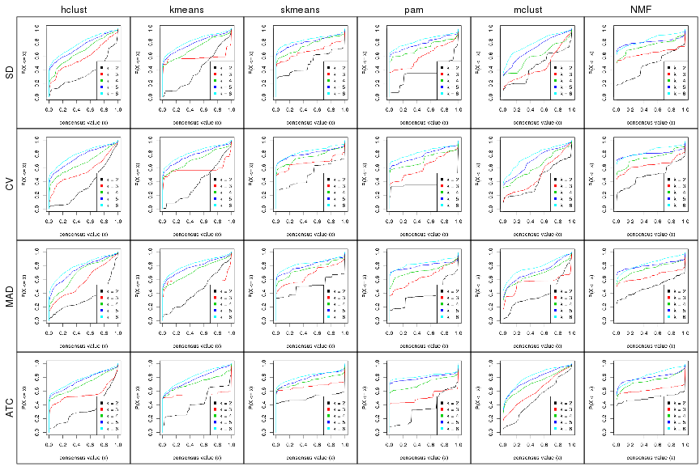
Consensus heatmaps for all methods. (What is a consensus heatmap?)
collect_plots(res_list, k = 2, fun = consensus_heatmap, mc.cores = 4)
collect_plots(res_list, k = 3, fun = consensus_heatmap, mc.cores = 4)
collect_plots(res_list, k = 4, fun = consensus_heatmap, mc.cores = 4)

collect_plots(res_list, k = 5, fun = consensus_heatmap, mc.cores = 4)
collect_plots(res_list, k = 6, fun = consensus_heatmap, mc.cores = 4)
Membership heatmaps for all methods. (What is a membership heatmap?)
collect_plots(res_list, k = 2, fun = membership_heatmap, mc.cores = 4)
collect_plots(res_list, k = 3, fun = membership_heatmap, mc.cores = 4)
collect_plots(res_list, k = 4, fun = membership_heatmap, mc.cores = 4)
collect_plots(res_list, k = 5, fun = membership_heatmap, mc.cores = 4)
collect_plots(res_list, k = 6, fun = membership_heatmap, mc.cores = 4)
Signature heatmaps for all methods. (What is a signature heatmap?)
Note in following heatmaps, rows are scaled.
collect_plots(res_list, k = 2, fun = get_signatures, mc.cores = 4)
collect_plots(res_list, k = 3, fun = get_signatures, mc.cores = 4)
collect_plots(res_list, k = 4, fun = get_signatures, mc.cores = 4)
collect_plots(res_list, k = 5, fun = get_signatures, mc.cores = 4)
collect_plots(res_list, k = 6, fun = get_signatures, mc.cores = 4)
The statistics used for measuring the stability of consensus partitioning. (How are they defined?)
get_stats(res_list, k = 2)
#> k 1-PAC mean_silhouette concordance area_increased Rand Jaccard
#> SD:NMF 2 0.556 0.822 0.894 0.470 0.498 0.498
#> CV:NMF 2 0.640 0.865 0.928 0.492 0.509 0.509
#> MAD:NMF 2 0.738 0.867 0.945 0.489 0.505 0.505
#> ATC:NMF 2 0.977 0.946 0.979 0.503 0.496 0.496
#> SD:skmeans 2 0.672 0.775 0.912 0.504 0.496 0.496
#> CV:skmeans 2 0.641 0.768 0.905 0.503 0.498 0.498
#> MAD:skmeans 2 0.677 0.875 0.944 0.505 0.495 0.495
#> ATC:skmeans 2 0.978 0.937 0.977 0.505 0.496 0.496
#> SD:mclust 2 0.526 0.794 0.857 0.446 0.497 0.497
#> CV:mclust 2 0.469 0.682 0.838 0.421 0.692 0.692
#> MAD:mclust 2 0.366 0.828 0.887 0.387 0.667 0.667
#> ATC:mclust 2 0.253 0.541 0.787 0.492 0.498 0.498
#> SD:kmeans 2 0.273 0.672 0.725 0.399 0.655 0.655
#> CV:kmeans 2 0.291 0.633 0.780 0.384 0.611 0.611
#> MAD:kmeans 2 0.281 0.670 0.827 0.441 0.503 0.503
#> ATC:kmeans 2 0.568 0.796 0.886 0.438 0.582 0.582
#> SD:pam 2 0.527 0.927 0.909 0.343 0.655 0.655
#> CV:pam 2 1.000 0.988 0.992 0.346 0.655 0.655
#> MAD:pam 2 0.535 0.875 0.906 0.384 0.643 0.643
#> ATC:pam 2 0.477 0.803 0.839 0.353 0.643 0.643
#> SD:hclust 2 0.430 0.800 0.899 0.354 0.692 0.692
#> CV:hclust 2 0.286 0.695 0.824 0.342 0.719 0.719
#> MAD:hclust 2 0.462 0.810 0.898 0.330 0.705 0.705
#> ATC:hclust 2 0.404 0.841 0.859 0.342 0.705 0.705
get_stats(res_list, k = 3)
#> k 1-PAC mean_silhouette concordance area_increased Rand Jaccard
#> SD:NMF 3 0.867 0.907 0.962 0.3594 0.648 0.415
#> CV:NMF 3 0.759 0.888 0.950 0.3053 0.627 0.396
#> MAD:NMF 3 0.872 0.878 0.952 0.3229 0.634 0.406
#> ATC:NMF 3 0.967 0.939 0.977 0.2320 0.611 0.388
#> SD:skmeans 3 0.748 0.854 0.934 0.3219 0.699 0.467
#> CV:skmeans 3 0.799 0.897 0.953 0.3269 0.691 0.457
#> MAD:skmeans 3 0.701 0.709 0.868 0.3207 0.689 0.451
#> ATC:skmeans 3 0.944 0.934 0.973 0.3241 0.733 0.511
#> SD:mclust 3 0.406 0.778 0.837 0.0218 0.523 0.402
#> CV:mclust 3 0.362 0.683 0.784 0.1762 0.816 0.757
#> MAD:mclust 3 0.751 0.929 0.949 0.4252 0.708 0.577
#> ATC:mclust 3 0.389 0.703 0.819 0.2414 0.577 0.375
#> SD:kmeans 3 1.000 0.959 0.974 0.4388 0.758 0.637
#> CV:kmeans 3 0.821 0.955 0.964 0.4998 0.711 0.568
#> MAD:kmeans 3 1.000 0.972 0.979 0.3245 0.590 0.386
#> ATC:kmeans 3 1.000 0.974 0.989 0.2513 0.654 0.499
#> SD:pam 3 0.629 0.770 0.829 0.7421 0.711 0.562
#> CV:pam 3 0.594 0.715 0.799 0.7803 0.735 0.598
#> MAD:pam 3 0.646 0.771 0.893 0.6496 0.682 0.518
#> ATC:pam 3 0.853 0.872 0.952 0.4540 0.812 0.719
#> SD:hclust 3 0.410 0.757 0.850 0.6410 0.729 0.616
#> CV:hclust 3 0.464 0.805 0.869 0.6203 0.765 0.673
#> MAD:hclust 3 0.385 0.667 0.806 0.7381 0.745 0.652
#> ATC:hclust 3 0.705 0.895 0.939 0.6247 0.769 0.672
get_stats(res_list, k = 4)
#> k 1-PAC mean_silhouette concordance area_increased Rand Jaccard
#> SD:NMF 4 0.754 0.822 0.910 0.171 0.800 0.503
#> CV:NMF 4 0.712 0.821 0.899 0.160 0.768 0.452
#> MAD:NMF 4 0.800 0.823 0.920 0.164 0.793 0.489
#> ATC:NMF 4 0.806 0.858 0.922 0.209 0.798 0.516
#> SD:skmeans 4 0.728 0.675 0.811 0.135 0.804 0.491
#> CV:skmeans 4 0.770 0.819 0.882 0.132 0.825 0.532
#> MAD:skmeans 4 0.726 0.782 0.880 0.133 0.848 0.581
#> ATC:skmeans 4 0.852 0.838 0.923 0.115 0.825 0.534
#> SD:mclust 4 0.565 0.749 0.858 0.312 0.742 0.591
#> CV:mclust 4 0.469 0.701 0.808 0.264 0.744 0.603
#> MAD:mclust 4 0.674 0.786 0.894 0.220 0.822 0.614
#> ATC:mclust 4 0.591 0.733 0.842 0.184 0.770 0.503
#> SD:kmeans 4 0.637 0.632 0.755 0.256 0.777 0.522
#> CV:kmeans 4 0.659 0.723 0.831 0.248 0.795 0.554
#> MAD:kmeans 4 0.642 0.690 0.836 0.241 0.771 0.501
#> ATC:kmeans 4 0.794 0.814 0.912 0.313 0.773 0.521
#> SD:pam 4 0.791 0.787 0.907 0.206 0.866 0.661
#> CV:pam 4 0.772 0.737 0.901 0.162 0.804 0.554
#> MAD:pam 4 0.829 0.865 0.930 0.147 0.818 0.554
#> ATC:pam 4 0.859 0.835 0.937 0.385 0.735 0.503
#> SD:hclust 4 0.499 0.657 0.800 0.157 0.920 0.821
#> CV:hclust 4 0.546 0.745 0.854 0.211 0.860 0.717
#> MAD:hclust 4 0.447 0.456 0.700 0.204 0.683 0.418
#> ATC:hclust 4 0.646 0.723 0.851 0.270 0.790 0.558
get_stats(res_list, k = 5)
#> k 1-PAC mean_silhouette concordance area_increased Rand Jaccard
#> SD:NMF 5 0.924 0.909 0.958 0.0737 0.868 0.542
#> CV:NMF 5 0.945 0.923 0.964 0.0795 0.851 0.510
#> MAD:NMF 5 0.906 0.879 0.946 0.0660 0.840 0.468
#> ATC:NMF 5 0.887 0.874 0.932 0.0663 0.916 0.684
#> SD:skmeans 5 0.780 0.781 0.889 0.0647 0.919 0.689
#> CV:skmeans 5 0.838 0.803 0.910 0.0647 0.901 0.633
#> MAD:skmeans 5 0.786 0.706 0.871 0.0617 0.890 0.599
#> ATC:skmeans 5 0.813 0.680 0.816 0.0592 0.948 0.797
#> SD:mclust 5 0.502 0.427 0.719 0.1993 0.868 0.666
#> CV:mclust 5 0.530 0.584 0.731 0.1327 0.845 0.636
#> MAD:mclust 5 0.603 0.785 0.829 0.0640 0.967 0.897
#> ATC:mclust 5 0.628 0.571 0.757 0.0769 0.941 0.787
#> SD:kmeans 5 0.689 0.691 0.822 0.0871 0.837 0.491
#> CV:kmeans 5 0.685 0.729 0.837 0.0918 0.848 0.519
#> MAD:kmeans 5 0.715 0.714 0.834 0.0861 0.881 0.601
#> ATC:kmeans 5 0.650 0.527 0.777 0.0796 0.916 0.718
#> SD:pam 5 0.780 0.776 0.848 0.0895 0.923 0.736
#> CV:pam 5 0.739 0.558 0.783 0.0929 0.882 0.619
#> MAD:pam 5 0.932 0.879 0.947 0.0955 0.818 0.452
#> ATC:pam 5 0.927 0.883 0.955 0.1142 0.895 0.653
#> SD:hclust 5 0.566 0.446 0.692 0.1067 0.823 0.552
#> CV:hclust 5 0.619 0.608 0.802 0.1337 0.864 0.633
#> MAD:hclust 5 0.583 0.615 0.781 0.0897 0.849 0.524
#> ATC:hclust 5 0.681 0.702 0.796 0.0716 0.879 0.604
get_stats(res_list, k = 6)
#> k 1-PAC mean_silhouette concordance area_increased Rand Jaccard
#> SD:NMF 6 0.804 0.601 0.772 0.0412 0.911 0.599
#> CV:NMF 6 0.840 0.693 0.848 0.0428 0.913 0.607
#> MAD:NMF 6 0.785 0.645 0.820 0.0375 0.941 0.721
#> ATC:NMF 6 0.752 0.664 0.815 0.0389 0.908 0.600
#> SD:skmeans 6 0.839 0.792 0.873 0.0377 0.907 0.589
#> CV:skmeans 6 0.792 0.620 0.748 0.0373 0.912 0.618
#> MAD:skmeans 6 0.820 0.813 0.859 0.0387 0.919 0.633
#> ATC:skmeans 6 0.855 0.729 0.861 0.0369 0.930 0.700
#> SD:mclust 6 0.641 0.547 0.764 0.0973 0.839 0.522
#> CV:mclust 6 0.562 0.608 0.742 0.0978 0.906 0.706
#> MAD:mclust 6 0.669 0.744 0.806 0.0942 0.925 0.748
#> ATC:mclust 6 0.625 0.531 0.726 0.0461 0.873 0.520
#> SD:kmeans 6 0.707 0.607 0.739 0.0488 0.931 0.690
#> CV:kmeans 6 0.725 0.652 0.745 0.0490 0.925 0.666
#> MAD:kmeans 6 0.738 0.655 0.803 0.0461 0.930 0.690
#> ATC:kmeans 6 0.648 0.444 0.687 0.0488 0.891 0.606
#> SD:pam 6 0.805 0.709 0.849 0.0545 0.902 0.604
#> CV:pam 6 0.814 0.726 0.862 0.0569 0.880 0.524
#> MAD:pam 6 0.856 0.826 0.903 0.0454 0.931 0.686
#> ATC:pam 6 0.954 0.896 0.958 0.0333 0.964 0.832
#> SD:hclust 6 0.604 0.488 0.704 0.0557 0.803 0.415
#> CV:hclust 6 0.670 0.610 0.742 0.0547 0.906 0.623
#> MAD:hclust 6 0.634 0.610 0.766 0.0633 0.946 0.770
#> ATC:hclust 6 0.684 0.707 0.789 0.0299 0.989 0.954
Following heatmap plots the partition for each combination of methods and the lightness correspond to the silhouette scores for samples in each method. On top the consensus subgroup is inferred from all methods by taking the mean silhouette scores as weight.
collect_stats(res_list, k = 2)
collect_stats(res_list, k = 3)
collect_stats(res_list, k = 4)
collect_stats(res_list, k = 5)
collect_stats(res_list, k = 6)
Collect partitions from all methods:
collect_classes(res_list, k = 2)
collect_classes(res_list, k = 3)
collect_classes(res_list, k = 4)
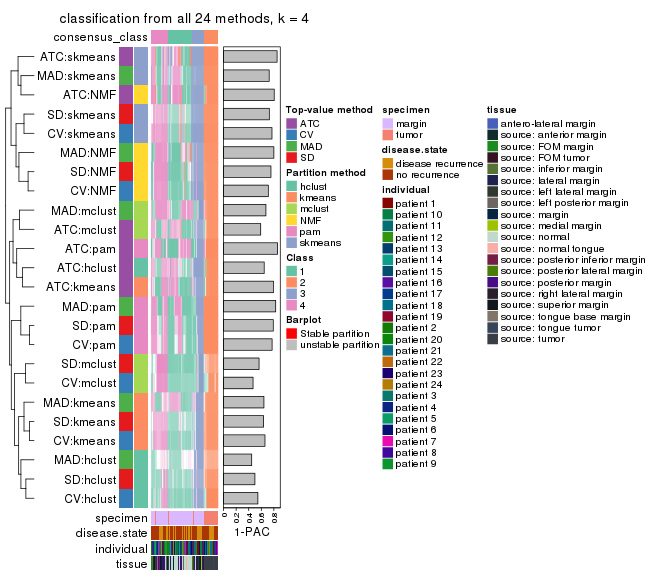
collect_classes(res_list, k = 5)
collect_classes(res_list, k = 6)
Overlap of top rows from different top-row methods:
top_rows_overlap(res_list, top_n = 1000, method = "euler")
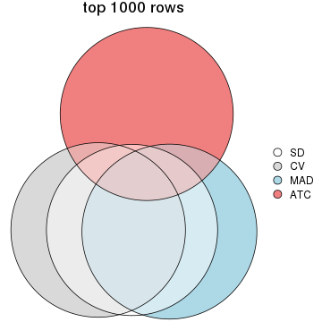
top_rows_overlap(res_list, top_n = 2000, method = "euler")
top_rows_overlap(res_list, top_n = 3000, method = "euler")
top_rows_overlap(res_list, top_n = 4000, method = "euler")
top_rows_overlap(res_list, top_n = 5000, method = "euler")
Also visualize the correspondance of rankings between different top-row methods:
top_rows_overlap(res_list, top_n = 1000, method = "correspondance")
top_rows_overlap(res_list, top_n = 2000, method = "correspondance")
top_rows_overlap(res_list, top_n = 3000, method = "correspondance")
top_rows_overlap(res_list, top_n = 4000, method = "correspondance")
top_rows_overlap(res_list, top_n = 5000, method = "correspondance")
Heatmaps of the top rows:
top_rows_heatmap(res_list, top_n = 1000)
top_rows_heatmap(res_list, top_n = 2000)
top_rows_heatmap(res_list, top_n = 3000)
top_rows_heatmap(res_list, top_n = 4000)
top_rows_heatmap(res_list, top_n = 5000)

Test correlation between subgroups and known annotations. If the known annotation is numeric, one-way ANOVA test is applied, and if the known annotation is discrete, chi-squared contingency table test is applied.
test_to_known_factors(res_list, k = 2)
#> n specimen(p) disease.state(p) individual(p) tissue(p) k
#> SD:NMF 92 1.05e-07 0.524 0.833 5.25e-04 2
#> CV:NMF 95 3.11e-08 0.525 0.789 2.49e-04 2
#> MAD:NMF 90 2.21e-05 0.789 0.766 3.51e-02 2
#> ATC:NMF 93 1.98e-06 1.000 0.415 5.03e-03 2
#> SD:skmeans 82 1.39e-05 0.664 0.540 2.20e-02 2
#> CV:skmeans 80 7.20e-06 0.878 0.582 9.06e-03 2
#> MAD:skmeans 95 2.22e-06 0.586 0.642 3.49e-03 2
#> ATC:skmeans 92 4.67e-06 0.918 0.484 4.92e-03 2
#> SD:mclust 91 1.86e-05 0.577 0.481 1.60e-02 2
#> CV:mclust 73 1.97e-14 0.846 0.987 2.82e-07 2
#> MAD:mclust 94 2.20e-17 0.824 0.999 4.65e-09 2
#> ATC:mclust 73 3.15e-07 0.922 0.802 3.75e-03 2
#> SD:kmeans 79 7.33e-16 1.000 0.991 1.11e-08 2
#> CV:kmeans 91 4.29e-18 0.939 1.000 1.52e-09 2
#> MAD:kmeans 82 2.60e-07 0.977 0.499 9.62e-04 2
#> ATC:kmeans 95 1.22e-13 0.889 0.973 1.99e-06 2
#> SD:pam 96 3.64e-19 0.925 1.000 2.13e-10 2
#> CV:pam 96 3.64e-19 0.925 1.000 2.13e-10 2
#> MAD:pam 95 5.68e-19 0.871 1.000 3.09e-10 2
#> ATC:pam 94 1.14e-18 0.831 1.000 5.08e-10 2
#> SD:hclust 86 2.97e-02 1.000 0.157 1.59e-02 2
#> CV:hclust 88 9.16e-02 1.000 0.115 3.67e-02 2
#> MAD:hclust 90 4.80e-02 1.000 0.126 3.59e-02 2
#> ATC:hclust 96 7.02e-15 0.673 0.996 3.36e-07 2
test_to_known_factors(res_list, k = 3)
#> n specimen(p) disease.state(p) individual(p) tissue(p) k
#> SD:NMF 91 1.26e-13 0.833 0.803 6.02e-06 3
#> CV:NMF 93 5.89e-14 0.822 0.895 3.95e-06 3
#> MAD:NMF 88 2.49e-13 0.814 0.769 4.54e-06 3
#> ATC:NMF 92 1.98e-15 0.985 0.874 8.66e-07 3
#> SD:skmeans 93 3.32e-12 0.955 0.953 7.59e-05 3
#> CV:skmeans 94 4.54e-11 0.980 0.889 1.27e-04 3
#> MAD:skmeans 78 1.21e-08 0.859 0.560 1.32e-03 3
#> ATC:skmeans 93 3.24e-13 0.414 0.890 1.86e-05 3
#> SD:mclust 92 2.56e-12 0.257 0.464 1.58e-03 3
#> CV:mclust 91 5.84e-13 0.228 0.493 8.71e-04 3
#> MAD:mclust 96 3.81e-16 0.676 0.780 2.56e-06 3
#> ATC:mclust 84 1.33e-14 0.960 0.634 1.20e-06 3
#> SD:kmeans 95 5.92e-18 0.813 0.870 2.31e-08 3
#> CV:kmeans 96 3.81e-18 0.854 0.882 1.73e-08 3
#> MAD:kmeans 96 3.84e-18 0.840 0.875 2.29e-08 3
#> ATC:kmeans 96 4.14e-16 0.896 0.800 3.29e-07 3
#> SD:pam 90 5.05e-18 0.290 0.531 8.10e-08 3
#> CV:pam 76 2.60e-14 0.596 0.711 3.56e-06 3
#> MAD:pam 86 3.14e-16 0.289 0.535 6.72e-07 3
#> ATC:pam 85 7.25e-16 0.371 0.793 2.23e-07 3
#> SD:hclust 85 8.92e-17 0.708 0.770 1.17e-08 3
#> CV:hclust 91 1.03e-16 0.700 0.593 7.91e-08 3
#> MAD:hclust 85 1.12e-16 0.693 0.762 1.15e-07 3
#> ATC:hclust 95 9.38e-16 0.771 0.781 3.93e-07 3
test_to_known_factors(res_list, k = 4)
#> n specimen(p) disease.state(p) individual(p) tissue(p) k
#> SD:NMF 88 1.13e-15 0.622 0.928 5.77e-09 4
#> CV:NMF 90 4.39e-15 0.944 0.942 4.32e-09 4
#> MAD:NMF 88 5.73e-13 0.618 0.867 1.92e-05 4
#> ATC:NMF 91 2.49e-14 0.326 0.547 7.05e-06 4
#> SD:skmeans 81 2.49e-15 0.974 0.966 3.33e-10 4
#> CV:skmeans 93 1.26e-14 0.981 0.997 1.57e-10 4
#> MAD:skmeans 89 4.06e-17 0.551 0.607 5.71e-07 4
#> ATC:skmeans 89 1.58e-12 0.363 0.175 2.08e-05 4
#> SD:mclust 83 2.27e-15 0.556 0.766 9.70e-07 4
#> CV:mclust 85 3.67e-13 0.360 0.710 5.76e-05 4
#> MAD:mclust 90 3.32e-15 0.415 0.267 3.59e-04 4
#> ATC:mclust 84 1.11e-13 0.297 0.325 1.01e-05 4
#> SD:kmeans 79 5.53e-15 0.791 0.941 5.89e-09 4
#> CV:kmeans 88 9.38e-17 0.793 0.996 8.59e-11 4
#> MAD:kmeans 84 6.39e-17 0.117 0.703 9.17e-07 4
#> ATC:kmeans 90 3.14e-15 0.793 0.656 6.72e-06 4
#> SD:pam 79 4.12e-14 0.326 0.657 5.48e-07 4
#> CV:pam 77 9.85e-14 0.224 0.543 3.85e-06 4
#> MAD:pam 93 9.62e-17 0.380 0.313 7.44e-07 4
#> ATC:pam 85 3.19e-13 0.133 0.692 4.03e-04 4
#> SD:hclust 78 1.24e-15 0.856 0.503 5.55e-07 4
#> CV:hclust 88 1.56e-13 0.849 0.690 4.80e-06 4
#> MAD:hclust 53 2.60e-11 0.404 0.609 1.21e-05 4
#> ATC:hclust 83 3.27e-14 0.599 0.637 1.27e-05 4
test_to_known_factors(res_list, k = 5)
#> n specimen(p) disease.state(p) individual(p) tissue(p) k
#> SD:NMF 93 8.07e-13 0.3078 0.7609 7.45e-06 5
#> CV:NMF 95 5.11e-13 0.2996 0.7203 7.07e-06 5
#> MAD:NMF 90 8.95e-13 0.5681 0.7217 4.07e-06 5
#> ATC:NMF 91 1.16e-13 0.6160 0.5274 1.40e-05 5
#> SD:skmeans 87 7.00e-15 0.6868 0.9625 5.76e-09 5
#> CV:skmeans 88 5.00e-14 0.7174 0.9580 1.90e-08 5
#> MAD:skmeans 75 1.40e-13 0.8381 0.8255 3.78e-07 5
#> ATC:skmeans 77 2.15e-11 0.4528 0.6517 1.25e-04 5
#> SD:mclust 40 2.06e-09 0.9041 0.6102 1.57e-03 5
#> CV:mclust 63 1.12e-11 0.7574 0.5328 2.93e-05 5
#> MAD:mclust 93 7.11e-14 0.4738 0.1263 4.10e-04 5
#> ATC:mclust 70 4.75e-13 0.3004 0.1492 2.18e-05 5
#> SD:kmeans 77 1.17e-12 0.2214 0.8350 4.79e-06 5
#> CV:kmeans 81 1.06e-11 0.2295 0.8468 1.60e-05 5
#> MAD:kmeans 81 1.87e-14 0.2966 0.3604 3.10e-05 5
#> ATC:kmeans 51 8.42e-12 0.6815 0.6311 2.91e-05 5
#> SD:pam 91 1.48e-15 0.2487 0.4406 8.91e-07 5
#> CV:pam 59 5.20e-11 0.2053 0.9153 7.34e-07 5
#> MAD:pam 88 5.74e-16 0.0724 0.0768 6.96e-06 5
#> ATC:pam 90 1.62e-13 0.1918 0.5717 1.65e-04 5
#> SD:hclust 52 2.21e-10 0.5526 0.1953 1.47e-03 5
#> CV:hclust 73 8.00e-11 0.3681 0.2502 1.60e-04 5
#> MAD:hclust 81 1.80e-15 0.1638 0.3444 2.70e-06 5
#> ATC:hclust 83 3.37e-13 0.7153 0.6894 8.78e-06 5
test_to_known_factors(res_list, k = 6)
#> n specimen(p) disease.state(p) individual(p) tissue(p) k
#> SD:NMF 69 1.69e-09 0.6698 0.674 9.07e-04 6
#> CV:NMF 70 1.63e-09 0.7940 0.261 1.22e-03 6
#> MAD:NMF 72 2.93e-11 0.7561 0.780 2.40e-05 6
#> ATC:NMF 73 1.05e-11 0.6145 0.473 2.21e-05 6
#> SD:skmeans 83 1.89e-14 0.4931 0.441 1.15e-06 6
#> CV:skmeans 61 8.99e-11 0.2604 0.965 1.46e-06 6
#> MAD:skmeans 95 8.49e-17 0.1960 0.226 6.32e-06 6
#> ATC:skmeans 76 1.36e-10 0.1920 0.865 4.78e-04 6
#> SD:mclust 61 7.55e-12 0.4466 0.289 1.38e-06 6
#> CV:mclust 67 4.24e-11 0.7048 0.364 1.48e-04 6
#> MAD:mclust 90 9.09e-14 0.4780 0.191 1.25e-04 6
#> ATC:mclust 53 1.49e-09 0.1635 0.570 3.74e-03 6
#> SD:kmeans 62 4.03e-11 0.0451 0.585 1.49e-03 6
#> CV:kmeans 66 6.05e-09 0.4080 0.486 4.09e-03 6
#> MAD:kmeans 71 7.14e-12 0.2701 0.150 9.36e-04 6
#> ATC:kmeans 47 1.05e-08 0.8631 0.436 1.28e-04 6
#> SD:pam 80 8.58e-14 0.3344 0.804 1.81e-06 6
#> CV:pam 79 8.95e-13 0.6093 0.467 8.77e-06 6
#> MAD:pam 90 9.73e-15 0.2107 0.214 4.86e-05 6
#> ATC:pam 90 5.89e-13 0.3509 0.423 2.65e-04 6
#> SD:hclust 54 5.26e-11 0.1954 0.451 4.33e-05 6
#> CV:hclust 70 3.60e-10 0.2740 0.202 1.80e-03 6
#> MAD:hclust 79 1.45e-13 0.3762 0.385 6.73e-06 6
#> ATC:hclust 86 9.88e-14 0.6931 0.722 6.95e-06 6
The object with results only for a single top-value method and a single partition method can be extracted as:
res = res_list["SD", "hclust"]
# you can also extract it by
# res = res_list["SD:hclust"]
A summary of res and all the functions that can be applied to it:
res
#> A 'ConsensusPartition' object with k = 2, 3, 4, 5, 6.
#> On a matrix with 17783 rows and 96 columns.
#> Top rows (1000, 2000, 3000, 4000, 5000) are extracted by 'SD' method.
#> Subgroups are detected by 'hclust' method.
#> Performed in total 1250 partitions by row resampling.
#> Best k for subgroups seems to be 3.
#>
#> Following methods can be applied to this 'ConsensusPartition' object:
#> [1] "cola_report" "collect_classes" "collect_plots"
#> [4] "collect_stats" "colnames" "compare_signatures"
#> [7] "consensus_heatmap" "dimension_reduction" "functional_enrichment"
#> [10] "get_anno_col" "get_anno" "get_classes"
#> [13] "get_consensus" "get_matrix" "get_membership"
#> [16] "get_param" "get_signatures" "get_stats"
#> [19] "is_best_k" "is_stable_k" "membership_heatmap"
#> [22] "ncol" "nrow" "plot_ecdf"
#> [25] "rownames" "select_partition_number" "show"
#> [28] "suggest_best_k" "test_to_known_factors"
collect_plots() function collects all the plots made from res for all k (number of partitions)
into one single page to provide an easy and fast comparison between different k.
collect_plots(res)
The plots are:
k and the heatmap of
predicted classes for each k.k.k.k.All the plots in panels can be made by individual functions and they are plotted later in this section.
select_partition_number() produces several plots showing different
statistics for choosing “optimized” k. There are following statistics:
k;k, the area increased is defined as \(A_k - A_{k-1}\).The detailed explanations of these statistics can be found in the cola vignette.
Generally speaking, lower PAC score, higher mean silhouette score or higher
concordance corresponds to better partition. Rand index and Jaccard index
measure how similar the current partition is compared to partition with k-1.
If they are too similar, we won't accept k is better than k-1.
select_partition_number(res)
The numeric values for all these statistics can be obtained by get_stats().
get_stats(res)
#> k 1-PAC mean_silhouette concordance area_increased Rand Jaccard
#> 2 2 0.430 0.800 0.899 0.3538 0.692 0.692
#> 3 3 0.410 0.757 0.850 0.6410 0.729 0.616
#> 4 4 0.499 0.657 0.800 0.1569 0.920 0.821
#> 5 5 0.566 0.446 0.692 0.1067 0.823 0.552
#> 6 6 0.604 0.488 0.704 0.0557 0.803 0.415
suggest_best_k() suggests the best \(k\) based on these statistics. The rules are as follows:
suggest_best_k(res)
#> [1] 3
Following shows the table of the partitions (You need to click the show/hide
code output link to see it). The membership matrix (columns with name p*)
is inferred by
clue::cl_consensus()
function with the SE method. Basically the value in the membership matrix
represents the probability to belong to a certain group. The finall class
label for an item is determined with the group with highest probability it
belongs to.
In get_classes() function, the entropy is calculated from the membership
matrix and the silhouette score is calculated from the consensus matrix.
cbind(get_classes(res, k = 2), get_membership(res, k = 2))
#> class entropy silhouette p1 p2
#> GSM771247 2 0.9522 0.47732 0.372 0.628
#> GSM771246 2 0.9896 0.30518 0.440 0.560
#> GSM771245 2 0.6048 0.82843 0.148 0.852
#> GSM771169 1 0.2043 0.88565 0.968 0.032
#> GSM771171 1 0.2043 0.88565 0.968 0.032
#> GSM771175 2 0.0000 0.88408 0.000 1.000
#> GSM771172 2 0.8763 0.65167 0.296 0.704
#> GSM771174 2 0.0000 0.88408 0.000 1.000
#> GSM771178 1 0.9963 0.00322 0.536 0.464
#> GSM771176 2 0.8386 0.68861 0.268 0.732
#> GSM771181 1 0.0938 0.88551 0.988 0.012
#> GSM771179 2 0.5737 0.83579 0.136 0.864
#> GSM771184 2 0.7139 0.79211 0.196 0.804
#> GSM771182 2 0.0938 0.88262 0.012 0.988
#> GSM771185 2 0.0000 0.88408 0.000 1.000
#> GSM771186 2 0.5629 0.83732 0.132 0.868
#> GSM771188 2 0.8386 0.68861 0.268 0.732
#> GSM771193 2 0.9580 0.47655 0.380 0.620
#> GSM771192 2 0.6343 0.81618 0.160 0.840
#> GSM771189 2 0.0000 0.88408 0.000 1.000
#> GSM771194 2 0.5946 0.83082 0.144 0.856
#> GSM771191 2 0.0000 0.88408 0.000 1.000
#> GSM771202 2 0.5737 0.83579 0.136 0.864
#> GSM771200 2 0.5737 0.83579 0.136 0.864
#> GSM771206 2 0.0000 0.88408 0.000 1.000
#> GSM771208 2 0.0000 0.88408 0.000 1.000
#> GSM771207 1 0.2043 0.88565 0.968 0.032
#> GSM771209 2 0.5737 0.83579 0.136 0.864
#> GSM771211 2 0.9522 0.47732 0.372 0.628
#> GSM771212 2 0.0000 0.88408 0.000 1.000
#> GSM771214 2 0.0000 0.88408 0.000 1.000
#> GSM771213 2 0.0000 0.88408 0.000 1.000
#> GSM771216 2 0.0000 0.88408 0.000 1.000
#> GSM771217 2 0.0000 0.88408 0.000 1.000
#> GSM771219 1 0.2043 0.88565 0.968 0.032
#> GSM771218 2 0.0000 0.88408 0.000 1.000
#> GSM771222 2 0.7056 0.79594 0.192 0.808
#> GSM771220 1 0.5737 0.80096 0.864 0.136
#> GSM771226 1 0.0938 0.88551 0.988 0.012
#> GSM771223 2 0.0000 0.88408 0.000 1.000
#> GSM771225 2 0.6712 0.80696 0.176 0.824
#> GSM771232 2 0.5629 0.83732 0.132 0.868
#> GSM771235 1 0.7602 0.68547 0.780 0.220
#> GSM771234 1 0.0938 0.88551 0.988 0.012
#> GSM771242 1 0.1633 0.88686 0.976 0.024
#> GSM771239 2 0.5629 0.83963 0.132 0.868
#> GSM771240 2 0.6048 0.82879 0.148 0.852
#> GSM771241 1 0.1633 0.88686 0.976 0.024
#> GSM771197 1 0.0938 0.88551 0.988 0.012
#> GSM771195 2 0.7139 0.79211 0.196 0.804
#> GSM771198 1 0.0938 0.88551 0.988 0.012
#> GSM771199 1 0.0938 0.88551 0.988 0.012
#> GSM771204 2 0.0000 0.88408 0.000 1.000
#> GSM771205 2 0.5737 0.83579 0.136 0.864
#> GSM771229 2 0.9963 0.22141 0.464 0.536
#> GSM771227 2 0.7139 0.79211 0.196 0.804
#> GSM771230 2 0.0000 0.88408 0.000 1.000
#> GSM771231 2 0.3274 0.85339 0.060 0.940
#> GSM771238 2 0.5946 0.83082 0.144 0.856
#> GSM771236 2 0.6887 0.80233 0.184 0.816
#> GSM771154 2 0.0000 0.88408 0.000 1.000
#> GSM771152 2 0.4939 0.84957 0.108 0.892
#> GSM771156 2 0.9866 0.31899 0.432 0.568
#> GSM771157 2 0.0000 0.88408 0.000 1.000
#> GSM771155 2 0.0000 0.88408 0.000 1.000
#> GSM771160 1 0.0938 0.88551 0.988 0.012
#> GSM771161 2 0.6048 0.82843 0.148 0.852
#> GSM771159 2 0.6712 0.80696 0.176 0.824
#> GSM771165 2 0.0000 0.88408 0.000 1.000
#> GSM771166 1 0.9358 0.39490 0.648 0.352
#> GSM771167 2 0.3274 0.85339 0.060 0.940
#> GSM771168 2 0.9963 0.22141 0.464 0.536
#> GSM771163 2 0.7139 0.79211 0.196 0.804
#> GSM771244 2 0.0938 0.88055 0.012 0.988
#> GSM771170 2 0.6887 0.80233 0.184 0.816
#> GSM771173 2 0.0000 0.88408 0.000 1.000
#> GSM771177 2 0.0938 0.88055 0.012 0.988
#> GSM771180 2 0.0000 0.88408 0.000 1.000
#> GSM771183 2 0.0938 0.88055 0.012 0.988
#> GSM771187 2 0.0938 0.88055 0.012 0.988
#> GSM771190 2 0.0938 0.88055 0.012 0.988
#> GSM771201 2 0.0938 0.88055 0.012 0.988
#> GSM771210 2 0.0376 0.88302 0.004 0.996
#> GSM771215 2 0.0938 0.88055 0.012 0.988
#> GSM771221 2 0.0938 0.88055 0.012 0.988
#> GSM771224 1 0.9754 0.36066 0.592 0.408
#> GSM771233 2 0.0938 0.88055 0.012 0.988
#> GSM771243 2 0.0938 0.88055 0.012 0.988
#> GSM771196 2 0.0938 0.88055 0.012 0.988
#> GSM771203 2 0.0938 0.88055 0.012 0.988
#> GSM771228 2 0.0938 0.88055 0.012 0.988
#> GSM771237 2 0.0938 0.88055 0.012 0.988
#> GSM771153 2 0.0938 0.88055 0.012 0.988
#> GSM771158 2 0.0938 0.88055 0.012 0.988
#> GSM771162 2 0.0000 0.88408 0.000 1.000
#> GSM771164 2 0.0938 0.88055 0.012 0.988
cbind(get_classes(res, k = 3), get_membership(res, k = 3))
#> class entropy silhouette p1 p2 p3
#> GSM771247 1 0.5465 0.548 0.712 0.000 0.288
#> GSM771246 1 0.5926 0.422 0.644 0.000 0.356
#> GSM771245 1 0.4277 0.777 0.852 0.016 0.132
#> GSM771169 3 0.2878 0.867 0.096 0.000 0.904
#> GSM771171 3 0.2878 0.867 0.096 0.000 0.904
#> GSM771175 1 0.2878 0.820 0.904 0.096 0.000
#> GSM771172 1 0.4605 0.694 0.796 0.000 0.204
#> GSM771174 1 0.2878 0.820 0.904 0.096 0.000
#> GSM771178 1 0.6280 0.131 0.540 0.000 0.460
#> GSM771176 1 0.5659 0.687 0.740 0.012 0.248
#> GSM771181 3 0.0237 0.868 0.000 0.004 0.996
#> GSM771179 1 0.1643 0.803 0.956 0.000 0.044
#> GSM771184 1 0.5407 0.765 0.820 0.076 0.104
#> GSM771182 1 0.4233 0.793 0.836 0.160 0.004
#> GSM771185 1 0.3551 0.808 0.868 0.132 0.000
#> GSM771186 1 0.5466 0.745 0.800 0.160 0.040
#> GSM771188 1 0.5659 0.687 0.740 0.012 0.248
#> GSM771193 1 0.6359 0.515 0.628 0.008 0.364
#> GSM771192 1 0.8513 0.474 0.568 0.316 0.116
#> GSM771189 1 0.5810 0.590 0.664 0.336 0.000
#> GSM771194 1 0.4418 0.778 0.848 0.020 0.132
#> GSM771191 1 0.2796 0.821 0.908 0.092 0.000
#> GSM771202 1 0.1643 0.803 0.956 0.000 0.044
#> GSM771200 1 0.1643 0.803 0.956 0.000 0.044
#> GSM771206 1 0.2796 0.821 0.908 0.092 0.000
#> GSM771208 1 0.2796 0.821 0.908 0.092 0.000
#> GSM771207 3 0.2878 0.867 0.096 0.000 0.904
#> GSM771209 1 0.1643 0.803 0.956 0.000 0.044
#> GSM771211 1 0.5465 0.548 0.712 0.000 0.288
#> GSM771212 1 0.2796 0.821 0.908 0.092 0.000
#> GSM771214 1 0.4002 0.794 0.840 0.160 0.000
#> GSM771213 1 0.2796 0.821 0.908 0.092 0.000
#> GSM771216 1 0.2796 0.821 0.908 0.092 0.000
#> GSM771217 1 0.2796 0.821 0.908 0.092 0.000
#> GSM771219 3 0.2878 0.867 0.096 0.000 0.904
#> GSM771218 1 0.2796 0.821 0.908 0.092 0.000
#> GSM771222 1 0.4449 0.783 0.860 0.040 0.100
#> GSM771220 3 0.4750 0.764 0.216 0.000 0.784
#> GSM771226 3 0.0237 0.868 0.000 0.004 0.996
#> GSM771223 1 0.2796 0.821 0.908 0.092 0.000
#> GSM771225 1 0.5181 0.773 0.832 0.084 0.084
#> GSM771232 1 0.3764 0.799 0.892 0.068 0.040
#> GSM771235 3 0.5291 0.631 0.268 0.000 0.732
#> GSM771234 3 0.0237 0.868 0.000 0.004 0.996
#> GSM771242 3 0.2165 0.872 0.064 0.000 0.936
#> GSM771239 1 0.5137 0.793 0.832 0.104 0.064
#> GSM771240 1 0.4277 0.778 0.852 0.016 0.132
#> GSM771241 3 0.2165 0.872 0.064 0.000 0.936
#> GSM771197 3 0.0237 0.868 0.000 0.004 0.996
#> GSM771195 1 0.5492 0.762 0.816 0.080 0.104
#> GSM771198 3 0.0237 0.868 0.000 0.004 0.996
#> GSM771199 3 0.0237 0.868 0.000 0.004 0.996
#> GSM771204 1 0.2796 0.821 0.908 0.092 0.000
#> GSM771205 1 0.1643 0.803 0.956 0.000 0.044
#> GSM771229 1 0.6045 0.360 0.620 0.000 0.380
#> GSM771227 1 0.5492 0.762 0.816 0.080 0.104
#> GSM771230 1 0.2878 0.820 0.904 0.096 0.000
#> GSM771231 1 0.5117 0.807 0.832 0.108 0.060
#> GSM771238 1 0.4418 0.778 0.848 0.020 0.132
#> GSM771236 1 0.3213 0.789 0.900 0.008 0.092
#> GSM771154 1 0.2796 0.821 0.908 0.092 0.000
#> GSM771152 1 0.5798 0.741 0.776 0.184 0.040
#> GSM771156 1 0.7245 0.440 0.596 0.036 0.368
#> GSM771157 1 0.2796 0.821 0.908 0.092 0.000
#> GSM771155 1 0.3038 0.818 0.896 0.104 0.000
#> GSM771160 3 0.0237 0.868 0.000 0.004 0.996
#> GSM771161 1 0.4277 0.777 0.852 0.016 0.132
#> GSM771159 1 0.5181 0.773 0.832 0.084 0.084
#> GSM771165 1 0.2878 0.820 0.904 0.096 0.000
#> GSM771166 3 0.6314 0.272 0.392 0.004 0.604
#> GSM771167 1 0.5117 0.807 0.832 0.108 0.060
#> GSM771168 1 0.6045 0.360 0.620 0.000 0.380
#> GSM771163 1 0.5492 0.762 0.816 0.080 0.104
#> GSM771244 2 0.0892 0.904 0.020 0.980 0.000
#> GSM771170 1 0.3213 0.789 0.900 0.008 0.092
#> GSM771173 2 0.5968 0.317 0.364 0.636 0.000
#> GSM771177 2 0.0747 0.905 0.016 0.984 0.000
#> GSM771180 2 0.6079 0.241 0.388 0.612 0.000
#> GSM771183 2 0.0592 0.904 0.012 0.988 0.000
#> GSM771187 2 0.0892 0.904 0.020 0.980 0.000
#> GSM771190 2 0.0747 0.904 0.016 0.984 0.000
#> GSM771201 2 0.2066 0.863 0.060 0.940 0.000
#> GSM771210 1 0.4062 0.782 0.836 0.164 0.000
#> GSM771215 2 0.0747 0.904 0.016 0.984 0.000
#> GSM771221 2 0.0592 0.904 0.012 0.988 0.000
#> GSM771224 3 0.8938 0.453 0.284 0.164 0.552
#> GSM771233 2 0.0592 0.904 0.012 0.988 0.000
#> GSM771243 2 0.0892 0.904 0.020 0.980 0.000
#> GSM771196 2 0.0892 0.904 0.020 0.980 0.000
#> GSM771203 2 0.0592 0.904 0.012 0.988 0.000
#> GSM771228 2 0.0592 0.904 0.012 0.988 0.000
#> GSM771237 2 0.0747 0.904 0.016 0.984 0.000
#> GSM771153 2 0.0892 0.904 0.020 0.980 0.000
#> GSM771158 2 0.0592 0.904 0.012 0.988 0.000
#> GSM771162 2 0.6079 0.241 0.388 0.612 0.000
#> GSM771164 2 0.0592 0.904 0.012 0.988 0.000
cbind(get_classes(res, k = 4), get_membership(res, k = 4))
#> class entropy silhouette p1 p2 p3 p4
#> GSM771247 1 0.5608 0.4354 0.684 0.000 0.256 0.060
#> GSM771246 1 0.4741 0.3283 0.668 0.000 0.328 0.004
#> GSM771245 4 0.4331 0.8752 0.288 0.000 0.000 0.712
#> GSM771169 3 0.2647 0.8085 0.120 0.000 0.880 0.000
#> GSM771171 3 0.2647 0.8085 0.120 0.000 0.880 0.000
#> GSM771175 1 0.4710 0.6500 0.792 0.088 0.000 0.120
#> GSM771172 1 0.3539 0.5213 0.820 0.000 0.176 0.004
#> GSM771174 1 0.4710 0.6500 0.792 0.088 0.000 0.120
#> GSM771178 1 0.5112 0.0964 0.560 0.000 0.436 0.004
#> GSM771176 4 0.6793 0.8210 0.288 0.000 0.132 0.580
#> GSM771181 3 0.1576 0.8123 0.000 0.004 0.948 0.048
#> GSM771179 1 0.0657 0.6460 0.984 0.000 0.012 0.004
#> GSM771184 1 0.5940 0.5867 0.728 0.028 0.072 0.172
#> GSM771182 1 0.6133 0.6245 0.676 0.100 0.004 0.220
#> GSM771185 1 0.5740 0.6005 0.700 0.092 0.000 0.208
#> GSM771186 1 0.5279 0.5769 0.736 0.072 0.000 0.192
#> GSM771188 4 0.6793 0.8210 0.288 0.000 0.132 0.580
#> GSM771193 4 0.7459 0.6962 0.244 0.000 0.248 0.508
#> GSM771192 1 0.9005 0.2924 0.468 0.236 0.104 0.192
#> GSM771189 1 0.7216 0.4584 0.548 0.244 0.000 0.208
#> GSM771194 4 0.4304 0.8729 0.284 0.000 0.000 0.716
#> GSM771191 1 0.4753 0.5957 0.788 0.084 0.000 0.128
#> GSM771202 1 0.0657 0.6460 0.984 0.000 0.012 0.004
#> GSM771200 1 0.0657 0.6460 0.984 0.000 0.012 0.004
#> GSM771206 1 0.3754 0.6438 0.852 0.084 0.000 0.064
#> GSM771208 1 0.3754 0.6438 0.852 0.084 0.000 0.064
#> GSM771207 3 0.2647 0.8085 0.120 0.000 0.880 0.000
#> GSM771209 1 0.0657 0.6460 0.984 0.000 0.012 0.004
#> GSM771211 1 0.5608 0.4354 0.684 0.000 0.256 0.060
#> GSM771212 1 0.3754 0.6438 0.852 0.084 0.000 0.064
#> GSM771214 1 0.3910 0.6236 0.820 0.156 0.000 0.024
#> GSM771213 1 0.3754 0.6438 0.852 0.084 0.000 0.064
#> GSM771216 1 0.3754 0.6438 0.852 0.084 0.000 0.064
#> GSM771217 1 0.3754 0.6438 0.852 0.084 0.000 0.064
#> GSM771219 3 0.2647 0.8085 0.120 0.000 0.880 0.000
#> GSM771218 1 0.3754 0.6438 0.852 0.084 0.000 0.064
#> GSM771222 1 0.4004 0.6346 0.852 0.012 0.068 0.068
#> GSM771220 3 0.4155 0.6712 0.240 0.000 0.756 0.004
#> GSM771226 3 0.1576 0.8123 0.000 0.004 0.948 0.048
#> GSM771223 1 0.6049 0.3397 0.652 0.084 0.000 0.264
#> GSM771225 1 0.5887 0.5841 0.724 0.036 0.048 0.192
#> GSM771232 1 0.3389 0.6470 0.868 0.024 0.004 0.104
#> GSM771235 3 0.5581 0.6694 0.132 0.000 0.728 0.140
#> GSM771234 3 0.1576 0.8123 0.000 0.004 0.948 0.048
#> GSM771242 3 0.1792 0.8199 0.068 0.000 0.932 0.000
#> GSM771239 1 0.5461 0.6240 0.756 0.048 0.028 0.168
#> GSM771240 1 0.4991 0.0167 0.608 0.000 0.004 0.388
#> GSM771241 3 0.1792 0.8199 0.068 0.000 0.932 0.000
#> GSM771197 3 0.1576 0.8123 0.000 0.004 0.948 0.048
#> GSM771195 1 0.6073 0.5818 0.720 0.032 0.072 0.176
#> GSM771198 3 0.1576 0.8123 0.000 0.004 0.948 0.048
#> GSM771199 3 0.1576 0.8123 0.000 0.004 0.948 0.048
#> GSM771204 1 0.6049 0.3397 0.652 0.084 0.000 0.264
#> GSM771205 1 0.0657 0.6460 0.984 0.000 0.012 0.004
#> GSM771229 1 0.4855 0.2945 0.644 0.000 0.352 0.004
#> GSM771227 1 0.6073 0.5818 0.720 0.032 0.072 0.176
#> GSM771230 1 0.5159 0.6133 0.756 0.088 0.000 0.156
#> GSM771231 1 0.7162 0.5563 0.648 0.088 0.064 0.200
#> GSM771238 4 0.4304 0.8729 0.284 0.000 0.000 0.716
#> GSM771236 1 0.3652 0.6328 0.868 0.008 0.060 0.064
#> GSM771154 1 0.3754 0.6438 0.852 0.084 0.000 0.064
#> GSM771152 1 0.5632 0.5787 0.712 0.092 0.000 0.196
#> GSM771156 1 0.8109 0.1893 0.460 0.028 0.344 0.168
#> GSM771157 1 0.3754 0.6438 0.852 0.084 0.000 0.064
#> GSM771155 1 0.4487 0.6501 0.808 0.092 0.000 0.100
#> GSM771160 3 0.1576 0.8123 0.000 0.004 0.948 0.048
#> GSM771161 4 0.4331 0.8752 0.288 0.000 0.000 0.712
#> GSM771159 1 0.5887 0.5841 0.724 0.036 0.048 0.192
#> GSM771165 1 0.5159 0.6133 0.756 0.088 0.000 0.156
#> GSM771166 3 0.6565 0.3903 0.304 0.004 0.600 0.092
#> GSM771167 1 0.7162 0.5563 0.648 0.088 0.064 0.200
#> GSM771168 1 0.4855 0.2945 0.644 0.000 0.352 0.004
#> GSM771163 1 0.6073 0.5818 0.720 0.032 0.072 0.176
#> GSM771244 2 0.1635 0.8900 0.008 0.948 0.000 0.044
#> GSM771170 1 0.3652 0.6328 0.868 0.008 0.060 0.064
#> GSM771173 2 0.6875 0.4736 0.220 0.596 0.000 0.184
#> GSM771177 2 0.1452 0.8916 0.008 0.956 0.000 0.036
#> GSM771180 2 0.7325 0.3805 0.232 0.532 0.000 0.236
#> GSM771183 2 0.0188 0.8946 0.004 0.996 0.000 0.000
#> GSM771187 2 0.1635 0.8900 0.008 0.948 0.000 0.044
#> GSM771190 2 0.0336 0.8941 0.008 0.992 0.000 0.000
#> GSM771201 2 0.2596 0.8613 0.024 0.908 0.000 0.068
#> GSM771210 1 0.6240 0.4370 0.668 0.156 0.000 0.176
#> GSM771215 2 0.0336 0.8941 0.008 0.992 0.000 0.000
#> GSM771221 2 0.0188 0.8946 0.004 0.996 0.000 0.000
#> GSM771224 3 0.8532 0.4707 0.136 0.172 0.548 0.144
#> GSM771233 2 0.0188 0.8946 0.004 0.996 0.000 0.000
#> GSM771243 2 0.1635 0.8900 0.008 0.948 0.000 0.044
#> GSM771196 2 0.1635 0.8900 0.008 0.948 0.000 0.044
#> GSM771203 2 0.0188 0.8946 0.004 0.996 0.000 0.000
#> GSM771228 2 0.0188 0.8946 0.004 0.996 0.000 0.000
#> GSM771237 2 0.0336 0.8941 0.008 0.992 0.000 0.000
#> GSM771153 2 0.1635 0.8900 0.008 0.948 0.000 0.044
#> GSM771158 2 0.0188 0.8946 0.004 0.996 0.000 0.000
#> GSM771162 2 0.7325 0.3805 0.232 0.532 0.000 0.236
#> GSM771164 2 0.0188 0.8946 0.004 0.996 0.000 0.000
cbind(get_classes(res, k = 5), get_membership(res, k = 5))
#> class entropy silhouette p1 p2 p3 p4 p5
#> GSM771247 5 0.6402 0.2137 0.276 0.000 0.216 0.000 0.508
#> GSM771246 5 0.6780 0.1867 0.368 0.000 0.224 0.004 0.404
#> GSM771245 4 0.0324 0.7927 0.004 0.000 0.000 0.992 0.004
#> GSM771169 3 0.4147 0.7645 0.048 0.000 0.776 0.004 0.172
#> GSM771171 3 0.4147 0.7645 0.048 0.000 0.776 0.004 0.172
#> GSM771175 5 0.4287 -0.4158 0.460 0.000 0.000 0.000 0.540
#> GSM771172 5 0.5793 0.0537 0.456 0.000 0.076 0.004 0.464
#> GSM771174 5 0.4287 -0.4158 0.460 0.000 0.000 0.000 0.540
#> GSM771178 3 0.6961 -0.1361 0.332 0.000 0.332 0.004 0.332
#> GSM771176 4 0.4276 0.7373 0.064 0.000 0.052 0.812 0.072
#> GSM771181 3 0.0000 0.7617 0.000 0.000 1.000 0.000 0.000
#> GSM771179 5 0.4437 -0.2417 0.464 0.000 0.000 0.004 0.532
#> GSM771184 5 0.0290 0.3735 0.008 0.000 0.000 0.000 0.992
#> GSM771182 5 0.3715 0.0265 0.260 0.004 0.000 0.000 0.736
#> GSM771185 5 0.5846 -0.3892 0.380 0.004 0.000 0.088 0.528
#> GSM771186 5 0.3530 0.3295 0.204 0.012 0.000 0.000 0.784
#> GSM771188 4 0.4276 0.7373 0.064 0.000 0.052 0.812 0.072
#> GSM771193 4 0.5138 0.6153 0.044 0.000 0.168 0.732 0.056
#> GSM771192 5 0.6475 0.3020 0.244 0.124 0.040 0.000 0.592
#> GSM771189 5 0.5772 0.1814 0.296 0.120 0.000 0.000 0.584
#> GSM771194 4 0.0162 0.7910 0.004 0.000 0.000 0.996 0.000
#> GSM771191 1 0.5838 0.6935 0.552 0.000 0.000 0.112 0.336
#> GSM771202 5 0.4437 -0.2417 0.464 0.000 0.000 0.004 0.532
#> GSM771200 5 0.4437 -0.2417 0.464 0.000 0.000 0.004 0.532
#> GSM771206 1 0.4015 0.8068 0.652 0.000 0.000 0.000 0.348
#> GSM771208 1 0.4015 0.8068 0.652 0.000 0.000 0.000 0.348
#> GSM771207 3 0.4147 0.7645 0.048 0.000 0.776 0.004 0.172
#> GSM771209 5 0.4437 -0.2417 0.464 0.000 0.000 0.004 0.532
#> GSM771211 5 0.6402 0.2137 0.276 0.000 0.216 0.000 0.508
#> GSM771212 1 0.4015 0.8068 0.652 0.000 0.000 0.000 0.348
#> GSM771214 1 0.5811 0.5948 0.552 0.108 0.000 0.000 0.340
#> GSM771213 1 0.4015 0.8068 0.652 0.000 0.000 0.000 0.348
#> GSM771216 1 0.4015 0.8068 0.652 0.000 0.000 0.000 0.348
#> GSM771217 1 0.4015 0.8068 0.652 0.000 0.000 0.000 0.348
#> GSM771219 3 0.4147 0.7645 0.048 0.000 0.776 0.004 0.172
#> GSM771218 1 0.4015 0.8068 0.652 0.000 0.000 0.000 0.348
#> GSM771222 5 0.3274 0.1751 0.220 0.000 0.000 0.000 0.780
#> GSM771220 3 0.5247 0.6518 0.072 0.000 0.652 0.004 0.272
#> GSM771226 3 0.0000 0.7617 0.000 0.000 1.000 0.000 0.000
#> GSM771223 1 0.6685 0.4794 0.436 0.000 0.000 0.284 0.280
#> GSM771225 5 0.2068 0.3770 0.092 0.004 0.000 0.000 0.904
#> GSM771232 5 0.3796 0.0975 0.300 0.000 0.000 0.000 0.700
#> GSM771235 3 0.6001 0.5998 0.136 0.000 0.580 0.004 0.280
#> GSM771234 3 0.0000 0.7617 0.000 0.000 1.000 0.000 0.000
#> GSM771242 3 0.3523 0.7739 0.044 0.000 0.832 0.004 0.120
#> GSM771239 5 0.1965 0.3122 0.096 0.000 0.000 0.000 0.904
#> GSM771240 4 0.6718 -0.3792 0.272 0.000 0.000 0.420 0.308
#> GSM771241 3 0.3523 0.7739 0.044 0.000 0.832 0.004 0.120
#> GSM771197 3 0.0000 0.7617 0.000 0.000 1.000 0.000 0.000
#> GSM771195 5 0.0290 0.3763 0.008 0.000 0.000 0.000 0.992
#> GSM771198 3 0.0000 0.7617 0.000 0.000 1.000 0.000 0.000
#> GSM771199 3 0.0000 0.7617 0.000 0.000 1.000 0.000 0.000
#> GSM771204 1 0.6685 0.4794 0.436 0.000 0.000 0.284 0.280
#> GSM771205 5 0.4437 -0.2417 0.464 0.000 0.000 0.004 0.532
#> GSM771229 5 0.6849 0.1963 0.352 0.000 0.248 0.004 0.396
#> GSM771227 5 0.0290 0.3763 0.008 0.000 0.000 0.000 0.992
#> GSM771230 5 0.5457 -0.4882 0.460 0.000 0.000 0.060 0.480
#> GSM771231 5 0.6077 -0.3285 0.392 0.000 0.012 0.088 0.508
#> GSM771238 4 0.0162 0.7910 0.004 0.000 0.000 0.996 0.000
#> GSM771236 5 0.4183 0.0699 0.324 0.000 0.008 0.000 0.668
#> GSM771154 1 0.4015 0.8068 0.652 0.000 0.000 0.000 0.348
#> GSM771152 5 0.3779 0.2995 0.236 0.012 0.000 0.000 0.752
#> GSM771156 5 0.6084 0.1426 0.136 0.020 0.200 0.004 0.640
#> GSM771157 1 0.4015 0.8068 0.652 0.000 0.000 0.000 0.348
#> GSM771155 1 0.4452 0.5210 0.500 0.004 0.000 0.000 0.496
#> GSM771160 3 0.0000 0.7617 0.000 0.000 1.000 0.000 0.000
#> GSM771161 4 0.0324 0.7927 0.004 0.000 0.000 0.992 0.004
#> GSM771159 5 0.2068 0.3770 0.092 0.004 0.000 0.000 0.904
#> GSM771165 5 0.5457 -0.4882 0.460 0.000 0.000 0.060 0.480
#> GSM771166 5 0.5921 -0.3528 0.088 0.000 0.452 0.004 0.456
#> GSM771167 5 0.6077 -0.3285 0.392 0.000 0.012 0.088 0.508
#> GSM771168 5 0.6849 0.1963 0.352 0.000 0.248 0.004 0.396
#> GSM771163 5 0.0290 0.3763 0.008 0.000 0.000 0.000 0.992
#> GSM771244 2 0.2592 0.8950 0.052 0.892 0.000 0.000 0.056
#> GSM771170 5 0.4183 0.0699 0.324 0.000 0.008 0.000 0.668
#> GSM771173 2 0.6637 0.3442 0.228 0.424 0.000 0.000 0.348
#> GSM771177 2 0.2228 0.9014 0.048 0.912 0.000 0.000 0.040
#> GSM771180 5 0.6755 -0.3189 0.264 0.360 0.000 0.000 0.376
#> GSM771183 2 0.0000 0.9148 0.000 1.000 0.000 0.000 0.000
#> GSM771187 2 0.2592 0.8950 0.052 0.892 0.000 0.000 0.056
#> GSM771190 2 0.0404 0.9111 0.012 0.988 0.000 0.000 0.000
#> GSM771201 2 0.4535 0.7804 0.160 0.748 0.000 0.000 0.092
#> GSM771210 1 0.7456 0.5067 0.448 0.064 0.000 0.168 0.320
#> GSM771215 2 0.0290 0.9112 0.008 0.992 0.000 0.000 0.000
#> GSM771221 2 0.0000 0.9148 0.000 1.000 0.000 0.000 0.000
#> GSM771224 3 0.7977 0.4222 0.184 0.120 0.424 0.000 0.272
#> GSM771233 2 0.0000 0.9148 0.000 1.000 0.000 0.000 0.000
#> GSM771243 2 0.2592 0.8950 0.052 0.892 0.000 0.000 0.056
#> GSM771196 2 0.2592 0.8950 0.052 0.892 0.000 0.000 0.056
#> GSM771203 2 0.0000 0.9148 0.000 1.000 0.000 0.000 0.000
#> GSM771228 2 0.0000 0.9148 0.000 1.000 0.000 0.000 0.000
#> GSM771237 2 0.0404 0.9111 0.012 0.988 0.000 0.000 0.000
#> GSM771153 2 0.2592 0.8950 0.052 0.892 0.000 0.000 0.056
#> GSM771158 2 0.0000 0.9148 0.000 1.000 0.000 0.000 0.000
#> GSM771162 5 0.6755 -0.3189 0.264 0.360 0.000 0.000 0.376
#> GSM771164 2 0.0000 0.9148 0.000 1.000 0.000 0.000 0.000
cbind(get_classes(res, k = 6), get_membership(res, k = 6))
#> class entropy silhouette p1 p2 p3 p4 p5 p6
#> GSM771247 1 0.6460 -0.1039 0.392 0.000 0.256 0.004 0.336 0.012
#> GSM771246 1 0.6082 -0.0529 0.368 0.000 0.360 0.000 0.272 0.000
#> GSM771245 4 0.0000 0.8835 0.000 0.000 0.000 1.000 0.000 0.000
#> GSM771169 3 0.1444 0.5907 0.000 0.000 0.928 0.000 0.072 0.000
#> GSM771171 3 0.1444 0.5907 0.000 0.000 0.928 0.000 0.072 0.000
#> GSM771175 1 0.4095 0.4291 0.728 0.000 0.000 0.000 0.064 0.208
#> GSM771172 1 0.5625 0.1071 0.504 0.000 0.164 0.000 0.332 0.000
#> GSM771174 1 0.4095 0.4291 0.728 0.000 0.000 0.000 0.064 0.208
#> GSM771178 3 0.5763 0.0352 0.332 0.000 0.480 0.000 0.188 0.000
#> GSM771176 4 0.3643 0.8278 0.032 0.000 0.132 0.812 0.012 0.012
#> GSM771181 3 0.4889 0.5370 0.000 0.000 0.604 0.000 0.312 0.084
#> GSM771179 1 0.3758 0.3337 0.668 0.000 0.008 0.000 0.324 0.000
#> GSM771184 5 0.6527 0.8073 0.208 0.000 0.052 0.000 0.500 0.240
#> GSM771182 1 0.6014 -0.2374 0.468 0.000 0.004 0.000 0.292 0.236
#> GSM771185 1 0.6111 0.2941 0.600 0.000 0.000 0.088 0.184 0.128
#> GSM771186 6 0.6148 -0.3780 0.296 0.004 0.000 0.000 0.276 0.424
#> GSM771188 4 0.3643 0.8278 0.032 0.000 0.132 0.812 0.012 0.012
#> GSM771193 4 0.3780 0.7243 0.000 0.000 0.244 0.732 0.008 0.016
#> GSM771192 6 0.6317 0.1463 0.124 0.012 0.144 0.000 0.108 0.612
#> GSM771189 6 0.6708 0.0558 0.340 0.112 0.000 0.000 0.100 0.448
#> GSM771194 4 0.0146 0.8826 0.000 0.000 0.000 0.996 0.000 0.004
#> GSM771191 1 0.2455 0.5532 0.872 0.000 0.000 0.112 0.012 0.004
#> GSM771202 1 0.3758 0.3337 0.668 0.000 0.008 0.000 0.324 0.000
#> GSM771200 1 0.3758 0.3337 0.668 0.000 0.008 0.000 0.324 0.000
#> GSM771206 1 0.0000 0.5858 1.000 0.000 0.000 0.000 0.000 0.000
#> GSM771208 1 0.0363 0.5830 0.988 0.000 0.000 0.000 0.012 0.000
#> GSM771207 3 0.1444 0.5907 0.000 0.000 0.928 0.000 0.072 0.000
#> GSM771209 1 0.3758 0.3337 0.668 0.000 0.008 0.000 0.324 0.000
#> GSM771211 1 0.6460 -0.1039 0.392 0.000 0.256 0.004 0.336 0.012
#> GSM771212 1 0.0000 0.5858 1.000 0.000 0.000 0.000 0.000 0.000
#> GSM771214 1 0.2165 0.5290 0.884 0.108 0.000 0.000 0.000 0.008
#> GSM771213 1 0.0000 0.5858 1.000 0.000 0.000 0.000 0.000 0.000
#> GSM771216 1 0.0000 0.5858 1.000 0.000 0.000 0.000 0.000 0.000
#> GSM771217 1 0.0000 0.5858 1.000 0.000 0.000 0.000 0.000 0.000
#> GSM771219 3 0.1444 0.5907 0.000 0.000 0.928 0.000 0.072 0.000
#> GSM771218 1 0.0000 0.5858 1.000 0.000 0.000 0.000 0.000 0.000
#> GSM771222 1 0.6175 -0.2590 0.456 0.000 0.048 0.000 0.392 0.104
#> GSM771220 3 0.3445 0.4716 0.012 0.000 0.744 0.000 0.244 0.000
#> GSM771226 3 0.4889 0.5370 0.000 0.000 0.604 0.000 0.312 0.084
#> GSM771223 1 0.3330 0.4521 0.716 0.000 0.000 0.284 0.000 0.000
#> GSM771225 5 0.6738 0.7631 0.196 0.004 0.048 0.000 0.452 0.300
#> GSM771232 1 0.5601 -0.1455 0.512 0.000 0.004 0.000 0.348 0.136
#> GSM771235 3 0.4812 0.4577 0.000 0.000 0.668 0.004 0.224 0.104
#> GSM771234 3 0.4889 0.5370 0.000 0.000 0.604 0.000 0.312 0.084
#> GSM771242 3 0.0405 0.5856 0.000 0.000 0.988 0.004 0.008 0.000
#> GSM771239 5 0.6534 0.6782 0.288 0.000 0.028 0.000 0.428 0.256
#> GSM771240 1 0.5420 0.2565 0.492 0.000 0.000 0.424 0.024 0.060
#> GSM771241 3 0.0405 0.5856 0.000 0.000 0.988 0.004 0.008 0.000
#> GSM771197 3 0.4889 0.5370 0.000 0.000 0.604 0.000 0.312 0.084
#> GSM771195 5 0.6519 0.8118 0.200 0.000 0.052 0.000 0.500 0.248
#> GSM771198 3 0.4889 0.5370 0.000 0.000 0.604 0.000 0.312 0.084
#> GSM771199 3 0.4889 0.5370 0.000 0.000 0.604 0.000 0.312 0.084
#> GSM771204 1 0.3330 0.4521 0.716 0.000 0.000 0.284 0.000 0.000
#> GSM771205 1 0.3758 0.3337 0.668 0.000 0.008 0.000 0.324 0.000
#> GSM771229 3 0.6065 -0.1197 0.352 0.000 0.384 0.000 0.264 0.000
#> GSM771227 5 0.6519 0.8118 0.200 0.000 0.052 0.000 0.500 0.248
#> GSM771230 1 0.4810 0.4540 0.728 0.000 0.000 0.060 0.068 0.144
#> GSM771231 1 0.6396 0.2470 0.548 0.000 0.004 0.088 0.260 0.100
#> GSM771238 4 0.0146 0.8826 0.000 0.000 0.000 0.996 0.000 0.004
#> GSM771236 1 0.5426 0.0599 0.540 0.000 0.056 0.000 0.372 0.032
#> GSM771154 1 0.0000 0.5858 1.000 0.000 0.000 0.000 0.000 0.000
#> GSM771152 6 0.6115 -0.3228 0.328 0.004 0.000 0.000 0.244 0.424
#> GSM771156 5 0.6572 0.2114 0.028 0.000 0.320 0.004 0.436 0.212
#> GSM771157 1 0.0000 0.5858 1.000 0.000 0.000 0.000 0.000 0.000
#> GSM771155 1 0.3423 0.4919 0.812 0.000 0.000 0.000 0.100 0.088
#> GSM771160 3 0.4889 0.5370 0.000 0.000 0.604 0.000 0.312 0.084
#> GSM771161 4 0.0000 0.8835 0.000 0.000 0.000 1.000 0.000 0.000
#> GSM771159 5 0.6738 0.7631 0.196 0.004 0.048 0.000 0.452 0.300
#> GSM771165 1 0.4810 0.4540 0.728 0.000 0.000 0.060 0.068 0.144
#> GSM771166 3 0.5635 0.2096 0.032 0.000 0.584 0.004 0.300 0.080
#> GSM771167 1 0.6396 0.2470 0.548 0.000 0.004 0.088 0.260 0.100
#> GSM771168 3 0.6065 -0.1197 0.352 0.000 0.384 0.000 0.264 0.000
#> GSM771163 5 0.6519 0.8118 0.200 0.000 0.052 0.000 0.500 0.248
#> GSM771244 2 0.2597 0.8499 0.000 0.824 0.000 0.000 0.000 0.176
#> GSM771170 1 0.5426 0.0599 0.540 0.000 0.056 0.000 0.372 0.032
#> GSM771173 6 0.2915 0.4420 0.000 0.184 0.000 0.000 0.008 0.808
#> GSM771177 2 0.2655 0.8669 0.004 0.848 0.000 0.000 0.008 0.140
#> GSM771180 6 0.2402 0.4743 0.000 0.120 0.000 0.000 0.012 0.868
#> GSM771183 2 0.0000 0.9131 0.000 1.000 0.000 0.000 0.000 0.000
#> GSM771187 2 0.2597 0.8499 0.000 0.824 0.000 0.000 0.000 0.176
#> GSM771190 2 0.1477 0.8858 0.004 0.940 0.000 0.000 0.048 0.008
#> GSM771201 6 0.4755 -0.3194 0.000 0.460 0.000 0.000 0.048 0.492
#> GSM771210 1 0.4872 0.4746 0.728 0.052 0.000 0.168 0.020 0.032
#> GSM771215 2 0.0653 0.9052 0.004 0.980 0.000 0.000 0.012 0.004
#> GSM771221 2 0.0000 0.9131 0.000 1.000 0.000 0.000 0.000 0.000
#> GSM771224 3 0.6071 0.2987 0.000 0.012 0.488 0.000 0.204 0.296
#> GSM771233 2 0.0000 0.9131 0.000 1.000 0.000 0.000 0.000 0.000
#> GSM771243 2 0.2597 0.8499 0.000 0.824 0.000 0.000 0.000 0.176
#> GSM771196 2 0.2597 0.8499 0.000 0.824 0.000 0.000 0.000 0.176
#> GSM771203 2 0.0000 0.9131 0.000 1.000 0.000 0.000 0.000 0.000
#> GSM771228 2 0.0000 0.9131 0.000 1.000 0.000 0.000 0.000 0.000
#> GSM771237 2 0.1477 0.8858 0.004 0.940 0.000 0.000 0.048 0.008
#> GSM771153 2 0.2597 0.8499 0.000 0.824 0.000 0.000 0.000 0.176
#> GSM771158 2 0.0000 0.9131 0.000 1.000 0.000 0.000 0.000 0.000
#> GSM771162 6 0.2402 0.4743 0.000 0.120 0.000 0.000 0.012 0.868
#> GSM771164 2 0.0000 0.9131 0.000 1.000 0.000 0.000 0.000 0.000
Heatmaps for the consensus matrix. It visualizes the probability of two samples to be in a same group.
consensus_heatmap(res, k = 2)
consensus_heatmap(res, k = 3)
consensus_heatmap(res, k = 4)
consensus_heatmap(res, k = 5)
consensus_heatmap(res, k = 6)
Heatmaps for the membership of samples in all partitions to see how consistent they are:
membership_heatmap(res, k = 2)
membership_heatmap(res, k = 3)
membership_heatmap(res, k = 4)
membership_heatmap(res, k = 5)
membership_heatmap(res, k = 6)
As soon as we have had the classes for columns, we can look for signatures which are significantly different between classes which can be candidate marks for certain classes. Following are the heatmaps for signatures.
Signature heatmaps where rows are scaled:
get_signatures(res, k = 2)
#> Error: The width or height of the raster image is zero, maybe you forget to turn off the
#> previous graphic device or it was corrupted. Run `dev.off()` to close it.

get_signatures(res, k = 3)
#> Error: The width or height of the raster image is zero, maybe you forget to turn off the
#> previous graphic device or it was corrupted. Run `dev.off()` to close it.

get_signatures(res, k = 4)
#> Error: The width or height of the raster image is zero, maybe you forget to turn off the
#> previous graphic device or it was corrupted. Run `dev.off()` to close it.

get_signatures(res, k = 5)
#> Error: The width or height of the raster image is zero, maybe you forget to turn off the
#> previous graphic device or it was corrupted. Run `dev.off()` to close it.

get_signatures(res, k = 6)
#> Error: The width or height of the raster image is zero, maybe you forget to turn off the
#> previous graphic device or it was corrupted. Run `dev.off()` to close it.

Signature heatmaps where rows are not scaled:
get_signatures(res, k = 2, scale_rows = FALSE)
get_signatures(res, k = 3, scale_rows = FALSE)
get_signatures(res, k = 4, scale_rows = FALSE)
#> Error in mat[ceiling(1:nr/h_ratio), ceiling(1:nc/w_ratio), drop = FALSE]: subscript out of bounds
get_signatures(res, k = 5, scale_rows = FALSE)
#> Error in mat[ceiling(1:nr/h_ratio), ceiling(1:nc/w_ratio), drop = FALSE]: subscript out of bounds
get_signatures(res, k = 6, scale_rows = FALSE)
#> Error in mat[ceiling(1:nr/h_ratio), ceiling(1:nc/w_ratio), drop = FALSE]: subscript out of bounds

Compare the overlap of signatures from different k:
compare_signatures(res)
get_signature() returns a data frame invisibly. TO get the list of signatures, the function
call should be assigned to a variable explicitly. In following code, if plot argument is set
to FALSE, no heatmap is plotted while only the differential analysis is performed.
# code only for demonstration
tb = get_signature(res, k = ..., plot = FALSE)
An example of the output of tb is:
#> which_row fdr mean_1 mean_2 scaled_mean_1 scaled_mean_2 km
#> 1 38 0.042760348 8.373488 9.131774 -0.5533452 0.5164555 1
#> 2 40 0.018707592 7.106213 8.469186 -0.6173731 0.5762149 1
#> 3 55 0.019134737 10.221463 11.207825 -0.6159697 0.5749050 1
#> 4 59 0.006059896 5.921854 7.869574 -0.6899429 0.6439467 1
#> 5 60 0.018055526 8.928898 10.211722 -0.6204761 0.5791110 1
#> 6 98 0.009384629 15.714769 14.887706 0.6635654 -0.6193277 2
...
The columns in tb are:
which_row: row indices corresponding to the input matrix.fdr: FDR for the differential test. mean_x: The mean value in group x.scaled_mean_x: The mean value in group x after rows are scaled.km: Row groups if k-means clustering is applied to rows.UMAP plot which shows how samples are separated.
dimension_reduction(res, k = 2, method = "UMAP")
dimension_reduction(res, k = 3, method = "UMAP")
dimension_reduction(res, k = 4, method = "UMAP")
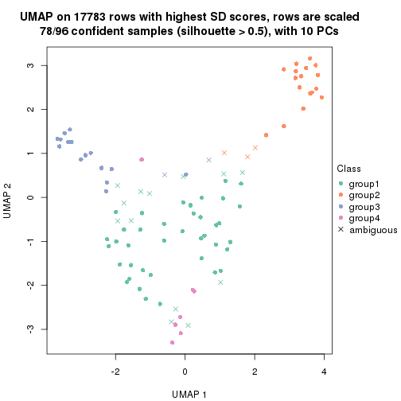
dimension_reduction(res, k = 5, method = "UMAP")
dimension_reduction(res, k = 6, method = "UMAP")
Following heatmap shows how subgroups are split when increasing k:
collect_classes(res)
Test correlation between subgroups and known annotations. If the known annotation is numeric, one-way ANOVA test is applied, and if the known annotation is discrete, chi-squared contingency table test is applied.
test_to_known_factors(res)
#> n specimen(p) disease.state(p) individual(p) tissue(p) k
#> SD:hclust 86 2.97e-02 1.000 0.157 1.59e-02 2
#> SD:hclust 85 8.92e-17 0.708 0.770 1.17e-08 3
#> SD:hclust 78 1.24e-15 0.856 0.503 5.55e-07 4
#> SD:hclust 52 2.21e-10 0.553 0.195 1.47e-03 5
#> SD:hclust 54 5.26e-11 0.195 0.451 4.33e-05 6
If matrix rows can be associated to genes, consider to use functional_enrichment(res,
...) to perform function enrichment for the signature genes. See this vignette for more detailed explanations.
The object with results only for a single top-value method and a single partition method can be extracted as:
res = res_list["SD", "kmeans"]
# you can also extract it by
# res = res_list["SD:kmeans"]
A summary of res and all the functions that can be applied to it:
res
#> A 'ConsensusPartition' object with k = 2, 3, 4, 5, 6.
#> On a matrix with 17783 rows and 96 columns.
#> Top rows (1000, 2000, 3000, 4000, 5000) are extracted by 'SD' method.
#> Subgroups are detected by 'kmeans' method.
#> Performed in total 1250 partitions by row resampling.
#> Best k for subgroups seems to be 3.
#>
#> Following methods can be applied to this 'ConsensusPartition' object:
#> [1] "cola_report" "collect_classes" "collect_plots"
#> [4] "collect_stats" "colnames" "compare_signatures"
#> [7] "consensus_heatmap" "dimension_reduction" "functional_enrichment"
#> [10] "get_anno_col" "get_anno" "get_classes"
#> [13] "get_consensus" "get_matrix" "get_membership"
#> [16] "get_param" "get_signatures" "get_stats"
#> [19] "is_best_k" "is_stable_k" "membership_heatmap"
#> [22] "ncol" "nrow" "plot_ecdf"
#> [25] "rownames" "select_partition_number" "show"
#> [28] "suggest_best_k" "test_to_known_factors"
collect_plots() function collects all the plots made from res for all k (number of partitions)
into one single page to provide an easy and fast comparison between different k.
collect_plots(res)
The plots are:
k and the heatmap of
predicted classes for each k.k.k.k.All the plots in panels can be made by individual functions and they are plotted later in this section.
select_partition_number() produces several plots showing different
statistics for choosing “optimized” k. There are following statistics:
k;k, the area increased is defined as \(A_k - A_{k-1}\).The detailed explanations of these statistics can be found in the cola vignette.
Generally speaking, lower PAC score, higher mean silhouette score or higher
concordance corresponds to better partition. Rand index and Jaccard index
measure how similar the current partition is compared to partition with k-1.
If they are too similar, we won't accept k is better than k-1.
select_partition_number(res)

The numeric values for all these statistics can be obtained by get_stats().
get_stats(res)
#> k 1-PAC mean_silhouette concordance area_increased Rand Jaccard
#> 2 2 0.273 0.672 0.725 0.3993 0.655 0.655
#> 3 3 1.000 0.959 0.974 0.4388 0.758 0.637
#> 4 4 0.637 0.632 0.755 0.2555 0.777 0.522
#> 5 5 0.689 0.691 0.822 0.0871 0.837 0.491
#> 6 6 0.707 0.607 0.739 0.0488 0.931 0.690
suggest_best_k() suggests the best \(k\) based on these statistics. The rules are as follows:
suggest_best_k(res)
#> [1] 3
Following shows the table of the partitions (You need to click the show/hide
code output link to see it). The membership matrix (columns with name p*)
is inferred by
clue::cl_consensus()
function with the SE method. Basically the value in the membership matrix
represents the probability to belong to a certain group. The finall class
label for an item is determined with the group with highest probability it
belongs to.
In get_classes() function, the entropy is calculated from the membership
matrix and the silhouette score is calculated from the consensus matrix.
cbind(get_classes(res, k = 2), get_membership(res, k = 2))
#> class entropy silhouette p1 p2
#> GSM771247 1 0.1414 0.6926 0.980 0.020
#> GSM771246 1 0.0376 0.6919 0.996 0.004
#> GSM771245 1 0.1184 0.6918 0.984 0.016
#> GSM771169 1 0.7674 0.6085 0.776 0.224
#> GSM771171 1 0.7674 0.6085 0.776 0.224
#> GSM771175 1 0.9323 0.4683 0.652 0.348
#> GSM771172 1 0.1414 0.6869 0.980 0.020
#> GSM771174 1 0.9323 0.4683 0.652 0.348
#> GSM771178 1 0.7528 0.6093 0.784 0.216
#> GSM771176 1 0.1184 0.6918 0.984 0.016
#> GSM771181 1 0.7883 0.6027 0.764 0.236
#> GSM771179 1 0.3584 0.6899 0.932 0.068
#> GSM771184 1 0.2603 0.6896 0.956 0.044
#> GSM771182 1 0.9209 0.4682 0.664 0.336
#> GSM771185 1 0.9323 0.4683 0.652 0.348
#> GSM771186 1 0.9170 0.4685 0.668 0.332
#> GSM771188 1 0.2043 0.6937 0.968 0.032
#> GSM771193 1 0.7950 0.6044 0.760 0.240
#> GSM771192 1 0.8443 0.5615 0.728 0.272
#> GSM771189 1 0.9983 -0.0694 0.524 0.476
#> GSM771194 1 0.7056 0.6499 0.808 0.192
#> GSM771191 1 0.7674 0.6274 0.776 0.224
#> GSM771202 1 0.1414 0.6942 0.980 0.020
#> GSM771200 1 0.1633 0.6941 0.976 0.024
#> GSM771206 1 0.7528 0.6341 0.784 0.216
#> GSM771208 1 0.9170 0.4763 0.668 0.332
#> GSM771207 1 0.7674 0.6085 0.776 0.224
#> GSM771209 1 0.4815 0.6827 0.896 0.104
#> GSM771211 1 0.0376 0.6926 0.996 0.004
#> GSM771212 1 0.9087 0.4908 0.676 0.324
#> GSM771214 1 0.9881 0.1398 0.564 0.436
#> GSM771213 1 0.9754 0.3005 0.592 0.408
#> GSM771216 1 0.9754 0.2864 0.592 0.408
#> GSM771217 1 0.9323 0.4683 0.652 0.348
#> GSM771219 1 0.7674 0.6085 0.776 0.224
#> GSM771218 1 0.6973 0.6528 0.812 0.188
#> GSM771222 1 0.2603 0.6912 0.956 0.044
#> GSM771220 1 0.7674 0.6085 0.776 0.224
#> GSM771226 1 0.7883 0.6027 0.764 0.236
#> GSM771223 1 0.7453 0.6372 0.788 0.212
#> GSM771225 1 0.8608 0.5466 0.716 0.284
#> GSM771232 1 0.9129 0.4765 0.672 0.328
#> GSM771235 1 0.7883 0.6027 0.764 0.236
#> GSM771234 1 0.7883 0.6027 0.764 0.236
#> GSM771242 1 0.7745 0.6068 0.772 0.228
#> GSM771239 1 0.9170 0.4685 0.668 0.332
#> GSM771240 1 0.7299 0.6422 0.796 0.204
#> GSM771241 1 0.7745 0.6068 0.772 0.228
#> GSM771197 1 0.7883 0.6027 0.764 0.236
#> GSM771195 1 0.6623 0.6557 0.828 0.172
#> GSM771198 1 0.7883 0.6027 0.764 0.236
#> GSM771199 1 0.7883 0.6027 0.764 0.236
#> GSM771204 1 0.7453 0.6372 0.788 0.212
#> GSM771205 1 0.1843 0.6941 0.972 0.028
#> GSM771229 1 0.1414 0.6941 0.980 0.020
#> GSM771227 1 0.6438 0.6593 0.836 0.164
#> GSM771230 1 0.9323 0.4683 0.652 0.348
#> GSM771231 1 0.8081 0.6087 0.752 0.248
#> GSM771238 1 0.7376 0.6418 0.792 0.208
#> GSM771236 1 0.4161 0.6871 0.916 0.084
#> GSM771154 1 0.7602 0.6309 0.780 0.220
#> GSM771152 1 0.9170 0.4685 0.668 0.332
#> GSM771156 1 0.6623 0.6557 0.828 0.172
#> GSM771157 1 0.7602 0.6309 0.780 0.220
#> GSM771155 1 0.8661 0.5626 0.712 0.288
#> GSM771160 1 0.7883 0.6027 0.764 0.236
#> GSM771161 1 0.7950 0.6042 0.760 0.240
#> GSM771159 1 0.8608 0.5466 0.716 0.284
#> GSM771165 1 0.9323 0.4683 0.652 0.348
#> GSM771166 1 0.7674 0.6085 0.776 0.224
#> GSM771167 1 0.8081 0.6087 0.752 0.248
#> GSM771168 1 0.1414 0.6941 0.980 0.020
#> GSM771163 1 0.6438 0.6593 0.836 0.164
#> GSM771244 2 0.7745 0.9944 0.228 0.772
#> GSM771170 1 0.6148 0.6684 0.848 0.152
#> GSM771173 2 0.7745 0.9944 0.228 0.772
#> GSM771177 2 0.7745 0.9944 0.228 0.772
#> GSM771180 2 0.7745 0.9944 0.228 0.772
#> GSM771183 2 0.7745 0.9944 0.228 0.772
#> GSM771187 2 0.7745 0.9944 0.228 0.772
#> GSM771190 2 0.7950 0.9802 0.240 0.760
#> GSM771201 2 0.7745 0.9944 0.228 0.772
#> GSM771210 2 0.7883 0.9440 0.236 0.764
#> GSM771215 2 0.7883 0.9845 0.236 0.764
#> GSM771221 2 0.7745 0.9944 0.228 0.772
#> GSM771224 1 0.8713 0.5952 0.708 0.292
#> GSM771233 2 0.7745 0.9944 0.228 0.772
#> GSM771243 2 0.7745 0.9944 0.228 0.772
#> GSM771196 2 0.7745 0.9944 0.228 0.772
#> GSM771203 2 0.7745 0.9944 0.228 0.772
#> GSM771228 2 0.7745 0.9944 0.228 0.772
#> GSM771237 2 0.7950 0.9802 0.240 0.760
#> GSM771153 2 0.7745 0.9944 0.228 0.772
#> GSM771158 2 0.7745 0.9944 0.228 0.772
#> GSM771162 2 0.7745 0.9944 0.228 0.772
#> GSM771164 2 0.7745 0.9944 0.228 0.772
cbind(get_classes(res, k = 3), get_membership(res, k = 3))
#> class entropy silhouette p1 p2 p3
#> GSM771247 1 0.0000 0.958 1.000 0.000 0.000
#> GSM771246 1 0.2261 0.936 0.932 0.000 0.068
#> GSM771245 1 0.0000 0.958 1.000 0.000 0.000
#> GSM771169 3 0.0424 0.992 0.008 0.000 0.992
#> GSM771171 3 0.0424 0.992 0.008 0.000 0.992
#> GSM771175 1 0.0424 0.958 0.992 0.008 0.000
#> GSM771172 1 0.2448 0.933 0.924 0.000 0.076
#> GSM771174 1 0.0424 0.958 0.992 0.008 0.000
#> GSM771178 1 0.5291 0.689 0.732 0.000 0.268
#> GSM771176 1 0.0000 0.958 1.000 0.000 0.000
#> GSM771181 3 0.0000 0.997 0.000 0.000 1.000
#> GSM771179 1 0.2680 0.936 0.924 0.008 0.068
#> GSM771184 1 0.2448 0.933 0.924 0.000 0.076
#> GSM771182 1 0.0592 0.958 0.988 0.012 0.000
#> GSM771185 1 0.0424 0.958 0.992 0.008 0.000
#> GSM771186 1 0.0424 0.958 0.992 0.008 0.000
#> GSM771188 1 0.0000 0.958 1.000 0.000 0.000
#> GSM771193 3 0.0000 0.997 0.000 0.000 1.000
#> GSM771192 1 0.2680 0.936 0.924 0.008 0.068
#> GSM771189 1 0.0747 0.957 0.984 0.016 0.000
#> GSM771194 1 0.0424 0.958 0.992 0.008 0.000
#> GSM771191 1 0.0424 0.958 0.992 0.008 0.000
#> GSM771202 1 0.2680 0.936 0.924 0.008 0.068
#> GSM771200 1 0.2680 0.936 0.924 0.008 0.068
#> GSM771206 1 0.0424 0.958 0.992 0.008 0.000
#> GSM771208 1 0.0747 0.957 0.984 0.016 0.000
#> GSM771207 3 0.0424 0.992 0.008 0.000 0.992
#> GSM771209 1 0.0424 0.958 0.992 0.008 0.000
#> GSM771211 1 0.2496 0.936 0.928 0.004 0.068
#> GSM771212 1 0.0747 0.957 0.984 0.016 0.000
#> GSM771214 1 0.0747 0.957 0.984 0.016 0.000
#> GSM771213 1 0.0424 0.958 0.992 0.008 0.000
#> GSM771216 1 0.0747 0.957 0.984 0.016 0.000
#> GSM771217 1 0.0424 0.958 0.992 0.008 0.000
#> GSM771219 3 0.0000 0.997 0.000 0.000 1.000
#> GSM771218 1 0.0237 0.958 0.996 0.004 0.000
#> GSM771222 1 0.2590 0.934 0.924 0.004 0.072
#> GSM771220 3 0.0747 0.983 0.016 0.000 0.984
#> GSM771226 3 0.0000 0.997 0.000 0.000 1.000
#> GSM771223 1 0.0424 0.958 0.992 0.008 0.000
#> GSM771225 1 0.2680 0.936 0.924 0.008 0.068
#> GSM771232 1 0.0424 0.958 0.992 0.008 0.000
#> GSM771235 3 0.0000 0.997 0.000 0.000 1.000
#> GSM771234 3 0.0000 0.997 0.000 0.000 1.000
#> GSM771242 3 0.0000 0.997 0.000 0.000 1.000
#> GSM771239 1 0.0424 0.958 0.992 0.008 0.000
#> GSM771240 1 0.0424 0.958 0.992 0.008 0.000
#> GSM771241 3 0.0000 0.997 0.000 0.000 1.000
#> GSM771197 3 0.0000 0.997 0.000 0.000 1.000
#> GSM771195 1 0.2680 0.936 0.924 0.008 0.068
#> GSM771198 3 0.0000 0.997 0.000 0.000 1.000
#> GSM771199 3 0.0000 0.997 0.000 0.000 1.000
#> GSM771204 1 0.0424 0.958 0.992 0.008 0.000
#> GSM771205 1 0.2680 0.936 0.924 0.008 0.068
#> GSM771229 1 0.2496 0.936 0.928 0.004 0.068
#> GSM771227 1 0.2680 0.936 0.924 0.008 0.068
#> GSM771230 1 0.0424 0.958 0.992 0.008 0.000
#> GSM771231 1 0.0424 0.958 0.992 0.008 0.000
#> GSM771238 1 0.0424 0.958 0.992 0.008 0.000
#> GSM771236 1 0.0424 0.958 0.992 0.008 0.000
#> GSM771154 1 0.0424 0.958 0.992 0.008 0.000
#> GSM771152 1 0.0747 0.957 0.984 0.016 0.000
#> GSM771156 1 0.2680 0.936 0.924 0.008 0.068
#> GSM771157 1 0.0424 0.958 0.992 0.008 0.000
#> GSM771155 1 0.0424 0.958 0.992 0.008 0.000
#> GSM771160 3 0.0000 0.997 0.000 0.000 1.000
#> GSM771161 1 0.6291 0.220 0.532 0.000 0.468
#> GSM771159 1 0.2680 0.936 0.924 0.008 0.068
#> GSM771165 1 0.0424 0.958 0.992 0.008 0.000
#> GSM771166 3 0.0424 0.992 0.008 0.000 0.992
#> GSM771167 1 0.0424 0.958 0.992 0.008 0.000
#> GSM771168 1 0.2496 0.936 0.928 0.004 0.068
#> GSM771163 1 0.2680 0.936 0.924 0.008 0.068
#> GSM771244 2 0.0000 1.000 0.000 1.000 0.000
#> GSM771170 1 0.2680 0.936 0.924 0.008 0.068
#> GSM771173 2 0.0000 1.000 0.000 1.000 0.000
#> GSM771177 2 0.0000 1.000 0.000 1.000 0.000
#> GSM771180 2 0.0000 1.000 0.000 1.000 0.000
#> GSM771183 2 0.0000 1.000 0.000 1.000 0.000
#> GSM771187 2 0.0000 1.000 0.000 1.000 0.000
#> GSM771190 2 0.0000 1.000 0.000 1.000 0.000
#> GSM771201 2 0.0000 1.000 0.000 1.000 0.000
#> GSM771210 1 0.0424 0.958 0.992 0.008 0.000
#> GSM771215 2 0.0000 1.000 0.000 1.000 0.000
#> GSM771221 2 0.0000 1.000 0.000 1.000 0.000
#> GSM771224 3 0.0000 0.997 0.000 0.000 1.000
#> GSM771233 2 0.0000 1.000 0.000 1.000 0.000
#> GSM771243 2 0.0000 1.000 0.000 1.000 0.000
#> GSM771196 2 0.0000 1.000 0.000 1.000 0.000
#> GSM771203 2 0.0000 1.000 0.000 1.000 0.000
#> GSM771228 2 0.0000 1.000 0.000 1.000 0.000
#> GSM771237 2 0.0000 1.000 0.000 1.000 0.000
#> GSM771153 2 0.0000 1.000 0.000 1.000 0.000
#> GSM771158 2 0.0000 1.000 0.000 1.000 0.000
#> GSM771162 2 0.0000 1.000 0.000 1.000 0.000
#> GSM771164 2 0.0000 1.000 0.000 1.000 0.000
cbind(get_classes(res, k = 4), get_membership(res, k = 4))
#> class entropy silhouette p1 p2 p3 p4
#> GSM771247 1 0.0707 0.6128 0.980 0.000 0.000 0.020
#> GSM771246 1 0.0336 0.6193 0.992 0.000 0.000 0.008
#> GSM771245 4 0.4800 0.6583 0.340 0.000 0.004 0.656
#> GSM771169 1 0.4103 0.5014 0.744 0.000 0.256 0.000
#> GSM771171 3 0.4585 0.4669 0.332 0.000 0.668 0.000
#> GSM771175 4 0.1557 0.5673 0.056 0.000 0.000 0.944
#> GSM771172 1 0.0000 0.6247 1.000 0.000 0.000 0.000
#> GSM771174 4 0.1716 0.5818 0.064 0.000 0.000 0.936
#> GSM771178 1 0.1256 0.6050 0.964 0.000 0.028 0.008
#> GSM771176 4 0.4819 0.6568 0.344 0.000 0.004 0.652
#> GSM771181 3 0.0336 0.9254 0.008 0.000 0.992 0.000
#> GSM771179 1 0.0000 0.6247 1.000 0.000 0.000 0.000
#> GSM771184 1 0.4746 0.5437 0.632 0.000 0.000 0.368
#> GSM771182 4 0.4996 -0.4009 0.484 0.000 0.000 0.516
#> GSM771185 4 0.2081 0.5864 0.084 0.000 0.000 0.916
#> GSM771186 1 0.4972 0.4886 0.544 0.000 0.000 0.456
#> GSM771188 4 0.4964 0.6283 0.380 0.000 0.004 0.616
#> GSM771193 3 0.0376 0.9190 0.004 0.000 0.992 0.004
#> GSM771192 1 0.4985 0.4672 0.532 0.000 0.000 0.468
#> GSM771189 4 0.5374 0.2022 0.244 0.052 0.000 0.704
#> GSM771194 4 0.4800 0.6583 0.340 0.000 0.004 0.656
#> GSM771191 4 0.4830 0.6164 0.392 0.000 0.000 0.608
#> GSM771202 1 0.0000 0.6247 1.000 0.000 0.000 0.000
#> GSM771200 1 0.0000 0.6247 1.000 0.000 0.000 0.000
#> GSM771206 4 0.4898 0.5875 0.416 0.000 0.000 0.584
#> GSM771208 1 0.2647 0.5075 0.880 0.000 0.000 0.120
#> GSM771207 1 0.4933 0.1351 0.568 0.000 0.432 0.000
#> GSM771209 1 0.0336 0.6203 0.992 0.000 0.000 0.008
#> GSM771211 1 0.0817 0.6269 0.976 0.000 0.000 0.024
#> GSM771212 1 0.2814 0.4943 0.868 0.000 0.000 0.132
#> GSM771214 1 0.5416 0.0706 0.692 0.048 0.000 0.260
#> GSM771213 4 0.4941 0.5846 0.436 0.000 0.000 0.564
#> GSM771216 4 0.4193 0.2300 0.268 0.000 0.000 0.732
#> GSM771217 4 0.4643 0.6493 0.344 0.000 0.000 0.656
#> GSM771219 3 0.0336 0.9254 0.008 0.000 0.992 0.000
#> GSM771218 1 0.4382 0.0355 0.704 0.000 0.000 0.296
#> GSM771222 1 0.2281 0.6266 0.904 0.000 0.000 0.096
#> GSM771220 1 0.2081 0.5829 0.916 0.000 0.084 0.000
#> GSM771226 3 0.0336 0.9254 0.008 0.000 0.992 0.000
#> GSM771223 4 0.4643 0.6563 0.344 0.000 0.000 0.656
#> GSM771225 1 0.4916 0.5120 0.576 0.000 0.000 0.424
#> GSM771232 1 0.4605 0.5641 0.664 0.000 0.000 0.336
#> GSM771235 3 0.0336 0.9254 0.008 0.000 0.992 0.000
#> GSM771234 3 0.0336 0.9254 0.008 0.000 0.992 0.000
#> GSM771242 3 0.0336 0.9254 0.008 0.000 0.992 0.000
#> GSM771239 1 0.4955 0.4939 0.556 0.000 0.000 0.444
#> GSM771240 4 0.4720 0.6601 0.324 0.000 0.004 0.672
#> GSM771241 3 0.0336 0.9254 0.008 0.000 0.992 0.000
#> GSM771197 3 0.0336 0.9254 0.008 0.000 0.992 0.000
#> GSM771195 1 0.4907 0.5160 0.580 0.000 0.000 0.420
#> GSM771198 3 0.0336 0.9254 0.008 0.000 0.992 0.000
#> GSM771199 3 0.0336 0.9254 0.008 0.000 0.992 0.000
#> GSM771204 4 0.4624 0.6583 0.340 0.000 0.000 0.660
#> GSM771205 1 0.0000 0.6247 1.000 0.000 0.000 0.000
#> GSM771229 1 0.0000 0.6247 1.000 0.000 0.000 0.000
#> GSM771227 1 0.4907 0.5160 0.580 0.000 0.000 0.420
#> GSM771230 4 0.1940 0.5832 0.076 0.000 0.000 0.924
#> GSM771231 4 0.1792 0.5967 0.068 0.000 0.000 0.932
#> GSM771238 4 0.4800 0.6583 0.340 0.000 0.004 0.656
#> GSM771236 1 0.4500 0.5704 0.684 0.000 0.000 0.316
#> GSM771154 4 0.4877 0.5978 0.408 0.000 0.000 0.592
#> GSM771152 1 0.4972 0.4886 0.544 0.000 0.000 0.456
#> GSM771156 1 0.4907 0.5160 0.580 0.000 0.000 0.420
#> GSM771157 1 0.4431 0.0120 0.696 0.000 0.000 0.304
#> GSM771155 4 0.4804 0.1738 0.384 0.000 0.000 0.616
#> GSM771160 3 0.0336 0.9254 0.008 0.000 0.992 0.000
#> GSM771161 4 0.7588 0.4782 0.320 0.000 0.216 0.464
#> GSM771159 1 0.4916 0.5120 0.576 0.000 0.000 0.424
#> GSM771165 4 0.1940 0.5832 0.076 0.000 0.000 0.924
#> GSM771166 1 0.7013 0.3004 0.516 0.000 0.356 0.128
#> GSM771167 4 0.1792 0.5967 0.068 0.000 0.000 0.932
#> GSM771168 1 0.0000 0.6247 1.000 0.000 0.000 0.000
#> GSM771163 1 0.4907 0.5160 0.580 0.000 0.000 0.420
#> GSM771244 2 0.0000 0.9187 0.000 1.000 0.000 0.000
#> GSM771170 1 0.4406 0.5725 0.700 0.000 0.000 0.300
#> GSM771173 2 0.4222 0.6920 0.000 0.728 0.000 0.272
#> GSM771177 2 0.0000 0.9187 0.000 1.000 0.000 0.000
#> GSM771180 2 0.4543 0.6233 0.000 0.676 0.000 0.324
#> GSM771183 2 0.0779 0.9177 0.000 0.980 0.004 0.016
#> GSM771187 2 0.0000 0.9187 0.000 1.000 0.000 0.000
#> GSM771190 2 0.0000 0.9187 0.000 1.000 0.000 0.000
#> GSM771201 2 0.4222 0.6920 0.000 0.728 0.000 0.272
#> GSM771210 4 0.1557 0.6006 0.056 0.000 0.000 0.944
#> GSM771215 2 0.0592 0.9180 0.000 0.984 0.000 0.016
#> GSM771221 2 0.0779 0.9177 0.000 0.980 0.004 0.016
#> GSM771224 3 0.7379 0.1359 0.168 0.000 0.468 0.364
#> GSM771233 2 0.0779 0.9177 0.000 0.980 0.004 0.016
#> GSM771243 2 0.0000 0.9187 0.000 1.000 0.000 0.000
#> GSM771196 2 0.0000 0.9187 0.000 1.000 0.000 0.000
#> GSM771203 2 0.0779 0.9177 0.000 0.980 0.004 0.016
#> GSM771228 2 0.0779 0.9177 0.000 0.980 0.004 0.016
#> GSM771237 2 0.0000 0.9187 0.000 1.000 0.000 0.000
#> GSM771153 2 0.0000 0.9187 0.000 1.000 0.000 0.000
#> GSM771158 2 0.0779 0.9177 0.000 0.980 0.004 0.016
#> GSM771162 2 0.4543 0.6233 0.000 0.676 0.000 0.324
#> GSM771164 2 0.0779 0.9177 0.000 0.980 0.004 0.016
cbind(get_classes(res, k = 5), get_membership(res, k = 5))
#> class entropy silhouette p1 p2 p3 p4 p5
#> GSM771247 1 0.1992 0.788 0.924 0.000 0.000 0.032 0.044
#> GSM771246 1 0.0162 0.805 0.996 0.000 0.000 0.004 0.000
#> GSM771245 4 0.2761 0.785 0.104 0.000 0.000 0.872 0.024
#> GSM771169 1 0.1990 0.780 0.928 0.000 0.040 0.004 0.028
#> GSM771171 1 0.4698 0.472 0.664 0.000 0.304 0.004 0.028
#> GSM771175 5 0.3913 0.346 0.000 0.000 0.000 0.324 0.676
#> GSM771172 1 0.0000 0.805 1.000 0.000 0.000 0.000 0.000
#> GSM771174 5 0.4219 0.201 0.000 0.000 0.000 0.416 0.584
#> GSM771178 1 0.0955 0.796 0.968 0.000 0.000 0.004 0.028
#> GSM771176 4 0.2722 0.784 0.108 0.000 0.000 0.872 0.020
#> GSM771181 3 0.0000 0.976 0.000 0.000 1.000 0.000 0.000
#> GSM771179 1 0.0404 0.806 0.988 0.000 0.000 0.012 0.000
#> GSM771184 5 0.4542 0.294 0.456 0.000 0.000 0.008 0.536
#> GSM771182 5 0.2873 0.606 0.120 0.000 0.000 0.020 0.860
#> GSM771185 5 0.4201 0.167 0.000 0.000 0.000 0.408 0.592
#> GSM771186 5 0.4303 0.622 0.192 0.000 0.000 0.056 0.752
#> GSM771188 4 0.2761 0.785 0.104 0.000 0.000 0.872 0.024
#> GSM771193 3 0.3294 0.863 0.008 0.000 0.844 0.124 0.024
#> GSM771192 5 0.3804 0.627 0.160 0.000 0.000 0.044 0.796
#> GSM771189 5 0.2352 0.562 0.008 0.004 0.000 0.092 0.896
#> GSM771194 4 0.2616 0.788 0.100 0.000 0.000 0.880 0.020
#> GSM771191 4 0.4981 0.740 0.120 0.000 0.000 0.708 0.172
#> GSM771202 1 0.0404 0.806 0.988 0.000 0.000 0.012 0.000
#> GSM771200 1 0.0404 0.806 0.988 0.000 0.000 0.012 0.000
#> GSM771206 4 0.6128 0.622 0.252 0.000 0.000 0.560 0.188
#> GSM771208 1 0.5008 0.549 0.644 0.000 0.000 0.056 0.300
#> GSM771207 1 0.2142 0.775 0.920 0.000 0.048 0.004 0.028
#> GSM771209 1 0.0693 0.804 0.980 0.000 0.000 0.012 0.008
#> GSM771211 1 0.2753 0.744 0.856 0.000 0.000 0.008 0.136
#> GSM771212 1 0.5008 0.549 0.644 0.000 0.000 0.056 0.300
#> GSM771214 1 0.6224 0.450 0.548 0.016 0.000 0.108 0.328
#> GSM771213 4 0.6268 0.528 0.204 0.000 0.000 0.536 0.260
#> GSM771216 5 0.2818 0.536 0.012 0.000 0.000 0.132 0.856
#> GSM771217 4 0.5048 0.487 0.040 0.000 0.000 0.580 0.380
#> GSM771219 3 0.2284 0.919 0.056 0.000 0.912 0.004 0.028
#> GSM771218 1 0.5305 0.486 0.672 0.000 0.000 0.132 0.196
#> GSM771222 1 0.2068 0.759 0.904 0.000 0.000 0.004 0.092
#> GSM771220 1 0.0451 0.802 0.988 0.000 0.000 0.004 0.008
#> GSM771226 3 0.0000 0.976 0.000 0.000 1.000 0.000 0.000
#> GSM771223 4 0.3517 0.785 0.100 0.000 0.000 0.832 0.068
#> GSM771225 5 0.4270 0.534 0.320 0.000 0.000 0.012 0.668
#> GSM771232 1 0.4445 0.512 0.676 0.000 0.000 0.024 0.300
#> GSM771235 3 0.0771 0.968 0.000 0.000 0.976 0.004 0.020
#> GSM771234 3 0.0000 0.976 0.000 0.000 1.000 0.000 0.000
#> GSM771242 3 0.0671 0.970 0.000 0.000 0.980 0.004 0.016
#> GSM771239 5 0.3852 0.603 0.220 0.000 0.000 0.020 0.760
#> GSM771240 4 0.2390 0.784 0.084 0.000 0.000 0.896 0.020
#> GSM771241 3 0.0671 0.970 0.000 0.000 0.980 0.004 0.016
#> GSM771197 3 0.0000 0.976 0.000 0.000 1.000 0.000 0.000
#> GSM771195 5 0.4251 0.530 0.316 0.000 0.000 0.012 0.672
#> GSM771198 3 0.0000 0.976 0.000 0.000 1.000 0.000 0.000
#> GSM771199 3 0.0000 0.976 0.000 0.000 1.000 0.000 0.000
#> GSM771204 4 0.3579 0.785 0.100 0.000 0.000 0.828 0.072
#> GSM771205 1 0.0404 0.806 0.988 0.000 0.000 0.012 0.000
#> GSM771229 1 0.0162 0.805 0.996 0.000 0.000 0.004 0.000
#> GSM771227 5 0.4251 0.530 0.316 0.000 0.000 0.012 0.672
#> GSM771230 5 0.4150 0.218 0.000 0.000 0.000 0.388 0.612
#> GSM771231 4 0.4262 0.217 0.000 0.000 0.000 0.560 0.440
#> GSM771238 4 0.2616 0.788 0.100 0.000 0.000 0.880 0.020
#> GSM771236 1 0.3814 0.560 0.720 0.000 0.000 0.004 0.276
#> GSM771154 4 0.5847 0.672 0.204 0.000 0.000 0.608 0.188
#> GSM771152 5 0.2983 0.604 0.076 0.000 0.000 0.056 0.868
#> GSM771156 5 0.4130 0.545 0.292 0.000 0.000 0.012 0.696
#> GSM771157 1 0.5444 0.461 0.656 0.000 0.000 0.140 0.204
#> GSM771155 5 0.5384 0.391 0.140 0.000 0.000 0.196 0.664
#> GSM771160 3 0.0000 0.976 0.000 0.000 1.000 0.000 0.000
#> GSM771161 4 0.4084 0.746 0.104 0.000 0.048 0.816 0.032
#> GSM771159 5 0.4270 0.534 0.320 0.000 0.000 0.012 0.668
#> GSM771165 5 0.4150 0.218 0.000 0.000 0.000 0.388 0.612
#> GSM771166 1 0.5607 -0.100 0.496 0.000 0.040 0.016 0.448
#> GSM771167 4 0.4262 0.217 0.000 0.000 0.000 0.560 0.440
#> GSM771168 1 0.0162 0.805 0.996 0.000 0.000 0.004 0.000
#> GSM771163 5 0.4251 0.530 0.316 0.000 0.000 0.012 0.672
#> GSM771244 2 0.0000 0.987 0.000 1.000 0.000 0.000 0.000
#> GSM771170 1 0.3662 0.594 0.744 0.000 0.000 0.004 0.252
#> GSM771173 5 0.5165 0.174 0.000 0.448 0.000 0.040 0.512
#> GSM771177 2 0.0404 0.981 0.000 0.988 0.000 0.000 0.012
#> GSM771180 5 0.5048 0.332 0.000 0.380 0.000 0.040 0.580
#> GSM771183 2 0.0162 0.986 0.000 0.996 0.000 0.004 0.000
#> GSM771187 2 0.0000 0.987 0.000 1.000 0.000 0.000 0.000
#> GSM771190 2 0.1830 0.947 0.000 0.932 0.000 0.040 0.028
#> GSM771201 5 0.5718 0.159 0.000 0.420 0.000 0.084 0.496
#> GSM771210 4 0.3098 0.716 0.016 0.000 0.000 0.836 0.148
#> GSM771215 2 0.1750 0.950 0.000 0.936 0.000 0.036 0.028
#> GSM771221 2 0.0000 0.987 0.000 1.000 0.000 0.000 0.000
#> GSM771224 5 0.5786 0.551 0.104 0.000 0.184 0.036 0.676
#> GSM771233 2 0.0000 0.987 0.000 1.000 0.000 0.000 0.000
#> GSM771243 2 0.0000 0.987 0.000 1.000 0.000 0.000 0.000
#> GSM771196 2 0.0000 0.987 0.000 1.000 0.000 0.000 0.000
#> GSM771203 2 0.0162 0.986 0.000 0.996 0.000 0.004 0.000
#> GSM771228 2 0.0000 0.987 0.000 1.000 0.000 0.000 0.000
#> GSM771237 2 0.1830 0.947 0.000 0.932 0.000 0.040 0.028
#> GSM771153 2 0.0000 0.987 0.000 1.000 0.000 0.000 0.000
#> GSM771158 2 0.0000 0.987 0.000 1.000 0.000 0.000 0.000
#> GSM771162 5 0.5058 0.323 0.000 0.384 0.000 0.040 0.576
#> GSM771164 2 0.0000 0.987 0.000 1.000 0.000 0.000 0.000
cbind(get_classes(res, k = 6), get_membership(res, k = 6))
#> class entropy silhouette p1 p2 p3 p4 p5 p6
#> GSM771247 1 0.3499 0.6674 0.824 0.000 0.000 0.020 0.104 0.052
#> GSM771246 1 0.2003 0.7234 0.884 0.000 0.000 0.000 0.000 0.116
#> GSM771245 4 0.0790 0.8204 0.032 0.000 0.000 0.968 0.000 0.000
#> GSM771169 1 0.1088 0.7301 0.960 0.000 0.000 0.000 0.016 0.024
#> GSM771171 1 0.3640 0.5810 0.784 0.000 0.176 0.000 0.016 0.024
#> GSM771175 6 0.5958 -0.2301 0.000 0.000 0.000 0.220 0.384 0.396
#> GSM771172 1 0.0692 0.7403 0.976 0.000 0.000 0.000 0.004 0.020
#> GSM771174 6 0.6094 -0.1141 0.000 0.000 0.000 0.356 0.280 0.364
#> GSM771178 1 0.1232 0.7289 0.956 0.000 0.000 0.004 0.016 0.024
#> GSM771176 4 0.0790 0.8204 0.032 0.000 0.000 0.968 0.000 0.000
#> GSM771181 3 0.0000 0.9241 0.000 0.000 1.000 0.000 0.000 0.000
#> GSM771179 1 0.2100 0.7246 0.884 0.000 0.000 0.000 0.004 0.112
#> GSM771184 5 0.4039 0.0264 0.424 0.000 0.000 0.000 0.568 0.008
#> GSM771182 5 0.3694 0.4348 0.076 0.000 0.000 0.000 0.784 0.140
#> GSM771185 5 0.5990 -0.0870 0.000 0.000 0.000 0.368 0.400 0.232
#> GSM771186 5 0.5081 0.4866 0.100 0.000 0.000 0.004 0.612 0.284
#> GSM771188 4 0.0790 0.8204 0.032 0.000 0.000 0.968 0.000 0.000
#> GSM771193 3 0.5747 0.4210 0.032 0.000 0.528 0.368 0.008 0.064
#> GSM771192 5 0.4872 0.4829 0.056 0.000 0.000 0.008 0.600 0.336
#> GSM771189 5 0.3930 0.3803 0.000 0.000 0.000 0.004 0.576 0.420
#> GSM771194 4 0.0858 0.8207 0.028 0.000 0.000 0.968 0.004 0.000
#> GSM771191 6 0.5560 0.2078 0.096 0.000 0.000 0.416 0.012 0.476
#> GSM771202 1 0.2100 0.7246 0.884 0.000 0.000 0.000 0.004 0.112
#> GSM771200 1 0.2100 0.7246 0.884 0.000 0.000 0.000 0.004 0.112
#> GSM771206 6 0.6039 0.3796 0.184 0.000 0.000 0.324 0.012 0.480
#> GSM771208 6 0.5565 0.3657 0.340 0.000 0.000 0.000 0.152 0.508
#> GSM771207 1 0.1346 0.7280 0.952 0.000 0.008 0.000 0.016 0.024
#> GSM771209 1 0.2964 0.6040 0.792 0.000 0.000 0.000 0.004 0.204
#> GSM771211 1 0.3634 0.5768 0.696 0.000 0.000 0.000 0.296 0.008
#> GSM771212 6 0.5565 0.3657 0.340 0.000 0.000 0.000 0.152 0.508
#> GSM771214 6 0.5615 0.4290 0.280 0.000 0.000 0.012 0.140 0.568
#> GSM771213 6 0.6191 0.5240 0.152 0.000 0.000 0.180 0.080 0.588
#> GSM771216 6 0.4379 0.1232 0.004 0.000 0.000 0.020 0.400 0.576
#> GSM771217 6 0.5343 0.2876 0.000 0.000 0.000 0.264 0.156 0.580
#> GSM771219 3 0.3735 0.7754 0.172 0.000 0.780 0.000 0.012 0.036
#> GSM771218 6 0.5581 0.2485 0.444 0.000 0.000 0.048 0.044 0.464
#> GSM771222 1 0.3136 0.6620 0.796 0.000 0.000 0.000 0.188 0.016
#> GSM771220 1 0.0692 0.7351 0.976 0.000 0.000 0.000 0.004 0.020
#> GSM771226 3 0.0000 0.9241 0.000 0.000 1.000 0.000 0.000 0.000
#> GSM771223 4 0.2859 0.7544 0.028 0.000 0.000 0.856 0.008 0.108
#> GSM771225 5 0.3807 0.5101 0.192 0.000 0.000 0.000 0.756 0.052
#> GSM771232 1 0.5803 0.1596 0.412 0.000 0.000 0.000 0.408 0.180
#> GSM771235 3 0.2591 0.8661 0.004 0.000 0.880 0.000 0.064 0.052
#> GSM771234 3 0.0000 0.9241 0.000 0.000 1.000 0.000 0.000 0.000
#> GSM771242 3 0.1716 0.9027 0.028 0.000 0.932 0.000 0.004 0.036
#> GSM771239 5 0.3667 0.5107 0.132 0.000 0.000 0.000 0.788 0.080
#> GSM771240 4 0.0748 0.8174 0.016 0.000 0.000 0.976 0.004 0.004
#> GSM771241 3 0.1716 0.9027 0.028 0.000 0.932 0.000 0.004 0.036
#> GSM771197 3 0.0000 0.9241 0.000 0.000 1.000 0.000 0.000 0.000
#> GSM771195 5 0.2730 0.5116 0.192 0.000 0.000 0.000 0.808 0.000
#> GSM771198 3 0.0000 0.9241 0.000 0.000 1.000 0.000 0.000 0.000
#> GSM771199 3 0.0000 0.9241 0.000 0.000 1.000 0.000 0.000 0.000
#> GSM771204 4 0.2904 0.7505 0.028 0.000 0.000 0.852 0.008 0.112
#> GSM771205 1 0.2146 0.7209 0.880 0.000 0.000 0.000 0.004 0.116
#> GSM771229 1 0.1958 0.7305 0.896 0.000 0.000 0.000 0.004 0.100
#> GSM771227 5 0.2762 0.5097 0.196 0.000 0.000 0.000 0.804 0.000
#> GSM771230 5 0.5943 0.0218 0.000 0.000 0.000 0.344 0.432 0.224
#> GSM771231 4 0.5192 0.4078 0.008 0.000 0.000 0.552 0.364 0.076
#> GSM771238 4 0.1003 0.8205 0.028 0.000 0.000 0.964 0.004 0.004
#> GSM771236 1 0.3817 0.3347 0.568 0.000 0.000 0.000 0.432 0.000
#> GSM771154 6 0.5830 0.3066 0.136 0.000 0.000 0.372 0.012 0.480
#> GSM771152 5 0.3940 0.4361 0.012 0.000 0.000 0.000 0.640 0.348
#> GSM771156 5 0.3645 0.5103 0.152 0.000 0.000 0.000 0.784 0.064
#> GSM771157 6 0.5664 0.3177 0.412 0.000 0.000 0.048 0.052 0.488
#> GSM771155 6 0.5647 0.2849 0.076 0.000 0.000 0.028 0.408 0.488
#> GSM771160 3 0.0000 0.9241 0.000 0.000 1.000 0.000 0.000 0.000
#> GSM771161 4 0.1332 0.8058 0.028 0.000 0.008 0.952 0.000 0.012
#> GSM771159 5 0.3807 0.5101 0.192 0.000 0.000 0.000 0.756 0.052
#> GSM771165 5 0.5943 0.0218 0.000 0.000 0.000 0.344 0.432 0.224
#> GSM771166 1 0.5159 0.1736 0.500 0.000 0.008 0.000 0.428 0.064
#> GSM771167 4 0.5192 0.4078 0.008 0.000 0.000 0.552 0.364 0.076
#> GSM771168 1 0.1958 0.7305 0.896 0.000 0.000 0.000 0.004 0.100
#> GSM771163 5 0.2762 0.5097 0.196 0.000 0.000 0.000 0.804 0.000
#> GSM771244 2 0.0547 0.9675 0.000 0.980 0.000 0.000 0.000 0.020
#> GSM771170 1 0.3747 0.4094 0.604 0.000 0.000 0.000 0.396 0.000
#> GSM771173 5 0.6425 0.3295 0.000 0.264 0.000 0.016 0.388 0.332
#> GSM771177 2 0.1636 0.9480 0.000 0.936 0.000 0.004 0.024 0.036
#> GSM771180 5 0.6114 0.3842 0.000 0.188 0.000 0.012 0.444 0.356
#> GSM771183 2 0.0291 0.9681 0.000 0.992 0.000 0.004 0.000 0.004
#> GSM771187 2 0.0692 0.9667 0.000 0.976 0.000 0.004 0.000 0.020
#> GSM771190 2 0.2766 0.9089 0.000 0.868 0.000 0.012 0.028 0.092
#> GSM771201 5 0.6486 0.3256 0.000 0.256 0.000 0.020 0.376 0.348
#> GSM771210 4 0.4573 0.5194 0.000 0.000 0.000 0.676 0.088 0.236
#> GSM771215 2 0.1942 0.9297 0.000 0.916 0.000 0.012 0.008 0.064
#> GSM771221 2 0.0405 0.9678 0.000 0.988 0.000 0.004 0.000 0.008
#> GSM771224 5 0.5213 0.4824 0.052 0.000 0.036 0.004 0.640 0.268
#> GSM771233 2 0.0405 0.9678 0.000 0.988 0.000 0.004 0.000 0.008
#> GSM771243 2 0.0547 0.9675 0.000 0.980 0.000 0.000 0.000 0.020
#> GSM771196 2 0.0547 0.9675 0.000 0.980 0.000 0.000 0.000 0.020
#> GSM771203 2 0.0291 0.9681 0.000 0.992 0.000 0.004 0.000 0.004
#> GSM771228 2 0.0405 0.9678 0.000 0.988 0.000 0.004 0.000 0.008
#> GSM771237 2 0.2766 0.9089 0.000 0.868 0.000 0.012 0.028 0.092
#> GSM771153 2 0.0547 0.9675 0.000 0.980 0.000 0.000 0.000 0.020
#> GSM771158 2 0.0405 0.9678 0.000 0.988 0.000 0.004 0.000 0.008
#> GSM771162 5 0.6159 0.3809 0.000 0.200 0.000 0.012 0.440 0.348
#> GSM771164 2 0.0405 0.9678 0.000 0.988 0.000 0.004 0.000 0.008
Heatmaps for the consensus matrix. It visualizes the probability of two samples to be in a same group.
consensus_heatmap(res, k = 2)
consensus_heatmap(res, k = 3)

consensus_heatmap(res, k = 4)
consensus_heatmap(res, k = 5)
consensus_heatmap(res, k = 6)
Heatmaps for the membership of samples in all partitions to see how consistent they are:
membership_heatmap(res, k = 2)
membership_heatmap(res, k = 3)
membership_heatmap(res, k = 4)
membership_heatmap(res, k = 5)
membership_heatmap(res, k = 6)
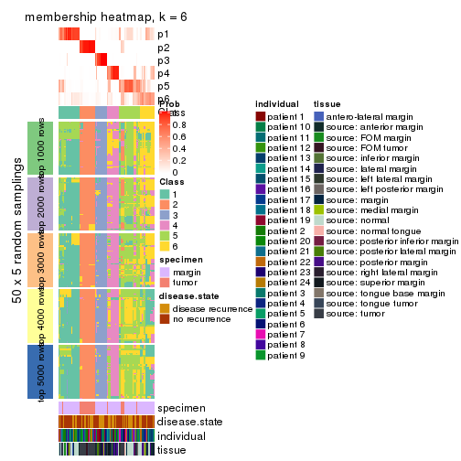
As soon as we have had the classes for columns, we can look for signatures which are significantly different between classes which can be candidate marks for certain classes. Following are the heatmaps for signatures.
Signature heatmaps where rows are scaled:
get_signatures(res, k = 2)
#> Error: The width or height of the raster image is zero, maybe you forget to turn off the
#> previous graphic device or it was corrupted. Run `dev.off()` to close it.

get_signatures(res, k = 3)
#> Error: The width or height of the raster image is zero, maybe you forget to turn off the
#> previous graphic device or it was corrupted. Run `dev.off()` to close it.

get_signatures(res, k = 4)
#> Error: The width or height of the raster image is zero, maybe you forget to turn off the
#> previous graphic device or it was corrupted. Run `dev.off()` to close it.

get_signatures(res, k = 5)
#> Error: The width or height of the raster image is zero, maybe you forget to turn off the
#> previous graphic device or it was corrupted. Run `dev.off()` to close it.

get_signatures(res, k = 6)
#> Error: The width or height of the raster image is zero, maybe you forget to turn off the
#> previous graphic device or it was corrupted. Run `dev.off()` to close it.

Signature heatmaps where rows are not scaled:
get_signatures(res, k = 2, scale_rows = FALSE)
get_signatures(res, k = 3, scale_rows = FALSE)
#> Error in mat[ceiling(1:nr/h_ratio), ceiling(1:nc/w_ratio), drop = FALSE]: subscript out of bounds
get_signatures(res, k = 4, scale_rows = FALSE)
get_signatures(res, k = 5, scale_rows = FALSE)
get_signatures(res, k = 6, scale_rows = FALSE)
#> Error in mat[ceiling(1:nr/h_ratio), ceiling(1:nc/w_ratio), drop = FALSE]: subscript out of bounds
Compare the overlap of signatures from different k:
compare_signatures(res)
get_signature() returns a data frame invisibly. TO get the list of signatures, the function
call should be assigned to a variable explicitly. In following code, if plot argument is set
to FALSE, no heatmap is plotted while only the differential analysis is performed.
# code only for demonstration
tb = get_signature(res, k = ..., plot = FALSE)
An example of the output of tb is:
#> which_row fdr mean_1 mean_2 scaled_mean_1 scaled_mean_2 km
#> 1 38 0.042760348 8.373488 9.131774 -0.5533452 0.5164555 1
#> 2 40 0.018707592 7.106213 8.469186 -0.6173731 0.5762149 1
#> 3 55 0.019134737 10.221463 11.207825 -0.6159697 0.5749050 1
#> 4 59 0.006059896 5.921854 7.869574 -0.6899429 0.6439467 1
#> 5 60 0.018055526 8.928898 10.211722 -0.6204761 0.5791110 1
#> 6 98 0.009384629 15.714769 14.887706 0.6635654 -0.6193277 2
...
The columns in tb are:
which_row: row indices corresponding to the input matrix.fdr: FDR for the differential test. mean_x: The mean value in group x.scaled_mean_x: The mean value in group x after rows are scaled.km: Row groups if k-means clustering is applied to rows.UMAP plot which shows how samples are separated.
dimension_reduction(res, k = 2, method = "UMAP")
dimension_reduction(res, k = 3, method = "UMAP")
dimension_reduction(res, k = 4, method = "UMAP")
dimension_reduction(res, k = 5, method = "UMAP")
dimension_reduction(res, k = 6, method = "UMAP")
Following heatmap shows how subgroups are split when increasing k:
collect_classes(res)
Test correlation between subgroups and known annotations. If the known annotation is numeric, one-way ANOVA test is applied, and if the known annotation is discrete, chi-squared contingency table test is applied.
test_to_known_factors(res)
#> n specimen(p) disease.state(p) individual(p) tissue(p) k
#> SD:kmeans 79 7.33e-16 1.0000 0.991 1.11e-08 2
#> SD:kmeans 95 5.92e-18 0.8129 0.870 2.31e-08 3
#> SD:kmeans 79 5.53e-15 0.7912 0.941 5.89e-09 4
#> SD:kmeans 77 1.17e-12 0.2214 0.835 4.79e-06 5
#> SD:kmeans 62 4.03e-11 0.0451 0.585 1.49e-03 6
If matrix rows can be associated to genes, consider to use functional_enrichment(res,
...) to perform function enrichment for the signature genes. See this vignette for more detailed explanations.
The object with results only for a single top-value method and a single partition method can be extracted as:
res = res_list["SD", "skmeans"]
# you can also extract it by
# res = res_list["SD:skmeans"]
A summary of res and all the functions that can be applied to it:
res
#> A 'ConsensusPartition' object with k = 2, 3, 4, 5, 6.
#> On a matrix with 17783 rows and 96 columns.
#> Top rows (1000, 2000, 3000, 4000, 5000) are extracted by 'SD' method.
#> Subgroups are detected by 'skmeans' method.
#> Performed in total 1250 partitions by row resampling.
#> Best k for subgroups seems to be 3.
#>
#> Following methods can be applied to this 'ConsensusPartition' object:
#> [1] "cola_report" "collect_classes" "collect_plots"
#> [4] "collect_stats" "colnames" "compare_signatures"
#> [7] "consensus_heatmap" "dimension_reduction" "functional_enrichment"
#> [10] "get_anno_col" "get_anno" "get_classes"
#> [13] "get_consensus" "get_matrix" "get_membership"
#> [16] "get_param" "get_signatures" "get_stats"
#> [19] "is_best_k" "is_stable_k" "membership_heatmap"
#> [22] "ncol" "nrow" "plot_ecdf"
#> [25] "rownames" "select_partition_number" "show"
#> [28] "suggest_best_k" "test_to_known_factors"
collect_plots() function collects all the plots made from res for all k (number of partitions)
into one single page to provide an easy and fast comparison between different k.
collect_plots(res)
The plots are:
k and the heatmap of
predicted classes for each k.k.k.k.All the plots in panels can be made by individual functions and they are plotted later in this section.
select_partition_number() produces several plots showing different
statistics for choosing “optimized” k. There are following statistics:
k;k, the area increased is defined as \(A_k - A_{k-1}\).The detailed explanations of these statistics can be found in the cola vignette.
Generally speaking, lower PAC score, higher mean silhouette score or higher
concordance corresponds to better partition. Rand index and Jaccard index
measure how similar the current partition is compared to partition with k-1.
If they are too similar, we won't accept k is better than k-1.
select_partition_number(res)
The numeric values for all these statistics can be obtained by get_stats().
get_stats(res)
#> k 1-PAC mean_silhouette concordance area_increased Rand Jaccard
#> 2 2 0.672 0.775 0.912 0.5041 0.496 0.496
#> 3 3 0.748 0.854 0.934 0.3219 0.699 0.467
#> 4 4 0.728 0.675 0.811 0.1350 0.804 0.491
#> 5 5 0.780 0.781 0.889 0.0647 0.919 0.689
#> 6 6 0.839 0.792 0.873 0.0377 0.907 0.589
suggest_best_k() suggests the best \(k\) based on these statistics. The rules are as follows:
suggest_best_k(res)
#> [1] 3
Following shows the table of the partitions (You need to click the show/hide
code output link to see it). The membership matrix (columns with name p*)
is inferred by
clue::cl_consensus()
function with the SE method. Basically the value in the membership matrix
represents the probability to belong to a certain group. The finall class
label for an item is determined with the group with highest probability it
belongs to.
In get_classes() function, the entropy is calculated from the membership
matrix and the silhouette score is calculated from the consensus matrix.
cbind(get_classes(res, k = 2), get_membership(res, k = 2))
#> class entropy silhouette p1 p2
#> GSM771247 1 0.000 0.8612 1.000 0.000
#> GSM771246 1 0.000 0.8612 1.000 0.000
#> GSM771245 1 0.000 0.8612 1.000 0.000
#> GSM771169 1 0.000 0.8612 1.000 0.000
#> GSM771171 1 0.000 0.8612 1.000 0.000
#> GSM771175 2 0.000 0.9325 0.000 1.000
#> GSM771172 1 0.000 0.8612 1.000 0.000
#> GSM771174 2 0.000 0.9325 0.000 1.000
#> GSM771178 1 0.000 0.8612 1.000 0.000
#> GSM771176 1 0.000 0.8612 1.000 0.000
#> GSM771181 1 0.000 0.8612 1.000 0.000
#> GSM771179 1 0.000 0.8612 1.000 0.000
#> GSM771184 1 0.000 0.8612 1.000 0.000
#> GSM771182 2 0.000 0.9325 0.000 1.000
#> GSM771185 2 0.000 0.9325 0.000 1.000
#> GSM771186 2 0.722 0.7198 0.200 0.800
#> GSM771188 1 0.000 0.8612 1.000 0.000
#> GSM771193 1 0.000 0.8612 1.000 0.000
#> GSM771192 2 0.722 0.7198 0.200 0.800
#> GSM771189 2 0.000 0.9325 0.000 1.000
#> GSM771194 1 0.991 0.3097 0.556 0.444
#> GSM771191 1 0.996 0.2678 0.536 0.464
#> GSM771202 1 0.000 0.8612 1.000 0.000
#> GSM771200 1 0.000 0.8612 1.000 0.000
#> GSM771206 1 0.996 0.2678 0.536 0.464
#> GSM771208 2 0.000 0.9325 0.000 1.000
#> GSM771207 1 0.000 0.8612 1.000 0.000
#> GSM771209 1 0.000 0.8612 1.000 0.000
#> GSM771211 1 0.000 0.8612 1.000 0.000
#> GSM771212 2 0.163 0.9124 0.024 0.976
#> GSM771214 2 0.000 0.9325 0.000 1.000
#> GSM771213 2 0.000 0.9325 0.000 1.000
#> GSM771216 2 0.000 0.9325 0.000 1.000
#> GSM771217 2 0.000 0.9325 0.000 1.000
#> GSM771219 1 0.000 0.8612 1.000 0.000
#> GSM771218 1 0.722 0.6808 0.800 0.200
#> GSM771222 1 0.000 0.8612 1.000 0.000
#> GSM771220 1 0.000 0.8612 1.000 0.000
#> GSM771226 1 0.000 0.8612 1.000 0.000
#> GSM771223 1 0.996 0.2678 0.536 0.464
#> GSM771225 2 0.722 0.7198 0.200 0.800
#> GSM771232 2 0.722 0.7198 0.200 0.800
#> GSM771235 1 0.000 0.8612 1.000 0.000
#> GSM771234 1 0.000 0.8612 1.000 0.000
#> GSM771242 1 0.000 0.8612 1.000 0.000
#> GSM771239 2 0.184 0.9106 0.028 0.972
#> GSM771240 1 0.995 0.2768 0.540 0.460
#> GSM771241 1 0.000 0.8612 1.000 0.000
#> GSM771197 1 0.000 0.8612 1.000 0.000
#> GSM771195 2 0.996 0.1269 0.464 0.536
#> GSM771198 1 0.000 0.8612 1.000 0.000
#> GSM771199 1 0.000 0.8612 1.000 0.000
#> GSM771204 1 0.996 0.2678 0.536 0.464
#> GSM771205 1 0.000 0.8612 1.000 0.000
#> GSM771229 1 0.000 0.8612 1.000 0.000
#> GSM771227 1 1.000 -0.0373 0.504 0.496
#> GSM771230 2 0.000 0.9325 0.000 1.000
#> GSM771231 2 0.767 0.6512 0.224 0.776
#> GSM771238 1 0.995 0.2768 0.540 0.460
#> GSM771236 1 0.000 0.8612 1.000 0.000
#> GSM771154 1 0.996 0.2678 0.536 0.464
#> GSM771152 2 0.000 0.9325 0.000 1.000
#> GSM771156 1 1.000 -0.0373 0.504 0.496
#> GSM771157 1 0.996 0.2678 0.536 0.464
#> GSM771155 2 0.260 0.8937 0.044 0.956
#> GSM771160 1 0.000 0.8612 1.000 0.000
#> GSM771161 1 0.000 0.8612 1.000 0.000
#> GSM771159 2 0.722 0.7198 0.200 0.800
#> GSM771165 2 0.000 0.9325 0.000 1.000
#> GSM771166 1 0.000 0.8612 1.000 0.000
#> GSM771167 2 0.767 0.6512 0.224 0.776
#> GSM771168 1 0.000 0.8612 1.000 0.000
#> GSM771163 1 1.000 -0.0373 0.504 0.496
#> GSM771244 2 0.000 0.9325 0.000 1.000
#> GSM771170 1 0.456 0.7768 0.904 0.096
#> GSM771173 2 0.000 0.9325 0.000 1.000
#> GSM771177 2 0.000 0.9325 0.000 1.000
#> GSM771180 2 0.000 0.9325 0.000 1.000
#> GSM771183 2 0.000 0.9325 0.000 1.000
#> GSM771187 2 0.000 0.9325 0.000 1.000
#> GSM771190 2 0.000 0.9325 0.000 1.000
#> GSM771201 2 0.000 0.9325 0.000 1.000
#> GSM771210 2 0.000 0.9325 0.000 1.000
#> GSM771215 2 0.000 0.9325 0.000 1.000
#> GSM771221 2 0.000 0.9325 0.000 1.000
#> GSM771224 2 0.996 0.1269 0.464 0.536
#> GSM771233 2 0.000 0.9325 0.000 1.000
#> GSM771243 2 0.000 0.9325 0.000 1.000
#> GSM771196 2 0.000 0.9325 0.000 1.000
#> GSM771203 2 0.000 0.9325 0.000 1.000
#> GSM771228 2 0.000 0.9325 0.000 1.000
#> GSM771237 2 0.000 0.9325 0.000 1.000
#> GSM771153 2 0.000 0.9325 0.000 1.000
#> GSM771158 2 0.000 0.9325 0.000 1.000
#> GSM771162 2 0.000 0.9325 0.000 1.000
#> GSM771164 2 0.000 0.9325 0.000 1.000
cbind(get_classes(res, k = 3), get_membership(res, k = 3))
#> class entropy silhouette p1 p2 p3
#> GSM771247 3 0.6235 0.259 0.436 0.000 0.564
#> GSM771246 3 0.5621 0.622 0.308 0.000 0.692
#> GSM771245 1 0.0237 0.943 0.996 0.000 0.004
#> GSM771169 3 0.0000 0.908 0.000 0.000 1.000
#> GSM771171 3 0.0000 0.908 0.000 0.000 1.000
#> GSM771175 1 0.3619 0.815 0.864 0.136 0.000
#> GSM771172 3 0.0237 0.906 0.004 0.000 0.996
#> GSM771174 1 0.0237 0.942 0.996 0.004 0.000
#> GSM771178 3 0.0000 0.908 0.000 0.000 1.000
#> GSM771176 1 0.0237 0.943 0.996 0.000 0.004
#> GSM771181 3 0.0000 0.908 0.000 0.000 1.000
#> GSM771179 3 0.5650 0.616 0.312 0.000 0.688
#> GSM771184 3 0.0000 0.908 0.000 0.000 1.000
#> GSM771182 1 0.4887 0.693 0.772 0.228 0.000
#> GSM771185 1 0.0237 0.942 0.996 0.004 0.000
#> GSM771186 2 0.4784 0.735 0.004 0.796 0.200
#> GSM771188 1 0.0237 0.943 0.996 0.000 0.004
#> GSM771193 3 0.0000 0.908 0.000 0.000 1.000
#> GSM771192 2 0.6180 0.339 0.000 0.584 0.416
#> GSM771189 2 0.0000 0.927 0.000 1.000 0.000
#> GSM771194 1 0.0237 0.943 0.996 0.000 0.004
#> GSM771191 1 0.0000 0.943 1.000 0.000 0.000
#> GSM771202 3 0.5591 0.628 0.304 0.000 0.696
#> GSM771200 3 0.5650 0.616 0.312 0.000 0.688
#> GSM771206 1 0.0000 0.943 1.000 0.000 0.000
#> GSM771208 1 0.0000 0.943 1.000 0.000 0.000
#> GSM771207 3 0.0000 0.908 0.000 0.000 1.000
#> GSM771209 1 0.4555 0.698 0.800 0.000 0.200
#> GSM771211 3 0.0000 0.908 0.000 0.000 1.000
#> GSM771212 1 0.0000 0.943 1.000 0.000 0.000
#> GSM771214 2 0.6140 0.280 0.404 0.596 0.000
#> GSM771213 1 0.0000 0.943 1.000 0.000 0.000
#> GSM771216 2 0.4605 0.729 0.204 0.796 0.000
#> GSM771217 1 0.0000 0.943 1.000 0.000 0.000
#> GSM771219 3 0.0000 0.908 0.000 0.000 1.000
#> GSM771218 1 0.0000 0.943 1.000 0.000 0.000
#> GSM771222 3 0.0237 0.906 0.004 0.000 0.996
#> GSM771220 3 0.0237 0.906 0.004 0.000 0.996
#> GSM771226 3 0.0000 0.908 0.000 0.000 1.000
#> GSM771223 1 0.0000 0.943 1.000 0.000 0.000
#> GSM771225 2 0.4555 0.738 0.000 0.800 0.200
#> GSM771232 1 0.5356 0.690 0.784 0.020 0.196
#> GSM771235 3 0.0000 0.908 0.000 0.000 1.000
#> GSM771234 3 0.0000 0.908 0.000 0.000 1.000
#> GSM771242 3 0.0000 0.908 0.000 0.000 1.000
#> GSM771239 1 0.4504 0.743 0.804 0.196 0.000
#> GSM771240 1 0.0237 0.943 0.996 0.000 0.004
#> GSM771241 3 0.0000 0.908 0.000 0.000 1.000
#> GSM771197 3 0.0000 0.908 0.000 0.000 1.000
#> GSM771195 3 0.2165 0.863 0.000 0.064 0.936
#> GSM771198 3 0.0000 0.908 0.000 0.000 1.000
#> GSM771199 3 0.0000 0.908 0.000 0.000 1.000
#> GSM771204 1 0.0000 0.943 1.000 0.000 0.000
#> GSM771205 3 0.5650 0.616 0.312 0.000 0.688
#> GSM771229 3 0.5591 0.628 0.304 0.000 0.696
#> GSM771227 3 0.1860 0.872 0.000 0.052 0.948
#> GSM771230 1 0.0237 0.942 0.996 0.004 0.000
#> GSM771231 1 0.0424 0.941 0.992 0.000 0.008
#> GSM771238 1 0.0237 0.943 0.996 0.000 0.004
#> GSM771236 3 0.0237 0.906 0.004 0.000 0.996
#> GSM771154 1 0.0000 0.943 1.000 0.000 0.000
#> GSM771152 2 0.4291 0.760 0.180 0.820 0.000
#> GSM771156 3 0.2066 0.866 0.000 0.060 0.940
#> GSM771157 1 0.0000 0.943 1.000 0.000 0.000
#> GSM771155 1 0.0000 0.943 1.000 0.000 0.000
#> GSM771160 3 0.0000 0.908 0.000 0.000 1.000
#> GSM771161 1 0.3941 0.794 0.844 0.000 0.156
#> GSM771159 2 0.4555 0.738 0.000 0.800 0.200
#> GSM771165 1 0.0237 0.942 0.996 0.004 0.000
#> GSM771166 3 0.0000 0.908 0.000 0.000 1.000
#> GSM771167 1 0.0424 0.941 0.992 0.000 0.008
#> GSM771168 3 0.5591 0.628 0.304 0.000 0.696
#> GSM771163 3 0.1860 0.872 0.000 0.052 0.948
#> GSM771244 2 0.0000 0.927 0.000 1.000 0.000
#> GSM771170 3 0.0237 0.906 0.004 0.000 0.996
#> GSM771173 2 0.0000 0.927 0.000 1.000 0.000
#> GSM771177 2 0.0000 0.927 0.000 1.000 0.000
#> GSM771180 2 0.0000 0.927 0.000 1.000 0.000
#> GSM771183 2 0.0000 0.927 0.000 1.000 0.000
#> GSM771187 2 0.0000 0.927 0.000 1.000 0.000
#> GSM771190 2 0.0000 0.927 0.000 1.000 0.000
#> GSM771201 2 0.0000 0.927 0.000 1.000 0.000
#> GSM771210 1 0.5650 0.521 0.688 0.312 0.000
#> GSM771215 2 0.0000 0.927 0.000 1.000 0.000
#> GSM771221 2 0.0000 0.927 0.000 1.000 0.000
#> GSM771224 3 0.3816 0.768 0.000 0.148 0.852
#> GSM771233 2 0.0000 0.927 0.000 1.000 0.000
#> GSM771243 2 0.0000 0.927 0.000 1.000 0.000
#> GSM771196 2 0.0000 0.927 0.000 1.000 0.000
#> GSM771203 2 0.0000 0.927 0.000 1.000 0.000
#> GSM771228 2 0.0000 0.927 0.000 1.000 0.000
#> GSM771237 2 0.0000 0.927 0.000 1.000 0.000
#> GSM771153 2 0.0000 0.927 0.000 1.000 0.000
#> GSM771158 2 0.0000 0.927 0.000 1.000 0.000
#> GSM771162 2 0.0000 0.927 0.000 1.000 0.000
#> GSM771164 2 0.0000 0.927 0.000 1.000 0.000
cbind(get_classes(res, k = 4), get_membership(res, k = 4))
#> class entropy silhouette p1 p2 p3 p4
#> GSM771247 3 0.7606 0.113 0.304 0.000 0.468 0.228
#> GSM771246 1 0.0000 0.588 1.000 0.000 0.000 0.000
#> GSM771245 4 0.5291 0.725 0.324 0.000 0.024 0.652
#> GSM771169 3 0.1716 0.850 0.064 0.000 0.936 0.000
#> GSM771171 3 0.1637 0.853 0.060 0.000 0.940 0.000
#> GSM771175 4 0.0000 0.615 0.000 0.000 0.000 1.000
#> GSM771172 1 0.4382 0.469 0.704 0.000 0.296 0.000
#> GSM771174 4 0.0000 0.615 0.000 0.000 0.000 1.000
#> GSM771178 3 0.2345 0.818 0.100 0.000 0.900 0.000
#> GSM771176 4 0.5291 0.725 0.324 0.000 0.024 0.652
#> GSM771181 3 0.0000 0.887 0.000 0.000 1.000 0.000
#> GSM771179 1 0.0000 0.588 1.000 0.000 0.000 0.000
#> GSM771184 1 0.7606 0.487 0.476 0.000 0.248 0.276
#> GSM771182 4 0.5597 -0.445 0.464 0.020 0.000 0.516
#> GSM771185 4 0.0000 0.615 0.000 0.000 0.000 1.000
#> GSM771186 1 0.7119 0.522 0.508 0.140 0.000 0.352
#> GSM771188 4 0.5291 0.725 0.324 0.000 0.024 0.652
#> GSM771193 3 0.0000 0.887 0.000 0.000 1.000 0.000
#> GSM771192 3 0.4679 0.465 0.000 0.000 0.648 0.352
#> GSM771189 2 0.4679 0.480 0.000 0.648 0.000 0.352
#> GSM771194 4 0.5291 0.725 0.324 0.000 0.024 0.652
#> GSM771191 4 0.4679 0.717 0.352 0.000 0.000 0.648
#> GSM771202 1 0.0000 0.588 1.000 0.000 0.000 0.000
#> GSM771200 1 0.0000 0.588 1.000 0.000 0.000 0.000
#> GSM771206 4 0.4776 0.699 0.376 0.000 0.000 0.624
#> GSM771208 1 0.0336 0.580 0.992 0.000 0.000 0.008
#> GSM771207 3 0.1716 0.850 0.064 0.000 0.936 0.000
#> GSM771209 1 0.0000 0.588 1.000 0.000 0.000 0.000
#> GSM771211 3 0.3873 0.642 0.228 0.000 0.772 0.000
#> GSM771212 1 0.1022 0.554 0.968 0.000 0.000 0.032
#> GSM771214 2 0.4981 0.235 0.464 0.536 0.000 0.000
#> GSM771213 4 0.4964 0.694 0.380 0.004 0.000 0.616
#> GSM771216 2 0.3649 0.701 0.000 0.796 0.000 0.204
#> GSM771217 4 0.4564 0.724 0.328 0.000 0.000 0.672
#> GSM771219 3 0.0000 0.887 0.000 0.000 1.000 0.000
#> GSM771218 1 0.4994 -0.517 0.520 0.000 0.000 0.480
#> GSM771222 1 0.4624 0.410 0.660 0.000 0.340 0.000
#> GSM771220 1 0.4730 0.368 0.636 0.000 0.364 0.000
#> GSM771226 3 0.0000 0.887 0.000 0.000 1.000 0.000
#> GSM771223 4 0.4661 0.719 0.348 0.000 0.000 0.652
#> GSM771225 1 0.7249 0.515 0.496 0.156 0.000 0.348
#> GSM771232 1 0.4543 0.578 0.676 0.000 0.000 0.324
#> GSM771235 3 0.0000 0.887 0.000 0.000 1.000 0.000
#> GSM771234 3 0.0000 0.887 0.000 0.000 1.000 0.000
#> GSM771242 3 0.0000 0.887 0.000 0.000 1.000 0.000
#> GSM771239 1 0.5392 0.479 0.528 0.012 0.000 0.460
#> GSM771240 4 0.5291 0.725 0.324 0.000 0.024 0.652
#> GSM771241 3 0.0000 0.887 0.000 0.000 1.000 0.000
#> GSM771197 3 0.0000 0.887 0.000 0.000 1.000 0.000
#> GSM771195 1 0.7404 0.523 0.476 0.000 0.176 0.348
#> GSM771198 3 0.0000 0.887 0.000 0.000 1.000 0.000
#> GSM771199 3 0.0000 0.887 0.000 0.000 1.000 0.000
#> GSM771204 4 0.4661 0.719 0.348 0.000 0.000 0.652
#> GSM771205 1 0.0000 0.588 1.000 0.000 0.000 0.000
#> GSM771229 1 0.0000 0.588 1.000 0.000 0.000 0.000
#> GSM771227 1 0.7404 0.523 0.476 0.000 0.176 0.348
#> GSM771230 4 0.0000 0.615 0.000 0.000 0.000 1.000
#> GSM771231 4 0.0000 0.615 0.000 0.000 0.000 1.000
#> GSM771238 4 0.5291 0.725 0.324 0.000 0.024 0.652
#> GSM771236 1 0.5411 0.584 0.656 0.000 0.032 0.312
#> GSM771154 4 0.4761 0.703 0.372 0.000 0.000 0.628
#> GSM771152 1 0.7119 0.522 0.508 0.140 0.000 0.352
#> GSM771156 3 0.4477 0.524 0.000 0.000 0.688 0.312
#> GSM771157 1 0.4994 -0.517 0.520 0.000 0.000 0.480
#> GSM771155 4 0.1302 0.579 0.044 0.000 0.000 0.956
#> GSM771160 3 0.0000 0.887 0.000 0.000 1.000 0.000
#> GSM771161 3 0.6383 0.379 0.096 0.000 0.612 0.292
#> GSM771159 1 0.7249 0.515 0.496 0.156 0.000 0.348
#> GSM771165 4 0.0000 0.615 0.000 0.000 0.000 1.000
#> GSM771166 3 0.0000 0.887 0.000 0.000 1.000 0.000
#> GSM771167 4 0.0000 0.615 0.000 0.000 0.000 1.000
#> GSM771168 1 0.0000 0.588 1.000 0.000 0.000 0.000
#> GSM771163 1 0.7404 0.523 0.476 0.000 0.176 0.348
#> GSM771244 2 0.0000 0.948 0.000 1.000 0.000 0.000
#> GSM771170 1 0.5990 0.449 0.644 0.072 0.284 0.000
#> GSM771173 2 0.0000 0.948 0.000 1.000 0.000 0.000
#> GSM771177 2 0.0000 0.948 0.000 1.000 0.000 0.000
#> GSM771180 2 0.0000 0.948 0.000 1.000 0.000 0.000
#> GSM771183 2 0.0000 0.948 0.000 1.000 0.000 0.000
#> GSM771187 2 0.0000 0.948 0.000 1.000 0.000 0.000
#> GSM771190 2 0.0000 0.948 0.000 1.000 0.000 0.000
#> GSM771201 2 0.0000 0.948 0.000 1.000 0.000 0.000
#> GSM771210 4 0.4661 0.424 0.000 0.348 0.000 0.652
#> GSM771215 2 0.0000 0.948 0.000 1.000 0.000 0.000
#> GSM771221 2 0.0000 0.948 0.000 1.000 0.000 0.000
#> GSM771224 3 0.0000 0.887 0.000 0.000 1.000 0.000
#> GSM771233 2 0.0000 0.948 0.000 1.000 0.000 0.000
#> GSM771243 2 0.0000 0.948 0.000 1.000 0.000 0.000
#> GSM771196 2 0.0000 0.948 0.000 1.000 0.000 0.000
#> GSM771203 2 0.0000 0.948 0.000 1.000 0.000 0.000
#> GSM771228 2 0.0000 0.948 0.000 1.000 0.000 0.000
#> GSM771237 2 0.0000 0.948 0.000 1.000 0.000 0.000
#> GSM771153 2 0.0000 0.948 0.000 1.000 0.000 0.000
#> GSM771158 2 0.0000 0.948 0.000 1.000 0.000 0.000
#> GSM771162 2 0.0000 0.948 0.000 1.000 0.000 0.000
#> GSM771164 2 0.0000 0.948 0.000 1.000 0.000 0.000
cbind(get_classes(res, k = 5), get_membership(res, k = 5))
#> class entropy silhouette p1 p2 p3 p4 p5
#> GSM771247 3 0.6494 0.493 0.260 0.000 0.572 0.028 0.140
#> GSM771246 1 0.0000 0.834 1.000 0.000 0.000 0.000 0.000
#> GSM771245 4 0.0000 0.800 0.000 0.000 0.000 1.000 0.000
#> GSM771169 3 0.3452 0.723 0.244 0.000 0.756 0.000 0.000
#> GSM771171 3 0.3109 0.766 0.200 0.000 0.800 0.000 0.000
#> GSM771175 4 0.4182 0.419 0.000 0.000 0.000 0.600 0.400
#> GSM771172 1 0.0000 0.834 1.000 0.000 0.000 0.000 0.000
#> GSM771174 4 0.4161 0.430 0.000 0.000 0.000 0.608 0.392
#> GSM771178 3 0.3395 0.732 0.236 0.000 0.764 0.000 0.000
#> GSM771176 4 0.0000 0.800 0.000 0.000 0.000 1.000 0.000
#> GSM771181 3 0.0000 0.885 0.000 0.000 1.000 0.000 0.000
#> GSM771179 1 0.0000 0.834 1.000 0.000 0.000 0.000 0.000
#> GSM771184 5 0.4877 0.687 0.236 0.000 0.072 0.000 0.692
#> GSM771182 5 0.0000 0.800 0.000 0.000 0.000 0.000 1.000
#> GSM771185 4 0.4161 0.430 0.000 0.000 0.000 0.608 0.392
#> GSM771186 5 0.2605 0.832 0.148 0.000 0.000 0.000 0.852
#> GSM771188 4 0.0000 0.800 0.000 0.000 0.000 1.000 0.000
#> GSM771193 3 0.0000 0.885 0.000 0.000 1.000 0.000 0.000
#> GSM771192 5 0.3480 0.645 0.000 0.000 0.248 0.000 0.752
#> GSM771189 5 0.1544 0.766 0.000 0.068 0.000 0.000 0.932
#> GSM771194 4 0.0000 0.800 0.000 0.000 0.000 1.000 0.000
#> GSM771191 4 0.2305 0.753 0.092 0.000 0.000 0.896 0.012
#> GSM771202 1 0.0000 0.834 1.000 0.000 0.000 0.000 0.000
#> GSM771200 1 0.0000 0.834 1.000 0.000 0.000 0.000 0.000
#> GSM771206 4 0.5104 0.596 0.192 0.000 0.000 0.692 0.116
#> GSM771208 1 0.3684 0.688 0.720 0.000 0.000 0.000 0.280
#> GSM771207 3 0.3210 0.756 0.212 0.000 0.788 0.000 0.000
#> GSM771209 1 0.0000 0.834 1.000 0.000 0.000 0.000 0.000
#> GSM771211 3 0.5490 0.611 0.228 0.000 0.644 0.000 0.128
#> GSM771212 1 0.3684 0.688 0.720 0.000 0.000 0.000 0.280
#> GSM771214 1 0.6090 0.512 0.588 0.260 0.000 0.008 0.144
#> GSM771213 4 0.6154 0.505 0.216 0.020 0.000 0.616 0.148
#> GSM771216 2 0.5297 0.363 0.000 0.580 0.000 0.060 0.360
#> GSM771217 4 0.2471 0.747 0.000 0.000 0.000 0.864 0.136
#> GSM771219 3 0.0000 0.885 0.000 0.000 1.000 0.000 0.000
#> GSM771218 1 0.4528 0.687 0.752 0.000 0.000 0.104 0.144
#> GSM771222 1 0.2813 0.744 0.868 0.000 0.024 0.000 0.108
#> GSM771220 1 0.2561 0.715 0.856 0.000 0.144 0.000 0.000
#> GSM771226 3 0.0000 0.885 0.000 0.000 1.000 0.000 0.000
#> GSM771223 4 0.0000 0.800 0.000 0.000 0.000 1.000 0.000
#> GSM771225 5 0.2561 0.834 0.144 0.000 0.000 0.000 0.856
#> GSM771232 1 0.3534 0.614 0.744 0.000 0.000 0.000 0.256
#> GSM771235 3 0.0000 0.885 0.000 0.000 1.000 0.000 0.000
#> GSM771234 3 0.0000 0.885 0.000 0.000 1.000 0.000 0.000
#> GSM771242 3 0.0000 0.885 0.000 0.000 1.000 0.000 0.000
#> GSM771239 5 0.0404 0.806 0.012 0.000 0.000 0.000 0.988
#> GSM771240 4 0.0000 0.800 0.000 0.000 0.000 1.000 0.000
#> GSM771241 3 0.0000 0.885 0.000 0.000 1.000 0.000 0.000
#> GSM771197 3 0.0000 0.885 0.000 0.000 1.000 0.000 0.000
#> GSM771195 5 0.2719 0.834 0.144 0.000 0.004 0.000 0.852
#> GSM771198 3 0.0000 0.885 0.000 0.000 1.000 0.000 0.000
#> GSM771199 3 0.0000 0.885 0.000 0.000 1.000 0.000 0.000
#> GSM771204 4 0.0000 0.800 0.000 0.000 0.000 1.000 0.000
#> GSM771205 1 0.0000 0.834 1.000 0.000 0.000 0.000 0.000
#> GSM771229 1 0.0000 0.834 1.000 0.000 0.000 0.000 0.000
#> GSM771227 5 0.2719 0.834 0.144 0.000 0.004 0.000 0.852
#> GSM771230 4 0.4171 0.423 0.000 0.000 0.000 0.604 0.396
#> GSM771231 4 0.1608 0.774 0.000 0.000 0.000 0.928 0.072
#> GSM771238 4 0.0000 0.800 0.000 0.000 0.000 1.000 0.000
#> GSM771236 1 0.4130 0.550 0.696 0.000 0.012 0.000 0.292
#> GSM771154 4 0.4648 0.649 0.156 0.000 0.000 0.740 0.104
#> GSM771152 5 0.0000 0.800 0.000 0.000 0.000 0.000 1.000
#> GSM771156 3 0.4074 0.367 0.000 0.000 0.636 0.000 0.364
#> GSM771157 1 0.4845 0.663 0.724 0.000 0.000 0.128 0.148
#> GSM771155 5 0.5425 0.208 0.100 0.000 0.000 0.268 0.632
#> GSM771160 3 0.0000 0.885 0.000 0.000 1.000 0.000 0.000
#> GSM771161 4 0.3752 0.512 0.000 0.000 0.292 0.708 0.000
#> GSM771159 5 0.2561 0.834 0.144 0.000 0.000 0.000 0.856
#> GSM771165 4 0.4171 0.423 0.000 0.000 0.000 0.604 0.396
#> GSM771166 3 0.0000 0.885 0.000 0.000 1.000 0.000 0.000
#> GSM771167 4 0.1608 0.774 0.000 0.000 0.000 0.928 0.072
#> GSM771168 1 0.0000 0.834 1.000 0.000 0.000 0.000 0.000
#> GSM771163 5 0.2719 0.834 0.144 0.000 0.004 0.000 0.852
#> GSM771244 2 0.0000 0.979 0.000 1.000 0.000 0.000 0.000
#> GSM771170 1 0.4170 0.580 0.712 0.004 0.012 0.000 0.272
#> GSM771173 2 0.0000 0.979 0.000 1.000 0.000 0.000 0.000
#> GSM771177 2 0.0000 0.979 0.000 1.000 0.000 0.000 0.000
#> GSM771180 2 0.0000 0.979 0.000 1.000 0.000 0.000 0.000
#> GSM771183 2 0.0000 0.979 0.000 1.000 0.000 0.000 0.000
#> GSM771187 2 0.0000 0.979 0.000 1.000 0.000 0.000 0.000
#> GSM771190 2 0.0000 0.979 0.000 1.000 0.000 0.000 0.000
#> GSM771201 2 0.0000 0.979 0.000 1.000 0.000 0.000 0.000
#> GSM771210 4 0.0162 0.799 0.000 0.004 0.000 0.996 0.000
#> GSM771215 2 0.0000 0.979 0.000 1.000 0.000 0.000 0.000
#> GSM771221 2 0.0000 0.979 0.000 1.000 0.000 0.000 0.000
#> GSM771224 3 0.2230 0.788 0.000 0.000 0.884 0.000 0.116
#> GSM771233 2 0.0000 0.979 0.000 1.000 0.000 0.000 0.000
#> GSM771243 2 0.0000 0.979 0.000 1.000 0.000 0.000 0.000
#> GSM771196 2 0.0000 0.979 0.000 1.000 0.000 0.000 0.000
#> GSM771203 2 0.0000 0.979 0.000 1.000 0.000 0.000 0.000
#> GSM771228 2 0.0000 0.979 0.000 1.000 0.000 0.000 0.000
#> GSM771237 2 0.0000 0.979 0.000 1.000 0.000 0.000 0.000
#> GSM771153 2 0.0000 0.979 0.000 1.000 0.000 0.000 0.000
#> GSM771158 2 0.0000 0.979 0.000 1.000 0.000 0.000 0.000
#> GSM771162 2 0.0000 0.979 0.000 1.000 0.000 0.000 0.000
#> GSM771164 2 0.0000 0.979 0.000 1.000 0.000 0.000 0.000
cbind(get_classes(res, k = 6), get_membership(res, k = 6))
#> class entropy silhouette p1 p2 p3 p4 p5 p6
#> GSM771247 1 0.6577 0.458 0.484 0.000 0.300 0.032 0.012 0.172
#> GSM771246 1 0.0000 0.766 1.000 0.000 0.000 0.000 0.000 0.000
#> GSM771245 4 0.0000 0.797 0.000 0.000 0.000 1.000 0.000 0.000
#> GSM771169 1 0.3945 0.527 0.612 0.000 0.380 0.000 0.008 0.000
#> GSM771171 1 0.4002 0.489 0.588 0.000 0.404 0.000 0.008 0.000
#> GSM771175 4 0.5961 0.285 0.000 0.000 0.000 0.452 0.284 0.264
#> GSM771172 1 0.0146 0.767 0.996 0.000 0.000 0.000 0.004 0.000
#> GSM771174 4 0.5855 0.341 0.000 0.000 0.000 0.484 0.276 0.240
#> GSM771178 1 0.3847 0.568 0.644 0.000 0.348 0.000 0.008 0.000
#> GSM771176 4 0.0000 0.797 0.000 0.000 0.000 1.000 0.000 0.000
#> GSM771181 3 0.0000 0.959 0.000 0.000 1.000 0.000 0.000 0.000
#> GSM771179 1 0.0291 0.766 0.992 0.000 0.000 0.000 0.004 0.004
#> GSM771184 5 0.3314 0.603 0.224 0.000 0.012 0.000 0.764 0.000
#> GSM771182 5 0.2823 0.688 0.000 0.000 0.000 0.000 0.796 0.204
#> GSM771185 4 0.5817 0.335 0.000 0.000 0.000 0.480 0.312 0.208
#> GSM771186 5 0.3641 0.756 0.028 0.000 0.000 0.000 0.748 0.224
#> GSM771188 4 0.0000 0.797 0.000 0.000 0.000 1.000 0.000 0.000
#> GSM771193 3 0.0146 0.957 0.000 0.000 0.996 0.004 0.000 0.000
#> GSM771192 5 0.5374 0.627 0.000 0.000 0.200 0.000 0.588 0.212
#> GSM771189 5 0.4334 0.612 0.000 0.024 0.000 0.000 0.568 0.408
#> GSM771194 4 0.0000 0.797 0.000 0.000 0.000 1.000 0.000 0.000
#> GSM771191 6 0.3593 0.761 0.024 0.000 0.000 0.228 0.000 0.748
#> GSM771202 1 0.0291 0.766 0.992 0.000 0.000 0.000 0.004 0.004
#> GSM771200 1 0.0291 0.766 0.992 0.000 0.000 0.000 0.004 0.004
#> GSM771206 6 0.3792 0.868 0.108 0.000 0.000 0.112 0.000 0.780
#> GSM771208 6 0.2823 0.866 0.204 0.000 0.000 0.000 0.000 0.796
#> GSM771207 1 0.3993 0.496 0.592 0.000 0.400 0.000 0.008 0.000
#> GSM771209 1 0.1349 0.722 0.940 0.000 0.000 0.000 0.004 0.056
#> GSM771211 1 0.4697 0.487 0.568 0.000 0.392 0.000 0.028 0.012
#> GSM771212 6 0.2823 0.866 0.204 0.000 0.000 0.000 0.000 0.796
#> GSM771214 6 0.3409 0.861 0.192 0.028 0.000 0.000 0.000 0.780
#> GSM771213 6 0.3368 0.874 0.108 0.012 0.000 0.052 0.000 0.828
#> GSM771216 6 0.1141 0.762 0.000 0.052 0.000 0.000 0.000 0.948
#> GSM771217 6 0.1663 0.779 0.000 0.000 0.000 0.088 0.000 0.912
#> GSM771219 3 0.0520 0.946 0.008 0.000 0.984 0.000 0.008 0.000
#> GSM771218 6 0.3440 0.872 0.196 0.000 0.000 0.028 0.000 0.776
#> GSM771222 1 0.1858 0.738 0.904 0.000 0.004 0.000 0.092 0.000
#> GSM771220 1 0.1814 0.751 0.900 0.000 0.100 0.000 0.000 0.000
#> GSM771226 3 0.0000 0.959 0.000 0.000 1.000 0.000 0.000 0.000
#> GSM771223 4 0.0363 0.794 0.000 0.000 0.000 0.988 0.000 0.012
#> GSM771225 5 0.1320 0.804 0.016 0.000 0.000 0.000 0.948 0.036
#> GSM771232 5 0.4088 0.474 0.368 0.000 0.000 0.000 0.616 0.016
#> GSM771235 3 0.0146 0.956 0.000 0.000 0.996 0.000 0.004 0.000
#> GSM771234 3 0.0000 0.959 0.000 0.000 1.000 0.000 0.000 0.000
#> GSM771242 3 0.0000 0.959 0.000 0.000 1.000 0.000 0.000 0.000
#> GSM771239 5 0.2378 0.783 0.000 0.000 0.000 0.000 0.848 0.152
#> GSM771240 4 0.0000 0.797 0.000 0.000 0.000 1.000 0.000 0.000
#> GSM771241 3 0.0000 0.959 0.000 0.000 1.000 0.000 0.000 0.000
#> GSM771197 3 0.0000 0.959 0.000 0.000 1.000 0.000 0.000 0.000
#> GSM771195 5 0.0363 0.796 0.012 0.000 0.000 0.000 0.988 0.000
#> GSM771198 3 0.0000 0.959 0.000 0.000 1.000 0.000 0.000 0.000
#> GSM771199 3 0.0000 0.959 0.000 0.000 1.000 0.000 0.000 0.000
#> GSM771204 4 0.0458 0.792 0.000 0.000 0.000 0.984 0.000 0.016
#> GSM771205 1 0.0291 0.766 0.992 0.000 0.000 0.000 0.004 0.004
#> GSM771229 1 0.0291 0.766 0.992 0.000 0.000 0.000 0.004 0.004
#> GSM771227 5 0.0146 0.796 0.004 0.000 0.000 0.000 0.996 0.000
#> GSM771230 4 0.5746 0.334 0.000 0.000 0.000 0.488 0.324 0.188
#> GSM771231 4 0.1970 0.761 0.000 0.000 0.000 0.900 0.092 0.008
#> GSM771238 4 0.0000 0.797 0.000 0.000 0.000 1.000 0.000 0.000
#> GSM771236 1 0.3672 0.455 0.632 0.000 0.000 0.000 0.368 0.000
#> GSM771154 6 0.3834 0.866 0.108 0.000 0.000 0.116 0.000 0.776
#> GSM771152 5 0.3175 0.751 0.000 0.000 0.000 0.000 0.744 0.256
#> GSM771156 3 0.3659 0.433 0.000 0.000 0.636 0.000 0.364 0.000
#> GSM771157 6 0.3333 0.874 0.192 0.000 0.000 0.024 0.000 0.784
#> GSM771155 6 0.3521 0.784 0.044 0.000 0.000 0.004 0.156 0.796
#> GSM771160 3 0.0000 0.959 0.000 0.000 1.000 0.000 0.000 0.000
#> GSM771161 4 0.1957 0.711 0.000 0.000 0.112 0.888 0.000 0.000
#> GSM771159 5 0.1320 0.804 0.016 0.000 0.000 0.000 0.948 0.036
#> GSM771165 4 0.5746 0.334 0.000 0.000 0.000 0.488 0.324 0.188
#> GSM771166 3 0.0146 0.956 0.000 0.000 0.996 0.000 0.004 0.000
#> GSM771167 4 0.1970 0.761 0.000 0.000 0.000 0.900 0.092 0.008
#> GSM771168 1 0.0291 0.766 0.992 0.000 0.000 0.000 0.004 0.004
#> GSM771163 5 0.0146 0.796 0.004 0.000 0.000 0.000 0.996 0.000
#> GSM771244 2 0.0000 0.989 0.000 1.000 0.000 0.000 0.000 0.000
#> GSM771170 1 0.3789 0.488 0.660 0.000 0.000 0.000 0.332 0.008
#> GSM771173 2 0.1219 0.957 0.000 0.948 0.000 0.000 0.004 0.048
#> GSM771177 2 0.0000 0.989 0.000 1.000 0.000 0.000 0.000 0.000
#> GSM771180 2 0.1219 0.957 0.000 0.948 0.000 0.000 0.004 0.048
#> GSM771183 2 0.0000 0.989 0.000 1.000 0.000 0.000 0.000 0.000
#> GSM771187 2 0.0000 0.989 0.000 1.000 0.000 0.000 0.000 0.000
#> GSM771190 2 0.0000 0.989 0.000 1.000 0.000 0.000 0.000 0.000
#> GSM771201 2 0.1219 0.957 0.000 0.948 0.000 0.000 0.004 0.048
#> GSM771210 4 0.1908 0.763 0.000 0.056 0.000 0.916 0.000 0.028
#> GSM771215 2 0.0000 0.989 0.000 1.000 0.000 0.000 0.000 0.000
#> GSM771221 2 0.0000 0.989 0.000 1.000 0.000 0.000 0.000 0.000
#> GSM771224 3 0.2331 0.853 0.000 0.000 0.888 0.000 0.080 0.032
#> GSM771233 2 0.0000 0.989 0.000 1.000 0.000 0.000 0.000 0.000
#> GSM771243 2 0.0000 0.989 0.000 1.000 0.000 0.000 0.000 0.000
#> GSM771196 2 0.0000 0.989 0.000 1.000 0.000 0.000 0.000 0.000
#> GSM771203 2 0.0000 0.989 0.000 1.000 0.000 0.000 0.000 0.000
#> GSM771228 2 0.0000 0.989 0.000 1.000 0.000 0.000 0.000 0.000
#> GSM771237 2 0.0000 0.989 0.000 1.000 0.000 0.000 0.000 0.000
#> GSM771153 2 0.0000 0.989 0.000 1.000 0.000 0.000 0.000 0.000
#> GSM771158 2 0.0000 0.989 0.000 1.000 0.000 0.000 0.000 0.000
#> GSM771162 2 0.1219 0.957 0.000 0.948 0.000 0.000 0.004 0.048
#> GSM771164 2 0.0000 0.989 0.000 1.000 0.000 0.000 0.000 0.000
Heatmaps for the consensus matrix. It visualizes the probability of two samples to be in a same group.
consensus_heatmap(res, k = 2)
consensus_heatmap(res, k = 3)
consensus_heatmap(res, k = 4)
consensus_heatmap(res, k = 5)
consensus_heatmap(res, k = 6)
Heatmaps for the membership of samples in all partitions to see how consistent they are:
membership_heatmap(res, k = 2)
membership_heatmap(res, k = 3)
membership_heatmap(res, k = 4)
membership_heatmap(res, k = 5)
membership_heatmap(res, k = 6)
As soon as we have had the classes for columns, we can look for signatures which are significantly different between classes which can be candidate marks for certain classes. Following are the heatmaps for signatures.
Signature heatmaps where rows are scaled:
get_signatures(res, k = 2)
#> Error: The width or height of the raster image is zero, maybe you forget to turn off the
#> previous graphic device or it was corrupted. Run `dev.off()` to close it.

get_signatures(res, k = 3)
#> Error: The width or height of the raster image is zero, maybe you forget to turn off the
#> previous graphic device or it was corrupted. Run `dev.off()` to close it.

get_signatures(res, k = 4)
#> Error: The width or height of the raster image is zero, maybe you forget to turn off the
#> previous graphic device or it was corrupted. Run `dev.off()` to close it.

get_signatures(res, k = 5)
#> Error: The width or height of the raster image is zero, maybe you forget to turn off the
#> previous graphic device or it was corrupted. Run `dev.off()` to close it.

get_signatures(res, k = 6)
#> Error: The width or height of the raster image is zero, maybe you forget to turn off the
#> previous graphic device or it was corrupted. Run `dev.off()` to close it.

Signature heatmaps where rows are not scaled:
get_signatures(res, k = 2, scale_rows = FALSE)
get_signatures(res, k = 3, scale_rows = FALSE)
#> Error in mat[ceiling(1:nr/h_ratio), ceiling(1:nc/w_ratio), drop = FALSE]: subscript out of bounds
get_signatures(res, k = 4, scale_rows = FALSE)
get_signatures(res, k = 5, scale_rows = FALSE)
get_signatures(res, k = 6, scale_rows = FALSE)
#> Error in mat[ceiling(1:nr/h_ratio), ceiling(1:nc/w_ratio), drop = FALSE]: subscript out of bounds
Compare the overlap of signatures from different k:
compare_signatures(res)
get_signature() returns a data frame invisibly. TO get the list of signatures, the function
call should be assigned to a variable explicitly. In following code, if plot argument is set
to FALSE, no heatmap is plotted while only the differential analysis is performed.
# code only for demonstration
tb = get_signature(res, k = ..., plot = FALSE)
An example of the output of tb is:
#> which_row fdr mean_1 mean_2 scaled_mean_1 scaled_mean_2 km
#> 1 38 0.042760348 8.373488 9.131774 -0.5533452 0.5164555 1
#> 2 40 0.018707592 7.106213 8.469186 -0.6173731 0.5762149 1
#> 3 55 0.019134737 10.221463 11.207825 -0.6159697 0.5749050 1
#> 4 59 0.006059896 5.921854 7.869574 -0.6899429 0.6439467 1
#> 5 60 0.018055526 8.928898 10.211722 -0.6204761 0.5791110 1
#> 6 98 0.009384629 15.714769 14.887706 0.6635654 -0.6193277 2
...
The columns in tb are:
which_row: row indices corresponding to the input matrix.fdr: FDR for the differential test. mean_x: The mean value in group x.scaled_mean_x: The mean value in group x after rows are scaled.km: Row groups if k-means clustering is applied to rows.UMAP plot which shows how samples are separated.
dimension_reduction(res, k = 2, method = "UMAP")
dimension_reduction(res, k = 3, method = "UMAP")
dimension_reduction(res, k = 4, method = "UMAP")
dimension_reduction(res, k = 5, method = "UMAP")
dimension_reduction(res, k = 6, method = "UMAP")
Following heatmap shows how subgroups are split when increasing k:
collect_classes(res)
Test correlation between subgroups and known annotations. If the known annotation is numeric, one-way ANOVA test is applied, and if the known annotation is discrete, chi-squared contingency table test is applied.
test_to_known_factors(res)
#> n specimen(p) disease.state(p) individual(p) tissue(p) k
#> SD:skmeans 82 1.39e-05 0.664 0.540 2.20e-02 2
#> SD:skmeans 93 3.32e-12 0.955 0.953 7.59e-05 3
#> SD:skmeans 81 2.49e-15 0.974 0.966 3.33e-10 4
#> SD:skmeans 87 7.00e-15 0.687 0.962 5.76e-09 5
#> SD:skmeans 83 1.89e-14 0.493 0.441 1.15e-06 6
If matrix rows can be associated to genes, consider to use functional_enrichment(res,
...) to perform function enrichment for the signature genes. See this vignette for more detailed explanations.
The object with results only for a single top-value method and a single partition method can be extracted as:
res = res_list["SD", "pam"]
# you can also extract it by
# res = res_list["SD:pam"]
A summary of res and all the functions that can be applied to it:
res
#> A 'ConsensusPartition' object with k = 2, 3, 4, 5, 6.
#> On a matrix with 17783 rows and 96 columns.
#> Top rows (1000, 2000, 3000, 4000, 5000) are extracted by 'SD' method.
#> Subgroups are detected by 'pam' method.
#> Performed in total 1250 partitions by row resampling.
#> Best k for subgroups seems to be 4.
#>
#> Following methods can be applied to this 'ConsensusPartition' object:
#> [1] "cola_report" "collect_classes" "collect_plots"
#> [4] "collect_stats" "colnames" "compare_signatures"
#> [7] "consensus_heatmap" "dimension_reduction" "functional_enrichment"
#> [10] "get_anno_col" "get_anno" "get_classes"
#> [13] "get_consensus" "get_matrix" "get_membership"
#> [16] "get_param" "get_signatures" "get_stats"
#> [19] "is_best_k" "is_stable_k" "membership_heatmap"
#> [22] "ncol" "nrow" "plot_ecdf"
#> [25] "rownames" "select_partition_number" "show"
#> [28] "suggest_best_k" "test_to_known_factors"
collect_plots() function collects all the plots made from res for all k (number of partitions)
into one single page to provide an easy and fast comparison between different k.
collect_plots(res)
The plots are:
k and the heatmap of
predicted classes for each k.k.k.k.All the plots in panels can be made by individual functions and they are plotted later in this section.
select_partition_number() produces several plots showing different
statistics for choosing “optimized” k. There are following statistics:
k;k, the area increased is defined as \(A_k - A_{k-1}\).The detailed explanations of these statistics can be found in the cola vignette.
Generally speaking, lower PAC score, higher mean silhouette score or higher
concordance corresponds to better partition. Rand index and Jaccard index
measure how similar the current partition is compared to partition with k-1.
If they are too similar, we won't accept k is better than k-1.
select_partition_number(res)
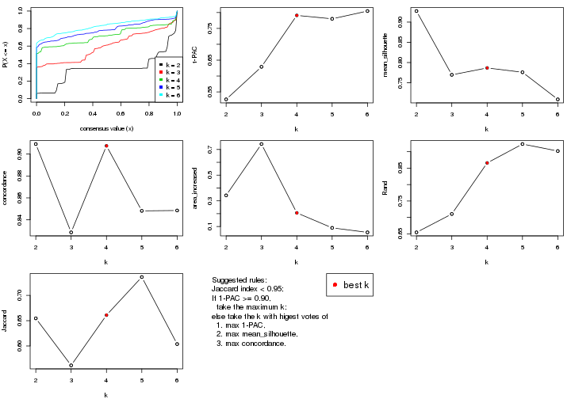
The numeric values for all these statistics can be obtained by get_stats().
get_stats(res)
#> k 1-PAC mean_silhouette concordance area_increased Rand Jaccard
#> 2 2 0.527 0.927 0.909 0.3426 0.655 0.655
#> 3 3 0.629 0.770 0.829 0.7421 0.711 0.562
#> 4 4 0.791 0.787 0.907 0.2063 0.866 0.661
#> 5 5 0.780 0.776 0.848 0.0895 0.923 0.736
#> 6 6 0.805 0.709 0.849 0.0545 0.902 0.604
suggest_best_k() suggests the best \(k\) based on these statistics. The rules are as follows:
suggest_best_k(res)
#> [1] 4
Following shows the table of the partitions (You need to click the show/hide
code output link to see it). The membership matrix (columns with name p*)
is inferred by
clue::cl_consensus()
function with the SE method. Basically the value in the membership matrix
represents the probability to belong to a certain group. The finall class
label for an item is determined with the group with highest probability it
belongs to.
In get_classes() function, the entropy is calculated from the membership
matrix and the silhouette score is calculated from the consensus matrix.
cbind(get_classes(res, k = 2), get_membership(res, k = 2))
#> class entropy silhouette p1 p2
#> GSM771247 1 0.0000 0.927 1.000 0.000
#> GSM771246 1 0.0000 0.927 1.000 0.000
#> GSM771245 1 0.0938 0.922 0.988 0.012
#> GSM771169 1 0.0938 0.922 0.988 0.012
#> GSM771171 1 0.5842 0.831 0.860 0.140
#> GSM771175 1 0.3431 0.928 0.936 0.064
#> GSM771172 1 0.0000 0.927 1.000 0.000
#> GSM771174 1 0.3431 0.928 0.936 0.064
#> GSM771178 1 0.0938 0.922 0.988 0.012
#> GSM771176 1 0.0000 0.927 1.000 0.000
#> GSM771181 1 0.5946 0.828 0.856 0.144
#> GSM771179 1 0.0000 0.927 1.000 0.000
#> GSM771184 1 0.0000 0.927 1.000 0.000
#> GSM771182 1 0.3431 0.928 0.936 0.064
#> GSM771185 1 0.3431 0.928 0.936 0.064
#> GSM771186 1 0.3431 0.928 0.936 0.064
#> GSM771188 1 0.0000 0.927 1.000 0.000
#> GSM771193 1 0.5946 0.828 0.856 0.144
#> GSM771192 1 0.3431 0.928 0.936 0.064
#> GSM771189 1 0.4690 0.895 0.900 0.100
#> GSM771194 1 0.3431 0.928 0.936 0.064
#> GSM771191 1 0.3431 0.928 0.936 0.064
#> GSM771202 1 0.0000 0.927 1.000 0.000
#> GSM771200 1 0.0000 0.927 1.000 0.000
#> GSM771206 1 0.3431 0.928 0.936 0.064
#> GSM771208 1 0.3431 0.928 0.936 0.064
#> GSM771207 1 0.0938 0.922 0.988 0.012
#> GSM771209 1 0.0000 0.927 1.000 0.000
#> GSM771211 1 0.0000 0.927 1.000 0.000
#> GSM771212 1 0.3431 0.928 0.936 0.064
#> GSM771214 1 0.3431 0.928 0.936 0.064
#> GSM771213 1 0.3431 0.928 0.936 0.064
#> GSM771216 1 0.3431 0.928 0.936 0.064
#> GSM771217 1 0.3431 0.928 0.936 0.064
#> GSM771219 1 0.5946 0.828 0.856 0.144
#> GSM771218 1 0.3274 0.928 0.940 0.060
#> GSM771222 1 0.0000 0.927 1.000 0.000
#> GSM771220 1 0.0938 0.922 0.988 0.012
#> GSM771226 1 0.5946 0.828 0.856 0.144
#> GSM771223 1 0.3431 0.928 0.936 0.064
#> GSM771225 1 0.3431 0.928 0.936 0.064
#> GSM771232 1 0.3431 0.928 0.936 0.064
#> GSM771235 1 0.5946 0.828 0.856 0.144
#> GSM771234 1 0.5946 0.828 0.856 0.144
#> GSM771242 1 0.5946 0.828 0.856 0.144
#> GSM771239 1 0.3431 0.928 0.936 0.064
#> GSM771240 1 0.3431 0.928 0.936 0.064
#> GSM771241 1 0.5946 0.828 0.856 0.144
#> GSM771197 1 0.5946 0.828 0.856 0.144
#> GSM771195 1 0.3431 0.928 0.936 0.064
#> GSM771198 1 0.5946 0.828 0.856 0.144
#> GSM771199 1 0.5946 0.828 0.856 0.144
#> GSM771204 1 0.3431 0.928 0.936 0.064
#> GSM771205 1 0.0000 0.927 1.000 0.000
#> GSM771229 1 0.0000 0.927 1.000 0.000
#> GSM771227 1 0.2778 0.929 0.952 0.048
#> GSM771230 1 0.3431 0.928 0.936 0.064
#> GSM771231 1 0.3431 0.928 0.936 0.064
#> GSM771238 1 0.3431 0.928 0.936 0.064
#> GSM771236 1 0.0000 0.927 1.000 0.000
#> GSM771154 1 0.3431 0.928 0.936 0.064
#> GSM771152 1 0.3431 0.928 0.936 0.064
#> GSM771156 1 0.3114 0.929 0.944 0.056
#> GSM771157 1 0.3431 0.928 0.936 0.064
#> GSM771155 1 0.3431 0.928 0.936 0.064
#> GSM771160 1 0.5946 0.828 0.856 0.144
#> GSM771161 1 0.5946 0.828 0.856 0.144
#> GSM771159 1 0.3431 0.928 0.936 0.064
#> GSM771165 1 0.3431 0.928 0.936 0.064
#> GSM771166 1 0.0938 0.922 0.988 0.012
#> GSM771167 1 0.3431 0.928 0.936 0.064
#> GSM771168 1 0.0000 0.927 1.000 0.000
#> GSM771163 1 0.2423 0.929 0.960 0.040
#> GSM771244 2 0.5946 0.998 0.144 0.856
#> GSM771170 1 0.0000 0.927 1.000 0.000
#> GSM771173 2 0.5946 0.998 0.144 0.856
#> GSM771177 2 0.5946 0.998 0.144 0.856
#> GSM771180 2 0.5946 0.998 0.144 0.856
#> GSM771183 2 0.5946 0.998 0.144 0.856
#> GSM771187 2 0.5946 0.998 0.144 0.856
#> GSM771190 2 0.5946 0.998 0.144 0.856
#> GSM771201 2 0.5946 0.998 0.144 0.856
#> GSM771210 2 0.6623 0.964 0.172 0.828
#> GSM771215 2 0.5946 0.998 0.144 0.856
#> GSM771221 2 0.5946 0.998 0.144 0.856
#> GSM771224 1 0.0938 0.922 0.988 0.012
#> GSM771233 2 0.5946 0.998 0.144 0.856
#> GSM771243 2 0.5946 0.998 0.144 0.856
#> GSM771196 2 0.5946 0.998 0.144 0.856
#> GSM771203 2 0.5946 0.998 0.144 0.856
#> GSM771228 2 0.5946 0.998 0.144 0.856
#> GSM771237 2 0.5946 0.998 0.144 0.856
#> GSM771153 2 0.5946 0.998 0.144 0.856
#> GSM771158 2 0.5946 0.998 0.144 0.856
#> GSM771162 2 0.5946 0.998 0.144 0.856
#> GSM771164 2 0.5946 0.998 0.144 0.856
cbind(get_classes(res, k = 3), get_membership(res, k = 3))
#> class entropy silhouette p1 p2 p3
#> GSM771247 3 0.6308 -0.678 0.492 0.000 0.508
#> GSM771246 1 0.6154 0.865 0.592 0.000 0.408
#> GSM771245 1 0.5706 0.899 0.680 0.000 0.320
#> GSM771169 3 0.1031 0.755 0.024 0.000 0.976
#> GSM771171 3 0.4002 0.688 0.160 0.000 0.840
#> GSM771175 3 0.5529 0.181 0.296 0.000 0.704
#> GSM771172 3 0.0000 0.756 0.000 0.000 1.000
#> GSM771174 1 0.5859 0.920 0.656 0.000 0.344
#> GSM771178 3 0.1031 0.755 0.024 0.000 0.976
#> GSM771176 1 0.5882 0.918 0.652 0.000 0.348
#> GSM771181 3 0.5859 0.603 0.344 0.000 0.656
#> GSM771179 3 0.3482 0.600 0.128 0.000 0.872
#> GSM771184 3 0.0000 0.756 0.000 0.000 1.000
#> GSM771182 3 0.2165 0.722 0.064 0.000 0.936
#> GSM771185 3 0.5058 0.376 0.244 0.000 0.756
#> GSM771186 3 0.2165 0.722 0.064 0.000 0.936
#> GSM771188 3 0.2261 0.718 0.068 0.000 0.932
#> GSM771193 3 0.5835 0.605 0.340 0.000 0.660
#> GSM771192 3 0.2165 0.722 0.064 0.000 0.936
#> GSM771189 3 0.7666 0.470 0.192 0.128 0.680
#> GSM771194 1 0.5859 0.920 0.656 0.000 0.344
#> GSM771191 1 0.5859 0.920 0.656 0.000 0.344
#> GSM771202 1 0.6154 0.865 0.592 0.000 0.408
#> GSM771200 1 0.6154 0.865 0.592 0.000 0.408
#> GSM771206 1 0.5859 0.920 0.656 0.000 0.344
#> GSM771208 1 0.5859 0.920 0.656 0.000 0.344
#> GSM771207 3 0.1031 0.755 0.024 0.000 0.976
#> GSM771209 1 0.6154 0.865 0.592 0.000 0.408
#> GSM771211 3 0.0000 0.756 0.000 0.000 1.000
#> GSM771212 1 0.5859 0.920 0.656 0.000 0.344
#> GSM771214 1 0.5859 0.920 0.656 0.000 0.344
#> GSM771213 1 0.5859 0.920 0.656 0.000 0.344
#> GSM771216 1 0.6111 0.857 0.604 0.000 0.396
#> GSM771217 1 0.5859 0.920 0.656 0.000 0.344
#> GSM771219 3 0.5810 0.607 0.336 0.000 0.664
#> GSM771218 1 0.5859 0.920 0.656 0.000 0.344
#> GSM771222 3 0.0000 0.756 0.000 0.000 1.000
#> GSM771220 3 0.1031 0.755 0.024 0.000 0.976
#> GSM771226 3 0.5859 0.603 0.344 0.000 0.656
#> GSM771223 1 0.5859 0.920 0.656 0.000 0.344
#> GSM771225 3 0.1753 0.733 0.048 0.000 0.952
#> GSM771232 3 0.4452 0.518 0.192 0.000 0.808
#> GSM771235 3 0.5859 0.603 0.344 0.000 0.656
#> GSM771234 3 0.5859 0.603 0.344 0.000 0.656
#> GSM771242 3 0.5859 0.603 0.344 0.000 0.656
#> GSM771239 3 0.2165 0.722 0.064 0.000 0.936
#> GSM771240 1 0.5859 0.920 0.656 0.000 0.344
#> GSM771241 3 0.5859 0.603 0.344 0.000 0.656
#> GSM771197 3 0.5859 0.603 0.344 0.000 0.656
#> GSM771195 3 0.1163 0.745 0.028 0.000 0.972
#> GSM771198 3 0.5859 0.603 0.344 0.000 0.656
#> GSM771199 3 0.5859 0.603 0.344 0.000 0.656
#> GSM771204 1 0.5859 0.920 0.656 0.000 0.344
#> GSM771205 1 0.6154 0.865 0.592 0.000 0.408
#> GSM771229 3 0.0000 0.756 0.000 0.000 1.000
#> GSM771227 3 0.0237 0.755 0.004 0.000 0.996
#> GSM771230 3 0.4346 0.535 0.184 0.000 0.816
#> GSM771231 3 0.2165 0.722 0.064 0.000 0.936
#> GSM771238 1 0.5859 0.920 0.656 0.000 0.344
#> GSM771236 3 0.0000 0.756 0.000 0.000 1.000
#> GSM771154 1 0.5859 0.920 0.656 0.000 0.344
#> GSM771152 3 0.4452 0.518 0.192 0.000 0.808
#> GSM771156 3 0.0000 0.756 0.000 0.000 1.000
#> GSM771157 1 0.5859 0.920 0.656 0.000 0.344
#> GSM771155 1 0.6307 0.665 0.512 0.000 0.488
#> GSM771160 3 0.5859 0.603 0.344 0.000 0.656
#> GSM771161 1 0.6235 0.179 0.564 0.000 0.436
#> GSM771159 3 0.1289 0.743 0.032 0.000 0.968
#> GSM771165 3 0.4121 0.568 0.168 0.000 0.832
#> GSM771166 3 0.1031 0.755 0.024 0.000 0.976
#> GSM771167 3 0.2165 0.722 0.064 0.000 0.936
#> GSM771168 3 0.0000 0.756 0.000 0.000 1.000
#> GSM771163 3 0.0237 0.755 0.004 0.000 0.996
#> GSM771244 2 0.0000 0.997 0.000 1.000 0.000
#> GSM771170 3 0.0000 0.756 0.000 0.000 1.000
#> GSM771173 2 0.0000 0.997 0.000 1.000 0.000
#> GSM771177 2 0.0000 0.997 0.000 1.000 0.000
#> GSM771180 2 0.1643 0.940 0.000 0.956 0.044
#> GSM771183 2 0.0000 0.997 0.000 1.000 0.000
#> GSM771187 2 0.0000 0.997 0.000 1.000 0.000
#> GSM771190 2 0.0000 0.997 0.000 1.000 0.000
#> GSM771201 2 0.0000 0.997 0.000 1.000 0.000
#> GSM771210 1 0.5859 0.303 0.656 0.344 0.000
#> GSM771215 2 0.0000 0.997 0.000 1.000 0.000
#> GSM771221 2 0.0000 0.997 0.000 1.000 0.000
#> GSM771224 3 0.1031 0.755 0.024 0.000 0.976
#> GSM771233 2 0.0000 0.997 0.000 1.000 0.000
#> GSM771243 2 0.0000 0.997 0.000 1.000 0.000
#> GSM771196 2 0.0000 0.997 0.000 1.000 0.000
#> GSM771203 2 0.0000 0.997 0.000 1.000 0.000
#> GSM771228 2 0.0000 0.997 0.000 1.000 0.000
#> GSM771237 2 0.0000 0.997 0.000 1.000 0.000
#> GSM771153 2 0.0000 0.997 0.000 1.000 0.000
#> GSM771158 2 0.0000 0.997 0.000 1.000 0.000
#> GSM771162 2 0.0000 0.997 0.000 1.000 0.000
#> GSM771164 2 0.0000 0.997 0.000 1.000 0.000
cbind(get_classes(res, k = 4), get_membership(res, k = 4))
#> class entropy silhouette p1 p2 p3 p4
#> GSM771247 4 0.1767 0.8140 0.044 0.000 0.012 0.944
#> GSM771246 4 0.5659 0.4555 0.368 0.000 0.032 0.600
#> GSM771245 4 0.0000 0.8346 0.000 0.000 0.000 1.000
#> GSM771169 1 0.1022 0.8335 0.968 0.000 0.032 0.000
#> GSM771171 1 0.1022 0.8335 0.968 0.000 0.032 0.000
#> GSM771175 4 0.4888 0.1512 0.412 0.000 0.000 0.588
#> GSM771172 1 0.1022 0.8335 0.968 0.000 0.032 0.000
#> GSM771174 4 0.0469 0.8314 0.012 0.000 0.000 0.988
#> GSM771178 1 0.1022 0.8335 0.968 0.000 0.032 0.000
#> GSM771176 4 0.3610 0.6694 0.200 0.000 0.000 0.800
#> GSM771181 3 0.0000 0.9233 0.000 0.000 1.000 0.000
#> GSM771179 1 0.1022 0.8335 0.968 0.000 0.032 0.000
#> GSM771184 1 0.0000 0.8383 1.000 0.000 0.000 0.000
#> GSM771182 1 0.4746 0.4914 0.632 0.000 0.000 0.368
#> GSM771185 4 0.4955 -0.0331 0.444 0.000 0.000 0.556
#> GSM771186 1 0.0000 0.8383 1.000 0.000 0.000 0.000
#> GSM771188 1 0.3569 0.7096 0.804 0.000 0.000 0.196
#> GSM771193 1 0.4998 0.1827 0.512 0.000 0.488 0.000
#> GSM771192 1 0.4103 0.6382 0.744 0.000 0.000 0.256
#> GSM771189 1 0.4746 0.4914 0.632 0.000 0.000 0.368
#> GSM771194 4 0.0000 0.8346 0.000 0.000 0.000 1.000
#> GSM771191 4 0.0000 0.8346 0.000 0.000 0.000 1.000
#> GSM771202 4 0.5659 0.4555 0.368 0.000 0.032 0.600
#> GSM771200 4 0.5659 0.4555 0.368 0.000 0.032 0.600
#> GSM771206 4 0.0000 0.8346 0.000 0.000 0.000 1.000
#> GSM771208 4 0.1022 0.8242 0.032 0.000 0.000 0.968
#> GSM771207 1 0.1022 0.8335 0.968 0.000 0.032 0.000
#> GSM771209 4 0.5659 0.4555 0.368 0.000 0.032 0.600
#> GSM771211 1 0.0469 0.8371 0.988 0.000 0.012 0.000
#> GSM771212 4 0.1022 0.8242 0.032 0.000 0.000 0.968
#> GSM771214 4 0.1022 0.8242 0.032 0.000 0.000 0.968
#> GSM771213 4 0.0000 0.8346 0.000 0.000 0.000 1.000
#> GSM771216 4 0.2081 0.7918 0.084 0.000 0.000 0.916
#> GSM771217 4 0.0000 0.8346 0.000 0.000 0.000 1.000
#> GSM771219 3 0.3569 0.7154 0.196 0.000 0.804 0.000
#> GSM771218 4 0.0000 0.8346 0.000 0.000 0.000 1.000
#> GSM771222 1 0.1022 0.8335 0.968 0.000 0.032 0.000
#> GSM771220 1 0.1022 0.8335 0.968 0.000 0.032 0.000
#> GSM771226 3 0.0000 0.9233 0.000 0.000 1.000 0.000
#> GSM771223 4 0.0000 0.8346 0.000 0.000 0.000 1.000
#> GSM771225 1 0.0000 0.8383 1.000 0.000 0.000 0.000
#> GSM771232 1 0.0000 0.8383 1.000 0.000 0.000 0.000
#> GSM771235 1 0.4855 0.4134 0.600 0.000 0.400 0.000
#> GSM771234 3 0.0000 0.9233 0.000 0.000 1.000 0.000
#> GSM771242 3 0.0000 0.9233 0.000 0.000 1.000 0.000
#> GSM771239 1 0.3726 0.6837 0.788 0.000 0.000 0.212
#> GSM771240 4 0.0000 0.8346 0.000 0.000 0.000 1.000
#> GSM771241 3 0.0000 0.9233 0.000 0.000 1.000 0.000
#> GSM771197 3 0.0000 0.9233 0.000 0.000 1.000 0.000
#> GSM771195 1 0.0000 0.8383 1.000 0.000 0.000 0.000
#> GSM771198 3 0.0000 0.9233 0.000 0.000 1.000 0.000
#> GSM771199 3 0.0000 0.9233 0.000 0.000 1.000 0.000
#> GSM771204 4 0.0000 0.8346 0.000 0.000 0.000 1.000
#> GSM771205 4 0.5659 0.4555 0.368 0.000 0.032 0.600
#> GSM771229 1 0.1022 0.8335 0.968 0.000 0.032 0.000
#> GSM771227 1 0.0000 0.8383 1.000 0.000 0.000 0.000
#> GSM771230 1 0.4761 0.4881 0.628 0.000 0.000 0.372
#> GSM771231 1 0.4855 0.4625 0.600 0.000 0.000 0.400
#> GSM771238 4 0.0000 0.8346 0.000 0.000 0.000 1.000
#> GSM771236 1 0.0000 0.8383 1.000 0.000 0.000 0.000
#> GSM771154 4 0.0000 0.8346 0.000 0.000 0.000 1.000
#> GSM771152 1 0.4746 0.4914 0.632 0.000 0.000 0.368
#> GSM771156 1 0.1022 0.8264 0.968 0.000 0.000 0.032
#> GSM771157 4 0.0000 0.8346 0.000 0.000 0.000 1.000
#> GSM771155 4 0.3356 0.6946 0.176 0.000 0.000 0.824
#> GSM771160 3 0.0000 0.9233 0.000 0.000 1.000 0.000
#> GSM771161 3 0.7634 0.1207 0.208 0.000 0.424 0.368
#> GSM771159 1 0.0000 0.8383 1.000 0.000 0.000 0.000
#> GSM771165 1 0.4746 0.4914 0.632 0.000 0.000 0.368
#> GSM771166 1 0.1022 0.8335 0.968 0.000 0.032 0.000
#> GSM771167 1 0.4855 0.4625 0.600 0.000 0.000 0.400
#> GSM771168 1 0.1022 0.8335 0.968 0.000 0.032 0.000
#> GSM771163 1 0.0000 0.8383 1.000 0.000 0.000 0.000
#> GSM771244 2 0.0000 0.9990 0.000 1.000 0.000 0.000
#> GSM771170 1 0.0000 0.8383 1.000 0.000 0.000 0.000
#> GSM771173 2 0.0000 0.9990 0.000 1.000 0.000 0.000
#> GSM771177 2 0.0000 0.9990 0.000 1.000 0.000 0.000
#> GSM771180 2 0.0592 0.9801 0.016 0.984 0.000 0.000
#> GSM771183 2 0.0000 0.9990 0.000 1.000 0.000 0.000
#> GSM771187 2 0.0000 0.9990 0.000 1.000 0.000 0.000
#> GSM771190 2 0.0000 0.9990 0.000 1.000 0.000 0.000
#> GSM771201 2 0.0000 0.9990 0.000 1.000 0.000 0.000
#> GSM771210 4 0.0000 0.8346 0.000 0.000 0.000 1.000
#> GSM771215 2 0.0000 0.9990 0.000 1.000 0.000 0.000
#> GSM771221 2 0.0000 0.9990 0.000 1.000 0.000 0.000
#> GSM771224 1 0.0707 0.8359 0.980 0.000 0.020 0.000
#> GSM771233 2 0.0000 0.9990 0.000 1.000 0.000 0.000
#> GSM771243 2 0.0000 0.9990 0.000 1.000 0.000 0.000
#> GSM771196 2 0.0000 0.9990 0.000 1.000 0.000 0.000
#> GSM771203 2 0.0000 0.9990 0.000 1.000 0.000 0.000
#> GSM771228 2 0.0000 0.9990 0.000 1.000 0.000 0.000
#> GSM771237 2 0.0000 0.9990 0.000 1.000 0.000 0.000
#> GSM771153 2 0.0000 0.9990 0.000 1.000 0.000 0.000
#> GSM771158 2 0.0000 0.9990 0.000 1.000 0.000 0.000
#> GSM771162 2 0.0000 0.9990 0.000 1.000 0.000 0.000
#> GSM771164 2 0.0000 0.9990 0.000 1.000 0.000 0.000
cbind(get_classes(res, k = 5), get_membership(res, k = 5))
#> class entropy silhouette p1 p2 p3 p4 p5
#> GSM771247 1 0.4015 0.436 0.652 0.000 0.000 0.000 0.348
#> GSM771246 1 0.4604 0.566 0.560 0.000 0.000 0.428 0.012
#> GSM771245 1 0.0404 0.708 0.988 0.000 0.000 0.012 0.000
#> GSM771169 5 0.3452 0.750 0.000 0.000 0.000 0.244 0.756
#> GSM771171 5 0.3452 0.750 0.000 0.000 0.000 0.244 0.756
#> GSM771175 4 0.6067 0.766 0.276 0.000 0.000 0.560 0.164
#> GSM771172 5 0.4242 0.657 0.000 0.000 0.000 0.428 0.572
#> GSM771174 4 0.5095 0.763 0.400 0.000 0.000 0.560 0.040
#> GSM771178 5 0.4242 0.657 0.000 0.000 0.000 0.428 0.572
#> GSM771176 1 0.0693 0.707 0.980 0.000 0.000 0.012 0.008
#> GSM771181 3 0.0000 0.993 0.000 0.000 1.000 0.000 0.000
#> GSM771179 5 0.4242 0.657 0.000 0.000 0.000 0.428 0.572
#> GSM771184 5 0.0000 0.799 0.000 0.000 0.000 0.000 1.000
#> GSM771182 5 0.1043 0.777 0.040 0.000 0.000 0.000 0.960
#> GSM771185 4 0.4974 0.759 0.408 0.000 0.000 0.560 0.032
#> GSM771186 5 0.0000 0.799 0.000 0.000 0.000 0.000 1.000
#> GSM771188 5 0.3628 0.659 0.216 0.000 0.000 0.012 0.772
#> GSM771193 5 0.4339 0.510 0.000 0.000 0.336 0.012 0.652
#> GSM771192 5 0.4152 0.357 0.012 0.000 0.000 0.296 0.692
#> GSM771189 4 0.6080 0.763 0.272 0.000 0.000 0.560 0.168
#> GSM771194 1 0.0404 0.708 0.988 0.000 0.000 0.012 0.000
#> GSM771191 1 0.0000 0.709 1.000 0.000 0.000 0.000 0.000
#> GSM771202 1 0.4604 0.566 0.560 0.000 0.000 0.428 0.012
#> GSM771200 1 0.4604 0.566 0.560 0.000 0.000 0.428 0.012
#> GSM771206 1 0.0000 0.709 1.000 0.000 0.000 0.000 0.000
#> GSM771208 1 0.4555 0.604 0.636 0.000 0.000 0.344 0.020
#> GSM771207 5 0.4227 0.663 0.000 0.000 0.000 0.420 0.580
#> GSM771209 1 0.4604 0.566 0.560 0.000 0.000 0.428 0.012
#> GSM771211 5 0.0000 0.799 0.000 0.000 0.000 0.000 1.000
#> GSM771212 1 0.4114 0.592 0.776 0.000 0.000 0.060 0.164
#> GSM771214 1 0.3601 0.621 0.820 0.000 0.000 0.052 0.128
#> GSM771213 1 0.0000 0.709 1.000 0.000 0.000 0.000 0.000
#> GSM771216 4 0.6300 0.706 0.348 0.000 0.000 0.488 0.164
#> GSM771217 1 0.0000 0.709 1.000 0.000 0.000 0.000 0.000
#> GSM771219 3 0.1408 0.932 0.000 0.000 0.948 0.008 0.044
#> GSM771218 1 0.3210 0.662 0.788 0.000 0.000 0.212 0.000
#> GSM771222 5 0.3274 0.759 0.000 0.000 0.000 0.220 0.780
#> GSM771220 5 0.4242 0.657 0.000 0.000 0.000 0.428 0.572
#> GSM771226 3 0.0000 0.993 0.000 0.000 1.000 0.000 0.000
#> GSM771223 1 0.0000 0.709 1.000 0.000 0.000 0.000 0.000
#> GSM771225 5 0.0000 0.799 0.000 0.000 0.000 0.000 1.000
#> GSM771232 5 0.3109 0.735 0.000 0.000 0.000 0.200 0.800
#> GSM771235 5 0.3534 0.646 0.000 0.000 0.256 0.000 0.744
#> GSM771234 3 0.0000 0.993 0.000 0.000 1.000 0.000 0.000
#> GSM771242 3 0.0000 0.993 0.000 0.000 1.000 0.000 0.000
#> GSM771239 5 0.0404 0.790 0.012 0.000 0.000 0.000 0.988
#> GSM771240 4 0.4242 0.730 0.428 0.000 0.000 0.572 0.000
#> GSM771241 3 0.0000 0.993 0.000 0.000 1.000 0.000 0.000
#> GSM771197 3 0.0000 0.993 0.000 0.000 1.000 0.000 0.000
#> GSM771195 5 0.0000 0.799 0.000 0.000 0.000 0.000 1.000
#> GSM771198 3 0.0000 0.993 0.000 0.000 1.000 0.000 0.000
#> GSM771199 3 0.0000 0.993 0.000 0.000 1.000 0.000 0.000
#> GSM771204 1 0.0000 0.709 1.000 0.000 0.000 0.000 0.000
#> GSM771205 1 0.4604 0.566 0.560 0.000 0.000 0.428 0.012
#> GSM771229 5 0.4242 0.657 0.000 0.000 0.000 0.428 0.572
#> GSM771227 5 0.0000 0.799 0.000 0.000 0.000 0.000 1.000
#> GSM771230 4 0.6040 0.770 0.284 0.000 0.000 0.560 0.156
#> GSM771231 4 0.4262 0.734 0.440 0.000 0.000 0.560 0.000
#> GSM771238 1 0.0404 0.708 0.988 0.000 0.000 0.012 0.000
#> GSM771236 5 0.0000 0.799 0.000 0.000 0.000 0.000 1.000
#> GSM771154 1 0.0000 0.709 1.000 0.000 0.000 0.000 0.000
#> GSM771152 5 0.3274 0.576 0.220 0.000 0.000 0.000 0.780
#> GSM771156 5 0.0000 0.799 0.000 0.000 0.000 0.000 1.000
#> GSM771157 1 0.3508 0.652 0.748 0.000 0.000 0.252 0.000
#> GSM771155 1 0.3837 0.365 0.692 0.000 0.000 0.000 0.308
#> GSM771160 3 0.0000 0.993 0.000 0.000 1.000 0.000 0.000
#> GSM771161 4 0.6147 0.433 0.168 0.000 0.288 0.544 0.000
#> GSM771159 5 0.0000 0.799 0.000 0.000 0.000 0.000 1.000
#> GSM771165 4 0.6054 0.769 0.280 0.000 0.000 0.560 0.160
#> GSM771166 5 0.0000 0.799 0.000 0.000 0.000 0.000 1.000
#> GSM771167 4 0.4262 0.734 0.440 0.000 0.000 0.560 0.000
#> GSM771168 5 0.4242 0.657 0.000 0.000 0.000 0.428 0.572
#> GSM771163 5 0.0000 0.799 0.000 0.000 0.000 0.000 1.000
#> GSM771244 2 0.0000 1.000 0.000 1.000 0.000 0.000 0.000
#> GSM771170 5 0.2773 0.773 0.000 0.000 0.000 0.164 0.836
#> GSM771173 2 0.0000 1.000 0.000 1.000 0.000 0.000 0.000
#> GSM771177 2 0.0000 1.000 0.000 1.000 0.000 0.000 0.000
#> GSM771180 4 0.5795 0.193 0.000 0.412 0.000 0.496 0.092
#> GSM771183 2 0.0000 1.000 0.000 1.000 0.000 0.000 0.000
#> GSM771187 2 0.0000 1.000 0.000 1.000 0.000 0.000 0.000
#> GSM771190 2 0.0000 1.000 0.000 1.000 0.000 0.000 0.000
#> GSM771201 2 0.0000 1.000 0.000 1.000 0.000 0.000 0.000
#> GSM771210 1 0.0880 0.673 0.968 0.000 0.000 0.032 0.000
#> GSM771215 2 0.0000 1.000 0.000 1.000 0.000 0.000 0.000
#> GSM771221 2 0.0000 1.000 0.000 1.000 0.000 0.000 0.000
#> GSM771224 5 0.0000 0.799 0.000 0.000 0.000 0.000 1.000
#> GSM771233 2 0.0000 1.000 0.000 1.000 0.000 0.000 0.000
#> GSM771243 2 0.0000 1.000 0.000 1.000 0.000 0.000 0.000
#> GSM771196 2 0.0000 1.000 0.000 1.000 0.000 0.000 0.000
#> GSM771203 2 0.0000 1.000 0.000 1.000 0.000 0.000 0.000
#> GSM771228 2 0.0000 1.000 0.000 1.000 0.000 0.000 0.000
#> GSM771237 2 0.0000 1.000 0.000 1.000 0.000 0.000 0.000
#> GSM771153 2 0.0000 1.000 0.000 1.000 0.000 0.000 0.000
#> GSM771158 2 0.0000 1.000 0.000 1.000 0.000 0.000 0.000
#> GSM771162 2 0.0000 1.000 0.000 1.000 0.000 0.000 0.000
#> GSM771164 2 0.0000 1.000 0.000 1.000 0.000 0.000 0.000
cbind(get_classes(res, k = 6), get_membership(res, k = 6))
#> class entropy silhouette p1 p2 p3 p4 p5 p6
#> GSM771247 4 0.5418 0.317 0.000 0.000 0.000 0.492 0.388 0.120
#> GSM771246 1 0.0000 0.850 1.000 0.000 0.000 0.000 0.000 0.000
#> GSM771245 4 0.0000 0.565 0.000 0.000 0.000 1.000 0.000 0.000
#> GSM771169 5 0.5449 0.310 0.368 0.000 0.000 0.000 0.504 0.128
#> GSM771171 5 0.5449 0.310 0.368 0.000 0.000 0.000 0.504 0.128
#> GSM771175 6 0.2178 0.765 0.000 0.000 0.000 0.000 0.132 0.868
#> GSM771172 1 0.0000 0.850 1.000 0.000 0.000 0.000 0.000 0.000
#> GSM771174 6 0.2357 0.741 0.000 0.000 0.000 0.116 0.012 0.872
#> GSM771178 1 0.2278 0.788 0.868 0.000 0.000 0.004 0.000 0.128
#> GSM771176 4 0.0000 0.565 0.000 0.000 0.000 1.000 0.000 0.000
#> GSM771181 3 0.0000 0.940 0.000 0.000 1.000 0.000 0.000 0.000
#> GSM771179 1 0.0000 0.850 1.000 0.000 0.000 0.000 0.000 0.000
#> GSM771184 5 0.0937 0.799 0.000 0.000 0.000 0.000 0.960 0.040
#> GSM771182 5 0.0713 0.794 0.000 0.000 0.000 0.000 0.972 0.028
#> GSM771185 6 0.2234 0.736 0.000 0.000 0.000 0.124 0.004 0.872
#> GSM771186 5 0.0000 0.808 0.000 0.000 0.000 0.000 1.000 0.000
#> GSM771188 4 0.3869 -0.305 0.000 0.000 0.000 0.500 0.500 0.000
#> GSM771193 5 0.6775 0.335 0.000 0.000 0.120 0.324 0.452 0.104
#> GSM771192 5 0.3390 0.461 0.000 0.000 0.000 0.000 0.704 0.296
#> GSM771189 6 0.2219 0.762 0.000 0.000 0.000 0.000 0.136 0.864
#> GSM771194 4 0.0000 0.565 0.000 0.000 0.000 1.000 0.000 0.000
#> GSM771191 4 0.4368 0.614 0.056 0.000 0.000 0.672 0.000 0.272
#> GSM771202 1 0.0000 0.850 1.000 0.000 0.000 0.000 0.000 0.000
#> GSM771200 1 0.0000 0.850 1.000 0.000 0.000 0.000 0.000 0.000
#> GSM771206 4 0.4368 0.614 0.056 0.000 0.000 0.672 0.000 0.272
#> GSM771208 4 0.5389 0.275 0.416 0.000 0.000 0.500 0.020 0.064
#> GSM771207 1 0.3412 0.741 0.808 0.000 0.000 0.000 0.064 0.128
#> GSM771209 1 0.3684 0.214 0.628 0.000 0.000 0.372 0.000 0.000
#> GSM771211 5 0.0790 0.800 0.000 0.000 0.000 0.000 0.968 0.032
#> GSM771212 4 0.7404 0.343 0.288 0.000 0.000 0.364 0.136 0.212
#> GSM771214 1 0.7413 -0.294 0.352 0.000 0.000 0.264 0.124 0.260
#> GSM771213 4 0.4368 0.614 0.056 0.000 0.000 0.672 0.000 0.272
#> GSM771216 6 0.3395 0.723 0.000 0.000 0.000 0.060 0.132 0.808
#> GSM771217 4 0.3531 0.569 0.000 0.000 0.000 0.672 0.000 0.328
#> GSM771219 3 0.5013 0.688 0.148 0.000 0.696 0.000 0.028 0.128
#> GSM771218 4 0.4639 0.558 0.256 0.000 0.000 0.660 0.000 0.084
#> GSM771222 5 0.3920 0.694 0.120 0.000 0.000 0.000 0.768 0.112
#> GSM771220 1 0.2003 0.795 0.884 0.000 0.000 0.000 0.000 0.116
#> GSM771226 3 0.0000 0.940 0.000 0.000 1.000 0.000 0.000 0.000
#> GSM771223 4 0.3266 0.603 0.000 0.000 0.000 0.728 0.000 0.272
#> GSM771225 5 0.0000 0.808 0.000 0.000 0.000 0.000 1.000 0.000
#> GSM771232 1 0.2912 0.665 0.784 0.000 0.000 0.000 0.216 0.000
#> GSM771235 5 0.2996 0.656 0.000 0.000 0.228 0.000 0.772 0.000
#> GSM771234 3 0.0000 0.940 0.000 0.000 1.000 0.000 0.000 0.000
#> GSM771242 3 0.2135 0.876 0.000 0.000 0.872 0.000 0.000 0.128
#> GSM771239 5 0.0000 0.808 0.000 0.000 0.000 0.000 1.000 0.000
#> GSM771240 6 0.3847 0.386 0.000 0.000 0.000 0.456 0.000 0.544
#> GSM771241 3 0.2135 0.876 0.000 0.000 0.872 0.000 0.000 0.128
#> GSM771197 3 0.0000 0.940 0.000 0.000 1.000 0.000 0.000 0.000
#> GSM771195 5 0.0000 0.808 0.000 0.000 0.000 0.000 1.000 0.000
#> GSM771198 3 0.0000 0.940 0.000 0.000 1.000 0.000 0.000 0.000
#> GSM771199 3 0.0000 0.940 0.000 0.000 1.000 0.000 0.000 0.000
#> GSM771204 4 0.3266 0.603 0.000 0.000 0.000 0.728 0.000 0.272
#> GSM771205 1 0.0000 0.850 1.000 0.000 0.000 0.000 0.000 0.000
#> GSM771229 1 0.0000 0.850 1.000 0.000 0.000 0.000 0.000 0.000
#> GSM771227 5 0.0000 0.808 0.000 0.000 0.000 0.000 1.000 0.000
#> GSM771230 6 0.2346 0.769 0.000 0.000 0.000 0.008 0.124 0.868
#> GSM771231 6 0.2135 0.731 0.000 0.000 0.000 0.128 0.000 0.872
#> GSM771238 4 0.0000 0.565 0.000 0.000 0.000 1.000 0.000 0.000
#> GSM771236 5 0.0000 0.808 0.000 0.000 0.000 0.000 1.000 0.000
#> GSM771154 4 0.4368 0.614 0.056 0.000 0.000 0.672 0.000 0.272
#> GSM771152 5 0.2883 0.579 0.000 0.000 0.000 0.000 0.788 0.212
#> GSM771156 5 0.0000 0.808 0.000 0.000 0.000 0.000 1.000 0.000
#> GSM771157 4 0.4931 0.473 0.324 0.000 0.000 0.592 0.000 0.084
#> GSM771155 5 0.6082 -0.358 0.000 0.000 0.000 0.356 0.372 0.272
#> GSM771160 3 0.0000 0.940 0.000 0.000 1.000 0.000 0.000 0.000
#> GSM771161 4 0.6289 -0.283 0.108 0.000 0.056 0.460 0.000 0.376
#> GSM771159 5 0.0000 0.808 0.000 0.000 0.000 0.000 1.000 0.000
#> GSM771165 6 0.2278 0.767 0.000 0.000 0.000 0.004 0.128 0.868
#> GSM771166 5 0.2135 0.759 0.000 0.000 0.000 0.000 0.872 0.128
#> GSM771167 6 0.2278 0.733 0.000 0.000 0.000 0.128 0.004 0.868
#> GSM771168 1 0.0000 0.850 1.000 0.000 0.000 0.000 0.000 0.000
#> GSM771163 5 0.0000 0.808 0.000 0.000 0.000 0.000 1.000 0.000
#> GSM771244 2 0.0000 1.000 0.000 1.000 0.000 0.000 0.000 0.000
#> GSM771170 5 0.3756 0.397 0.400 0.000 0.000 0.000 0.600 0.000
#> GSM771173 2 0.0000 1.000 0.000 1.000 0.000 0.000 0.000 0.000
#> GSM771177 2 0.0000 1.000 0.000 1.000 0.000 0.000 0.000 0.000
#> GSM771180 6 0.4957 0.227 0.000 0.412 0.000 0.000 0.068 0.520
#> GSM771183 2 0.0000 1.000 0.000 1.000 0.000 0.000 0.000 0.000
#> GSM771187 2 0.0000 1.000 0.000 1.000 0.000 0.000 0.000 0.000
#> GSM771190 2 0.0000 1.000 0.000 1.000 0.000 0.000 0.000 0.000
#> GSM771201 2 0.0000 1.000 0.000 1.000 0.000 0.000 0.000 0.000
#> GSM771210 4 0.3647 0.532 0.000 0.000 0.000 0.640 0.000 0.360
#> GSM771215 2 0.0000 1.000 0.000 1.000 0.000 0.000 0.000 0.000
#> GSM771221 2 0.0000 1.000 0.000 1.000 0.000 0.000 0.000 0.000
#> GSM771224 5 0.1714 0.778 0.000 0.000 0.000 0.000 0.908 0.092
#> GSM771233 2 0.0000 1.000 0.000 1.000 0.000 0.000 0.000 0.000
#> GSM771243 2 0.0000 1.000 0.000 1.000 0.000 0.000 0.000 0.000
#> GSM771196 2 0.0000 1.000 0.000 1.000 0.000 0.000 0.000 0.000
#> GSM771203 2 0.0000 1.000 0.000 1.000 0.000 0.000 0.000 0.000
#> GSM771228 2 0.0000 1.000 0.000 1.000 0.000 0.000 0.000 0.000
#> GSM771237 2 0.0000 1.000 0.000 1.000 0.000 0.000 0.000 0.000
#> GSM771153 2 0.0000 1.000 0.000 1.000 0.000 0.000 0.000 0.000
#> GSM771158 2 0.0000 1.000 0.000 1.000 0.000 0.000 0.000 0.000
#> GSM771162 2 0.0000 1.000 0.000 1.000 0.000 0.000 0.000 0.000
#> GSM771164 2 0.0000 1.000 0.000 1.000 0.000 0.000 0.000 0.000
Heatmaps for the consensus matrix. It visualizes the probability of two samples to be in a same group.
consensus_heatmap(res, k = 2)
consensus_heatmap(res, k = 3)
consensus_heatmap(res, k = 4)
consensus_heatmap(res, k = 5)
consensus_heatmap(res, k = 6)
Heatmaps for the membership of samples in all partitions to see how consistent they are:
membership_heatmap(res, k = 2)
membership_heatmap(res, k = 3)
membership_heatmap(res, k = 4)

membership_heatmap(res, k = 5)
membership_heatmap(res, k = 6)
As soon as we have had the classes for columns, we can look for signatures which are significantly different between classes which can be candidate marks for certain classes. Following are the heatmaps for signatures.
Signature heatmaps where rows are scaled:
get_signatures(res, k = 2)
get_signatures(res, k = 3)
#> Error: The width or height of the raster image is zero, maybe you forget to turn off the
#> previous graphic device or it was corrupted. Run `dev.off()` to close it.

get_signatures(res, k = 4)
#> Error: The width or height of the raster image is zero, maybe you forget to turn off the
#> previous graphic device or it was corrupted. Run `dev.off()` to close it.

get_signatures(res, k = 5)
#> Error: The width or height of the raster image is zero, maybe you forget to turn off the
#> previous graphic device or it was corrupted. Run `dev.off()` to close it.

get_signatures(res, k = 6)
#> Error: The width or height of the raster image is zero, maybe you forget to turn off the
#> previous graphic device or it was corrupted. Run `dev.off()` to close it.

Signature heatmaps where rows are not scaled:
get_signatures(res, k = 2, scale_rows = FALSE)
get_signatures(res, k = 3, scale_rows = FALSE)
get_signatures(res, k = 4, scale_rows = FALSE)
get_signatures(res, k = 5, scale_rows = FALSE)
get_signatures(res, k = 6, scale_rows = FALSE)
#> Error in mat[ceiling(1:nr/h_ratio), ceiling(1:nc/w_ratio), drop = FALSE]: subscript out of bounds

Compare the overlap of signatures from different k:
compare_signatures(res)
get_signature() returns a data frame invisibly. TO get the list of signatures, the function
call should be assigned to a variable explicitly. In following code, if plot argument is set
to FALSE, no heatmap is plotted while only the differential analysis is performed.
# code only for demonstration
tb = get_signature(res, k = ..., plot = FALSE)
An example of the output of tb is:
#> which_row fdr mean_1 mean_2 scaled_mean_1 scaled_mean_2 km
#> 1 38 0.042760348 8.373488 9.131774 -0.5533452 0.5164555 1
#> 2 40 0.018707592 7.106213 8.469186 -0.6173731 0.5762149 1
#> 3 55 0.019134737 10.221463 11.207825 -0.6159697 0.5749050 1
#> 4 59 0.006059896 5.921854 7.869574 -0.6899429 0.6439467 1
#> 5 60 0.018055526 8.928898 10.211722 -0.6204761 0.5791110 1
#> 6 98 0.009384629 15.714769 14.887706 0.6635654 -0.6193277 2
...
The columns in tb are:
which_row: row indices corresponding to the input matrix.fdr: FDR for the differential test. mean_x: The mean value in group x.scaled_mean_x: The mean value in group x after rows are scaled.km: Row groups if k-means clustering is applied to rows.UMAP plot which shows how samples are separated.
dimension_reduction(res, k = 2, method = "UMAP")
dimension_reduction(res, k = 3, method = "UMAP")
dimension_reduction(res, k = 4, method = "UMAP")
dimension_reduction(res, k = 5, method = "UMAP")
dimension_reduction(res, k = 6, method = "UMAP")
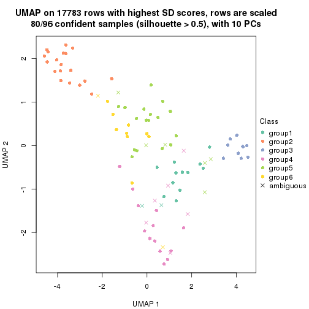
Following heatmap shows how subgroups are split when increasing k:
collect_classes(res)
Test correlation between subgroups and known annotations. If the known annotation is numeric, one-way ANOVA test is applied, and if the known annotation is discrete, chi-squared contingency table test is applied.
test_to_known_factors(res)
#> n specimen(p) disease.state(p) individual(p) tissue(p) k
#> SD:pam 96 3.64e-19 0.925 1.000 2.13e-10 2
#> SD:pam 90 5.05e-18 0.290 0.531 8.10e-08 3
#> SD:pam 79 4.12e-14 0.326 0.657 5.48e-07 4
#> SD:pam 91 1.48e-15 0.249 0.441 8.91e-07 5
#> SD:pam 80 8.58e-14 0.334 0.804 1.81e-06 6
If matrix rows can be associated to genes, consider to use functional_enrichment(res,
...) to perform function enrichment for the signature genes. See this vignette for more detailed explanations.
The object with results only for a single top-value method and a single partition method can be extracted as:
res = res_list["SD", "mclust"]
# you can also extract it by
# res = res_list["SD:mclust"]
A summary of res and all the functions that can be applied to it:
res
#> A 'ConsensusPartition' object with k = 2, 3, 4, 5, 6.
#> On a matrix with 17783 rows and 96 columns.
#> Top rows (1000, 2000, 3000, 4000, 5000) are extracted by 'SD' method.
#> Subgroups are detected by 'mclust' method.
#> Performed in total 1250 partitions by row resampling.
#> Best k for subgroups seems to be 2.
#>
#> Following methods can be applied to this 'ConsensusPartition' object:
#> [1] "cola_report" "collect_classes" "collect_plots"
#> [4] "collect_stats" "colnames" "compare_signatures"
#> [7] "consensus_heatmap" "dimension_reduction" "functional_enrichment"
#> [10] "get_anno_col" "get_anno" "get_classes"
#> [13] "get_consensus" "get_matrix" "get_membership"
#> [16] "get_param" "get_signatures" "get_stats"
#> [19] "is_best_k" "is_stable_k" "membership_heatmap"
#> [22] "ncol" "nrow" "plot_ecdf"
#> [25] "rownames" "select_partition_number" "show"
#> [28] "suggest_best_k" "test_to_known_factors"
collect_plots() function collects all the plots made from res for all k (number of partitions)
into one single page to provide an easy and fast comparison between different k.
collect_plots(res)
The plots are:
k and the heatmap of
predicted classes for each k.k.k.k.All the plots in panels can be made by individual functions and they are plotted later in this section.
select_partition_number() produces several plots showing different
statistics for choosing “optimized” k. There are following statistics:
k;k, the area increased is defined as \(A_k - A_{k-1}\).The detailed explanations of these statistics can be found in the cola vignette.
Generally speaking, lower PAC score, higher mean silhouette score or higher
concordance corresponds to better partition. Rand index and Jaccard index
measure how similar the current partition is compared to partition with k-1.
If they are too similar, we won't accept k is better than k-1.
select_partition_number(res)
The numeric values for all these statistics can be obtained by get_stats().
get_stats(res)
#> k 1-PAC mean_silhouette concordance area_increased Rand Jaccard
#> 2 2 0.526 0.794 0.857 0.4464 0.497 0.497
#> 3 3 0.406 0.778 0.837 0.0218 0.523 0.402
#> 4 4 0.565 0.749 0.858 0.3116 0.742 0.591
#> 5 5 0.502 0.427 0.719 0.1993 0.868 0.666
#> 6 6 0.641 0.547 0.764 0.0973 0.839 0.522
suggest_best_k() suggests the best \(k\) based on these statistics. The rules are as follows:
suggest_best_k(res)
#> [1] 2
Following shows the table of the partitions (You need to click the show/hide
code output link to see it). The membership matrix (columns with name p*)
is inferred by
clue::cl_consensus()
function with the SE method. Basically the value in the membership matrix
represents the probability to belong to a certain group. The finall class
label for an item is determined with the group with highest probability it
belongs to.
In get_classes() function, the entropy is calculated from the membership
matrix and the silhouette score is calculated from the consensus matrix.
cbind(get_classes(res, k = 2), get_membership(res, k = 2))
#> class entropy silhouette p1 p2
#> GSM771247 1 0.9491 0.9720 0.632 0.368
#> GSM771246 1 0.9491 0.9720 0.632 0.368
#> GSM771245 2 0.0000 0.7142 0.000 1.000
#> GSM771169 1 0.9491 0.9720 0.632 0.368
#> GSM771171 1 0.9491 0.9720 0.632 0.368
#> GSM771175 2 0.0000 0.7142 0.000 1.000
#> GSM771172 1 0.9491 0.9720 0.632 0.368
#> GSM771174 2 0.0000 0.7142 0.000 1.000
#> GSM771178 1 0.9491 0.9720 0.632 0.368
#> GSM771176 2 0.0000 0.7142 0.000 1.000
#> GSM771181 1 0.9209 0.9549 0.664 0.336
#> GSM771179 1 0.9491 0.9720 0.632 0.368
#> GSM771184 1 0.9491 0.9720 0.632 0.368
#> GSM771182 2 0.4815 0.5607 0.104 0.896
#> GSM771185 2 0.0000 0.7142 0.000 1.000
#> GSM771186 2 0.4690 0.5787 0.100 0.900
#> GSM771188 2 0.0000 0.7142 0.000 1.000
#> GSM771193 1 0.9954 0.8490 0.540 0.460
#> GSM771192 2 0.1843 0.7013 0.028 0.972
#> GSM771189 2 0.0938 0.7147 0.012 0.988
#> GSM771194 2 0.0000 0.7142 0.000 1.000
#> GSM771191 2 0.6712 0.3645 0.176 0.824
#> GSM771202 1 0.9491 0.9720 0.632 0.368
#> GSM771200 1 0.9491 0.9720 0.632 0.368
#> GSM771206 2 0.8499 -0.0531 0.276 0.724
#> GSM771208 1 0.9491 0.9720 0.632 0.368
#> GSM771207 1 0.9491 0.9720 0.632 0.368
#> GSM771209 1 0.9491 0.9720 0.632 0.368
#> GSM771211 1 0.9491 0.9720 0.632 0.368
#> GSM771212 1 0.9491 0.9720 0.632 0.368
#> GSM771214 1 0.9170 0.7947 0.668 0.332
#> GSM771213 1 0.9977 0.8299 0.528 0.472
#> GSM771216 2 0.0000 0.7142 0.000 1.000
#> GSM771217 2 0.0000 0.7142 0.000 1.000
#> GSM771219 1 0.9491 0.9720 0.632 0.368
#> GSM771218 1 0.9552 0.9657 0.624 0.376
#> GSM771222 1 0.9491 0.9720 0.632 0.368
#> GSM771220 1 0.9491 0.9720 0.632 0.368
#> GSM771226 1 0.9209 0.9549 0.664 0.336
#> GSM771223 2 0.0000 0.7142 0.000 1.000
#> GSM771225 2 0.6801 0.3853 0.180 0.820
#> GSM771232 1 0.9491 0.9720 0.632 0.368
#> GSM771235 1 0.9209 0.9549 0.664 0.336
#> GSM771234 1 0.9209 0.9549 0.664 0.336
#> GSM771242 1 0.9209 0.9549 0.664 0.336
#> GSM771239 2 0.3733 0.6193 0.072 0.928
#> GSM771240 2 0.0000 0.7142 0.000 1.000
#> GSM771241 1 0.9209 0.9549 0.664 0.336
#> GSM771197 1 0.9209 0.9549 0.664 0.336
#> GSM771195 1 0.9977 0.8126 0.528 0.472
#> GSM771198 1 0.9209 0.9549 0.664 0.336
#> GSM771199 1 0.9209 0.9549 0.664 0.336
#> GSM771204 2 0.0000 0.7142 0.000 1.000
#> GSM771205 1 0.9491 0.9720 0.632 0.368
#> GSM771229 1 0.9491 0.9720 0.632 0.368
#> GSM771227 1 0.9491 0.9720 0.632 0.368
#> GSM771230 2 0.0000 0.7142 0.000 1.000
#> GSM771231 2 0.0000 0.7142 0.000 1.000
#> GSM771238 2 0.0000 0.7142 0.000 1.000
#> GSM771236 1 0.9491 0.9720 0.632 0.368
#> GSM771154 2 0.7674 0.1936 0.224 0.776
#> GSM771152 2 0.3114 0.6523 0.056 0.944
#> GSM771156 1 0.9209 0.9549 0.664 0.336
#> GSM771157 1 0.9522 0.9691 0.628 0.372
#> GSM771155 2 0.0000 0.7142 0.000 1.000
#> GSM771160 1 0.9209 0.9549 0.664 0.336
#> GSM771161 2 0.2423 0.6644 0.040 0.960
#> GSM771159 2 0.7139 0.3352 0.196 0.804
#> GSM771165 2 0.0000 0.7142 0.000 1.000
#> GSM771166 1 0.9491 0.9720 0.632 0.368
#> GSM771167 2 0.0000 0.7142 0.000 1.000
#> GSM771168 1 0.9491 0.9720 0.632 0.368
#> GSM771163 1 0.9460 0.9702 0.636 0.364
#> GSM771244 2 0.9491 0.7029 0.368 0.632
#> GSM771170 1 0.9460 0.9702 0.636 0.364
#> GSM771173 2 0.9491 0.7029 0.368 0.632
#> GSM771177 2 0.9491 0.7029 0.368 0.632
#> GSM771180 2 0.9323 0.7051 0.348 0.652
#> GSM771183 2 0.9491 0.7029 0.368 0.632
#> GSM771187 2 0.9491 0.7029 0.368 0.632
#> GSM771190 2 0.9427 0.7035 0.360 0.640
#> GSM771201 2 0.9491 0.7029 0.368 0.632
#> GSM771210 2 0.0000 0.7142 0.000 1.000
#> GSM771215 2 0.9491 0.7029 0.368 0.632
#> GSM771221 2 0.9491 0.7029 0.368 0.632
#> GSM771224 1 0.9209 0.9549 0.664 0.336
#> GSM771233 2 0.9491 0.7029 0.368 0.632
#> GSM771243 2 0.9491 0.7029 0.368 0.632
#> GSM771196 2 0.9491 0.7029 0.368 0.632
#> GSM771203 2 0.9491 0.7029 0.368 0.632
#> GSM771228 2 0.9491 0.7029 0.368 0.632
#> GSM771237 2 0.9427 0.7035 0.360 0.640
#> GSM771153 2 0.9491 0.7029 0.368 0.632
#> GSM771158 2 0.9491 0.7029 0.368 0.632
#> GSM771162 2 0.9323 0.7051 0.348 0.652
#> GSM771164 2 0.9491 0.7029 0.368 0.632
cbind(get_classes(res, k = 3), get_membership(res, k = 3))
#> class entropy silhouette p1 p2 p3
#> GSM771247 1 0.3412 0.8160 0.876 0.000 0.124
#> GSM771246 1 0.2165 0.8068 0.936 0.000 0.064
#> GSM771245 1 0.5621 0.7554 0.692 0.000 0.308
#> GSM771169 1 0.1411 0.7985 0.964 0.000 0.036
#> GSM771171 1 0.2066 0.7838 0.940 0.000 0.060
#> GSM771175 1 0.6355 0.7594 0.696 0.024 0.280
#> GSM771172 1 0.1529 0.8001 0.960 0.000 0.040
#> GSM771174 1 0.5785 0.7568 0.696 0.004 0.300
#> GSM771178 1 0.2878 0.8131 0.904 0.000 0.096
#> GSM771176 1 0.5928 0.7590 0.696 0.008 0.296
#> GSM771181 3 0.5619 1.0000 0.244 0.012 0.744
#> GSM771179 1 0.1529 0.8001 0.960 0.000 0.040
#> GSM771184 1 0.0237 0.8134 0.996 0.000 0.004
#> GSM771182 1 0.1860 0.8188 0.948 0.052 0.000
#> GSM771185 1 0.5785 0.7568 0.696 0.004 0.300
#> GSM771186 1 0.2261 0.8161 0.932 0.068 0.000
#> GSM771188 1 0.5591 0.7567 0.696 0.000 0.304
#> GSM771193 1 0.5760 0.7473 0.672 0.000 0.328
#> GSM771192 1 0.4912 0.8036 0.796 0.008 0.196
#> GSM771189 1 0.5263 0.8005 0.824 0.116 0.060
#> GSM771194 1 0.5591 0.7567 0.696 0.000 0.304
#> GSM771191 1 0.7104 0.7753 0.724 0.136 0.140
#> GSM771202 1 0.1529 0.8001 0.960 0.000 0.040
#> GSM771200 1 0.1529 0.8001 0.960 0.000 0.040
#> GSM771206 1 0.7102 0.7761 0.724 0.132 0.144
#> GSM771208 1 0.0237 0.8134 0.996 0.000 0.004
#> GSM771207 1 0.1411 0.7985 0.964 0.000 0.036
#> GSM771209 1 0.1529 0.8001 0.960 0.000 0.040
#> GSM771211 1 0.1643 0.8113 0.956 0.000 0.044
#> GSM771212 1 0.0000 0.8145 1.000 0.000 0.000
#> GSM771214 1 0.4110 0.7873 0.844 0.152 0.004
#> GSM771213 1 0.5423 0.8148 0.820 0.084 0.096
#> GSM771216 1 0.4413 0.7859 0.832 0.160 0.008
#> GSM771217 1 0.7097 0.7724 0.724 0.148 0.128
#> GSM771219 1 0.3686 0.7526 0.860 0.000 0.140
#> GSM771218 1 0.3482 0.8155 0.872 0.000 0.128
#> GSM771222 1 0.0592 0.8104 0.988 0.000 0.012
#> GSM771220 1 0.1529 0.8001 0.960 0.000 0.040
#> GSM771226 3 0.5619 1.0000 0.244 0.012 0.744
#> GSM771223 1 0.7317 0.7649 0.696 0.096 0.208
#> GSM771225 1 0.2165 0.8166 0.936 0.064 0.000
#> GSM771232 1 0.0000 0.8145 1.000 0.000 0.000
#> GSM771235 1 0.4390 0.8009 0.840 0.012 0.148
#> GSM771234 3 0.5619 1.0000 0.244 0.012 0.744
#> GSM771242 1 0.3752 0.7526 0.856 0.000 0.144
#> GSM771239 1 0.2448 0.8160 0.924 0.076 0.000
#> GSM771240 1 0.5591 0.7567 0.696 0.000 0.304
#> GSM771241 1 0.3879 0.7495 0.848 0.000 0.152
#> GSM771197 3 0.5619 1.0000 0.244 0.012 0.744
#> GSM771195 1 0.1950 0.8210 0.952 0.008 0.040
#> GSM771198 3 0.5619 1.0000 0.244 0.012 0.744
#> GSM771199 3 0.5619 1.0000 0.244 0.012 0.744
#> GSM771204 1 0.7062 0.7646 0.696 0.068 0.236
#> GSM771205 1 0.1529 0.8001 0.960 0.000 0.040
#> GSM771229 1 0.1031 0.8080 0.976 0.000 0.024
#> GSM771227 1 0.1399 0.8203 0.968 0.004 0.028
#> GSM771230 1 0.5785 0.7568 0.696 0.004 0.300
#> GSM771231 1 0.5591 0.7567 0.696 0.000 0.304
#> GSM771238 1 0.5621 0.7554 0.692 0.000 0.308
#> GSM771236 1 0.0000 0.8145 1.000 0.000 0.000
#> GSM771154 1 0.7102 0.7761 0.724 0.132 0.144
#> GSM771152 1 0.3619 0.7952 0.864 0.136 0.000
#> GSM771156 1 0.3375 0.8216 0.892 0.008 0.100
#> GSM771157 1 0.3686 0.8130 0.860 0.000 0.140
#> GSM771155 1 0.6920 0.7812 0.736 0.132 0.132
#> GSM771160 3 0.5619 1.0000 0.244 0.012 0.744
#> GSM771161 1 0.5678 0.7519 0.684 0.000 0.316
#> GSM771159 1 0.2165 0.8166 0.936 0.064 0.000
#> GSM771165 1 0.5785 0.7568 0.696 0.004 0.300
#> GSM771166 1 0.2356 0.8092 0.928 0.000 0.072
#> GSM771167 1 0.5591 0.7567 0.696 0.000 0.304
#> GSM771168 1 0.1289 0.8045 0.968 0.000 0.032
#> GSM771163 1 0.0983 0.8185 0.980 0.004 0.016
#> GSM771244 2 0.0000 0.8335 0.000 1.000 0.000
#> GSM771170 1 0.0424 0.8145 0.992 0.008 0.000
#> GSM771173 2 0.6235 0.0390 0.436 0.564 0.000
#> GSM771177 2 0.5956 0.3797 0.324 0.672 0.004
#> GSM771180 1 0.6284 0.6389 0.680 0.304 0.016
#> GSM771183 2 0.0000 0.8335 0.000 1.000 0.000
#> GSM771187 2 0.0000 0.8335 0.000 1.000 0.000
#> GSM771190 1 0.6148 0.5693 0.640 0.356 0.004
#> GSM771201 1 0.6192 0.4321 0.580 0.420 0.000
#> GSM771210 1 0.6586 0.7847 0.728 0.056 0.216
#> GSM771215 2 0.6489 -0.0529 0.456 0.540 0.004
#> GSM771221 2 0.0000 0.8335 0.000 1.000 0.000
#> GSM771224 1 0.3910 0.8189 0.876 0.020 0.104
#> GSM771233 2 0.0000 0.8335 0.000 1.000 0.000
#> GSM771243 2 0.0000 0.8335 0.000 1.000 0.000
#> GSM771196 2 0.0000 0.8335 0.000 1.000 0.000
#> GSM771203 2 0.0000 0.8335 0.000 1.000 0.000
#> GSM771228 2 0.0000 0.8335 0.000 1.000 0.000
#> GSM771237 1 0.6148 0.5693 0.640 0.356 0.004
#> GSM771153 2 0.0000 0.8335 0.000 1.000 0.000
#> GSM771158 2 0.0000 0.8335 0.000 1.000 0.000
#> GSM771162 1 0.6448 0.6048 0.656 0.328 0.016
#> GSM771164 2 0.0000 0.8335 0.000 1.000 0.000
cbind(get_classes(res, k = 4), get_membership(res, k = 4))
#> class entropy silhouette p1 p2 p3 p4
#> GSM771247 1 0.4277 0.4167 0.720 0.000 0.000 0.280
#> GSM771246 1 0.1716 0.8005 0.936 0.000 0.000 0.064
#> GSM771245 4 0.4454 0.9517 0.308 0.000 0.000 0.692
#> GSM771169 1 0.4661 0.6043 0.728 0.000 0.016 0.256
#> GSM771171 1 0.5078 0.5801 0.700 0.000 0.028 0.272
#> GSM771175 4 0.4222 0.9792 0.272 0.000 0.000 0.728
#> GSM771172 1 0.1557 0.7990 0.944 0.000 0.000 0.056
#> GSM771174 4 0.4222 0.9792 0.272 0.000 0.000 0.728
#> GSM771178 1 0.2081 0.7972 0.916 0.000 0.000 0.084
#> GSM771176 4 0.4454 0.9517 0.308 0.000 0.000 0.692
#> GSM771181 3 0.0000 1.0000 0.000 0.000 1.000 0.000
#> GSM771179 1 0.1557 0.7990 0.944 0.000 0.000 0.056
#> GSM771184 1 0.0707 0.8143 0.980 0.000 0.000 0.020
#> GSM771182 1 0.1022 0.8097 0.968 0.000 0.000 0.032
#> GSM771185 4 0.4222 0.9792 0.272 0.000 0.000 0.728
#> GSM771186 1 0.0817 0.8134 0.976 0.000 0.000 0.024
#> GSM771188 4 0.4454 0.9517 0.308 0.000 0.000 0.692
#> GSM771193 4 0.4500 0.9383 0.316 0.000 0.000 0.684
#> GSM771192 1 0.3311 0.6421 0.828 0.000 0.000 0.172
#> GSM771189 1 0.1022 0.8097 0.968 0.000 0.000 0.032
#> GSM771194 4 0.4222 0.9792 0.272 0.000 0.000 0.728
#> GSM771191 1 0.4746 0.0607 0.632 0.000 0.000 0.368
#> GSM771202 1 0.1557 0.7990 0.944 0.000 0.000 0.056
#> GSM771200 1 0.1557 0.7990 0.944 0.000 0.000 0.056
#> GSM771206 1 0.4746 0.0607 0.632 0.000 0.000 0.368
#> GSM771208 1 0.0188 0.8143 0.996 0.000 0.000 0.004
#> GSM771207 1 0.4983 0.5813 0.704 0.000 0.024 0.272
#> GSM771209 1 0.1557 0.8022 0.944 0.000 0.000 0.056
#> GSM771211 1 0.0921 0.8150 0.972 0.000 0.000 0.028
#> GSM771212 1 0.0188 0.8143 0.996 0.000 0.000 0.004
#> GSM771214 1 0.0469 0.8127 0.988 0.000 0.000 0.012
#> GSM771213 1 0.2814 0.6911 0.868 0.000 0.000 0.132
#> GSM771216 1 0.1182 0.8104 0.968 0.016 0.000 0.016
#> GSM771217 1 0.4877 -0.0713 0.592 0.000 0.000 0.408
#> GSM771219 1 0.5200 0.5786 0.700 0.000 0.036 0.264
#> GSM771218 1 0.4522 0.2480 0.680 0.000 0.000 0.320
#> GSM771222 1 0.0592 0.8140 0.984 0.000 0.000 0.016
#> GSM771220 1 0.1557 0.7990 0.944 0.000 0.000 0.056
#> GSM771226 3 0.0000 1.0000 0.000 0.000 1.000 0.000
#> GSM771223 4 0.4222 0.9792 0.272 0.000 0.000 0.728
#> GSM771225 1 0.0817 0.8134 0.976 0.000 0.000 0.024
#> GSM771232 1 0.0188 0.8143 0.996 0.000 0.000 0.004
#> GSM771235 1 0.1022 0.8114 0.968 0.000 0.032 0.000
#> GSM771234 3 0.0000 1.0000 0.000 0.000 1.000 0.000
#> GSM771242 1 0.5200 0.5786 0.700 0.000 0.036 0.264
#> GSM771239 1 0.0817 0.8134 0.976 0.000 0.000 0.024
#> GSM771240 4 0.4222 0.9792 0.272 0.000 0.000 0.728
#> GSM771241 1 0.5200 0.5786 0.700 0.000 0.036 0.264
#> GSM771197 3 0.0000 1.0000 0.000 0.000 1.000 0.000
#> GSM771195 1 0.0817 0.8134 0.976 0.000 0.000 0.024
#> GSM771198 3 0.0000 1.0000 0.000 0.000 1.000 0.000
#> GSM771199 3 0.0000 1.0000 0.000 0.000 1.000 0.000
#> GSM771204 4 0.4222 0.9792 0.272 0.000 0.000 0.728
#> GSM771205 1 0.1557 0.7990 0.944 0.000 0.000 0.056
#> GSM771229 1 0.1557 0.7990 0.944 0.000 0.000 0.056
#> GSM771227 1 0.0707 0.8143 0.980 0.000 0.000 0.020
#> GSM771230 4 0.4222 0.9792 0.272 0.000 0.000 0.728
#> GSM771231 4 0.4222 0.9792 0.272 0.000 0.000 0.728
#> GSM771238 4 0.4277 0.9745 0.280 0.000 0.000 0.720
#> GSM771236 1 0.0817 0.8134 0.976 0.000 0.000 0.024
#> GSM771154 1 0.4746 0.0607 0.632 0.000 0.000 0.368
#> GSM771152 1 0.0817 0.8134 0.976 0.000 0.000 0.024
#> GSM771156 1 0.1022 0.8097 0.968 0.000 0.000 0.032
#> GSM771157 1 0.2345 0.7557 0.900 0.000 0.000 0.100
#> GSM771155 1 0.4679 0.1773 0.648 0.000 0.000 0.352
#> GSM771160 3 0.0000 1.0000 0.000 0.000 1.000 0.000
#> GSM771161 4 0.4454 0.9517 0.308 0.000 0.000 0.692
#> GSM771159 1 0.0817 0.8134 0.976 0.000 0.000 0.024
#> GSM771165 4 0.4222 0.9792 0.272 0.000 0.000 0.728
#> GSM771166 1 0.1059 0.8144 0.972 0.000 0.016 0.012
#> GSM771167 4 0.4222 0.9792 0.272 0.000 0.000 0.728
#> GSM771168 1 0.1557 0.7990 0.944 0.000 0.000 0.056
#> GSM771163 1 0.0707 0.8143 0.980 0.000 0.000 0.020
#> GSM771244 2 0.0000 0.7965 0.000 1.000 0.000 0.000
#> GSM771170 1 0.1022 0.8097 0.968 0.000 0.000 0.032
#> GSM771173 2 0.4663 0.5588 0.272 0.716 0.000 0.012
#> GSM771177 2 0.4635 0.6049 0.268 0.720 0.000 0.012
#> GSM771180 1 0.5839 0.3584 0.648 0.292 0.000 0.060
#> GSM771183 2 0.0000 0.7965 0.000 1.000 0.000 0.000
#> GSM771187 2 0.0000 0.7965 0.000 1.000 0.000 0.000
#> GSM771190 2 0.5189 0.4196 0.372 0.616 0.000 0.012
#> GSM771201 2 0.5038 0.4867 0.336 0.652 0.000 0.012
#> GSM771210 1 0.4382 0.3725 0.704 0.000 0.000 0.296
#> GSM771215 2 0.4663 0.6043 0.272 0.716 0.000 0.012
#> GSM771221 2 0.0000 0.7965 0.000 1.000 0.000 0.000
#> GSM771224 1 0.1022 0.8097 0.968 0.000 0.000 0.032
#> GSM771233 2 0.0000 0.7965 0.000 1.000 0.000 0.000
#> GSM771243 2 0.0000 0.7965 0.000 1.000 0.000 0.000
#> GSM771196 2 0.0000 0.7965 0.000 1.000 0.000 0.000
#> GSM771203 2 0.0000 0.7965 0.000 1.000 0.000 0.000
#> GSM771228 2 0.0000 0.7965 0.000 1.000 0.000 0.000
#> GSM771237 2 0.5189 0.4196 0.372 0.616 0.000 0.012
#> GSM771153 2 0.0000 0.7965 0.000 1.000 0.000 0.000
#> GSM771158 2 0.0000 0.7965 0.000 1.000 0.000 0.000
#> GSM771162 1 0.6163 0.2109 0.576 0.364 0.000 0.060
#> GSM771164 2 0.0000 0.7965 0.000 1.000 0.000 0.000
cbind(get_classes(res, k = 5), get_membership(res, k = 5))
#> class entropy silhouette p1 p2 p3 p4 p5
#> GSM771247 5 0.6791 0.4034 0.312 0.000 0.000 0.304 0.384
#> GSM771246 1 0.1818 0.4309 0.932 0.000 0.000 0.024 0.044
#> GSM771245 4 0.1836 0.7698 0.032 0.000 0.000 0.932 0.036
#> GSM771169 1 0.4067 0.3307 0.692 0.000 0.008 0.000 0.300
#> GSM771171 1 0.5218 0.2975 0.624 0.000 0.068 0.000 0.308
#> GSM771175 4 0.2376 0.7563 0.052 0.000 0.000 0.904 0.044
#> GSM771172 1 0.1300 0.4302 0.956 0.000 0.000 0.016 0.028
#> GSM771174 4 0.1205 0.7827 0.004 0.000 0.000 0.956 0.040
#> GSM771178 1 0.5057 0.3462 0.684 0.000 0.004 0.072 0.240
#> GSM771176 4 0.2520 0.7469 0.056 0.000 0.000 0.896 0.048
#> GSM771181 3 0.0000 1.0000 0.000 0.000 1.000 0.000 0.000
#> GSM771179 1 0.0865 0.4210 0.972 0.000 0.000 0.004 0.024
#> GSM771184 1 0.6075 -0.0455 0.512 0.000 0.000 0.132 0.356
#> GSM771182 1 0.6210 -0.1478 0.456 0.000 0.000 0.140 0.404
#> GSM771185 4 0.1205 0.7827 0.004 0.000 0.000 0.956 0.040
#> GSM771186 1 0.6137 -0.1130 0.476 0.000 0.000 0.132 0.392
#> GSM771188 4 0.2228 0.7583 0.048 0.000 0.000 0.912 0.040
#> GSM771193 4 0.3966 0.6489 0.072 0.000 0.000 0.796 0.132
#> GSM771192 1 0.6796 -0.3033 0.372 0.000 0.000 0.336 0.292
#> GSM771189 5 0.6829 0.3815 0.344 0.004 0.000 0.244 0.408
#> GSM771194 4 0.0324 0.7834 0.004 0.000 0.000 0.992 0.004
#> GSM771191 4 0.6804 -0.4794 0.296 0.000 0.000 0.364 0.340
#> GSM771202 1 0.0703 0.4203 0.976 0.000 0.000 0.000 0.024
#> GSM771200 1 0.0703 0.4203 0.976 0.000 0.000 0.000 0.024
#> GSM771206 1 0.6823 -0.2998 0.344 0.000 0.000 0.320 0.336
#> GSM771208 1 0.3983 0.3818 0.784 0.000 0.000 0.052 0.164
#> GSM771207 1 0.4965 0.3092 0.644 0.000 0.052 0.000 0.304
#> GSM771209 1 0.1251 0.4236 0.956 0.000 0.000 0.008 0.036
#> GSM771211 1 0.5870 0.1272 0.580 0.000 0.000 0.136 0.284
#> GSM771212 1 0.4059 0.3788 0.776 0.000 0.000 0.052 0.172
#> GSM771214 1 0.4683 0.3526 0.732 0.000 0.000 0.092 0.176
#> GSM771213 1 0.6225 0.0630 0.544 0.000 0.000 0.256 0.200
#> GSM771216 1 0.7035 -0.1980 0.440 0.024 0.000 0.188 0.348
#> GSM771217 4 0.6252 -0.2021 0.164 0.000 0.000 0.508 0.328
#> GSM771219 1 0.5675 0.2528 0.556 0.000 0.092 0.000 0.352
#> GSM771218 1 0.6652 -0.2398 0.420 0.000 0.000 0.232 0.348
#> GSM771222 1 0.5032 0.3022 0.704 0.000 0.000 0.128 0.168
#> GSM771220 1 0.3424 0.3657 0.760 0.000 0.000 0.000 0.240
#> GSM771226 3 0.0000 1.0000 0.000 0.000 1.000 0.000 0.000
#> GSM771223 4 0.1469 0.7838 0.016 0.000 0.000 0.948 0.036
#> GSM771225 1 0.5932 0.0835 0.560 0.000 0.000 0.132 0.308
#> GSM771232 1 0.4879 0.3189 0.716 0.000 0.000 0.108 0.176
#> GSM771235 5 0.7270 0.3040 0.284 0.000 0.076 0.136 0.504
#> GSM771234 3 0.0000 1.0000 0.000 0.000 1.000 0.000 0.000
#> GSM771242 1 0.5686 0.2527 0.552 0.000 0.092 0.000 0.356
#> GSM771239 1 0.6236 -0.1521 0.456 0.000 0.000 0.144 0.400
#> GSM771240 4 0.0771 0.7790 0.004 0.000 0.000 0.976 0.020
#> GSM771241 1 0.5821 0.2444 0.504 0.000 0.096 0.000 0.400
#> GSM771197 3 0.0000 1.0000 0.000 0.000 1.000 0.000 0.000
#> GSM771195 1 0.6150 -0.1393 0.464 0.000 0.000 0.132 0.404
#> GSM771198 3 0.0000 1.0000 0.000 0.000 1.000 0.000 0.000
#> GSM771199 3 0.0000 1.0000 0.000 0.000 1.000 0.000 0.000
#> GSM771204 4 0.1168 0.7856 0.008 0.000 0.000 0.960 0.032
#> GSM771205 1 0.0865 0.4210 0.972 0.000 0.000 0.004 0.024
#> GSM771229 1 0.2645 0.4238 0.888 0.000 0.000 0.044 0.068
#> GSM771227 1 0.6146 -0.1277 0.468 0.000 0.000 0.132 0.400
#> GSM771230 4 0.1205 0.7827 0.004 0.000 0.000 0.956 0.040
#> GSM771231 4 0.0162 0.7835 0.004 0.000 0.000 0.996 0.000
#> GSM771238 4 0.1205 0.7696 0.004 0.000 0.000 0.956 0.040
#> GSM771236 1 0.6114 -0.0735 0.492 0.000 0.000 0.132 0.376
#> GSM771154 4 0.6825 -0.4157 0.324 0.000 0.000 0.340 0.336
#> GSM771152 1 0.6239 -0.1609 0.452 0.000 0.000 0.144 0.404
#> GSM771156 5 0.6270 0.2672 0.364 0.000 0.004 0.136 0.496
#> GSM771157 1 0.5814 0.1902 0.612 0.000 0.000 0.180 0.208
#> GSM771155 5 0.6689 0.3993 0.244 0.000 0.000 0.344 0.412
#> GSM771160 3 0.0000 1.0000 0.000 0.000 1.000 0.000 0.000
#> GSM771161 4 0.3814 0.6647 0.068 0.000 0.000 0.808 0.124
#> GSM771159 1 0.5932 0.0835 0.560 0.000 0.000 0.132 0.308
#> GSM771165 4 0.1041 0.7839 0.004 0.000 0.000 0.964 0.032
#> GSM771166 1 0.6807 -0.1598 0.436 0.000 0.028 0.132 0.404
#> GSM771167 4 0.0162 0.7835 0.004 0.000 0.000 0.996 0.000
#> GSM771168 1 0.2124 0.4294 0.916 0.000 0.000 0.028 0.056
#> GSM771163 1 0.6146 -0.1277 0.468 0.000 0.000 0.132 0.400
#> GSM771244 2 0.0290 0.8346 0.000 0.992 0.000 0.000 0.008
#> GSM771170 1 0.5834 0.1375 0.588 0.000 0.000 0.136 0.276
#> GSM771173 2 0.6515 0.3903 0.028 0.560 0.000 0.132 0.280
#> GSM771177 2 0.5359 0.6647 0.060 0.700 0.000 0.036 0.204
#> GSM771180 5 0.7526 0.4340 0.120 0.188 0.004 0.152 0.536
#> GSM771183 2 0.0000 0.8355 0.000 1.000 0.000 0.000 0.000
#> GSM771187 2 0.0162 0.8343 0.000 0.996 0.000 0.000 0.004
#> GSM771190 2 0.6247 0.5606 0.092 0.640 0.000 0.064 0.204
#> GSM771201 2 0.7245 0.2587 0.084 0.512 0.000 0.124 0.280
#> GSM771210 4 0.6591 -0.3292 0.192 0.004 0.000 0.468 0.336
#> GSM771215 2 0.5661 0.6313 0.076 0.680 0.000 0.040 0.204
#> GSM771221 2 0.0162 0.8351 0.000 0.996 0.000 0.000 0.004
#> GSM771224 5 0.5861 0.4435 0.252 0.000 0.004 0.136 0.608
#> GSM771233 2 0.0162 0.8351 0.000 0.996 0.000 0.000 0.004
#> GSM771243 2 0.0000 0.8355 0.000 1.000 0.000 0.000 0.000
#> GSM771196 2 0.0000 0.8355 0.000 1.000 0.000 0.000 0.000
#> GSM771203 2 0.0000 0.8355 0.000 1.000 0.000 0.000 0.000
#> GSM771228 2 0.0162 0.8351 0.000 0.996 0.000 0.000 0.004
#> GSM771237 2 0.6247 0.5606 0.092 0.640 0.000 0.064 0.204
#> GSM771153 2 0.0000 0.8355 0.000 1.000 0.000 0.000 0.000
#> GSM771158 2 0.0162 0.8351 0.000 0.996 0.000 0.000 0.004
#> GSM771162 5 0.7521 0.4139 0.100 0.220 0.004 0.152 0.524
#> GSM771164 2 0.0162 0.8351 0.000 0.996 0.000 0.000 0.004
cbind(get_classes(res, k = 6), get_membership(res, k = 6))
#> class entropy silhouette p1 p2 p3 p4 p5 p6
#> GSM771247 5 0.4660 0.4456 0.032 0.000 0.004 0.092 0.744 0.128
#> GSM771246 5 0.5254 -0.4688 0.392 0.000 0.000 0.000 0.508 0.100
#> GSM771245 4 0.3005 0.8023 0.024 0.000 0.000 0.864 0.052 0.060
#> GSM771169 6 0.1938 0.7600 0.036 0.000 0.004 0.000 0.040 0.920
#> GSM771171 6 0.1672 0.7699 0.016 0.000 0.004 0.000 0.048 0.932
#> GSM771175 4 0.2573 0.8100 0.024 0.000 0.000 0.864 0.112 0.000
#> GSM771172 1 0.6049 0.6278 0.416 0.000 0.000 0.000 0.292 0.292
#> GSM771174 4 0.2199 0.8203 0.020 0.000 0.000 0.892 0.088 0.000
#> GSM771178 5 0.6385 -0.0765 0.200 0.000 0.000 0.028 0.456 0.316
#> GSM771176 4 0.3787 0.7930 0.020 0.000 0.000 0.804 0.104 0.072
#> GSM771181 3 0.0000 1.0000 0.000 0.000 1.000 0.000 0.000 0.000
#> GSM771179 1 0.5155 0.8080 0.556 0.000 0.000 0.000 0.344 0.100
#> GSM771184 5 0.1806 0.4961 0.020 0.000 0.000 0.008 0.928 0.044
#> GSM771182 5 0.1668 0.5019 0.060 0.000 0.000 0.008 0.928 0.004
#> GSM771185 4 0.1682 0.8204 0.020 0.000 0.000 0.928 0.052 0.000
#> GSM771186 5 0.1149 0.5041 0.008 0.000 0.000 0.008 0.960 0.024
#> GSM771188 4 0.3043 0.8036 0.020 0.000 0.000 0.860 0.056 0.064
#> GSM771193 4 0.4979 0.6921 0.024 0.000 0.000 0.696 0.136 0.144
#> GSM771192 5 0.5759 0.2599 0.008 0.000 0.008 0.280 0.564 0.140
#> GSM771189 5 0.3306 0.4817 0.116 0.000 0.004 0.040 0.832 0.008
#> GSM771194 4 0.1890 0.8121 0.024 0.000 0.000 0.924 0.044 0.008
#> GSM771191 4 0.5606 0.2673 0.124 0.000 0.000 0.448 0.424 0.004
#> GSM771202 1 0.5155 0.8080 0.556 0.000 0.000 0.000 0.344 0.100
#> GSM771200 1 0.5155 0.8080 0.556 0.000 0.000 0.000 0.344 0.100
#> GSM771206 4 0.6026 0.3174 0.172 0.000 0.000 0.464 0.352 0.012
#> GSM771208 5 0.4157 -0.1770 0.444 0.000 0.000 0.000 0.544 0.012
#> GSM771207 6 0.1788 0.7652 0.028 0.000 0.004 0.000 0.040 0.928
#> GSM771209 5 0.5294 -0.6004 0.436 0.000 0.000 0.000 0.464 0.100
#> GSM771211 5 0.1692 0.4922 0.012 0.000 0.000 0.008 0.932 0.048
#> GSM771212 5 0.4218 -0.1394 0.428 0.000 0.000 0.000 0.556 0.016
#> GSM771214 5 0.4381 -0.1291 0.456 0.000 0.000 0.004 0.524 0.016
#> GSM771213 5 0.5859 0.1116 0.328 0.000 0.000 0.100 0.536 0.036
#> GSM771216 5 0.5630 0.3844 0.088 0.004 0.000 0.048 0.632 0.228
#> GSM771217 4 0.5097 0.3917 0.068 0.000 0.000 0.508 0.420 0.004
#> GSM771219 6 0.1584 0.7697 0.000 0.000 0.008 0.000 0.064 0.928
#> GSM771218 1 0.6329 0.1087 0.412 0.000 0.000 0.148 0.404 0.036
#> GSM771222 5 0.4638 0.2745 0.068 0.000 0.000 0.000 0.636 0.296
#> GSM771220 6 0.4874 0.2777 0.308 0.000 0.000 0.000 0.084 0.608
#> GSM771226 3 0.0000 1.0000 0.000 0.000 1.000 0.000 0.000 0.000
#> GSM771223 4 0.3105 0.8089 0.036 0.000 0.000 0.844 0.108 0.012
#> GSM771225 5 0.3735 0.3811 0.020 0.000 0.000 0.008 0.748 0.224
#> GSM771232 5 0.4809 0.2134 0.128 0.000 0.000 0.000 0.664 0.208
#> GSM771235 6 0.6914 0.1959 0.016 0.000 0.260 0.024 0.324 0.376
#> GSM771234 3 0.0000 1.0000 0.000 0.000 1.000 0.000 0.000 0.000
#> GSM771242 6 0.1584 0.7697 0.000 0.000 0.008 0.000 0.064 0.928
#> GSM771239 5 0.0665 0.5062 0.004 0.000 0.000 0.008 0.980 0.008
#> GSM771240 4 0.2688 0.8042 0.024 0.000 0.000 0.884 0.044 0.048
#> GSM771241 6 0.4294 0.5424 0.000 0.000 0.248 0.000 0.060 0.692
#> GSM771197 3 0.0000 1.0000 0.000 0.000 1.000 0.000 0.000 0.000
#> GSM771195 5 0.0881 0.5068 0.012 0.000 0.008 0.008 0.972 0.000
#> GSM771198 3 0.0000 1.0000 0.000 0.000 1.000 0.000 0.000 0.000
#> GSM771199 3 0.0000 1.0000 0.000 0.000 1.000 0.000 0.000 0.000
#> GSM771204 4 0.1882 0.8252 0.008 0.000 0.000 0.920 0.060 0.012
#> GSM771205 1 0.5155 0.8080 0.556 0.000 0.000 0.000 0.344 0.100
#> GSM771229 5 0.5583 -0.2796 0.284 0.000 0.000 0.000 0.536 0.180
#> GSM771227 5 0.1140 0.5069 0.012 0.000 0.008 0.008 0.964 0.008
#> GSM771230 4 0.1867 0.8231 0.020 0.000 0.000 0.916 0.064 0.000
#> GSM771231 4 0.1267 0.8249 0.000 0.000 0.000 0.940 0.060 0.000
#> GSM771238 4 0.2875 0.7983 0.024 0.000 0.000 0.872 0.044 0.060
#> GSM771236 5 0.0717 0.5056 0.000 0.000 0.000 0.008 0.976 0.016
#> GSM771154 4 0.5992 0.3169 0.164 0.000 0.000 0.464 0.360 0.012
#> GSM771152 5 0.2285 0.5025 0.064 0.000 0.000 0.008 0.900 0.028
#> GSM771156 5 0.4255 0.3831 0.012 0.000 0.020 0.004 0.692 0.272
#> GSM771157 5 0.5933 -0.2510 0.432 0.000 0.000 0.092 0.440 0.036
#> GSM771155 5 0.5176 0.2987 0.128 0.000 0.000 0.248 0.620 0.004
#> GSM771160 3 0.0000 1.0000 0.000 0.000 1.000 0.000 0.000 0.000
#> GSM771161 4 0.4580 0.7468 0.032 0.000 0.000 0.744 0.112 0.112
#> GSM771159 5 0.3735 0.3811 0.020 0.000 0.000 0.008 0.748 0.224
#> GSM771165 4 0.1528 0.8188 0.016 0.000 0.000 0.936 0.048 0.000
#> GSM771166 5 0.5015 0.2332 0.016 0.000 0.044 0.004 0.600 0.336
#> GSM771167 4 0.1267 0.8249 0.000 0.000 0.000 0.940 0.060 0.000
#> GSM771168 5 0.5680 -0.2549 0.252 0.000 0.000 0.000 0.528 0.220
#> GSM771163 5 0.1337 0.5058 0.016 0.000 0.008 0.008 0.956 0.012
#> GSM771244 2 0.0000 0.8695 0.000 1.000 0.000 0.000 0.000 0.000
#> GSM771170 5 0.4182 0.3443 0.024 0.000 0.000 0.004 0.660 0.312
#> GSM771173 2 0.5500 0.6709 0.248 0.608 0.000 0.020 0.124 0.000
#> GSM771177 2 0.5126 0.6999 0.252 0.636 0.000 0.012 0.100 0.000
#> GSM771180 5 0.7150 0.2190 0.252 0.140 0.020 0.032 0.516 0.040
#> GSM771183 2 0.0000 0.8695 0.000 1.000 0.000 0.000 0.000 0.000
#> GSM771187 2 0.0717 0.8601 0.000 0.976 0.000 0.008 0.016 0.000
#> GSM771190 2 0.5302 0.6959 0.260 0.624 0.000 0.012 0.100 0.004
#> GSM771201 2 0.5634 0.6516 0.268 0.584 0.000 0.012 0.132 0.004
#> GSM771210 5 0.4798 -0.1596 0.044 0.000 0.004 0.420 0.532 0.000
#> GSM771215 2 0.4967 0.7189 0.256 0.656 0.000 0.012 0.072 0.004
#> GSM771221 2 0.0000 0.8695 0.000 1.000 0.000 0.000 0.000 0.000
#> GSM771224 5 0.5918 0.1477 0.040 0.000 0.048 0.024 0.548 0.340
#> GSM771233 2 0.0000 0.8695 0.000 1.000 0.000 0.000 0.000 0.000
#> GSM771243 2 0.0000 0.8695 0.000 1.000 0.000 0.000 0.000 0.000
#> GSM771196 2 0.0000 0.8695 0.000 1.000 0.000 0.000 0.000 0.000
#> GSM771203 2 0.0000 0.8695 0.000 1.000 0.000 0.000 0.000 0.000
#> GSM771228 2 0.0000 0.8695 0.000 1.000 0.000 0.000 0.000 0.000
#> GSM771237 2 0.5302 0.6959 0.260 0.624 0.000 0.012 0.100 0.004
#> GSM771153 2 0.0000 0.8695 0.000 1.000 0.000 0.000 0.000 0.000
#> GSM771158 2 0.0000 0.8695 0.000 1.000 0.000 0.000 0.000 0.000
#> GSM771162 5 0.7209 0.1915 0.256 0.164 0.020 0.032 0.496 0.032
#> GSM771164 2 0.0000 0.8695 0.000 1.000 0.000 0.000 0.000 0.000
Heatmaps for the consensus matrix. It visualizes the probability of two samples to be in a same group.
consensus_heatmap(res, k = 2)
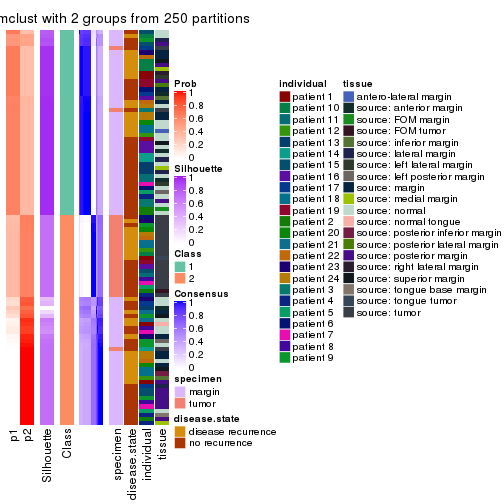
consensus_heatmap(res, k = 3)
consensus_heatmap(res, k = 4)
consensus_heatmap(res, k = 5)
consensus_heatmap(res, k = 6)
Heatmaps for the membership of samples in all partitions to see how consistent they are:
membership_heatmap(res, k = 2)
membership_heatmap(res, k = 3)
membership_heatmap(res, k = 4)
membership_heatmap(res, k = 5)
membership_heatmap(res, k = 6)
As soon as we have had the classes for columns, we can look for signatures which are significantly different between classes which can be candidate marks for certain classes. Following are the heatmaps for signatures.
Signature heatmaps where rows are scaled:
get_signatures(res, k = 2)
#> Error: The width or height of the raster image is zero, maybe you forget to turn off the
#> previous graphic device or it was corrupted. Run `dev.off()` to close it.

get_signatures(res, k = 3)
#> Error: The width or height of the raster image is zero, maybe you forget to turn off the
#> previous graphic device or it was corrupted. Run `dev.off()` to close it.

get_signatures(res, k = 4)
#> Error: The width or height of the raster image is zero, maybe you forget to turn off the
#> previous graphic device or it was corrupted. Run `dev.off()` to close it.

get_signatures(res, k = 5)
#> Error: The width or height of the raster image is zero, maybe you forget to turn off the
#> previous graphic device or it was corrupted. Run `dev.off()` to close it.

get_signatures(res, k = 6)
#> Error: The width or height of the raster image is zero, maybe you forget to turn off the
#> previous graphic device or it was corrupted. Run `dev.off()` to close it.

Signature heatmaps where rows are not scaled:
get_signatures(res, k = 2, scale_rows = FALSE)
get_signatures(res, k = 3, scale_rows = FALSE)
#> Error in mat[ceiling(1:nr/h_ratio), ceiling(1:nc/w_ratio), drop = FALSE]: subscript out of bounds
get_signatures(res, k = 4, scale_rows = FALSE)
get_signatures(res, k = 5, scale_rows = FALSE)
#> Error in mat[ceiling(1:nr/h_ratio), ceiling(1:nc/w_ratio), drop = FALSE]: subscript out of bounds
get_signatures(res, k = 6, scale_rows = FALSE)
#> Error in mat[ceiling(1:nr/h_ratio), ceiling(1:nc/w_ratio), drop = FALSE]: subscript out of bounds

Compare the overlap of signatures from different k:
compare_signatures(res)
get_signature() returns a data frame invisibly. TO get the list of signatures, the function
call should be assigned to a variable explicitly. In following code, if plot argument is set
to FALSE, no heatmap is plotted while only the differential analysis is performed.
# code only for demonstration
tb = get_signature(res, k = ..., plot = FALSE)
An example of the output of tb is:
#> which_row fdr mean_1 mean_2 scaled_mean_1 scaled_mean_2 km
#> 1 38 0.042760348 8.373488 9.131774 -0.5533452 0.5164555 1
#> 2 40 0.018707592 7.106213 8.469186 -0.6173731 0.5762149 1
#> 3 55 0.019134737 10.221463 11.207825 -0.6159697 0.5749050 1
#> 4 59 0.006059896 5.921854 7.869574 -0.6899429 0.6439467 1
#> 5 60 0.018055526 8.928898 10.211722 -0.6204761 0.5791110 1
#> 6 98 0.009384629 15.714769 14.887706 0.6635654 -0.6193277 2
...
The columns in tb are:
which_row: row indices corresponding to the input matrix.fdr: FDR for the differential test. mean_x: The mean value in group x.scaled_mean_x: The mean value in group x after rows are scaled.km: Row groups if k-means clustering is applied to rows.UMAP plot which shows how samples are separated.
dimension_reduction(res, k = 2, method = "UMAP")
dimension_reduction(res, k = 3, method = "UMAP")
dimension_reduction(res, k = 4, method = "UMAP")
dimension_reduction(res, k = 5, method = "UMAP")
dimension_reduction(res, k = 6, method = "UMAP")
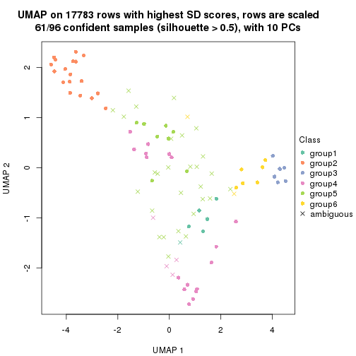
Following heatmap shows how subgroups are split when increasing k:
collect_classes(res)
Test correlation between subgroups and known annotations. If the known annotation is numeric, one-way ANOVA test is applied, and if the known annotation is discrete, chi-squared contingency table test is applied.
test_to_known_factors(res)
#> n specimen(p) disease.state(p) individual(p) tissue(p) k
#> SD:mclust 91 1.86e-05 0.577 0.481 1.60e-02 2
#> SD:mclust 92 2.56e-12 0.257 0.464 1.58e-03 3
#> SD:mclust 83 2.27e-15 0.556 0.766 9.70e-07 4
#> SD:mclust 40 2.06e-09 0.904 0.610 1.57e-03 5
#> SD:mclust 61 7.55e-12 0.447 0.289 1.38e-06 6
If matrix rows can be associated to genes, consider to use functional_enrichment(res,
...) to perform function enrichment for the signature genes. See this vignette for more detailed explanations.
The object with results only for a single top-value method and a single partition method can be extracted as:
res = res_list["SD", "NMF"]
# you can also extract it by
# res = res_list["SD:NMF"]
A summary of res and all the functions that can be applied to it:
res
#> A 'ConsensusPartition' object with k = 2, 3, 4, 5, 6.
#> On a matrix with 17783 rows and 96 columns.
#> Top rows (1000, 2000, 3000, 4000, 5000) are extracted by 'SD' method.
#> Subgroups are detected by 'NMF' method.
#> Performed in total 1250 partitions by row resampling.
#> Best k for subgroups seems to be 5.
#>
#> Following methods can be applied to this 'ConsensusPartition' object:
#> [1] "cola_report" "collect_classes" "collect_plots"
#> [4] "collect_stats" "colnames" "compare_signatures"
#> [7] "consensus_heatmap" "dimension_reduction" "functional_enrichment"
#> [10] "get_anno_col" "get_anno" "get_classes"
#> [13] "get_consensus" "get_matrix" "get_membership"
#> [16] "get_param" "get_signatures" "get_stats"
#> [19] "is_best_k" "is_stable_k" "membership_heatmap"
#> [22] "ncol" "nrow" "plot_ecdf"
#> [25] "rownames" "select_partition_number" "show"
#> [28] "suggest_best_k" "test_to_known_factors"
collect_plots() function collects all the plots made from res for all k (number of partitions)
into one single page to provide an easy and fast comparison between different k.
collect_plots(res)
The plots are:
k and the heatmap of
predicted classes for each k.k.k.k.All the plots in panels can be made by individual functions and they are plotted later in this section.
select_partition_number() produces several plots showing different
statistics for choosing “optimized” k. There are following statistics:
k;k, the area increased is defined as \(A_k - A_{k-1}\).The detailed explanations of these statistics can be found in the cola vignette.
Generally speaking, lower PAC score, higher mean silhouette score or higher
concordance corresponds to better partition. Rand index and Jaccard index
measure how similar the current partition is compared to partition with k-1.
If they are too similar, we won't accept k is better than k-1.
select_partition_number(res)
The numeric values for all these statistics can be obtained by get_stats().
get_stats(res)
#> k 1-PAC mean_silhouette concordance area_increased Rand Jaccard
#> 2 2 0.556 0.822 0.894 0.4702 0.498 0.498
#> 3 3 0.867 0.907 0.962 0.3594 0.648 0.415
#> 4 4 0.754 0.822 0.910 0.1710 0.800 0.503
#> 5 5 0.924 0.909 0.958 0.0737 0.868 0.542
#> 6 6 0.804 0.601 0.772 0.0412 0.911 0.599
suggest_best_k() suggests the best \(k\) based on these statistics. The rules are as follows:
suggest_best_k(res)
#> [1] 5
Following shows the table of the partitions (You need to click the show/hide
code output link to see it). The membership matrix (columns with name p*)
is inferred by
clue::cl_consensus()
function with the SE method. Basically the value in the membership matrix
represents the probability to belong to a certain group. The finall class
label for an item is determined with the group with highest probability it
belongs to.
In get_classes() function, the entropy is calculated from the membership
matrix and the silhouette score is calculated from the consensus matrix.
cbind(get_classes(res, k = 2), get_membership(res, k = 2))
#> class entropy silhouette p1 p2
#> GSM771247 1 0.7528 0.761 0.784 0.216
#> GSM771246 1 0.4298 0.792 0.912 0.088
#> GSM771245 1 0.8909 0.721 0.692 0.308
#> GSM771169 1 0.0000 0.796 1.000 0.000
#> GSM771171 1 0.0000 0.796 1.000 0.000
#> GSM771175 2 0.0000 0.967 0.000 1.000
#> GSM771172 1 0.0000 0.796 1.000 0.000
#> GSM771174 2 0.0000 0.967 0.000 1.000
#> GSM771178 1 0.0000 0.796 1.000 0.000
#> GSM771176 1 0.9044 0.714 0.680 0.320
#> GSM771181 1 0.0000 0.796 1.000 0.000
#> GSM771179 1 0.9358 0.690 0.648 0.352
#> GSM771184 1 0.0000 0.796 1.000 0.000
#> GSM771182 2 0.1414 0.947 0.020 0.980
#> GSM771185 2 0.4690 0.842 0.100 0.900
#> GSM771186 2 0.0000 0.967 0.000 1.000
#> GSM771188 1 0.9358 0.690 0.648 0.352
#> GSM771193 1 0.0000 0.796 1.000 0.000
#> GSM771192 2 0.5629 0.813 0.132 0.868
#> GSM771189 2 0.0000 0.967 0.000 1.000
#> GSM771194 1 0.9358 0.690 0.648 0.352
#> GSM771191 2 0.9833 -0.121 0.424 0.576
#> GSM771202 1 0.5737 0.784 0.864 0.136
#> GSM771200 1 0.8861 0.723 0.696 0.304
#> GSM771206 1 0.9552 0.654 0.624 0.376
#> GSM771208 2 0.0000 0.967 0.000 1.000
#> GSM771207 1 0.0000 0.796 1.000 0.000
#> GSM771209 1 0.9358 0.690 0.648 0.352
#> GSM771211 1 0.6048 0.782 0.852 0.148
#> GSM771212 2 0.0938 0.956 0.012 0.988
#> GSM771214 2 0.0000 0.967 0.000 1.000
#> GSM771213 2 0.0000 0.967 0.000 1.000
#> GSM771216 2 0.0000 0.967 0.000 1.000
#> GSM771217 2 0.0000 0.967 0.000 1.000
#> GSM771219 1 0.0000 0.796 1.000 0.000
#> GSM771218 1 0.9358 0.690 0.648 0.352
#> GSM771222 1 0.0000 0.796 1.000 0.000
#> GSM771220 1 0.0000 0.796 1.000 0.000
#> GSM771226 1 0.0000 0.796 1.000 0.000
#> GSM771223 1 0.9358 0.690 0.648 0.352
#> GSM771225 2 0.0000 0.967 0.000 1.000
#> GSM771232 2 0.0000 0.967 0.000 1.000
#> GSM771235 1 0.0000 0.796 1.000 0.000
#> GSM771234 1 0.0000 0.796 1.000 0.000
#> GSM771242 1 0.0000 0.796 1.000 0.000
#> GSM771239 2 0.0000 0.967 0.000 1.000
#> GSM771240 1 0.9358 0.690 0.648 0.352
#> GSM771241 1 0.0000 0.796 1.000 0.000
#> GSM771197 1 0.0000 0.796 1.000 0.000
#> GSM771195 2 0.8443 0.474 0.272 0.728
#> GSM771198 1 0.0000 0.796 1.000 0.000
#> GSM771199 1 0.0000 0.796 1.000 0.000
#> GSM771204 1 0.9358 0.690 0.648 0.352
#> GSM771205 1 0.9209 0.703 0.664 0.336
#> GSM771229 1 0.4161 0.793 0.916 0.084
#> GSM771227 1 0.9358 0.690 0.648 0.352
#> GSM771230 2 0.0000 0.967 0.000 1.000
#> GSM771231 1 0.9393 0.685 0.644 0.356
#> GSM771238 1 0.9358 0.690 0.648 0.352
#> GSM771236 1 0.9358 0.690 0.648 0.352
#> GSM771154 1 0.9552 0.654 0.624 0.376
#> GSM771152 2 0.0000 0.967 0.000 1.000
#> GSM771156 1 0.8081 0.744 0.752 0.248
#> GSM771157 1 0.9993 0.416 0.516 0.484
#> GSM771155 1 0.9933 0.500 0.548 0.452
#> GSM771160 1 0.0000 0.796 1.000 0.000
#> GSM771161 1 0.0000 0.796 1.000 0.000
#> GSM771159 2 0.0000 0.967 0.000 1.000
#> GSM771165 2 0.0938 0.956 0.012 0.988
#> GSM771166 1 0.0000 0.796 1.000 0.000
#> GSM771167 1 0.9393 0.685 0.644 0.356
#> GSM771168 1 0.3879 0.793 0.924 0.076
#> GSM771163 1 0.9323 0.694 0.652 0.348
#> GSM771244 2 0.0000 0.967 0.000 1.000
#> GSM771170 2 0.4431 0.854 0.092 0.908
#> GSM771173 2 0.0000 0.967 0.000 1.000
#> GSM771177 2 0.0000 0.967 0.000 1.000
#> GSM771180 2 0.0000 0.967 0.000 1.000
#> GSM771183 2 0.0000 0.967 0.000 1.000
#> GSM771187 2 0.0000 0.967 0.000 1.000
#> GSM771190 2 0.0000 0.967 0.000 1.000
#> GSM771201 2 0.0000 0.967 0.000 1.000
#> GSM771210 2 0.0000 0.967 0.000 1.000
#> GSM771215 2 0.0000 0.967 0.000 1.000
#> GSM771221 2 0.0000 0.967 0.000 1.000
#> GSM771224 1 0.7056 0.647 0.808 0.192
#> GSM771233 2 0.0000 0.967 0.000 1.000
#> GSM771243 2 0.0000 0.967 0.000 1.000
#> GSM771196 2 0.0000 0.967 0.000 1.000
#> GSM771203 2 0.0000 0.967 0.000 1.000
#> GSM771228 2 0.0000 0.967 0.000 1.000
#> GSM771237 2 0.0000 0.967 0.000 1.000
#> GSM771153 2 0.0000 0.967 0.000 1.000
#> GSM771158 2 0.0000 0.967 0.000 1.000
#> GSM771162 2 0.0000 0.967 0.000 1.000
#> GSM771164 2 0.0000 0.967 0.000 1.000
cbind(get_classes(res, k = 3), get_membership(res, k = 3))
#> class entropy silhouette p1 p2 p3
#> GSM771247 1 0.0000 0.9797 1.000 0.000 0.000
#> GSM771246 1 0.0000 0.9797 1.000 0.000 0.000
#> GSM771245 1 0.0000 0.9797 1.000 0.000 0.000
#> GSM771169 3 0.0000 0.8917 0.000 0.000 1.000
#> GSM771171 3 0.0000 0.8917 0.000 0.000 1.000
#> GSM771175 1 0.0000 0.9797 1.000 0.000 0.000
#> GSM771172 1 0.3482 0.8387 0.872 0.000 0.128
#> GSM771174 1 0.0000 0.9797 1.000 0.000 0.000
#> GSM771178 1 0.5733 0.4771 0.676 0.000 0.324
#> GSM771176 1 0.0000 0.9797 1.000 0.000 0.000
#> GSM771181 3 0.0000 0.8917 0.000 0.000 1.000
#> GSM771179 1 0.0000 0.9797 1.000 0.000 0.000
#> GSM771184 3 0.0237 0.8894 0.004 0.000 0.996
#> GSM771182 1 0.0000 0.9797 1.000 0.000 0.000
#> GSM771185 1 0.0000 0.9797 1.000 0.000 0.000
#> GSM771186 2 0.5882 0.4554 0.348 0.652 0.000
#> GSM771188 1 0.0000 0.9797 1.000 0.000 0.000
#> GSM771193 3 0.0000 0.8917 0.000 0.000 1.000
#> GSM771192 2 0.3192 0.8552 0.000 0.888 0.112
#> GSM771189 2 0.0424 0.9645 0.008 0.992 0.000
#> GSM771194 1 0.0000 0.9797 1.000 0.000 0.000
#> GSM771191 1 0.0000 0.9797 1.000 0.000 0.000
#> GSM771202 1 0.0000 0.9797 1.000 0.000 0.000
#> GSM771200 1 0.0000 0.9797 1.000 0.000 0.000
#> GSM771206 1 0.0000 0.9797 1.000 0.000 0.000
#> GSM771208 1 0.0000 0.9797 1.000 0.000 0.000
#> GSM771207 3 0.0000 0.8917 0.000 0.000 1.000
#> GSM771209 1 0.0000 0.9797 1.000 0.000 0.000
#> GSM771211 1 0.0000 0.9797 1.000 0.000 0.000
#> GSM771212 1 0.0000 0.9797 1.000 0.000 0.000
#> GSM771214 1 0.0000 0.9797 1.000 0.000 0.000
#> GSM771213 1 0.0000 0.9797 1.000 0.000 0.000
#> GSM771216 1 0.3116 0.8681 0.892 0.108 0.000
#> GSM771217 1 0.0000 0.9797 1.000 0.000 0.000
#> GSM771219 3 0.0000 0.8917 0.000 0.000 1.000
#> GSM771218 1 0.0000 0.9797 1.000 0.000 0.000
#> GSM771222 3 0.6295 0.1402 0.472 0.000 0.528
#> GSM771220 3 0.0747 0.8814 0.016 0.000 0.984
#> GSM771226 3 0.0000 0.8917 0.000 0.000 1.000
#> GSM771223 1 0.0000 0.9797 1.000 0.000 0.000
#> GSM771225 2 0.0000 0.9724 0.000 1.000 0.000
#> GSM771232 1 0.0000 0.9797 1.000 0.000 0.000
#> GSM771235 3 0.0000 0.8917 0.000 0.000 1.000
#> GSM771234 3 0.0000 0.8917 0.000 0.000 1.000
#> GSM771242 3 0.0000 0.8917 0.000 0.000 1.000
#> GSM771239 1 0.0000 0.9797 1.000 0.000 0.000
#> GSM771240 1 0.0000 0.9797 1.000 0.000 0.000
#> GSM771241 3 0.0000 0.8917 0.000 0.000 1.000
#> GSM771197 3 0.0000 0.8917 0.000 0.000 1.000
#> GSM771195 2 0.3695 0.8530 0.012 0.880 0.108
#> GSM771198 3 0.0000 0.8917 0.000 0.000 1.000
#> GSM771199 3 0.0000 0.8917 0.000 0.000 1.000
#> GSM771204 1 0.0000 0.9797 1.000 0.000 0.000
#> GSM771205 1 0.0000 0.9797 1.000 0.000 0.000
#> GSM771229 1 0.0000 0.9797 1.000 0.000 0.000
#> GSM771227 3 0.7997 0.6050 0.236 0.120 0.644
#> GSM771230 1 0.0000 0.9797 1.000 0.000 0.000
#> GSM771231 1 0.0000 0.9797 1.000 0.000 0.000
#> GSM771238 1 0.0000 0.9797 1.000 0.000 0.000
#> GSM771236 1 0.0000 0.9797 1.000 0.000 0.000
#> GSM771154 1 0.0000 0.9797 1.000 0.000 0.000
#> GSM771152 1 0.3482 0.8425 0.872 0.128 0.000
#> GSM771156 3 0.6045 0.3877 0.000 0.380 0.620
#> GSM771157 1 0.0000 0.9797 1.000 0.000 0.000
#> GSM771155 1 0.0000 0.9797 1.000 0.000 0.000
#> GSM771160 3 0.0000 0.8917 0.000 0.000 1.000
#> GSM771161 3 0.6308 0.0686 0.492 0.000 0.508
#> GSM771159 2 0.0000 0.9724 0.000 1.000 0.000
#> GSM771165 1 0.0000 0.9797 1.000 0.000 0.000
#> GSM771166 3 0.0000 0.8917 0.000 0.000 1.000
#> GSM771167 1 0.0000 0.9797 1.000 0.000 0.000
#> GSM771168 1 0.0000 0.9797 1.000 0.000 0.000
#> GSM771163 3 0.6662 0.6936 0.192 0.072 0.736
#> GSM771244 2 0.0000 0.9724 0.000 1.000 0.000
#> GSM771170 2 0.0475 0.9663 0.004 0.992 0.004
#> GSM771173 2 0.0000 0.9724 0.000 1.000 0.000
#> GSM771177 2 0.0000 0.9724 0.000 1.000 0.000
#> GSM771180 2 0.0000 0.9724 0.000 1.000 0.000
#> GSM771183 2 0.0000 0.9724 0.000 1.000 0.000
#> GSM771187 2 0.0000 0.9724 0.000 1.000 0.000
#> GSM771190 2 0.0000 0.9724 0.000 1.000 0.000
#> GSM771201 2 0.0000 0.9724 0.000 1.000 0.000
#> GSM771210 1 0.3340 0.8536 0.880 0.120 0.000
#> GSM771215 2 0.0000 0.9724 0.000 1.000 0.000
#> GSM771221 2 0.0000 0.9724 0.000 1.000 0.000
#> GSM771224 3 0.5465 0.5706 0.000 0.288 0.712
#> GSM771233 2 0.0000 0.9724 0.000 1.000 0.000
#> GSM771243 2 0.0000 0.9724 0.000 1.000 0.000
#> GSM771196 2 0.0000 0.9724 0.000 1.000 0.000
#> GSM771203 2 0.0000 0.9724 0.000 1.000 0.000
#> GSM771228 2 0.0000 0.9724 0.000 1.000 0.000
#> GSM771237 2 0.0000 0.9724 0.000 1.000 0.000
#> GSM771153 2 0.0000 0.9724 0.000 1.000 0.000
#> GSM771158 2 0.0000 0.9724 0.000 1.000 0.000
#> GSM771162 2 0.0000 0.9724 0.000 1.000 0.000
#> GSM771164 2 0.0000 0.9724 0.000 1.000 0.000
cbind(get_classes(res, k = 4), get_membership(res, k = 4))
#> class entropy silhouette p1 p2 p3 p4
#> GSM771247 1 0.1474 0.8475 0.948 0.000 0.000 0.052
#> GSM771246 1 0.0000 0.8833 1.000 0.000 0.000 0.000
#> GSM771245 4 0.2814 0.9113 0.132 0.000 0.000 0.868
#> GSM771169 3 0.0707 0.8851 0.020 0.000 0.980 0.000
#> GSM771171 3 0.0000 0.8967 0.000 0.000 1.000 0.000
#> GSM771175 4 0.0000 0.8805 0.000 0.000 0.000 1.000
#> GSM771172 1 0.0000 0.8833 1.000 0.000 0.000 0.000
#> GSM771174 4 0.0000 0.8805 0.000 0.000 0.000 1.000
#> GSM771178 3 0.2281 0.8189 0.096 0.000 0.904 0.000
#> GSM771176 4 0.2814 0.9113 0.132 0.000 0.000 0.868
#> GSM771181 3 0.0000 0.8967 0.000 0.000 1.000 0.000
#> GSM771179 1 0.0000 0.8833 1.000 0.000 0.000 0.000
#> GSM771184 3 0.4426 0.7772 0.096 0.000 0.812 0.092
#> GSM771182 1 0.2814 0.8033 0.868 0.000 0.000 0.132
#> GSM771185 4 0.0000 0.8805 0.000 0.000 0.000 1.000
#> GSM771186 1 0.5484 0.7017 0.736 0.132 0.000 0.132
#> GSM771188 4 0.2814 0.9113 0.132 0.000 0.000 0.868
#> GSM771193 4 0.2814 0.8344 0.000 0.000 0.132 0.868
#> GSM771192 2 0.5699 0.4816 0.000 0.588 0.032 0.380
#> GSM771189 2 0.3351 0.8344 0.008 0.844 0.000 0.148
#> GSM771194 4 0.2814 0.9113 0.132 0.000 0.000 0.868
#> GSM771191 4 0.2814 0.9113 0.132 0.000 0.000 0.868
#> GSM771202 1 0.0000 0.8833 1.000 0.000 0.000 0.000
#> GSM771200 1 0.0000 0.8833 1.000 0.000 0.000 0.000
#> GSM771206 1 0.4961 -0.0342 0.552 0.000 0.000 0.448
#> GSM771208 1 0.0000 0.8833 1.000 0.000 0.000 0.000
#> GSM771207 3 0.0000 0.8967 0.000 0.000 1.000 0.000
#> GSM771209 1 0.0000 0.8833 1.000 0.000 0.000 0.000
#> GSM771211 1 0.0336 0.8803 0.992 0.000 0.008 0.000
#> GSM771212 1 0.0000 0.8833 1.000 0.000 0.000 0.000
#> GSM771214 1 0.0000 0.8833 1.000 0.000 0.000 0.000
#> GSM771213 1 0.0188 0.8811 0.996 0.000 0.000 0.004
#> GSM771216 1 0.4585 0.5003 0.668 0.332 0.000 0.000
#> GSM771217 4 0.2814 0.9113 0.132 0.000 0.000 0.868
#> GSM771219 3 0.0000 0.8967 0.000 0.000 1.000 0.000
#> GSM771218 1 0.0000 0.8833 1.000 0.000 0.000 0.000
#> GSM771222 1 0.1211 0.8630 0.960 0.000 0.040 0.000
#> GSM771220 1 0.3172 0.7534 0.840 0.000 0.160 0.000
#> GSM771226 3 0.0000 0.8967 0.000 0.000 1.000 0.000
#> GSM771223 4 0.2814 0.9113 0.132 0.000 0.000 0.868
#> GSM771225 1 0.7153 0.0602 0.444 0.424 0.000 0.132
#> GSM771232 1 0.0000 0.8833 1.000 0.000 0.000 0.000
#> GSM771235 3 0.0000 0.8967 0.000 0.000 1.000 0.000
#> GSM771234 3 0.0000 0.8967 0.000 0.000 1.000 0.000
#> GSM771242 3 0.0000 0.8967 0.000 0.000 1.000 0.000
#> GSM771239 1 0.2868 0.8019 0.864 0.000 0.000 0.136
#> GSM771240 4 0.2281 0.9107 0.096 0.000 0.000 0.904
#> GSM771241 3 0.0000 0.8967 0.000 0.000 1.000 0.000
#> GSM771197 3 0.0000 0.8967 0.000 0.000 1.000 0.000
#> GSM771195 2 0.8644 0.3373 0.260 0.504 0.104 0.132
#> GSM771198 3 0.0000 0.8967 0.000 0.000 1.000 0.000
#> GSM771199 3 0.0000 0.8967 0.000 0.000 1.000 0.000
#> GSM771204 4 0.2814 0.9113 0.132 0.000 0.000 0.868
#> GSM771205 1 0.0000 0.8833 1.000 0.000 0.000 0.000
#> GSM771229 1 0.0000 0.8833 1.000 0.000 0.000 0.000
#> GSM771227 3 0.7711 0.3010 0.340 0.024 0.504 0.132
#> GSM771230 4 0.0000 0.8805 0.000 0.000 0.000 1.000
#> GSM771231 4 0.0000 0.8805 0.000 0.000 0.000 1.000
#> GSM771238 4 0.2814 0.9113 0.132 0.000 0.000 0.868
#> GSM771236 1 0.1474 0.8596 0.948 0.000 0.000 0.052
#> GSM771154 4 0.4250 0.7350 0.276 0.000 0.000 0.724
#> GSM771152 1 0.2814 0.8033 0.868 0.000 0.000 0.132
#> GSM771156 3 0.6327 0.5715 0.000 0.216 0.652 0.132
#> GSM771157 1 0.0000 0.8833 1.000 0.000 0.000 0.000
#> GSM771155 1 0.2216 0.8107 0.908 0.000 0.000 0.092
#> GSM771160 3 0.0000 0.8967 0.000 0.000 1.000 0.000
#> GSM771161 4 0.3166 0.8506 0.016 0.000 0.116 0.868
#> GSM771159 1 0.7153 0.0606 0.444 0.424 0.000 0.132
#> GSM771165 4 0.0000 0.8805 0.000 0.000 0.000 1.000
#> GSM771166 3 0.0000 0.8967 0.000 0.000 1.000 0.000
#> GSM771167 4 0.0000 0.8805 0.000 0.000 0.000 1.000
#> GSM771168 1 0.0000 0.8833 1.000 0.000 0.000 0.000
#> GSM771163 3 0.7583 0.3359 0.328 0.020 0.520 0.132
#> GSM771244 2 0.0000 0.9350 0.000 1.000 0.000 0.000
#> GSM771170 1 0.3958 0.7635 0.816 0.160 0.024 0.000
#> GSM771173 2 0.2530 0.8638 0.000 0.888 0.000 0.112
#> GSM771177 2 0.0000 0.9350 0.000 1.000 0.000 0.000
#> GSM771180 2 0.2814 0.8492 0.000 0.868 0.000 0.132
#> GSM771183 2 0.0000 0.9350 0.000 1.000 0.000 0.000
#> GSM771187 2 0.0000 0.9350 0.000 1.000 0.000 0.000
#> GSM771190 2 0.0000 0.9350 0.000 1.000 0.000 0.000
#> GSM771201 2 0.0000 0.9350 0.000 1.000 0.000 0.000
#> GSM771210 4 0.3421 0.9000 0.088 0.044 0.000 0.868
#> GSM771215 2 0.0000 0.9350 0.000 1.000 0.000 0.000
#> GSM771221 2 0.0000 0.9350 0.000 1.000 0.000 0.000
#> GSM771224 3 0.6067 0.3178 0.000 0.376 0.572 0.052
#> GSM771233 2 0.0000 0.9350 0.000 1.000 0.000 0.000
#> GSM771243 2 0.0000 0.9350 0.000 1.000 0.000 0.000
#> GSM771196 2 0.0000 0.9350 0.000 1.000 0.000 0.000
#> GSM771203 2 0.0000 0.9350 0.000 1.000 0.000 0.000
#> GSM771228 2 0.0000 0.9350 0.000 1.000 0.000 0.000
#> GSM771237 2 0.0000 0.9350 0.000 1.000 0.000 0.000
#> GSM771153 2 0.0000 0.9350 0.000 1.000 0.000 0.000
#> GSM771158 2 0.0000 0.9350 0.000 1.000 0.000 0.000
#> GSM771162 2 0.2814 0.8492 0.000 0.868 0.000 0.132
#> GSM771164 2 0.0000 0.9350 0.000 1.000 0.000 0.000
cbind(get_classes(res, k = 5), get_membership(res, k = 5))
#> class entropy silhouette p1 p2 p3 p4 p5
#> GSM771247 1 0.1549 0.938 0.944 0.000 0.000 0.040 0.016
#> GSM771246 1 0.0000 0.971 1.000 0.000 0.000 0.000 0.000
#> GSM771245 4 0.0000 0.946 0.000 0.000 0.000 1.000 0.000
#> GSM771169 3 0.0162 0.964 0.004 0.000 0.996 0.000 0.000
#> GSM771171 3 0.0000 0.967 0.000 0.000 1.000 0.000 0.000
#> GSM771175 5 0.0000 0.898 0.000 0.000 0.000 0.000 1.000
#> GSM771172 1 0.0000 0.971 1.000 0.000 0.000 0.000 0.000
#> GSM771174 4 0.4171 0.344 0.000 0.000 0.000 0.604 0.396
#> GSM771178 3 0.0162 0.963 0.004 0.000 0.996 0.000 0.000
#> GSM771176 4 0.0000 0.946 0.000 0.000 0.000 1.000 0.000
#> GSM771181 3 0.0000 0.967 0.000 0.000 1.000 0.000 0.000
#> GSM771179 1 0.0000 0.971 1.000 0.000 0.000 0.000 0.000
#> GSM771184 3 0.5736 0.112 0.088 0.000 0.512 0.000 0.400
#> GSM771182 5 0.1732 0.865 0.080 0.000 0.000 0.000 0.920
#> GSM771185 4 0.3003 0.758 0.000 0.000 0.000 0.812 0.188
#> GSM771186 5 0.0162 0.897 0.004 0.000 0.000 0.000 0.996
#> GSM771188 4 0.0000 0.946 0.000 0.000 0.000 1.000 0.000
#> GSM771193 4 0.0880 0.926 0.000 0.000 0.032 0.968 0.000
#> GSM771192 5 0.0000 0.898 0.000 0.000 0.000 0.000 1.000
#> GSM771189 5 0.0000 0.898 0.000 0.000 0.000 0.000 1.000
#> GSM771194 4 0.0000 0.946 0.000 0.000 0.000 1.000 0.000
#> GSM771191 4 0.0000 0.946 0.000 0.000 0.000 1.000 0.000
#> GSM771202 1 0.0000 0.971 1.000 0.000 0.000 0.000 0.000
#> GSM771200 1 0.0000 0.971 1.000 0.000 0.000 0.000 0.000
#> GSM771206 4 0.3177 0.724 0.208 0.000 0.000 0.792 0.000
#> GSM771208 1 0.0162 0.969 0.996 0.000 0.000 0.000 0.004
#> GSM771207 3 0.0000 0.967 0.000 0.000 1.000 0.000 0.000
#> GSM771209 1 0.0000 0.971 1.000 0.000 0.000 0.000 0.000
#> GSM771211 1 0.1764 0.925 0.928 0.000 0.008 0.000 0.064
#> GSM771212 1 0.0510 0.963 0.984 0.000 0.000 0.000 0.016
#> GSM771214 1 0.0000 0.971 1.000 0.000 0.000 0.000 0.000
#> GSM771213 1 0.0579 0.965 0.984 0.000 0.000 0.008 0.008
#> GSM771216 1 0.3074 0.780 0.804 0.000 0.000 0.000 0.196
#> GSM771217 4 0.0510 0.937 0.000 0.000 0.000 0.984 0.016
#> GSM771219 3 0.0000 0.967 0.000 0.000 1.000 0.000 0.000
#> GSM771218 1 0.0162 0.969 0.996 0.000 0.000 0.000 0.004
#> GSM771222 1 0.0794 0.954 0.972 0.000 0.028 0.000 0.000
#> GSM771220 1 0.3074 0.757 0.804 0.000 0.196 0.000 0.000
#> GSM771226 3 0.0000 0.967 0.000 0.000 1.000 0.000 0.000
#> GSM771223 4 0.0000 0.946 0.000 0.000 0.000 1.000 0.000
#> GSM771225 5 0.1732 0.868 0.080 0.000 0.000 0.000 0.920
#> GSM771232 1 0.0000 0.971 1.000 0.000 0.000 0.000 0.000
#> GSM771235 3 0.0000 0.967 0.000 0.000 1.000 0.000 0.000
#> GSM771234 3 0.0000 0.967 0.000 0.000 1.000 0.000 0.000
#> GSM771242 3 0.0000 0.967 0.000 0.000 1.000 0.000 0.000
#> GSM771239 5 0.0000 0.898 0.000 0.000 0.000 0.000 1.000
#> GSM771240 4 0.0000 0.946 0.000 0.000 0.000 1.000 0.000
#> GSM771241 3 0.0000 0.967 0.000 0.000 1.000 0.000 0.000
#> GSM771197 3 0.0000 0.967 0.000 0.000 1.000 0.000 0.000
#> GSM771195 5 0.0000 0.898 0.000 0.000 0.000 0.000 1.000
#> GSM771198 3 0.0000 0.967 0.000 0.000 1.000 0.000 0.000
#> GSM771199 3 0.0000 0.967 0.000 0.000 1.000 0.000 0.000
#> GSM771204 4 0.0000 0.946 0.000 0.000 0.000 1.000 0.000
#> GSM771205 1 0.0000 0.971 1.000 0.000 0.000 0.000 0.000
#> GSM771229 1 0.0000 0.971 1.000 0.000 0.000 0.000 0.000
#> GSM771227 5 0.0000 0.898 0.000 0.000 0.000 0.000 1.000
#> GSM771230 5 0.2179 0.827 0.000 0.000 0.000 0.112 0.888
#> GSM771231 4 0.0609 0.935 0.000 0.000 0.000 0.980 0.020
#> GSM771238 4 0.0000 0.946 0.000 0.000 0.000 1.000 0.000
#> GSM771236 5 0.4242 0.185 0.428 0.000 0.000 0.000 0.572
#> GSM771154 4 0.0000 0.946 0.000 0.000 0.000 1.000 0.000
#> GSM771152 5 0.0000 0.898 0.000 0.000 0.000 0.000 1.000
#> GSM771156 5 0.0000 0.898 0.000 0.000 0.000 0.000 1.000
#> GSM771157 1 0.0162 0.969 0.996 0.000 0.000 0.000 0.004
#> GSM771155 1 0.1628 0.931 0.936 0.000 0.000 0.008 0.056
#> GSM771160 3 0.0000 0.967 0.000 0.000 1.000 0.000 0.000
#> GSM771161 4 0.0000 0.946 0.000 0.000 0.000 1.000 0.000
#> GSM771159 5 0.2280 0.842 0.120 0.000 0.000 0.000 0.880
#> GSM771165 5 0.2074 0.834 0.000 0.000 0.000 0.104 0.896
#> GSM771166 3 0.0880 0.937 0.000 0.000 0.968 0.000 0.032
#> GSM771167 4 0.1341 0.909 0.000 0.000 0.000 0.944 0.056
#> GSM771168 1 0.0000 0.971 1.000 0.000 0.000 0.000 0.000
#> GSM771163 5 0.0000 0.898 0.000 0.000 0.000 0.000 1.000
#> GSM771244 2 0.0000 1.000 0.000 1.000 0.000 0.000 0.000
#> GSM771170 1 0.0000 0.971 1.000 0.000 0.000 0.000 0.000
#> GSM771173 5 0.2966 0.775 0.000 0.184 0.000 0.000 0.816
#> GSM771177 2 0.0000 1.000 0.000 1.000 0.000 0.000 0.000
#> GSM771180 5 0.0963 0.885 0.000 0.036 0.000 0.000 0.964
#> GSM771183 2 0.0000 1.000 0.000 1.000 0.000 0.000 0.000
#> GSM771187 2 0.0000 1.000 0.000 1.000 0.000 0.000 0.000
#> GSM771190 2 0.0000 1.000 0.000 1.000 0.000 0.000 0.000
#> GSM771201 5 0.3661 0.653 0.000 0.276 0.000 0.000 0.724
#> GSM771210 4 0.0000 0.946 0.000 0.000 0.000 1.000 0.000
#> GSM771215 2 0.0000 1.000 0.000 1.000 0.000 0.000 0.000
#> GSM771221 2 0.0000 1.000 0.000 1.000 0.000 0.000 0.000
#> GSM771224 5 0.4066 0.526 0.000 0.004 0.324 0.000 0.672
#> GSM771233 2 0.0000 1.000 0.000 1.000 0.000 0.000 0.000
#> GSM771243 2 0.0000 1.000 0.000 1.000 0.000 0.000 0.000
#> GSM771196 2 0.0000 1.000 0.000 1.000 0.000 0.000 0.000
#> GSM771203 2 0.0000 1.000 0.000 1.000 0.000 0.000 0.000
#> GSM771228 2 0.0000 1.000 0.000 1.000 0.000 0.000 0.000
#> GSM771237 2 0.0000 1.000 0.000 1.000 0.000 0.000 0.000
#> GSM771153 2 0.0000 1.000 0.000 1.000 0.000 0.000 0.000
#> GSM771158 2 0.0000 1.000 0.000 1.000 0.000 0.000 0.000
#> GSM771162 5 0.2891 0.783 0.000 0.176 0.000 0.000 0.824
#> GSM771164 2 0.0000 1.000 0.000 1.000 0.000 0.000 0.000
cbind(get_classes(res, k = 6), get_membership(res, k = 6))
#> class entropy silhouette p1 p2 p3 p4 p5 p6
#> GSM771247 6 0.2237 0.51690 0.068 0.000 0.000 0.000 0.036 0.896
#> GSM771246 1 0.3854 0.66113 0.536 0.000 0.000 0.000 0.000 0.464
#> GSM771245 4 0.0000 0.84556 0.000 0.000 0.000 1.000 0.000 0.000
#> GSM771169 3 0.3123 0.73481 0.112 0.000 0.832 0.000 0.000 0.056
#> GSM771171 3 0.1926 0.79711 0.068 0.000 0.912 0.000 0.000 0.020
#> GSM771175 5 0.4165 0.66708 0.420 0.000 0.000 0.004 0.568 0.008
#> GSM771172 1 0.3847 0.66116 0.544 0.000 0.000 0.000 0.000 0.456
#> GSM771174 4 0.5205 0.07996 0.412 0.000 0.000 0.496 0.092 0.000
#> GSM771178 3 0.3770 0.68038 0.148 0.000 0.776 0.000 0.000 0.076
#> GSM771176 4 0.0000 0.84556 0.000 0.000 0.000 1.000 0.000 0.000
#> GSM771181 3 0.0000 0.83891 0.000 0.000 1.000 0.000 0.000 0.000
#> GSM771179 1 0.3851 0.65975 0.540 0.000 0.000 0.000 0.000 0.460
#> GSM771184 5 0.5980 0.00163 0.060 0.000 0.072 0.000 0.504 0.364
#> GSM771182 5 0.3971 0.04150 0.004 0.000 0.000 0.000 0.548 0.448
#> GSM771185 4 0.3657 0.68027 0.000 0.000 0.000 0.792 0.100 0.108
#> GSM771186 1 0.2848 -0.21307 0.816 0.000 0.000 0.000 0.176 0.008
#> GSM771188 4 0.0000 0.84556 0.000 0.000 0.000 1.000 0.000 0.000
#> GSM771193 3 0.3847 0.10729 0.000 0.000 0.544 0.456 0.000 0.000
#> GSM771192 5 0.3789 0.66841 0.416 0.000 0.000 0.000 0.584 0.000
#> GSM771189 5 0.4389 0.64840 0.448 0.000 0.000 0.000 0.528 0.024
#> GSM771194 4 0.0000 0.84556 0.000 0.000 0.000 1.000 0.000 0.000
#> GSM771191 4 0.0000 0.84556 0.000 0.000 0.000 1.000 0.000 0.000
#> GSM771202 1 0.3854 0.66113 0.536 0.000 0.000 0.000 0.000 0.464
#> GSM771200 1 0.3851 0.65975 0.540 0.000 0.000 0.000 0.000 0.460
#> GSM771206 6 0.3684 0.25062 0.000 0.000 0.000 0.372 0.000 0.628
#> GSM771208 6 0.0363 0.53675 0.012 0.000 0.000 0.000 0.000 0.988
#> GSM771207 3 0.2420 0.77479 0.076 0.000 0.884 0.000 0.000 0.040
#> GSM771209 6 0.3854 -0.56904 0.464 0.000 0.000 0.000 0.000 0.536
#> GSM771211 6 0.4201 0.45619 0.068 0.000 0.004 0.000 0.196 0.732
#> GSM771212 6 0.0935 0.54025 0.032 0.000 0.000 0.000 0.004 0.964
#> GSM771214 6 0.3428 -0.01521 0.304 0.000 0.000 0.000 0.000 0.696
#> GSM771213 6 0.1714 0.50235 0.092 0.000 0.000 0.000 0.000 0.908
#> GSM771216 6 0.1700 0.53775 0.048 0.000 0.000 0.000 0.024 0.928
#> GSM771217 6 0.4537 -0.14738 0.024 0.000 0.000 0.484 0.004 0.488
#> GSM771219 3 0.0000 0.83891 0.000 0.000 1.000 0.000 0.000 0.000
#> GSM771218 6 0.1838 0.50971 0.068 0.000 0.000 0.000 0.016 0.916
#> GSM771222 6 0.5886 -0.30614 0.292 0.000 0.236 0.000 0.000 0.472
#> GSM771220 1 0.5714 0.43260 0.508 0.000 0.196 0.000 0.000 0.296
#> GSM771226 3 0.0000 0.83891 0.000 0.000 1.000 0.000 0.000 0.000
#> GSM771223 4 0.0000 0.84556 0.000 0.000 0.000 1.000 0.000 0.000
#> GSM771225 1 0.4534 0.14268 0.496 0.000 0.000 0.000 0.472 0.032
#> GSM771232 1 0.3847 0.59629 0.544 0.000 0.000 0.000 0.000 0.456
#> GSM771235 3 0.3747 0.41930 0.000 0.000 0.604 0.000 0.396 0.000
#> GSM771234 3 0.0000 0.83891 0.000 0.000 1.000 0.000 0.000 0.000
#> GSM771242 3 0.0000 0.83891 0.000 0.000 1.000 0.000 0.000 0.000
#> GSM771239 5 0.3037 0.47830 0.016 0.000 0.000 0.000 0.808 0.176
#> GSM771240 4 0.0000 0.84556 0.000 0.000 0.000 1.000 0.000 0.000
#> GSM771241 3 0.0000 0.83891 0.000 0.000 1.000 0.000 0.000 0.000
#> GSM771197 3 0.0000 0.83891 0.000 0.000 1.000 0.000 0.000 0.000
#> GSM771195 5 0.0458 0.56937 0.016 0.000 0.000 0.000 0.984 0.000
#> GSM771198 3 0.0000 0.83891 0.000 0.000 1.000 0.000 0.000 0.000
#> GSM771199 3 0.0000 0.83891 0.000 0.000 1.000 0.000 0.000 0.000
#> GSM771204 4 0.0000 0.84556 0.000 0.000 0.000 1.000 0.000 0.000
#> GSM771205 1 0.3854 0.66113 0.536 0.000 0.000 0.000 0.000 0.464
#> GSM771229 1 0.3857 0.64869 0.532 0.000 0.000 0.000 0.000 0.468
#> GSM771227 5 0.2697 0.45419 0.000 0.000 0.000 0.000 0.812 0.188
#> GSM771230 5 0.5601 0.31161 0.156 0.000 0.000 0.344 0.500 0.000
#> GSM771231 4 0.4032 0.35618 0.000 0.000 0.000 0.572 0.420 0.008
#> GSM771238 4 0.0000 0.84556 0.000 0.000 0.000 1.000 0.000 0.000
#> GSM771236 6 0.5648 0.01040 0.180 0.000 0.000 0.000 0.304 0.516
#> GSM771154 4 0.3828 0.18978 0.000 0.000 0.000 0.560 0.000 0.440
#> GSM771152 5 0.3923 0.66815 0.416 0.000 0.000 0.000 0.580 0.004
#> GSM771156 5 0.0405 0.56186 0.000 0.000 0.004 0.000 0.988 0.008
#> GSM771157 6 0.0363 0.54469 0.012 0.000 0.000 0.000 0.000 0.988
#> GSM771155 6 0.4893 0.19715 0.064 0.000 0.000 0.000 0.400 0.536
#> GSM771160 3 0.0000 0.83891 0.000 0.000 1.000 0.000 0.000 0.000
#> GSM771161 4 0.0000 0.84556 0.000 0.000 0.000 1.000 0.000 0.000
#> GSM771159 1 0.4407 0.13100 0.496 0.000 0.000 0.000 0.480 0.024
#> GSM771165 5 0.5837 0.30848 0.196 0.000 0.000 0.352 0.452 0.000
#> GSM771166 3 0.4544 0.34064 0.000 0.000 0.548 0.000 0.416 0.036
#> GSM771167 4 0.4136 0.33748 0.000 0.000 0.000 0.560 0.428 0.012
#> GSM771168 1 0.3857 0.64869 0.532 0.000 0.000 0.000 0.000 0.468
#> GSM771163 5 0.2854 0.43349 0.000 0.000 0.000 0.000 0.792 0.208
#> GSM771244 2 0.0000 0.98432 0.000 1.000 0.000 0.000 0.000 0.000
#> GSM771170 1 0.4531 0.61972 0.520 0.004 0.008 0.000 0.012 0.456
#> GSM771173 5 0.3789 0.66841 0.416 0.000 0.000 0.000 0.584 0.000
#> GSM771177 2 0.0000 0.98432 0.000 1.000 0.000 0.000 0.000 0.000
#> GSM771180 5 0.3789 0.66841 0.416 0.000 0.000 0.000 0.584 0.000
#> GSM771183 2 0.0000 0.98432 0.000 1.000 0.000 0.000 0.000 0.000
#> GSM771187 2 0.0000 0.98432 0.000 1.000 0.000 0.000 0.000 0.000
#> GSM771190 2 0.3063 0.84514 0.092 0.840 0.000 0.000 0.000 0.068
#> GSM771201 5 0.4039 0.66502 0.424 0.008 0.000 0.000 0.568 0.000
#> GSM771210 4 0.0000 0.84556 0.000 0.000 0.000 1.000 0.000 0.000
#> GSM771215 2 0.0632 0.96784 0.024 0.976 0.000 0.000 0.000 0.000
#> GSM771221 2 0.0000 0.98432 0.000 1.000 0.000 0.000 0.000 0.000
#> GSM771224 3 0.5969 -0.09287 0.324 0.000 0.436 0.000 0.240 0.000
#> GSM771233 2 0.0000 0.98432 0.000 1.000 0.000 0.000 0.000 0.000
#> GSM771243 2 0.0000 0.98432 0.000 1.000 0.000 0.000 0.000 0.000
#> GSM771196 2 0.0000 0.98432 0.000 1.000 0.000 0.000 0.000 0.000
#> GSM771203 2 0.0000 0.98432 0.000 1.000 0.000 0.000 0.000 0.000
#> GSM771228 2 0.0000 0.98432 0.000 1.000 0.000 0.000 0.000 0.000
#> GSM771237 2 0.1387 0.93223 0.068 0.932 0.000 0.000 0.000 0.000
#> GSM771153 2 0.0000 0.98432 0.000 1.000 0.000 0.000 0.000 0.000
#> GSM771158 2 0.0000 0.98432 0.000 1.000 0.000 0.000 0.000 0.000
#> GSM771162 5 0.4246 0.66512 0.400 0.020 0.000 0.000 0.580 0.000
#> GSM771164 2 0.0000 0.98432 0.000 1.000 0.000 0.000 0.000 0.000
Heatmaps for the consensus matrix. It visualizes the probability of two samples to be in a same group.
consensus_heatmap(res, k = 2)
consensus_heatmap(res, k = 3)
consensus_heatmap(res, k = 4)
consensus_heatmap(res, k = 5)
consensus_heatmap(res, k = 6)
Heatmaps for the membership of samples in all partitions to see how consistent they are:
membership_heatmap(res, k = 2)
membership_heatmap(res, k = 3)
membership_heatmap(res, k = 4)

membership_heatmap(res, k = 5)
membership_heatmap(res, k = 6)
As soon as we have had the classes for columns, we can look for signatures which are significantly different between classes which can be candidate marks for certain classes. Following are the heatmaps for signatures.
Signature heatmaps where rows are scaled:
get_signatures(res, k = 2)
#> Error: The width or height of the raster image is zero, maybe you forget to turn off the
#> previous graphic device or it was corrupted. Run `dev.off()` to close it.

get_signatures(res, k = 3)
#> Error: The width or height of the raster image is zero, maybe you forget to turn off the
#> previous graphic device or it was corrupted. Run `dev.off()` to close it.

get_signatures(res, k = 4)
#> Error: The width or height of the raster image is zero, maybe you forget to turn off the
#> previous graphic device or it was corrupted. Run `dev.off()` to close it.

get_signatures(res, k = 5)
#> Error: The width or height of the raster image is zero, maybe you forget to turn off the
#> previous graphic device or it was corrupted. Run `dev.off()` to close it.

get_signatures(res, k = 6)
#> Error: The width or height of the raster image is zero, maybe you forget to turn off the
#> previous graphic device or it was corrupted. Run `dev.off()` to close it.

Signature heatmaps where rows are not scaled:
get_signatures(res, k = 2, scale_rows = FALSE)
#> Error in mat[ceiling(1:nr/h_ratio), ceiling(1:nc/w_ratio), drop = FALSE]: subscript out of bounds
get_signatures(res, k = 3, scale_rows = FALSE)
get_signatures(res, k = 4, scale_rows = FALSE)
get_signatures(res, k = 5, scale_rows = FALSE)
#> Error in mat[ceiling(1:nr/h_ratio), ceiling(1:nc/w_ratio), drop = FALSE]: subscript out of bounds
get_signatures(res, k = 6, scale_rows = FALSE)
#> Error in mat[ceiling(1:nr/h_ratio), ceiling(1:nc/w_ratio), drop = FALSE]: subscript out of bounds

Compare the overlap of signatures from different k:
compare_signatures(res)
get_signature() returns a data frame invisibly. TO get the list of signatures, the function
call should be assigned to a variable explicitly. In following code, if plot argument is set
to FALSE, no heatmap is plotted while only the differential analysis is performed.
# code only for demonstration
tb = get_signature(res, k = ..., plot = FALSE)
An example of the output of tb is:
#> which_row fdr mean_1 mean_2 scaled_mean_1 scaled_mean_2 km
#> 1 38 0.042760348 8.373488 9.131774 -0.5533452 0.5164555 1
#> 2 40 0.018707592 7.106213 8.469186 -0.6173731 0.5762149 1
#> 3 55 0.019134737 10.221463 11.207825 -0.6159697 0.5749050 1
#> 4 59 0.006059896 5.921854 7.869574 -0.6899429 0.6439467 1
#> 5 60 0.018055526 8.928898 10.211722 -0.6204761 0.5791110 1
#> 6 98 0.009384629 15.714769 14.887706 0.6635654 -0.6193277 2
...
The columns in tb are:
which_row: row indices corresponding to the input matrix.fdr: FDR for the differential test. mean_x: The mean value in group x.scaled_mean_x: The mean value in group x after rows are scaled.km: Row groups if k-means clustering is applied to rows.UMAP plot which shows how samples are separated.
dimension_reduction(res, k = 2, method = "UMAP")
dimension_reduction(res, k = 3, method = "UMAP")
dimension_reduction(res, k = 4, method = "UMAP")
dimension_reduction(res, k = 5, method = "UMAP")
dimension_reduction(res, k = 6, method = "UMAP")
Following heatmap shows how subgroups are split when increasing k:
collect_classes(res)
Test correlation between subgroups and known annotations. If the known annotation is numeric, one-way ANOVA test is applied, and if the known annotation is discrete, chi-squared contingency table test is applied.
test_to_known_factors(res)
#> n specimen(p) disease.state(p) individual(p) tissue(p) k
#> SD:NMF 92 1.05e-07 0.524 0.833 5.25e-04 2
#> SD:NMF 91 1.26e-13 0.833 0.803 6.02e-06 3
#> SD:NMF 88 1.13e-15 0.622 0.928 5.77e-09 4
#> SD:NMF 93 8.07e-13 0.308 0.761 7.45e-06 5
#> SD:NMF 69 1.69e-09 0.670 0.674 9.07e-04 6
If matrix rows can be associated to genes, consider to use functional_enrichment(res,
...) to perform function enrichment for the signature genes. See this vignette for more detailed explanations.
The object with results only for a single top-value method and a single partition method can be extracted as:
res = res_list["CV", "hclust"]
# you can also extract it by
# res = res_list["CV:hclust"]
A summary of res and all the functions that can be applied to it:
res
#> A 'ConsensusPartition' object with k = 2, 3, 4, 5, 6.
#> On a matrix with 17783 rows and 96 columns.
#> Top rows (1000, 2000, 3000, 4000, 5000) are extracted by 'CV' method.
#> Subgroups are detected by 'hclust' method.
#> Performed in total 1250 partitions by row resampling.
#> Best k for subgroups seems to be 3.
#>
#> Following methods can be applied to this 'ConsensusPartition' object:
#> [1] "cola_report" "collect_classes" "collect_plots"
#> [4] "collect_stats" "colnames" "compare_signatures"
#> [7] "consensus_heatmap" "dimension_reduction" "functional_enrichment"
#> [10] "get_anno_col" "get_anno" "get_classes"
#> [13] "get_consensus" "get_matrix" "get_membership"
#> [16] "get_param" "get_signatures" "get_stats"
#> [19] "is_best_k" "is_stable_k" "membership_heatmap"
#> [22] "ncol" "nrow" "plot_ecdf"
#> [25] "rownames" "select_partition_number" "show"
#> [28] "suggest_best_k" "test_to_known_factors"
collect_plots() function collects all the plots made from res for all k (number of partitions)
into one single page to provide an easy and fast comparison between different k.
collect_plots(res)

The plots are:
k and the heatmap of
predicted classes for each k.k.k.k.All the plots in panels can be made by individual functions and they are plotted later in this section.
select_partition_number() produces several plots showing different
statistics for choosing “optimized” k. There are following statistics:
k;k, the area increased is defined as \(A_k - A_{k-1}\).The detailed explanations of these statistics can be found in the cola vignette.
Generally speaking, lower PAC score, higher mean silhouette score or higher
concordance corresponds to better partition. Rand index and Jaccard index
measure how similar the current partition is compared to partition with k-1.
If they are too similar, we won't accept k is better than k-1.
select_partition_number(res)
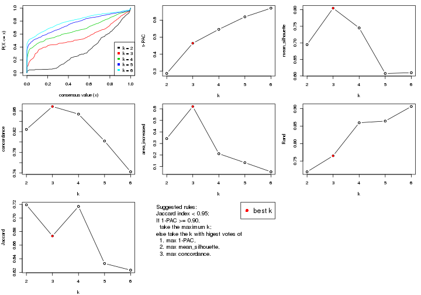
The numeric values for all these statistics can be obtained by get_stats().
get_stats(res)
#> k 1-PAC mean_silhouette concordance area_increased Rand Jaccard
#> 2 2 0.286 0.695 0.824 0.3422 0.719 0.719
#> 3 3 0.464 0.805 0.869 0.6203 0.765 0.673
#> 4 4 0.546 0.745 0.854 0.2114 0.860 0.717
#> 5 5 0.619 0.608 0.802 0.1337 0.864 0.633
#> 6 6 0.670 0.610 0.742 0.0547 0.906 0.623
suggest_best_k() suggests the best \(k\) based on these statistics. The rules are as follows:
suggest_best_k(res)
#> [1] 3
Following shows the table of the partitions (You need to click the show/hide
code output link to see it). The membership matrix (columns with name p*)
is inferred by
clue::cl_consensus()
function with the SE method. Basically the value in the membership matrix
represents the probability to belong to a certain group. The finall class
label for an item is determined with the group with highest probability it
belongs to.
In get_classes() function, the entropy is calculated from the membership
matrix and the silhouette score is calculated from the consensus matrix.
cbind(get_classes(res, k = 2), get_membership(res, k = 2))
#> class entropy silhouette p1 p2
#> GSM771247 2 0.8661 0.4225 0.288 0.712
#> GSM771246 2 0.9323 0.1963 0.348 0.652
#> GSM771245 2 0.4161 0.7427 0.084 0.916
#> GSM771169 1 0.8909 0.9522 0.692 0.308
#> GSM771171 1 0.8909 0.9522 0.692 0.308
#> GSM771175 2 0.0376 0.7671 0.004 0.996
#> GSM771172 2 0.7453 0.5765 0.212 0.788
#> GSM771174 2 0.0376 0.7671 0.004 0.996
#> GSM771178 2 0.9754 -0.1055 0.408 0.592
#> GSM771176 2 0.4431 0.7370 0.092 0.908
#> GSM771181 1 0.8713 0.9562 0.708 0.292
#> GSM771179 2 0.5178 0.7207 0.116 0.884
#> GSM771184 2 0.7299 0.6057 0.204 0.796
#> GSM771182 2 0.3584 0.7564 0.068 0.932
#> GSM771185 2 0.2236 0.7651 0.036 0.964
#> GSM771186 2 0.2948 0.7663 0.052 0.948
#> GSM771188 2 0.4431 0.7370 0.092 0.908
#> GSM771193 2 0.9661 -0.0324 0.392 0.608
#> GSM771192 2 0.7219 0.6679 0.200 0.800
#> GSM771189 2 0.2423 0.7553 0.040 0.960
#> GSM771194 2 0.4022 0.7440 0.080 0.920
#> GSM771191 2 0.3114 0.7578 0.056 0.944
#> GSM771202 2 0.5178 0.7207 0.116 0.884
#> GSM771200 2 0.5178 0.7207 0.116 0.884
#> GSM771206 2 0.0672 0.7683 0.008 0.992
#> GSM771208 2 0.1633 0.7687 0.024 0.976
#> GSM771207 1 0.8909 0.9522 0.692 0.308
#> GSM771209 2 0.4939 0.7263 0.108 0.892
#> GSM771211 2 0.8661 0.4225 0.288 0.712
#> GSM771212 2 0.1843 0.7681 0.028 0.972
#> GSM771214 2 0.0376 0.7678 0.004 0.996
#> GSM771213 2 0.1184 0.7693 0.016 0.984
#> GSM771216 2 0.1184 0.7693 0.016 0.984
#> GSM771217 2 0.1184 0.7693 0.016 0.984
#> GSM771219 1 0.8909 0.9522 0.692 0.308
#> GSM771218 2 0.1184 0.7693 0.016 0.984
#> GSM771222 2 0.7376 0.5944 0.208 0.792
#> GSM771220 1 0.9896 0.6925 0.560 0.440
#> GSM771226 1 0.8713 0.9562 0.708 0.292
#> GSM771223 2 0.4022 0.7440 0.080 0.920
#> GSM771225 2 0.5408 0.7156 0.124 0.876
#> GSM771232 2 0.4690 0.7305 0.100 0.900
#> GSM771235 1 0.9491 0.8644 0.632 0.368
#> GSM771234 1 0.8713 0.9562 0.708 0.292
#> GSM771242 1 0.8763 0.9566 0.704 0.296
#> GSM771239 2 0.5178 0.7227 0.116 0.884
#> GSM771240 2 0.4022 0.7440 0.080 0.920
#> GSM771241 1 0.8763 0.9566 0.704 0.296
#> GSM771197 1 0.8713 0.9562 0.708 0.292
#> GSM771195 2 0.6247 0.6808 0.156 0.844
#> GSM771198 1 0.8713 0.9562 0.708 0.292
#> GSM771199 1 0.8713 0.9562 0.708 0.292
#> GSM771204 2 0.4022 0.7440 0.080 0.920
#> GSM771205 2 0.5178 0.7207 0.116 0.884
#> GSM771229 2 0.9323 0.1963 0.348 0.652
#> GSM771227 2 0.6247 0.6808 0.156 0.844
#> GSM771230 2 0.0376 0.7671 0.004 0.996
#> GSM771231 2 0.2603 0.7644 0.044 0.956
#> GSM771238 2 0.4022 0.7440 0.080 0.920
#> GSM771236 2 0.5408 0.7161 0.124 0.876
#> GSM771154 2 0.0672 0.7683 0.008 0.992
#> GSM771152 2 0.2778 0.7658 0.048 0.952
#> GSM771156 2 0.6887 0.6460 0.184 0.816
#> GSM771157 2 0.1184 0.7693 0.016 0.984
#> GSM771155 2 0.1414 0.7695 0.020 0.980
#> GSM771160 1 0.8713 0.9562 0.708 0.292
#> GSM771161 2 0.4161 0.7427 0.084 0.916
#> GSM771159 2 0.5408 0.7156 0.124 0.876
#> GSM771165 2 0.0376 0.7671 0.004 0.996
#> GSM771166 2 0.9129 0.2988 0.328 0.672
#> GSM771167 2 0.2603 0.7644 0.044 0.956
#> GSM771168 2 0.9323 0.1963 0.348 0.652
#> GSM771163 2 0.6247 0.6808 0.156 0.844
#> GSM771244 2 0.8713 0.5727 0.292 0.708
#> GSM771170 2 0.5408 0.7161 0.124 0.876
#> GSM771173 2 0.2423 0.7553 0.040 0.960
#> GSM771177 2 0.8713 0.5727 0.292 0.708
#> GSM771180 2 0.2423 0.7553 0.040 0.960
#> GSM771183 2 0.8713 0.5727 0.292 0.708
#> GSM771187 2 0.8713 0.5727 0.292 0.708
#> GSM771190 2 0.8713 0.5727 0.292 0.708
#> GSM771201 2 0.4298 0.7268 0.088 0.912
#> GSM771210 2 0.3431 0.7535 0.064 0.936
#> GSM771215 2 0.8713 0.5727 0.292 0.708
#> GSM771221 2 0.8713 0.5727 0.292 0.708
#> GSM771224 1 0.9491 0.8644 0.632 0.368
#> GSM771233 2 0.8713 0.5727 0.292 0.708
#> GSM771243 2 0.8713 0.5727 0.292 0.708
#> GSM771196 2 0.8713 0.5727 0.292 0.708
#> GSM771203 2 0.8713 0.5727 0.292 0.708
#> GSM771228 2 0.8713 0.5727 0.292 0.708
#> GSM771237 2 0.8713 0.5727 0.292 0.708
#> GSM771153 2 0.8713 0.5727 0.292 0.708
#> GSM771158 2 0.8713 0.5727 0.292 0.708
#> GSM771162 2 0.2423 0.7553 0.040 0.960
#> GSM771164 2 0.8713 0.5727 0.292 0.708
cbind(get_classes(res, k = 3), get_membership(res, k = 3))
#> class entropy silhouette p1 p2 p3
#> GSM771247 1 0.634 0.640 0.672 0.016 0.312
#> GSM771246 1 0.604 0.530 0.620 0.000 0.380
#> GSM771245 1 0.277 0.820 0.920 0.072 0.008
#> GSM771169 3 0.186 0.918 0.052 0.000 0.948
#> GSM771171 3 0.186 0.918 0.052 0.000 0.948
#> GSM771175 1 0.207 0.835 0.940 0.060 0.000
#> GSM771172 1 0.546 0.765 0.768 0.016 0.216
#> GSM771174 1 0.207 0.835 0.940 0.060 0.000
#> GSM771178 1 0.627 0.363 0.548 0.000 0.452
#> GSM771176 1 0.309 0.820 0.912 0.072 0.016
#> GSM771181 3 0.000 0.920 0.000 0.000 1.000
#> GSM771179 1 0.409 0.835 0.872 0.028 0.100
#> GSM771184 1 0.532 0.777 0.780 0.016 0.204
#> GSM771182 1 0.380 0.844 0.892 0.056 0.052
#> GSM771185 1 0.164 0.836 0.956 0.044 0.000
#> GSM771186 1 0.603 0.707 0.732 0.244 0.024
#> GSM771188 1 0.309 0.820 0.912 0.072 0.016
#> GSM771193 1 0.755 0.516 0.596 0.052 0.352
#> GSM771192 1 0.851 0.602 0.608 0.232 0.160
#> GSM771189 1 0.583 0.554 0.660 0.340 0.000
#> GSM771194 1 0.259 0.819 0.924 0.072 0.004
#> GSM771191 1 0.226 0.830 0.932 0.068 0.000
#> GSM771202 1 0.425 0.833 0.864 0.028 0.108
#> GSM771200 1 0.425 0.833 0.864 0.028 0.108
#> GSM771206 1 0.175 0.840 0.952 0.048 0.000
#> GSM771208 1 0.321 0.834 0.900 0.092 0.008
#> GSM771207 3 0.186 0.918 0.052 0.000 0.948
#> GSM771209 1 0.385 0.838 0.884 0.028 0.088
#> GSM771211 1 0.634 0.640 0.672 0.016 0.312
#> GSM771212 1 0.329 0.835 0.900 0.088 0.012
#> GSM771214 1 0.362 0.813 0.864 0.136 0.000
#> GSM771213 1 0.196 0.841 0.944 0.056 0.000
#> GSM771216 1 0.196 0.841 0.944 0.056 0.000
#> GSM771217 1 0.196 0.841 0.944 0.056 0.000
#> GSM771219 3 0.186 0.918 0.052 0.000 0.948
#> GSM771218 1 0.196 0.841 0.944 0.056 0.000
#> GSM771222 1 0.585 0.767 0.756 0.028 0.216
#> GSM771220 3 0.465 0.743 0.208 0.000 0.792
#> GSM771226 3 0.000 0.920 0.000 0.000 1.000
#> GSM771223 1 0.259 0.819 0.924 0.072 0.004
#> GSM771225 1 0.391 0.833 0.876 0.020 0.104
#> GSM771232 1 0.401 0.838 0.880 0.036 0.084
#> GSM771235 3 0.450 0.729 0.196 0.000 0.804
#> GSM771234 3 0.000 0.920 0.000 0.000 1.000
#> GSM771242 3 0.129 0.922 0.032 0.000 0.968
#> GSM771239 1 0.397 0.835 0.876 0.024 0.100
#> GSM771240 1 0.259 0.819 0.924 0.072 0.004
#> GSM771241 3 0.129 0.922 0.032 0.000 0.968
#> GSM771197 3 0.000 0.920 0.000 0.000 1.000
#> GSM771195 1 0.468 0.814 0.832 0.020 0.148
#> GSM771198 3 0.000 0.920 0.000 0.000 1.000
#> GSM771199 3 0.000 0.920 0.000 0.000 1.000
#> GSM771204 1 0.259 0.819 0.924 0.072 0.004
#> GSM771205 1 0.409 0.836 0.872 0.028 0.100
#> GSM771229 1 0.604 0.530 0.620 0.000 0.380
#> GSM771227 1 0.468 0.814 0.832 0.020 0.148
#> GSM771230 1 0.207 0.835 0.940 0.060 0.000
#> GSM771231 1 0.227 0.838 0.944 0.040 0.016
#> GSM771238 1 0.259 0.819 0.924 0.072 0.004
#> GSM771236 1 0.391 0.834 0.876 0.020 0.104
#> GSM771154 1 0.175 0.840 0.952 0.048 0.000
#> GSM771152 1 0.594 0.702 0.732 0.248 0.020
#> GSM771156 1 0.509 0.797 0.804 0.020 0.176
#> GSM771157 1 0.196 0.841 0.944 0.056 0.000
#> GSM771155 1 0.216 0.841 0.936 0.064 0.000
#> GSM771160 3 0.000 0.920 0.000 0.000 1.000
#> GSM771161 1 0.277 0.820 0.920 0.072 0.008
#> GSM771159 1 0.391 0.833 0.876 0.020 0.104
#> GSM771165 1 0.207 0.835 0.940 0.060 0.000
#> GSM771166 1 0.630 0.591 0.640 0.008 0.352
#> GSM771167 1 0.227 0.838 0.944 0.040 0.016
#> GSM771168 1 0.604 0.530 0.620 0.000 0.380
#> GSM771163 1 0.468 0.814 0.832 0.020 0.148
#> GSM771244 2 0.186 0.958 0.052 0.948 0.000
#> GSM771170 1 0.391 0.834 0.876 0.020 0.104
#> GSM771173 1 0.613 0.447 0.600 0.400 0.000
#> GSM771177 2 0.186 0.958 0.052 0.948 0.000
#> GSM771180 1 0.613 0.447 0.600 0.400 0.000
#> GSM771183 2 0.186 0.958 0.052 0.948 0.000
#> GSM771187 2 0.186 0.958 0.052 0.948 0.000
#> GSM771190 2 0.186 0.958 0.052 0.948 0.000
#> GSM771201 2 0.631 -0.145 0.488 0.512 0.000
#> GSM771210 1 0.226 0.825 0.932 0.068 0.000
#> GSM771215 2 0.186 0.958 0.052 0.948 0.000
#> GSM771221 2 0.186 0.958 0.052 0.948 0.000
#> GSM771224 3 0.455 0.722 0.200 0.000 0.800
#> GSM771233 2 0.186 0.958 0.052 0.948 0.000
#> GSM771243 2 0.186 0.958 0.052 0.948 0.000
#> GSM771196 2 0.186 0.958 0.052 0.948 0.000
#> GSM771203 2 0.186 0.958 0.052 0.948 0.000
#> GSM771228 2 0.186 0.958 0.052 0.948 0.000
#> GSM771237 2 0.186 0.958 0.052 0.948 0.000
#> GSM771153 2 0.186 0.958 0.052 0.948 0.000
#> GSM771158 2 0.186 0.958 0.052 0.948 0.000
#> GSM771162 1 0.613 0.447 0.600 0.400 0.000
#> GSM771164 2 0.186 0.958 0.052 0.948 0.000
cbind(get_classes(res, k = 4), get_membership(res, k = 4))
#> class entropy silhouette p1 p2 p3 p4
#> GSM771247 1 0.4754 0.6227 0.752 0.004 0.220 0.024
#> GSM771246 1 0.5062 0.5536 0.692 0.000 0.284 0.024
#> GSM771245 4 0.1867 0.8295 0.072 0.000 0.000 0.928
#> GSM771169 3 0.2775 0.8767 0.084 0.000 0.896 0.020
#> GSM771171 3 0.2775 0.8767 0.084 0.000 0.896 0.020
#> GSM771175 1 0.4391 0.6456 0.740 0.008 0.000 0.252
#> GSM771172 1 0.3335 0.7217 0.860 0.000 0.120 0.020
#> GSM771174 1 0.4391 0.6456 0.740 0.008 0.000 0.252
#> GSM771178 1 0.5436 0.4069 0.620 0.000 0.356 0.024
#> GSM771176 4 0.2125 0.8272 0.076 0.000 0.004 0.920
#> GSM771181 3 0.0000 0.8944 0.000 0.000 1.000 0.000
#> GSM771179 1 0.0895 0.7589 0.976 0.000 0.004 0.020
#> GSM771184 1 0.3403 0.7290 0.864 0.004 0.112 0.020
#> GSM771182 1 0.3103 0.7633 0.900 0.044 0.020 0.036
#> GSM771185 1 0.5125 0.3549 0.604 0.008 0.000 0.388
#> GSM771186 1 0.4864 0.6728 0.768 0.172 0.000 0.060
#> GSM771188 4 0.2125 0.8272 0.076 0.000 0.004 0.920
#> GSM771193 4 0.6007 0.3488 0.056 0.000 0.340 0.604
#> GSM771192 1 0.7677 0.5571 0.616 0.160 0.156 0.068
#> GSM771189 1 0.5953 0.5725 0.656 0.268 0.000 0.076
#> GSM771194 4 0.1792 0.8289 0.068 0.000 0.000 0.932
#> GSM771191 1 0.5292 0.0417 0.512 0.008 0.000 0.480
#> GSM771202 1 0.1174 0.7585 0.968 0.000 0.012 0.020
#> GSM771200 1 0.1174 0.7585 0.968 0.000 0.012 0.020
#> GSM771206 1 0.4079 0.7021 0.800 0.020 0.000 0.180
#> GSM771208 1 0.3323 0.7476 0.876 0.064 0.000 0.060
#> GSM771207 3 0.2775 0.8767 0.084 0.000 0.896 0.020
#> GSM771209 1 0.0707 0.7588 0.980 0.000 0.000 0.020
#> GSM771211 1 0.4754 0.6227 0.752 0.004 0.220 0.024
#> GSM771212 1 0.3247 0.7489 0.880 0.060 0.000 0.060
#> GSM771214 1 0.4171 0.7279 0.824 0.116 0.000 0.060
#> GSM771213 1 0.3427 0.7379 0.860 0.028 0.000 0.112
#> GSM771216 1 0.3427 0.7379 0.860 0.028 0.000 0.112
#> GSM771217 1 0.3427 0.7379 0.860 0.028 0.000 0.112
#> GSM771219 3 0.2775 0.8767 0.084 0.000 0.896 0.020
#> GSM771218 1 0.3485 0.7363 0.856 0.028 0.000 0.116
#> GSM771222 1 0.3575 0.7224 0.852 0.004 0.124 0.020
#> GSM771220 3 0.4963 0.6233 0.284 0.000 0.696 0.020
#> GSM771226 3 0.0000 0.8944 0.000 0.000 1.000 0.000
#> GSM771223 4 0.4164 0.7019 0.264 0.000 0.000 0.736
#> GSM771225 1 0.1631 0.7605 0.956 0.008 0.020 0.016
#> GSM771232 1 0.0672 0.7600 0.984 0.008 0.000 0.008
#> GSM771235 3 0.4012 0.7082 0.184 0.000 0.800 0.016
#> GSM771234 3 0.0000 0.8944 0.000 0.000 1.000 0.000
#> GSM771242 3 0.1610 0.8939 0.032 0.000 0.952 0.016
#> GSM771239 1 0.1762 0.7615 0.952 0.012 0.020 0.016
#> GSM771240 4 0.3942 0.7394 0.236 0.000 0.000 0.764
#> GSM771241 3 0.1610 0.8939 0.032 0.000 0.952 0.016
#> GSM771197 3 0.0000 0.8944 0.000 0.000 1.000 0.000
#> GSM771195 1 0.2927 0.7519 0.900 0.008 0.068 0.024
#> GSM771198 3 0.0000 0.8944 0.000 0.000 1.000 0.000
#> GSM771199 3 0.0000 0.8944 0.000 0.000 1.000 0.000
#> GSM771204 4 0.4164 0.7019 0.264 0.000 0.000 0.736
#> GSM771205 1 0.0895 0.7591 0.976 0.000 0.004 0.020
#> GSM771229 1 0.5062 0.5536 0.692 0.000 0.284 0.024
#> GSM771227 1 0.2927 0.7519 0.900 0.008 0.068 0.024
#> GSM771230 1 0.4621 0.6016 0.708 0.008 0.000 0.284
#> GSM771231 1 0.5681 0.3286 0.580 0.008 0.016 0.396
#> GSM771238 4 0.1792 0.8289 0.068 0.000 0.000 0.932
#> GSM771236 1 0.1484 0.7592 0.960 0.004 0.016 0.020
#> GSM771154 1 0.4163 0.6965 0.792 0.020 0.000 0.188
#> GSM771152 1 0.4907 0.6698 0.764 0.176 0.000 0.060
#> GSM771156 1 0.3302 0.7406 0.876 0.008 0.096 0.020
#> GSM771157 1 0.3485 0.7363 0.856 0.028 0.000 0.116
#> GSM771155 1 0.3523 0.7388 0.856 0.032 0.000 0.112
#> GSM771160 3 0.0000 0.8944 0.000 0.000 1.000 0.000
#> GSM771161 4 0.1867 0.8295 0.072 0.000 0.000 0.928
#> GSM771159 1 0.1631 0.7605 0.956 0.008 0.020 0.016
#> GSM771165 1 0.4621 0.6016 0.708 0.008 0.000 0.284
#> GSM771166 1 0.4910 0.5887 0.704 0.000 0.276 0.020
#> GSM771167 1 0.5681 0.3286 0.580 0.008 0.016 0.396
#> GSM771168 1 0.5062 0.5536 0.692 0.000 0.284 0.024
#> GSM771163 1 0.2927 0.7519 0.900 0.008 0.068 0.024
#> GSM771244 2 0.0000 1.0000 0.000 1.000 0.000 0.000
#> GSM771170 1 0.1484 0.7592 0.960 0.004 0.016 0.020
#> GSM771173 1 0.6089 0.5157 0.608 0.328 0.000 0.064
#> GSM771177 2 0.0000 1.0000 0.000 1.000 0.000 0.000
#> GSM771180 1 0.6089 0.5157 0.608 0.328 0.000 0.064
#> GSM771183 2 0.0000 1.0000 0.000 1.000 0.000 0.000
#> GSM771187 2 0.0000 1.0000 0.000 1.000 0.000 0.000
#> GSM771190 2 0.0000 1.0000 0.000 1.000 0.000 0.000
#> GSM771201 1 0.6387 0.2830 0.492 0.444 0.000 0.064
#> GSM771210 4 0.4830 0.3904 0.392 0.000 0.000 0.608
#> GSM771215 2 0.0000 1.0000 0.000 1.000 0.000 0.000
#> GSM771221 2 0.0000 1.0000 0.000 1.000 0.000 0.000
#> GSM771224 3 0.4054 0.7016 0.188 0.000 0.796 0.016
#> GSM771233 2 0.0000 1.0000 0.000 1.000 0.000 0.000
#> GSM771243 2 0.0000 1.0000 0.000 1.000 0.000 0.000
#> GSM771196 2 0.0000 1.0000 0.000 1.000 0.000 0.000
#> GSM771203 2 0.0000 1.0000 0.000 1.000 0.000 0.000
#> GSM771228 2 0.0000 1.0000 0.000 1.000 0.000 0.000
#> GSM771237 2 0.0000 1.0000 0.000 1.000 0.000 0.000
#> GSM771153 2 0.0000 1.0000 0.000 1.000 0.000 0.000
#> GSM771158 2 0.0000 1.0000 0.000 1.000 0.000 0.000
#> GSM771162 1 0.6089 0.5157 0.608 0.328 0.000 0.064
#> GSM771164 2 0.0000 1.0000 0.000 1.000 0.000 0.000
cbind(get_classes(res, k = 5), get_membership(res, k = 5))
#> class entropy silhouette p1 p2 p3 p4 p5
#> GSM771247 1 0.4489 0.5349 0.740 0.000 0.192 0.000 0.068
#> GSM771246 1 0.4378 0.4913 0.716 0.000 0.248 0.000 0.036
#> GSM771245 4 0.0000 0.7023 0.000 0.000 0.000 1.000 0.000
#> GSM771169 3 0.2932 0.8628 0.104 0.000 0.864 0.000 0.032
#> GSM771171 3 0.2932 0.8628 0.104 0.000 0.864 0.000 0.032
#> GSM771175 5 0.5874 0.5416 0.208 0.000 0.000 0.188 0.604
#> GSM771172 1 0.2286 0.5875 0.888 0.000 0.108 0.000 0.004
#> GSM771174 5 0.5874 0.5416 0.208 0.000 0.000 0.188 0.604
#> GSM771178 1 0.4770 0.3400 0.644 0.000 0.320 0.000 0.036
#> GSM771176 4 0.0451 0.7020 0.008 0.000 0.004 0.988 0.000
#> GSM771181 3 0.0000 0.8867 0.000 0.000 1.000 0.000 0.000
#> GSM771179 1 0.0162 0.6256 0.996 0.000 0.000 0.000 0.004
#> GSM771184 1 0.5673 0.1148 0.500 0.000 0.080 0.000 0.420
#> GSM771182 5 0.5098 -0.1456 0.480 0.012 0.000 0.016 0.492
#> GSM771185 4 0.6821 -0.2507 0.336 0.000 0.000 0.348 0.316
#> GSM771186 5 0.4184 0.5927 0.192 0.040 0.000 0.004 0.764
#> GSM771188 4 0.0451 0.7020 0.008 0.000 0.004 0.988 0.000
#> GSM771193 4 0.4457 0.3337 0.004 0.000 0.328 0.656 0.012
#> GSM771192 5 0.3953 0.5536 0.040 0.000 0.144 0.012 0.804
#> GSM771189 5 0.2797 0.6133 0.060 0.060 0.000 0.000 0.880
#> GSM771194 4 0.0162 0.7031 0.000 0.000 0.000 0.996 0.004
#> GSM771191 1 0.5546 -0.0526 0.496 0.000 0.000 0.436 0.068
#> GSM771202 1 0.0162 0.6252 0.996 0.000 0.004 0.000 0.000
#> GSM771200 1 0.0162 0.6252 0.996 0.000 0.004 0.000 0.000
#> GSM771206 1 0.4501 0.5410 0.756 0.000 0.000 0.128 0.116
#> GSM771208 1 0.3817 0.5870 0.820 0.020 0.000 0.032 0.128
#> GSM771207 3 0.2932 0.8628 0.104 0.000 0.864 0.000 0.032
#> GSM771209 1 0.0579 0.6250 0.984 0.000 0.000 0.008 0.008
#> GSM771211 1 0.4489 0.5349 0.740 0.000 0.192 0.000 0.068
#> GSM771212 1 0.3770 0.5892 0.824 0.020 0.000 0.032 0.124
#> GSM771214 1 0.4421 0.5611 0.796 0.072 0.000 0.032 0.100
#> GSM771213 1 0.3821 0.5802 0.800 0.000 0.000 0.052 0.148
#> GSM771216 1 0.3821 0.5802 0.800 0.000 0.000 0.052 0.148
#> GSM771217 1 0.3821 0.5802 0.800 0.000 0.000 0.052 0.148
#> GSM771219 3 0.2932 0.8628 0.104 0.000 0.864 0.000 0.032
#> GSM771218 1 0.3888 0.5777 0.796 0.000 0.000 0.056 0.148
#> GSM771222 1 0.5769 0.2136 0.556 0.000 0.104 0.000 0.340
#> GSM771220 3 0.4697 0.5629 0.304 0.000 0.660 0.000 0.036
#> GSM771226 3 0.0000 0.8867 0.000 0.000 1.000 0.000 0.000
#> GSM771223 4 0.4719 0.5304 0.248 0.000 0.000 0.696 0.056
#> GSM771225 1 0.4604 0.1407 0.560 0.000 0.000 0.012 0.428
#> GSM771232 1 0.2771 0.5729 0.860 0.000 0.000 0.012 0.128
#> GSM771235 3 0.3582 0.7138 0.008 0.000 0.768 0.000 0.224
#> GSM771234 3 0.0000 0.8867 0.000 0.000 1.000 0.000 0.000
#> GSM771242 3 0.1830 0.8852 0.040 0.000 0.932 0.000 0.028
#> GSM771239 1 0.4617 0.1358 0.552 0.000 0.000 0.012 0.436
#> GSM771240 4 0.4666 0.5520 0.180 0.000 0.000 0.732 0.088
#> GSM771241 3 0.1830 0.8852 0.040 0.000 0.932 0.000 0.028
#> GSM771197 3 0.0000 0.8867 0.000 0.000 1.000 0.000 0.000
#> GSM771195 1 0.5457 0.0989 0.500 0.000 0.036 0.012 0.452
#> GSM771198 3 0.0000 0.8867 0.000 0.000 1.000 0.000 0.000
#> GSM771199 3 0.0000 0.8867 0.000 0.000 1.000 0.000 0.000
#> GSM771204 4 0.4719 0.5304 0.248 0.000 0.000 0.696 0.056
#> GSM771205 1 0.0162 0.6255 0.996 0.000 0.000 0.000 0.004
#> GSM771229 1 0.4378 0.4913 0.716 0.000 0.248 0.000 0.036
#> GSM771227 1 0.5457 0.0989 0.500 0.000 0.036 0.012 0.452
#> GSM771230 5 0.6157 0.5099 0.220 0.000 0.000 0.220 0.560
#> GSM771231 5 0.7106 0.1798 0.276 0.000 0.012 0.352 0.360
#> GSM771238 4 0.0162 0.7031 0.000 0.000 0.000 0.996 0.004
#> GSM771236 1 0.1571 0.6198 0.936 0.000 0.000 0.004 0.060
#> GSM771154 1 0.4588 0.5344 0.748 0.000 0.000 0.136 0.116
#> GSM771152 5 0.4149 0.5954 0.188 0.040 0.000 0.004 0.768
#> GSM771156 1 0.5853 0.0717 0.476 0.000 0.064 0.012 0.448
#> GSM771157 1 0.3888 0.5777 0.796 0.000 0.000 0.056 0.148
#> GSM771155 1 0.4706 0.4973 0.692 0.000 0.000 0.052 0.256
#> GSM771160 3 0.0000 0.8867 0.000 0.000 1.000 0.000 0.000
#> GSM771161 4 0.0000 0.7023 0.000 0.000 0.000 1.000 0.000
#> GSM771159 1 0.4604 0.1407 0.560 0.000 0.000 0.012 0.428
#> GSM771165 5 0.6157 0.5099 0.220 0.000 0.000 0.220 0.560
#> GSM771166 1 0.6691 0.0755 0.400 0.000 0.240 0.000 0.360
#> GSM771167 5 0.7106 0.1798 0.276 0.000 0.012 0.352 0.360
#> GSM771168 1 0.4378 0.4913 0.716 0.000 0.248 0.000 0.036
#> GSM771163 1 0.5457 0.0989 0.500 0.000 0.036 0.012 0.452
#> GSM771244 2 0.0000 0.9979 0.000 1.000 0.000 0.000 0.000
#> GSM771170 1 0.1571 0.6198 0.936 0.000 0.000 0.004 0.060
#> GSM771173 5 0.3452 0.6011 0.032 0.148 0.000 0.000 0.820
#> GSM771177 2 0.0000 0.9979 0.000 1.000 0.000 0.000 0.000
#> GSM771180 5 0.3452 0.6011 0.032 0.148 0.000 0.000 0.820
#> GSM771183 2 0.0000 0.9979 0.000 1.000 0.000 0.000 0.000
#> GSM771187 2 0.0000 0.9979 0.000 1.000 0.000 0.000 0.000
#> GSM771190 2 0.0404 0.9893 0.000 0.988 0.000 0.000 0.012
#> GSM771201 5 0.4243 0.4913 0.024 0.264 0.000 0.000 0.712
#> GSM771210 4 0.5459 0.3492 0.360 0.000 0.000 0.568 0.072
#> GSM771215 2 0.0290 0.9923 0.000 0.992 0.000 0.000 0.008
#> GSM771221 2 0.0000 0.9979 0.000 1.000 0.000 0.000 0.000
#> GSM771224 3 0.3612 0.7073 0.008 0.000 0.764 0.000 0.228
#> GSM771233 2 0.0000 0.9979 0.000 1.000 0.000 0.000 0.000
#> GSM771243 2 0.0000 0.9979 0.000 1.000 0.000 0.000 0.000
#> GSM771196 2 0.0000 0.9979 0.000 1.000 0.000 0.000 0.000
#> GSM771203 2 0.0000 0.9979 0.000 1.000 0.000 0.000 0.000
#> GSM771228 2 0.0000 0.9979 0.000 1.000 0.000 0.000 0.000
#> GSM771237 2 0.0404 0.9893 0.000 0.988 0.000 0.000 0.012
#> GSM771153 2 0.0000 0.9979 0.000 1.000 0.000 0.000 0.000
#> GSM771158 2 0.0000 0.9979 0.000 1.000 0.000 0.000 0.000
#> GSM771162 5 0.3452 0.6011 0.032 0.148 0.000 0.000 0.820
#> GSM771164 2 0.0000 0.9979 0.000 1.000 0.000 0.000 0.000
cbind(get_classes(res, k = 6), get_membership(res, k = 6))
#> class entropy silhouette p1 p2 p3 p4 p5 p6
#> GSM771247 1 0.5243 0.1195 0.460 0.000 0.080 0.000 0.456 0.004
#> GSM771246 5 0.5365 -0.0588 0.332 0.000 0.112 0.000 0.552 0.004
#> GSM771245 4 0.0937 0.7335 0.000 0.000 0.000 0.960 0.000 0.040
#> GSM771169 3 0.3288 0.7808 0.000 0.000 0.724 0.000 0.276 0.000
#> GSM771171 3 0.3288 0.7808 0.000 0.000 0.724 0.000 0.276 0.000
#> GSM771175 6 0.6780 0.5628 0.276 0.000 0.000 0.112 0.128 0.484
#> GSM771172 1 0.5019 0.3153 0.500 0.000 0.072 0.000 0.428 0.000
#> GSM771174 6 0.6780 0.5628 0.276 0.000 0.000 0.112 0.128 0.484
#> GSM771178 5 0.5789 -0.0249 0.316 0.000 0.176 0.000 0.504 0.004
#> GSM771176 4 0.0665 0.7369 0.004 0.000 0.000 0.980 0.008 0.008
#> GSM771181 3 0.0000 0.8227 0.000 0.000 1.000 0.000 0.000 0.000
#> GSM771179 1 0.3899 0.4427 0.592 0.000 0.000 0.000 0.404 0.004
#> GSM771184 5 0.4974 0.5379 0.200 0.000 0.048 0.000 0.692 0.060
#> GSM771182 5 0.5135 0.4234 0.368 0.000 0.000 0.000 0.540 0.092
#> GSM771185 5 0.7157 0.1732 0.312 0.000 0.000 0.284 0.328 0.076
#> GSM771186 6 0.4560 0.6487 0.108 0.000 0.000 0.000 0.200 0.692
#> GSM771188 4 0.0665 0.7369 0.004 0.000 0.000 0.980 0.008 0.008
#> GSM771193 4 0.5430 0.4185 0.000 0.000 0.272 0.612 0.032 0.084
#> GSM771192 6 0.4079 0.6725 0.004 0.000 0.096 0.000 0.140 0.760
#> GSM771189 6 0.3801 0.7097 0.064 0.012 0.000 0.000 0.132 0.792
#> GSM771194 4 0.1049 0.7354 0.000 0.000 0.000 0.960 0.008 0.032
#> GSM771191 1 0.4658 -0.0294 0.596 0.000 0.000 0.360 0.036 0.008
#> GSM771202 1 0.3930 0.4321 0.576 0.000 0.000 0.000 0.420 0.004
#> GSM771200 1 0.3930 0.4321 0.576 0.000 0.000 0.000 0.420 0.004
#> GSM771206 1 0.1769 0.5478 0.924 0.000 0.000 0.060 0.012 0.004
#> GSM771208 1 0.1934 0.5906 0.916 0.000 0.000 0.000 0.044 0.040
#> GSM771207 3 0.3288 0.7808 0.000 0.000 0.724 0.000 0.276 0.000
#> GSM771209 1 0.3728 0.4816 0.652 0.000 0.000 0.000 0.344 0.004
#> GSM771211 1 0.5243 0.1195 0.460 0.000 0.080 0.000 0.456 0.004
#> GSM771212 1 0.1649 0.5915 0.932 0.000 0.000 0.000 0.032 0.036
#> GSM771214 1 0.2519 0.5726 0.892 0.044 0.000 0.000 0.016 0.048
#> GSM771213 1 0.0146 0.5942 0.996 0.000 0.000 0.000 0.004 0.000
#> GSM771216 1 0.0146 0.5942 0.996 0.000 0.000 0.000 0.004 0.000
#> GSM771217 1 0.0146 0.5942 0.996 0.000 0.000 0.000 0.004 0.000
#> GSM771219 3 0.3288 0.7808 0.000 0.000 0.724 0.000 0.276 0.000
#> GSM771218 1 0.0790 0.5904 0.968 0.000 0.000 0.000 0.032 0.000
#> GSM771222 5 0.5080 0.4787 0.256 0.000 0.052 0.000 0.652 0.040
#> GSM771220 3 0.4172 0.4909 0.012 0.000 0.528 0.000 0.460 0.000
#> GSM771226 3 0.0000 0.8227 0.000 0.000 1.000 0.000 0.000 0.000
#> GSM771223 4 0.4358 0.5526 0.352 0.000 0.000 0.620 0.020 0.008
#> GSM771225 5 0.4613 0.5225 0.260 0.000 0.000 0.000 0.660 0.080
#> GSM771232 1 0.4923 0.2385 0.560 0.000 0.000 0.000 0.368 0.072
#> GSM771235 3 0.3934 0.6804 0.000 0.000 0.676 0.000 0.304 0.020
#> GSM771234 3 0.0000 0.8227 0.000 0.000 1.000 0.000 0.000 0.000
#> GSM771242 3 0.2793 0.8147 0.000 0.000 0.800 0.000 0.200 0.000
#> GSM771239 5 0.4812 0.5186 0.264 0.000 0.000 0.000 0.640 0.096
#> GSM771240 4 0.5190 0.5585 0.276 0.000 0.000 0.624 0.020 0.080
#> GSM771241 3 0.2793 0.8147 0.000 0.000 0.800 0.000 0.200 0.000
#> GSM771197 3 0.0000 0.8227 0.000 0.000 1.000 0.000 0.000 0.000
#> GSM771195 5 0.4671 0.5596 0.228 0.000 0.012 0.000 0.688 0.072
#> GSM771198 3 0.0000 0.8227 0.000 0.000 1.000 0.000 0.000 0.000
#> GSM771199 3 0.0000 0.8227 0.000 0.000 1.000 0.000 0.000 0.000
#> GSM771204 4 0.4358 0.5526 0.352 0.000 0.000 0.620 0.020 0.008
#> GSM771205 1 0.3852 0.4588 0.612 0.000 0.000 0.000 0.384 0.004
#> GSM771229 5 0.5365 -0.0588 0.332 0.000 0.112 0.000 0.552 0.004
#> GSM771227 5 0.4671 0.5596 0.228 0.000 0.012 0.000 0.688 0.072
#> GSM771230 6 0.6954 0.5150 0.276 0.000 0.000 0.144 0.120 0.460
#> GSM771231 5 0.6862 0.1840 0.244 0.000 0.000 0.288 0.412 0.056
#> GSM771238 4 0.1332 0.7309 0.008 0.000 0.000 0.952 0.012 0.028
#> GSM771236 1 0.4002 0.3863 0.588 0.000 0.000 0.000 0.404 0.008
#> GSM771154 1 0.1923 0.5422 0.916 0.000 0.000 0.064 0.016 0.004
#> GSM771152 6 0.4532 0.6532 0.108 0.000 0.000 0.000 0.196 0.696
#> GSM771156 5 0.4497 0.5579 0.212 0.000 0.016 0.000 0.712 0.060
#> GSM771157 1 0.0000 0.5917 1.000 0.000 0.000 0.000 0.000 0.000
#> GSM771155 1 0.2734 0.4402 0.840 0.000 0.000 0.004 0.148 0.008
#> GSM771160 3 0.0000 0.8227 0.000 0.000 1.000 0.000 0.000 0.000
#> GSM771161 4 0.0937 0.7335 0.000 0.000 0.000 0.960 0.000 0.040
#> GSM771159 5 0.4613 0.5225 0.260 0.000 0.000 0.000 0.660 0.080
#> GSM771165 6 0.6954 0.5150 0.276 0.000 0.000 0.144 0.120 0.460
#> GSM771166 5 0.4868 0.4582 0.136 0.000 0.124 0.000 0.712 0.028
#> GSM771167 5 0.6862 0.1840 0.244 0.000 0.000 0.288 0.412 0.056
#> GSM771168 5 0.5365 -0.0588 0.332 0.000 0.112 0.000 0.552 0.004
#> GSM771163 5 0.4671 0.5596 0.228 0.000 0.012 0.000 0.688 0.072
#> GSM771244 2 0.0000 0.9880 0.000 1.000 0.000 0.000 0.000 0.000
#> GSM771170 1 0.4002 0.3863 0.588 0.000 0.000 0.000 0.404 0.008
#> GSM771173 6 0.3822 0.7164 0.000 0.096 0.000 0.000 0.128 0.776
#> GSM771177 2 0.0000 0.9880 0.000 1.000 0.000 0.000 0.000 0.000
#> GSM771180 6 0.3822 0.7164 0.000 0.096 0.000 0.000 0.128 0.776
#> GSM771183 2 0.0000 0.9880 0.000 1.000 0.000 0.000 0.000 0.000
#> GSM771187 2 0.0000 0.9880 0.000 1.000 0.000 0.000 0.000 0.000
#> GSM771190 2 0.1753 0.9287 0.000 0.912 0.000 0.000 0.004 0.084
#> GSM771201 6 0.4269 0.6306 0.000 0.184 0.000 0.000 0.092 0.724
#> GSM771210 4 0.5029 0.3469 0.448 0.000 0.000 0.492 0.052 0.008
#> GSM771215 2 0.0858 0.9675 0.000 0.968 0.000 0.000 0.004 0.028
#> GSM771221 2 0.0000 0.9880 0.000 1.000 0.000 0.000 0.000 0.000
#> GSM771224 3 0.3952 0.6751 0.000 0.000 0.672 0.000 0.308 0.020
#> GSM771233 2 0.0000 0.9880 0.000 1.000 0.000 0.000 0.000 0.000
#> GSM771243 2 0.0000 0.9880 0.000 1.000 0.000 0.000 0.000 0.000
#> GSM771196 2 0.0000 0.9880 0.000 1.000 0.000 0.000 0.000 0.000
#> GSM771203 2 0.0000 0.9880 0.000 1.000 0.000 0.000 0.000 0.000
#> GSM771228 2 0.0000 0.9880 0.000 1.000 0.000 0.000 0.000 0.000
#> GSM771237 2 0.1753 0.9287 0.000 0.912 0.000 0.000 0.004 0.084
#> GSM771153 2 0.0000 0.9880 0.000 1.000 0.000 0.000 0.000 0.000
#> GSM771158 2 0.0000 0.9880 0.000 1.000 0.000 0.000 0.000 0.000
#> GSM771162 6 0.3822 0.7164 0.000 0.096 0.000 0.000 0.128 0.776
#> GSM771164 2 0.0000 0.9880 0.000 1.000 0.000 0.000 0.000 0.000
Heatmaps for the consensus matrix. It visualizes the probability of two samples to be in a same group.
consensus_heatmap(res, k = 2)
consensus_heatmap(res, k = 3)
consensus_heatmap(res, k = 4)
consensus_heatmap(res, k = 5)
consensus_heatmap(res, k = 6)
Heatmaps for the membership of samples in all partitions to see how consistent they are:
membership_heatmap(res, k = 2)
membership_heatmap(res, k = 3)
membership_heatmap(res, k = 4)
membership_heatmap(res, k = 5)
membership_heatmap(res, k = 6)
As soon as we have had the classes for columns, we can look for signatures which are significantly different between classes which can be candidate marks for certain classes. Following are the heatmaps for signatures.
Signature heatmaps where rows are scaled:
get_signatures(res, k = 2)
#> Error: The width or height of the raster image is zero, maybe you forget to turn off the
#> previous graphic device or it was corrupted. Run `dev.off()` to close it.

get_signatures(res, k = 3)
#> Error: The width or height of the raster image is zero, maybe you forget to turn off the
#> previous graphic device or it was corrupted. Run `dev.off()` to close it.

get_signatures(res, k = 4)
#> Error: The width or height of the raster image is zero, maybe you forget to turn off the
#> previous graphic device or it was corrupted. Run `dev.off()` to close it.

get_signatures(res, k = 5)
#> Error: The width or height of the raster image is zero, maybe you forget to turn off the
#> previous graphic device or it was corrupted. Run `dev.off()` to close it.

get_signatures(res, k = 6)
#> Error: The width or height of the raster image is zero, maybe you forget to turn off the
#> previous graphic device or it was corrupted. Run `dev.off()` to close it.

Signature heatmaps where rows are not scaled:
get_signatures(res, k = 2, scale_rows = FALSE)

get_signatures(res, k = 3, scale_rows = FALSE)
get_signatures(res, k = 4, scale_rows = FALSE)
get_signatures(res, k = 5, scale_rows = FALSE)
#> Error in mat[ceiling(1:nr/h_ratio), ceiling(1:nc/w_ratio), drop = FALSE]: subscript out of bounds
get_signatures(res, k = 6, scale_rows = FALSE)
#> Error in mat[ceiling(1:nr/h_ratio), ceiling(1:nc/w_ratio), drop = FALSE]: subscript out of bounds

Compare the overlap of signatures from different k:
compare_signatures(res)
get_signature() returns a data frame invisibly. TO get the list of signatures, the function
call should be assigned to a variable explicitly. In following code, if plot argument is set
to FALSE, no heatmap is plotted while only the differential analysis is performed.
# code only for demonstration
tb = get_signature(res, k = ..., plot = FALSE)
An example of the output of tb is:
#> which_row fdr mean_1 mean_2 scaled_mean_1 scaled_mean_2 km
#> 1 38 0.042760348 8.373488 9.131774 -0.5533452 0.5164555 1
#> 2 40 0.018707592 7.106213 8.469186 -0.6173731 0.5762149 1
#> 3 55 0.019134737 10.221463 11.207825 -0.6159697 0.5749050 1
#> 4 59 0.006059896 5.921854 7.869574 -0.6899429 0.6439467 1
#> 5 60 0.018055526 8.928898 10.211722 -0.6204761 0.5791110 1
#> 6 98 0.009384629 15.714769 14.887706 0.6635654 -0.6193277 2
...
The columns in tb are:
which_row: row indices corresponding to the input matrix.fdr: FDR for the differential test. mean_x: The mean value in group x.scaled_mean_x: The mean value in group x after rows are scaled.km: Row groups if k-means clustering is applied to rows.UMAP plot which shows how samples are separated.
dimension_reduction(res, k = 2, method = "UMAP")
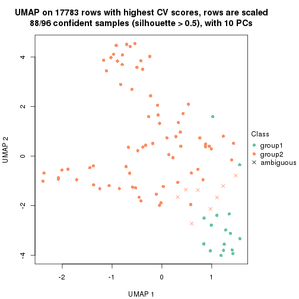
dimension_reduction(res, k = 3, method = "UMAP")
dimension_reduction(res, k = 4, method = "UMAP")
dimension_reduction(res, k = 5, method = "UMAP")
dimension_reduction(res, k = 6, method = "UMAP")
Following heatmap shows how subgroups are split when increasing k:
collect_classes(res)
Test correlation between subgroups and known annotations. If the known annotation is numeric, one-way ANOVA test is applied, and if the known annotation is discrete, chi-squared contingency table test is applied.
test_to_known_factors(res)
#> n specimen(p) disease.state(p) individual(p) tissue(p) k
#> CV:hclust 88 9.16e-02 1.000 0.115 3.67e-02 2
#> CV:hclust 91 1.03e-16 0.700 0.593 7.91e-08 3
#> CV:hclust 88 1.56e-13 0.849 0.690 4.80e-06 4
#> CV:hclust 73 8.00e-11 0.368 0.250 1.60e-04 5
#> CV:hclust 70 3.60e-10 0.274 0.202 1.80e-03 6
If matrix rows can be associated to genes, consider to use functional_enrichment(res,
...) to perform function enrichment for the signature genes. See this vignette for more detailed explanations.
The object with results only for a single top-value method and a single partition method can be extracted as:
res = res_list["CV", "kmeans"]
# you can also extract it by
# res = res_list["CV:kmeans"]
A summary of res and all the functions that can be applied to it:
res
#> A 'ConsensusPartition' object with k = 2, 3, 4, 5, 6.
#> On a matrix with 17783 rows and 96 columns.
#> Top rows (1000, 2000, 3000, 4000, 5000) are extracted by 'CV' method.
#> Subgroups are detected by 'kmeans' method.
#> Performed in total 1250 partitions by row resampling.
#> Best k for subgroups seems to be 3.
#>
#> Following methods can be applied to this 'ConsensusPartition' object:
#> [1] "cola_report" "collect_classes" "collect_plots"
#> [4] "collect_stats" "colnames" "compare_signatures"
#> [7] "consensus_heatmap" "dimension_reduction" "functional_enrichment"
#> [10] "get_anno_col" "get_anno" "get_classes"
#> [13] "get_consensus" "get_matrix" "get_membership"
#> [16] "get_param" "get_signatures" "get_stats"
#> [19] "is_best_k" "is_stable_k" "membership_heatmap"
#> [22] "ncol" "nrow" "plot_ecdf"
#> [25] "rownames" "select_partition_number" "show"
#> [28] "suggest_best_k" "test_to_known_factors"
collect_plots() function collects all the plots made from res for all k (number of partitions)
into one single page to provide an easy and fast comparison between different k.
collect_plots(res)
The plots are:
k and the heatmap of
predicted classes for each k.k.k.k.All the plots in panels can be made by individual functions and they are plotted later in this section.
select_partition_number() produces several plots showing different
statistics for choosing “optimized” k. There are following statistics:
k;k, the area increased is defined as \(A_k - A_{k-1}\).The detailed explanations of these statistics can be found in the cola vignette.
Generally speaking, lower PAC score, higher mean silhouette score or higher
concordance corresponds to better partition. Rand index and Jaccard index
measure how similar the current partition is compared to partition with k-1.
If they are too similar, we won't accept k is better than k-1.
select_partition_number(res)
The numeric values for all these statistics can be obtained by get_stats().
get_stats(res)
#> k 1-PAC mean_silhouette concordance area_increased Rand Jaccard
#> 2 2 0.291 0.633 0.780 0.3838 0.611 0.611
#> 3 3 0.821 0.955 0.964 0.4998 0.711 0.568
#> 4 4 0.659 0.723 0.831 0.2484 0.795 0.554
#> 5 5 0.685 0.729 0.837 0.0918 0.848 0.519
#> 6 6 0.725 0.652 0.745 0.0490 0.925 0.666
suggest_best_k() suggests the best \(k\) based on these statistics. The rules are as follows:
suggest_best_k(res)
#> [1] 3
Following shows the table of the partitions (You need to click the show/hide
code output link to see it). The membership matrix (columns with name p*)
is inferred by
clue::cl_consensus()
function with the SE method. Basically the value in the membership matrix
represents the probability to belong to a certain group. The finall class
label for an item is determined with the group with highest probability it
belongs to.
In get_classes() function, the entropy is calculated from the membership
matrix and the silhouette score is calculated from the consensus matrix.
cbind(get_classes(res, k = 2), get_membership(res, k = 2))
#> class entropy silhouette p1 p2
#> GSM771247 1 0.7139 0.703 0.804 0.196
#> GSM771246 1 0.7139 0.697 0.804 0.196
#> GSM771245 1 0.7139 0.703 0.804 0.196
#> GSM771169 1 0.2948 0.634 0.948 0.052
#> GSM771171 1 0.2948 0.634 0.948 0.052
#> GSM771175 1 0.9922 0.543 0.552 0.448
#> GSM771172 1 0.7219 0.695 0.800 0.200
#> GSM771174 1 0.9922 0.543 0.552 0.448
#> GSM771178 1 0.2948 0.634 0.948 0.052
#> GSM771176 1 0.7139 0.703 0.804 0.196
#> GSM771181 1 0.3114 0.632 0.944 0.056
#> GSM771179 1 0.8763 0.701 0.704 0.296
#> GSM771184 1 0.7674 0.702 0.776 0.224
#> GSM771182 1 0.9977 0.570 0.528 0.472
#> GSM771185 1 0.9909 0.550 0.556 0.444
#> GSM771186 1 0.9996 0.566 0.512 0.488
#> GSM771188 1 0.7674 0.703 0.776 0.224
#> GSM771193 1 0.0938 0.621 0.988 0.012
#> GSM771192 1 0.9922 0.616 0.552 0.448
#> GSM771189 2 0.9933 -0.354 0.452 0.548
#> GSM771194 1 0.9661 0.625 0.608 0.392
#> GSM771191 1 0.9732 0.613 0.596 0.404
#> GSM771202 1 0.7883 0.704 0.764 0.236
#> GSM771200 1 0.8144 0.705 0.748 0.252
#> GSM771206 1 0.9732 0.613 0.596 0.404
#> GSM771208 1 0.9993 0.547 0.516 0.484
#> GSM771207 1 0.2948 0.634 0.948 0.052
#> GSM771209 1 0.9393 0.685 0.644 0.356
#> GSM771211 1 0.7950 0.705 0.760 0.240
#> GSM771212 1 0.9993 0.547 0.516 0.484
#> GSM771214 2 0.9922 -0.408 0.448 0.552
#> GSM771213 2 0.9996 -0.399 0.488 0.512
#> GSM771216 2 0.9988 -0.401 0.480 0.520
#> GSM771217 1 0.9922 0.543 0.552 0.448
#> GSM771219 1 0.2948 0.634 0.948 0.052
#> GSM771218 1 0.9635 0.629 0.612 0.388
#> GSM771222 1 0.7745 0.703 0.772 0.228
#> GSM771220 1 0.2948 0.634 0.948 0.052
#> GSM771226 1 0.3114 0.632 0.944 0.056
#> GSM771223 1 0.9710 0.618 0.600 0.400
#> GSM771225 1 0.9922 0.616 0.552 0.448
#> GSM771232 1 0.9970 0.593 0.532 0.468
#> GSM771235 1 0.3114 0.632 0.944 0.056
#> GSM771234 1 0.3114 0.632 0.944 0.056
#> GSM771242 1 0.2948 0.634 0.948 0.052
#> GSM771239 1 1.0000 0.546 0.504 0.496
#> GSM771240 1 0.9710 0.618 0.600 0.400
#> GSM771241 1 0.2948 0.634 0.948 0.052
#> GSM771197 1 0.3114 0.632 0.944 0.056
#> GSM771195 1 0.9552 0.677 0.624 0.376
#> GSM771198 1 0.3114 0.632 0.944 0.056
#> GSM771199 1 0.3114 0.632 0.944 0.056
#> GSM771204 1 0.9710 0.618 0.600 0.400
#> GSM771205 1 0.8207 0.705 0.744 0.256
#> GSM771229 1 0.7745 0.703 0.772 0.228
#> GSM771227 1 0.9552 0.677 0.624 0.376
#> GSM771230 1 0.9922 0.543 0.552 0.448
#> GSM771231 1 0.9710 0.618 0.600 0.400
#> GSM771238 1 0.9710 0.618 0.600 0.400
#> GSM771236 1 0.9427 0.685 0.640 0.360
#> GSM771154 1 0.9732 0.613 0.596 0.404
#> GSM771152 1 1.0000 0.546 0.504 0.496
#> GSM771156 1 0.9522 0.680 0.628 0.372
#> GSM771157 1 0.9732 0.613 0.596 0.404
#> GSM771155 1 0.9775 0.603 0.588 0.412
#> GSM771160 1 0.3114 0.632 0.944 0.056
#> GSM771161 1 0.0000 0.617 1.000 0.000
#> GSM771159 1 0.9922 0.616 0.552 0.448
#> GSM771165 1 0.9922 0.543 0.552 0.448
#> GSM771166 1 0.2948 0.634 0.948 0.052
#> GSM771167 1 0.9710 0.618 0.600 0.400
#> GSM771168 1 0.7745 0.703 0.772 0.228
#> GSM771163 1 0.9552 0.677 0.624 0.376
#> GSM771244 2 0.0000 0.854 0.000 1.000
#> GSM771170 1 0.9460 0.683 0.636 0.364
#> GSM771173 2 0.0000 0.854 0.000 1.000
#> GSM771177 2 0.0000 0.854 0.000 1.000
#> GSM771180 2 0.0000 0.854 0.000 1.000
#> GSM771183 2 0.0000 0.854 0.000 1.000
#> GSM771187 2 0.0000 0.854 0.000 1.000
#> GSM771190 2 0.0000 0.854 0.000 1.000
#> GSM771201 2 0.0000 0.854 0.000 1.000
#> GSM771210 2 0.9248 0.185 0.340 0.660
#> GSM771215 2 0.0000 0.854 0.000 1.000
#> GSM771221 2 0.0000 0.854 0.000 1.000
#> GSM771224 1 0.6623 0.680 0.828 0.172
#> GSM771233 2 0.0000 0.854 0.000 1.000
#> GSM771243 2 0.0000 0.854 0.000 1.000
#> GSM771196 2 0.0000 0.854 0.000 1.000
#> GSM771203 2 0.0000 0.854 0.000 1.000
#> GSM771228 2 0.0000 0.854 0.000 1.000
#> GSM771237 2 0.0000 0.854 0.000 1.000
#> GSM771153 2 0.0000 0.854 0.000 1.000
#> GSM771158 2 0.0000 0.854 0.000 1.000
#> GSM771162 2 0.0000 0.854 0.000 1.000
#> GSM771164 2 0.0000 0.854 0.000 1.000
cbind(get_classes(res, k = 3), get_membership(res, k = 3))
#> class entropy silhouette p1 p2 p3
#> GSM771247 1 0.0424 0.945 0.992 0.000 0.008
#> GSM771246 1 0.3116 0.920 0.892 0.000 0.108
#> GSM771245 1 0.0424 0.945 0.992 0.000 0.008
#> GSM771169 3 0.0000 0.998 0.000 0.000 1.000
#> GSM771171 3 0.0000 0.998 0.000 0.000 1.000
#> GSM771175 1 0.0424 0.943 0.992 0.008 0.000
#> GSM771172 1 0.4861 0.839 0.800 0.008 0.192
#> GSM771174 1 0.0424 0.943 0.992 0.008 0.000
#> GSM771178 1 0.4796 0.813 0.780 0.000 0.220
#> GSM771176 1 0.0424 0.945 0.992 0.000 0.008
#> GSM771181 3 0.0000 0.998 0.000 0.000 1.000
#> GSM771179 1 0.3532 0.919 0.884 0.008 0.108
#> GSM771184 1 0.4755 0.843 0.808 0.008 0.184
#> GSM771182 1 0.0747 0.944 0.984 0.016 0.000
#> GSM771185 1 0.0424 0.943 0.992 0.008 0.000
#> GSM771186 1 0.3183 0.929 0.908 0.016 0.076
#> GSM771188 1 0.0424 0.945 0.992 0.000 0.008
#> GSM771193 3 0.0000 0.998 0.000 0.000 1.000
#> GSM771192 1 0.3445 0.924 0.896 0.016 0.088
#> GSM771189 1 0.1031 0.942 0.976 0.024 0.000
#> GSM771194 1 0.0848 0.944 0.984 0.008 0.008
#> GSM771191 1 0.0848 0.944 0.984 0.008 0.008
#> GSM771202 1 0.3532 0.919 0.884 0.008 0.108
#> GSM771200 1 0.3532 0.919 0.884 0.008 0.108
#> GSM771206 1 0.0424 0.945 0.992 0.000 0.008
#> GSM771208 1 0.0747 0.944 0.984 0.016 0.000
#> GSM771207 3 0.0000 0.998 0.000 0.000 1.000
#> GSM771209 1 0.3043 0.930 0.908 0.008 0.084
#> GSM771211 1 0.3116 0.920 0.892 0.000 0.108
#> GSM771212 1 0.0747 0.944 0.984 0.016 0.000
#> GSM771214 1 0.1031 0.942 0.976 0.024 0.000
#> GSM771213 1 0.0424 0.943 0.992 0.008 0.000
#> GSM771216 1 0.1031 0.942 0.976 0.024 0.000
#> GSM771217 1 0.0424 0.943 0.992 0.008 0.000
#> GSM771219 3 0.0000 0.998 0.000 0.000 1.000
#> GSM771218 1 0.0424 0.945 0.992 0.000 0.008
#> GSM771222 1 0.4861 0.839 0.800 0.008 0.192
#> GSM771220 3 0.0000 0.998 0.000 0.000 1.000
#> GSM771226 3 0.0000 0.998 0.000 0.000 1.000
#> GSM771223 1 0.0848 0.944 0.984 0.008 0.008
#> GSM771225 1 0.3528 0.923 0.892 0.016 0.092
#> GSM771232 1 0.3183 0.929 0.908 0.016 0.076
#> GSM771235 3 0.0000 0.998 0.000 0.000 1.000
#> GSM771234 3 0.0000 0.998 0.000 0.000 1.000
#> GSM771242 3 0.0000 0.998 0.000 0.000 1.000
#> GSM771239 1 0.0747 0.944 0.984 0.016 0.000
#> GSM771240 1 0.0424 0.943 0.992 0.008 0.000
#> GSM771241 3 0.0000 0.998 0.000 0.000 1.000
#> GSM771197 3 0.0000 0.998 0.000 0.000 1.000
#> GSM771195 1 0.3528 0.923 0.892 0.016 0.092
#> GSM771198 3 0.0000 0.998 0.000 0.000 1.000
#> GSM771199 3 0.0000 0.998 0.000 0.000 1.000
#> GSM771204 1 0.0848 0.944 0.984 0.008 0.008
#> GSM771205 1 0.3532 0.919 0.884 0.008 0.108
#> GSM771229 1 0.3532 0.919 0.884 0.008 0.108
#> GSM771227 1 0.3528 0.923 0.892 0.016 0.092
#> GSM771230 1 0.0424 0.943 0.992 0.008 0.000
#> GSM771231 1 0.0424 0.943 0.992 0.008 0.000
#> GSM771238 1 0.0848 0.944 0.984 0.008 0.008
#> GSM771236 1 0.3359 0.926 0.900 0.016 0.084
#> GSM771154 1 0.0424 0.945 0.992 0.000 0.008
#> GSM771152 1 0.0747 0.944 0.984 0.016 0.000
#> GSM771156 1 0.3528 0.923 0.892 0.016 0.092
#> GSM771157 1 0.0424 0.945 0.992 0.000 0.008
#> GSM771155 1 0.0000 0.944 1.000 0.000 0.000
#> GSM771160 3 0.0000 0.998 0.000 0.000 1.000
#> GSM771161 1 0.0892 0.942 0.980 0.000 0.020
#> GSM771159 1 0.3528 0.923 0.892 0.016 0.092
#> GSM771165 1 0.0424 0.943 0.992 0.008 0.000
#> GSM771166 3 0.0424 0.988 0.008 0.000 0.992
#> GSM771167 1 0.0424 0.943 0.992 0.008 0.000
#> GSM771168 1 0.3532 0.919 0.884 0.008 0.108
#> GSM771163 1 0.3528 0.923 0.892 0.016 0.092
#> GSM771244 2 0.0000 0.998 0.000 1.000 0.000
#> GSM771170 1 0.3528 0.923 0.892 0.016 0.092
#> GSM771173 2 0.0424 0.992 0.008 0.992 0.000
#> GSM771177 2 0.0000 0.998 0.000 1.000 0.000
#> GSM771180 2 0.0424 0.992 0.008 0.992 0.000
#> GSM771183 2 0.0000 0.998 0.000 1.000 0.000
#> GSM771187 2 0.0000 0.998 0.000 1.000 0.000
#> GSM771190 2 0.0000 0.998 0.000 1.000 0.000
#> GSM771201 2 0.0424 0.992 0.008 0.992 0.000
#> GSM771210 1 0.0424 0.943 0.992 0.008 0.000
#> GSM771215 2 0.0000 0.998 0.000 1.000 0.000
#> GSM771221 2 0.0000 0.998 0.000 1.000 0.000
#> GSM771224 3 0.1170 0.973 0.016 0.008 0.976
#> GSM771233 2 0.0000 0.998 0.000 1.000 0.000
#> GSM771243 2 0.0000 0.998 0.000 1.000 0.000
#> GSM771196 2 0.0000 0.998 0.000 1.000 0.000
#> GSM771203 2 0.0000 0.998 0.000 1.000 0.000
#> GSM771228 2 0.0000 0.998 0.000 1.000 0.000
#> GSM771237 2 0.0000 0.998 0.000 1.000 0.000
#> GSM771153 2 0.0000 0.998 0.000 1.000 0.000
#> GSM771158 2 0.0000 0.998 0.000 1.000 0.000
#> GSM771162 2 0.0424 0.992 0.008 0.992 0.000
#> GSM771164 2 0.0000 0.998 0.000 1.000 0.000
cbind(get_classes(res, k = 4), get_membership(res, k = 4))
#> class entropy silhouette p1 p2 p3 p4
#> GSM771247 1 0.0592 0.701 0.984 0.000 0.000 0.016
#> GSM771246 1 0.0469 0.703 0.988 0.000 0.000 0.012
#> GSM771245 4 0.4564 0.778 0.328 0.000 0.000 0.672
#> GSM771169 3 0.4941 0.242 0.436 0.000 0.564 0.000
#> GSM771171 3 0.0592 0.916 0.016 0.000 0.984 0.000
#> GSM771175 4 0.1557 0.592 0.056 0.000 0.000 0.944
#> GSM771172 1 0.0000 0.711 1.000 0.000 0.000 0.000
#> GSM771174 4 0.1474 0.597 0.052 0.000 0.000 0.948
#> GSM771178 1 0.3672 0.553 0.824 0.000 0.164 0.012
#> GSM771176 4 0.4585 0.776 0.332 0.000 0.000 0.668
#> GSM771181 3 0.0188 0.925 0.004 0.000 0.996 0.000
#> GSM771179 1 0.0188 0.710 0.996 0.000 0.000 0.004
#> GSM771184 1 0.4222 0.709 0.728 0.000 0.000 0.272
#> GSM771182 1 0.4356 0.703 0.708 0.000 0.000 0.292
#> GSM771185 4 0.2760 0.620 0.128 0.000 0.000 0.872
#> GSM771186 1 0.4746 0.647 0.632 0.000 0.000 0.368
#> GSM771188 4 0.4564 0.778 0.328 0.000 0.000 0.672
#> GSM771193 3 0.0895 0.909 0.004 0.000 0.976 0.020
#> GSM771192 1 0.4804 0.633 0.616 0.000 0.000 0.384
#> GSM771189 1 0.5119 0.579 0.556 0.004 0.000 0.440
#> GSM771194 4 0.4564 0.778 0.328 0.000 0.000 0.672
#> GSM771191 4 0.4713 0.754 0.360 0.000 0.000 0.640
#> GSM771202 1 0.0188 0.710 0.996 0.000 0.000 0.004
#> GSM771200 1 0.0188 0.710 0.996 0.000 0.000 0.004
#> GSM771206 4 0.4746 0.746 0.368 0.000 0.000 0.632
#> GSM771208 1 0.0469 0.710 0.988 0.000 0.000 0.012
#> GSM771207 3 0.4898 0.302 0.416 0.000 0.584 0.000
#> GSM771209 1 0.0336 0.708 0.992 0.000 0.000 0.008
#> GSM771211 1 0.0592 0.713 0.984 0.000 0.000 0.016
#> GSM771212 1 0.0469 0.710 0.988 0.000 0.000 0.012
#> GSM771214 1 0.0592 0.707 0.984 0.000 0.000 0.016
#> GSM771213 4 0.4830 0.733 0.392 0.000 0.000 0.608
#> GSM771216 1 0.4999 0.436 0.508 0.000 0.000 0.492
#> GSM771217 4 0.4713 0.755 0.360 0.000 0.000 0.640
#> GSM771219 3 0.0188 0.925 0.004 0.000 0.996 0.000
#> GSM771218 1 0.4222 0.199 0.728 0.000 0.000 0.272
#> GSM771222 1 0.2589 0.724 0.884 0.000 0.000 0.116
#> GSM771220 1 0.4040 0.529 0.752 0.000 0.248 0.000
#> GSM771226 3 0.0188 0.925 0.004 0.000 0.996 0.000
#> GSM771223 4 0.4585 0.776 0.332 0.000 0.000 0.668
#> GSM771225 1 0.4331 0.704 0.712 0.000 0.000 0.288
#> GSM771232 1 0.3975 0.717 0.760 0.000 0.000 0.240
#> GSM771235 3 0.0188 0.925 0.004 0.000 0.996 0.000
#> GSM771234 3 0.0188 0.925 0.004 0.000 0.996 0.000
#> GSM771242 3 0.0188 0.925 0.004 0.000 0.996 0.000
#> GSM771239 1 0.4661 0.665 0.652 0.000 0.000 0.348
#> GSM771240 4 0.4072 0.740 0.252 0.000 0.000 0.748
#> GSM771241 3 0.0188 0.925 0.004 0.000 0.996 0.000
#> GSM771197 3 0.0188 0.925 0.004 0.000 0.996 0.000
#> GSM771195 1 0.4356 0.703 0.708 0.000 0.000 0.292
#> GSM771198 3 0.0188 0.925 0.004 0.000 0.996 0.000
#> GSM771199 3 0.0188 0.925 0.004 0.000 0.996 0.000
#> GSM771204 4 0.4585 0.776 0.332 0.000 0.000 0.668
#> GSM771205 1 0.0188 0.710 0.996 0.000 0.000 0.004
#> GSM771229 1 0.0188 0.710 0.996 0.000 0.000 0.004
#> GSM771227 1 0.4356 0.703 0.708 0.000 0.000 0.292
#> GSM771230 4 0.1474 0.597 0.052 0.000 0.000 0.948
#> GSM771231 4 0.2973 0.648 0.144 0.000 0.000 0.856
#> GSM771238 4 0.4564 0.778 0.328 0.000 0.000 0.672
#> GSM771236 1 0.3942 0.717 0.764 0.000 0.000 0.236
#> GSM771154 4 0.4730 0.750 0.364 0.000 0.000 0.636
#> GSM771152 1 0.4746 0.647 0.632 0.000 0.000 0.368
#> GSM771156 1 0.4356 0.703 0.708 0.000 0.000 0.292
#> GSM771157 1 0.4164 0.226 0.736 0.000 0.000 0.264
#> GSM771155 1 0.4585 0.263 0.668 0.000 0.000 0.332
#> GSM771160 3 0.0188 0.925 0.004 0.000 0.996 0.000
#> GSM771161 4 0.4564 0.778 0.328 0.000 0.000 0.672
#> GSM771159 1 0.4331 0.704 0.712 0.000 0.000 0.288
#> GSM771165 4 0.1474 0.597 0.052 0.000 0.000 0.948
#> GSM771166 1 0.7128 0.318 0.492 0.000 0.372 0.136
#> GSM771167 4 0.2973 0.648 0.144 0.000 0.000 0.856
#> GSM771168 1 0.0188 0.710 0.996 0.000 0.000 0.004
#> GSM771163 1 0.4356 0.703 0.708 0.000 0.000 0.292
#> GSM771244 2 0.0000 0.922 0.000 1.000 0.000 0.000
#> GSM771170 1 0.3942 0.717 0.764 0.000 0.000 0.236
#> GSM771173 2 0.4608 0.679 0.004 0.692 0.000 0.304
#> GSM771177 2 0.0000 0.922 0.000 1.000 0.000 0.000
#> GSM771180 2 0.4741 0.649 0.004 0.668 0.000 0.328
#> GSM771183 2 0.0524 0.921 0.000 0.988 0.004 0.008
#> GSM771187 2 0.0000 0.922 0.000 1.000 0.000 0.000
#> GSM771190 2 0.0000 0.922 0.000 1.000 0.000 0.000
#> GSM771201 2 0.4608 0.679 0.004 0.692 0.000 0.304
#> GSM771210 4 0.3486 0.721 0.188 0.000 0.000 0.812
#> GSM771215 2 0.0336 0.922 0.000 0.992 0.000 0.008
#> GSM771221 2 0.0524 0.921 0.000 0.988 0.004 0.008
#> GSM771224 4 0.7901 -0.369 0.348 0.000 0.296 0.356
#> GSM771233 2 0.0524 0.921 0.000 0.988 0.004 0.008
#> GSM771243 2 0.0000 0.922 0.000 1.000 0.000 0.000
#> GSM771196 2 0.0000 0.922 0.000 1.000 0.000 0.000
#> GSM771203 2 0.0524 0.921 0.000 0.988 0.004 0.008
#> GSM771228 2 0.0524 0.921 0.000 0.988 0.004 0.008
#> GSM771237 2 0.0000 0.922 0.000 1.000 0.000 0.000
#> GSM771153 2 0.0000 0.922 0.000 1.000 0.000 0.000
#> GSM771158 2 0.0524 0.921 0.000 0.988 0.004 0.008
#> GSM771162 2 0.4720 0.655 0.004 0.672 0.000 0.324
#> GSM771164 2 0.0524 0.921 0.000 0.988 0.004 0.008
cbind(get_classes(res, k = 5), get_membership(res, k = 5))
#> class entropy silhouette p1 p2 p3 p4 p5
#> GSM771247 1 0.3471 0.794 0.836 0.000 0.000 0.072 0.092
#> GSM771246 1 0.1768 0.810 0.924 0.000 0.000 0.072 0.004
#> GSM771245 4 0.1168 0.842 0.032 0.000 0.000 0.960 0.008
#> GSM771169 1 0.4182 0.694 0.784 0.000 0.164 0.016 0.036
#> GSM771171 3 0.4990 0.325 0.384 0.000 0.580 0.000 0.036
#> GSM771175 5 0.3508 0.442 0.000 0.000 0.000 0.252 0.748
#> GSM771172 1 0.1894 0.809 0.920 0.000 0.000 0.072 0.008
#> GSM771174 5 0.4126 0.199 0.000 0.000 0.000 0.380 0.620
#> GSM771178 1 0.3480 0.786 0.856 0.000 0.028 0.072 0.044
#> GSM771176 4 0.1168 0.842 0.032 0.000 0.000 0.960 0.008
#> GSM771181 3 0.0000 0.936 0.000 0.000 1.000 0.000 0.000
#> GSM771179 1 0.1671 0.811 0.924 0.000 0.000 0.076 0.000
#> GSM771184 1 0.3928 0.283 0.700 0.000 0.000 0.004 0.296
#> GSM771182 5 0.4323 0.510 0.332 0.000 0.000 0.012 0.656
#> GSM771185 4 0.5353 0.312 0.064 0.000 0.000 0.576 0.360
#> GSM771186 5 0.2930 0.644 0.164 0.000 0.000 0.004 0.832
#> GSM771188 4 0.1168 0.842 0.032 0.000 0.000 0.960 0.008
#> GSM771193 3 0.4251 0.729 0.004 0.000 0.756 0.200 0.040
#> GSM771192 5 0.2411 0.653 0.108 0.000 0.000 0.008 0.884
#> GSM771189 5 0.1408 0.634 0.044 0.000 0.000 0.008 0.948
#> GSM771194 4 0.1041 0.843 0.032 0.000 0.000 0.964 0.004
#> GSM771191 4 0.2905 0.811 0.036 0.000 0.000 0.868 0.096
#> GSM771202 1 0.1671 0.811 0.924 0.000 0.000 0.076 0.000
#> GSM771200 1 0.1671 0.811 0.924 0.000 0.000 0.076 0.000
#> GSM771206 4 0.5180 0.655 0.196 0.000 0.000 0.684 0.120
#> GSM771208 1 0.4818 0.712 0.708 0.000 0.000 0.080 0.212
#> GSM771207 1 0.4182 0.694 0.784 0.000 0.164 0.016 0.036
#> GSM771209 1 0.2172 0.807 0.908 0.000 0.000 0.076 0.016
#> GSM771211 1 0.2124 0.758 0.900 0.000 0.000 0.004 0.096
#> GSM771212 1 0.4818 0.712 0.708 0.000 0.000 0.080 0.212
#> GSM771214 1 0.5215 0.681 0.664 0.000 0.000 0.096 0.240
#> GSM771213 4 0.5696 0.556 0.200 0.000 0.000 0.628 0.172
#> GSM771216 5 0.4197 0.615 0.148 0.000 0.000 0.076 0.776
#> GSM771217 4 0.4221 0.687 0.032 0.000 0.000 0.732 0.236
#> GSM771219 3 0.0880 0.926 0.000 0.000 0.968 0.000 0.032
#> GSM771218 1 0.5808 0.566 0.608 0.000 0.000 0.232 0.160
#> GSM771222 1 0.0703 0.770 0.976 0.000 0.000 0.000 0.024
#> GSM771220 1 0.3279 0.788 0.868 0.000 0.028 0.064 0.040
#> GSM771226 3 0.0000 0.936 0.000 0.000 1.000 0.000 0.000
#> GSM771223 4 0.1195 0.842 0.028 0.000 0.000 0.960 0.012
#> GSM771225 5 0.4533 0.452 0.448 0.000 0.000 0.008 0.544
#> GSM771232 1 0.2966 0.712 0.848 0.000 0.000 0.016 0.136
#> GSM771235 3 0.0955 0.925 0.004 0.000 0.968 0.000 0.028
#> GSM771234 3 0.0000 0.936 0.000 0.000 1.000 0.000 0.000
#> GSM771242 3 0.0609 0.932 0.000 0.000 0.980 0.000 0.020
#> GSM771239 5 0.4193 0.592 0.304 0.000 0.000 0.012 0.684
#> GSM771240 4 0.1310 0.838 0.024 0.000 0.000 0.956 0.020
#> GSM771241 3 0.0609 0.932 0.000 0.000 0.980 0.000 0.020
#> GSM771197 3 0.0000 0.936 0.000 0.000 1.000 0.000 0.000
#> GSM771195 5 0.4522 0.455 0.440 0.000 0.000 0.008 0.552
#> GSM771198 3 0.0000 0.936 0.000 0.000 1.000 0.000 0.000
#> GSM771199 3 0.0000 0.936 0.000 0.000 1.000 0.000 0.000
#> GSM771204 4 0.1399 0.841 0.028 0.000 0.000 0.952 0.020
#> GSM771205 1 0.1671 0.811 0.924 0.000 0.000 0.076 0.000
#> GSM771229 1 0.1768 0.810 0.924 0.000 0.000 0.072 0.004
#> GSM771227 5 0.4517 0.458 0.436 0.000 0.000 0.008 0.556
#> GSM771230 5 0.5401 0.151 0.060 0.000 0.000 0.404 0.536
#> GSM771231 4 0.4670 0.608 0.076 0.000 0.000 0.724 0.200
#> GSM771238 4 0.1041 0.843 0.032 0.000 0.000 0.964 0.004
#> GSM771236 1 0.2891 0.664 0.824 0.000 0.000 0.000 0.176
#> GSM771154 4 0.4624 0.725 0.144 0.000 0.000 0.744 0.112
#> GSM771152 5 0.2136 0.648 0.088 0.000 0.000 0.008 0.904
#> GSM771156 5 0.4497 0.464 0.424 0.000 0.000 0.008 0.568
#> GSM771157 1 0.5872 0.559 0.600 0.000 0.000 0.232 0.168
#> GSM771155 1 0.6268 0.339 0.536 0.000 0.000 0.204 0.260
#> GSM771160 3 0.0000 0.936 0.000 0.000 1.000 0.000 0.000
#> GSM771161 4 0.1168 0.842 0.032 0.000 0.000 0.960 0.008
#> GSM771159 5 0.4533 0.452 0.448 0.000 0.000 0.008 0.544
#> GSM771165 5 0.5401 0.151 0.060 0.000 0.000 0.404 0.536
#> GSM771166 1 0.5363 0.417 0.664 0.000 0.100 0.004 0.232
#> GSM771167 4 0.4670 0.608 0.076 0.000 0.000 0.724 0.200
#> GSM771168 1 0.1768 0.810 0.924 0.000 0.000 0.072 0.004
#> GSM771163 5 0.4517 0.458 0.436 0.000 0.000 0.008 0.556
#> GSM771244 2 0.0000 0.993 0.000 1.000 0.000 0.000 0.000
#> GSM771170 1 0.2732 0.676 0.840 0.000 0.000 0.000 0.160
#> GSM771173 5 0.3612 0.513 0.000 0.268 0.000 0.000 0.732
#> GSM771177 2 0.0000 0.993 0.000 1.000 0.000 0.000 0.000
#> GSM771180 5 0.3612 0.513 0.000 0.268 0.000 0.000 0.732
#> GSM771183 2 0.0162 0.993 0.000 0.996 0.000 0.004 0.000
#> GSM771187 2 0.0000 0.993 0.000 1.000 0.000 0.000 0.000
#> GSM771190 2 0.0960 0.978 0.004 0.972 0.000 0.016 0.008
#> GSM771201 5 0.3586 0.514 0.000 0.264 0.000 0.000 0.736
#> GSM771210 4 0.1741 0.824 0.024 0.000 0.000 0.936 0.040
#> GSM771215 2 0.0932 0.980 0.004 0.972 0.000 0.020 0.004
#> GSM771221 2 0.0290 0.992 0.000 0.992 0.000 0.008 0.000
#> GSM771224 5 0.4337 0.540 0.056 0.000 0.196 0.000 0.748
#> GSM771233 2 0.0290 0.992 0.000 0.992 0.000 0.008 0.000
#> GSM771243 2 0.0000 0.993 0.000 1.000 0.000 0.000 0.000
#> GSM771196 2 0.0000 0.993 0.000 1.000 0.000 0.000 0.000
#> GSM771203 2 0.0162 0.993 0.000 0.996 0.000 0.004 0.000
#> GSM771228 2 0.0290 0.992 0.000 0.992 0.000 0.008 0.000
#> GSM771237 2 0.0960 0.978 0.004 0.972 0.000 0.016 0.008
#> GSM771153 2 0.0000 0.993 0.000 1.000 0.000 0.000 0.000
#> GSM771158 2 0.0290 0.992 0.000 0.992 0.000 0.008 0.000
#> GSM771162 5 0.3612 0.513 0.000 0.268 0.000 0.000 0.732
#> GSM771164 2 0.0290 0.992 0.000 0.992 0.000 0.008 0.000
cbind(get_classes(res, k = 6), get_membership(res, k = 6))
#> class entropy silhouette p1 p2 p3 p4 p5 p6
#> GSM771247 1 0.3845 0.642 0.772 0.000 0.000 0.000 0.088 0.140
#> GSM771246 1 0.1082 0.747 0.956 0.000 0.000 0.004 0.000 0.040
#> GSM771245 4 0.0603 0.769 0.016 0.000 0.000 0.980 0.004 0.000
#> GSM771169 1 0.3098 0.691 0.844 0.000 0.088 0.000 0.004 0.064
#> GSM771171 1 0.4723 0.462 0.636 0.000 0.296 0.000 0.004 0.064
#> GSM771175 5 0.5533 0.420 0.000 0.000 0.000 0.132 0.448 0.420
#> GSM771172 1 0.0000 0.755 1.000 0.000 0.000 0.000 0.000 0.000
#> GSM771174 6 0.6010 -0.365 0.000 0.000 0.000 0.240 0.360 0.400
#> GSM771178 1 0.2198 0.733 0.908 0.000 0.008 0.012 0.008 0.064
#> GSM771176 4 0.0603 0.769 0.016 0.000 0.000 0.980 0.004 0.000
#> GSM771181 3 0.0000 0.973 0.000 0.000 1.000 0.000 0.000 0.000
#> GSM771179 1 0.1226 0.747 0.952 0.000 0.000 0.004 0.004 0.040
#> GSM771184 1 0.4410 0.336 0.560 0.000 0.000 0.000 0.412 0.028
#> GSM771182 5 0.4496 0.433 0.156 0.000 0.000 0.000 0.708 0.136
#> GSM771185 4 0.5970 0.124 0.000 0.000 0.000 0.396 0.380 0.224
#> GSM771186 5 0.4469 0.591 0.052 0.000 0.000 0.004 0.668 0.276
#> GSM771188 4 0.0603 0.769 0.016 0.000 0.000 0.980 0.004 0.000
#> GSM771193 4 0.5385 0.210 0.008 0.000 0.332 0.572 0.008 0.080
#> GSM771192 5 0.3684 0.584 0.004 0.000 0.000 0.004 0.692 0.300
#> GSM771189 5 0.3742 0.563 0.000 0.000 0.000 0.004 0.648 0.348
#> GSM771194 4 0.0748 0.769 0.016 0.000 0.000 0.976 0.004 0.004
#> GSM771191 6 0.4932 0.104 0.044 0.000 0.000 0.472 0.008 0.476
#> GSM771202 1 0.1226 0.747 0.952 0.000 0.000 0.004 0.004 0.040
#> GSM771200 1 0.1226 0.747 0.952 0.000 0.000 0.004 0.004 0.040
#> GSM771206 6 0.5701 0.390 0.148 0.000 0.000 0.356 0.004 0.492
#> GSM771208 6 0.5675 0.344 0.428 0.000 0.000 0.008 0.120 0.444
#> GSM771207 1 0.3098 0.691 0.844 0.000 0.088 0.000 0.004 0.064
#> GSM771209 1 0.2700 0.605 0.836 0.000 0.000 0.004 0.004 0.156
#> GSM771211 1 0.3738 0.667 0.752 0.000 0.000 0.000 0.208 0.040
#> GSM771212 6 0.5675 0.344 0.428 0.000 0.000 0.008 0.120 0.444
#> GSM771214 6 0.5672 0.394 0.384 0.000 0.000 0.008 0.124 0.484
#> GSM771213 6 0.6273 0.509 0.148 0.000 0.000 0.232 0.064 0.556
#> GSM771216 6 0.4536 0.234 0.012 0.000 0.000 0.024 0.356 0.608
#> GSM771217 6 0.5831 0.311 0.028 0.000 0.000 0.324 0.112 0.536
#> GSM771219 3 0.2173 0.917 0.028 0.000 0.904 0.000 0.004 0.064
#> GSM771218 6 0.5408 0.405 0.436 0.000 0.000 0.048 0.032 0.484
#> GSM771222 1 0.2531 0.715 0.856 0.000 0.000 0.000 0.132 0.012
#> GSM771220 1 0.1606 0.742 0.932 0.000 0.008 0.000 0.004 0.056
#> GSM771226 3 0.0000 0.973 0.000 0.000 1.000 0.000 0.000 0.000
#> GSM771223 4 0.2095 0.736 0.016 0.000 0.000 0.904 0.004 0.076
#> GSM771225 5 0.3323 0.484 0.240 0.000 0.000 0.000 0.752 0.008
#> GSM771232 1 0.4524 0.374 0.584 0.000 0.000 0.000 0.376 0.040
#> GSM771235 3 0.1616 0.926 0.000 0.000 0.932 0.000 0.048 0.020
#> GSM771234 3 0.0146 0.973 0.000 0.000 0.996 0.000 0.000 0.004
#> GSM771242 3 0.1219 0.951 0.004 0.000 0.948 0.000 0.000 0.048
#> GSM771239 5 0.3129 0.540 0.152 0.000 0.000 0.004 0.820 0.024
#> GSM771240 4 0.0951 0.760 0.008 0.000 0.000 0.968 0.004 0.020
#> GSM771241 3 0.1219 0.951 0.004 0.000 0.948 0.000 0.000 0.048
#> GSM771197 3 0.0146 0.973 0.000 0.000 0.996 0.000 0.000 0.004
#> GSM771195 5 0.3483 0.473 0.236 0.000 0.000 0.000 0.748 0.016
#> GSM771198 3 0.0146 0.973 0.000 0.000 0.996 0.000 0.000 0.004
#> GSM771199 3 0.0146 0.973 0.000 0.000 0.996 0.000 0.000 0.004
#> GSM771204 4 0.2203 0.730 0.016 0.000 0.000 0.896 0.004 0.084
#> GSM771205 1 0.1296 0.744 0.948 0.000 0.000 0.004 0.004 0.044
#> GSM771229 1 0.0692 0.754 0.976 0.000 0.000 0.004 0.000 0.020
#> GSM771227 5 0.3534 0.464 0.244 0.000 0.000 0.000 0.740 0.016
#> GSM771230 5 0.5958 0.238 0.000 0.000 0.000 0.248 0.448 0.304
#> GSM771231 4 0.5492 0.454 0.016 0.000 0.000 0.584 0.288 0.112
#> GSM771238 4 0.0862 0.769 0.016 0.000 0.000 0.972 0.004 0.008
#> GSM771236 1 0.3592 0.545 0.656 0.000 0.000 0.000 0.344 0.000
#> GSM771154 6 0.5726 0.345 0.132 0.000 0.000 0.380 0.008 0.480
#> GSM771152 5 0.4283 0.585 0.036 0.000 0.000 0.004 0.672 0.288
#> GSM771156 5 0.3431 0.475 0.228 0.000 0.000 0.000 0.756 0.016
#> GSM771157 6 0.5557 0.442 0.412 0.000 0.000 0.052 0.040 0.496
#> GSM771155 6 0.6339 0.488 0.188 0.000 0.000 0.036 0.276 0.500
#> GSM771160 3 0.0000 0.973 0.000 0.000 1.000 0.000 0.000 0.000
#> GSM771161 4 0.0603 0.769 0.016 0.000 0.000 0.980 0.004 0.000
#> GSM771159 5 0.3323 0.484 0.240 0.000 0.000 0.000 0.752 0.008
#> GSM771165 5 0.5958 0.238 0.000 0.000 0.000 0.248 0.448 0.304
#> GSM771166 1 0.5872 0.436 0.540 0.000 0.048 0.000 0.328 0.084
#> GSM771167 4 0.5492 0.454 0.016 0.000 0.000 0.584 0.288 0.112
#> GSM771168 1 0.0692 0.754 0.976 0.000 0.000 0.004 0.000 0.020
#> GSM771163 5 0.3534 0.464 0.244 0.000 0.000 0.000 0.740 0.016
#> GSM771244 2 0.0547 0.978 0.000 0.980 0.000 0.000 0.000 0.020
#> GSM771170 1 0.3499 0.567 0.680 0.000 0.000 0.000 0.320 0.000
#> GSM771173 5 0.5510 0.538 0.000 0.140 0.000 0.004 0.552 0.304
#> GSM771177 2 0.0458 0.977 0.000 0.984 0.000 0.000 0.000 0.016
#> GSM771180 5 0.5415 0.542 0.000 0.128 0.000 0.004 0.564 0.304
#> GSM771183 2 0.0363 0.978 0.000 0.988 0.000 0.000 0.000 0.012
#> GSM771187 2 0.0547 0.978 0.000 0.980 0.000 0.000 0.000 0.020
#> GSM771190 2 0.1219 0.960 0.000 0.948 0.000 0.004 0.000 0.048
#> GSM771201 5 0.5505 0.536 0.000 0.136 0.000 0.004 0.548 0.312
#> GSM771210 4 0.4072 0.512 0.004 0.000 0.000 0.704 0.032 0.260
#> GSM771215 2 0.0937 0.964 0.000 0.960 0.000 0.000 0.000 0.040
#> GSM771221 2 0.0858 0.972 0.000 0.968 0.000 0.004 0.000 0.028
#> GSM771224 5 0.5082 0.556 0.008 0.000 0.100 0.004 0.652 0.236
#> GSM771233 2 0.0858 0.972 0.000 0.968 0.000 0.004 0.000 0.028
#> GSM771243 2 0.0547 0.978 0.000 0.980 0.000 0.000 0.000 0.020
#> GSM771196 2 0.0547 0.978 0.000 0.980 0.000 0.000 0.000 0.020
#> GSM771203 2 0.0458 0.978 0.000 0.984 0.000 0.000 0.000 0.016
#> GSM771228 2 0.0858 0.972 0.000 0.968 0.000 0.004 0.000 0.028
#> GSM771237 2 0.1219 0.960 0.000 0.948 0.000 0.004 0.000 0.048
#> GSM771153 2 0.0547 0.978 0.000 0.980 0.000 0.000 0.000 0.020
#> GSM771158 2 0.0858 0.972 0.000 0.968 0.000 0.004 0.000 0.028
#> GSM771162 5 0.5510 0.538 0.000 0.140 0.000 0.004 0.552 0.304
#> GSM771164 2 0.0858 0.972 0.000 0.968 0.000 0.004 0.000 0.028
Heatmaps for the consensus matrix. It visualizes the probability of two samples to be in a same group.
consensus_heatmap(res, k = 2)
consensus_heatmap(res, k = 3)
consensus_heatmap(res, k = 4)
consensus_heatmap(res, k = 5)
consensus_heatmap(res, k = 6)

Heatmaps for the membership of samples in all partitions to see how consistent they are:
membership_heatmap(res, k = 2)
membership_heatmap(res, k = 3)
membership_heatmap(res, k = 4)
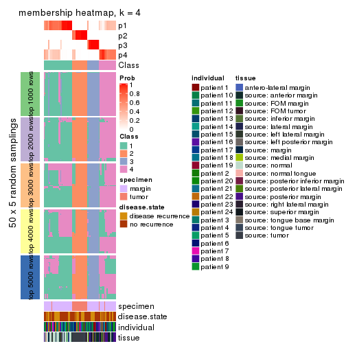
membership_heatmap(res, k = 5)
membership_heatmap(res, k = 6)
As soon as we have had the classes for columns, we can look for signatures which are significantly different between classes which can be candidate marks for certain classes. Following are the heatmaps for signatures.
Signature heatmaps where rows are scaled:
get_signatures(res, k = 2)
#> Error: The width or height of the raster image is zero, maybe you forget to turn off the
#> previous graphic device or it was corrupted. Run `dev.off()` to close it.

get_signatures(res, k = 3)
get_signatures(res, k = 4)
#> Error: The width or height of the raster image is zero, maybe you forget to turn off the
#> previous graphic device or it was corrupted. Run `dev.off()` to close it.

get_signatures(res, k = 5)
#> Error: The width or height of the raster image is zero, maybe you forget to turn off the
#> previous graphic device or it was corrupted. Run `dev.off()` to close it.

get_signatures(res, k = 6)
#> Error: The width or height of the raster image is zero, maybe you forget to turn off the
#> previous graphic device or it was corrupted. Run `dev.off()` to close it.

Signature heatmaps where rows are not scaled:
get_signatures(res, k = 2, scale_rows = FALSE)

get_signatures(res, k = 3, scale_rows = FALSE)
get_signatures(res, k = 4, scale_rows = FALSE)
get_signatures(res, k = 5, scale_rows = FALSE)
get_signatures(res, k = 6, scale_rows = FALSE)
#> Error in mat[ceiling(1:nr/h_ratio), ceiling(1:nc/w_ratio), drop = FALSE]: subscript out of bounds
Compare the overlap of signatures from different k:
compare_signatures(res)
get_signature() returns a data frame invisibly. TO get the list of signatures, the function
call should be assigned to a variable explicitly. In following code, if plot argument is set
to FALSE, no heatmap is plotted while only the differential analysis is performed.
# code only for demonstration
tb = get_signature(res, k = ..., plot = FALSE)
An example of the output of tb is:
#> which_row fdr mean_1 mean_2 scaled_mean_1 scaled_mean_2 km
#> 1 38 0.042760348 8.373488 9.131774 -0.5533452 0.5164555 1
#> 2 40 0.018707592 7.106213 8.469186 -0.6173731 0.5762149 1
#> 3 55 0.019134737 10.221463 11.207825 -0.6159697 0.5749050 1
#> 4 59 0.006059896 5.921854 7.869574 -0.6899429 0.6439467 1
#> 5 60 0.018055526 8.928898 10.211722 -0.6204761 0.5791110 1
#> 6 98 0.009384629 15.714769 14.887706 0.6635654 -0.6193277 2
...
The columns in tb are:
which_row: row indices corresponding to the input matrix.fdr: FDR for the differential test. mean_x: The mean value in group x.scaled_mean_x: The mean value in group x after rows are scaled.km: Row groups if k-means clustering is applied to rows.UMAP plot which shows how samples are separated.
dimension_reduction(res, k = 2, method = "UMAP")
dimension_reduction(res, k = 3, method = "UMAP")
dimension_reduction(res, k = 4, method = "UMAP")
dimension_reduction(res, k = 5, method = "UMAP")
dimension_reduction(res, k = 6, method = "UMAP")
Following heatmap shows how subgroups are split when increasing k:
collect_classes(res)
Test correlation between subgroups and known annotations. If the known annotation is numeric, one-way ANOVA test is applied, and if the known annotation is discrete, chi-squared contingency table test is applied.
test_to_known_factors(res)
#> n specimen(p) disease.state(p) individual(p) tissue(p) k
#> CV:kmeans 91 4.29e-18 0.939 1.000 1.52e-09 2
#> CV:kmeans 96 3.81e-18 0.854 0.882 1.73e-08 3
#> CV:kmeans 88 9.38e-17 0.793 0.996 8.59e-11 4
#> CV:kmeans 81 1.06e-11 0.230 0.847 1.60e-05 5
#> CV:kmeans 66 6.05e-09 0.408 0.486 4.09e-03 6
If matrix rows can be associated to genes, consider to use functional_enrichment(res,
...) to perform function enrichment for the signature genes. See this vignette for more detailed explanations.
The object with results only for a single top-value method and a single partition method can be extracted as:
res = res_list["CV", "skmeans"]
# you can also extract it by
# res = res_list["CV:skmeans"]
A summary of res and all the functions that can be applied to it:
res
#> A 'ConsensusPartition' object with k = 2, 3, 4, 5, 6.
#> On a matrix with 17783 rows and 96 columns.
#> Top rows (1000, 2000, 3000, 4000, 5000) are extracted by 'CV' method.
#> Subgroups are detected by 'skmeans' method.
#> Performed in total 1250 partitions by row resampling.
#> Best k for subgroups seems to be 3.
#>
#> Following methods can be applied to this 'ConsensusPartition' object:
#> [1] "cola_report" "collect_classes" "collect_plots"
#> [4] "collect_stats" "colnames" "compare_signatures"
#> [7] "consensus_heatmap" "dimension_reduction" "functional_enrichment"
#> [10] "get_anno_col" "get_anno" "get_classes"
#> [13] "get_consensus" "get_matrix" "get_membership"
#> [16] "get_param" "get_signatures" "get_stats"
#> [19] "is_best_k" "is_stable_k" "membership_heatmap"
#> [22] "ncol" "nrow" "plot_ecdf"
#> [25] "rownames" "select_partition_number" "show"
#> [28] "suggest_best_k" "test_to_known_factors"
collect_plots() function collects all the plots made from res for all k (number of partitions)
into one single page to provide an easy and fast comparison between different k.
collect_plots(res)
The plots are:
k and the heatmap of
predicted classes for each k.k.k.k.All the plots in panels can be made by individual functions and they are plotted later in this section.
select_partition_number() produces several plots showing different
statistics for choosing “optimized” k. There are following statistics:
k;k, the area increased is defined as \(A_k - A_{k-1}\).The detailed explanations of these statistics can be found in the cola vignette.
Generally speaking, lower PAC score, higher mean silhouette score or higher
concordance corresponds to better partition. Rand index and Jaccard index
measure how similar the current partition is compared to partition with k-1.
If they are too similar, we won't accept k is better than k-1.
select_partition_number(res)
The numeric values for all these statistics can be obtained by get_stats().
get_stats(res)
#> k 1-PAC mean_silhouette concordance area_increased Rand Jaccard
#> 2 2 0.641 0.768 0.905 0.5034 0.498 0.498
#> 3 3 0.799 0.897 0.953 0.3269 0.691 0.457
#> 4 4 0.770 0.819 0.882 0.1323 0.825 0.532
#> 5 5 0.838 0.803 0.910 0.0647 0.901 0.633
#> 6 6 0.792 0.620 0.748 0.0373 0.912 0.618
suggest_best_k() suggests the best \(k\) based on these statistics. The rules are as follows:
suggest_best_k(res)
#> [1] 3
Following shows the table of the partitions (You need to click the show/hide
code output link to see it). The membership matrix (columns with name p*)
is inferred by
clue::cl_consensus()
function with the SE method. Basically the value in the membership matrix
represents the probability to belong to a certain group. The finall class
label for an item is determined with the group with highest probability it
belongs to.
In get_classes() function, the entropy is calculated from the membership
matrix and the silhouette score is calculated from the consensus matrix.
cbind(get_classes(res, k = 2), get_membership(res, k = 2))
#> class entropy silhouette p1 p2
#> GSM771247 1 0.000 0.847 1.000 0.000
#> GSM771246 1 0.000 0.847 1.000 0.000
#> GSM771245 1 0.311 0.809 0.944 0.056
#> GSM771169 1 0.000 0.847 1.000 0.000
#> GSM771171 1 0.000 0.847 1.000 0.000
#> GSM771175 2 0.000 0.933 0.000 1.000
#> GSM771172 1 0.000 0.847 1.000 0.000
#> GSM771174 2 0.000 0.933 0.000 1.000
#> GSM771178 1 0.000 0.847 1.000 0.000
#> GSM771176 1 0.000 0.847 1.000 0.000
#> GSM771181 1 0.000 0.847 1.000 0.000
#> GSM771179 1 0.000 0.847 1.000 0.000
#> GSM771184 1 0.000 0.847 1.000 0.000
#> GSM771182 2 0.000 0.933 0.000 1.000
#> GSM771185 2 0.000 0.933 0.000 1.000
#> GSM771186 2 0.714 0.727 0.196 0.804
#> GSM771188 1 0.000 0.847 1.000 0.000
#> GSM771193 1 0.000 0.847 1.000 0.000
#> GSM771192 2 0.722 0.722 0.200 0.800
#> GSM771189 2 0.000 0.933 0.000 1.000
#> GSM771194 1 0.992 0.351 0.552 0.448
#> GSM771191 1 0.992 0.351 0.552 0.448
#> GSM771202 1 0.000 0.847 1.000 0.000
#> GSM771200 1 0.000 0.847 1.000 0.000
#> GSM771206 1 0.992 0.351 0.552 0.448
#> GSM771208 2 0.000 0.933 0.000 1.000
#> GSM771207 1 0.000 0.847 1.000 0.000
#> GSM771209 1 0.000 0.847 1.000 0.000
#> GSM771211 1 0.000 0.847 1.000 0.000
#> GSM771212 2 0.000 0.933 0.000 1.000
#> GSM771214 2 0.000 0.933 0.000 1.000
#> GSM771213 2 0.000 0.933 0.000 1.000
#> GSM771216 2 0.000 0.933 0.000 1.000
#> GSM771217 2 0.000 0.933 0.000 1.000
#> GSM771219 1 0.000 0.847 1.000 0.000
#> GSM771218 1 0.895 0.561 0.688 0.312
#> GSM771222 1 0.000 0.847 1.000 0.000
#> GSM771220 1 0.000 0.847 1.000 0.000
#> GSM771226 1 0.000 0.847 1.000 0.000
#> GSM771223 1 0.992 0.351 0.552 0.448
#> GSM771225 2 0.722 0.722 0.200 0.800
#> GSM771232 2 0.722 0.722 0.200 0.800
#> GSM771235 1 0.000 0.847 1.000 0.000
#> GSM771234 1 0.000 0.847 1.000 0.000
#> GSM771242 1 0.000 0.847 1.000 0.000
#> GSM771239 2 0.605 0.787 0.148 0.852
#> GSM771240 1 0.992 0.351 0.552 0.448
#> GSM771241 1 0.000 0.847 1.000 0.000
#> GSM771197 1 0.000 0.847 1.000 0.000
#> GSM771195 2 0.992 0.190 0.448 0.552
#> GSM771198 1 0.000 0.847 1.000 0.000
#> GSM771199 1 0.000 0.847 1.000 0.000
#> GSM771204 1 0.992 0.351 0.552 0.448
#> GSM771205 1 0.000 0.847 1.000 0.000
#> GSM771229 1 0.000 0.847 1.000 0.000
#> GSM771227 1 0.993 0.102 0.548 0.452
#> GSM771230 2 0.000 0.933 0.000 1.000
#> GSM771231 1 1.000 0.238 0.508 0.492
#> GSM771238 1 0.992 0.351 0.552 0.448
#> GSM771236 1 0.000 0.847 1.000 0.000
#> GSM771154 1 0.992 0.351 0.552 0.448
#> GSM771152 2 0.000 0.933 0.000 1.000
#> GSM771156 1 0.993 0.102 0.548 0.452
#> GSM771157 1 0.992 0.351 0.552 0.448
#> GSM771155 2 0.795 0.583 0.240 0.760
#> GSM771160 1 0.000 0.847 1.000 0.000
#> GSM771161 1 0.000 0.847 1.000 0.000
#> GSM771159 2 0.722 0.722 0.200 0.800
#> GSM771165 2 0.000 0.933 0.000 1.000
#> GSM771166 1 0.000 0.847 1.000 0.000
#> GSM771167 1 1.000 0.238 0.508 0.492
#> GSM771168 1 0.000 0.847 1.000 0.000
#> GSM771163 1 0.993 0.102 0.548 0.452
#> GSM771244 2 0.000 0.933 0.000 1.000
#> GSM771170 1 0.358 0.793 0.932 0.068
#> GSM771173 2 0.000 0.933 0.000 1.000
#> GSM771177 2 0.000 0.933 0.000 1.000
#> GSM771180 2 0.000 0.933 0.000 1.000
#> GSM771183 2 0.000 0.933 0.000 1.000
#> GSM771187 2 0.000 0.933 0.000 1.000
#> GSM771190 2 0.000 0.933 0.000 1.000
#> GSM771201 2 0.000 0.933 0.000 1.000
#> GSM771210 2 0.000 0.933 0.000 1.000
#> GSM771215 2 0.000 0.933 0.000 1.000
#> GSM771221 2 0.000 0.933 0.000 1.000
#> GSM771224 2 0.992 0.190 0.448 0.552
#> GSM771233 2 0.000 0.933 0.000 1.000
#> GSM771243 2 0.000 0.933 0.000 1.000
#> GSM771196 2 0.000 0.933 0.000 1.000
#> GSM771203 2 0.000 0.933 0.000 1.000
#> GSM771228 2 0.000 0.933 0.000 1.000
#> GSM771237 2 0.000 0.933 0.000 1.000
#> GSM771153 2 0.000 0.933 0.000 1.000
#> GSM771158 2 0.000 0.933 0.000 1.000
#> GSM771162 2 0.000 0.933 0.000 1.000
#> GSM771164 2 0.000 0.933 0.000 1.000
cbind(get_classes(res, k = 3), get_membership(res, k = 3))
#> class entropy silhouette p1 p2 p3
#> GSM771247 1 0.6267 0.118 0.548 0.000 0.452
#> GSM771246 3 0.4346 0.804 0.184 0.000 0.816
#> GSM771245 1 0.0000 0.938 1.000 0.000 0.000
#> GSM771169 3 0.0000 0.950 0.000 0.000 1.000
#> GSM771171 3 0.0000 0.950 0.000 0.000 1.000
#> GSM771175 1 0.4235 0.759 0.824 0.176 0.000
#> GSM771172 3 0.0000 0.950 0.000 0.000 1.000
#> GSM771174 1 0.0000 0.938 1.000 0.000 0.000
#> GSM771178 3 0.0000 0.950 0.000 0.000 1.000
#> GSM771176 1 0.0000 0.938 1.000 0.000 0.000
#> GSM771181 3 0.0000 0.950 0.000 0.000 1.000
#> GSM771179 3 0.4346 0.804 0.184 0.000 0.816
#> GSM771184 3 0.0000 0.950 0.000 0.000 1.000
#> GSM771182 1 0.3752 0.806 0.856 0.144 0.000
#> GSM771185 1 0.0000 0.938 1.000 0.000 0.000
#> GSM771186 2 0.1525 0.931 0.004 0.964 0.032
#> GSM771188 1 0.0000 0.938 1.000 0.000 0.000
#> GSM771193 3 0.0000 0.950 0.000 0.000 1.000
#> GSM771192 2 0.4521 0.782 0.004 0.816 0.180
#> GSM771189 2 0.0237 0.953 0.004 0.996 0.000
#> GSM771194 1 0.0000 0.938 1.000 0.000 0.000
#> GSM771191 1 0.0000 0.938 1.000 0.000 0.000
#> GSM771202 3 0.4346 0.804 0.184 0.000 0.816
#> GSM771200 3 0.4346 0.804 0.184 0.000 0.816
#> GSM771206 1 0.0000 0.938 1.000 0.000 0.000
#> GSM771208 1 0.0237 0.935 0.996 0.004 0.000
#> GSM771207 3 0.0000 0.950 0.000 0.000 1.000
#> GSM771209 1 0.4654 0.695 0.792 0.000 0.208
#> GSM771211 3 0.0000 0.950 0.000 0.000 1.000
#> GSM771212 1 0.0000 0.938 1.000 0.000 0.000
#> GSM771214 2 0.5529 0.559 0.296 0.704 0.000
#> GSM771213 1 0.0000 0.938 1.000 0.000 0.000
#> GSM771216 2 0.3941 0.801 0.156 0.844 0.000
#> GSM771217 1 0.0000 0.938 1.000 0.000 0.000
#> GSM771219 3 0.0000 0.950 0.000 0.000 1.000
#> GSM771218 1 0.0000 0.938 1.000 0.000 0.000
#> GSM771222 3 0.0000 0.950 0.000 0.000 1.000
#> GSM771220 3 0.0000 0.950 0.000 0.000 1.000
#> GSM771226 3 0.0000 0.950 0.000 0.000 1.000
#> GSM771223 1 0.0000 0.938 1.000 0.000 0.000
#> GSM771225 2 0.4555 0.752 0.000 0.800 0.200
#> GSM771232 1 0.9292 0.293 0.516 0.284 0.200
#> GSM771235 3 0.0000 0.950 0.000 0.000 1.000
#> GSM771234 3 0.0000 0.950 0.000 0.000 1.000
#> GSM771242 3 0.0000 0.950 0.000 0.000 1.000
#> GSM771239 1 0.4280 0.819 0.856 0.124 0.020
#> GSM771240 1 0.0000 0.938 1.000 0.000 0.000
#> GSM771241 3 0.0000 0.950 0.000 0.000 1.000
#> GSM771197 3 0.0000 0.950 0.000 0.000 1.000
#> GSM771195 3 0.1411 0.927 0.000 0.036 0.964
#> GSM771198 3 0.0000 0.950 0.000 0.000 1.000
#> GSM771199 3 0.0000 0.950 0.000 0.000 1.000
#> GSM771204 1 0.0000 0.938 1.000 0.000 0.000
#> GSM771205 3 0.4346 0.804 0.184 0.000 0.816
#> GSM771229 3 0.4346 0.804 0.184 0.000 0.816
#> GSM771227 3 0.1411 0.927 0.000 0.036 0.964
#> GSM771230 1 0.0000 0.938 1.000 0.000 0.000
#> GSM771231 1 0.0000 0.938 1.000 0.000 0.000
#> GSM771238 1 0.0000 0.938 1.000 0.000 0.000
#> GSM771236 3 0.0000 0.950 0.000 0.000 1.000
#> GSM771154 1 0.0000 0.938 1.000 0.000 0.000
#> GSM771152 2 0.0892 0.942 0.020 0.980 0.000
#> GSM771156 3 0.1411 0.927 0.000 0.036 0.964
#> GSM771157 1 0.0000 0.938 1.000 0.000 0.000
#> GSM771155 1 0.0000 0.938 1.000 0.000 0.000
#> GSM771160 3 0.0000 0.950 0.000 0.000 1.000
#> GSM771161 1 0.0000 0.938 1.000 0.000 0.000
#> GSM771159 2 0.4555 0.752 0.000 0.800 0.200
#> GSM771165 1 0.0000 0.938 1.000 0.000 0.000
#> GSM771166 3 0.0000 0.950 0.000 0.000 1.000
#> GSM771167 1 0.0000 0.938 1.000 0.000 0.000
#> GSM771168 3 0.4346 0.804 0.184 0.000 0.816
#> GSM771163 3 0.1411 0.927 0.000 0.036 0.964
#> GSM771244 2 0.0000 0.956 0.000 1.000 0.000
#> GSM771170 3 0.0000 0.950 0.000 0.000 1.000
#> GSM771173 2 0.0000 0.956 0.000 1.000 0.000
#> GSM771177 2 0.0000 0.956 0.000 1.000 0.000
#> GSM771180 2 0.0000 0.956 0.000 1.000 0.000
#> GSM771183 2 0.0000 0.956 0.000 1.000 0.000
#> GSM771187 2 0.0000 0.956 0.000 1.000 0.000
#> GSM771190 2 0.0000 0.956 0.000 1.000 0.000
#> GSM771201 2 0.0000 0.956 0.000 1.000 0.000
#> GSM771210 1 0.4346 0.748 0.816 0.184 0.000
#> GSM771215 2 0.0000 0.956 0.000 1.000 0.000
#> GSM771221 2 0.0000 0.956 0.000 1.000 0.000
#> GSM771224 3 0.4399 0.749 0.000 0.188 0.812
#> GSM771233 2 0.0000 0.956 0.000 1.000 0.000
#> GSM771243 2 0.0000 0.956 0.000 1.000 0.000
#> GSM771196 2 0.0000 0.956 0.000 1.000 0.000
#> GSM771203 2 0.0000 0.956 0.000 1.000 0.000
#> GSM771228 2 0.0000 0.956 0.000 1.000 0.000
#> GSM771237 2 0.0000 0.956 0.000 1.000 0.000
#> GSM771153 2 0.0000 0.956 0.000 1.000 0.000
#> GSM771158 2 0.0000 0.956 0.000 1.000 0.000
#> GSM771162 2 0.0000 0.956 0.000 1.000 0.000
#> GSM771164 2 0.0000 0.956 0.000 1.000 0.000
cbind(get_classes(res, k = 4), get_membership(res, k = 4))
#> class entropy silhouette p1 p2 p3 p4
#> GSM771247 4 0.5839 0.393 0.044 0.000 0.352 0.604
#> GSM771246 1 0.4252 0.736 0.744 0.000 0.004 0.252
#> GSM771245 4 0.0707 0.838 0.000 0.000 0.020 0.980
#> GSM771169 3 0.0000 0.955 0.000 0.000 1.000 0.000
#> GSM771171 3 0.0000 0.955 0.000 0.000 1.000 0.000
#> GSM771175 4 0.4072 0.732 0.252 0.000 0.000 0.748
#> GSM771172 1 0.4741 0.678 0.744 0.000 0.228 0.028
#> GSM771174 4 0.4072 0.732 0.252 0.000 0.000 0.748
#> GSM771178 3 0.0817 0.933 0.024 0.000 0.976 0.000
#> GSM771176 4 0.0707 0.838 0.000 0.000 0.020 0.980
#> GSM771181 3 0.0000 0.955 0.000 0.000 1.000 0.000
#> GSM771179 1 0.4252 0.736 0.744 0.000 0.004 0.252
#> GSM771184 1 0.3942 0.601 0.764 0.000 0.236 0.000
#> GSM771182 1 0.2149 0.711 0.912 0.000 0.000 0.088
#> GSM771185 4 0.4072 0.732 0.252 0.000 0.000 0.748
#> GSM771186 1 0.2179 0.735 0.924 0.064 0.000 0.012
#> GSM771188 4 0.0707 0.838 0.000 0.000 0.020 0.980
#> GSM771193 3 0.0000 0.955 0.000 0.000 1.000 0.000
#> GSM771192 3 0.4964 0.623 0.256 0.000 0.716 0.028
#> GSM771189 2 0.4546 0.640 0.256 0.732 0.000 0.012
#> GSM771194 4 0.0707 0.838 0.000 0.000 0.020 0.980
#> GSM771191 4 0.0707 0.828 0.020 0.000 0.000 0.980
#> GSM771202 1 0.4252 0.736 0.744 0.000 0.004 0.252
#> GSM771200 1 0.4252 0.736 0.744 0.000 0.004 0.252
#> GSM771206 4 0.1022 0.823 0.032 0.000 0.000 0.968
#> GSM771208 1 0.4072 0.735 0.748 0.000 0.000 0.252
#> GSM771207 3 0.0000 0.955 0.000 0.000 1.000 0.000
#> GSM771209 1 0.4252 0.736 0.744 0.000 0.004 0.252
#> GSM771211 3 0.3610 0.688 0.200 0.000 0.800 0.000
#> GSM771212 1 0.4072 0.735 0.748 0.000 0.000 0.252
#> GSM771214 2 0.6756 0.409 0.148 0.600 0.000 0.252
#> GSM771213 4 0.1022 0.823 0.032 0.000 0.000 0.968
#> GSM771216 2 0.0469 0.956 0.000 0.988 0.000 0.012
#> GSM771217 4 0.0000 0.835 0.000 0.000 0.000 1.000
#> GSM771219 3 0.0000 0.955 0.000 0.000 1.000 0.000
#> GSM771218 4 0.2868 0.728 0.136 0.000 0.000 0.864
#> GSM771222 1 0.4826 0.647 0.716 0.000 0.264 0.020
#> GSM771220 1 0.4977 0.279 0.540 0.000 0.460 0.000
#> GSM771226 3 0.0000 0.955 0.000 0.000 1.000 0.000
#> GSM771223 4 0.0000 0.835 0.000 0.000 0.000 1.000
#> GSM771225 1 0.2704 0.707 0.876 0.124 0.000 0.000
#> GSM771232 1 0.0817 0.755 0.976 0.000 0.000 0.024
#> GSM771235 3 0.0000 0.955 0.000 0.000 1.000 0.000
#> GSM771234 3 0.0000 0.955 0.000 0.000 1.000 0.000
#> GSM771242 3 0.0000 0.955 0.000 0.000 1.000 0.000
#> GSM771239 1 0.1716 0.727 0.936 0.000 0.000 0.064
#> GSM771240 4 0.0707 0.838 0.000 0.000 0.020 0.980
#> GSM771241 3 0.0000 0.955 0.000 0.000 1.000 0.000
#> GSM771197 3 0.0000 0.955 0.000 0.000 1.000 0.000
#> GSM771195 1 0.2888 0.716 0.872 0.000 0.124 0.004
#> GSM771198 3 0.0000 0.955 0.000 0.000 1.000 0.000
#> GSM771199 3 0.0000 0.955 0.000 0.000 1.000 0.000
#> GSM771204 4 0.0000 0.835 0.000 0.000 0.000 1.000
#> GSM771205 1 0.4252 0.736 0.744 0.000 0.004 0.252
#> GSM771229 1 0.4252 0.736 0.744 0.000 0.004 0.252
#> GSM771227 1 0.2944 0.714 0.868 0.000 0.128 0.004
#> GSM771230 4 0.4072 0.732 0.252 0.000 0.000 0.748
#> GSM771231 4 0.4072 0.732 0.252 0.000 0.000 0.748
#> GSM771238 4 0.0707 0.838 0.000 0.000 0.020 0.980
#> GSM771236 1 0.1256 0.758 0.964 0.000 0.028 0.008
#> GSM771154 4 0.0921 0.825 0.028 0.000 0.000 0.972
#> GSM771152 1 0.2179 0.735 0.924 0.064 0.000 0.012
#> GSM771156 3 0.3873 0.693 0.228 0.000 0.772 0.000
#> GSM771157 4 0.2868 0.728 0.136 0.000 0.000 0.864
#> GSM771155 4 0.4543 0.681 0.324 0.000 0.000 0.676
#> GSM771160 3 0.0000 0.955 0.000 0.000 1.000 0.000
#> GSM771161 4 0.1867 0.816 0.000 0.000 0.072 0.928
#> GSM771159 1 0.2704 0.707 0.876 0.124 0.000 0.000
#> GSM771165 4 0.4072 0.732 0.252 0.000 0.000 0.748
#> GSM771166 3 0.0000 0.955 0.000 0.000 1.000 0.000
#> GSM771167 4 0.4072 0.732 0.252 0.000 0.000 0.748
#> GSM771168 1 0.4252 0.736 0.744 0.000 0.004 0.252
#> GSM771163 1 0.2944 0.714 0.868 0.000 0.128 0.004
#> GSM771244 2 0.0000 0.967 0.000 1.000 0.000 0.000
#> GSM771170 1 0.4803 0.659 0.732 0.012 0.248 0.008
#> GSM771173 2 0.0000 0.967 0.000 1.000 0.000 0.000
#> GSM771177 2 0.0000 0.967 0.000 1.000 0.000 0.000
#> GSM771180 2 0.0000 0.967 0.000 1.000 0.000 0.000
#> GSM771183 2 0.0000 0.967 0.000 1.000 0.000 0.000
#> GSM771187 2 0.0000 0.967 0.000 1.000 0.000 0.000
#> GSM771190 2 0.0000 0.967 0.000 1.000 0.000 0.000
#> GSM771201 2 0.0000 0.967 0.000 1.000 0.000 0.000
#> GSM771210 4 0.4103 0.641 0.000 0.256 0.000 0.744
#> GSM771215 2 0.0000 0.967 0.000 1.000 0.000 0.000
#> GSM771221 2 0.0000 0.967 0.000 1.000 0.000 0.000
#> GSM771224 3 0.0707 0.939 0.020 0.000 0.980 0.000
#> GSM771233 2 0.0000 0.967 0.000 1.000 0.000 0.000
#> GSM771243 2 0.0000 0.967 0.000 1.000 0.000 0.000
#> GSM771196 2 0.0000 0.967 0.000 1.000 0.000 0.000
#> GSM771203 2 0.0000 0.967 0.000 1.000 0.000 0.000
#> GSM771228 2 0.0000 0.967 0.000 1.000 0.000 0.000
#> GSM771237 2 0.0000 0.967 0.000 1.000 0.000 0.000
#> GSM771153 2 0.0000 0.967 0.000 1.000 0.000 0.000
#> GSM771158 2 0.0000 0.967 0.000 1.000 0.000 0.000
#> GSM771162 2 0.0000 0.967 0.000 1.000 0.000 0.000
#> GSM771164 2 0.0000 0.967 0.000 1.000 0.000 0.000
cbind(get_classes(res, k = 5), get_membership(res, k = 5))
#> class entropy silhouette p1 p2 p3 p4 p5
#> GSM771247 3 0.6260 0.3705 0.312 0.000 0.516 0.172 0.000
#> GSM771246 1 0.2690 0.8677 0.844 0.000 0.000 0.000 0.156
#> GSM771245 4 0.0000 0.8481 0.000 0.000 0.000 1.000 0.000
#> GSM771169 3 0.0703 0.9180 0.024 0.000 0.976 0.000 0.000
#> GSM771171 3 0.0404 0.9249 0.012 0.000 0.988 0.000 0.000
#> GSM771175 5 0.4307 -0.1429 0.000 0.000 0.000 0.500 0.500
#> GSM771172 1 0.2690 0.8677 0.844 0.000 0.000 0.000 0.156
#> GSM771174 4 0.4304 0.0876 0.000 0.000 0.000 0.516 0.484
#> GSM771178 3 0.1043 0.9058 0.040 0.000 0.960 0.000 0.000
#> GSM771176 4 0.0000 0.8481 0.000 0.000 0.000 1.000 0.000
#> GSM771181 3 0.0000 0.9303 0.000 0.000 1.000 0.000 0.000
#> GSM771179 1 0.2690 0.8677 0.844 0.000 0.000 0.000 0.156
#> GSM771184 5 0.3039 0.7229 0.012 0.000 0.152 0.000 0.836
#> GSM771182 5 0.2690 0.7789 0.156 0.000 0.000 0.000 0.844
#> GSM771185 4 0.4201 0.2882 0.000 0.000 0.000 0.592 0.408
#> GSM771186 5 0.0162 0.7992 0.004 0.000 0.000 0.000 0.996
#> GSM771188 4 0.0000 0.8481 0.000 0.000 0.000 1.000 0.000
#> GSM771193 3 0.0000 0.9303 0.000 0.000 1.000 0.000 0.000
#> GSM771192 5 0.2891 0.7189 0.000 0.000 0.176 0.000 0.824
#> GSM771189 5 0.3691 0.7637 0.156 0.040 0.000 0.000 0.804
#> GSM771194 4 0.0000 0.8481 0.000 0.000 0.000 1.000 0.000
#> GSM771191 4 0.0703 0.8379 0.024 0.000 0.000 0.976 0.000
#> GSM771202 1 0.2690 0.8677 0.844 0.000 0.000 0.000 0.156
#> GSM771200 1 0.2690 0.8677 0.844 0.000 0.000 0.000 0.156
#> GSM771206 4 0.2648 0.7412 0.152 0.000 0.000 0.848 0.000
#> GSM771208 1 0.0703 0.7729 0.976 0.000 0.000 0.000 0.024
#> GSM771207 3 0.0510 0.9228 0.016 0.000 0.984 0.000 0.000
#> GSM771209 1 0.2690 0.8677 0.844 0.000 0.000 0.000 0.156
#> GSM771211 3 0.4313 0.6879 0.228 0.000 0.732 0.000 0.040
#> GSM771212 1 0.0963 0.7672 0.964 0.000 0.000 0.000 0.036
#> GSM771214 1 0.2127 0.7085 0.892 0.108 0.000 0.000 0.000
#> GSM771213 4 0.4114 0.5990 0.272 0.016 0.000 0.712 0.000
#> GSM771216 2 0.4248 0.7413 0.156 0.780 0.000 0.008 0.056
#> GSM771217 4 0.0510 0.8424 0.016 0.000 0.000 0.984 0.000
#> GSM771219 3 0.0000 0.9303 0.000 0.000 1.000 0.000 0.000
#> GSM771218 1 0.3109 0.5985 0.800 0.000 0.000 0.200 0.000
#> GSM771222 1 0.3852 0.8208 0.760 0.000 0.020 0.000 0.220
#> GSM771220 1 0.4648 0.7926 0.740 0.000 0.104 0.000 0.156
#> GSM771226 3 0.0000 0.9303 0.000 0.000 1.000 0.000 0.000
#> GSM771223 4 0.0000 0.8481 0.000 0.000 0.000 1.000 0.000
#> GSM771225 5 0.0290 0.7976 0.008 0.000 0.000 0.000 0.992
#> GSM771232 1 0.3366 0.8282 0.768 0.000 0.000 0.000 0.232
#> GSM771235 3 0.0000 0.9303 0.000 0.000 1.000 0.000 0.000
#> GSM771234 3 0.0000 0.9303 0.000 0.000 1.000 0.000 0.000
#> GSM771242 3 0.0000 0.9303 0.000 0.000 1.000 0.000 0.000
#> GSM771239 5 0.2605 0.7823 0.148 0.000 0.000 0.000 0.852
#> GSM771240 4 0.0000 0.8481 0.000 0.000 0.000 1.000 0.000
#> GSM771241 3 0.0000 0.9303 0.000 0.000 1.000 0.000 0.000
#> GSM771197 3 0.0000 0.9303 0.000 0.000 1.000 0.000 0.000
#> GSM771195 5 0.0162 0.7994 0.004 0.000 0.000 0.000 0.996
#> GSM771198 3 0.0000 0.9303 0.000 0.000 1.000 0.000 0.000
#> GSM771199 3 0.0000 0.9303 0.000 0.000 1.000 0.000 0.000
#> GSM771204 4 0.0000 0.8481 0.000 0.000 0.000 1.000 0.000
#> GSM771205 1 0.2690 0.8677 0.844 0.000 0.000 0.000 0.156
#> GSM771229 1 0.2690 0.8677 0.844 0.000 0.000 0.000 0.156
#> GSM771227 5 0.0162 0.7994 0.004 0.000 0.000 0.000 0.996
#> GSM771230 4 0.4306 0.0611 0.000 0.000 0.000 0.508 0.492
#> GSM771231 4 0.1341 0.8180 0.000 0.000 0.000 0.944 0.056
#> GSM771238 4 0.0000 0.8481 0.000 0.000 0.000 1.000 0.000
#> GSM771236 1 0.4273 0.5622 0.552 0.000 0.000 0.000 0.448
#> GSM771154 4 0.1792 0.7953 0.084 0.000 0.000 0.916 0.000
#> GSM771152 5 0.2690 0.7789 0.156 0.000 0.000 0.000 0.844
#> GSM771156 3 0.4201 0.3227 0.000 0.000 0.592 0.000 0.408
#> GSM771157 1 0.3074 0.6032 0.804 0.000 0.000 0.196 0.000
#> GSM771155 5 0.6700 0.1455 0.256 0.000 0.000 0.324 0.420
#> GSM771160 3 0.0000 0.9303 0.000 0.000 1.000 0.000 0.000
#> GSM771161 4 0.0290 0.8441 0.000 0.000 0.008 0.992 0.000
#> GSM771159 5 0.0290 0.7976 0.008 0.000 0.000 0.000 0.992
#> GSM771165 4 0.4306 0.0611 0.000 0.000 0.000 0.508 0.492
#> GSM771166 3 0.0000 0.9303 0.000 0.000 1.000 0.000 0.000
#> GSM771167 4 0.1341 0.8180 0.000 0.000 0.000 0.944 0.056
#> GSM771168 1 0.2690 0.8677 0.844 0.000 0.000 0.000 0.156
#> GSM771163 5 0.0162 0.7994 0.004 0.000 0.000 0.000 0.996
#> GSM771244 2 0.0000 0.9868 0.000 1.000 0.000 0.000 0.000
#> GSM771170 1 0.4225 0.6790 0.632 0.000 0.004 0.000 0.364
#> GSM771173 2 0.0404 0.9789 0.000 0.988 0.000 0.000 0.012
#> GSM771177 2 0.0000 0.9868 0.000 1.000 0.000 0.000 0.000
#> GSM771180 2 0.0404 0.9789 0.000 0.988 0.000 0.000 0.012
#> GSM771183 2 0.0000 0.9868 0.000 1.000 0.000 0.000 0.000
#> GSM771187 2 0.0000 0.9868 0.000 1.000 0.000 0.000 0.000
#> GSM771190 2 0.0000 0.9868 0.000 1.000 0.000 0.000 0.000
#> GSM771201 2 0.0290 0.9816 0.000 0.992 0.000 0.000 0.008
#> GSM771210 4 0.0000 0.8481 0.000 0.000 0.000 1.000 0.000
#> GSM771215 2 0.0000 0.9868 0.000 1.000 0.000 0.000 0.000
#> GSM771221 2 0.0000 0.9868 0.000 1.000 0.000 0.000 0.000
#> GSM771224 3 0.2230 0.8260 0.000 0.000 0.884 0.000 0.116
#> GSM771233 2 0.0000 0.9868 0.000 1.000 0.000 0.000 0.000
#> GSM771243 2 0.0000 0.9868 0.000 1.000 0.000 0.000 0.000
#> GSM771196 2 0.0000 0.9868 0.000 1.000 0.000 0.000 0.000
#> GSM771203 2 0.0000 0.9868 0.000 1.000 0.000 0.000 0.000
#> GSM771228 2 0.0000 0.9868 0.000 1.000 0.000 0.000 0.000
#> GSM771237 2 0.0000 0.9868 0.000 1.000 0.000 0.000 0.000
#> GSM771153 2 0.0000 0.9868 0.000 1.000 0.000 0.000 0.000
#> GSM771158 2 0.0000 0.9868 0.000 1.000 0.000 0.000 0.000
#> GSM771162 2 0.0404 0.9789 0.000 0.988 0.000 0.000 0.012
#> GSM771164 2 0.0000 0.9868 0.000 1.000 0.000 0.000 0.000
cbind(get_classes(res, k = 6), get_membership(res, k = 6))
#> class entropy silhouette p1 p2 p3 p4 p5 p6
#> GSM771247 4 0.7450 -0.1052 0.192 0.000 0.340 0.348 0.112 0.008
#> GSM771246 1 0.0000 0.8875 1.000 0.000 0.000 0.000 0.000 0.000
#> GSM771245 4 0.3706 0.3799 0.000 0.000 0.000 0.620 0.000 0.380
#> GSM771169 3 0.2854 0.7640 0.208 0.000 0.792 0.000 0.000 0.000
#> GSM771171 3 0.2854 0.7640 0.208 0.000 0.792 0.000 0.000 0.000
#> GSM771175 6 0.0603 0.5729 0.000 0.000 0.000 0.004 0.016 0.980
#> GSM771172 1 0.0000 0.8875 1.000 0.000 0.000 0.000 0.000 0.000
#> GSM771174 6 0.0713 0.5734 0.000 0.000 0.000 0.028 0.000 0.972
#> GSM771178 3 0.3383 0.6836 0.268 0.000 0.728 0.004 0.000 0.000
#> GSM771176 4 0.3706 0.3799 0.000 0.000 0.000 0.620 0.000 0.380
#> GSM771181 3 0.0000 0.9040 0.000 0.000 1.000 0.000 0.000 0.000
#> GSM771179 1 0.0000 0.8875 1.000 0.000 0.000 0.000 0.000 0.000
#> GSM771184 5 0.6389 0.4517 0.108 0.000 0.144 0.000 0.572 0.176
#> GSM771182 5 0.5269 0.4382 0.000 0.000 0.000 0.156 0.596 0.248
#> GSM771185 6 0.4079 0.3656 0.000 0.000 0.000 0.172 0.084 0.744
#> GSM771186 6 0.4634 0.1333 0.036 0.000 0.000 0.008 0.352 0.604
#> GSM771188 4 0.3706 0.3799 0.000 0.000 0.000 0.620 0.000 0.380
#> GSM771193 3 0.0260 0.9000 0.000 0.000 0.992 0.008 0.000 0.000
#> GSM771192 6 0.5023 0.1733 0.000 0.000 0.084 0.004 0.312 0.600
#> GSM771189 6 0.5587 0.2534 0.000 0.028 0.000 0.132 0.224 0.616
#> GSM771194 4 0.3717 0.3794 0.000 0.000 0.000 0.616 0.000 0.384
#> GSM771191 4 0.4919 0.3308 0.004 0.000 0.000 0.664 0.204 0.128
#> GSM771202 1 0.0000 0.8875 1.000 0.000 0.000 0.000 0.000 0.000
#> GSM771200 1 0.0000 0.8875 1.000 0.000 0.000 0.000 0.000 0.000
#> GSM771206 4 0.5555 0.3260 0.108 0.000 0.000 0.604 0.260 0.028
#> GSM771208 4 0.6431 0.0907 0.340 0.000 0.000 0.380 0.264 0.016
#> GSM771207 3 0.2854 0.7640 0.208 0.000 0.792 0.000 0.000 0.000
#> GSM771209 1 0.0790 0.8631 0.968 0.000 0.000 0.000 0.032 0.000
#> GSM771211 3 0.5864 0.5867 0.204 0.000 0.616 0.112 0.068 0.000
#> GSM771212 4 0.6496 0.0960 0.336 0.000 0.000 0.380 0.264 0.020
#> GSM771214 4 0.6954 0.1150 0.312 0.032 0.000 0.380 0.264 0.012
#> GSM771213 4 0.6757 0.2799 0.108 0.028 0.000 0.532 0.264 0.068
#> GSM771216 4 0.7398 0.1190 0.000 0.216 0.000 0.380 0.264 0.140
#> GSM771217 4 0.5586 0.2656 0.000 0.000 0.000 0.544 0.260 0.196
#> GSM771219 3 0.0000 0.9040 0.000 0.000 1.000 0.000 0.000 0.000
#> GSM771218 4 0.6279 0.1819 0.288 0.000 0.000 0.436 0.264 0.012
#> GSM771222 1 0.2346 0.7955 0.868 0.000 0.008 0.000 0.124 0.000
#> GSM771220 1 0.1910 0.7877 0.892 0.000 0.108 0.000 0.000 0.000
#> GSM771226 3 0.0000 0.9040 0.000 0.000 1.000 0.000 0.000 0.000
#> GSM771223 4 0.3727 0.3788 0.000 0.000 0.000 0.612 0.000 0.388
#> GSM771225 5 0.4339 0.6078 0.060 0.000 0.000 0.000 0.684 0.256
#> GSM771232 1 0.3650 0.6582 0.792 0.000 0.000 0.000 0.092 0.116
#> GSM771235 3 0.0260 0.8988 0.000 0.000 0.992 0.000 0.008 0.000
#> GSM771234 3 0.0000 0.9040 0.000 0.000 1.000 0.000 0.000 0.000
#> GSM771242 3 0.0000 0.9040 0.000 0.000 1.000 0.000 0.000 0.000
#> GSM771239 5 0.3659 0.4336 0.000 0.000 0.000 0.000 0.636 0.364
#> GSM771240 4 0.3706 0.3799 0.000 0.000 0.000 0.620 0.000 0.380
#> GSM771241 3 0.0000 0.9040 0.000 0.000 1.000 0.000 0.000 0.000
#> GSM771197 3 0.0000 0.9040 0.000 0.000 1.000 0.000 0.000 0.000
#> GSM771195 5 0.3834 0.6253 0.036 0.000 0.000 0.000 0.732 0.232
#> GSM771198 3 0.0000 0.9040 0.000 0.000 1.000 0.000 0.000 0.000
#> GSM771199 3 0.0000 0.9040 0.000 0.000 1.000 0.000 0.000 0.000
#> GSM771204 4 0.3727 0.3788 0.000 0.000 0.000 0.612 0.000 0.388
#> GSM771205 1 0.0000 0.8875 1.000 0.000 0.000 0.000 0.000 0.000
#> GSM771229 1 0.0000 0.8875 1.000 0.000 0.000 0.000 0.000 0.000
#> GSM771227 5 0.3834 0.6253 0.036 0.000 0.000 0.000 0.732 0.232
#> GSM771230 6 0.2201 0.5616 0.000 0.000 0.000 0.028 0.076 0.896
#> GSM771231 4 0.5532 0.2398 0.000 0.000 0.000 0.480 0.136 0.384
#> GSM771238 4 0.3717 0.3794 0.000 0.000 0.000 0.616 0.000 0.384
#> GSM771236 1 0.3982 0.2821 0.536 0.000 0.000 0.000 0.460 0.004
#> GSM771154 4 0.6285 0.3354 0.088 0.000 0.000 0.552 0.256 0.104
#> GSM771152 6 0.4980 0.2183 0.000 0.000 0.000 0.100 0.292 0.608
#> GSM771156 5 0.3547 0.3280 0.000 0.000 0.332 0.000 0.668 0.000
#> GSM771157 4 0.6279 0.1819 0.288 0.000 0.000 0.436 0.264 0.012
#> GSM771155 5 0.5871 -0.1969 0.080 0.000 0.000 0.416 0.464 0.040
#> GSM771160 3 0.0000 0.9040 0.000 0.000 1.000 0.000 0.000 0.000
#> GSM771161 4 0.3706 0.3799 0.000 0.000 0.000 0.620 0.000 0.380
#> GSM771159 5 0.4339 0.6078 0.060 0.000 0.000 0.000 0.684 0.256
#> GSM771165 6 0.2201 0.5616 0.000 0.000 0.000 0.028 0.076 0.896
#> GSM771166 3 0.0000 0.9040 0.000 0.000 1.000 0.000 0.000 0.000
#> GSM771167 4 0.5532 0.2398 0.000 0.000 0.000 0.480 0.136 0.384
#> GSM771168 1 0.0000 0.8875 1.000 0.000 0.000 0.000 0.000 0.000
#> GSM771163 5 0.3834 0.6253 0.036 0.000 0.000 0.000 0.732 0.232
#> GSM771244 2 0.0000 0.9464 0.000 1.000 0.000 0.000 0.000 0.000
#> GSM771170 1 0.3636 0.5685 0.676 0.000 0.000 0.000 0.320 0.004
#> GSM771173 2 0.3431 0.7405 0.000 0.756 0.000 0.000 0.016 0.228
#> GSM771177 2 0.0000 0.9464 0.000 1.000 0.000 0.000 0.000 0.000
#> GSM771180 2 0.3457 0.7357 0.000 0.752 0.000 0.000 0.016 0.232
#> GSM771183 2 0.0000 0.9464 0.000 1.000 0.000 0.000 0.000 0.000
#> GSM771187 2 0.0000 0.9464 0.000 1.000 0.000 0.000 0.000 0.000
#> GSM771190 2 0.0000 0.9464 0.000 1.000 0.000 0.000 0.000 0.000
#> GSM771201 2 0.3245 0.7487 0.000 0.764 0.000 0.000 0.008 0.228
#> GSM771210 4 0.3862 0.3772 0.000 0.004 0.000 0.608 0.000 0.388
#> GSM771215 2 0.0000 0.9464 0.000 1.000 0.000 0.000 0.000 0.000
#> GSM771221 2 0.0000 0.9464 0.000 1.000 0.000 0.000 0.000 0.000
#> GSM771224 3 0.4030 0.6281 0.000 0.000 0.748 0.000 0.080 0.172
#> GSM771233 2 0.0000 0.9464 0.000 1.000 0.000 0.000 0.000 0.000
#> GSM771243 2 0.0000 0.9464 0.000 1.000 0.000 0.000 0.000 0.000
#> GSM771196 2 0.0000 0.9464 0.000 1.000 0.000 0.000 0.000 0.000
#> GSM771203 2 0.0000 0.9464 0.000 1.000 0.000 0.000 0.000 0.000
#> GSM771228 2 0.0000 0.9464 0.000 1.000 0.000 0.000 0.000 0.000
#> GSM771237 2 0.0000 0.9464 0.000 1.000 0.000 0.000 0.000 0.000
#> GSM771153 2 0.0000 0.9464 0.000 1.000 0.000 0.000 0.000 0.000
#> GSM771158 2 0.0000 0.9464 0.000 1.000 0.000 0.000 0.000 0.000
#> GSM771162 2 0.3431 0.7405 0.000 0.756 0.000 0.000 0.016 0.228
#> GSM771164 2 0.0000 0.9464 0.000 1.000 0.000 0.000 0.000 0.000
Heatmaps for the consensus matrix. It visualizes the probability of two samples to be in a same group.
consensus_heatmap(res, k = 2)
consensus_heatmap(res, k = 3)
consensus_heatmap(res, k = 4)
consensus_heatmap(res, k = 5)
consensus_heatmap(res, k = 6)
Heatmaps for the membership of samples in all partitions to see how consistent they are:
membership_heatmap(res, k = 2)
membership_heatmap(res, k = 3)
membership_heatmap(res, k = 4)
membership_heatmap(res, k = 5)
membership_heatmap(res, k = 6)
As soon as we have had the classes for columns, we can look for signatures which are significantly different between classes which can be candidate marks for certain classes. Following are the heatmaps for signatures.
Signature heatmaps where rows are scaled:
get_signatures(res, k = 2)
#> Error: The width or height of the raster image is zero, maybe you forget to turn off the
#> previous graphic device or it was corrupted. Run `dev.off()` to close it.

get_signatures(res, k = 3)
#> Error: The width or height of the raster image is zero, maybe you forget to turn off the
#> previous graphic device or it was corrupted. Run `dev.off()` to close it.

get_signatures(res, k = 4)
#> Error: The width or height of the raster image is zero, maybe you forget to turn off the
#> previous graphic device or it was corrupted. Run `dev.off()` to close it.

get_signatures(res, k = 5)
#> Error: The width or height of the raster image is zero, maybe you forget to turn off the
#> previous graphic device or it was corrupted. Run `dev.off()` to close it.

get_signatures(res, k = 6)
#> Error: The width or height of the raster image is zero, maybe you forget to turn off the
#> previous graphic device or it was corrupted. Run `dev.off()` to close it.

Signature heatmaps where rows are not scaled:
get_signatures(res, k = 2, scale_rows = FALSE)
get_signatures(res, k = 3, scale_rows = FALSE)
#> Error in mat[ceiling(1:nr/h_ratio), ceiling(1:nc/w_ratio), drop = FALSE]: subscript out of bounds
get_signatures(res, k = 4, scale_rows = FALSE)
#> Error in mat[ceiling(1:nr/h_ratio), ceiling(1:nc/w_ratio), drop = FALSE]: subscript out of bounds

get_signatures(res, k = 5, scale_rows = FALSE)
get_signatures(res, k = 6, scale_rows = FALSE)
#> Error in mat[ceiling(1:nr/h_ratio), ceiling(1:nc/w_ratio), drop = FALSE]: subscript out of bounds

Compare the overlap of signatures from different k:
compare_signatures(res)
get_signature() returns a data frame invisibly. TO get the list of signatures, the function
call should be assigned to a variable explicitly. In following code, if plot argument is set
to FALSE, no heatmap is plotted while only the differential analysis is performed.
# code only for demonstration
tb = get_signature(res, k = ..., plot = FALSE)
An example of the output of tb is:
#> which_row fdr mean_1 mean_2 scaled_mean_1 scaled_mean_2 km
#> 1 38 0.042760348 8.373488 9.131774 -0.5533452 0.5164555 1
#> 2 40 0.018707592 7.106213 8.469186 -0.6173731 0.5762149 1
#> 3 55 0.019134737 10.221463 11.207825 -0.6159697 0.5749050 1
#> 4 59 0.006059896 5.921854 7.869574 -0.6899429 0.6439467 1
#> 5 60 0.018055526 8.928898 10.211722 -0.6204761 0.5791110 1
#> 6 98 0.009384629 15.714769 14.887706 0.6635654 -0.6193277 2
...
The columns in tb are:
which_row: row indices corresponding to the input matrix.fdr: FDR for the differential test. mean_x: The mean value in group x.scaled_mean_x: The mean value in group x after rows are scaled.km: Row groups if k-means clustering is applied to rows.UMAP plot which shows how samples are separated.
dimension_reduction(res, k = 2, method = "UMAP")
dimension_reduction(res, k = 3, method = "UMAP")
dimension_reduction(res, k = 4, method = "UMAP")
dimension_reduction(res, k = 5, method = "UMAP")
dimension_reduction(res, k = 6, method = "UMAP")
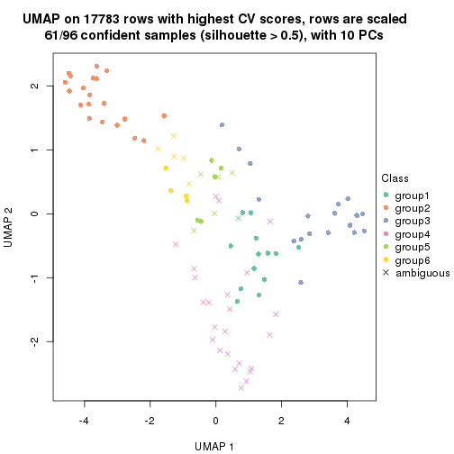
Following heatmap shows how subgroups are split when increasing k:
collect_classes(res)
Test correlation between subgroups and known annotations. If the known annotation is numeric, one-way ANOVA test is applied, and if the known annotation is discrete, chi-squared contingency table test is applied.
test_to_known_factors(res)
#> n specimen(p) disease.state(p) individual(p) tissue(p) k
#> CV:skmeans 80 7.20e-06 0.878 0.582 9.06e-03 2
#> CV:skmeans 94 4.54e-11 0.980 0.889 1.27e-04 3
#> CV:skmeans 93 1.26e-14 0.981 0.997 1.57e-10 4
#> CV:skmeans 88 5.00e-14 0.717 0.958 1.90e-08 5
#> CV:skmeans 61 8.99e-11 0.260 0.965 1.46e-06 6
If matrix rows can be associated to genes, consider to use functional_enrichment(res,
...) to perform function enrichment for the signature genes. See this vignette for more detailed explanations.
The object with results only for a single top-value method and a single partition method can be extracted as:
res = res_list["CV", "pam"]
# you can also extract it by
# res = res_list["CV:pam"]
A summary of res and all the functions that can be applied to it:
res
#> A 'ConsensusPartition' object with k = 2, 3, 4, 5, 6.
#> On a matrix with 17783 rows and 96 columns.
#> Top rows (1000, 2000, 3000, 4000, 5000) are extracted by 'CV' method.
#> Subgroups are detected by 'pam' method.
#> Performed in total 1250 partitions by row resampling.
#> Best k for subgroups seems to be 2.
#>
#> Following methods can be applied to this 'ConsensusPartition' object:
#> [1] "cola_report" "collect_classes" "collect_plots"
#> [4] "collect_stats" "colnames" "compare_signatures"
#> [7] "consensus_heatmap" "dimension_reduction" "functional_enrichment"
#> [10] "get_anno_col" "get_anno" "get_classes"
#> [13] "get_consensus" "get_matrix" "get_membership"
#> [16] "get_param" "get_signatures" "get_stats"
#> [19] "is_best_k" "is_stable_k" "membership_heatmap"
#> [22] "ncol" "nrow" "plot_ecdf"
#> [25] "rownames" "select_partition_number" "show"
#> [28] "suggest_best_k" "test_to_known_factors"
collect_plots() function collects all the plots made from res for all k (number of partitions)
into one single page to provide an easy and fast comparison between different k.
collect_plots(res)
The plots are:
k and the heatmap of
predicted classes for each k.k.k.k.All the plots in panels can be made by individual functions and they are plotted later in this section.
select_partition_number() produces several plots showing different
statistics for choosing “optimized” k. There are following statistics:
k;k, the area increased is defined as \(A_k - A_{k-1}\).The detailed explanations of these statistics can be found in the cola vignette.
Generally speaking, lower PAC score, higher mean silhouette score or higher
concordance corresponds to better partition. Rand index and Jaccard index
measure how similar the current partition is compared to partition with k-1.
If they are too similar, we won't accept k is better than k-1.
select_partition_number(res)

The numeric values for all these statistics can be obtained by get_stats().
get_stats(res)
#> k 1-PAC mean_silhouette concordance area_increased Rand Jaccard
#> 2 2 1.000 0.988 0.992 0.3456 0.655 0.655
#> 3 3 0.594 0.715 0.799 0.7803 0.735 0.598
#> 4 4 0.772 0.737 0.901 0.1618 0.804 0.554
#> 5 5 0.739 0.558 0.783 0.0929 0.882 0.619
#> 6 6 0.814 0.726 0.862 0.0569 0.880 0.524
suggest_best_k() suggests the best \(k\) based on these statistics. The rules are as follows:
suggest_best_k(res)
#> [1] 2
Following shows the table of the partitions (You need to click the show/hide
code output link to see it). The membership matrix (columns with name p*)
is inferred by
clue::cl_consensus()
function with the SE method. Basically the value in the membership matrix
represents the probability to belong to a certain group. The finall class
label for an item is determined with the group with highest probability it
belongs to.
In get_classes() function, the entropy is calculated from the membership
matrix and the silhouette score is calculated from the consensus matrix.
cbind(get_classes(res, k = 2), get_membership(res, k = 2))
#> class entropy silhouette p1 p2
#> GSM771247 1 0.0000 0.992 1.000 0.000
#> GSM771246 1 0.0000 0.992 1.000 0.000
#> GSM771245 1 0.0000 0.992 1.000 0.000
#> GSM771169 1 0.0000 0.992 1.000 0.000
#> GSM771171 1 0.0000 0.992 1.000 0.000
#> GSM771175 1 0.1184 0.991 0.984 0.016
#> GSM771172 1 0.0000 0.992 1.000 0.000
#> GSM771174 1 0.1184 0.991 0.984 0.016
#> GSM771178 1 0.0000 0.992 1.000 0.000
#> GSM771176 1 0.0000 0.992 1.000 0.000
#> GSM771181 1 0.0000 0.992 1.000 0.000
#> GSM771179 1 0.0000 0.992 1.000 0.000
#> GSM771184 1 0.0000 0.992 1.000 0.000
#> GSM771182 1 0.1184 0.991 0.984 0.016
#> GSM771185 1 0.1184 0.991 0.984 0.016
#> GSM771186 1 0.1184 0.991 0.984 0.016
#> GSM771188 1 0.0000 0.992 1.000 0.000
#> GSM771193 1 0.0000 0.992 1.000 0.000
#> GSM771192 1 0.1184 0.991 0.984 0.016
#> GSM771189 1 0.1414 0.988 0.980 0.020
#> GSM771194 1 0.1184 0.991 0.984 0.016
#> GSM771191 1 0.1184 0.991 0.984 0.016
#> GSM771202 1 0.0000 0.992 1.000 0.000
#> GSM771200 1 0.0000 0.992 1.000 0.000
#> GSM771206 1 0.1184 0.991 0.984 0.016
#> GSM771208 1 0.1184 0.991 0.984 0.016
#> GSM771207 1 0.0000 0.992 1.000 0.000
#> GSM771209 1 0.0000 0.992 1.000 0.000
#> GSM771211 1 0.0000 0.992 1.000 0.000
#> GSM771212 1 0.1184 0.991 0.984 0.016
#> GSM771214 1 0.1414 0.988 0.980 0.020
#> GSM771213 1 0.1184 0.991 0.984 0.016
#> GSM771216 1 0.1184 0.991 0.984 0.016
#> GSM771217 1 0.1184 0.991 0.984 0.016
#> GSM771219 1 0.0000 0.992 1.000 0.000
#> GSM771218 1 0.1184 0.991 0.984 0.016
#> GSM771222 1 0.0000 0.992 1.000 0.000
#> GSM771220 1 0.0000 0.992 1.000 0.000
#> GSM771226 1 0.0000 0.992 1.000 0.000
#> GSM771223 1 0.1184 0.991 0.984 0.016
#> GSM771225 1 0.1184 0.991 0.984 0.016
#> GSM771232 1 0.1184 0.991 0.984 0.016
#> GSM771235 1 0.0000 0.992 1.000 0.000
#> GSM771234 1 0.0000 0.992 1.000 0.000
#> GSM771242 1 0.0000 0.992 1.000 0.000
#> GSM771239 1 0.1184 0.991 0.984 0.016
#> GSM771240 1 0.1184 0.991 0.984 0.016
#> GSM771241 1 0.0000 0.992 1.000 0.000
#> GSM771197 1 0.0000 0.992 1.000 0.000
#> GSM771195 1 0.1184 0.991 0.984 0.016
#> GSM771198 1 0.0000 0.992 1.000 0.000
#> GSM771199 1 0.0000 0.992 1.000 0.000
#> GSM771204 1 0.1184 0.991 0.984 0.016
#> GSM771205 1 0.0000 0.992 1.000 0.000
#> GSM771229 1 0.0000 0.992 1.000 0.000
#> GSM771227 1 0.0672 0.992 0.992 0.008
#> GSM771230 1 0.1184 0.991 0.984 0.016
#> GSM771231 1 0.1184 0.991 0.984 0.016
#> GSM771238 1 0.1184 0.991 0.984 0.016
#> GSM771236 1 0.0000 0.992 1.000 0.000
#> GSM771154 1 0.1184 0.991 0.984 0.016
#> GSM771152 1 0.1184 0.991 0.984 0.016
#> GSM771156 1 0.1184 0.991 0.984 0.016
#> GSM771157 1 0.1184 0.991 0.984 0.016
#> GSM771155 1 0.1184 0.991 0.984 0.016
#> GSM771160 1 0.0000 0.992 1.000 0.000
#> GSM771161 1 0.0000 0.992 1.000 0.000
#> GSM771159 1 0.1184 0.991 0.984 0.016
#> GSM771165 1 0.1184 0.991 0.984 0.016
#> GSM771166 1 0.0000 0.992 1.000 0.000
#> GSM771167 1 0.1184 0.991 0.984 0.016
#> GSM771168 1 0.0000 0.992 1.000 0.000
#> GSM771163 1 0.0000 0.992 1.000 0.000
#> GSM771244 2 0.0000 0.989 0.000 1.000
#> GSM771170 1 0.0000 0.992 1.000 0.000
#> GSM771173 2 0.0000 0.989 0.000 1.000
#> GSM771177 2 0.0000 0.989 0.000 1.000
#> GSM771180 2 0.1184 0.975 0.016 0.984
#> GSM771183 2 0.0000 0.989 0.000 1.000
#> GSM771187 2 0.0000 0.989 0.000 1.000
#> GSM771190 2 0.0000 0.989 0.000 1.000
#> GSM771201 2 0.0000 0.989 0.000 1.000
#> GSM771210 2 0.7299 0.740 0.204 0.796
#> GSM771215 2 0.0000 0.989 0.000 1.000
#> GSM771221 2 0.0000 0.989 0.000 1.000
#> GSM771224 1 0.0000 0.992 1.000 0.000
#> GSM771233 2 0.0000 0.989 0.000 1.000
#> GSM771243 2 0.0000 0.989 0.000 1.000
#> GSM771196 2 0.0000 0.989 0.000 1.000
#> GSM771203 2 0.0000 0.989 0.000 1.000
#> GSM771228 2 0.0000 0.989 0.000 1.000
#> GSM771237 2 0.0000 0.989 0.000 1.000
#> GSM771153 2 0.0000 0.989 0.000 1.000
#> GSM771158 2 0.0000 0.989 0.000 1.000
#> GSM771162 2 0.0000 0.989 0.000 1.000
#> GSM771164 2 0.0000 0.989 0.000 1.000
cbind(get_classes(res, k = 3), get_membership(res, k = 3))
#> class entropy silhouette p1 p2 p3
#> GSM771247 1 0.6267 0.4407 0.548 0.000 0.452
#> GSM771246 3 0.6307 -0.3218 0.488 0.000 0.512
#> GSM771245 1 0.4605 0.9269 0.796 0.000 0.204
#> GSM771169 3 0.0000 0.7154 0.000 0.000 1.000
#> GSM771171 3 0.3412 0.6893 0.124 0.000 0.876
#> GSM771175 3 0.5785 0.4403 0.332 0.000 0.668
#> GSM771172 3 0.0000 0.7154 0.000 0.000 1.000
#> GSM771174 1 0.4346 0.9444 0.816 0.000 0.184
#> GSM771178 3 0.0000 0.7154 0.000 0.000 1.000
#> GSM771176 1 0.4605 0.9269 0.796 0.000 0.204
#> GSM771181 3 0.4346 0.6667 0.184 0.000 0.816
#> GSM771179 3 0.0000 0.7154 0.000 0.000 1.000
#> GSM771184 3 0.0892 0.7133 0.020 0.000 0.980
#> GSM771182 3 0.5760 0.4483 0.328 0.000 0.672
#> GSM771185 3 0.6045 0.3243 0.380 0.000 0.620
#> GSM771186 3 0.5733 0.4547 0.324 0.000 0.676
#> GSM771188 3 0.5760 0.4483 0.328 0.000 0.672
#> GSM771193 3 0.3686 0.6831 0.140 0.000 0.860
#> GSM771192 3 0.5733 0.4547 0.324 0.000 0.676
#> GSM771189 3 0.6579 0.4439 0.328 0.020 0.652
#> GSM771194 1 0.4346 0.9444 0.816 0.000 0.184
#> GSM771191 1 0.4346 0.9444 0.816 0.000 0.184
#> GSM771202 3 0.6126 -0.0784 0.400 0.000 0.600
#> GSM771200 3 0.6235 -0.1890 0.436 0.000 0.564
#> GSM771206 1 0.4346 0.9444 0.816 0.000 0.184
#> GSM771208 1 0.4346 0.9444 0.816 0.000 0.184
#> GSM771207 3 0.0237 0.7154 0.004 0.000 0.996
#> GSM771209 3 0.6307 -0.3218 0.488 0.000 0.512
#> GSM771211 3 0.0000 0.7154 0.000 0.000 1.000
#> GSM771212 1 0.4346 0.9444 0.816 0.000 0.184
#> GSM771214 1 0.4645 0.9362 0.816 0.008 0.176
#> GSM771213 1 0.4346 0.9444 0.816 0.000 0.184
#> GSM771216 1 0.6026 0.5524 0.624 0.000 0.376
#> GSM771217 1 0.4346 0.9444 0.816 0.000 0.184
#> GSM771219 3 0.4346 0.6667 0.184 0.000 0.816
#> GSM771218 1 0.4605 0.9269 0.796 0.000 0.204
#> GSM771222 3 0.0000 0.7154 0.000 0.000 1.000
#> GSM771220 3 0.1643 0.7097 0.044 0.000 0.956
#> GSM771226 3 0.4346 0.6667 0.184 0.000 0.816
#> GSM771223 1 0.4346 0.9444 0.816 0.000 0.184
#> GSM771225 3 0.5098 0.5470 0.248 0.000 0.752
#> GSM771232 3 0.5733 0.4547 0.324 0.000 0.676
#> GSM771235 3 0.4346 0.6667 0.184 0.000 0.816
#> GSM771234 3 0.4346 0.6667 0.184 0.000 0.816
#> GSM771242 3 0.4346 0.6667 0.184 0.000 0.816
#> GSM771239 3 0.5733 0.4547 0.324 0.000 0.676
#> GSM771240 1 0.4346 0.9444 0.816 0.000 0.184
#> GSM771241 3 0.4346 0.6667 0.184 0.000 0.816
#> GSM771197 3 0.4346 0.6667 0.184 0.000 0.816
#> GSM771195 3 0.3816 0.6380 0.148 0.000 0.852
#> GSM771198 3 0.4346 0.6667 0.184 0.000 0.816
#> GSM771199 3 0.4346 0.6667 0.184 0.000 0.816
#> GSM771204 1 0.4346 0.9444 0.816 0.000 0.184
#> GSM771205 3 0.6307 -0.3218 0.488 0.000 0.512
#> GSM771229 3 0.0000 0.7154 0.000 0.000 1.000
#> GSM771227 3 0.1031 0.7120 0.024 0.000 0.976
#> GSM771230 3 0.5760 0.4483 0.328 0.000 0.672
#> GSM771231 3 0.5760 0.4483 0.328 0.000 0.672
#> GSM771238 1 0.4346 0.9444 0.816 0.000 0.184
#> GSM771236 3 0.0892 0.7133 0.020 0.000 0.980
#> GSM771154 1 0.4346 0.9444 0.816 0.000 0.184
#> GSM771152 3 0.5760 0.4483 0.328 0.000 0.672
#> GSM771156 3 0.0892 0.7133 0.020 0.000 0.980
#> GSM771157 1 0.4346 0.9444 0.816 0.000 0.184
#> GSM771155 1 0.4346 0.9444 0.816 0.000 0.184
#> GSM771160 3 0.4346 0.6667 0.184 0.000 0.816
#> GSM771161 1 0.4555 0.9061 0.800 0.000 0.200
#> GSM771159 3 0.5098 0.5470 0.248 0.000 0.752
#> GSM771165 3 0.5760 0.4483 0.328 0.000 0.672
#> GSM771166 3 0.0000 0.7154 0.000 0.000 1.000
#> GSM771167 3 0.5760 0.4483 0.328 0.000 0.672
#> GSM771168 3 0.0424 0.7149 0.008 0.000 0.992
#> GSM771163 3 0.0892 0.7133 0.020 0.000 0.980
#> GSM771244 2 0.0000 0.9979 0.000 1.000 0.000
#> GSM771170 3 0.0892 0.7133 0.020 0.000 0.980
#> GSM771173 2 0.0000 0.9979 0.000 1.000 0.000
#> GSM771177 2 0.0000 0.9979 0.000 1.000 0.000
#> GSM771180 2 0.1636 0.9598 0.020 0.964 0.016
#> GSM771183 2 0.0000 0.9979 0.000 1.000 0.000
#> GSM771187 2 0.0000 0.9979 0.000 1.000 0.000
#> GSM771190 2 0.0000 0.9979 0.000 1.000 0.000
#> GSM771201 2 0.0000 0.9979 0.000 1.000 0.000
#> GSM771210 1 0.4749 0.7016 0.816 0.172 0.012
#> GSM771215 2 0.0000 0.9979 0.000 1.000 0.000
#> GSM771221 2 0.0000 0.9979 0.000 1.000 0.000
#> GSM771224 3 0.3686 0.6943 0.140 0.000 0.860
#> GSM771233 2 0.0000 0.9979 0.000 1.000 0.000
#> GSM771243 2 0.0000 0.9979 0.000 1.000 0.000
#> GSM771196 2 0.0000 0.9979 0.000 1.000 0.000
#> GSM771203 2 0.0000 0.9979 0.000 1.000 0.000
#> GSM771228 2 0.0000 0.9979 0.000 1.000 0.000
#> GSM771237 2 0.0000 0.9979 0.000 1.000 0.000
#> GSM771153 2 0.0000 0.9979 0.000 1.000 0.000
#> GSM771158 2 0.0000 0.9979 0.000 1.000 0.000
#> GSM771162 2 0.0000 0.9979 0.000 1.000 0.000
#> GSM771164 2 0.0000 0.9979 0.000 1.000 0.000
cbind(get_classes(res, k = 4), get_membership(res, k = 4))
#> class entropy silhouette p1 p2 p3 p4
#> GSM771247 4 0.3266 0.6342 0.168 0.000 0.000 0.832
#> GSM771246 1 0.5000 0.0598 0.504 0.000 0.000 0.496
#> GSM771245 4 0.0000 0.7889 0.000 0.000 0.000 1.000
#> GSM771169 1 0.0376 0.8367 0.992 0.000 0.004 0.004
#> GSM771171 1 0.3105 0.7285 0.856 0.000 0.140 0.004
#> GSM771175 4 0.4999 0.1864 0.492 0.000 0.000 0.508
#> GSM771172 1 0.0188 0.8380 0.996 0.000 0.000 0.004
#> GSM771174 4 0.0336 0.7876 0.008 0.000 0.000 0.992
#> GSM771178 1 0.0376 0.8367 0.992 0.000 0.004 0.004
#> GSM771176 4 0.1474 0.7522 0.052 0.000 0.000 0.948
#> GSM771181 3 0.0000 0.9326 0.000 0.000 1.000 0.000
#> GSM771179 1 0.0336 0.8366 0.992 0.000 0.000 0.008
#> GSM771184 1 0.0000 0.8388 1.000 0.000 0.000 0.000
#> GSM771182 1 0.4679 0.2899 0.648 0.000 0.000 0.352
#> GSM771185 4 0.4955 0.2804 0.444 0.000 0.000 0.556
#> GSM771186 1 0.0000 0.8388 1.000 0.000 0.000 0.000
#> GSM771188 1 0.1716 0.7949 0.936 0.000 0.000 0.064
#> GSM771193 1 0.4872 0.4096 0.640 0.000 0.356 0.004
#> GSM771192 1 0.4454 0.4011 0.692 0.000 0.000 0.308
#> GSM771189 4 0.5000 0.1775 0.496 0.000 0.000 0.504
#> GSM771194 4 0.0000 0.7889 0.000 0.000 0.000 1.000
#> GSM771191 4 0.0000 0.7889 0.000 0.000 0.000 1.000
#> GSM771202 1 0.4877 0.2594 0.592 0.000 0.000 0.408
#> GSM771200 1 0.4955 0.1825 0.556 0.000 0.000 0.444
#> GSM771206 4 0.0000 0.7889 0.000 0.000 0.000 1.000
#> GSM771208 4 0.0188 0.7888 0.004 0.000 0.000 0.996
#> GSM771207 1 0.0376 0.8367 0.992 0.000 0.004 0.004
#> GSM771209 1 0.5000 0.0598 0.504 0.000 0.000 0.496
#> GSM771211 1 0.0000 0.8388 1.000 0.000 0.000 0.000
#> GSM771212 4 0.0188 0.7888 0.004 0.000 0.000 0.996
#> GSM771214 4 0.0000 0.7889 0.000 0.000 0.000 1.000
#> GSM771213 4 0.0188 0.7888 0.004 0.000 0.000 0.996
#> GSM771216 4 0.3610 0.6396 0.200 0.000 0.000 0.800
#> GSM771217 4 0.0188 0.7888 0.004 0.000 0.000 0.996
#> GSM771219 3 0.4999 -0.0772 0.492 0.000 0.508 0.000
#> GSM771218 4 0.0000 0.7889 0.000 0.000 0.000 1.000
#> GSM771222 1 0.0000 0.8388 1.000 0.000 0.000 0.000
#> GSM771220 1 0.0376 0.8367 0.992 0.000 0.004 0.004
#> GSM771226 3 0.0000 0.9326 0.000 0.000 1.000 0.000
#> GSM771223 4 0.0000 0.7889 0.000 0.000 0.000 1.000
#> GSM771225 1 0.0000 0.8388 1.000 0.000 0.000 0.000
#> GSM771232 1 0.0000 0.8388 1.000 0.000 0.000 0.000
#> GSM771235 1 0.4730 0.3954 0.636 0.000 0.364 0.000
#> GSM771234 3 0.0000 0.9326 0.000 0.000 1.000 0.000
#> GSM771242 3 0.0000 0.9326 0.000 0.000 1.000 0.000
#> GSM771239 1 0.2868 0.7069 0.864 0.000 0.000 0.136
#> GSM771240 4 0.0188 0.7888 0.004 0.000 0.000 0.996
#> GSM771241 3 0.0000 0.9326 0.000 0.000 1.000 0.000
#> GSM771197 3 0.0000 0.9326 0.000 0.000 1.000 0.000
#> GSM771195 1 0.0000 0.8388 1.000 0.000 0.000 0.000
#> GSM771198 3 0.0000 0.9326 0.000 0.000 1.000 0.000
#> GSM771199 3 0.0000 0.9326 0.000 0.000 1.000 0.000
#> GSM771204 4 0.0000 0.7889 0.000 0.000 0.000 1.000
#> GSM771205 1 0.5000 0.0598 0.504 0.000 0.000 0.496
#> GSM771229 1 0.0188 0.8380 0.996 0.000 0.000 0.004
#> GSM771227 1 0.0000 0.8388 1.000 0.000 0.000 0.000
#> GSM771230 4 0.5000 0.1775 0.496 0.000 0.000 0.504
#> GSM771231 4 0.5000 0.1775 0.496 0.000 0.000 0.504
#> GSM771238 4 0.0000 0.7889 0.000 0.000 0.000 1.000
#> GSM771236 1 0.0000 0.8388 1.000 0.000 0.000 0.000
#> GSM771154 4 0.0000 0.7889 0.000 0.000 0.000 1.000
#> GSM771152 4 0.5000 0.1775 0.496 0.000 0.000 0.504
#> GSM771156 1 0.0000 0.8388 1.000 0.000 0.000 0.000
#> GSM771157 4 0.0000 0.7889 0.000 0.000 0.000 1.000
#> GSM771155 4 0.0336 0.7876 0.008 0.000 0.000 0.992
#> GSM771160 3 0.0000 0.9326 0.000 0.000 1.000 0.000
#> GSM771161 4 0.4820 0.4242 0.296 0.000 0.012 0.692
#> GSM771159 1 0.0000 0.8388 1.000 0.000 0.000 0.000
#> GSM771165 4 0.5000 0.1775 0.496 0.000 0.000 0.504
#> GSM771166 1 0.0188 0.8377 0.996 0.000 0.004 0.000
#> GSM771167 4 0.5000 0.1775 0.496 0.000 0.000 0.504
#> GSM771168 1 0.0188 0.8380 0.996 0.000 0.000 0.004
#> GSM771163 1 0.0000 0.8388 1.000 0.000 0.000 0.000
#> GSM771244 2 0.0000 0.9980 0.000 1.000 0.000 0.000
#> GSM771170 1 0.0000 0.8388 1.000 0.000 0.000 0.000
#> GSM771173 2 0.0000 0.9980 0.000 1.000 0.000 0.000
#> GSM771177 2 0.0000 0.9980 0.000 1.000 0.000 0.000
#> GSM771180 2 0.0817 0.9678 0.024 0.976 0.000 0.000
#> GSM771183 2 0.0000 0.9980 0.000 1.000 0.000 0.000
#> GSM771187 2 0.0000 0.9980 0.000 1.000 0.000 0.000
#> GSM771190 2 0.0000 0.9980 0.000 1.000 0.000 0.000
#> GSM771201 2 0.0188 0.9934 0.004 0.996 0.000 0.000
#> GSM771210 4 0.0188 0.7888 0.004 0.000 0.000 0.996
#> GSM771215 2 0.0000 0.9980 0.000 1.000 0.000 0.000
#> GSM771221 2 0.0000 0.9980 0.000 1.000 0.000 0.000
#> GSM771224 1 0.2973 0.7229 0.856 0.000 0.144 0.000
#> GSM771233 2 0.0000 0.9980 0.000 1.000 0.000 0.000
#> GSM771243 2 0.0000 0.9980 0.000 1.000 0.000 0.000
#> GSM771196 2 0.0000 0.9980 0.000 1.000 0.000 0.000
#> GSM771203 2 0.0000 0.9980 0.000 1.000 0.000 0.000
#> GSM771228 2 0.0000 0.9980 0.000 1.000 0.000 0.000
#> GSM771237 2 0.0000 0.9980 0.000 1.000 0.000 0.000
#> GSM771153 2 0.0000 0.9980 0.000 1.000 0.000 0.000
#> GSM771158 2 0.0000 0.9980 0.000 1.000 0.000 0.000
#> GSM771162 2 0.0000 0.9980 0.000 1.000 0.000 0.000
#> GSM771164 2 0.0000 0.9980 0.000 1.000 0.000 0.000
cbind(get_classes(res, k = 5), get_membership(res, k = 5))
#> class entropy silhouette p1 p2 p3 p4 p5
#> GSM771247 1 0.6277 0.2000 0.492 0.000 0.004 0.136 0.368
#> GSM771246 1 0.4980 0.4153 0.488 0.000 0.484 0.000 0.028
#> GSM771245 1 0.4304 0.0492 0.516 0.000 0.000 0.484 0.000
#> GSM771169 5 0.3177 0.7439 0.000 0.000 0.208 0.000 0.792
#> GSM771171 5 0.3639 0.7024 0.184 0.000 0.024 0.000 0.792
#> GSM771175 4 0.2424 0.4703 0.000 0.000 0.000 0.868 0.132
#> GSM771172 5 0.4304 0.5580 0.000 0.000 0.484 0.000 0.516
#> GSM771174 4 0.0794 0.5018 0.000 0.000 0.000 0.972 0.028
#> GSM771178 5 0.4088 0.6530 0.000 0.000 0.368 0.000 0.632
#> GSM771176 1 0.4304 0.0492 0.516 0.000 0.000 0.484 0.000
#> GSM771181 3 0.4304 0.8096 0.484 0.000 0.516 0.000 0.000
#> GSM771179 5 0.4304 0.5580 0.000 0.000 0.484 0.000 0.516
#> GSM771184 5 0.0162 0.7861 0.000 0.000 0.000 0.004 0.996
#> GSM771182 5 0.0794 0.7734 0.000 0.000 0.000 0.028 0.972
#> GSM771185 4 0.0510 0.5021 0.000 0.000 0.000 0.984 0.016
#> GSM771186 5 0.0671 0.7856 0.000 0.000 0.016 0.004 0.980
#> GSM771188 5 0.4155 0.6288 0.024 0.000 0.004 0.228 0.744
#> GSM771193 5 0.3855 0.6623 0.240 0.000 0.004 0.008 0.748
#> GSM771192 5 0.4300 0.1211 0.000 0.000 0.000 0.476 0.524
#> GSM771189 4 0.2648 0.4540 0.000 0.000 0.000 0.848 0.152
#> GSM771194 1 0.4304 0.0492 0.516 0.000 0.000 0.484 0.000
#> GSM771191 4 0.4306 -0.1046 0.492 0.000 0.000 0.508 0.000
#> GSM771202 3 0.6012 -0.4401 0.400 0.000 0.484 0.000 0.116
#> GSM771200 3 0.5687 -0.4806 0.436 0.000 0.484 0.000 0.080
#> GSM771206 4 0.4306 -0.1046 0.492 0.000 0.000 0.508 0.000
#> GSM771208 1 0.5415 0.4192 0.492 0.000 0.464 0.028 0.016
#> GSM771207 5 0.3550 0.7315 0.004 0.000 0.236 0.000 0.760
#> GSM771209 1 0.5051 0.4175 0.492 0.000 0.480 0.004 0.024
#> GSM771211 5 0.0162 0.7863 0.000 0.000 0.004 0.000 0.996
#> GSM771212 1 0.7684 0.3013 0.488 0.000 0.128 0.236 0.148
#> GSM771214 1 0.7398 0.3101 0.488 0.000 0.132 0.292 0.088
#> GSM771213 4 0.4306 -0.1046 0.492 0.000 0.000 0.508 0.000
#> GSM771216 4 0.6265 0.1804 0.220 0.000 0.000 0.540 0.240
#> GSM771217 4 0.4306 -0.1046 0.492 0.000 0.000 0.508 0.000
#> GSM771219 1 0.5895 -0.4388 0.456 0.000 0.100 0.000 0.444
#> GSM771218 1 0.6477 0.3698 0.492 0.000 0.228 0.280 0.000
#> GSM771222 5 0.3177 0.7439 0.000 0.000 0.208 0.000 0.792
#> GSM771220 5 0.4304 0.5580 0.000 0.000 0.484 0.000 0.516
#> GSM771226 3 0.4304 0.8096 0.484 0.000 0.516 0.000 0.000
#> GSM771223 4 0.4306 -0.1046 0.492 0.000 0.000 0.508 0.000
#> GSM771225 5 0.0162 0.7861 0.000 0.000 0.000 0.004 0.996
#> GSM771232 5 0.4201 0.6060 0.000 0.000 0.408 0.000 0.592
#> GSM771235 5 0.4250 0.6206 0.252 0.000 0.028 0.000 0.720
#> GSM771234 3 0.4304 0.8096 0.484 0.000 0.516 0.000 0.000
#> GSM771242 3 0.4304 0.8096 0.484 0.000 0.516 0.000 0.000
#> GSM771239 5 0.0703 0.7759 0.000 0.000 0.000 0.024 0.976
#> GSM771240 4 0.1106 0.4928 0.024 0.000 0.000 0.964 0.012
#> GSM771241 3 0.4304 0.8096 0.484 0.000 0.516 0.000 0.000
#> GSM771197 3 0.4304 0.8096 0.484 0.000 0.516 0.000 0.000
#> GSM771195 5 0.0162 0.7861 0.000 0.000 0.000 0.004 0.996
#> GSM771198 3 0.4304 0.8096 0.484 0.000 0.516 0.000 0.000
#> GSM771199 3 0.4304 0.8096 0.484 0.000 0.516 0.000 0.000
#> GSM771204 4 0.4306 -0.1046 0.492 0.000 0.000 0.508 0.000
#> GSM771205 1 0.4980 0.4153 0.488 0.000 0.484 0.000 0.028
#> GSM771229 5 0.4304 0.5580 0.000 0.000 0.484 0.000 0.516
#> GSM771227 5 0.0162 0.7861 0.000 0.000 0.000 0.004 0.996
#> GSM771230 4 0.2280 0.4765 0.000 0.000 0.000 0.880 0.120
#> GSM771231 4 0.0162 0.4998 0.000 0.000 0.000 0.996 0.004
#> GSM771238 1 0.4304 0.0492 0.516 0.000 0.000 0.484 0.000
#> GSM771236 5 0.0162 0.7861 0.000 0.000 0.000 0.004 0.996
#> GSM771154 4 0.4306 -0.1046 0.492 0.000 0.000 0.508 0.000
#> GSM771152 5 0.3966 0.3876 0.000 0.000 0.000 0.336 0.664
#> GSM771156 5 0.0162 0.7861 0.000 0.000 0.000 0.004 0.996
#> GSM771157 1 0.6477 0.3305 0.492 0.000 0.176 0.328 0.004
#> GSM771155 1 0.5906 0.0819 0.492 0.000 0.000 0.404 0.104
#> GSM771160 3 0.4304 0.8096 0.484 0.000 0.516 0.000 0.000
#> GSM771161 4 0.3167 0.3972 0.172 0.000 0.004 0.820 0.004
#> GSM771159 5 0.0162 0.7861 0.000 0.000 0.000 0.004 0.996
#> GSM771165 4 0.2377 0.4729 0.000 0.000 0.000 0.872 0.128
#> GSM771166 5 0.0162 0.7863 0.000 0.000 0.004 0.000 0.996
#> GSM771167 4 0.0162 0.4998 0.000 0.000 0.000 0.996 0.004
#> GSM771168 5 0.4304 0.5580 0.000 0.000 0.484 0.000 0.516
#> GSM771163 5 0.0162 0.7861 0.000 0.000 0.000 0.004 0.996
#> GSM771244 2 0.0000 0.9997 0.000 1.000 0.000 0.000 0.000
#> GSM771170 5 0.3160 0.7531 0.000 0.000 0.188 0.004 0.808
#> GSM771173 2 0.0000 0.9997 0.000 1.000 0.000 0.000 0.000
#> GSM771177 2 0.0000 0.9997 0.000 1.000 0.000 0.000 0.000
#> GSM771180 4 0.6164 -0.0370 0.000 0.368 0.000 0.492 0.140
#> GSM771183 2 0.0000 0.9997 0.000 1.000 0.000 0.000 0.000
#> GSM771187 2 0.0000 0.9997 0.000 1.000 0.000 0.000 0.000
#> GSM771190 2 0.0000 0.9997 0.000 1.000 0.000 0.000 0.000
#> GSM771201 2 0.0162 0.9950 0.000 0.996 0.000 0.004 0.000
#> GSM771210 4 0.4306 -0.1046 0.492 0.000 0.000 0.508 0.000
#> GSM771215 2 0.0000 0.9997 0.000 1.000 0.000 0.000 0.000
#> GSM771221 2 0.0000 0.9997 0.000 1.000 0.000 0.000 0.000
#> GSM771224 5 0.2488 0.7408 0.124 0.000 0.000 0.004 0.872
#> GSM771233 2 0.0000 0.9997 0.000 1.000 0.000 0.000 0.000
#> GSM771243 2 0.0000 0.9997 0.000 1.000 0.000 0.000 0.000
#> GSM771196 2 0.0000 0.9997 0.000 1.000 0.000 0.000 0.000
#> GSM771203 2 0.0000 0.9997 0.000 1.000 0.000 0.000 0.000
#> GSM771228 2 0.0000 0.9997 0.000 1.000 0.000 0.000 0.000
#> GSM771237 2 0.0000 0.9997 0.000 1.000 0.000 0.000 0.000
#> GSM771153 2 0.0000 0.9997 0.000 1.000 0.000 0.000 0.000
#> GSM771158 2 0.0000 0.9997 0.000 1.000 0.000 0.000 0.000
#> GSM771162 2 0.0000 0.9997 0.000 1.000 0.000 0.000 0.000
#> GSM771164 2 0.0000 0.9997 0.000 1.000 0.000 0.000 0.000
cbind(get_classes(res, k = 6), get_membership(res, k = 6))
#> class entropy silhouette p1 p2 p3 p4 p5 p6
#> GSM771247 4 0.3717 0.3577 0.000 0.000 0.000 0.616 0.384 0.000
#> GSM771246 1 0.0000 0.8273 1.000 0.000 0.000 0.000 0.000 0.000
#> GSM771245 4 0.3782 0.4900 0.000 0.000 0.000 0.588 0.000 0.412
#> GSM771169 5 0.3409 0.5967 0.300 0.000 0.000 0.000 0.700 0.000
#> GSM771171 5 0.4526 0.6503 0.116 0.000 0.184 0.000 0.700 0.000
#> GSM771175 6 0.4974 0.6703 0.000 0.000 0.000 0.324 0.088 0.588
#> GSM771172 1 0.0000 0.8273 1.000 0.000 0.000 0.000 0.000 0.000
#> GSM771174 6 0.4292 0.6593 0.000 0.000 0.000 0.388 0.024 0.588
#> GSM771178 1 0.2378 0.7059 0.848 0.000 0.000 0.000 0.152 0.000
#> GSM771176 4 0.3782 0.4900 0.000 0.000 0.000 0.588 0.000 0.412
#> GSM771181 3 0.0000 0.9416 0.000 0.000 1.000 0.000 0.000 0.000
#> GSM771179 1 0.0000 0.8273 1.000 0.000 0.000 0.000 0.000 0.000
#> GSM771184 5 0.0000 0.8567 0.000 0.000 0.000 0.000 1.000 0.000
#> GSM771182 5 0.0000 0.8567 0.000 0.000 0.000 0.000 1.000 0.000
#> GSM771185 6 0.4101 0.6361 0.000 0.000 0.000 0.408 0.012 0.580
#> GSM771186 5 0.0458 0.8497 0.016 0.000 0.000 0.000 0.984 0.000
#> GSM771188 5 0.5417 0.3190 0.000 0.000 0.000 0.116 0.464 0.420
#> GSM771193 5 0.4093 0.5082 0.000 0.000 0.012 0.000 0.584 0.404
#> GSM771192 6 0.3857 0.1843 0.000 0.000 0.000 0.000 0.468 0.532
#> GSM771189 6 0.5318 0.6365 0.000 0.000 0.000 0.272 0.148 0.580
#> GSM771194 4 0.3782 0.4900 0.000 0.000 0.000 0.588 0.000 0.412
#> GSM771191 4 0.0000 0.6981 0.000 0.000 0.000 1.000 0.000 0.000
#> GSM771202 1 0.0000 0.8273 1.000 0.000 0.000 0.000 0.000 0.000
#> GSM771200 1 0.0000 0.8273 1.000 0.000 0.000 0.000 0.000 0.000
#> GSM771206 4 0.0000 0.6981 0.000 0.000 0.000 1.000 0.000 0.000
#> GSM771208 1 0.4256 0.0476 0.520 0.000 0.000 0.464 0.016 0.000
#> GSM771207 1 0.3782 0.3029 0.636 0.000 0.004 0.000 0.360 0.000
#> GSM771209 1 0.3737 0.2654 0.608 0.000 0.000 0.392 0.000 0.000
#> GSM771211 5 0.0146 0.8556 0.004 0.000 0.000 0.000 0.996 0.000
#> GSM771212 4 0.5304 0.3698 0.276 0.000 0.000 0.580 0.144 0.000
#> GSM771214 1 0.4097 -0.0254 0.500 0.000 0.000 0.492 0.008 0.000
#> GSM771213 4 0.0000 0.6981 0.000 0.000 0.000 1.000 0.000 0.000
#> GSM771216 4 0.5411 -0.2001 0.000 0.000 0.000 0.560 0.152 0.288
#> GSM771217 4 0.0000 0.6981 0.000 0.000 0.000 1.000 0.000 0.000
#> GSM771219 3 0.5176 0.2073 0.100 0.000 0.548 0.000 0.352 0.000
#> GSM771218 4 0.2941 0.5778 0.220 0.000 0.000 0.780 0.000 0.000
#> GSM771222 5 0.2823 0.7179 0.204 0.000 0.000 0.000 0.796 0.000
#> GSM771220 1 0.0000 0.8273 1.000 0.000 0.000 0.000 0.000 0.000
#> GSM771226 3 0.0000 0.9416 0.000 0.000 1.000 0.000 0.000 0.000
#> GSM771223 4 0.0000 0.6981 0.000 0.000 0.000 1.000 0.000 0.000
#> GSM771225 5 0.0000 0.8567 0.000 0.000 0.000 0.000 1.000 0.000
#> GSM771232 1 0.1387 0.7797 0.932 0.000 0.000 0.000 0.068 0.000
#> GSM771235 5 0.3151 0.6534 0.000 0.000 0.252 0.000 0.748 0.000
#> GSM771234 3 0.0000 0.9416 0.000 0.000 1.000 0.000 0.000 0.000
#> GSM771242 3 0.0000 0.9416 0.000 0.000 1.000 0.000 0.000 0.000
#> GSM771239 5 0.0000 0.8567 0.000 0.000 0.000 0.000 1.000 0.000
#> GSM771240 6 0.0000 0.3985 0.000 0.000 0.000 0.000 0.000 1.000
#> GSM771241 3 0.0000 0.9416 0.000 0.000 1.000 0.000 0.000 0.000
#> GSM771197 3 0.0000 0.9416 0.000 0.000 1.000 0.000 0.000 0.000
#> GSM771195 5 0.0000 0.8567 0.000 0.000 0.000 0.000 1.000 0.000
#> GSM771198 3 0.0000 0.9416 0.000 0.000 1.000 0.000 0.000 0.000
#> GSM771199 3 0.0000 0.9416 0.000 0.000 1.000 0.000 0.000 0.000
#> GSM771204 4 0.0000 0.6981 0.000 0.000 0.000 1.000 0.000 0.000
#> GSM771205 1 0.0000 0.8273 1.000 0.000 0.000 0.000 0.000 0.000
#> GSM771229 1 0.0000 0.8273 1.000 0.000 0.000 0.000 0.000 0.000
#> GSM771227 5 0.0000 0.8567 0.000 0.000 0.000 0.000 1.000 0.000
#> GSM771230 6 0.4609 0.6705 0.000 0.000 0.000 0.364 0.048 0.588
#> GSM771231 6 0.4219 0.6571 0.000 0.000 0.000 0.388 0.020 0.592
#> GSM771238 4 0.3782 0.4900 0.000 0.000 0.000 0.588 0.000 0.412
#> GSM771236 5 0.0000 0.8567 0.000 0.000 0.000 0.000 1.000 0.000
#> GSM771154 4 0.0000 0.6981 0.000 0.000 0.000 1.000 0.000 0.000
#> GSM771152 5 0.3175 0.5160 0.000 0.000 0.000 0.256 0.744 0.000
#> GSM771156 5 0.0000 0.8567 0.000 0.000 0.000 0.000 1.000 0.000
#> GSM771157 4 0.2491 0.5904 0.164 0.000 0.000 0.836 0.000 0.000
#> GSM771155 4 0.2300 0.5716 0.000 0.000 0.000 0.856 0.144 0.000
#> GSM771160 3 0.0000 0.9416 0.000 0.000 1.000 0.000 0.000 0.000
#> GSM771161 6 0.5667 -0.0870 0.288 0.000 0.000 0.192 0.000 0.520
#> GSM771159 5 0.0000 0.8567 0.000 0.000 0.000 0.000 1.000 0.000
#> GSM771165 6 0.4881 0.6732 0.000 0.000 0.000 0.336 0.076 0.588
#> GSM771166 5 0.0146 0.8556 0.004 0.000 0.000 0.000 0.996 0.000
#> GSM771167 6 0.4292 0.6593 0.000 0.000 0.000 0.388 0.024 0.588
#> GSM771168 1 0.0000 0.8273 1.000 0.000 0.000 0.000 0.000 0.000
#> GSM771163 5 0.0000 0.8567 0.000 0.000 0.000 0.000 1.000 0.000
#> GSM771244 2 0.0000 0.9997 0.000 1.000 0.000 0.000 0.000 0.000
#> GSM771170 5 0.3309 0.6275 0.280 0.000 0.000 0.000 0.720 0.000
#> GSM771173 2 0.0000 0.9997 0.000 1.000 0.000 0.000 0.000 0.000
#> GSM771177 2 0.0000 0.9997 0.000 1.000 0.000 0.000 0.000 0.000
#> GSM771180 6 0.5273 0.4444 0.000 0.284 0.000 0.000 0.136 0.580
#> GSM771183 2 0.0000 0.9997 0.000 1.000 0.000 0.000 0.000 0.000
#> GSM771187 2 0.0000 0.9997 0.000 1.000 0.000 0.000 0.000 0.000
#> GSM771190 2 0.0000 0.9997 0.000 1.000 0.000 0.000 0.000 0.000
#> GSM771201 2 0.0146 0.9947 0.000 0.996 0.000 0.000 0.004 0.000
#> GSM771210 4 0.0000 0.6981 0.000 0.000 0.000 1.000 0.000 0.000
#> GSM771215 2 0.0000 0.9997 0.000 1.000 0.000 0.000 0.000 0.000
#> GSM771221 2 0.0000 0.9997 0.000 1.000 0.000 0.000 0.000 0.000
#> GSM771224 5 0.2092 0.7843 0.000 0.000 0.124 0.000 0.876 0.000
#> GSM771233 2 0.0000 0.9997 0.000 1.000 0.000 0.000 0.000 0.000
#> GSM771243 2 0.0000 0.9997 0.000 1.000 0.000 0.000 0.000 0.000
#> GSM771196 2 0.0000 0.9997 0.000 1.000 0.000 0.000 0.000 0.000
#> GSM771203 2 0.0000 0.9997 0.000 1.000 0.000 0.000 0.000 0.000
#> GSM771228 2 0.0000 0.9997 0.000 1.000 0.000 0.000 0.000 0.000
#> GSM771237 2 0.0000 0.9997 0.000 1.000 0.000 0.000 0.000 0.000
#> GSM771153 2 0.0000 0.9997 0.000 1.000 0.000 0.000 0.000 0.000
#> GSM771158 2 0.0000 0.9997 0.000 1.000 0.000 0.000 0.000 0.000
#> GSM771162 2 0.0000 0.9997 0.000 1.000 0.000 0.000 0.000 0.000
#> GSM771164 2 0.0000 0.9997 0.000 1.000 0.000 0.000 0.000 0.000
Heatmaps for the consensus matrix. It visualizes the probability of two samples to be in a same group.
consensus_heatmap(res, k = 2)
consensus_heatmap(res, k = 3)
consensus_heatmap(res, k = 4)
consensus_heatmap(res, k = 5)
consensus_heatmap(res, k = 6)
Heatmaps for the membership of samples in all partitions to see how consistent they are:
membership_heatmap(res, k = 2)
membership_heatmap(res, k = 3)
membership_heatmap(res, k = 4)
membership_heatmap(res, k = 5)
membership_heatmap(res, k = 6)
As soon as we have had the classes for columns, we can look for signatures which are significantly different between classes which can be candidate marks for certain classes. Following are the heatmaps for signatures.
Signature heatmaps where rows are scaled:
get_signatures(res, k = 2)
get_signatures(res, k = 3)
#> Error: The width or height of the raster image is zero, maybe you forget to turn off the
#> previous graphic device or it was corrupted. Run `dev.off()` to close it.

get_signatures(res, k = 4)
#> Error: The width or height of the raster image is zero, maybe you forget to turn off the
#> previous graphic device or it was corrupted. Run `dev.off()` to close it.

get_signatures(res, k = 5)
#> Error: The width or height of the raster image is zero, maybe you forget to turn off the
#> previous graphic device or it was corrupted. Run `dev.off()` to close it.

get_signatures(res, k = 6)
#> Error: The width or height of the raster image is zero, maybe you forget to turn off the
#> previous graphic device or it was corrupted. Run `dev.off()` to close it.

Signature heatmaps where rows are not scaled:
get_signatures(res, k = 2, scale_rows = FALSE)
get_signatures(res, k = 3, scale_rows = FALSE)
get_signatures(res, k = 4, scale_rows = FALSE)
get_signatures(res, k = 5, scale_rows = FALSE)
#> Error in mat[ceiling(1:nr/h_ratio), ceiling(1:nc/w_ratio), drop = FALSE]: subscript out of bounds
get_signatures(res, k = 6, scale_rows = FALSE)
#> Error in mat[ceiling(1:nr/h_ratio), ceiling(1:nc/w_ratio), drop = FALSE]: subscript out of bounds

Compare the overlap of signatures from different k:
compare_signatures(res)
get_signature() returns a data frame invisibly. TO get the list of signatures, the function
call should be assigned to a variable explicitly. In following code, if plot argument is set
to FALSE, no heatmap is plotted while only the differential analysis is performed.
# code only for demonstration
tb = get_signature(res, k = ..., plot = FALSE)
An example of the output of tb is:
#> which_row fdr mean_1 mean_2 scaled_mean_1 scaled_mean_2 km
#> 1 38 0.042760348 8.373488 9.131774 -0.5533452 0.5164555 1
#> 2 40 0.018707592 7.106213 8.469186 -0.6173731 0.5762149 1
#> 3 55 0.019134737 10.221463 11.207825 -0.6159697 0.5749050 1
#> 4 59 0.006059896 5.921854 7.869574 -0.6899429 0.6439467 1
#> 5 60 0.018055526 8.928898 10.211722 -0.6204761 0.5791110 1
#> 6 98 0.009384629 15.714769 14.887706 0.6635654 -0.6193277 2
...
The columns in tb are:
which_row: row indices corresponding to the input matrix.fdr: FDR for the differential test. mean_x: The mean value in group x.scaled_mean_x: The mean value in group x after rows are scaled.km: Row groups if k-means clustering is applied to rows.UMAP plot which shows how samples are separated.
dimension_reduction(res, k = 2, method = "UMAP")
dimension_reduction(res, k = 3, method = "UMAP")
dimension_reduction(res, k = 4, method = "UMAP")

dimension_reduction(res, k = 5, method = "UMAP")
dimension_reduction(res, k = 6, method = "UMAP")
Following heatmap shows how subgroups are split when increasing k:
collect_classes(res)
Test correlation between subgroups and known annotations. If the known annotation is numeric, one-way ANOVA test is applied, and if the known annotation is discrete, chi-squared contingency table test is applied.
test_to_known_factors(res)
#> n specimen(p) disease.state(p) individual(p) tissue(p) k
#> CV:pam 96 3.64e-19 0.925 1.000 2.13e-10 2
#> CV:pam 76 2.60e-14 0.596 0.711 3.56e-06 3
#> CV:pam 77 9.85e-14 0.224 0.543 3.85e-06 4
#> CV:pam 59 5.20e-11 0.205 0.915 7.34e-07 5
#> CV:pam 79 8.95e-13 0.609 0.467 8.77e-06 6
If matrix rows can be associated to genes, consider to use functional_enrichment(res,
...) to perform function enrichment for the signature genes. See this vignette for more detailed explanations.
The object with results only for a single top-value method and a single partition method can be extracted as:
res = res_list["CV", "mclust"]
# you can also extract it by
# res = res_list["CV:mclust"]
A summary of res and all the functions that can be applied to it:
res
#> A 'ConsensusPartition' object with k = 2, 3, 4, 5, 6.
#> On a matrix with 17783 rows and 96 columns.
#> Top rows (1000, 2000, 3000, 4000, 5000) are extracted by 'CV' method.
#> Subgroups are detected by 'mclust' method.
#> Performed in total 1250 partitions by row resampling.
#> Best k for subgroups seems to be 2.
#>
#> Following methods can be applied to this 'ConsensusPartition' object:
#> [1] "cola_report" "collect_classes" "collect_plots"
#> [4] "collect_stats" "colnames" "compare_signatures"
#> [7] "consensus_heatmap" "dimension_reduction" "functional_enrichment"
#> [10] "get_anno_col" "get_anno" "get_classes"
#> [13] "get_consensus" "get_matrix" "get_membership"
#> [16] "get_param" "get_signatures" "get_stats"
#> [19] "is_best_k" "is_stable_k" "membership_heatmap"
#> [22] "ncol" "nrow" "plot_ecdf"
#> [25] "rownames" "select_partition_number" "show"
#> [28] "suggest_best_k" "test_to_known_factors"
collect_plots() function collects all the plots made from res for all k (number of partitions)
into one single page to provide an easy and fast comparison between different k.
collect_plots(res)
The plots are:
k and the heatmap of
predicted classes for each k.k.k.k.All the plots in panels can be made by individual functions and they are plotted later in this section.
select_partition_number() produces several plots showing different
statistics for choosing “optimized” k. There are following statistics:
k;k, the area increased is defined as \(A_k - A_{k-1}\).The detailed explanations of these statistics can be found in the cola vignette.
Generally speaking, lower PAC score, higher mean silhouette score or higher
concordance corresponds to better partition. Rand index and Jaccard index
measure how similar the current partition is compared to partition with k-1.
If they are too similar, we won't accept k is better than k-1.
select_partition_number(res)
The numeric values for all these statistics can be obtained by get_stats().
get_stats(res)
#> k 1-PAC mean_silhouette concordance area_increased Rand Jaccard
#> 2 2 0.469 0.682 0.838 0.4205 0.692 0.692
#> 3 3 0.362 0.683 0.784 0.1762 0.816 0.757
#> 4 4 0.469 0.701 0.808 0.2642 0.744 0.603
#> 5 5 0.530 0.584 0.731 0.1327 0.845 0.636
#> 6 6 0.562 0.608 0.742 0.0978 0.906 0.706
suggest_best_k() suggests the best \(k\) based on these statistics. The rules are as follows:
suggest_best_k(res)
#> [1] 2
Following shows the table of the partitions (You need to click the show/hide
code output link to see it). The membership matrix (columns with name p*)
is inferred by
clue::cl_consensus()
function with the SE method. Basically the value in the membership matrix
represents the probability to belong to a certain group. The finall class
label for an item is determined with the group with highest probability it
belongs to.
In get_classes() function, the entropy is calculated from the membership
matrix and the silhouette score is calculated from the consensus matrix.
cbind(get_classes(res, k = 2), get_membership(res, k = 2))
#> class entropy silhouette p1 p2
#> GSM771247 1 0.9977 0.773 0.528 0.472
#> GSM771246 1 0.9977 0.773 0.528 0.472
#> GSM771245 1 0.0000 0.428 1.000 0.000
#> GSM771169 1 0.9983 0.772 0.524 0.476
#> GSM771171 1 0.9988 0.771 0.520 0.480
#> GSM771175 1 0.0000 0.428 1.000 0.000
#> GSM771172 1 0.9977 0.773 0.528 0.472
#> GSM771174 1 0.0000 0.428 1.000 0.000
#> GSM771178 1 0.9977 0.773 0.528 0.472
#> GSM771176 1 0.0000 0.428 1.000 0.000
#> GSM771181 1 0.9996 0.769 0.512 0.488
#> GSM771179 1 0.9977 0.773 0.528 0.472
#> GSM771184 1 0.9977 0.773 0.528 0.472
#> GSM771182 1 0.8144 0.671 0.748 0.252
#> GSM771185 1 0.0000 0.428 1.000 0.000
#> GSM771186 1 0.7602 0.602 0.780 0.220
#> GSM771188 1 0.0000 0.428 1.000 0.000
#> GSM771193 1 0.9248 0.716 0.660 0.340
#> GSM771192 1 0.2948 0.496 0.948 0.052
#> GSM771189 1 0.0376 0.421 0.996 0.004
#> GSM771194 1 0.0672 0.413 0.992 0.008
#> GSM771191 1 0.6712 0.612 0.824 0.176
#> GSM771202 1 0.9977 0.773 0.528 0.472
#> GSM771200 1 0.9977 0.773 0.528 0.472
#> GSM771206 1 0.7056 0.624 0.808 0.192
#> GSM771208 1 0.9977 0.773 0.528 0.472
#> GSM771207 1 0.9988 0.771 0.520 0.480
#> GSM771209 1 0.9977 0.773 0.528 0.472
#> GSM771211 1 0.9977 0.773 0.528 0.472
#> GSM771212 1 0.9977 0.773 0.528 0.472
#> GSM771214 1 0.9710 0.667 0.600 0.400
#> GSM771213 1 0.9833 0.697 0.576 0.424
#> GSM771216 1 0.3431 0.284 0.936 0.064
#> GSM771217 1 0.0000 0.428 1.000 0.000
#> GSM771219 1 0.9996 0.769 0.512 0.488
#> GSM771218 1 0.9977 0.773 0.528 0.472
#> GSM771222 1 0.9977 0.773 0.528 0.472
#> GSM771220 1 0.9977 0.773 0.528 0.472
#> GSM771226 1 0.9996 0.769 0.512 0.488
#> GSM771223 1 0.1184 0.397 0.984 0.016
#> GSM771225 1 0.9129 0.630 0.672 0.328
#> GSM771232 1 0.9977 0.773 0.528 0.472
#> GSM771235 1 0.9996 0.769 0.512 0.488
#> GSM771234 1 0.9996 0.769 0.512 0.488
#> GSM771242 1 0.9996 0.769 0.512 0.488
#> GSM771239 1 0.6887 0.626 0.816 0.184
#> GSM771240 1 0.3431 0.284 0.936 0.064
#> GSM771241 1 0.9996 0.769 0.512 0.488
#> GSM771197 1 0.9996 0.769 0.512 0.488
#> GSM771195 1 0.9963 0.772 0.536 0.464
#> GSM771198 1 0.9996 0.769 0.512 0.488
#> GSM771199 1 0.9996 0.769 0.512 0.488
#> GSM771204 1 0.0000 0.428 1.000 0.000
#> GSM771205 1 0.9977 0.773 0.528 0.472
#> GSM771229 1 0.9977 0.773 0.528 0.472
#> GSM771227 1 0.9977 0.773 0.528 0.472
#> GSM771230 1 0.0000 0.428 1.000 0.000
#> GSM771231 1 0.0000 0.428 1.000 0.000
#> GSM771238 1 0.0000 0.428 1.000 0.000
#> GSM771236 1 0.9977 0.773 0.528 0.472
#> GSM771154 1 0.6887 0.618 0.816 0.184
#> GSM771152 1 0.5842 0.491 0.860 0.140
#> GSM771156 1 0.9996 0.769 0.512 0.488
#> GSM771157 1 0.9977 0.773 0.528 0.472
#> GSM771155 1 0.5178 0.567 0.884 0.116
#> GSM771160 1 0.9996 0.769 0.512 0.488
#> GSM771161 1 0.5737 0.578 0.864 0.136
#> GSM771159 1 0.9170 0.633 0.668 0.332
#> GSM771165 1 0.0376 0.421 0.996 0.004
#> GSM771166 1 0.9988 0.771 0.520 0.480
#> GSM771167 1 0.0000 0.428 1.000 0.000
#> GSM771168 1 0.9977 0.773 0.528 0.472
#> GSM771163 1 0.9977 0.773 0.528 0.472
#> GSM771244 2 0.9977 0.999 0.472 0.528
#> GSM771170 1 0.9977 0.773 0.528 0.472
#> GSM771173 2 0.9977 0.999 0.472 0.528
#> GSM771177 2 0.9977 0.999 0.472 0.528
#> GSM771180 1 0.9933 -0.879 0.548 0.452
#> GSM771183 2 0.9977 0.999 0.472 0.528
#> GSM771187 2 0.9977 0.999 0.472 0.528
#> GSM771190 2 0.9983 0.995 0.476 0.524
#> GSM771201 2 0.9977 0.999 0.472 0.528
#> GSM771210 1 0.3431 0.284 0.936 0.064
#> GSM771215 2 0.9983 0.995 0.476 0.524
#> GSM771221 2 0.9977 0.999 0.472 0.528
#> GSM771224 1 0.9996 0.769 0.512 0.488
#> GSM771233 2 0.9977 0.999 0.472 0.528
#> GSM771243 2 0.9977 0.999 0.472 0.528
#> GSM771196 2 0.9977 0.999 0.472 0.528
#> GSM771203 2 0.9977 0.999 0.472 0.528
#> GSM771228 2 0.9977 0.999 0.472 0.528
#> GSM771237 2 0.9983 0.995 0.476 0.524
#> GSM771153 2 0.9977 0.999 0.472 0.528
#> GSM771158 2 0.9977 0.999 0.472 0.528
#> GSM771162 1 0.9933 -0.879 0.548 0.452
#> GSM771164 2 0.9977 0.999 0.472 0.528
cbind(get_classes(res, k = 3), get_membership(res, k = 3))
#> class entropy silhouette p1 p2 p3
#> GSM771247 1 0.4796 0.685 0.780 0.000 0.220
#> GSM771246 1 0.3551 0.661 0.868 0.000 0.132
#> GSM771245 1 0.6204 0.614 0.576 0.000 0.424
#> GSM771169 1 0.3267 0.574 0.884 0.000 0.116
#> GSM771171 1 0.3267 0.574 0.884 0.000 0.116
#> GSM771175 1 0.8437 0.584 0.520 0.092 0.388
#> GSM771172 1 0.3192 0.646 0.888 0.000 0.112
#> GSM771174 1 0.8384 0.585 0.520 0.088 0.392
#> GSM771178 1 0.4291 0.693 0.820 0.000 0.180
#> GSM771176 1 0.6410 0.615 0.576 0.004 0.420
#> GSM771181 3 0.7379 1.000 0.376 0.040 0.584
#> GSM771179 1 0.3192 0.646 0.888 0.000 0.112
#> GSM771184 1 0.0592 0.674 0.988 0.000 0.012
#> GSM771182 1 0.1774 0.692 0.960 0.016 0.024
#> GSM771185 1 0.7519 0.610 0.568 0.044 0.388
#> GSM771186 1 0.1999 0.691 0.952 0.036 0.012
#> GSM771188 1 0.6204 0.614 0.576 0.000 0.424
#> GSM771193 1 0.6215 0.615 0.572 0.000 0.428
#> GSM771192 1 0.4465 0.686 0.820 0.004 0.176
#> GSM771189 1 0.6437 0.635 0.732 0.220 0.048
#> GSM771194 1 0.6410 0.615 0.576 0.004 0.420
#> GSM771191 1 0.8546 0.629 0.588 0.136 0.276
#> GSM771202 1 0.3192 0.646 0.888 0.000 0.112
#> GSM771200 1 0.3192 0.646 0.888 0.000 0.112
#> GSM771206 1 0.8599 0.627 0.584 0.140 0.276
#> GSM771208 1 0.0661 0.680 0.988 0.004 0.008
#> GSM771207 1 0.3267 0.574 0.884 0.000 0.116
#> GSM771209 1 0.3192 0.646 0.888 0.000 0.112
#> GSM771211 1 0.1411 0.689 0.964 0.000 0.036
#> GSM771212 1 0.0892 0.688 0.980 0.000 0.020
#> GSM771214 1 0.2796 0.683 0.908 0.092 0.000
#> GSM771213 1 0.7147 0.677 0.720 0.124 0.156
#> GSM771216 1 0.6335 0.629 0.724 0.240 0.036
#> GSM771217 1 0.8845 0.613 0.576 0.184 0.240
#> GSM771219 1 0.3340 0.567 0.880 0.000 0.120
#> GSM771218 1 0.5158 0.682 0.764 0.004 0.232
#> GSM771222 1 0.0592 0.674 0.988 0.000 0.012
#> GSM771220 1 0.3192 0.632 0.888 0.000 0.112
#> GSM771226 3 0.7379 1.000 0.376 0.040 0.584
#> GSM771223 1 0.8308 0.619 0.568 0.096 0.336
#> GSM771225 1 0.1525 0.684 0.964 0.032 0.004
#> GSM771232 1 0.0237 0.680 0.996 0.004 0.000
#> GSM771235 1 0.4035 0.618 0.880 0.040 0.080
#> GSM771234 3 0.7379 1.000 0.376 0.040 0.584
#> GSM771242 1 0.3784 0.562 0.864 0.004 0.132
#> GSM771239 1 0.2434 0.694 0.940 0.036 0.024
#> GSM771240 1 0.6225 0.612 0.568 0.000 0.432
#> GSM771241 1 0.3918 0.558 0.856 0.004 0.140
#> GSM771197 3 0.7379 1.000 0.376 0.040 0.584
#> GSM771195 1 0.1031 0.679 0.976 0.000 0.024
#> GSM771198 3 0.7379 1.000 0.376 0.040 0.584
#> GSM771199 3 0.7379 1.000 0.376 0.040 0.584
#> GSM771204 1 0.7567 0.622 0.576 0.048 0.376
#> GSM771205 1 0.3192 0.646 0.888 0.000 0.112
#> GSM771229 1 0.1964 0.687 0.944 0.000 0.056
#> GSM771227 1 0.0892 0.678 0.980 0.000 0.020
#> GSM771230 1 0.7945 0.602 0.548 0.064 0.388
#> GSM771231 1 0.6225 0.612 0.568 0.000 0.432
#> GSM771238 1 0.6215 0.613 0.572 0.000 0.428
#> GSM771236 1 0.1031 0.689 0.976 0.000 0.024
#> GSM771154 1 0.8599 0.627 0.584 0.140 0.276
#> GSM771152 1 0.4683 0.674 0.836 0.140 0.024
#> GSM771156 1 0.2200 0.660 0.940 0.004 0.056
#> GSM771157 1 0.5588 0.662 0.720 0.004 0.276
#> GSM771155 1 0.8210 0.649 0.628 0.132 0.240
#> GSM771160 3 0.7379 1.000 0.376 0.040 0.584
#> GSM771161 1 0.6215 0.613 0.572 0.000 0.428
#> GSM771159 1 0.1399 0.684 0.968 0.028 0.004
#> GSM771165 1 0.7945 0.602 0.548 0.064 0.388
#> GSM771166 1 0.1529 0.679 0.960 0.000 0.040
#> GSM771167 1 0.6225 0.612 0.568 0.000 0.432
#> GSM771168 1 0.1529 0.684 0.960 0.000 0.040
#> GSM771163 1 0.0892 0.678 0.980 0.000 0.020
#> GSM771244 2 0.0000 0.906 0.000 1.000 0.000
#> GSM771170 1 0.0000 0.680 1.000 0.000 0.000
#> GSM771173 1 0.6111 0.491 0.604 0.396 0.000
#> GSM771177 2 0.6095 0.160 0.392 0.608 0.000
#> GSM771180 1 0.7164 0.553 0.640 0.316 0.044
#> GSM771183 2 0.0000 0.906 0.000 1.000 0.000
#> GSM771187 2 0.0000 0.906 0.000 1.000 0.000
#> GSM771190 1 0.6244 0.405 0.560 0.440 0.000
#> GSM771201 1 0.6079 0.503 0.612 0.388 0.000
#> GSM771210 1 0.8906 0.587 0.520 0.136 0.344
#> GSM771215 2 0.5678 0.394 0.316 0.684 0.000
#> GSM771221 2 0.0000 0.906 0.000 1.000 0.000
#> GSM771224 1 0.4206 0.633 0.872 0.040 0.088
#> GSM771233 2 0.0000 0.906 0.000 1.000 0.000
#> GSM771243 2 0.0000 0.906 0.000 1.000 0.000
#> GSM771196 2 0.0000 0.906 0.000 1.000 0.000
#> GSM771203 2 0.0000 0.906 0.000 1.000 0.000
#> GSM771228 2 0.0000 0.906 0.000 1.000 0.000
#> GSM771237 1 0.6244 0.405 0.560 0.440 0.000
#> GSM771153 2 0.0000 0.906 0.000 1.000 0.000
#> GSM771158 2 0.0000 0.906 0.000 1.000 0.000
#> GSM771162 1 0.7391 0.552 0.636 0.308 0.056
#> GSM771164 2 0.0000 0.906 0.000 1.000 0.000
cbind(get_classes(res, k = 4), get_membership(res, k = 4))
#> class entropy silhouette p1 p2 p3 p4
#> GSM771247 1 0.2868 0.664 0.864 0.000 0.000 0.136
#> GSM771246 1 0.4277 0.717 0.720 0.000 0.000 0.280
#> GSM771245 4 0.4804 0.901 0.384 0.000 0.000 0.616
#> GSM771169 1 0.6637 0.628 0.616 0.000 0.144 0.240
#> GSM771171 1 0.6745 0.562 0.604 0.000 0.244 0.152
#> GSM771175 4 0.4964 0.898 0.380 0.004 0.000 0.616
#> GSM771172 1 0.4250 0.717 0.724 0.000 0.000 0.276
#> GSM771174 4 0.4804 0.901 0.384 0.000 0.000 0.616
#> GSM771178 1 0.4356 0.712 0.708 0.000 0.000 0.292
#> GSM771176 4 0.4804 0.901 0.384 0.000 0.000 0.616
#> GSM771181 3 0.0000 1.000 0.000 0.000 1.000 0.000
#> GSM771179 1 0.4250 0.717 0.724 0.000 0.000 0.276
#> GSM771184 1 0.0336 0.666 0.992 0.000 0.008 0.000
#> GSM771182 1 0.0188 0.663 0.996 0.000 0.000 0.004
#> GSM771185 4 0.4804 0.901 0.384 0.000 0.000 0.616
#> GSM771186 1 0.0188 0.663 0.996 0.000 0.000 0.004
#> GSM771188 4 0.4804 0.901 0.384 0.000 0.000 0.616
#> GSM771193 4 0.4948 0.833 0.440 0.000 0.000 0.560
#> GSM771192 1 0.1022 0.636 0.968 0.000 0.000 0.032
#> GSM771189 1 0.1888 0.668 0.940 0.044 0.000 0.016
#> GSM771194 4 0.4804 0.901 0.384 0.000 0.000 0.616
#> GSM771191 4 0.4382 0.311 0.296 0.000 0.000 0.704
#> GSM771202 1 0.4250 0.717 0.724 0.000 0.000 0.276
#> GSM771200 1 0.4250 0.717 0.724 0.000 0.000 0.276
#> GSM771206 4 0.4431 0.289 0.304 0.000 0.000 0.696
#> GSM771208 1 0.4250 0.717 0.724 0.000 0.000 0.276
#> GSM771207 1 0.6695 0.619 0.616 0.000 0.164 0.220
#> GSM771209 1 0.4250 0.717 0.724 0.000 0.000 0.276
#> GSM771211 1 0.0524 0.670 0.988 0.000 0.004 0.008
#> GSM771212 1 0.4250 0.717 0.724 0.000 0.000 0.276
#> GSM771214 1 0.4250 0.717 0.724 0.000 0.000 0.276
#> GSM771213 1 0.4431 0.706 0.696 0.000 0.000 0.304
#> GSM771216 1 0.3870 0.671 0.788 0.208 0.000 0.004
#> GSM771217 1 0.4961 -0.647 0.552 0.000 0.000 0.448
#> GSM771219 1 0.6723 0.551 0.600 0.000 0.260 0.140
#> GSM771218 1 0.4761 0.650 0.628 0.000 0.000 0.372
#> GSM771222 1 0.2973 0.714 0.856 0.000 0.000 0.144
#> GSM771220 1 0.4250 0.717 0.724 0.000 0.000 0.276
#> GSM771226 3 0.0000 1.000 0.000 0.000 1.000 0.000
#> GSM771223 4 0.4356 0.810 0.292 0.000 0.000 0.708
#> GSM771225 1 0.0188 0.663 0.996 0.000 0.000 0.004
#> GSM771232 1 0.3907 0.721 0.768 0.000 0.000 0.232
#> GSM771235 1 0.4283 0.668 0.740 0.000 0.256 0.004
#> GSM771234 3 0.0000 1.000 0.000 0.000 1.000 0.000
#> GSM771242 1 0.6764 0.550 0.596 0.000 0.260 0.144
#> GSM771239 1 0.0188 0.663 0.996 0.000 0.000 0.004
#> GSM771240 4 0.4804 0.901 0.384 0.000 0.000 0.616
#> GSM771241 1 0.6747 0.547 0.596 0.000 0.264 0.140
#> GSM771197 3 0.0000 1.000 0.000 0.000 1.000 0.000
#> GSM771195 1 0.0376 0.662 0.992 0.000 0.004 0.004
#> GSM771198 3 0.0000 1.000 0.000 0.000 1.000 0.000
#> GSM771199 3 0.0000 1.000 0.000 0.000 1.000 0.000
#> GSM771204 4 0.4804 0.901 0.384 0.000 0.000 0.616
#> GSM771205 1 0.4250 0.717 0.724 0.000 0.000 0.276
#> GSM771229 1 0.4250 0.717 0.724 0.000 0.000 0.276
#> GSM771227 1 0.0188 0.665 0.996 0.000 0.004 0.000
#> GSM771230 4 0.4804 0.901 0.384 0.000 0.000 0.616
#> GSM771231 4 0.4804 0.901 0.384 0.000 0.000 0.616
#> GSM771238 4 0.4804 0.901 0.384 0.000 0.000 0.616
#> GSM771236 1 0.0188 0.663 0.996 0.000 0.000 0.004
#> GSM771154 4 0.4382 0.311 0.296 0.000 0.000 0.704
#> GSM771152 1 0.0188 0.663 0.996 0.000 0.000 0.004
#> GSM771156 1 0.3982 0.680 0.776 0.000 0.220 0.004
#> GSM771157 1 0.4585 0.688 0.668 0.000 0.000 0.332
#> GSM771155 1 0.2281 0.537 0.904 0.000 0.000 0.096
#> GSM771160 3 0.0000 1.000 0.000 0.000 1.000 0.000
#> GSM771161 4 0.4843 0.889 0.396 0.000 0.000 0.604
#> GSM771159 1 0.0188 0.663 0.996 0.000 0.000 0.004
#> GSM771165 4 0.4804 0.901 0.384 0.000 0.000 0.616
#> GSM771166 1 0.0524 0.664 0.988 0.000 0.008 0.004
#> GSM771167 4 0.4804 0.901 0.384 0.000 0.000 0.616
#> GSM771168 1 0.4250 0.717 0.724 0.000 0.000 0.276
#> GSM771163 1 0.0188 0.665 0.996 0.000 0.004 0.000
#> GSM771244 2 0.0000 0.928 0.000 1.000 0.000 0.000
#> GSM771170 1 0.0336 0.665 0.992 0.000 0.000 0.008
#> GSM771173 1 0.5360 0.363 0.552 0.436 0.000 0.012
#> GSM771177 1 0.4989 0.296 0.528 0.472 0.000 0.000
#> GSM771180 1 0.5578 0.615 0.700 0.252 0.032 0.016
#> GSM771183 2 0.0000 0.928 0.000 1.000 0.000 0.000
#> GSM771187 2 0.0000 0.928 0.000 1.000 0.000 0.000
#> GSM771190 1 0.4916 0.418 0.576 0.424 0.000 0.000
#> GSM771201 1 0.5125 0.468 0.604 0.388 0.000 0.008
#> GSM771210 1 0.5846 -0.648 0.516 0.032 0.000 0.452
#> GSM771215 2 0.4998 -0.236 0.488 0.512 0.000 0.000
#> GSM771221 2 0.0000 0.928 0.000 1.000 0.000 0.000
#> GSM771224 1 0.4248 0.678 0.768 0.000 0.220 0.012
#> GSM771233 2 0.0000 0.928 0.000 1.000 0.000 0.000
#> GSM771243 2 0.0000 0.928 0.000 1.000 0.000 0.000
#> GSM771196 2 0.0000 0.928 0.000 1.000 0.000 0.000
#> GSM771203 2 0.0000 0.928 0.000 1.000 0.000 0.000
#> GSM771228 2 0.0000 0.928 0.000 1.000 0.000 0.000
#> GSM771237 1 0.4916 0.418 0.576 0.424 0.000 0.000
#> GSM771153 2 0.0000 0.928 0.000 1.000 0.000 0.000
#> GSM771158 2 0.0000 0.928 0.000 1.000 0.000 0.000
#> GSM771162 1 0.6867 0.594 0.644 0.172 0.168 0.016
#> GSM771164 2 0.0000 0.928 0.000 1.000 0.000 0.000
cbind(get_classes(res, k = 5), get_membership(res, k = 5))
#> class entropy silhouette p1 p2 p3 p4 p5
#> GSM771247 1 0.2464 0.5776 0.888 0.000 0.000 0.016 0.096
#> GSM771246 1 0.6234 0.3047 0.508 0.000 0.000 0.332 0.160
#> GSM771245 4 0.5274 0.7991 0.336 0.000 0.000 0.600 0.064
#> GSM771169 5 0.4070 0.8746 0.256 0.000 0.004 0.012 0.728
#> GSM771171 5 0.4248 0.8967 0.240 0.000 0.032 0.000 0.728
#> GSM771175 4 0.4015 0.7886 0.348 0.000 0.000 0.652 0.000
#> GSM771172 1 0.6175 0.2853 0.516 0.000 0.000 0.332 0.152
#> GSM771174 4 0.3949 0.7975 0.332 0.000 0.000 0.668 0.000
#> GSM771178 1 0.4527 -0.0144 0.596 0.000 0.000 0.012 0.392
#> GSM771176 4 0.5316 0.7943 0.348 0.000 0.000 0.588 0.064
#> GSM771181 3 0.0000 1.0000 0.000 0.000 1.000 0.000 0.000
#> GSM771179 1 0.6317 0.2711 0.496 0.000 0.000 0.332 0.172
#> GSM771184 1 0.0794 0.6002 0.972 0.000 0.000 0.000 0.028
#> GSM771182 1 0.0404 0.6090 0.988 0.000 0.000 0.000 0.012
#> GSM771185 4 0.3966 0.7972 0.336 0.000 0.000 0.664 0.000
#> GSM771186 1 0.0000 0.6074 1.000 0.000 0.000 0.000 0.000
#> GSM771188 4 0.5302 0.7968 0.344 0.000 0.000 0.592 0.064
#> GSM771193 1 0.6352 -0.4045 0.488 0.000 0.000 0.336 0.176
#> GSM771192 1 0.3875 0.4778 0.804 0.000 0.000 0.124 0.072
#> GSM771189 1 0.2859 0.5474 0.876 0.000 0.000 0.068 0.056
#> GSM771194 4 0.5274 0.7991 0.336 0.000 0.000 0.600 0.064
#> GSM771191 4 0.4646 0.2847 0.228 0.000 0.000 0.712 0.060
#> GSM771202 1 0.6317 0.2711 0.496 0.000 0.000 0.332 0.172
#> GSM771200 1 0.6317 0.2711 0.496 0.000 0.000 0.332 0.172
#> GSM771206 4 0.4429 0.2537 0.192 0.000 0.000 0.744 0.064
#> GSM771208 1 0.5781 0.3528 0.576 0.000 0.000 0.308 0.116
#> GSM771207 5 0.3990 0.8852 0.244 0.000 0.004 0.012 0.740
#> GSM771209 1 0.6317 0.2711 0.496 0.000 0.000 0.332 0.172
#> GSM771211 1 0.1106 0.6046 0.964 0.000 0.000 0.012 0.024
#> GSM771212 1 0.5699 0.3568 0.584 0.000 0.000 0.308 0.108
#> GSM771214 1 0.5756 0.3588 0.576 0.000 0.000 0.312 0.112
#> GSM771213 1 0.5334 0.4781 0.652 0.000 0.000 0.244 0.104
#> GSM771216 1 0.2609 0.5945 0.896 0.004 0.000 0.048 0.052
#> GSM771217 4 0.4434 0.6577 0.460 0.000 0.000 0.536 0.004
#> GSM771219 5 0.4850 0.8779 0.224 0.000 0.076 0.000 0.700
#> GSM771218 4 0.6058 -0.2704 0.364 0.000 0.000 0.508 0.128
#> GSM771222 1 0.2079 0.5916 0.916 0.000 0.000 0.020 0.064
#> GSM771220 5 0.4497 0.6834 0.352 0.000 0.000 0.016 0.632
#> GSM771226 3 0.0000 1.0000 0.000 0.000 1.000 0.000 0.000
#> GSM771223 4 0.3990 0.7854 0.308 0.000 0.000 0.688 0.004
#> GSM771225 1 0.1608 0.5977 0.928 0.000 0.000 0.000 0.072
#> GSM771232 1 0.3359 0.5677 0.840 0.000 0.000 0.052 0.108
#> GSM771235 1 0.5575 0.0367 0.596 0.000 0.080 0.004 0.320
#> GSM771234 3 0.0000 1.0000 0.000 0.000 1.000 0.000 0.000
#> GSM771242 5 0.4850 0.8779 0.224 0.000 0.076 0.000 0.700
#> GSM771239 1 0.0566 0.6091 0.984 0.000 0.000 0.004 0.012
#> GSM771240 4 0.5260 0.7986 0.332 0.000 0.000 0.604 0.064
#> GSM771241 5 0.4985 0.8741 0.244 0.000 0.076 0.000 0.680
#> GSM771197 3 0.0000 1.0000 0.000 0.000 1.000 0.000 0.000
#> GSM771195 1 0.0880 0.5966 0.968 0.000 0.000 0.000 0.032
#> GSM771198 3 0.0000 1.0000 0.000 0.000 1.000 0.000 0.000
#> GSM771199 3 0.0000 1.0000 0.000 0.000 1.000 0.000 0.000
#> GSM771204 4 0.4118 0.7977 0.336 0.000 0.000 0.660 0.004
#> GSM771205 1 0.6317 0.2711 0.496 0.000 0.000 0.332 0.172
#> GSM771229 1 0.5915 0.3272 0.552 0.000 0.000 0.324 0.124
#> GSM771227 1 0.0794 0.5983 0.972 0.000 0.000 0.000 0.028
#> GSM771230 4 0.3949 0.7975 0.332 0.000 0.000 0.668 0.000
#> GSM771231 4 0.5218 0.7999 0.336 0.000 0.000 0.604 0.060
#> GSM771238 4 0.5274 0.7991 0.336 0.000 0.000 0.600 0.064
#> GSM771236 1 0.0000 0.6074 1.000 0.000 0.000 0.000 0.000
#> GSM771154 4 0.4395 0.2715 0.188 0.000 0.000 0.748 0.064
#> GSM771152 1 0.0510 0.6092 0.984 0.000 0.000 0.000 0.016
#> GSM771156 1 0.2305 0.5573 0.896 0.000 0.012 0.000 0.092
#> GSM771157 1 0.6118 0.3024 0.468 0.000 0.000 0.404 0.128
#> GSM771155 1 0.4302 0.2209 0.744 0.000 0.000 0.208 0.048
#> GSM771160 3 0.0000 1.0000 0.000 0.000 1.000 0.000 0.000
#> GSM771161 4 0.6037 0.6809 0.392 0.000 0.000 0.488 0.120
#> GSM771159 1 0.1608 0.5977 0.928 0.000 0.000 0.000 0.072
#> GSM771165 4 0.3949 0.7975 0.332 0.000 0.000 0.668 0.000
#> GSM771166 1 0.2873 0.5283 0.860 0.000 0.020 0.000 0.120
#> GSM771167 4 0.5218 0.7999 0.336 0.000 0.000 0.604 0.060
#> GSM771168 1 0.5941 0.3169 0.544 0.000 0.000 0.332 0.124
#> GSM771163 1 0.0794 0.5983 0.972 0.000 0.000 0.000 0.028
#> GSM771244 2 0.0000 0.8400 0.000 1.000 0.000 0.000 0.000
#> GSM771170 1 0.1851 0.5932 0.912 0.000 0.000 0.000 0.088
#> GSM771173 1 0.6080 0.2362 0.560 0.272 0.000 0.000 0.168
#> GSM771177 2 0.6162 0.3601 0.308 0.532 0.000 0.000 0.160
#> GSM771180 1 0.5735 0.3641 0.676 0.132 0.016 0.004 0.172
#> GSM771183 2 0.0000 0.8400 0.000 1.000 0.000 0.000 0.000
#> GSM771187 2 0.0162 0.8380 0.000 0.996 0.000 0.000 0.004
#> GSM771190 2 0.6477 0.3805 0.296 0.532 0.000 0.012 0.160
#> GSM771201 1 0.5773 0.3149 0.616 0.216 0.000 0.000 0.168
#> GSM771210 1 0.4658 -0.5926 0.504 0.000 0.000 0.484 0.012
#> GSM771215 2 0.6347 0.3947 0.288 0.544 0.000 0.008 0.160
#> GSM771221 2 0.0000 0.8400 0.000 1.000 0.000 0.000 0.000
#> GSM771224 1 0.3706 0.4574 0.792 0.000 0.020 0.004 0.184
#> GSM771233 2 0.0000 0.8400 0.000 1.000 0.000 0.000 0.000
#> GSM771243 2 0.0000 0.8400 0.000 1.000 0.000 0.000 0.000
#> GSM771196 2 0.0000 0.8400 0.000 1.000 0.000 0.000 0.000
#> GSM771203 2 0.0000 0.8400 0.000 1.000 0.000 0.000 0.000
#> GSM771228 2 0.0000 0.8400 0.000 1.000 0.000 0.000 0.000
#> GSM771237 2 0.6477 0.3805 0.296 0.532 0.000 0.012 0.160
#> GSM771153 2 0.0000 0.8400 0.000 1.000 0.000 0.000 0.000
#> GSM771158 2 0.0000 0.8400 0.000 1.000 0.000 0.000 0.000
#> GSM771162 1 0.6161 0.2998 0.628 0.184 0.016 0.004 0.168
#> GSM771164 2 0.0000 0.8400 0.000 1.000 0.000 0.000 0.000
cbind(get_classes(res, k = 6), get_membership(res, k = 6))
#> class entropy silhouette p1 p2 p3 p4 p5 p6
#> GSM771247 1 0.1844 0.594 0.928 0.000 0.000 0.016 0.016 0.040
#> GSM771246 1 0.6841 0.476 0.504 0.000 0.000 0.216 0.152 0.128
#> GSM771245 4 0.2969 0.853 0.224 0.000 0.000 0.776 0.000 0.000
#> GSM771169 6 0.1088 0.766 0.024 0.000 0.016 0.000 0.000 0.960
#> GSM771171 6 0.1176 0.766 0.024 0.000 0.020 0.000 0.000 0.956
#> GSM771175 4 0.4463 0.841 0.212 0.000 0.000 0.712 0.064 0.012
#> GSM771172 1 0.7351 0.335 0.380 0.000 0.000 0.216 0.128 0.276
#> GSM771174 4 0.4315 0.847 0.224 0.000 0.000 0.716 0.048 0.012
#> GSM771178 6 0.4653 -0.197 0.476 0.000 0.000 0.020 0.012 0.492
#> GSM771176 4 0.3023 0.853 0.232 0.000 0.000 0.768 0.000 0.000
#> GSM771181 3 0.0000 0.999 0.000 0.000 1.000 0.000 0.000 0.000
#> GSM771179 1 0.7448 0.371 0.368 0.000 0.000 0.216 0.268 0.148
#> GSM771184 1 0.1967 0.580 0.904 0.000 0.000 0.000 0.012 0.084
#> GSM771182 1 0.1615 0.558 0.928 0.000 0.000 0.004 0.064 0.004
#> GSM771185 4 0.4280 0.849 0.228 0.000 0.000 0.716 0.044 0.012
#> GSM771186 1 0.0717 0.574 0.976 0.000 0.000 0.000 0.016 0.008
#> GSM771188 4 0.3136 0.853 0.228 0.000 0.000 0.768 0.004 0.000
#> GSM771193 4 0.5849 0.633 0.256 0.000 0.000 0.576 0.032 0.136
#> GSM771192 1 0.5349 0.334 0.640 0.000 0.000 0.244 0.048 0.068
#> GSM771189 1 0.2803 0.523 0.856 0.000 0.000 0.012 0.116 0.016
#> GSM771194 4 0.2969 0.853 0.224 0.000 0.000 0.776 0.000 0.000
#> GSM771191 4 0.5387 0.387 0.156 0.000 0.000 0.652 0.164 0.028
#> GSM771202 1 0.7448 0.371 0.368 0.000 0.000 0.216 0.268 0.148
#> GSM771200 1 0.7448 0.371 0.368 0.000 0.000 0.216 0.268 0.148
#> GSM771206 4 0.5288 0.366 0.164 0.000 0.000 0.664 0.144 0.028
#> GSM771208 1 0.6378 0.470 0.476 0.000 0.000 0.224 0.272 0.028
#> GSM771207 6 0.1088 0.766 0.024 0.000 0.016 0.000 0.000 0.960
#> GSM771209 1 0.7005 0.463 0.480 0.000 0.000 0.216 0.164 0.140
#> GSM771211 1 0.1897 0.590 0.908 0.000 0.000 0.004 0.004 0.084
#> GSM771212 1 0.6286 0.475 0.488 0.000 0.000 0.224 0.264 0.024
#> GSM771214 1 0.6485 0.474 0.484 0.000 0.000 0.220 0.256 0.040
#> GSM771213 1 0.6467 0.450 0.472 0.004 0.000 0.260 0.240 0.024
#> GSM771216 1 0.4280 0.552 0.756 0.004 0.000 0.008 0.092 0.140
#> GSM771217 4 0.5545 0.644 0.400 0.000 0.000 0.492 0.096 0.012
#> GSM771219 6 0.2066 0.761 0.024 0.000 0.072 0.000 0.000 0.904
#> GSM771218 1 0.7013 0.380 0.352 0.000 0.000 0.348 0.232 0.068
#> GSM771222 1 0.3788 0.508 0.704 0.000 0.000 0.004 0.012 0.280
#> GSM771220 6 0.3681 0.642 0.064 0.000 0.000 0.016 0.112 0.808
#> GSM771226 3 0.0000 0.999 0.000 0.000 1.000 0.000 0.000 0.000
#> GSM771223 4 0.4273 0.818 0.204 0.000 0.000 0.716 0.080 0.000
#> GSM771225 1 0.3264 0.574 0.796 0.000 0.000 0.008 0.012 0.184
#> GSM771232 1 0.4879 0.578 0.712 0.000 0.000 0.064 0.052 0.172
#> GSM771235 6 0.7014 0.393 0.204 0.000 0.184 0.004 0.116 0.492
#> GSM771234 3 0.0146 0.997 0.000 0.000 0.996 0.000 0.004 0.000
#> GSM771242 6 0.1983 0.759 0.020 0.000 0.072 0.000 0.000 0.908
#> GSM771239 1 0.1411 0.559 0.936 0.000 0.000 0.004 0.060 0.000
#> GSM771240 4 0.2996 0.853 0.228 0.000 0.000 0.772 0.000 0.000
#> GSM771241 6 0.3483 0.620 0.024 0.000 0.212 0.000 0.000 0.764
#> GSM771197 3 0.0000 0.999 0.000 0.000 1.000 0.000 0.000 0.000
#> GSM771195 1 0.1760 0.577 0.928 0.000 0.000 0.004 0.020 0.048
#> GSM771198 3 0.0146 0.997 0.000 0.000 0.996 0.000 0.004 0.000
#> GSM771199 3 0.0000 0.999 0.000 0.000 1.000 0.000 0.000 0.000
#> GSM771204 4 0.3858 0.843 0.216 0.000 0.000 0.740 0.044 0.000
#> GSM771205 1 0.7448 0.371 0.368 0.000 0.000 0.216 0.268 0.148
#> GSM771229 1 0.6151 0.459 0.508 0.000 0.000 0.216 0.020 0.256
#> GSM771227 1 0.1760 0.577 0.928 0.000 0.000 0.004 0.020 0.048
#> GSM771230 4 0.4254 0.848 0.224 0.000 0.000 0.720 0.044 0.012
#> GSM771231 4 0.3081 0.853 0.220 0.000 0.000 0.776 0.004 0.000
#> GSM771238 4 0.2969 0.853 0.224 0.000 0.000 0.776 0.000 0.000
#> GSM771236 1 0.0922 0.586 0.968 0.000 0.000 0.004 0.004 0.024
#> GSM771154 4 0.5257 0.373 0.160 0.000 0.000 0.668 0.144 0.028
#> GSM771152 1 0.1787 0.559 0.920 0.000 0.000 0.004 0.068 0.008
#> GSM771156 1 0.5153 0.424 0.708 0.000 0.048 0.008 0.084 0.152
#> GSM771157 1 0.6790 0.383 0.364 0.000 0.000 0.320 0.276 0.040
#> GSM771155 1 0.4660 0.376 0.716 0.000 0.000 0.136 0.136 0.012
#> GSM771160 3 0.0000 0.999 0.000 0.000 1.000 0.000 0.000 0.000
#> GSM771161 4 0.3616 0.843 0.232 0.000 0.000 0.748 0.008 0.012
#> GSM771159 1 0.3245 0.573 0.796 0.000 0.000 0.004 0.016 0.184
#> GSM771165 4 0.4013 0.851 0.228 0.000 0.000 0.728 0.040 0.004
#> GSM771166 1 0.4553 0.273 0.648 0.000 0.036 0.000 0.012 0.304
#> GSM771167 4 0.3081 0.853 0.220 0.000 0.000 0.776 0.004 0.000
#> GSM771168 1 0.6206 0.460 0.508 0.000 0.000 0.216 0.024 0.252
#> GSM771163 1 0.1760 0.577 0.928 0.000 0.000 0.004 0.020 0.048
#> GSM771244 2 0.0000 0.817 0.000 1.000 0.000 0.000 0.000 0.000
#> GSM771170 1 0.3243 0.568 0.780 0.000 0.000 0.004 0.008 0.208
#> GSM771173 5 0.5541 0.509 0.124 0.364 0.000 0.000 0.508 0.004
#> GSM771177 2 0.5510 -0.170 0.132 0.540 0.000 0.000 0.324 0.004
#> GSM771180 5 0.5876 0.723 0.288 0.120 0.020 0.000 0.564 0.008
#> GSM771183 2 0.0000 0.817 0.000 1.000 0.000 0.000 0.000 0.000
#> GSM771187 2 0.0260 0.811 0.000 0.992 0.000 0.000 0.008 0.000
#> GSM771190 2 0.5542 -0.176 0.132 0.528 0.000 0.000 0.336 0.004
#> GSM771201 5 0.6126 0.576 0.240 0.348 0.000 0.000 0.408 0.004
#> GSM771210 4 0.5698 0.645 0.396 0.004 0.000 0.500 0.076 0.024
#> GSM771215 2 0.5479 -0.155 0.124 0.536 0.000 0.000 0.336 0.004
#> GSM771221 2 0.0000 0.817 0.000 1.000 0.000 0.000 0.000 0.000
#> GSM771224 1 0.6698 -0.114 0.448 0.000 0.060 0.004 0.148 0.340
#> GSM771233 2 0.0000 0.817 0.000 1.000 0.000 0.000 0.000 0.000
#> GSM771243 2 0.0000 0.817 0.000 1.000 0.000 0.000 0.000 0.000
#> GSM771196 2 0.0000 0.817 0.000 1.000 0.000 0.000 0.000 0.000
#> GSM771203 2 0.0000 0.817 0.000 1.000 0.000 0.000 0.000 0.000
#> GSM771228 2 0.0000 0.817 0.000 1.000 0.000 0.000 0.000 0.000
#> GSM771237 2 0.5542 -0.176 0.132 0.528 0.000 0.000 0.336 0.004
#> GSM771153 2 0.0000 0.817 0.000 1.000 0.000 0.000 0.000 0.000
#> GSM771158 2 0.0000 0.817 0.000 1.000 0.000 0.000 0.000 0.000
#> GSM771162 5 0.6118 0.729 0.272 0.140 0.028 0.000 0.552 0.008
#> GSM771164 2 0.0000 0.817 0.000 1.000 0.000 0.000 0.000 0.000
Heatmaps for the consensus matrix. It visualizes the probability of two samples to be in a same group.
consensus_heatmap(res, k = 2)
consensus_heatmap(res, k = 3)
consensus_heatmap(res, k = 4)
consensus_heatmap(res, k = 5)
consensus_heatmap(res, k = 6)
Heatmaps for the membership of samples in all partitions to see how consistent they are:
membership_heatmap(res, k = 2)
membership_heatmap(res, k = 3)
membership_heatmap(res, k = 4)
membership_heatmap(res, k = 5)
membership_heatmap(res, k = 6)
As soon as we have had the classes for columns, we can look for signatures which are significantly different between classes which can be candidate marks for certain classes. Following are the heatmaps for signatures.
Signature heatmaps where rows are scaled:
get_signatures(res, k = 2)
#> Error: The width or height of the raster image is zero, maybe you forget to turn off the
#> previous graphic device or it was corrupted. Run `dev.off()` to close it.

get_signatures(res, k = 3)
#> Error: The width or height of the raster image is zero, maybe you forget to turn off the
#> previous graphic device or it was corrupted. Run `dev.off()` to close it.

get_signatures(res, k = 4)
#> Error: The width or height of the raster image is zero, maybe you forget to turn off the
#> previous graphic device or it was corrupted. Run `dev.off()` to close it.

get_signatures(res, k = 5)
#> Error: The width or height of the raster image is zero, maybe you forget to turn off the
#> previous graphic device or it was corrupted. Run `dev.off()` to close it.

get_signatures(res, k = 6)
#> Error: The width or height of the raster image is zero, maybe you forget to turn off the
#> previous graphic device or it was corrupted. Run `dev.off()` to close it.

Signature heatmaps where rows are not scaled:
get_signatures(res, k = 2, scale_rows = FALSE)
get_signatures(res, k = 3, scale_rows = FALSE)
get_signatures(res, k = 4, scale_rows = FALSE)
get_signatures(res, k = 5, scale_rows = FALSE)
#> Error in mat[ceiling(1:nr/h_ratio), ceiling(1:nc/w_ratio), drop = FALSE]: subscript out of bounds
get_signatures(res, k = 6, scale_rows = FALSE)
#> Error in mat[ceiling(1:nr/h_ratio), ceiling(1:nc/w_ratio), drop = FALSE]: subscript out of bounds

Compare the overlap of signatures from different k:
compare_signatures(res)
get_signature() returns a data frame invisibly. TO get the list of signatures, the function
call should be assigned to a variable explicitly. In following code, if plot argument is set
to FALSE, no heatmap is plotted while only the differential analysis is performed.
# code only for demonstration
tb = get_signature(res, k = ..., plot = FALSE)
An example of the output of tb is:
#> which_row fdr mean_1 mean_2 scaled_mean_1 scaled_mean_2 km
#> 1 38 0.042760348 8.373488 9.131774 -0.5533452 0.5164555 1
#> 2 40 0.018707592 7.106213 8.469186 -0.6173731 0.5762149 1
#> 3 55 0.019134737 10.221463 11.207825 -0.6159697 0.5749050 1
#> 4 59 0.006059896 5.921854 7.869574 -0.6899429 0.6439467 1
#> 5 60 0.018055526 8.928898 10.211722 -0.6204761 0.5791110 1
#> 6 98 0.009384629 15.714769 14.887706 0.6635654 -0.6193277 2
...
The columns in tb are:
which_row: row indices corresponding to the input matrix.fdr: FDR for the differential test. mean_x: The mean value in group x.scaled_mean_x: The mean value in group x after rows are scaled.km: Row groups if k-means clustering is applied to rows.UMAP plot which shows how samples are separated.
dimension_reduction(res, k = 2, method = "UMAP")

dimension_reduction(res, k = 3, method = "UMAP")

dimension_reduction(res, k = 4, method = "UMAP")
dimension_reduction(res, k = 5, method = "UMAP")
dimension_reduction(res, k = 6, method = "UMAP")
Following heatmap shows how subgroups are split when increasing k:
collect_classes(res)
Test correlation between subgroups and known annotations. If the known annotation is numeric, one-way ANOVA test is applied, and if the known annotation is discrete, chi-squared contingency table test is applied.
test_to_known_factors(res)
#> n specimen(p) disease.state(p) individual(p) tissue(p) k
#> CV:mclust 73 1.97e-14 0.846 0.987 2.82e-07 2
#> CV:mclust 91 5.84e-13 0.228 0.493 8.71e-04 3
#> CV:mclust 85 3.67e-13 0.360 0.710 5.76e-05 4
#> CV:mclust 63 1.12e-11 0.757 0.533 2.93e-05 5
#> CV:mclust 67 4.24e-11 0.705 0.364 1.48e-04 6
If matrix rows can be associated to genes, consider to use functional_enrichment(res,
...) to perform function enrichment for the signature genes. See this vignette for more detailed explanations.
The object with results only for a single top-value method and a single partition method can be extracted as:
res = res_list["CV", "NMF"]
# you can also extract it by
# res = res_list["CV:NMF"]
A summary of res and all the functions that can be applied to it:
res
#> A 'ConsensusPartition' object with k = 2, 3, 4, 5, 6.
#> On a matrix with 17783 rows and 96 columns.
#> Top rows (1000, 2000, 3000, 4000, 5000) are extracted by 'CV' method.
#> Subgroups are detected by 'NMF' method.
#> Performed in total 1250 partitions by row resampling.
#> Best k for subgroups seems to be 5.
#>
#> Following methods can be applied to this 'ConsensusPartition' object:
#> [1] "cola_report" "collect_classes" "collect_plots"
#> [4] "collect_stats" "colnames" "compare_signatures"
#> [7] "consensus_heatmap" "dimension_reduction" "functional_enrichment"
#> [10] "get_anno_col" "get_anno" "get_classes"
#> [13] "get_consensus" "get_matrix" "get_membership"
#> [16] "get_param" "get_signatures" "get_stats"
#> [19] "is_best_k" "is_stable_k" "membership_heatmap"
#> [22] "ncol" "nrow" "plot_ecdf"
#> [25] "rownames" "select_partition_number" "show"
#> [28] "suggest_best_k" "test_to_known_factors"
collect_plots() function collects all the plots made from res for all k (number of partitions)
into one single page to provide an easy and fast comparison between different k.
collect_plots(res)
The plots are:
k and the heatmap of
predicted classes for each k.k.k.k.All the plots in panels can be made by individual functions and they are plotted later in this section.
select_partition_number() produces several plots showing different
statistics for choosing “optimized” k. There are following statistics:
k;k, the area increased is defined as \(A_k - A_{k-1}\).The detailed explanations of these statistics can be found in the cola vignette.
Generally speaking, lower PAC score, higher mean silhouette score or higher
concordance corresponds to better partition. Rand index and Jaccard index
measure how similar the current partition is compared to partition with k-1.
If they are too similar, we won't accept k is better than k-1.
select_partition_number(res)
The numeric values for all these statistics can be obtained by get_stats().
get_stats(res)
#> k 1-PAC mean_silhouette concordance area_increased Rand Jaccard
#> 2 2 0.640 0.865 0.928 0.4915 0.509 0.509
#> 3 3 0.759 0.888 0.950 0.3053 0.627 0.396
#> 4 4 0.712 0.821 0.899 0.1601 0.768 0.452
#> 5 5 0.945 0.923 0.964 0.0795 0.851 0.510
#> 6 6 0.840 0.693 0.848 0.0428 0.913 0.607
suggest_best_k() suggests the best \(k\) based on these statistics. The rules are as follows:
suggest_best_k(res)
#> [1] 5
Following shows the table of the partitions (You need to click the show/hide
code output link to see it). The membership matrix (columns with name p*)
is inferred by
clue::cl_consensus()
function with the SE method. Basically the value in the membership matrix
represents the probability to belong to a certain group. The finall class
label for an item is determined with the group with highest probability it
belongs to.
In get_classes() function, the entropy is calculated from the membership
matrix and the silhouette score is calculated from the consensus matrix.
cbind(get_classes(res, k = 2), get_membership(res, k = 2))
#> class entropy silhouette p1 p2
#> GSM771247 1 0.0000 0.884 1.000 0.000
#> GSM771246 1 0.0000 0.884 1.000 0.000
#> GSM771245 1 0.8144 0.741 0.748 0.252
#> GSM771169 1 0.0376 0.884 0.996 0.004
#> GSM771171 1 0.0376 0.884 0.996 0.004
#> GSM771175 2 0.0376 0.965 0.004 0.996
#> GSM771172 1 0.0000 0.884 1.000 0.000
#> GSM771174 2 0.0376 0.965 0.004 0.996
#> GSM771178 1 0.0000 0.884 1.000 0.000
#> GSM771176 1 0.7376 0.773 0.792 0.208
#> GSM771181 1 0.0376 0.884 0.996 0.004
#> GSM771179 1 0.0376 0.884 0.996 0.004
#> GSM771184 1 0.0000 0.884 1.000 0.000
#> GSM771182 2 0.7815 0.651 0.232 0.768
#> GSM771185 1 0.9686 0.509 0.604 0.396
#> GSM771186 2 0.0376 0.965 0.004 0.996
#> GSM771188 1 0.8144 0.742 0.748 0.252
#> GSM771193 1 0.0000 0.884 1.000 0.000
#> GSM771192 2 0.3274 0.923 0.060 0.940
#> GSM771189 2 0.0376 0.965 0.004 0.996
#> GSM771194 1 0.8499 0.720 0.724 0.276
#> GSM771191 1 0.8608 0.710 0.716 0.284
#> GSM771202 1 0.0000 0.884 1.000 0.000
#> GSM771200 1 0.0000 0.884 1.000 0.000
#> GSM771206 1 0.8499 0.720 0.724 0.276
#> GSM771208 2 0.1184 0.958 0.016 0.984
#> GSM771207 1 0.0376 0.884 0.996 0.004
#> GSM771209 1 0.3114 0.863 0.944 0.056
#> GSM771211 1 0.0000 0.884 1.000 0.000
#> GSM771212 2 0.5519 0.835 0.128 0.872
#> GSM771214 2 0.0376 0.965 0.004 0.996
#> GSM771213 2 0.0376 0.965 0.004 0.996
#> GSM771216 2 0.0376 0.965 0.004 0.996
#> GSM771217 2 0.4815 0.868 0.104 0.896
#> GSM771219 1 0.0376 0.884 0.996 0.004
#> GSM771218 1 0.8499 0.720 0.724 0.276
#> GSM771222 1 0.0000 0.884 1.000 0.000
#> GSM771220 1 0.0376 0.884 0.996 0.004
#> GSM771226 1 0.0376 0.884 0.996 0.004
#> GSM771223 1 0.8499 0.720 0.724 0.276
#> GSM771225 2 0.6973 0.747 0.188 0.812
#> GSM771232 2 0.2948 0.933 0.052 0.948
#> GSM771235 1 0.0376 0.884 0.996 0.004
#> GSM771234 1 0.0376 0.884 0.996 0.004
#> GSM771242 1 0.0376 0.884 0.996 0.004
#> GSM771239 2 0.1843 0.949 0.028 0.972
#> GSM771240 1 0.8499 0.720 0.724 0.276
#> GSM771241 1 0.0376 0.884 0.996 0.004
#> GSM771197 1 0.0376 0.884 0.996 0.004
#> GSM771195 1 0.7219 0.740 0.800 0.200
#> GSM771198 1 0.0376 0.884 0.996 0.004
#> GSM771199 1 0.0376 0.884 0.996 0.004
#> GSM771204 1 0.8499 0.720 0.724 0.276
#> GSM771205 1 0.0000 0.884 1.000 0.000
#> GSM771229 1 0.0000 0.884 1.000 0.000
#> GSM771227 1 0.0376 0.884 0.996 0.004
#> GSM771230 2 0.0672 0.963 0.008 0.992
#> GSM771231 1 0.8499 0.720 0.724 0.276
#> GSM771238 1 0.8499 0.720 0.724 0.276
#> GSM771236 1 0.1184 0.880 0.984 0.016
#> GSM771154 1 0.8499 0.720 0.724 0.276
#> GSM771152 2 0.0376 0.965 0.004 0.996
#> GSM771156 1 0.0376 0.884 0.996 0.004
#> GSM771157 1 0.8499 0.720 0.724 0.276
#> GSM771155 1 0.8499 0.720 0.724 0.276
#> GSM771160 1 0.0376 0.884 0.996 0.004
#> GSM771161 1 0.2603 0.868 0.956 0.044
#> GSM771159 2 0.6973 0.747 0.188 0.812
#> GSM771165 2 0.4562 0.878 0.096 0.904
#> GSM771166 1 0.0376 0.884 0.996 0.004
#> GSM771167 1 0.8499 0.720 0.724 0.276
#> GSM771168 1 0.0000 0.884 1.000 0.000
#> GSM771163 1 0.0376 0.884 0.996 0.004
#> GSM771244 2 0.0000 0.966 0.000 1.000
#> GSM771170 1 0.9866 0.255 0.568 0.432
#> GSM771173 2 0.0000 0.966 0.000 1.000
#> GSM771177 2 0.0000 0.966 0.000 1.000
#> GSM771180 2 0.0000 0.966 0.000 1.000
#> GSM771183 2 0.0000 0.966 0.000 1.000
#> GSM771187 2 0.0000 0.966 0.000 1.000
#> GSM771190 2 0.0000 0.966 0.000 1.000
#> GSM771201 2 0.0000 0.966 0.000 1.000
#> GSM771210 2 0.0376 0.965 0.004 0.996
#> GSM771215 2 0.0000 0.966 0.000 1.000
#> GSM771221 2 0.0000 0.966 0.000 1.000
#> GSM771224 1 0.7602 0.683 0.780 0.220
#> GSM771233 2 0.0000 0.966 0.000 1.000
#> GSM771243 2 0.0000 0.966 0.000 1.000
#> GSM771196 2 0.0000 0.966 0.000 1.000
#> GSM771203 2 0.0000 0.966 0.000 1.000
#> GSM771228 2 0.0000 0.966 0.000 1.000
#> GSM771237 2 0.0000 0.966 0.000 1.000
#> GSM771153 2 0.0000 0.966 0.000 1.000
#> GSM771158 2 0.0000 0.966 0.000 1.000
#> GSM771162 2 0.0000 0.966 0.000 1.000
#> GSM771164 2 0.0000 0.966 0.000 1.000
cbind(get_classes(res, k = 3), get_membership(res, k = 3))
#> class entropy silhouette p1 p2 p3
#> GSM771247 1 0.0000 0.947 1.000 0.000 0.000
#> GSM771246 1 0.4399 0.797 0.812 0.000 0.188
#> GSM771245 1 0.0000 0.947 1.000 0.000 0.000
#> GSM771169 3 0.0000 0.932 0.000 0.000 1.000
#> GSM771171 3 0.0000 0.932 0.000 0.000 1.000
#> GSM771175 1 0.0000 0.947 1.000 0.000 0.000
#> GSM771172 1 0.4702 0.766 0.788 0.000 0.212
#> GSM771174 1 0.0000 0.947 1.000 0.000 0.000
#> GSM771178 3 0.6079 0.330 0.388 0.000 0.612
#> GSM771176 1 0.0000 0.947 1.000 0.000 0.000
#> GSM771181 3 0.0000 0.932 0.000 0.000 1.000
#> GSM771179 1 0.3879 0.838 0.848 0.000 0.152
#> GSM771184 3 0.0592 0.923 0.012 0.000 0.988
#> GSM771182 1 0.0000 0.947 1.000 0.000 0.000
#> GSM771185 1 0.0000 0.947 1.000 0.000 0.000
#> GSM771186 2 0.6026 0.350 0.376 0.624 0.000
#> GSM771188 1 0.0000 0.947 1.000 0.000 0.000
#> GSM771193 3 0.0237 0.929 0.004 0.000 0.996
#> GSM771192 2 0.4346 0.763 0.000 0.816 0.184
#> GSM771189 2 0.1753 0.901 0.048 0.952 0.000
#> GSM771194 1 0.0000 0.947 1.000 0.000 0.000
#> GSM771191 1 0.0000 0.947 1.000 0.000 0.000
#> GSM771202 1 0.4555 0.782 0.800 0.000 0.200
#> GSM771200 1 0.3551 0.857 0.868 0.000 0.132
#> GSM771206 1 0.0000 0.947 1.000 0.000 0.000
#> GSM771208 1 0.0000 0.947 1.000 0.000 0.000
#> GSM771207 3 0.0000 0.932 0.000 0.000 1.000
#> GSM771209 1 0.0000 0.947 1.000 0.000 0.000
#> GSM771211 1 0.3482 0.861 0.872 0.000 0.128
#> GSM771212 1 0.0000 0.947 1.000 0.000 0.000
#> GSM771214 1 0.0892 0.936 0.980 0.020 0.000
#> GSM771213 1 0.0000 0.947 1.000 0.000 0.000
#> GSM771216 1 0.3267 0.845 0.884 0.116 0.000
#> GSM771217 1 0.0000 0.947 1.000 0.000 0.000
#> GSM771219 3 0.0000 0.932 0.000 0.000 1.000
#> GSM771218 1 0.0000 0.947 1.000 0.000 0.000
#> GSM771222 3 0.6235 0.176 0.436 0.000 0.564
#> GSM771220 3 0.0000 0.932 0.000 0.000 1.000
#> GSM771226 3 0.0000 0.932 0.000 0.000 1.000
#> GSM771223 1 0.0000 0.947 1.000 0.000 0.000
#> GSM771225 2 0.4121 0.783 0.000 0.832 0.168
#> GSM771232 1 0.3129 0.890 0.904 0.008 0.088
#> GSM771235 3 0.0000 0.932 0.000 0.000 1.000
#> GSM771234 3 0.0000 0.932 0.000 0.000 1.000
#> GSM771242 3 0.0000 0.932 0.000 0.000 1.000
#> GSM771239 1 0.0000 0.947 1.000 0.000 0.000
#> GSM771240 1 0.0000 0.947 1.000 0.000 0.000
#> GSM771241 3 0.0000 0.932 0.000 0.000 1.000
#> GSM771197 3 0.0000 0.932 0.000 0.000 1.000
#> GSM771195 2 0.6855 0.508 0.032 0.652 0.316
#> GSM771198 3 0.0000 0.932 0.000 0.000 1.000
#> GSM771199 3 0.0000 0.932 0.000 0.000 1.000
#> GSM771204 1 0.0000 0.947 1.000 0.000 0.000
#> GSM771205 1 0.4002 0.829 0.840 0.000 0.160
#> GSM771229 1 0.4555 0.782 0.800 0.000 0.200
#> GSM771227 3 0.5307 0.788 0.124 0.056 0.820
#> GSM771230 1 0.0000 0.947 1.000 0.000 0.000
#> GSM771231 1 0.0000 0.947 1.000 0.000 0.000
#> GSM771238 1 0.0000 0.947 1.000 0.000 0.000
#> GSM771236 1 0.3192 0.874 0.888 0.000 0.112
#> GSM771154 1 0.0000 0.947 1.000 0.000 0.000
#> GSM771152 1 0.3816 0.835 0.852 0.148 0.000
#> GSM771156 3 0.0237 0.929 0.000 0.004 0.996
#> GSM771157 1 0.0000 0.947 1.000 0.000 0.000
#> GSM771155 1 0.0000 0.947 1.000 0.000 0.000
#> GSM771160 3 0.0000 0.932 0.000 0.000 1.000
#> GSM771161 1 0.1289 0.928 0.968 0.000 0.032
#> GSM771159 2 0.4002 0.793 0.000 0.840 0.160
#> GSM771165 1 0.0000 0.947 1.000 0.000 0.000
#> GSM771166 3 0.0000 0.932 0.000 0.000 1.000
#> GSM771167 1 0.0000 0.947 1.000 0.000 0.000
#> GSM771168 1 0.4555 0.782 0.800 0.000 0.200
#> GSM771163 3 0.4662 0.805 0.124 0.032 0.844
#> GSM771244 2 0.0000 0.938 0.000 1.000 0.000
#> GSM771170 2 0.3573 0.838 0.004 0.876 0.120
#> GSM771173 2 0.0000 0.938 0.000 1.000 0.000
#> GSM771177 2 0.0000 0.938 0.000 1.000 0.000
#> GSM771180 2 0.0000 0.938 0.000 1.000 0.000
#> GSM771183 2 0.0000 0.938 0.000 1.000 0.000
#> GSM771187 2 0.0000 0.938 0.000 1.000 0.000
#> GSM771190 2 0.0000 0.938 0.000 1.000 0.000
#> GSM771201 2 0.0000 0.938 0.000 1.000 0.000
#> GSM771210 1 0.0592 0.940 0.988 0.012 0.000
#> GSM771215 2 0.0000 0.938 0.000 1.000 0.000
#> GSM771221 2 0.0000 0.938 0.000 1.000 0.000
#> GSM771224 3 0.3482 0.807 0.000 0.128 0.872
#> GSM771233 2 0.0000 0.938 0.000 1.000 0.000
#> GSM771243 2 0.0000 0.938 0.000 1.000 0.000
#> GSM771196 2 0.0000 0.938 0.000 1.000 0.000
#> GSM771203 2 0.0000 0.938 0.000 1.000 0.000
#> GSM771228 2 0.0000 0.938 0.000 1.000 0.000
#> GSM771237 2 0.0000 0.938 0.000 1.000 0.000
#> GSM771153 2 0.0000 0.938 0.000 1.000 0.000
#> GSM771158 2 0.0000 0.938 0.000 1.000 0.000
#> GSM771162 2 0.0000 0.938 0.000 1.000 0.000
#> GSM771164 2 0.0000 0.938 0.000 1.000 0.000
cbind(get_classes(res, k = 4), get_membership(res, k = 4))
#> class entropy silhouette p1 p2 p3 p4
#> GSM771247 1 0.2081 0.7702 0.916 0.000 0.000 0.084
#> GSM771246 1 0.0188 0.8350 0.996 0.000 0.004 0.000
#> GSM771245 4 0.3400 0.8697 0.180 0.000 0.000 0.820
#> GSM771169 3 0.0188 0.9568 0.004 0.000 0.996 0.000
#> GSM771171 3 0.0000 0.9602 0.000 0.000 1.000 0.000
#> GSM771175 4 0.0188 0.8068 0.004 0.000 0.000 0.996
#> GSM771172 1 0.0188 0.8350 0.996 0.000 0.004 0.000
#> GSM771174 4 0.0000 0.8087 0.000 0.000 0.000 1.000
#> GSM771178 3 0.3219 0.7731 0.164 0.000 0.836 0.000
#> GSM771176 4 0.3400 0.8697 0.180 0.000 0.000 0.820
#> GSM771181 3 0.0000 0.9602 0.000 0.000 1.000 0.000
#> GSM771179 1 0.0000 0.8355 1.000 0.000 0.000 0.000
#> GSM771184 1 0.6915 0.4876 0.564 0.000 0.296 0.140
#> GSM771182 1 0.3400 0.7676 0.820 0.000 0.000 0.180
#> GSM771185 4 0.1867 0.8422 0.072 0.000 0.000 0.928
#> GSM771186 1 0.3725 0.7649 0.812 0.008 0.000 0.180
#> GSM771188 4 0.3400 0.8697 0.180 0.000 0.000 0.820
#> GSM771193 4 0.3400 0.7378 0.000 0.000 0.180 0.820
#> GSM771192 4 0.7549 -0.0156 0.004 0.328 0.180 0.488
#> GSM771189 2 0.3852 0.8162 0.008 0.800 0.000 0.192
#> GSM771194 4 0.3400 0.8697 0.180 0.000 0.000 0.820
#> GSM771191 4 0.3400 0.8697 0.180 0.000 0.000 0.820
#> GSM771202 1 0.0188 0.8350 0.996 0.000 0.004 0.000
#> GSM771200 1 0.0000 0.8355 1.000 0.000 0.000 0.000
#> GSM771206 1 0.4996 -0.2541 0.516 0.000 0.000 0.484
#> GSM771208 1 0.0000 0.8355 1.000 0.000 0.000 0.000
#> GSM771207 3 0.0000 0.9602 0.000 0.000 1.000 0.000
#> GSM771209 1 0.0000 0.8355 1.000 0.000 0.000 0.000
#> GSM771211 1 0.0188 0.8351 0.996 0.000 0.004 0.000
#> GSM771212 1 0.0000 0.8355 1.000 0.000 0.000 0.000
#> GSM771214 1 0.0000 0.8355 1.000 0.000 0.000 0.000
#> GSM771213 1 0.3123 0.6825 0.844 0.000 0.000 0.156
#> GSM771216 1 0.3024 0.7542 0.852 0.148 0.000 0.000
#> GSM771217 4 0.3400 0.8697 0.180 0.000 0.000 0.820
#> GSM771219 3 0.0000 0.9602 0.000 0.000 1.000 0.000
#> GSM771218 1 0.0000 0.8355 1.000 0.000 0.000 0.000
#> GSM771222 1 0.3123 0.7649 0.844 0.000 0.156 0.000
#> GSM771220 1 0.4830 0.4201 0.608 0.000 0.392 0.000
#> GSM771226 3 0.0000 0.9602 0.000 0.000 1.000 0.000
#> GSM771223 4 0.3400 0.8697 0.180 0.000 0.000 0.820
#> GSM771225 1 0.7138 0.4704 0.552 0.268 0.000 0.180
#> GSM771232 1 0.0188 0.8352 0.996 0.000 0.000 0.004
#> GSM771235 3 0.0000 0.9602 0.000 0.000 1.000 0.000
#> GSM771234 3 0.0000 0.9602 0.000 0.000 1.000 0.000
#> GSM771242 3 0.0000 0.9602 0.000 0.000 1.000 0.000
#> GSM771239 1 0.3400 0.7676 0.820 0.000 0.000 0.180
#> GSM771240 4 0.3219 0.8686 0.164 0.000 0.000 0.836
#> GSM771241 3 0.0000 0.9602 0.000 0.000 1.000 0.000
#> GSM771197 3 0.0000 0.9602 0.000 0.000 1.000 0.000
#> GSM771195 1 0.7293 0.5406 0.584 0.224 0.012 0.180
#> GSM771198 3 0.0000 0.9602 0.000 0.000 1.000 0.000
#> GSM771199 3 0.0000 0.9602 0.000 0.000 1.000 0.000
#> GSM771204 4 0.3400 0.8697 0.180 0.000 0.000 0.820
#> GSM771205 1 0.0000 0.8355 1.000 0.000 0.000 0.000
#> GSM771229 1 0.0188 0.8350 0.996 0.000 0.004 0.000
#> GSM771227 1 0.6447 0.6800 0.676 0.012 0.132 0.180
#> GSM771230 4 0.0000 0.8087 0.000 0.000 0.000 1.000
#> GSM771231 4 0.0000 0.8087 0.000 0.000 0.000 1.000
#> GSM771238 4 0.3400 0.8697 0.180 0.000 0.000 0.820
#> GSM771236 1 0.3400 0.7676 0.820 0.000 0.000 0.180
#> GSM771154 4 0.4382 0.7338 0.296 0.000 0.000 0.704
#> GSM771152 1 0.3400 0.7676 0.820 0.000 0.000 0.180
#> GSM771156 3 0.3583 0.7801 0.000 0.004 0.816 0.180
#> GSM771157 1 0.0000 0.8355 1.000 0.000 0.000 0.000
#> GSM771155 1 0.0000 0.8355 1.000 0.000 0.000 0.000
#> GSM771160 3 0.0000 0.9602 0.000 0.000 1.000 0.000
#> GSM771161 4 0.4088 0.8580 0.140 0.000 0.040 0.820
#> GSM771159 1 0.7179 0.4542 0.544 0.276 0.000 0.180
#> GSM771165 4 0.0000 0.8087 0.000 0.000 0.000 1.000
#> GSM771166 3 0.0000 0.9602 0.000 0.000 1.000 0.000
#> GSM771167 4 0.0000 0.8087 0.000 0.000 0.000 1.000
#> GSM771168 1 0.0188 0.8350 0.996 0.000 0.004 0.000
#> GSM771163 1 0.6140 0.6896 0.688 0.004 0.128 0.180
#> GSM771244 2 0.0000 0.9515 0.000 1.000 0.000 0.000
#> GSM771170 1 0.4780 0.7679 0.812 0.076 0.092 0.020
#> GSM771173 2 0.3400 0.8322 0.000 0.820 0.000 0.180
#> GSM771177 2 0.0000 0.9515 0.000 1.000 0.000 0.000
#> GSM771180 2 0.3400 0.8322 0.000 0.820 0.000 0.180
#> GSM771183 2 0.0000 0.9515 0.000 1.000 0.000 0.000
#> GSM771187 2 0.0000 0.9515 0.000 1.000 0.000 0.000
#> GSM771190 2 0.0000 0.9515 0.000 1.000 0.000 0.000
#> GSM771201 2 0.3311 0.8384 0.000 0.828 0.000 0.172
#> GSM771210 4 0.3400 0.8697 0.180 0.000 0.000 0.820
#> GSM771215 2 0.0000 0.9515 0.000 1.000 0.000 0.000
#> GSM771221 2 0.0000 0.9515 0.000 1.000 0.000 0.000
#> GSM771224 3 0.5594 0.6879 0.000 0.112 0.724 0.164
#> GSM771233 2 0.0000 0.9515 0.000 1.000 0.000 0.000
#> GSM771243 2 0.0000 0.9515 0.000 1.000 0.000 0.000
#> GSM771196 2 0.0000 0.9515 0.000 1.000 0.000 0.000
#> GSM771203 2 0.0000 0.9515 0.000 1.000 0.000 0.000
#> GSM771228 2 0.0000 0.9515 0.000 1.000 0.000 0.000
#> GSM771237 2 0.0000 0.9515 0.000 1.000 0.000 0.000
#> GSM771153 2 0.0000 0.9515 0.000 1.000 0.000 0.000
#> GSM771158 2 0.0000 0.9515 0.000 1.000 0.000 0.000
#> GSM771162 2 0.3400 0.8322 0.000 0.820 0.000 0.180
#> GSM771164 2 0.0000 0.9515 0.000 1.000 0.000 0.000
cbind(get_classes(res, k = 5), get_membership(res, k = 5))
#> class entropy silhouette p1 p2 p3 p4 p5
#> GSM771247 1 0.2773 0.8038 0.836 0.000 0.000 0.164 0.000
#> GSM771246 1 0.0162 0.9520 0.996 0.000 0.004 0.000 0.000
#> GSM771245 4 0.0000 0.9718 0.000 0.000 0.000 1.000 0.000
#> GSM771169 3 0.0162 0.9957 0.004 0.000 0.996 0.000 0.000
#> GSM771171 3 0.0000 0.9994 0.000 0.000 1.000 0.000 0.000
#> GSM771175 5 0.0000 0.9075 0.000 0.000 0.000 0.000 1.000
#> GSM771172 1 0.0000 0.9539 1.000 0.000 0.000 0.000 0.000
#> GSM771174 5 0.3895 0.5433 0.000 0.000 0.000 0.320 0.680
#> GSM771178 3 0.0162 0.9957 0.004 0.000 0.996 0.000 0.000
#> GSM771176 4 0.0000 0.9718 0.000 0.000 0.000 1.000 0.000
#> GSM771181 3 0.0000 0.9994 0.000 0.000 1.000 0.000 0.000
#> GSM771179 1 0.0000 0.9539 1.000 0.000 0.000 0.000 0.000
#> GSM771184 5 0.6685 0.0653 0.236 0.000 0.376 0.000 0.388
#> GSM771182 5 0.3003 0.7785 0.188 0.000 0.000 0.000 0.812
#> GSM771185 4 0.1197 0.9286 0.000 0.000 0.000 0.952 0.048
#> GSM771186 5 0.0000 0.9075 0.000 0.000 0.000 0.000 1.000
#> GSM771188 4 0.0000 0.9718 0.000 0.000 0.000 1.000 0.000
#> GSM771193 4 0.2732 0.7979 0.000 0.000 0.160 0.840 0.000
#> GSM771192 5 0.0000 0.9075 0.000 0.000 0.000 0.000 1.000
#> GSM771189 5 0.0000 0.9075 0.000 0.000 0.000 0.000 1.000
#> GSM771194 4 0.0000 0.9718 0.000 0.000 0.000 1.000 0.000
#> GSM771191 4 0.0000 0.9718 0.000 0.000 0.000 1.000 0.000
#> GSM771202 1 0.0000 0.9539 1.000 0.000 0.000 0.000 0.000
#> GSM771200 1 0.0000 0.9539 1.000 0.000 0.000 0.000 0.000
#> GSM771206 4 0.3336 0.6865 0.228 0.000 0.000 0.772 0.000
#> GSM771208 1 0.0000 0.9539 1.000 0.000 0.000 0.000 0.000
#> GSM771207 3 0.0000 0.9994 0.000 0.000 1.000 0.000 0.000
#> GSM771209 1 0.0000 0.9539 1.000 0.000 0.000 0.000 0.000
#> GSM771211 1 0.0000 0.9539 1.000 0.000 0.000 0.000 0.000
#> GSM771212 1 0.0000 0.9539 1.000 0.000 0.000 0.000 0.000
#> GSM771214 1 0.0000 0.9539 1.000 0.000 0.000 0.000 0.000
#> GSM771213 1 0.3003 0.7726 0.812 0.000 0.000 0.188 0.000
#> GSM771216 1 0.1792 0.8890 0.916 0.000 0.000 0.000 0.084
#> GSM771217 4 0.0000 0.9718 0.000 0.000 0.000 1.000 0.000
#> GSM771219 3 0.0000 0.9994 0.000 0.000 1.000 0.000 0.000
#> GSM771218 1 0.0000 0.9539 1.000 0.000 0.000 0.000 0.000
#> GSM771222 1 0.2732 0.8098 0.840 0.000 0.160 0.000 0.000
#> GSM771220 1 0.3949 0.5365 0.668 0.000 0.332 0.000 0.000
#> GSM771226 3 0.0000 0.9994 0.000 0.000 1.000 0.000 0.000
#> GSM771223 4 0.0000 0.9718 0.000 0.000 0.000 1.000 0.000
#> GSM771225 5 0.1851 0.8662 0.088 0.000 0.000 0.000 0.912
#> GSM771232 1 0.0000 0.9539 1.000 0.000 0.000 0.000 0.000
#> GSM771235 3 0.0000 0.9994 0.000 0.000 1.000 0.000 0.000
#> GSM771234 3 0.0000 0.9994 0.000 0.000 1.000 0.000 0.000
#> GSM771242 3 0.0000 0.9994 0.000 0.000 1.000 0.000 0.000
#> GSM771239 5 0.0000 0.9075 0.000 0.000 0.000 0.000 1.000
#> GSM771240 4 0.0000 0.9718 0.000 0.000 0.000 1.000 0.000
#> GSM771241 3 0.0000 0.9994 0.000 0.000 1.000 0.000 0.000
#> GSM771197 3 0.0000 0.9994 0.000 0.000 1.000 0.000 0.000
#> GSM771195 5 0.0000 0.9075 0.000 0.000 0.000 0.000 1.000
#> GSM771198 3 0.0000 0.9994 0.000 0.000 1.000 0.000 0.000
#> GSM771199 3 0.0000 0.9994 0.000 0.000 1.000 0.000 0.000
#> GSM771204 4 0.0000 0.9718 0.000 0.000 0.000 1.000 0.000
#> GSM771205 1 0.0000 0.9539 1.000 0.000 0.000 0.000 0.000
#> GSM771229 1 0.0703 0.9410 0.976 0.000 0.024 0.000 0.000
#> GSM771227 5 0.0000 0.9075 0.000 0.000 0.000 0.000 1.000
#> GSM771230 5 0.1270 0.8812 0.000 0.000 0.000 0.052 0.948
#> GSM771231 4 0.0162 0.9692 0.000 0.000 0.000 0.996 0.004
#> GSM771238 4 0.0000 0.9718 0.000 0.000 0.000 1.000 0.000
#> GSM771236 5 0.3857 0.5179 0.312 0.000 0.000 0.000 0.688
#> GSM771154 4 0.0000 0.9718 0.000 0.000 0.000 1.000 0.000
#> GSM771152 5 0.0000 0.9075 0.000 0.000 0.000 0.000 1.000
#> GSM771156 5 0.0000 0.9075 0.000 0.000 0.000 0.000 1.000
#> GSM771157 1 0.0000 0.9539 1.000 0.000 0.000 0.000 0.000
#> GSM771155 1 0.0000 0.9539 1.000 0.000 0.000 0.000 0.000
#> GSM771160 3 0.0000 0.9994 0.000 0.000 1.000 0.000 0.000
#> GSM771161 4 0.0000 0.9718 0.000 0.000 0.000 1.000 0.000
#> GSM771159 5 0.1965 0.8605 0.096 0.000 0.000 0.000 0.904
#> GSM771165 5 0.1410 0.8759 0.000 0.000 0.000 0.060 0.940
#> GSM771166 3 0.0000 0.9994 0.000 0.000 1.000 0.000 0.000
#> GSM771167 4 0.0162 0.9692 0.000 0.000 0.000 0.996 0.004
#> GSM771168 1 0.0794 0.9384 0.972 0.000 0.028 0.000 0.000
#> GSM771163 5 0.0000 0.9075 0.000 0.000 0.000 0.000 1.000
#> GSM771244 2 0.0000 1.0000 0.000 1.000 0.000 0.000 0.000
#> GSM771170 1 0.0000 0.9539 1.000 0.000 0.000 0.000 0.000
#> GSM771173 5 0.0000 0.9075 0.000 0.000 0.000 0.000 1.000
#> GSM771177 2 0.0000 1.0000 0.000 1.000 0.000 0.000 0.000
#> GSM771180 5 0.0000 0.9075 0.000 0.000 0.000 0.000 1.000
#> GSM771183 2 0.0000 1.0000 0.000 1.000 0.000 0.000 0.000
#> GSM771187 2 0.0000 1.0000 0.000 1.000 0.000 0.000 0.000
#> GSM771190 2 0.0000 1.0000 0.000 1.000 0.000 0.000 0.000
#> GSM771201 5 0.0000 0.9075 0.000 0.000 0.000 0.000 1.000
#> GSM771210 4 0.0000 0.9718 0.000 0.000 0.000 1.000 0.000
#> GSM771215 2 0.0000 1.0000 0.000 1.000 0.000 0.000 0.000
#> GSM771221 2 0.0000 1.0000 0.000 1.000 0.000 0.000 0.000
#> GSM771224 5 0.3366 0.6924 0.000 0.000 0.232 0.000 0.768
#> GSM771233 2 0.0000 1.0000 0.000 1.000 0.000 0.000 0.000
#> GSM771243 2 0.0000 1.0000 0.000 1.000 0.000 0.000 0.000
#> GSM771196 2 0.0000 1.0000 0.000 1.000 0.000 0.000 0.000
#> GSM771203 2 0.0000 1.0000 0.000 1.000 0.000 0.000 0.000
#> GSM771228 2 0.0000 1.0000 0.000 1.000 0.000 0.000 0.000
#> GSM771237 2 0.0000 1.0000 0.000 1.000 0.000 0.000 0.000
#> GSM771153 2 0.0000 1.0000 0.000 1.000 0.000 0.000 0.000
#> GSM771158 2 0.0000 1.0000 0.000 1.000 0.000 0.000 0.000
#> GSM771162 5 0.1851 0.8533 0.000 0.088 0.000 0.000 0.912
#> GSM771164 2 0.0000 1.0000 0.000 1.000 0.000 0.000 0.000
cbind(get_classes(res, k = 6), get_membership(res, k = 6))
#> class entropy silhouette p1 p2 p3 p4 p5 p6
#> GSM771247 6 0.4629 0.493 0.436 0.000 0.000 0.040 0.000 0.524
#> GSM771246 1 0.0000 0.784 1.000 0.000 0.000 0.000 0.000 0.000
#> GSM771245 4 0.0000 0.853 0.000 0.000 0.000 1.000 0.000 0.000
#> GSM771169 3 0.2404 0.807 0.112 0.000 0.872 0.000 0.000 0.016
#> GSM771171 3 0.1151 0.872 0.032 0.000 0.956 0.000 0.000 0.012
#> GSM771175 5 0.0000 0.796 0.000 0.000 0.000 0.000 1.000 0.000
#> GSM771172 1 0.0000 0.784 1.000 0.000 0.000 0.000 0.000 0.000
#> GSM771174 5 0.2996 0.617 0.000 0.000 0.000 0.228 0.772 0.000
#> GSM771178 3 0.3431 0.658 0.228 0.000 0.756 0.000 0.000 0.016
#> GSM771176 4 0.0000 0.853 0.000 0.000 0.000 1.000 0.000 0.000
#> GSM771181 3 0.0000 0.891 0.000 0.000 1.000 0.000 0.000 0.000
#> GSM771179 1 0.0000 0.784 1.000 0.000 0.000 0.000 0.000 0.000
#> GSM771184 6 0.5419 0.167 0.168 0.000 0.108 0.000 0.056 0.668
#> GSM771182 6 0.1806 0.318 0.004 0.000 0.000 0.000 0.088 0.908
#> GSM771185 4 0.3112 0.732 0.000 0.000 0.000 0.836 0.068 0.096
#> GSM771186 5 0.3647 0.374 0.360 0.000 0.000 0.000 0.640 0.000
#> GSM771188 4 0.0000 0.853 0.000 0.000 0.000 1.000 0.000 0.000
#> GSM771193 3 0.2969 0.669 0.000 0.000 0.776 0.224 0.000 0.000
#> GSM771192 5 0.0000 0.796 0.000 0.000 0.000 0.000 1.000 0.000
#> GSM771189 5 0.0000 0.796 0.000 0.000 0.000 0.000 1.000 0.000
#> GSM771194 4 0.0000 0.853 0.000 0.000 0.000 1.000 0.000 0.000
#> GSM771191 4 0.0000 0.853 0.000 0.000 0.000 1.000 0.000 0.000
#> GSM771202 1 0.0000 0.784 1.000 0.000 0.000 0.000 0.000 0.000
#> GSM771200 1 0.0000 0.784 1.000 0.000 0.000 0.000 0.000 0.000
#> GSM771206 6 0.5481 0.235 0.140 0.000 0.000 0.340 0.000 0.520
#> GSM771208 6 0.3854 0.497 0.464 0.000 0.000 0.000 0.000 0.536
#> GSM771207 3 0.1367 0.865 0.044 0.000 0.944 0.000 0.000 0.012
#> GSM771209 1 0.1387 0.710 0.932 0.000 0.000 0.000 0.000 0.068
#> GSM771211 6 0.3807 0.491 0.368 0.000 0.004 0.000 0.000 0.628
#> GSM771212 6 0.3854 0.497 0.464 0.000 0.000 0.000 0.000 0.536
#> GSM771214 6 0.3869 0.443 0.500 0.000 0.000 0.000 0.000 0.500
#> GSM771213 6 0.4246 0.502 0.452 0.000 0.000 0.016 0.000 0.532
#> GSM771216 6 0.4051 0.512 0.432 0.000 0.000 0.000 0.008 0.560
#> GSM771217 4 0.3847 0.255 0.000 0.000 0.000 0.544 0.000 0.456
#> GSM771219 3 0.0000 0.891 0.000 0.000 1.000 0.000 0.000 0.000
#> GSM771218 6 0.3857 0.488 0.468 0.000 0.000 0.000 0.000 0.532
#> GSM771222 1 0.2980 0.565 0.808 0.000 0.180 0.000 0.000 0.012
#> GSM771220 1 0.2527 0.618 0.832 0.000 0.168 0.000 0.000 0.000
#> GSM771226 3 0.0000 0.891 0.000 0.000 1.000 0.000 0.000 0.000
#> GSM771223 4 0.0000 0.853 0.000 0.000 0.000 1.000 0.000 0.000
#> GSM771225 1 0.4892 0.217 0.500 0.000 0.000 0.000 0.060 0.440
#> GSM771232 1 0.0146 0.781 0.996 0.000 0.000 0.000 0.000 0.004
#> GSM771235 3 0.3838 0.404 0.000 0.000 0.552 0.000 0.000 0.448
#> GSM771234 3 0.0000 0.891 0.000 0.000 1.000 0.000 0.000 0.000
#> GSM771242 3 0.0000 0.891 0.000 0.000 1.000 0.000 0.000 0.000
#> GSM771239 5 0.3838 0.421 0.000 0.000 0.000 0.000 0.552 0.448
#> GSM771240 4 0.0000 0.853 0.000 0.000 0.000 1.000 0.000 0.000
#> GSM771241 3 0.0000 0.891 0.000 0.000 1.000 0.000 0.000 0.000
#> GSM771197 3 0.0000 0.891 0.000 0.000 1.000 0.000 0.000 0.000
#> GSM771195 5 0.5329 0.337 0.104 0.000 0.000 0.000 0.448 0.448
#> GSM771198 3 0.0000 0.891 0.000 0.000 1.000 0.000 0.000 0.000
#> GSM771199 3 0.0000 0.891 0.000 0.000 1.000 0.000 0.000 0.000
#> GSM771204 4 0.0000 0.853 0.000 0.000 0.000 1.000 0.000 0.000
#> GSM771205 1 0.0000 0.784 1.000 0.000 0.000 0.000 0.000 0.000
#> GSM771229 1 0.0260 0.782 0.992 0.000 0.008 0.000 0.000 0.000
#> GSM771227 6 0.3810 -0.322 0.000 0.000 0.000 0.000 0.428 0.572
#> GSM771230 5 0.2412 0.753 0.000 0.000 0.000 0.092 0.880 0.028
#> GSM771231 4 0.3833 0.383 0.000 0.000 0.000 0.556 0.000 0.444
#> GSM771238 4 0.0000 0.853 0.000 0.000 0.000 1.000 0.000 0.000
#> GSM771236 1 0.5966 0.135 0.448 0.000 0.000 0.000 0.296 0.256
#> GSM771154 4 0.3937 0.308 0.004 0.000 0.000 0.572 0.000 0.424
#> GSM771152 5 0.0000 0.796 0.000 0.000 0.000 0.000 1.000 0.000
#> GSM771156 5 0.4072 0.418 0.000 0.000 0.008 0.000 0.544 0.448
#> GSM771157 6 0.3847 0.503 0.456 0.000 0.000 0.000 0.000 0.544
#> GSM771155 6 0.1219 0.406 0.048 0.000 0.000 0.000 0.004 0.948
#> GSM771160 3 0.0000 0.891 0.000 0.000 1.000 0.000 0.000 0.000
#> GSM771161 4 0.0000 0.853 0.000 0.000 0.000 1.000 0.000 0.000
#> GSM771159 1 0.5027 0.203 0.488 0.000 0.000 0.000 0.072 0.440
#> GSM771165 5 0.2053 0.748 0.000 0.000 0.000 0.108 0.888 0.004
#> GSM771166 3 0.3847 0.400 0.000 0.000 0.544 0.000 0.000 0.456
#> GSM771167 4 0.3966 0.379 0.000 0.000 0.000 0.552 0.004 0.444
#> GSM771168 1 0.0260 0.782 0.992 0.000 0.008 0.000 0.000 0.000
#> GSM771163 6 0.3774 -0.290 0.000 0.000 0.000 0.000 0.408 0.592
#> GSM771244 2 0.0000 0.997 0.000 1.000 0.000 0.000 0.000 0.000
#> GSM771170 1 0.0458 0.777 0.984 0.000 0.000 0.000 0.000 0.016
#> GSM771173 5 0.0146 0.795 0.000 0.000 0.000 0.000 0.996 0.004
#> GSM771177 2 0.0000 0.997 0.000 1.000 0.000 0.000 0.000 0.000
#> GSM771180 5 0.0000 0.796 0.000 0.000 0.000 0.000 1.000 0.000
#> GSM771183 2 0.0000 0.997 0.000 1.000 0.000 0.000 0.000 0.000
#> GSM771187 2 0.0000 0.997 0.000 1.000 0.000 0.000 0.000 0.000
#> GSM771190 2 0.0806 0.976 0.008 0.972 0.000 0.000 0.000 0.020
#> GSM771201 5 0.0000 0.796 0.000 0.000 0.000 0.000 1.000 0.000
#> GSM771210 4 0.0000 0.853 0.000 0.000 0.000 1.000 0.000 0.000
#> GSM771215 2 0.0260 0.992 0.000 0.992 0.000 0.000 0.000 0.008
#> GSM771221 2 0.0000 0.997 0.000 1.000 0.000 0.000 0.000 0.000
#> GSM771224 5 0.3706 0.330 0.000 0.000 0.380 0.000 0.620 0.000
#> GSM771233 2 0.0000 0.997 0.000 1.000 0.000 0.000 0.000 0.000
#> GSM771243 2 0.0000 0.997 0.000 1.000 0.000 0.000 0.000 0.000
#> GSM771196 2 0.0000 0.997 0.000 1.000 0.000 0.000 0.000 0.000
#> GSM771203 2 0.0000 0.997 0.000 1.000 0.000 0.000 0.000 0.000
#> GSM771228 2 0.0000 0.997 0.000 1.000 0.000 0.000 0.000 0.000
#> GSM771237 2 0.0260 0.992 0.000 0.992 0.000 0.000 0.000 0.008
#> GSM771153 2 0.0000 0.997 0.000 1.000 0.000 0.000 0.000 0.000
#> GSM771158 2 0.0000 0.997 0.000 1.000 0.000 0.000 0.000 0.000
#> GSM771162 5 0.0692 0.788 0.000 0.020 0.000 0.000 0.976 0.004
#> GSM771164 2 0.0000 0.997 0.000 1.000 0.000 0.000 0.000 0.000
Heatmaps for the consensus matrix. It visualizes the probability of two samples to be in a same group.
consensus_heatmap(res, k = 2)
consensus_heatmap(res, k = 3)
consensus_heatmap(res, k = 4)
consensus_heatmap(res, k = 5)
consensus_heatmap(res, k = 6)
Heatmaps for the membership of samples in all partitions to see how consistent they are:
membership_heatmap(res, k = 2)
membership_heatmap(res, k = 3)
membership_heatmap(res, k = 4)
membership_heatmap(res, k = 5)
membership_heatmap(res, k = 6)
As soon as we have had the classes for columns, we can look for signatures which are significantly different between classes which can be candidate marks for certain classes. Following are the heatmaps for signatures.
Signature heatmaps where rows are scaled:
get_signatures(res, k = 2)
#> Error: The width or height of the raster image is zero, maybe you forget to turn off the
#> previous graphic device or it was corrupted. Run `dev.off()` to close it.

get_signatures(res, k = 3)
#> Error: The width or height of the raster image is zero, maybe you forget to turn off the
#> previous graphic device or it was corrupted. Run `dev.off()` to close it.

get_signatures(res, k = 4)
#> Error: The width or height of the raster image is zero, maybe you forget to turn off the
#> previous graphic device or it was corrupted. Run `dev.off()` to close it.

get_signatures(res, k = 5)
#> Error: The width or height of the raster image is zero, maybe you forget to turn off the
#> previous graphic device or it was corrupted. Run `dev.off()` to close it.

get_signatures(res, k = 6)
#> Error: The width or height of the raster image is zero, maybe you forget to turn off the
#> previous graphic device or it was corrupted. Run `dev.off()` to close it.

Signature heatmaps where rows are not scaled:
get_signatures(res, k = 2, scale_rows = FALSE)
#> Error in mat[ceiling(1:nr/h_ratio), ceiling(1:nc/w_ratio), drop = FALSE]: subscript out of bounds
get_signatures(res, k = 3, scale_rows = FALSE)
#> Error in mat[ceiling(1:nr/h_ratio), ceiling(1:nc/w_ratio), drop = FALSE]: subscript out of bounds
get_signatures(res, k = 4, scale_rows = FALSE)
get_signatures(res, k = 5, scale_rows = FALSE)
#> Error in mat[ceiling(1:nr/h_ratio), ceiling(1:nc/w_ratio), drop = FALSE]: subscript out of bounds
get_signatures(res, k = 6, scale_rows = FALSE)
#> Error in mat[ceiling(1:nr/h_ratio), ceiling(1:nc/w_ratio), drop = FALSE]: subscript out of bounds

Compare the overlap of signatures from different k:
compare_signatures(res)
get_signature() returns a data frame invisibly. TO get the list of signatures, the function
call should be assigned to a variable explicitly. In following code, if plot argument is set
to FALSE, no heatmap is plotted while only the differential analysis is performed.
# code only for demonstration
tb = get_signature(res, k = ..., plot = FALSE)
An example of the output of tb is:
#> which_row fdr mean_1 mean_2 scaled_mean_1 scaled_mean_2 km
#> 1 38 0.042760348 8.373488 9.131774 -0.5533452 0.5164555 1
#> 2 40 0.018707592 7.106213 8.469186 -0.6173731 0.5762149 1
#> 3 55 0.019134737 10.221463 11.207825 -0.6159697 0.5749050 1
#> 4 59 0.006059896 5.921854 7.869574 -0.6899429 0.6439467 1
#> 5 60 0.018055526 8.928898 10.211722 -0.6204761 0.5791110 1
#> 6 98 0.009384629 15.714769 14.887706 0.6635654 -0.6193277 2
...
The columns in tb are:
which_row: row indices corresponding to the input matrix.fdr: FDR for the differential test. mean_x: The mean value in group x.scaled_mean_x: The mean value in group x after rows are scaled.km: Row groups if k-means clustering is applied to rows.UMAP plot which shows how samples are separated.
dimension_reduction(res, k = 2, method = "UMAP")
dimension_reduction(res, k = 3, method = "UMAP")
dimension_reduction(res, k = 4, method = "UMAP")
dimension_reduction(res, k = 5, method = "UMAP")
dimension_reduction(res, k = 6, method = "UMAP")
Following heatmap shows how subgroups are split when increasing k:
collect_classes(res)
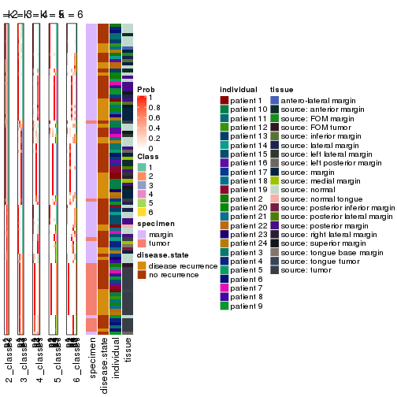
Test correlation between subgroups and known annotations. If the known annotation is numeric, one-way ANOVA test is applied, and if the known annotation is discrete, chi-squared contingency table test is applied.
test_to_known_factors(res)
#> n specimen(p) disease.state(p) individual(p) tissue(p) k
#> CV:NMF 95 3.11e-08 0.525 0.789 2.49e-04 2
#> CV:NMF 93 5.89e-14 0.822 0.895 3.95e-06 3
#> CV:NMF 90 4.39e-15 0.944 0.942 4.32e-09 4
#> CV:NMF 95 5.11e-13 0.300 0.720 7.07e-06 5
#> CV:NMF 70 1.63e-09 0.794 0.261 1.22e-03 6
If matrix rows can be associated to genes, consider to use functional_enrichment(res,
...) to perform function enrichment for the signature genes. See this vignette for more detailed explanations.
The object with results only for a single top-value method and a single partition method can be extracted as:
res = res_list["MAD", "hclust"]
# you can also extract it by
# res = res_list["MAD:hclust"]
A summary of res and all the functions that can be applied to it:
res
#> A 'ConsensusPartition' object with k = 2, 3, 4, 5, 6.
#> On a matrix with 17783 rows and 96 columns.
#> Top rows (1000, 2000, 3000, 4000, 5000) are extracted by 'MAD' method.
#> Subgroups are detected by 'hclust' method.
#> Performed in total 1250 partitions by row resampling.
#> Best k for subgroups seems to be 3.
#>
#> Following methods can be applied to this 'ConsensusPartition' object:
#> [1] "cola_report" "collect_classes" "collect_plots"
#> [4] "collect_stats" "colnames" "compare_signatures"
#> [7] "consensus_heatmap" "dimension_reduction" "functional_enrichment"
#> [10] "get_anno_col" "get_anno" "get_classes"
#> [13] "get_consensus" "get_matrix" "get_membership"
#> [16] "get_param" "get_signatures" "get_stats"
#> [19] "is_best_k" "is_stable_k" "membership_heatmap"
#> [22] "ncol" "nrow" "plot_ecdf"
#> [25] "rownames" "select_partition_number" "show"
#> [28] "suggest_best_k" "test_to_known_factors"
collect_plots() function collects all the plots made from res for all k (number of partitions)
into one single page to provide an easy and fast comparison between different k.
collect_plots(res)
The plots are:
k and the heatmap of
predicted classes for each k.k.k.k.All the plots in panels can be made by individual functions and they are plotted later in this section.
select_partition_number() produces several plots showing different
statistics for choosing “optimized” k. There are following statistics:
k;k, the area increased is defined as \(A_k - A_{k-1}\).The detailed explanations of these statistics can be found in the cola vignette.
Generally speaking, lower PAC score, higher mean silhouette score or higher
concordance corresponds to better partition. Rand index and Jaccard index
measure how similar the current partition is compared to partition with k-1.
If they are too similar, we won't accept k is better than k-1.
select_partition_number(res)
The numeric values for all these statistics can be obtained by get_stats().
get_stats(res)
#> k 1-PAC mean_silhouette concordance area_increased Rand Jaccard
#> 2 2 0.462 0.810 0.898 0.3304 0.705 0.705
#> 3 3 0.385 0.667 0.806 0.7381 0.745 0.652
#> 4 4 0.447 0.456 0.700 0.2037 0.683 0.418
#> 5 5 0.583 0.615 0.781 0.0897 0.849 0.524
#> 6 6 0.634 0.610 0.766 0.0633 0.946 0.770
suggest_best_k() suggests the best \(k\) based on these statistics. The rules are as follows:
suggest_best_k(res)
#> [1] 3
Following shows the table of the partitions (You need to click the show/hide
code output link to see it). The membership matrix (columns with name p*)
is inferred by
clue::cl_consensus()
function with the SE method. Basically the value in the membership matrix
represents the probability to belong to a certain group. The finall class
label for an item is determined with the group with highest probability it
belongs to.
In get_classes() function, the entropy is calculated from the membership
matrix and the silhouette score is calculated from the consensus matrix.
cbind(get_classes(res, k = 2), get_membership(res, k = 2))
#> class entropy silhouette p1 p2
#> GSM771247 2 0.760 0.7489 0.220 0.780
#> GSM771246 2 0.518 0.8575 0.116 0.884
#> GSM771245 2 0.680 0.7990 0.180 0.820
#> GSM771169 1 0.469 0.8622 0.900 0.100
#> GSM771171 1 0.469 0.8622 0.900 0.100
#> GSM771175 2 0.000 0.8897 0.000 1.000
#> GSM771172 2 0.469 0.8659 0.100 0.900
#> GSM771174 2 0.000 0.8897 0.000 1.000
#> GSM771178 1 0.998 0.1222 0.524 0.476
#> GSM771176 2 0.900 0.5709 0.316 0.684
#> GSM771181 1 0.278 0.8707 0.952 0.048
#> GSM771179 2 0.469 0.8659 0.100 0.900
#> GSM771184 2 0.574 0.8430 0.136 0.864
#> GSM771182 2 0.000 0.8897 0.000 1.000
#> GSM771185 2 0.000 0.8897 0.000 1.000
#> GSM771186 2 0.343 0.8812 0.064 0.936
#> GSM771188 2 0.900 0.5709 0.316 0.684
#> GSM771193 2 0.946 0.4514 0.364 0.636
#> GSM771192 2 0.917 0.5157 0.332 0.668
#> GSM771189 2 0.000 0.8897 0.000 1.000
#> GSM771194 2 0.541 0.8448 0.124 0.876
#> GSM771191 2 0.295 0.8779 0.052 0.948
#> GSM771202 2 0.469 0.8659 0.100 0.900
#> GSM771200 2 0.469 0.8659 0.100 0.900
#> GSM771206 2 0.000 0.8897 0.000 1.000
#> GSM771208 2 0.000 0.8897 0.000 1.000
#> GSM771207 1 0.469 0.8622 0.900 0.100
#> GSM771209 2 0.469 0.8659 0.100 0.900
#> GSM771211 2 0.760 0.7489 0.220 0.780
#> GSM771212 2 0.000 0.8897 0.000 1.000
#> GSM771214 2 0.278 0.8766 0.048 0.952
#> GSM771213 2 0.278 0.8766 0.048 0.952
#> GSM771216 2 0.278 0.8766 0.048 0.952
#> GSM771217 2 0.278 0.8766 0.048 0.952
#> GSM771219 1 0.469 0.8622 0.900 0.100
#> GSM771218 2 0.000 0.8897 0.000 1.000
#> GSM771222 2 0.584 0.8398 0.140 0.860
#> GSM771220 1 0.775 0.7286 0.772 0.228
#> GSM771226 1 0.278 0.8707 0.952 0.048
#> GSM771223 2 0.311 0.8746 0.056 0.944
#> GSM771225 2 0.373 0.8782 0.072 0.928
#> GSM771232 2 0.343 0.8812 0.064 0.936
#> GSM771235 1 0.992 0.2143 0.552 0.448
#> GSM771234 1 0.278 0.8707 0.952 0.048
#> GSM771242 1 0.343 0.8715 0.936 0.064
#> GSM771239 2 0.327 0.8825 0.060 0.940
#> GSM771240 2 0.644 0.8157 0.164 0.836
#> GSM771241 1 0.343 0.8715 0.936 0.064
#> GSM771197 1 0.278 0.8707 0.952 0.048
#> GSM771195 2 0.443 0.8728 0.092 0.908
#> GSM771198 1 0.278 0.8707 0.952 0.048
#> GSM771199 1 0.278 0.8707 0.952 0.048
#> GSM771204 2 0.311 0.8746 0.056 0.944
#> GSM771205 2 0.469 0.8659 0.100 0.900
#> GSM771229 2 0.644 0.8184 0.164 0.836
#> GSM771227 2 0.443 0.8728 0.092 0.908
#> GSM771230 2 0.000 0.8897 0.000 1.000
#> GSM771231 2 0.260 0.8828 0.044 0.956
#> GSM771238 2 0.634 0.8184 0.160 0.840
#> GSM771236 2 0.563 0.8464 0.132 0.868
#> GSM771154 2 0.000 0.8897 0.000 1.000
#> GSM771152 2 0.327 0.8825 0.060 0.940
#> GSM771156 2 1.000 -0.0512 0.496 0.504
#> GSM771157 2 0.000 0.8897 0.000 1.000
#> GSM771155 2 0.000 0.8897 0.000 1.000
#> GSM771160 1 0.278 0.8707 0.952 0.048
#> GSM771161 2 0.714 0.7836 0.196 0.804
#> GSM771159 2 0.373 0.8782 0.072 0.928
#> GSM771165 2 0.000 0.8897 0.000 1.000
#> GSM771166 1 0.999 0.0887 0.520 0.480
#> GSM771167 2 0.260 0.8828 0.044 0.956
#> GSM771168 2 0.644 0.8184 0.164 0.836
#> GSM771163 2 0.443 0.8728 0.092 0.908
#> GSM771244 2 0.278 0.8766 0.048 0.952
#> GSM771170 2 0.563 0.8464 0.132 0.868
#> GSM771173 2 0.278 0.8866 0.048 0.952
#> GSM771177 2 0.278 0.8766 0.048 0.952
#> GSM771180 2 0.278 0.8866 0.048 0.952
#> GSM771183 2 0.278 0.8766 0.048 0.952
#> GSM771187 2 0.278 0.8766 0.048 0.952
#> GSM771190 2 0.278 0.8766 0.048 0.952
#> GSM771201 2 0.443 0.8853 0.092 0.908
#> GSM771210 2 0.278 0.8766 0.048 0.952
#> GSM771215 2 0.278 0.8766 0.048 0.952
#> GSM771221 2 0.278 0.8766 0.048 0.952
#> GSM771224 2 1.000 -0.0722 0.496 0.504
#> GSM771233 2 0.278 0.8766 0.048 0.952
#> GSM771243 2 0.278 0.8766 0.048 0.952
#> GSM771196 2 0.278 0.8766 0.048 0.952
#> GSM771203 2 0.278 0.8766 0.048 0.952
#> GSM771228 2 0.278 0.8766 0.048 0.952
#> GSM771237 2 0.278 0.8766 0.048 0.952
#> GSM771153 2 0.278 0.8766 0.048 0.952
#> GSM771158 2 0.278 0.8766 0.048 0.952
#> GSM771162 2 0.278 0.8866 0.048 0.952
#> GSM771164 2 0.278 0.8766 0.048 0.952
cbind(get_classes(res, k = 3), get_membership(res, k = 3))
#> class entropy silhouette p1 p2 p3
#> GSM771247 1 0.8293 0.66908 0.608 0.272 0.120
#> GSM771246 1 0.6629 0.69865 0.624 0.360 0.016
#> GSM771245 1 0.8291 0.67327 0.580 0.320 0.100
#> GSM771169 3 0.4489 0.85062 0.108 0.036 0.856
#> GSM771171 3 0.4489 0.85062 0.108 0.036 0.856
#> GSM771175 1 0.2878 0.50258 0.904 0.096 0.000
#> GSM771172 1 0.5948 0.70363 0.640 0.360 0.000
#> GSM771174 1 0.2878 0.50258 0.904 0.096 0.000
#> GSM771178 3 0.9532 0.07572 0.316 0.212 0.472
#> GSM771176 1 0.9340 0.55326 0.516 0.264 0.220
#> GSM771181 3 0.0000 0.88618 0.000 0.000 1.000
#> GSM771179 1 0.5948 0.70363 0.640 0.360 0.000
#> GSM771184 1 0.5538 0.69088 0.808 0.132 0.060
#> GSM771182 1 0.2537 0.51410 0.920 0.080 0.000
#> GSM771185 1 0.2448 0.52008 0.924 0.076 0.000
#> GSM771186 1 0.1163 0.55166 0.972 0.028 0.000
#> GSM771188 1 0.9340 0.55326 0.516 0.264 0.220
#> GSM771193 1 0.9574 0.47630 0.476 0.232 0.292
#> GSM771192 1 0.6187 0.50948 0.724 0.028 0.248
#> GSM771189 1 0.2959 0.48361 0.900 0.100 0.000
#> GSM771194 1 0.8054 0.69935 0.568 0.356 0.076
#> GSM771191 1 0.6252 0.69588 0.556 0.444 0.000
#> GSM771202 1 0.5948 0.70363 0.640 0.360 0.000
#> GSM771200 1 0.5948 0.70363 0.640 0.360 0.000
#> GSM771206 1 0.6126 0.71341 0.600 0.400 0.000
#> GSM771208 1 0.6140 0.71219 0.596 0.404 0.000
#> GSM771207 3 0.4489 0.85062 0.108 0.036 0.856
#> GSM771209 1 0.5948 0.70363 0.640 0.360 0.000
#> GSM771211 1 0.8293 0.66908 0.608 0.272 0.120
#> GSM771212 1 0.6140 0.71283 0.596 0.404 0.000
#> GSM771214 1 0.6291 0.67843 0.532 0.468 0.000
#> GSM771213 1 0.6274 0.68914 0.544 0.456 0.000
#> GSM771216 1 0.6274 0.68914 0.544 0.456 0.000
#> GSM771217 1 0.6274 0.68914 0.544 0.456 0.000
#> GSM771219 3 0.4489 0.85062 0.108 0.036 0.856
#> GSM771218 1 0.6126 0.71341 0.600 0.400 0.000
#> GSM771222 1 0.6887 0.71697 0.704 0.236 0.060
#> GSM771220 3 0.6984 0.68782 0.192 0.088 0.720
#> GSM771226 3 0.0000 0.88618 0.000 0.000 1.000
#> GSM771223 1 0.7640 0.71589 0.576 0.372 0.052
#> GSM771225 1 0.0747 0.56087 0.984 0.016 0.000
#> GSM771232 1 0.3340 0.64724 0.880 0.120 0.000
#> GSM771235 1 0.6944 0.16685 0.516 0.016 0.468
#> GSM771234 3 0.0000 0.88618 0.000 0.000 1.000
#> GSM771242 3 0.1182 0.88607 0.012 0.012 0.976
#> GSM771239 1 0.1031 0.55833 0.976 0.024 0.000
#> GSM771240 1 0.7992 0.68456 0.592 0.328 0.080
#> GSM771241 3 0.1182 0.88607 0.012 0.012 0.976
#> GSM771197 3 0.0000 0.88618 0.000 0.000 1.000
#> GSM771195 1 0.1129 0.57462 0.976 0.004 0.020
#> GSM771198 3 0.0000 0.88618 0.000 0.000 1.000
#> GSM771199 3 0.0000 0.88618 0.000 0.000 1.000
#> GSM771204 1 0.7640 0.71589 0.576 0.372 0.052
#> GSM771205 1 0.5948 0.70363 0.640 0.360 0.000
#> GSM771229 1 0.7727 0.68637 0.600 0.336 0.064
#> GSM771227 1 0.1129 0.57462 0.976 0.004 0.020
#> GSM771230 1 0.2448 0.52955 0.924 0.076 0.000
#> GSM771231 1 0.4558 0.56265 0.856 0.100 0.044
#> GSM771238 1 0.8222 0.68510 0.576 0.332 0.092
#> GSM771236 1 0.7159 0.70990 0.660 0.288 0.052
#> GSM771154 1 0.6126 0.71341 0.600 0.400 0.000
#> GSM771152 1 0.1289 0.54921 0.968 0.032 0.000
#> GSM771156 1 0.6962 0.29708 0.568 0.020 0.412
#> GSM771157 1 0.6126 0.71341 0.600 0.400 0.000
#> GSM771155 1 0.2959 0.54060 0.900 0.100 0.000
#> GSM771160 3 0.0000 0.88618 0.000 0.000 1.000
#> GSM771161 1 0.8646 0.66108 0.556 0.320 0.124
#> GSM771159 1 0.0747 0.56087 0.984 0.016 0.000
#> GSM771165 1 0.2448 0.52955 0.924 0.076 0.000
#> GSM771166 1 0.7240 0.24671 0.540 0.028 0.432
#> GSM771167 1 0.4558 0.56265 0.856 0.100 0.044
#> GSM771168 1 0.7727 0.68637 0.600 0.336 0.064
#> GSM771163 1 0.1129 0.57462 0.976 0.004 0.020
#> GSM771244 2 0.6126 0.95557 0.400 0.600 0.000
#> GSM771170 1 0.7159 0.70990 0.660 0.288 0.052
#> GSM771173 1 0.5291 -0.01679 0.732 0.268 0.000
#> GSM771177 2 0.6111 0.95374 0.396 0.604 0.000
#> GSM771180 1 0.5254 0.00242 0.736 0.264 0.000
#> GSM771183 2 0.5948 0.97183 0.360 0.640 0.000
#> GSM771187 2 0.6126 0.95557 0.400 0.600 0.000
#> GSM771190 2 0.5988 0.97067 0.368 0.632 0.000
#> GSM771201 1 0.6235 -0.61346 0.564 0.436 0.000
#> GSM771210 1 0.6079 0.64636 0.612 0.388 0.000
#> GSM771215 2 0.5988 0.97067 0.368 0.632 0.000
#> GSM771221 2 0.5948 0.97183 0.360 0.640 0.000
#> GSM771224 1 0.7498 0.24697 0.548 0.040 0.412
#> GSM771233 2 0.5948 0.97183 0.360 0.640 0.000
#> GSM771243 2 0.6126 0.95557 0.400 0.600 0.000
#> GSM771196 2 0.6126 0.95557 0.400 0.600 0.000
#> GSM771203 2 0.5948 0.97183 0.360 0.640 0.000
#> GSM771228 2 0.5948 0.97183 0.360 0.640 0.000
#> GSM771237 2 0.5988 0.97067 0.368 0.632 0.000
#> GSM771153 2 0.6126 0.95557 0.400 0.600 0.000
#> GSM771158 2 0.5948 0.97183 0.360 0.640 0.000
#> GSM771162 1 0.5254 0.00242 0.736 0.264 0.000
#> GSM771164 2 0.5948 0.97183 0.360 0.640 0.000
cbind(get_classes(res, k = 4), get_membership(res, k = 4))
#> class entropy silhouette p1 p2 p3 p4
#> GSM771247 1 0.4954 0.4952 0.784 0.004 0.120 0.092
#> GSM771246 1 0.1610 0.5968 0.952 0.000 0.016 0.032
#> GSM771245 4 0.4678 0.3674 0.232 0.000 0.024 0.744
#> GSM771169 3 0.3485 0.8668 0.116 0.000 0.856 0.028
#> GSM771171 3 0.3485 0.8668 0.116 0.000 0.856 0.028
#> GSM771175 1 0.7844 -0.0824 0.368 0.368 0.000 0.264
#> GSM771172 1 0.1302 0.6064 0.956 0.000 0.000 0.044
#> GSM771174 2 0.7844 -0.0833 0.368 0.368 0.000 0.264
#> GSM771178 1 0.5859 -0.1634 0.496 0.000 0.472 0.032
#> GSM771176 4 0.7559 0.2855 0.336 0.000 0.204 0.460
#> GSM771181 3 0.0000 0.9195 0.000 0.000 1.000 0.000
#> GSM771179 1 0.1302 0.6064 0.956 0.000 0.000 0.044
#> GSM771184 1 0.8145 0.0914 0.524 0.128 0.060 0.288
#> GSM771182 2 0.7914 -0.1192 0.312 0.356 0.000 0.332
#> GSM771185 2 0.7918 -0.1232 0.316 0.352 0.000 0.332
#> GSM771186 1 0.7867 -0.1629 0.392 0.316 0.000 0.292
#> GSM771188 4 0.7559 0.2855 0.336 0.000 0.204 0.460
#> GSM771193 4 0.6943 0.3040 0.160 0.000 0.264 0.576
#> GSM771192 4 0.9364 0.3165 0.172 0.152 0.248 0.428
#> GSM771189 2 0.7872 -0.0588 0.344 0.376 0.000 0.280
#> GSM771194 4 0.5125 0.3374 0.248 0.024 0.008 0.720
#> GSM771191 1 0.4901 0.5614 0.780 0.108 0.000 0.112
#> GSM771202 1 0.1022 0.6068 0.968 0.000 0.000 0.032
#> GSM771200 1 0.1022 0.6068 0.968 0.000 0.000 0.032
#> GSM771206 1 0.3164 0.6164 0.884 0.064 0.000 0.052
#> GSM771208 1 0.3301 0.6155 0.876 0.076 0.000 0.048
#> GSM771207 3 0.3485 0.8668 0.116 0.000 0.856 0.028
#> GSM771209 1 0.0921 0.6076 0.972 0.000 0.000 0.028
#> GSM771211 1 0.4954 0.4952 0.784 0.004 0.120 0.092
#> GSM771212 1 0.3239 0.6156 0.880 0.068 0.000 0.052
#> GSM771214 1 0.4088 0.5872 0.820 0.140 0.000 0.040
#> GSM771213 1 0.4072 0.5952 0.828 0.120 0.000 0.052
#> GSM771216 1 0.4072 0.5952 0.828 0.120 0.000 0.052
#> GSM771217 1 0.4072 0.5952 0.828 0.120 0.000 0.052
#> GSM771219 3 0.3485 0.8668 0.116 0.000 0.856 0.028
#> GSM771218 1 0.3164 0.6164 0.884 0.064 0.000 0.052
#> GSM771222 1 0.5974 0.4874 0.740 0.052 0.060 0.148
#> GSM771220 3 0.4995 0.6796 0.248 0.000 0.720 0.032
#> GSM771226 3 0.0000 0.9195 0.000 0.000 1.000 0.000
#> GSM771223 4 0.6323 0.0631 0.440 0.060 0.000 0.500
#> GSM771225 4 0.7914 0.1677 0.332 0.312 0.000 0.356
#> GSM771232 1 0.7080 0.1414 0.568 0.236 0.000 0.196
#> GSM771235 4 0.6148 -0.0416 0.048 0.000 0.468 0.484
#> GSM771234 3 0.0000 0.9195 0.000 0.000 1.000 0.000
#> GSM771242 3 0.0927 0.9153 0.016 0.000 0.976 0.008
#> GSM771239 1 0.7917 -0.2386 0.348 0.312 0.000 0.340
#> GSM771240 4 0.4400 0.3541 0.248 0.004 0.004 0.744
#> GSM771241 3 0.0927 0.9153 0.016 0.000 0.976 0.008
#> GSM771197 3 0.0000 0.9195 0.000 0.000 1.000 0.000
#> GSM771195 4 0.8453 0.2049 0.340 0.292 0.020 0.348
#> GSM771198 3 0.0000 0.9195 0.000 0.000 1.000 0.000
#> GSM771199 3 0.0000 0.9195 0.000 0.000 1.000 0.000
#> GSM771204 4 0.6323 0.0631 0.440 0.060 0.000 0.500
#> GSM771205 1 0.0921 0.6076 0.972 0.000 0.000 0.028
#> GSM771229 1 0.2722 0.5667 0.904 0.000 0.064 0.032
#> GSM771227 4 0.8453 0.2049 0.340 0.292 0.020 0.348
#> GSM771230 1 0.7866 -0.0787 0.376 0.348 0.000 0.276
#> GSM771231 4 0.8752 0.1685 0.252 0.304 0.044 0.400
#> GSM771238 4 0.4614 0.3630 0.228 0.004 0.016 0.752
#> GSM771236 1 0.4524 0.5581 0.816 0.012 0.052 0.120
#> GSM771154 1 0.3164 0.6164 0.884 0.064 0.000 0.052
#> GSM771152 1 0.7873 -0.1615 0.388 0.320 0.000 0.292
#> GSM771156 4 0.6979 0.1169 0.072 0.016 0.412 0.500
#> GSM771157 1 0.3164 0.6164 0.884 0.064 0.000 0.052
#> GSM771155 2 0.7925 -0.1469 0.332 0.336 0.000 0.332
#> GSM771160 3 0.0000 0.9195 0.000 0.000 1.000 0.000
#> GSM771161 4 0.5170 0.3686 0.228 0.000 0.048 0.724
#> GSM771159 4 0.7914 0.1677 0.332 0.312 0.000 0.356
#> GSM771165 1 0.7866 -0.0787 0.376 0.348 0.000 0.276
#> GSM771166 4 0.6926 0.1042 0.108 0.000 0.432 0.460
#> GSM771167 4 0.8752 0.1685 0.252 0.304 0.044 0.400
#> GSM771168 1 0.2722 0.5667 0.904 0.000 0.064 0.032
#> GSM771163 4 0.8453 0.2049 0.340 0.292 0.020 0.348
#> GSM771244 2 0.2011 0.7109 0.000 0.920 0.000 0.080
#> GSM771170 1 0.4524 0.5581 0.816 0.012 0.052 0.120
#> GSM771173 2 0.4948 0.3779 0.000 0.560 0.000 0.440
#> GSM771177 2 0.2081 0.7092 0.000 0.916 0.000 0.084
#> GSM771180 2 0.4955 0.3731 0.000 0.556 0.000 0.444
#> GSM771183 2 0.0000 0.7088 0.000 1.000 0.000 0.000
#> GSM771187 2 0.2011 0.7109 0.000 0.920 0.000 0.080
#> GSM771190 2 0.0817 0.7057 0.024 0.976 0.000 0.000
#> GSM771201 2 0.5102 0.5704 0.048 0.732 0.000 0.220
#> GSM771210 1 0.6908 0.3387 0.592 0.220 0.000 0.188
#> GSM771215 2 0.0817 0.7057 0.024 0.976 0.000 0.000
#> GSM771221 2 0.0000 0.7088 0.000 1.000 0.000 0.000
#> GSM771224 4 0.7385 0.0885 0.048 0.056 0.412 0.484
#> GSM771233 2 0.0000 0.7088 0.000 1.000 0.000 0.000
#> GSM771243 2 0.2011 0.7109 0.000 0.920 0.000 0.080
#> GSM771196 2 0.2011 0.7109 0.000 0.920 0.000 0.080
#> GSM771203 2 0.0000 0.7088 0.000 1.000 0.000 0.000
#> GSM771228 2 0.0000 0.7088 0.000 1.000 0.000 0.000
#> GSM771237 2 0.0817 0.7057 0.024 0.976 0.000 0.000
#> GSM771153 2 0.2011 0.7109 0.000 0.920 0.000 0.080
#> GSM771158 2 0.0000 0.7088 0.000 1.000 0.000 0.000
#> GSM771162 2 0.4955 0.3731 0.000 0.556 0.000 0.444
#> GSM771164 2 0.0000 0.7088 0.000 1.000 0.000 0.000
cbind(get_classes(res, k = 5), get_membership(res, k = 5))
#> class entropy silhouette p1 p2 p3 p4 p5
#> GSM771247 1 0.4111 0.6251 0.796 0.000 0.116 0.004 0.084
#> GSM771246 1 0.0798 0.7322 0.976 0.000 0.016 0.008 0.000
#> GSM771245 4 0.0290 0.7348 0.000 0.000 0.008 0.992 0.000
#> GSM771169 3 0.2976 0.7908 0.132 0.000 0.852 0.012 0.004
#> GSM771171 3 0.2976 0.7908 0.132 0.000 0.852 0.012 0.004
#> GSM771175 5 0.4382 0.5916 0.276 0.004 0.000 0.020 0.700
#> GSM771172 1 0.0693 0.7359 0.980 0.000 0.000 0.008 0.012
#> GSM771174 5 0.4382 0.5916 0.276 0.004 0.000 0.020 0.700
#> GSM771178 1 0.4796 -0.1219 0.516 0.000 0.468 0.012 0.004
#> GSM771176 4 0.6293 0.5182 0.240 0.000 0.200 0.556 0.004
#> GSM771181 3 0.0000 0.8353 0.000 0.000 1.000 0.000 0.000
#> GSM771179 1 0.0693 0.7359 0.980 0.000 0.000 0.008 0.012
#> GSM771184 1 0.6282 -0.1855 0.504 0.000 0.056 0.044 0.396
#> GSM771182 5 0.3944 0.6459 0.224 0.004 0.000 0.016 0.756
#> GSM771185 5 0.4000 0.6434 0.228 0.000 0.000 0.024 0.748
#> GSM771186 5 0.5214 0.6305 0.348 0.008 0.000 0.040 0.604
#> GSM771188 4 0.6293 0.5182 0.240 0.000 0.200 0.556 0.004
#> GSM771193 4 0.4460 0.5312 0.012 0.000 0.252 0.716 0.020
#> GSM771192 5 0.7066 0.3976 0.148 0.000 0.248 0.064 0.540
#> GSM771189 5 0.4394 0.6166 0.256 0.012 0.000 0.016 0.716
#> GSM771194 4 0.1697 0.7391 0.008 0.000 0.000 0.932 0.060
#> GSM771191 1 0.5889 0.6549 0.680 0.052 0.000 0.104 0.164
#> GSM771202 1 0.0290 0.7371 0.992 0.000 0.000 0.008 0.000
#> GSM771200 1 0.0290 0.7371 0.992 0.000 0.000 0.008 0.000
#> GSM771206 1 0.3645 0.7199 0.804 0.004 0.000 0.024 0.168
#> GSM771208 1 0.3754 0.7180 0.796 0.008 0.000 0.020 0.176
#> GSM771207 3 0.2976 0.7908 0.132 0.000 0.852 0.012 0.004
#> GSM771209 1 0.0162 0.7390 0.996 0.004 0.000 0.000 0.000
#> GSM771211 1 0.4111 0.6251 0.796 0.000 0.116 0.004 0.084
#> GSM771212 1 0.3684 0.7190 0.800 0.004 0.000 0.024 0.172
#> GSM771214 1 0.4855 0.6931 0.744 0.080 0.000 0.016 0.160
#> GSM771213 1 0.4790 0.6995 0.748 0.056 0.000 0.024 0.172
#> GSM771216 1 0.4790 0.6995 0.748 0.056 0.000 0.024 0.172
#> GSM771217 1 0.4790 0.6995 0.748 0.056 0.000 0.024 0.172
#> GSM771219 3 0.2976 0.7908 0.132 0.000 0.852 0.012 0.004
#> GSM771218 1 0.3645 0.7199 0.804 0.004 0.000 0.024 0.168
#> GSM771222 1 0.5174 0.5425 0.728 0.000 0.056 0.044 0.172
#> GSM771220 3 0.4064 0.6261 0.272 0.000 0.716 0.008 0.004
#> GSM771226 3 0.0000 0.8353 0.000 0.000 1.000 0.000 0.000
#> GSM771223 4 0.5854 0.4520 0.240 0.000 0.000 0.600 0.160
#> GSM771225 5 0.5150 0.6624 0.292 0.012 0.000 0.044 0.652
#> GSM771232 1 0.5401 -0.1913 0.524 0.008 0.000 0.040 0.428
#> GSM771235 3 0.6360 0.2321 0.040 0.000 0.464 0.064 0.432
#> GSM771234 3 0.0000 0.8353 0.000 0.000 1.000 0.000 0.000
#> GSM771242 3 0.0968 0.8324 0.012 0.000 0.972 0.012 0.004
#> GSM771239 5 0.5036 0.6595 0.304 0.008 0.000 0.040 0.648
#> GSM771240 4 0.1845 0.7439 0.056 0.000 0.000 0.928 0.016
#> GSM771241 3 0.0968 0.8324 0.012 0.000 0.972 0.012 0.004
#> GSM771197 3 0.0000 0.8353 0.000 0.000 1.000 0.000 0.000
#> GSM771195 5 0.5303 0.6551 0.304 0.000 0.016 0.044 0.636
#> GSM771198 3 0.0000 0.8353 0.000 0.000 1.000 0.000 0.000
#> GSM771199 3 0.0000 0.8353 0.000 0.000 1.000 0.000 0.000
#> GSM771204 4 0.5854 0.4520 0.240 0.000 0.000 0.600 0.160
#> GSM771205 1 0.0162 0.7390 0.996 0.004 0.000 0.000 0.000
#> GSM771229 1 0.1970 0.7120 0.924 0.000 0.060 0.012 0.004
#> GSM771227 5 0.5303 0.6551 0.304 0.000 0.016 0.044 0.636
#> GSM771230 5 0.4442 0.5912 0.284 0.000 0.000 0.028 0.688
#> GSM771231 5 0.5002 0.6328 0.168 0.000 0.040 0.052 0.740
#> GSM771238 4 0.0510 0.7401 0.000 0.000 0.000 0.984 0.016
#> GSM771236 1 0.4289 0.6542 0.804 0.000 0.048 0.040 0.108
#> GSM771154 1 0.3645 0.7199 0.804 0.004 0.000 0.024 0.168
#> GSM771152 5 0.5201 0.6326 0.344 0.008 0.000 0.040 0.608
#> GSM771156 5 0.6460 -0.1628 0.048 0.000 0.408 0.064 0.480
#> GSM771157 1 0.3645 0.7199 0.804 0.004 0.000 0.024 0.168
#> GSM771155 5 0.4089 0.6311 0.244 0.004 0.000 0.016 0.736
#> GSM771160 3 0.0000 0.8353 0.000 0.000 1.000 0.000 0.000
#> GSM771161 4 0.0880 0.7239 0.000 0.000 0.032 0.968 0.000
#> GSM771159 5 0.5150 0.6624 0.292 0.012 0.000 0.044 0.652
#> GSM771165 5 0.4442 0.5912 0.284 0.000 0.000 0.028 0.688
#> GSM771166 3 0.6981 0.1304 0.092 0.000 0.428 0.064 0.416
#> GSM771167 5 0.5002 0.6328 0.168 0.000 0.040 0.052 0.740
#> GSM771168 1 0.1970 0.7120 0.924 0.000 0.060 0.012 0.004
#> GSM771163 5 0.5303 0.6551 0.304 0.000 0.016 0.044 0.636
#> GSM771244 2 0.4088 0.6070 0.000 0.632 0.000 0.000 0.368
#> GSM771170 1 0.4289 0.6542 0.804 0.000 0.048 0.040 0.108
#> GSM771173 5 0.4272 0.3283 0.000 0.196 0.000 0.052 0.752
#> GSM771177 2 0.4238 0.6025 0.000 0.628 0.000 0.004 0.368
#> GSM771180 5 0.4238 0.3333 0.000 0.192 0.000 0.052 0.756
#> GSM771183 2 0.0162 0.7962 0.000 0.996 0.000 0.000 0.004
#> GSM771187 2 0.4088 0.6070 0.000 0.632 0.000 0.000 0.368
#> GSM771190 2 0.0880 0.7828 0.000 0.968 0.000 0.000 0.032
#> GSM771201 5 0.6266 -0.0427 0.048 0.384 0.000 0.052 0.516
#> GSM771210 1 0.7385 0.3567 0.504 0.100 0.000 0.124 0.272
#> GSM771215 2 0.0880 0.7828 0.000 0.968 0.000 0.000 0.032
#> GSM771221 2 0.0162 0.7962 0.000 0.996 0.000 0.000 0.004
#> GSM771224 5 0.6341 -0.1838 0.040 0.000 0.408 0.064 0.488
#> GSM771233 2 0.0162 0.7962 0.000 0.996 0.000 0.000 0.004
#> GSM771243 2 0.4088 0.6070 0.000 0.632 0.000 0.000 0.368
#> GSM771196 2 0.4088 0.6070 0.000 0.632 0.000 0.000 0.368
#> GSM771203 2 0.0162 0.7962 0.000 0.996 0.000 0.000 0.004
#> GSM771228 2 0.0162 0.7962 0.000 0.996 0.000 0.000 0.004
#> GSM771237 2 0.0880 0.7828 0.000 0.968 0.000 0.000 0.032
#> GSM771153 2 0.4088 0.6070 0.000 0.632 0.000 0.000 0.368
#> GSM771158 2 0.0162 0.7962 0.000 0.996 0.000 0.000 0.004
#> GSM771162 5 0.4238 0.3333 0.000 0.192 0.000 0.052 0.756
#> GSM771164 2 0.0162 0.7962 0.000 0.996 0.000 0.000 0.004
cbind(get_classes(res, k = 6), get_membership(res, k = 6))
#> class entropy silhouette p1 p2 p3 p4 p5 p6
#> GSM771247 1 0.4026 0.6058 0.780 0.000 0.036 0.000 0.040 0.144
#> GSM771246 1 0.1078 0.7080 0.964 0.000 0.012 0.000 0.008 0.016
#> GSM771245 4 0.0748 0.6962 0.000 0.000 0.004 0.976 0.004 0.016
#> GSM771169 3 0.3958 0.7971 0.128 0.000 0.764 0.000 0.000 0.108
#> GSM771171 3 0.3958 0.7971 0.128 0.000 0.764 0.000 0.000 0.108
#> GSM771175 5 0.2604 0.5641 0.064 0.004 0.000 0.004 0.884 0.044
#> GSM771172 1 0.2039 0.6919 0.904 0.000 0.000 0.000 0.076 0.020
#> GSM771174 5 0.2604 0.5641 0.064 0.004 0.000 0.004 0.884 0.044
#> GSM771178 1 0.5217 -0.1369 0.512 0.000 0.392 0.000 0.000 0.096
#> GSM771176 4 0.6616 0.4795 0.236 0.000 0.116 0.544 0.008 0.096
#> GSM771181 3 0.0000 0.8609 0.000 0.000 1.000 0.000 0.000 0.000
#> GSM771179 1 0.2039 0.6919 0.904 0.000 0.000 0.000 0.076 0.020
#> GSM771184 5 0.6134 0.1893 0.380 0.000 0.008 0.000 0.404 0.208
#> GSM771182 5 0.3317 0.5893 0.088 0.004 0.000 0.000 0.828 0.080
#> GSM771185 5 0.3321 0.5898 0.088 0.000 0.000 0.008 0.832 0.072
#> GSM771186 5 0.4339 0.5631 0.120 0.004 0.000 0.000 0.736 0.140
#> GSM771188 4 0.6616 0.4795 0.236 0.000 0.116 0.544 0.008 0.096
#> GSM771193 4 0.4704 0.5361 0.000 0.000 0.156 0.704 0.008 0.132
#> GSM771192 6 0.5429 0.1353 0.032 0.000 0.052 0.000 0.404 0.512
#> GSM771189 5 0.2456 0.5710 0.048 0.008 0.000 0.000 0.892 0.052
#> GSM771194 4 0.1267 0.6962 0.000 0.000 0.000 0.940 0.060 0.000
#> GSM771191 1 0.5738 0.5832 0.564 0.004 0.000 0.092 0.312 0.028
#> GSM771202 1 0.0622 0.7123 0.980 0.000 0.000 0.000 0.008 0.012
#> GSM771200 1 0.0622 0.7123 0.980 0.000 0.000 0.000 0.008 0.012
#> GSM771206 1 0.3468 0.6976 0.712 0.000 0.000 0.004 0.284 0.000
#> GSM771208 1 0.3508 0.6948 0.704 0.004 0.000 0.000 0.292 0.000
#> GSM771207 3 0.3958 0.7971 0.128 0.000 0.764 0.000 0.000 0.108
#> GSM771209 1 0.0260 0.7146 0.992 0.000 0.000 0.000 0.008 0.000
#> GSM771211 1 0.4026 0.6058 0.780 0.000 0.036 0.000 0.040 0.144
#> GSM771212 1 0.3371 0.6960 0.708 0.000 0.000 0.000 0.292 0.000
#> GSM771214 1 0.4781 0.6649 0.652 0.032 0.000 0.000 0.284 0.032
#> GSM771213 1 0.4342 0.6715 0.656 0.008 0.000 0.000 0.308 0.028
#> GSM771216 1 0.4342 0.6715 0.656 0.008 0.000 0.000 0.308 0.028
#> GSM771217 1 0.4342 0.6715 0.656 0.008 0.000 0.000 0.308 0.028
#> GSM771219 3 0.3958 0.7971 0.128 0.000 0.764 0.000 0.000 0.108
#> GSM771218 1 0.3351 0.6975 0.712 0.000 0.000 0.000 0.288 0.000
#> GSM771222 1 0.4857 0.5231 0.680 0.000 0.008 0.000 0.116 0.196
#> GSM771220 3 0.4700 0.6298 0.268 0.000 0.648 0.000 0.000 0.084
#> GSM771226 3 0.0000 0.8609 0.000 0.000 1.000 0.000 0.000 0.000
#> GSM771223 4 0.5374 0.4439 0.212 0.000 0.000 0.588 0.200 0.000
#> GSM771225 5 0.5319 0.4675 0.140 0.008 0.000 0.000 0.616 0.236
#> GSM771232 5 0.5645 0.3476 0.372 0.004 0.000 0.000 0.488 0.136
#> GSM771235 6 0.3680 0.7813 0.000 0.000 0.144 0.000 0.072 0.784
#> GSM771234 3 0.0000 0.8609 0.000 0.000 1.000 0.000 0.000 0.000
#> GSM771242 3 0.2165 0.8414 0.008 0.000 0.884 0.000 0.000 0.108
#> GSM771239 5 0.4454 0.5527 0.144 0.004 0.000 0.000 0.724 0.128
#> GSM771240 4 0.2196 0.6967 0.020 0.000 0.000 0.908 0.056 0.016
#> GSM771241 3 0.2165 0.8414 0.008 0.000 0.884 0.000 0.000 0.108
#> GSM771197 3 0.0000 0.8609 0.000 0.000 1.000 0.000 0.000 0.000
#> GSM771195 5 0.5040 0.5082 0.148 0.000 0.004 0.000 0.652 0.196
#> GSM771198 3 0.0000 0.8609 0.000 0.000 1.000 0.000 0.000 0.000
#> GSM771199 3 0.0000 0.8609 0.000 0.000 1.000 0.000 0.000 0.000
#> GSM771204 4 0.5374 0.4439 0.212 0.000 0.000 0.588 0.200 0.000
#> GSM771205 1 0.0260 0.7146 0.992 0.000 0.000 0.000 0.008 0.000
#> GSM771229 1 0.2085 0.6894 0.912 0.000 0.024 0.000 0.008 0.056
#> GSM771227 5 0.5040 0.5082 0.148 0.000 0.004 0.000 0.652 0.196
#> GSM771230 5 0.1745 0.5797 0.068 0.000 0.000 0.012 0.920 0.000
#> GSM771231 5 0.4910 0.4766 0.052 0.000 0.004 0.044 0.704 0.196
#> GSM771238 4 0.0146 0.6975 0.000 0.000 0.000 0.996 0.004 0.000
#> GSM771236 1 0.4560 0.5586 0.692 0.000 0.000 0.000 0.108 0.200
#> GSM771154 1 0.3468 0.6976 0.712 0.000 0.000 0.004 0.284 0.000
#> GSM771152 5 0.4301 0.5654 0.120 0.004 0.000 0.000 0.740 0.136
#> GSM771156 6 0.3644 0.7961 0.000 0.000 0.088 0.000 0.120 0.792
#> GSM771157 1 0.3351 0.6975 0.712 0.000 0.000 0.000 0.288 0.000
#> GSM771155 5 0.3554 0.5843 0.108 0.004 0.000 0.000 0.808 0.080
#> GSM771160 3 0.0000 0.8609 0.000 0.000 1.000 0.000 0.000 0.000
#> GSM771161 4 0.1168 0.6932 0.000 0.000 0.028 0.956 0.000 0.016
#> GSM771159 5 0.5319 0.4675 0.140 0.008 0.000 0.000 0.616 0.236
#> GSM771165 5 0.1745 0.5797 0.068 0.000 0.000 0.012 0.920 0.000
#> GSM771166 6 0.4711 0.7737 0.040 0.000 0.120 0.000 0.104 0.736
#> GSM771167 5 0.4910 0.4766 0.052 0.000 0.004 0.044 0.704 0.196
#> GSM771168 1 0.2085 0.6894 0.912 0.000 0.024 0.000 0.008 0.056
#> GSM771163 5 0.5040 0.5082 0.148 0.000 0.004 0.000 0.652 0.196
#> GSM771244 2 0.5136 0.5428 0.000 0.584 0.000 0.004 0.320 0.092
#> GSM771170 1 0.4560 0.5586 0.692 0.000 0.000 0.000 0.108 0.200
#> GSM771173 5 0.5736 0.1606 0.000 0.144 0.000 0.004 0.440 0.412
#> GSM771177 2 0.5177 0.5381 0.000 0.580 0.000 0.004 0.320 0.096
#> GSM771180 5 0.5712 0.1587 0.000 0.140 0.000 0.004 0.440 0.416
#> GSM771183 2 0.0000 0.7693 0.000 1.000 0.000 0.000 0.000 0.000
#> GSM771187 2 0.5136 0.5428 0.000 0.584 0.000 0.004 0.320 0.092
#> GSM771190 2 0.1789 0.7295 0.000 0.924 0.000 0.000 0.044 0.032
#> GSM771201 5 0.6037 0.0764 0.000 0.284 0.000 0.004 0.464 0.248
#> GSM771210 5 0.6914 -0.2860 0.384 0.044 0.000 0.116 0.420 0.036
#> GSM771215 2 0.0858 0.7526 0.000 0.968 0.000 0.000 0.028 0.004
#> GSM771221 2 0.0000 0.7693 0.000 1.000 0.000 0.000 0.000 0.000
#> GSM771224 6 0.3790 0.7939 0.000 0.000 0.116 0.000 0.104 0.780
#> GSM771233 2 0.0000 0.7693 0.000 1.000 0.000 0.000 0.000 0.000
#> GSM771243 2 0.5136 0.5428 0.000 0.584 0.000 0.004 0.320 0.092
#> GSM771196 2 0.5136 0.5428 0.000 0.584 0.000 0.004 0.320 0.092
#> GSM771203 2 0.0000 0.7693 0.000 1.000 0.000 0.000 0.000 0.000
#> GSM771228 2 0.0000 0.7693 0.000 1.000 0.000 0.000 0.000 0.000
#> GSM771237 2 0.1789 0.7295 0.000 0.924 0.000 0.000 0.044 0.032
#> GSM771153 2 0.5136 0.5428 0.000 0.584 0.000 0.004 0.320 0.092
#> GSM771158 2 0.0000 0.7693 0.000 1.000 0.000 0.000 0.000 0.000
#> GSM771162 5 0.5712 0.1587 0.000 0.140 0.000 0.004 0.440 0.416
#> GSM771164 2 0.0000 0.7693 0.000 1.000 0.000 0.000 0.000 0.000
Heatmaps for the consensus matrix. It visualizes the probability of two samples to be in a same group.
consensus_heatmap(res, k = 2)
consensus_heatmap(res, k = 3)

consensus_heatmap(res, k = 4)
consensus_heatmap(res, k = 5)
consensus_heatmap(res, k = 6)
Heatmaps for the membership of samples in all partitions to see how consistent they are:
membership_heatmap(res, k = 2)
membership_heatmap(res, k = 3)
membership_heatmap(res, k = 4)
membership_heatmap(res, k = 5)
membership_heatmap(res, k = 6)
As soon as we have had the classes for columns, we can look for signatures which are significantly different between classes which can be candidate marks for certain classes. Following are the heatmaps for signatures.
Signature heatmaps where rows are scaled:
get_signatures(res, k = 2)
#> Error: The width or height of the raster image is zero, maybe you forget to turn off the
#> previous graphic device or it was corrupted. Run `dev.off()` to close it.

get_signatures(res, k = 3)
#> Error: The width or height of the raster image is zero, maybe you forget to turn off the
#> previous graphic device or it was corrupted. Run `dev.off()` to close it.

get_signatures(res, k = 4)
#> Error: The width or height of the raster image is zero, maybe you forget to turn off the
#> previous graphic device or it was corrupted. Run `dev.off()` to close it.

get_signatures(res, k = 5)
#> Error: The width or height of the raster image is zero, maybe you forget to turn off the
#> previous graphic device or it was corrupted. Run `dev.off()` to close it.

get_signatures(res, k = 6)
#> Error: The width or height of the raster image is zero, maybe you forget to turn off the
#> previous graphic device or it was corrupted. Run `dev.off()` to close it.

Signature heatmaps where rows are not scaled:
get_signatures(res, k = 2, scale_rows = FALSE)
get_signatures(res, k = 3, scale_rows = FALSE)
get_signatures(res, k = 4, scale_rows = FALSE)
get_signatures(res, k = 5, scale_rows = FALSE)
#> Error in mat[ceiling(1:nr/h_ratio), ceiling(1:nc/w_ratio), drop = FALSE]: subscript out of bounds
get_signatures(res, k = 6, scale_rows = FALSE)
#> Error in mat[ceiling(1:nr/h_ratio), ceiling(1:nc/w_ratio), drop = FALSE]: subscript out of bounds

Compare the overlap of signatures from different k:
compare_signatures(res)
get_signature() returns a data frame invisibly. TO get the list of signatures, the function
call should be assigned to a variable explicitly. In following code, if plot argument is set
to FALSE, no heatmap is plotted while only the differential analysis is performed.
# code only for demonstration
tb = get_signature(res, k = ..., plot = FALSE)
An example of the output of tb is:
#> which_row fdr mean_1 mean_2 scaled_mean_1 scaled_mean_2 km
#> 1 38 0.042760348 8.373488 9.131774 -0.5533452 0.5164555 1
#> 2 40 0.018707592 7.106213 8.469186 -0.6173731 0.5762149 1
#> 3 55 0.019134737 10.221463 11.207825 -0.6159697 0.5749050 1
#> 4 59 0.006059896 5.921854 7.869574 -0.6899429 0.6439467 1
#> 5 60 0.018055526 8.928898 10.211722 -0.6204761 0.5791110 1
#> 6 98 0.009384629 15.714769 14.887706 0.6635654 -0.6193277 2
...
The columns in tb are:
which_row: row indices corresponding to the input matrix.fdr: FDR for the differential test. mean_x: The mean value in group x.scaled_mean_x: The mean value in group x after rows are scaled.km: Row groups if k-means clustering is applied to rows.UMAP plot which shows how samples are separated.
dimension_reduction(res, k = 2, method = "UMAP")
dimension_reduction(res, k = 3, method = "UMAP")
dimension_reduction(res, k = 4, method = "UMAP")
dimension_reduction(res, k = 5, method = "UMAP")
dimension_reduction(res, k = 6, method = "UMAP")
Following heatmap shows how subgroups are split when increasing k:
collect_classes(res)
Test correlation between subgroups and known annotations. If the known annotation is numeric, one-way ANOVA test is applied, and if the known annotation is discrete, chi-squared contingency table test is applied.
test_to_known_factors(res)
#> n specimen(p) disease.state(p) individual(p) tissue(p) k
#> MAD:hclust 90 4.80e-02 1.000 0.126 3.59e-02 2
#> MAD:hclust 85 1.12e-16 0.693 0.762 1.15e-07 3
#> MAD:hclust 53 2.60e-11 0.404 0.609 1.21e-05 4
#> MAD:hclust 81 1.80e-15 0.164 0.344 2.70e-06 5
#> MAD:hclust 79 1.45e-13 0.376 0.385 6.73e-06 6
If matrix rows can be associated to genes, consider to use functional_enrichment(res,
...) to perform function enrichment for the signature genes. See this vignette for more detailed explanations.
The object with results only for a single top-value method and a single partition method can be extracted as:
res = res_list["MAD", "kmeans"]
# you can also extract it by
# res = res_list["MAD:kmeans"]
A summary of res and all the functions that can be applied to it:
res
#> A 'ConsensusPartition' object with k = 2, 3, 4, 5, 6.
#> On a matrix with 17783 rows and 96 columns.
#> Top rows (1000, 2000, 3000, 4000, 5000) are extracted by 'MAD' method.
#> Subgroups are detected by 'kmeans' method.
#> Performed in total 1250 partitions by row resampling.
#> Best k for subgroups seems to be 3.
#>
#> Following methods can be applied to this 'ConsensusPartition' object:
#> [1] "cola_report" "collect_classes" "collect_plots"
#> [4] "collect_stats" "colnames" "compare_signatures"
#> [7] "consensus_heatmap" "dimension_reduction" "functional_enrichment"
#> [10] "get_anno_col" "get_anno" "get_classes"
#> [13] "get_consensus" "get_matrix" "get_membership"
#> [16] "get_param" "get_signatures" "get_stats"
#> [19] "is_best_k" "is_stable_k" "membership_heatmap"
#> [22] "ncol" "nrow" "plot_ecdf"
#> [25] "rownames" "select_partition_number" "show"
#> [28] "suggest_best_k" "test_to_known_factors"
collect_plots() function collects all the plots made from res for all k (number of partitions)
into one single page to provide an easy and fast comparison between different k.
collect_plots(res)
The plots are:
k and the heatmap of
predicted classes for each k.k.k.k.All the plots in panels can be made by individual functions and they are plotted later in this section.
select_partition_number() produces several plots showing different
statistics for choosing “optimized” k. There are following statistics:
k;k, the area increased is defined as \(A_k - A_{k-1}\).The detailed explanations of these statistics can be found in the cola vignette.
Generally speaking, lower PAC score, higher mean silhouette score or higher
concordance corresponds to better partition. Rand index and Jaccard index
measure how similar the current partition is compared to partition with k-1.
If they are too similar, we won't accept k is better than k-1.
select_partition_number(res)
The numeric values for all these statistics can be obtained by get_stats().
get_stats(res)
#> k 1-PAC mean_silhouette concordance area_increased Rand Jaccard
#> 2 2 0.281 0.670 0.827 0.4409 0.503 0.503
#> 3 3 1.000 0.972 0.979 0.3245 0.590 0.386
#> 4 4 0.642 0.690 0.836 0.2411 0.771 0.501
#> 5 5 0.715 0.714 0.834 0.0861 0.881 0.601
#> 6 6 0.738 0.655 0.803 0.0461 0.930 0.690
suggest_best_k() suggests the best \(k\) based on these statistics. The rules are as follows:
suggest_best_k(res)
#> [1] 3
Following shows the table of the partitions (You need to click the show/hide
code output link to see it). The membership matrix (columns with name p*)
is inferred by
clue::cl_consensus()
function with the SE method. Basically the value in the membership matrix
represents the probability to belong to a certain group. The finall class
label for an item is determined with the group with highest probability it
belongs to.
In get_classes() function, the entropy is calculated from the membership
matrix and the silhouette score is calculated from the consensus matrix.
cbind(get_classes(res, k = 2), get_membership(res, k = 2))
#> class entropy silhouette p1 p2
#> GSM771247 1 0.494 0.796 0.892 0.108
#> GSM771246 1 0.506 0.796 0.888 0.112
#> GSM771245 1 0.506 0.796 0.888 0.112
#> GSM771169 1 0.000 0.778 1.000 0.000
#> GSM771171 1 0.000 0.778 1.000 0.000
#> GSM771175 2 0.706 0.692 0.192 0.808
#> GSM771172 1 0.506 0.796 0.888 0.112
#> GSM771174 2 0.929 0.531 0.344 0.656
#> GSM771178 1 0.000 0.778 1.000 0.000
#> GSM771176 1 0.506 0.796 0.888 0.112
#> GSM771181 1 0.141 0.771 0.980 0.020
#> GSM771179 1 0.605 0.786 0.852 0.148
#> GSM771184 1 0.605 0.786 0.852 0.148
#> GSM771182 2 0.932 0.523 0.348 0.652
#> GSM771185 2 0.929 0.531 0.344 0.656
#> GSM771186 2 0.932 0.523 0.348 0.652
#> GSM771188 1 0.541 0.793 0.876 0.124
#> GSM771193 1 0.000 0.778 1.000 0.000
#> GSM771192 2 0.955 0.434 0.376 0.624
#> GSM771189 2 0.358 0.762 0.068 0.932
#> GSM771194 1 0.866 0.632 0.712 0.288
#> GSM771191 1 0.992 0.238 0.552 0.448
#> GSM771202 1 0.506 0.796 0.888 0.112
#> GSM771200 1 0.595 0.788 0.856 0.144
#> GSM771206 1 0.929 0.539 0.656 0.344
#> GSM771208 2 0.955 0.452 0.376 0.624
#> GSM771207 1 0.000 0.778 1.000 0.000
#> GSM771209 1 0.605 0.786 0.852 0.148
#> GSM771211 1 0.494 0.796 0.892 0.108
#> GSM771212 2 0.994 0.170 0.456 0.544
#> GSM771214 2 0.625 0.718 0.156 0.844
#> GSM771213 2 0.615 0.720 0.152 0.848
#> GSM771216 2 0.343 0.763 0.064 0.936
#> GSM771217 2 0.929 0.531 0.344 0.656
#> GSM771219 1 0.000 0.778 1.000 0.000
#> GSM771218 1 0.833 0.672 0.736 0.264
#> GSM771222 1 0.605 0.786 0.852 0.148
#> GSM771220 1 0.000 0.778 1.000 0.000
#> GSM771226 1 0.141 0.771 0.980 0.020
#> GSM771223 1 0.925 0.547 0.660 0.340
#> GSM771225 2 0.900 0.571 0.316 0.684
#> GSM771232 2 0.939 0.504 0.356 0.644
#> GSM771235 1 0.141 0.771 0.980 0.020
#> GSM771234 1 0.141 0.771 0.980 0.020
#> GSM771242 1 0.000 0.778 1.000 0.000
#> GSM771239 2 0.932 0.523 0.348 0.652
#> GSM771240 1 0.866 0.632 0.712 0.288
#> GSM771241 1 0.000 0.778 1.000 0.000
#> GSM771197 1 0.141 0.771 0.980 0.020
#> GSM771195 1 0.983 0.296 0.576 0.424
#> GSM771198 1 0.141 0.771 0.980 0.020
#> GSM771199 1 0.141 0.771 0.980 0.020
#> GSM771204 1 0.925 0.547 0.660 0.340
#> GSM771205 1 0.605 0.786 0.852 0.148
#> GSM771229 1 0.595 0.788 0.856 0.144
#> GSM771227 1 0.961 0.417 0.616 0.384
#> GSM771230 2 0.929 0.531 0.344 0.656
#> GSM771231 1 0.998 0.143 0.528 0.472
#> GSM771238 1 0.876 0.619 0.704 0.296
#> GSM771236 1 0.605 0.786 0.852 0.148
#> GSM771154 1 0.971 0.395 0.600 0.400
#> GSM771152 2 0.929 0.531 0.344 0.656
#> GSM771156 1 0.969 0.411 0.604 0.396
#> GSM771157 1 0.971 0.395 0.600 0.400
#> GSM771155 2 0.971 0.379 0.400 0.600
#> GSM771160 1 0.141 0.771 0.980 0.020
#> GSM771161 1 0.000 0.778 1.000 0.000
#> GSM771159 2 0.900 0.571 0.316 0.684
#> GSM771165 2 0.929 0.531 0.344 0.656
#> GSM771166 1 0.000 0.778 1.000 0.000
#> GSM771167 1 0.998 0.143 0.528 0.472
#> GSM771168 1 0.595 0.788 0.856 0.144
#> GSM771163 1 0.961 0.417 0.616 0.384
#> GSM771244 2 0.000 0.780 0.000 1.000
#> GSM771170 1 0.671 0.767 0.824 0.176
#> GSM771173 2 0.000 0.780 0.000 1.000
#> GSM771177 2 0.000 0.780 0.000 1.000
#> GSM771180 2 0.000 0.780 0.000 1.000
#> GSM771183 2 0.000 0.780 0.000 1.000
#> GSM771187 2 0.000 0.780 0.000 1.000
#> GSM771190 2 0.000 0.780 0.000 1.000
#> GSM771201 2 0.000 0.780 0.000 1.000
#> GSM771210 2 0.141 0.774 0.020 0.980
#> GSM771215 2 0.000 0.780 0.000 1.000
#> GSM771221 2 0.000 0.780 0.000 1.000
#> GSM771224 1 0.871 0.481 0.708 0.292
#> GSM771233 2 0.000 0.780 0.000 1.000
#> GSM771243 2 0.000 0.780 0.000 1.000
#> GSM771196 2 0.000 0.780 0.000 1.000
#> GSM771203 2 0.000 0.780 0.000 1.000
#> GSM771228 2 0.000 0.780 0.000 1.000
#> GSM771237 2 0.000 0.780 0.000 1.000
#> GSM771153 2 0.000 0.780 0.000 1.000
#> GSM771158 2 0.000 0.780 0.000 1.000
#> GSM771162 2 0.000 0.780 0.000 1.000
#> GSM771164 2 0.000 0.780 0.000 1.000
cbind(get_classes(res, k = 3), get_membership(res, k = 3))
#> class entropy silhouette p1 p2 p3
#> GSM771247 1 0.2165 0.954 0.936 0.000 0.064
#> GSM771246 1 0.2165 0.954 0.936 0.000 0.064
#> GSM771245 1 0.2165 0.954 0.936 0.000 0.064
#> GSM771169 3 0.1529 0.952 0.040 0.000 0.960
#> GSM771171 3 0.0000 0.985 0.000 0.000 1.000
#> GSM771175 1 0.0892 0.965 0.980 0.020 0.000
#> GSM771172 1 0.2165 0.954 0.936 0.000 0.064
#> GSM771174 1 0.0892 0.965 0.980 0.020 0.000
#> GSM771178 3 0.2448 0.910 0.076 0.000 0.924
#> GSM771176 1 0.2165 0.954 0.936 0.000 0.064
#> GSM771181 3 0.0000 0.985 0.000 0.000 1.000
#> GSM771179 1 0.1643 0.962 0.956 0.000 0.044
#> GSM771184 1 0.2165 0.954 0.936 0.000 0.064
#> GSM771182 1 0.0892 0.965 0.980 0.020 0.000
#> GSM771185 1 0.0892 0.965 0.980 0.020 0.000
#> GSM771186 1 0.0892 0.965 0.980 0.020 0.000
#> GSM771188 1 0.2165 0.954 0.936 0.000 0.064
#> GSM771193 3 0.0000 0.985 0.000 0.000 1.000
#> GSM771192 1 0.2846 0.955 0.924 0.020 0.056
#> GSM771189 1 0.0892 0.965 0.980 0.020 0.000
#> GSM771194 1 0.0000 0.969 1.000 0.000 0.000
#> GSM771191 1 0.0000 0.969 1.000 0.000 0.000
#> GSM771202 1 0.2165 0.954 0.936 0.000 0.064
#> GSM771200 1 0.1643 0.962 0.956 0.000 0.044
#> GSM771206 1 0.0000 0.969 1.000 0.000 0.000
#> GSM771208 1 0.0000 0.969 1.000 0.000 0.000
#> GSM771207 3 0.0000 0.985 0.000 0.000 1.000
#> GSM771209 1 0.0000 0.969 1.000 0.000 0.000
#> GSM771211 1 0.2165 0.954 0.936 0.000 0.064
#> GSM771212 1 0.0000 0.969 1.000 0.000 0.000
#> GSM771214 1 0.0000 0.969 1.000 0.000 0.000
#> GSM771213 1 0.0000 0.969 1.000 0.000 0.000
#> GSM771216 1 0.0892 0.965 0.980 0.020 0.000
#> GSM771217 1 0.0000 0.969 1.000 0.000 0.000
#> GSM771219 3 0.0000 0.985 0.000 0.000 1.000
#> GSM771218 1 0.0000 0.969 1.000 0.000 0.000
#> GSM771222 1 0.2165 0.954 0.936 0.000 0.064
#> GSM771220 3 0.2356 0.915 0.072 0.000 0.928
#> GSM771226 3 0.0000 0.985 0.000 0.000 1.000
#> GSM771223 1 0.0000 0.969 1.000 0.000 0.000
#> GSM771225 1 0.1919 0.965 0.956 0.020 0.024
#> GSM771232 1 0.0000 0.969 1.000 0.000 0.000
#> GSM771235 3 0.0000 0.985 0.000 0.000 1.000
#> GSM771234 3 0.0000 0.985 0.000 0.000 1.000
#> GSM771242 3 0.0000 0.985 0.000 0.000 1.000
#> GSM771239 1 0.0892 0.965 0.980 0.020 0.000
#> GSM771240 1 0.0000 0.969 1.000 0.000 0.000
#> GSM771241 3 0.0000 0.985 0.000 0.000 1.000
#> GSM771197 3 0.0000 0.985 0.000 0.000 1.000
#> GSM771195 1 0.2846 0.955 0.924 0.020 0.056
#> GSM771198 3 0.0000 0.985 0.000 0.000 1.000
#> GSM771199 3 0.0000 0.985 0.000 0.000 1.000
#> GSM771204 1 0.0000 0.969 1.000 0.000 0.000
#> GSM771205 1 0.1643 0.962 0.956 0.000 0.044
#> GSM771229 1 0.2165 0.954 0.936 0.000 0.064
#> GSM771227 1 0.2846 0.955 0.924 0.020 0.056
#> GSM771230 1 0.0892 0.965 0.980 0.020 0.000
#> GSM771231 1 0.0892 0.965 0.980 0.020 0.000
#> GSM771238 1 0.0000 0.969 1.000 0.000 0.000
#> GSM771236 1 0.1411 0.964 0.964 0.000 0.036
#> GSM771154 1 0.0000 0.969 1.000 0.000 0.000
#> GSM771152 1 0.0892 0.965 0.980 0.020 0.000
#> GSM771156 1 0.3141 0.949 0.912 0.020 0.068
#> GSM771157 1 0.0000 0.969 1.000 0.000 0.000
#> GSM771155 1 0.0000 0.969 1.000 0.000 0.000
#> GSM771160 3 0.0000 0.985 0.000 0.000 1.000
#> GSM771161 3 0.0592 0.977 0.012 0.000 0.988
#> GSM771159 1 0.1919 0.965 0.956 0.020 0.024
#> GSM771165 1 0.0892 0.965 0.980 0.020 0.000
#> GSM771166 3 0.0000 0.985 0.000 0.000 1.000
#> GSM771167 1 0.0892 0.965 0.980 0.020 0.000
#> GSM771168 1 0.2165 0.954 0.936 0.000 0.064
#> GSM771163 1 0.2846 0.955 0.924 0.020 0.056
#> GSM771244 2 0.0000 1.000 0.000 1.000 0.000
#> GSM771170 1 0.2165 0.954 0.936 0.000 0.064
#> GSM771173 2 0.0000 1.000 0.000 1.000 0.000
#> GSM771177 2 0.0000 1.000 0.000 1.000 0.000
#> GSM771180 2 0.0000 1.000 0.000 1.000 0.000
#> GSM771183 2 0.0000 1.000 0.000 1.000 0.000
#> GSM771187 2 0.0000 1.000 0.000 1.000 0.000
#> GSM771190 2 0.0000 1.000 0.000 1.000 0.000
#> GSM771201 2 0.0000 1.000 0.000 1.000 0.000
#> GSM771210 1 0.2356 0.926 0.928 0.072 0.000
#> GSM771215 2 0.0000 1.000 0.000 1.000 0.000
#> GSM771221 2 0.0000 1.000 0.000 1.000 0.000
#> GSM771224 3 0.0892 0.968 0.000 0.020 0.980
#> GSM771233 2 0.0000 1.000 0.000 1.000 0.000
#> GSM771243 2 0.0000 1.000 0.000 1.000 0.000
#> GSM771196 2 0.0000 1.000 0.000 1.000 0.000
#> GSM771203 2 0.0000 1.000 0.000 1.000 0.000
#> GSM771228 2 0.0000 1.000 0.000 1.000 0.000
#> GSM771237 2 0.0000 1.000 0.000 1.000 0.000
#> GSM771153 2 0.0000 1.000 0.000 1.000 0.000
#> GSM771158 2 0.0000 1.000 0.000 1.000 0.000
#> GSM771162 2 0.0000 1.000 0.000 1.000 0.000
#> GSM771164 2 0.0000 1.000 0.000 1.000 0.000
cbind(get_classes(res, k = 4), get_membership(res, k = 4))
#> class entropy silhouette p1 p2 p3 p4
#> GSM771247 4 0.1022 0.7004 0.032 0.000 0.000 0.968
#> GSM771246 4 0.0895 0.6998 0.020 0.000 0.004 0.976
#> GSM771245 4 0.4981 0.4945 0.464 0.000 0.000 0.536
#> GSM771169 4 0.1867 0.6721 0.000 0.000 0.072 0.928
#> GSM771171 3 0.4790 0.4626 0.000 0.000 0.620 0.380
#> GSM771175 1 0.1389 0.7524 0.952 0.000 0.000 0.048
#> GSM771172 4 0.1209 0.6974 0.032 0.000 0.004 0.964
#> GSM771174 1 0.1474 0.7507 0.948 0.000 0.000 0.052
#> GSM771178 4 0.1867 0.6721 0.000 0.000 0.072 0.928
#> GSM771176 4 0.3688 0.6431 0.208 0.000 0.000 0.792
#> GSM771181 3 0.0000 0.9377 0.000 0.000 1.000 0.000
#> GSM771179 4 0.1209 0.6997 0.032 0.000 0.004 0.964
#> GSM771184 1 0.4916 0.5070 0.576 0.000 0.000 0.424
#> GSM771182 1 0.2647 0.7555 0.880 0.000 0.000 0.120
#> GSM771185 1 0.1474 0.7507 0.948 0.000 0.000 0.052
#> GSM771186 1 0.4103 0.7184 0.744 0.000 0.000 0.256
#> GSM771188 4 0.4522 0.5665 0.320 0.000 0.000 0.680
#> GSM771193 3 0.0336 0.9327 0.000 0.000 0.992 0.008
#> GSM771192 1 0.3583 0.7385 0.816 0.000 0.004 0.180
#> GSM771189 1 0.1474 0.7574 0.948 0.000 0.000 0.052
#> GSM771194 4 0.4989 0.4826 0.472 0.000 0.000 0.528
#> GSM771191 4 0.4941 0.5195 0.436 0.000 0.000 0.564
#> GSM771202 4 0.1004 0.6992 0.024 0.000 0.004 0.972
#> GSM771200 4 0.1209 0.6997 0.032 0.000 0.004 0.964
#> GSM771206 4 0.4761 0.5698 0.372 0.000 0.000 0.628
#> GSM771208 4 0.4643 0.5828 0.344 0.000 0.000 0.656
#> GSM771207 4 0.4543 0.3222 0.000 0.000 0.324 0.676
#> GSM771209 4 0.1022 0.6999 0.032 0.000 0.000 0.968
#> GSM771211 4 0.1576 0.6917 0.048 0.000 0.004 0.948
#> GSM771212 4 0.4661 0.5813 0.348 0.000 0.000 0.652
#> GSM771214 4 0.4730 0.5743 0.364 0.000 0.000 0.636
#> GSM771213 4 0.4804 0.5602 0.384 0.000 0.000 0.616
#> GSM771216 1 0.2345 0.7532 0.900 0.000 0.000 0.100
#> GSM771217 1 0.2469 0.7193 0.892 0.000 0.000 0.108
#> GSM771219 3 0.0707 0.9239 0.000 0.000 0.980 0.020
#> GSM771218 4 0.3975 0.6451 0.240 0.000 0.000 0.760
#> GSM771222 4 0.1902 0.6778 0.064 0.000 0.004 0.932
#> GSM771220 4 0.1867 0.6721 0.000 0.000 0.072 0.928
#> GSM771226 3 0.0000 0.9377 0.000 0.000 1.000 0.000
#> GSM771223 4 0.4977 0.5015 0.460 0.000 0.000 0.540
#> GSM771225 1 0.4331 0.6974 0.712 0.000 0.000 0.288
#> GSM771232 1 0.4585 0.6569 0.668 0.000 0.000 0.332
#> GSM771235 3 0.0000 0.9377 0.000 0.000 1.000 0.000
#> GSM771234 3 0.0000 0.9377 0.000 0.000 1.000 0.000
#> GSM771242 3 0.0000 0.9377 0.000 0.000 1.000 0.000
#> GSM771239 1 0.3975 0.7265 0.760 0.000 0.000 0.240
#> GSM771240 1 0.4992 -0.4243 0.524 0.000 0.000 0.476
#> GSM771241 3 0.0000 0.9377 0.000 0.000 1.000 0.000
#> GSM771197 3 0.0000 0.9377 0.000 0.000 1.000 0.000
#> GSM771195 1 0.4543 0.6649 0.676 0.000 0.000 0.324
#> GSM771198 3 0.0000 0.9377 0.000 0.000 1.000 0.000
#> GSM771199 3 0.0000 0.9377 0.000 0.000 1.000 0.000
#> GSM771204 4 0.4985 0.4923 0.468 0.000 0.000 0.532
#> GSM771205 4 0.1209 0.6997 0.032 0.000 0.004 0.964
#> GSM771229 4 0.1109 0.6992 0.028 0.000 0.004 0.968
#> GSM771227 1 0.4543 0.6649 0.676 0.000 0.000 0.324
#> GSM771230 1 0.1389 0.7524 0.952 0.000 0.000 0.048
#> GSM771231 1 0.0817 0.7255 0.976 0.000 0.000 0.024
#> GSM771238 4 0.4989 0.4826 0.472 0.000 0.000 0.528
#> GSM771236 4 0.3123 0.5787 0.156 0.000 0.000 0.844
#> GSM771154 4 0.4804 0.5657 0.384 0.000 0.000 0.616
#> GSM771152 1 0.2647 0.7555 0.880 0.000 0.000 0.120
#> GSM771156 1 0.5026 0.6655 0.672 0.000 0.016 0.312
#> GSM771157 4 0.4454 0.6127 0.308 0.000 0.000 0.692
#> GSM771155 1 0.2760 0.7525 0.872 0.000 0.000 0.128
#> GSM771160 3 0.0000 0.9377 0.000 0.000 1.000 0.000
#> GSM771161 4 0.7332 0.2022 0.156 0.000 0.396 0.448
#> GSM771159 1 0.4331 0.6974 0.712 0.000 0.000 0.288
#> GSM771165 1 0.1389 0.7524 0.952 0.000 0.000 0.048
#> GSM771166 3 0.6407 0.5440 0.148 0.000 0.648 0.204
#> GSM771167 1 0.0817 0.7255 0.976 0.000 0.000 0.024
#> GSM771168 4 0.1109 0.6992 0.028 0.000 0.004 0.968
#> GSM771163 1 0.4543 0.6649 0.676 0.000 0.000 0.324
#> GSM771244 2 0.0188 0.9155 0.004 0.996 0.000 0.000
#> GSM771170 4 0.4981 -0.3198 0.464 0.000 0.000 0.536
#> GSM771173 2 0.3444 0.7613 0.184 0.816 0.000 0.000
#> GSM771177 2 0.0188 0.9155 0.004 0.996 0.000 0.000
#> GSM771180 2 0.4996 0.1664 0.484 0.516 0.000 0.000
#> GSM771183 2 0.0000 0.9153 0.000 1.000 0.000 0.000
#> GSM771187 2 0.0188 0.9155 0.004 0.996 0.000 0.000
#> GSM771190 2 0.0188 0.9155 0.004 0.996 0.000 0.000
#> GSM771201 2 0.3444 0.7613 0.184 0.816 0.000 0.000
#> GSM771210 1 0.1151 0.7111 0.968 0.008 0.000 0.024
#> GSM771215 2 0.0000 0.9153 0.000 1.000 0.000 0.000
#> GSM771221 2 0.0000 0.9153 0.000 1.000 0.000 0.000
#> GSM771224 1 0.5294 0.0452 0.508 0.000 0.484 0.008
#> GSM771233 2 0.0000 0.9153 0.000 1.000 0.000 0.000
#> GSM771243 2 0.0188 0.9155 0.004 0.996 0.000 0.000
#> GSM771196 2 0.0188 0.9155 0.004 0.996 0.000 0.000
#> GSM771203 2 0.0000 0.9153 0.000 1.000 0.000 0.000
#> GSM771228 2 0.0000 0.9153 0.000 1.000 0.000 0.000
#> GSM771237 2 0.0188 0.9155 0.004 0.996 0.000 0.000
#> GSM771153 2 0.0188 0.9155 0.004 0.996 0.000 0.000
#> GSM771158 2 0.0000 0.9153 0.000 1.000 0.000 0.000
#> GSM771162 2 0.4989 0.2022 0.472 0.528 0.000 0.000
#> GSM771164 2 0.0000 0.9153 0.000 1.000 0.000 0.000
cbind(get_classes(res, k = 5), get_membership(res, k = 5))
#> class entropy silhouette p1 p2 p3 p4 p5
#> GSM771247 1 0.2554 0.7432 0.892 0.000 0.000 0.036 0.072
#> GSM771246 1 0.0510 0.7857 0.984 0.000 0.000 0.016 0.000
#> GSM771245 4 0.3438 0.7256 0.172 0.000 0.000 0.808 0.020
#> GSM771169 1 0.0162 0.7861 0.996 0.000 0.000 0.000 0.004
#> GSM771171 1 0.4060 0.3205 0.640 0.000 0.360 0.000 0.000
#> GSM771175 5 0.3895 0.6472 0.000 0.000 0.000 0.320 0.680
#> GSM771172 1 0.0290 0.7866 0.992 0.000 0.000 0.000 0.008
#> GSM771174 5 0.3949 0.6395 0.000 0.000 0.000 0.332 0.668
#> GSM771178 1 0.0324 0.7857 0.992 0.000 0.000 0.004 0.004
#> GSM771176 4 0.4329 0.5863 0.312 0.000 0.000 0.672 0.016
#> GSM771181 3 0.0000 0.9795 0.000 0.000 1.000 0.000 0.000
#> GSM771179 1 0.0771 0.7869 0.976 0.000 0.000 0.020 0.004
#> GSM771184 5 0.2390 0.7340 0.084 0.000 0.000 0.020 0.896
#> GSM771182 5 0.1168 0.7601 0.008 0.000 0.000 0.032 0.960
#> GSM771185 5 0.3636 0.6617 0.000 0.000 0.000 0.272 0.728
#> GSM771186 5 0.3141 0.7502 0.040 0.000 0.000 0.108 0.852
#> GSM771188 4 0.5555 0.5970 0.204 0.000 0.000 0.644 0.152
#> GSM771193 3 0.1651 0.9395 0.012 0.000 0.944 0.036 0.008
#> GSM771192 5 0.2674 0.7396 0.012 0.000 0.000 0.120 0.868
#> GSM771189 5 0.3366 0.7033 0.000 0.000 0.000 0.232 0.768
#> GSM771194 4 0.3264 0.7303 0.164 0.000 0.000 0.820 0.016
#> GSM771191 4 0.5139 0.5852 0.316 0.000 0.000 0.624 0.060
#> GSM771202 1 0.0865 0.7860 0.972 0.000 0.000 0.024 0.004
#> GSM771200 1 0.0865 0.7860 0.972 0.000 0.000 0.024 0.004
#> GSM771206 4 0.5385 0.3680 0.432 0.000 0.000 0.512 0.056
#> GSM771208 1 0.5506 0.3342 0.616 0.000 0.000 0.284 0.100
#> GSM771207 1 0.1270 0.7563 0.948 0.000 0.052 0.000 0.000
#> GSM771209 1 0.0865 0.7860 0.972 0.000 0.000 0.024 0.004
#> GSM771211 1 0.3318 0.6699 0.800 0.000 0.000 0.008 0.192
#> GSM771212 1 0.5525 0.3246 0.612 0.000 0.000 0.288 0.100
#> GSM771214 1 0.5854 -0.1171 0.468 0.000 0.000 0.436 0.096
#> GSM771213 4 0.5708 0.3864 0.348 0.000 0.000 0.556 0.096
#> GSM771216 5 0.3796 0.6564 0.000 0.000 0.000 0.300 0.700
#> GSM771217 4 0.4958 0.0999 0.032 0.000 0.000 0.568 0.400
#> GSM771219 3 0.2179 0.8751 0.112 0.000 0.888 0.000 0.000
#> GSM771218 1 0.4083 0.5249 0.744 0.000 0.000 0.228 0.028
#> GSM771222 1 0.2966 0.6818 0.816 0.000 0.000 0.000 0.184
#> GSM771220 1 0.0162 0.7861 0.996 0.000 0.000 0.000 0.004
#> GSM771226 3 0.0000 0.9795 0.000 0.000 1.000 0.000 0.000
#> GSM771223 4 0.3615 0.7245 0.156 0.000 0.000 0.808 0.036
#> GSM771225 5 0.2228 0.7568 0.048 0.000 0.000 0.040 0.912
#> GSM771232 5 0.5302 0.2784 0.344 0.000 0.000 0.064 0.592
#> GSM771235 3 0.1197 0.9406 0.000 0.000 0.952 0.000 0.048
#> GSM771234 3 0.0000 0.9795 0.000 0.000 1.000 0.000 0.000
#> GSM771242 3 0.0000 0.9795 0.000 0.000 1.000 0.000 0.000
#> GSM771239 5 0.2139 0.7585 0.032 0.000 0.000 0.052 0.916
#> GSM771240 4 0.3327 0.7275 0.144 0.000 0.000 0.828 0.028
#> GSM771241 3 0.0000 0.9795 0.000 0.000 1.000 0.000 0.000
#> GSM771197 3 0.0000 0.9795 0.000 0.000 1.000 0.000 0.000
#> GSM771195 5 0.1800 0.7508 0.048 0.000 0.000 0.020 0.932
#> GSM771198 3 0.0000 0.9795 0.000 0.000 1.000 0.000 0.000
#> GSM771199 3 0.0000 0.9795 0.000 0.000 1.000 0.000 0.000
#> GSM771204 4 0.3764 0.7268 0.156 0.000 0.000 0.800 0.044
#> GSM771205 1 0.0865 0.7860 0.972 0.000 0.000 0.024 0.004
#> GSM771229 1 0.0579 0.7882 0.984 0.000 0.000 0.008 0.008
#> GSM771227 5 0.2012 0.7466 0.060 0.000 0.000 0.020 0.920
#> GSM771230 5 0.3636 0.6617 0.000 0.000 0.000 0.272 0.728
#> GSM771231 5 0.3966 0.5871 0.000 0.000 0.000 0.336 0.664
#> GSM771238 4 0.3264 0.7303 0.164 0.000 0.000 0.820 0.016
#> GSM771236 1 0.3910 0.5852 0.720 0.000 0.000 0.008 0.272
#> GSM771154 4 0.5381 0.3783 0.428 0.000 0.000 0.516 0.056
#> GSM771152 5 0.2439 0.7472 0.004 0.000 0.000 0.120 0.876
#> GSM771156 5 0.2291 0.7448 0.056 0.000 0.000 0.036 0.908
#> GSM771157 1 0.5027 0.3036 0.640 0.000 0.000 0.304 0.056
#> GSM771155 5 0.3779 0.6797 0.012 0.000 0.000 0.236 0.752
#> GSM771160 3 0.0000 0.9795 0.000 0.000 1.000 0.000 0.000
#> GSM771161 4 0.6204 0.5531 0.160 0.000 0.208 0.612 0.020
#> GSM771159 5 0.2228 0.7568 0.048 0.000 0.000 0.040 0.912
#> GSM771165 5 0.3636 0.6617 0.000 0.000 0.000 0.272 0.728
#> GSM771166 5 0.6037 0.1784 0.076 0.000 0.396 0.016 0.512
#> GSM771167 5 0.3966 0.5871 0.000 0.000 0.000 0.336 0.664
#> GSM771168 1 0.0579 0.7882 0.984 0.000 0.000 0.008 0.008
#> GSM771163 5 0.2012 0.7466 0.060 0.000 0.000 0.020 0.920
#> GSM771244 2 0.0162 0.9468 0.000 0.996 0.000 0.000 0.004
#> GSM771170 1 0.4213 0.5381 0.680 0.000 0.000 0.012 0.308
#> GSM771173 2 0.5203 0.5100 0.000 0.648 0.000 0.080 0.272
#> GSM771177 2 0.0162 0.9468 0.000 0.996 0.000 0.000 0.004
#> GSM771180 5 0.5443 0.4382 0.000 0.312 0.000 0.084 0.604
#> GSM771183 2 0.0162 0.9469 0.000 0.996 0.000 0.000 0.004
#> GSM771187 2 0.0162 0.9468 0.000 0.996 0.000 0.000 0.004
#> GSM771190 2 0.1251 0.9282 0.000 0.956 0.000 0.036 0.008
#> GSM771201 2 0.5515 0.4964 0.000 0.624 0.000 0.108 0.268
#> GSM771210 4 0.3586 0.3313 0.000 0.000 0.000 0.736 0.264
#> GSM771215 2 0.1082 0.9327 0.000 0.964 0.000 0.028 0.008
#> GSM771221 2 0.0162 0.9469 0.000 0.996 0.000 0.000 0.004
#> GSM771224 5 0.4172 0.6877 0.004 0.000 0.112 0.092 0.792
#> GSM771233 2 0.0162 0.9469 0.000 0.996 0.000 0.000 0.004
#> GSM771243 2 0.0162 0.9468 0.000 0.996 0.000 0.000 0.004
#> GSM771196 2 0.0162 0.9468 0.000 0.996 0.000 0.000 0.004
#> GSM771203 2 0.0162 0.9469 0.000 0.996 0.000 0.000 0.004
#> GSM771228 2 0.0162 0.9469 0.000 0.996 0.000 0.000 0.004
#> GSM771237 2 0.1251 0.9282 0.000 0.956 0.000 0.036 0.008
#> GSM771153 2 0.0162 0.9468 0.000 0.996 0.000 0.000 0.004
#> GSM771158 2 0.0162 0.9469 0.000 0.996 0.000 0.000 0.004
#> GSM771162 5 0.5490 0.4113 0.000 0.324 0.000 0.084 0.592
#> GSM771164 2 0.0162 0.9469 0.000 0.996 0.000 0.000 0.004
cbind(get_classes(res, k = 6), get_membership(res, k = 6))
#> class entropy silhouette p1 p2 p3 p4 p5 p6
#> GSM771247 1 0.3448 0.7504 0.828 0.000 0.000 0.064 0.092 0.016
#> GSM771246 1 0.1219 0.8231 0.948 0.000 0.000 0.004 0.000 0.048
#> GSM771245 4 0.1267 0.8937 0.060 0.000 0.000 0.940 0.000 0.000
#> GSM771169 1 0.1129 0.8180 0.964 0.000 0.004 0.008 0.012 0.012
#> GSM771171 1 0.3481 0.6561 0.792 0.000 0.180 0.008 0.008 0.012
#> GSM771175 6 0.5724 -0.2481 0.000 0.000 0.000 0.164 0.412 0.424
#> GSM771172 1 0.0405 0.8247 0.988 0.000 0.000 0.000 0.008 0.004
#> GSM771174 6 0.5931 -0.2150 0.000 0.000 0.000 0.212 0.388 0.400
#> GSM771178 1 0.1026 0.8190 0.968 0.000 0.004 0.008 0.008 0.012
#> GSM771176 4 0.1918 0.8737 0.088 0.000 0.000 0.904 0.008 0.000
#> GSM771181 3 0.0000 0.9423 0.000 0.000 1.000 0.000 0.000 0.000
#> GSM771179 1 0.1075 0.8235 0.952 0.000 0.000 0.000 0.000 0.048
#> GSM771184 5 0.1152 0.6624 0.044 0.000 0.000 0.004 0.952 0.000
#> GSM771182 5 0.1398 0.6683 0.000 0.000 0.000 0.008 0.940 0.052
#> GSM771185 5 0.5534 0.3238 0.000 0.000 0.000 0.196 0.556 0.248
#> GSM771186 5 0.4358 0.5172 0.016 0.000 0.000 0.012 0.624 0.348
#> GSM771188 4 0.2744 0.8325 0.064 0.000 0.000 0.864 0.072 0.000
#> GSM771193 3 0.4109 0.6805 0.008 0.000 0.720 0.244 0.008 0.020
#> GSM771192 5 0.4047 0.5577 0.000 0.000 0.000 0.028 0.676 0.296
#> GSM771189 6 0.4471 -0.3529 0.000 0.000 0.000 0.028 0.472 0.500
#> GSM771194 4 0.1606 0.8950 0.056 0.000 0.000 0.932 0.004 0.008
#> GSM771191 6 0.5786 0.4038 0.200 0.000 0.000 0.272 0.004 0.524
#> GSM771202 1 0.1075 0.8235 0.952 0.000 0.000 0.000 0.000 0.048
#> GSM771200 1 0.1075 0.8235 0.952 0.000 0.000 0.000 0.000 0.048
#> GSM771206 6 0.5856 0.4666 0.300 0.000 0.000 0.196 0.004 0.500
#> GSM771208 6 0.5518 0.4496 0.332 0.000 0.000 0.072 0.032 0.564
#> GSM771207 1 0.1242 0.8155 0.960 0.000 0.012 0.008 0.008 0.012
#> GSM771209 1 0.2135 0.7509 0.872 0.000 0.000 0.000 0.000 0.128
#> GSM771211 1 0.3809 0.6426 0.716 0.000 0.000 0.008 0.264 0.012
#> GSM771212 6 0.5518 0.4496 0.332 0.000 0.000 0.072 0.032 0.564
#> GSM771214 6 0.5272 0.5203 0.216 0.000 0.000 0.148 0.008 0.628
#> GSM771213 6 0.5193 0.5097 0.172 0.000 0.000 0.176 0.008 0.644
#> GSM771216 6 0.4349 0.3732 0.000 0.000 0.000 0.084 0.208 0.708
#> GSM771217 6 0.5083 0.4443 0.000 0.000 0.000 0.204 0.164 0.632
#> GSM771219 3 0.2798 0.8399 0.120 0.000 0.856 0.008 0.004 0.012
#> GSM771218 1 0.5200 0.0971 0.552 0.000 0.000 0.088 0.004 0.356
#> GSM771222 1 0.3240 0.6644 0.752 0.000 0.000 0.000 0.244 0.004
#> GSM771220 1 0.0508 0.8224 0.984 0.000 0.000 0.000 0.004 0.012
#> GSM771226 3 0.0000 0.9423 0.000 0.000 1.000 0.000 0.000 0.000
#> GSM771223 4 0.3578 0.7495 0.052 0.000 0.000 0.784 0.000 0.164
#> GSM771225 5 0.2418 0.6681 0.016 0.000 0.000 0.008 0.884 0.092
#> GSM771232 5 0.5559 0.1481 0.176 0.000 0.000 0.000 0.540 0.284
#> GSM771235 3 0.2669 0.8046 0.000 0.000 0.836 0.000 0.156 0.008
#> GSM771234 3 0.0000 0.9423 0.000 0.000 1.000 0.000 0.000 0.000
#> GSM771242 3 0.0912 0.9321 0.008 0.000 0.972 0.004 0.004 0.012
#> GSM771239 5 0.2615 0.6343 0.004 0.000 0.000 0.008 0.852 0.136
#> GSM771240 4 0.1606 0.8942 0.056 0.000 0.000 0.932 0.008 0.004
#> GSM771241 3 0.0912 0.9321 0.008 0.000 0.972 0.004 0.004 0.012
#> GSM771197 3 0.0000 0.9423 0.000 0.000 1.000 0.000 0.000 0.000
#> GSM771195 5 0.0717 0.6728 0.016 0.000 0.000 0.008 0.976 0.000
#> GSM771198 3 0.0000 0.9423 0.000 0.000 1.000 0.000 0.000 0.000
#> GSM771199 3 0.0000 0.9423 0.000 0.000 1.000 0.000 0.000 0.000
#> GSM771204 4 0.3542 0.7540 0.052 0.000 0.000 0.788 0.000 0.160
#> GSM771205 1 0.1141 0.8213 0.948 0.000 0.000 0.000 0.000 0.052
#> GSM771229 1 0.1333 0.8253 0.944 0.000 0.000 0.000 0.008 0.048
#> GSM771227 5 0.0717 0.6728 0.016 0.000 0.000 0.008 0.976 0.000
#> GSM771230 5 0.5497 0.3453 0.000 0.000 0.000 0.196 0.564 0.240
#> GSM771231 5 0.4282 0.4513 0.000 0.000 0.000 0.304 0.656 0.040
#> GSM771238 4 0.1606 0.8950 0.056 0.000 0.000 0.932 0.004 0.008
#> GSM771236 1 0.3795 0.5218 0.632 0.000 0.000 0.000 0.364 0.004
#> GSM771154 6 0.5908 0.4515 0.268 0.000 0.000 0.228 0.004 0.500
#> GSM771152 5 0.3967 0.5050 0.000 0.000 0.000 0.012 0.632 0.356
#> GSM771156 5 0.1218 0.6682 0.004 0.000 0.000 0.012 0.956 0.028
#> GSM771157 6 0.5465 0.3770 0.376 0.000 0.000 0.112 0.004 0.508
#> GSM771155 6 0.5463 0.1184 0.012 0.000 0.000 0.084 0.444 0.460
#> GSM771160 3 0.0000 0.9423 0.000 0.000 1.000 0.000 0.000 0.000
#> GSM771161 4 0.3220 0.7959 0.056 0.000 0.108 0.832 0.004 0.000
#> GSM771159 5 0.2418 0.6681 0.016 0.000 0.000 0.008 0.884 0.092
#> GSM771165 5 0.5497 0.3453 0.000 0.000 0.000 0.196 0.564 0.240
#> GSM771166 5 0.5264 0.4558 0.124 0.000 0.160 0.012 0.684 0.020
#> GSM771167 5 0.4282 0.4513 0.000 0.000 0.000 0.304 0.656 0.040
#> GSM771168 1 0.1333 0.8253 0.944 0.000 0.000 0.000 0.008 0.048
#> GSM771163 5 0.0717 0.6728 0.016 0.000 0.000 0.008 0.976 0.000
#> GSM771244 2 0.0632 0.9044 0.000 0.976 0.000 0.000 0.000 0.024
#> GSM771170 1 0.3807 0.5149 0.628 0.000 0.000 0.000 0.368 0.004
#> GSM771173 2 0.6468 0.1927 0.000 0.440 0.000 0.032 0.200 0.328
#> GSM771177 2 0.0935 0.9021 0.000 0.964 0.000 0.004 0.000 0.032
#> GSM771180 5 0.6282 0.3923 0.000 0.172 0.000 0.028 0.464 0.336
#> GSM771183 2 0.0146 0.9047 0.000 0.996 0.000 0.004 0.000 0.000
#> GSM771187 2 0.0865 0.9014 0.000 0.964 0.000 0.000 0.000 0.036
#> GSM771190 2 0.2706 0.8432 0.000 0.852 0.000 0.024 0.000 0.124
#> GSM771201 2 0.6481 0.1526 0.000 0.400 0.000 0.032 0.192 0.376
#> GSM771210 6 0.5633 0.2069 0.000 0.004 0.000 0.384 0.132 0.480
#> GSM771215 2 0.2030 0.8668 0.000 0.908 0.000 0.028 0.000 0.064
#> GSM771221 2 0.0260 0.9046 0.000 0.992 0.000 0.008 0.000 0.000
#> GSM771224 5 0.4455 0.5603 0.000 0.000 0.028 0.028 0.696 0.248
#> GSM771233 2 0.0260 0.9046 0.000 0.992 0.000 0.008 0.000 0.000
#> GSM771243 2 0.0632 0.9044 0.000 0.976 0.000 0.000 0.000 0.024
#> GSM771196 2 0.0632 0.9044 0.000 0.976 0.000 0.000 0.000 0.024
#> GSM771203 2 0.0146 0.9047 0.000 0.996 0.000 0.004 0.000 0.000
#> GSM771228 2 0.0260 0.9046 0.000 0.992 0.000 0.008 0.000 0.000
#> GSM771237 2 0.2706 0.8432 0.000 0.852 0.000 0.024 0.000 0.124
#> GSM771153 2 0.0632 0.9044 0.000 0.976 0.000 0.000 0.000 0.024
#> GSM771158 2 0.0260 0.9046 0.000 0.992 0.000 0.008 0.000 0.000
#> GSM771162 5 0.6282 0.3923 0.000 0.172 0.000 0.028 0.464 0.336
#> GSM771164 2 0.0260 0.9046 0.000 0.992 0.000 0.008 0.000 0.000
Heatmaps for the consensus matrix. It visualizes the probability of two samples to be in a same group.
consensus_heatmap(res, k = 2)
consensus_heatmap(res, k = 3)
consensus_heatmap(res, k = 4)
consensus_heatmap(res, k = 5)
consensus_heatmap(res, k = 6)
Heatmaps for the membership of samples in all partitions to see how consistent they are:
membership_heatmap(res, k = 2)
membership_heatmap(res, k = 3)
membership_heatmap(res, k = 4)
membership_heatmap(res, k = 5)
membership_heatmap(res, k = 6)
As soon as we have had the classes for columns, we can look for signatures which are significantly different between classes which can be candidate marks for certain classes. Following are the heatmaps for signatures.
Signature heatmaps where rows are scaled:
get_signatures(res, k = 2)
#> Error: The width or height of the raster image is zero, maybe you forget to turn off the
#> previous graphic device or it was corrupted. Run `dev.off()` to close it.

get_signatures(res, k = 3)
get_signatures(res, k = 4)
#> Error: The width or height of the raster image is zero, maybe you forget to turn off the
#> previous graphic device or it was corrupted. Run `dev.off()` to close it.

get_signatures(res, k = 5)
#> Error: The width or height of the raster image is zero, maybe you forget to turn off the
#> previous graphic device or it was corrupted. Run `dev.off()` to close it.

get_signatures(res, k = 6)
#> Error: The width or height of the raster image is zero, maybe you forget to turn off the
#> previous graphic device or it was corrupted. Run `dev.off()` to close it.

Signature heatmaps where rows are not scaled:
get_signatures(res, k = 2, scale_rows = FALSE)
get_signatures(res, k = 3, scale_rows = FALSE)
get_signatures(res, k = 4, scale_rows = FALSE)
get_signatures(res, k = 5, scale_rows = FALSE)
get_signatures(res, k = 6, scale_rows = FALSE)
#> Error in mat[ceiling(1:nr/h_ratio), ceiling(1:nc/w_ratio), drop = FALSE]: subscript out of bounds

Compare the overlap of signatures from different k:
compare_signatures(res)
get_signature() returns a data frame invisibly. TO get the list of signatures, the function
call should be assigned to a variable explicitly. In following code, if plot argument is set
to FALSE, no heatmap is plotted while only the differential analysis is performed.
# code only for demonstration
tb = get_signature(res, k = ..., plot = FALSE)
An example of the output of tb is:
#> which_row fdr mean_1 mean_2 scaled_mean_1 scaled_mean_2 km
#> 1 38 0.042760348 8.373488 9.131774 -0.5533452 0.5164555 1
#> 2 40 0.018707592 7.106213 8.469186 -0.6173731 0.5762149 1
#> 3 55 0.019134737 10.221463 11.207825 -0.6159697 0.5749050 1
#> 4 59 0.006059896 5.921854 7.869574 -0.6899429 0.6439467 1
#> 5 60 0.018055526 8.928898 10.211722 -0.6204761 0.5791110 1
#> 6 98 0.009384629 15.714769 14.887706 0.6635654 -0.6193277 2
...
The columns in tb are:
which_row: row indices corresponding to the input matrix.fdr: FDR for the differential test. mean_x: The mean value in group x.scaled_mean_x: The mean value in group x after rows are scaled.km: Row groups if k-means clustering is applied to rows.UMAP plot which shows how samples are separated.
dimension_reduction(res, k = 2, method = "UMAP")
dimension_reduction(res, k = 3, method = "UMAP")
dimension_reduction(res, k = 4, method = "UMAP")
dimension_reduction(res, k = 5, method = "UMAP")

dimension_reduction(res, k = 6, method = "UMAP")
Following heatmap shows how subgroups are split when increasing k:
collect_classes(res)
Test correlation between subgroups and known annotations. If the known annotation is numeric, one-way ANOVA test is applied, and if the known annotation is discrete, chi-squared contingency table test is applied.
test_to_known_factors(res)
#> n specimen(p) disease.state(p) individual(p) tissue(p) k
#> MAD:kmeans 82 2.60e-07 0.977 0.499 9.62e-04 2
#> MAD:kmeans 96 3.84e-18 0.840 0.875 2.29e-08 3
#> MAD:kmeans 84 6.39e-17 0.117 0.703 9.17e-07 4
#> MAD:kmeans 81 1.87e-14 0.297 0.360 3.10e-05 5
#> MAD:kmeans 71 7.14e-12 0.270 0.150 9.36e-04 6
If matrix rows can be associated to genes, consider to use functional_enrichment(res,
...) to perform function enrichment for the signature genes. See this vignette for more detailed explanations.
The object with results only for a single top-value method and a single partition method can be extracted as:
res = res_list["MAD", "skmeans"]
# you can also extract it by
# res = res_list["MAD:skmeans"]
A summary of res and all the functions that can be applied to it:
res
#> A 'ConsensusPartition' object with k = 2, 3, 4, 5, 6.
#> On a matrix with 17783 rows and 96 columns.
#> Top rows (1000, 2000, 3000, 4000, 5000) are extracted by 'MAD' method.
#> Subgroups are detected by 'skmeans' method.
#> Performed in total 1250 partitions by row resampling.
#> Best k for subgroups seems to be 2.
#>
#> Following methods can be applied to this 'ConsensusPartition' object:
#> [1] "cola_report" "collect_classes" "collect_plots"
#> [4] "collect_stats" "colnames" "compare_signatures"
#> [7] "consensus_heatmap" "dimension_reduction" "functional_enrichment"
#> [10] "get_anno_col" "get_anno" "get_classes"
#> [13] "get_consensus" "get_matrix" "get_membership"
#> [16] "get_param" "get_signatures" "get_stats"
#> [19] "is_best_k" "is_stable_k" "membership_heatmap"
#> [22] "ncol" "nrow" "plot_ecdf"
#> [25] "rownames" "select_partition_number" "show"
#> [28] "suggest_best_k" "test_to_known_factors"
collect_plots() function collects all the plots made from res for all k (number of partitions)
into one single page to provide an easy and fast comparison between different k.
collect_plots(res)
The plots are:
k and the heatmap of
predicted classes for each k.k.k.k.All the plots in panels can be made by individual functions and they are plotted later in this section.
select_partition_number() produces several plots showing different
statistics for choosing “optimized” k. There are following statistics:
k;k, the area increased is defined as \(A_k - A_{k-1}\).The detailed explanations of these statistics can be found in the cola vignette.
Generally speaking, lower PAC score, higher mean silhouette score or higher
concordance corresponds to better partition. Rand index and Jaccard index
measure how similar the current partition is compared to partition with k-1.
If they are too similar, we won't accept k is better than k-1.
select_partition_number(res)

The numeric values for all these statistics can be obtained by get_stats().
get_stats(res)
#> k 1-PAC mean_silhouette concordance area_increased Rand Jaccard
#> 2 2 0.677 0.875 0.944 0.5048 0.495 0.495
#> 3 3 0.701 0.709 0.868 0.3207 0.689 0.451
#> 4 4 0.726 0.782 0.880 0.1326 0.848 0.581
#> 5 5 0.786 0.706 0.871 0.0617 0.890 0.599
#> 6 6 0.820 0.813 0.859 0.0387 0.919 0.633
suggest_best_k() suggests the best \(k\) based on these statistics. The rules are as follows:
suggest_best_k(res)
#> [1] 2
Following shows the table of the partitions (You need to click the show/hide
code output link to see it). The membership matrix (columns with name p*)
is inferred by
clue::cl_consensus()
function with the SE method. Basically the value in the membership matrix
represents the probability to belong to a certain group. The finall class
label for an item is determined with the group with highest probability it
belongs to.
In get_classes() function, the entropy is calculated from the membership
matrix and the silhouette score is calculated from the consensus matrix.
cbind(get_classes(res, k = 2), get_membership(res, k = 2))
#> class entropy silhouette p1 p2
#> GSM771247 1 0.0000 0.9316 1.000 0.000
#> GSM771246 1 0.0000 0.9316 1.000 0.000
#> GSM771245 1 0.0000 0.9316 1.000 0.000
#> GSM771169 1 0.0000 0.9316 1.000 0.000
#> GSM771171 1 0.0000 0.9316 1.000 0.000
#> GSM771175 2 0.0000 0.9397 0.000 1.000
#> GSM771172 1 0.0000 0.9316 1.000 0.000
#> GSM771174 2 0.0000 0.9397 0.000 1.000
#> GSM771178 1 0.0000 0.9316 1.000 0.000
#> GSM771176 1 0.0000 0.9316 1.000 0.000
#> GSM771181 1 0.0000 0.9316 1.000 0.000
#> GSM771179 1 0.0000 0.9316 1.000 0.000
#> GSM771184 1 0.0000 0.9316 1.000 0.000
#> GSM771182 2 0.0000 0.9397 0.000 1.000
#> GSM771185 2 0.0000 0.9397 0.000 1.000
#> GSM771186 2 0.0000 0.9397 0.000 1.000
#> GSM771188 1 0.0000 0.9316 1.000 0.000
#> GSM771193 1 0.0000 0.9316 1.000 0.000
#> GSM771192 2 0.6973 0.7649 0.188 0.812
#> GSM771189 2 0.0000 0.9397 0.000 1.000
#> GSM771194 1 0.8661 0.6590 0.712 0.288
#> GSM771191 1 0.8713 0.6542 0.708 0.292
#> GSM771202 1 0.0000 0.9316 1.000 0.000
#> GSM771200 1 0.0000 0.9316 1.000 0.000
#> GSM771206 1 0.8713 0.6542 0.708 0.292
#> GSM771208 2 0.2948 0.8933 0.052 0.948
#> GSM771207 1 0.0000 0.9316 1.000 0.000
#> GSM771209 1 0.0000 0.9316 1.000 0.000
#> GSM771211 1 0.0000 0.9316 1.000 0.000
#> GSM771212 2 0.9983 -0.0721 0.476 0.524
#> GSM771214 2 0.0000 0.9397 0.000 1.000
#> GSM771213 2 0.0000 0.9397 0.000 1.000
#> GSM771216 2 0.0000 0.9397 0.000 1.000
#> GSM771217 2 0.0000 0.9397 0.000 1.000
#> GSM771219 1 0.0000 0.9316 1.000 0.000
#> GSM771218 1 0.6973 0.7697 0.812 0.188
#> GSM771222 1 0.0000 0.9316 1.000 0.000
#> GSM771220 1 0.0000 0.9316 1.000 0.000
#> GSM771226 1 0.0000 0.9316 1.000 0.000
#> GSM771223 1 0.8713 0.6542 0.708 0.292
#> GSM771225 2 0.6973 0.7649 0.188 0.812
#> GSM771232 2 0.0000 0.9397 0.000 1.000
#> GSM771235 1 0.0000 0.9316 1.000 0.000
#> GSM771234 1 0.0000 0.9316 1.000 0.000
#> GSM771242 1 0.0000 0.9316 1.000 0.000
#> GSM771239 2 0.0000 0.9397 0.000 1.000
#> GSM771240 1 0.8713 0.6542 0.708 0.292
#> GSM771241 1 0.0000 0.9316 1.000 0.000
#> GSM771197 1 0.0000 0.9316 1.000 0.000
#> GSM771195 2 0.8713 0.6266 0.292 0.708
#> GSM771198 1 0.0000 0.9316 1.000 0.000
#> GSM771199 1 0.0000 0.9316 1.000 0.000
#> GSM771204 1 0.8713 0.6542 0.708 0.292
#> GSM771205 1 0.0000 0.9316 1.000 0.000
#> GSM771229 1 0.0000 0.9316 1.000 0.000
#> GSM771227 2 0.8713 0.6266 0.292 0.708
#> GSM771230 2 0.0000 0.9397 0.000 1.000
#> GSM771231 2 0.0376 0.9369 0.004 0.996
#> GSM771238 1 0.8713 0.6542 0.708 0.292
#> GSM771236 1 0.0000 0.9316 1.000 0.000
#> GSM771154 1 0.8713 0.6542 0.708 0.292
#> GSM771152 2 0.0000 0.9397 0.000 1.000
#> GSM771156 2 0.8713 0.6266 0.292 0.708
#> GSM771157 1 0.8713 0.6542 0.708 0.292
#> GSM771155 2 0.0000 0.9397 0.000 1.000
#> GSM771160 1 0.0000 0.9316 1.000 0.000
#> GSM771161 1 0.0000 0.9316 1.000 0.000
#> GSM771159 2 0.6973 0.7649 0.188 0.812
#> GSM771165 2 0.0000 0.9397 0.000 1.000
#> GSM771166 1 0.0000 0.9316 1.000 0.000
#> GSM771167 2 0.0376 0.9369 0.004 0.996
#> GSM771168 1 0.0000 0.9316 1.000 0.000
#> GSM771163 2 0.8713 0.6266 0.292 0.708
#> GSM771244 2 0.0000 0.9397 0.000 1.000
#> GSM771170 1 0.0000 0.9316 1.000 0.000
#> GSM771173 2 0.0000 0.9397 0.000 1.000
#> GSM771177 2 0.0000 0.9397 0.000 1.000
#> GSM771180 2 0.0000 0.9397 0.000 1.000
#> GSM771183 2 0.0000 0.9397 0.000 1.000
#> GSM771187 2 0.0000 0.9397 0.000 1.000
#> GSM771190 2 0.0000 0.9397 0.000 1.000
#> GSM771201 2 0.0000 0.9397 0.000 1.000
#> GSM771210 2 0.0000 0.9397 0.000 1.000
#> GSM771215 2 0.0000 0.9397 0.000 1.000
#> GSM771221 2 0.0000 0.9397 0.000 1.000
#> GSM771224 2 0.8713 0.6266 0.292 0.708
#> GSM771233 2 0.0000 0.9397 0.000 1.000
#> GSM771243 2 0.0000 0.9397 0.000 1.000
#> GSM771196 2 0.0000 0.9397 0.000 1.000
#> GSM771203 2 0.0000 0.9397 0.000 1.000
#> GSM771228 2 0.0000 0.9397 0.000 1.000
#> GSM771237 2 0.0000 0.9397 0.000 1.000
#> GSM771153 2 0.0000 0.9397 0.000 1.000
#> GSM771158 2 0.0000 0.9397 0.000 1.000
#> GSM771162 2 0.0000 0.9397 0.000 1.000
#> GSM771164 2 0.0000 0.9397 0.000 1.000
cbind(get_classes(res, k = 3), get_membership(res, k = 3))
#> class entropy silhouette p1 p2 p3
#> GSM771247 3 0.6260 0.8837 0.448 0.000 0.552
#> GSM771246 1 0.0000 0.4640 1.000 0.000 0.000
#> GSM771245 1 0.2537 0.4663 0.920 0.000 0.080
#> GSM771169 3 0.6168 0.9149 0.412 0.000 0.588
#> GSM771171 3 0.6168 0.9149 0.412 0.000 0.588
#> GSM771175 2 0.6553 0.5359 0.008 0.580 0.412
#> GSM771172 1 0.3879 0.0413 0.848 0.000 0.152
#> GSM771174 2 0.9062 0.2997 0.136 0.452 0.412
#> GSM771178 3 0.6225 0.9003 0.432 0.000 0.568
#> GSM771176 1 0.2066 0.4361 0.940 0.000 0.060
#> GSM771181 3 0.6168 0.9149 0.412 0.000 0.588
#> GSM771179 1 0.0000 0.4640 1.000 0.000 0.000
#> GSM771184 3 0.6168 0.9149 0.412 0.000 0.588
#> GSM771182 2 0.6783 0.5460 0.016 0.588 0.396
#> GSM771185 2 0.9018 0.3097 0.132 0.456 0.412
#> GSM771186 2 0.2711 0.8080 0.000 0.912 0.088
#> GSM771188 1 0.4654 0.0051 0.792 0.000 0.208
#> GSM771193 3 0.6168 0.9149 0.412 0.000 0.588
#> GSM771192 2 0.3528 0.7657 0.016 0.892 0.092
#> GSM771189 2 0.4555 0.7393 0.000 0.800 0.200
#> GSM771194 1 0.6260 0.7226 0.552 0.000 0.448
#> GSM771191 1 0.6168 0.7332 0.588 0.000 0.412
#> GSM771202 1 0.0000 0.4640 1.000 0.000 0.000
#> GSM771200 1 0.0000 0.4640 1.000 0.000 0.000
#> GSM771206 1 0.6168 0.7332 0.588 0.000 0.412
#> GSM771208 1 0.6168 0.7332 0.588 0.000 0.412
#> GSM771207 3 0.6168 0.9149 0.412 0.000 0.588
#> GSM771209 1 0.5835 0.7240 0.660 0.000 0.340
#> GSM771211 3 0.6168 0.9149 0.412 0.000 0.588
#> GSM771212 1 0.6168 0.7332 0.588 0.000 0.412
#> GSM771214 1 0.7589 0.7011 0.588 0.052 0.360
#> GSM771213 1 0.6168 0.7332 0.588 0.000 0.412
#> GSM771216 2 0.6314 0.5654 0.004 0.604 0.392
#> GSM771217 1 0.6168 0.7332 0.588 0.000 0.412
#> GSM771219 3 0.6168 0.9149 0.412 0.000 0.588
#> GSM771218 1 0.6168 0.7332 0.588 0.000 0.412
#> GSM771222 3 0.6260 0.8875 0.448 0.000 0.552
#> GSM771220 3 0.6274 0.8806 0.456 0.000 0.544
#> GSM771226 3 0.6168 0.9149 0.412 0.000 0.588
#> GSM771223 1 0.6168 0.7332 0.588 0.000 0.412
#> GSM771225 2 0.0747 0.8401 0.016 0.984 0.000
#> GSM771232 1 0.6168 0.7332 0.588 0.000 0.412
#> GSM771235 3 0.6168 0.9149 0.412 0.000 0.588
#> GSM771234 3 0.6168 0.9149 0.412 0.000 0.588
#> GSM771242 3 0.6168 0.9149 0.412 0.000 0.588
#> GSM771239 2 0.7143 0.5294 0.028 0.576 0.396
#> GSM771240 1 0.6260 0.7226 0.552 0.000 0.448
#> GSM771241 3 0.6168 0.9149 0.412 0.000 0.588
#> GSM771197 3 0.6168 0.9149 0.412 0.000 0.588
#> GSM771195 3 0.9377 0.7422 0.380 0.172 0.448
#> GSM771198 3 0.6168 0.9149 0.412 0.000 0.588
#> GSM771199 3 0.6168 0.9149 0.412 0.000 0.588
#> GSM771204 1 0.6168 0.7332 0.588 0.000 0.412
#> GSM771205 1 0.0000 0.4640 1.000 0.000 0.000
#> GSM771229 1 0.0000 0.4640 1.000 0.000 0.000
#> GSM771227 3 0.8618 0.8258 0.388 0.104 0.508
#> GSM771230 2 0.8972 0.3191 0.128 0.460 0.412
#> GSM771231 3 0.3434 0.0423 0.032 0.064 0.904
#> GSM771238 1 0.6260 0.7226 0.552 0.000 0.448
#> GSM771236 1 0.6126 -0.6773 0.600 0.000 0.400
#> GSM771154 1 0.6168 0.7332 0.588 0.000 0.412
#> GSM771152 2 0.6330 0.5609 0.004 0.600 0.396
#> GSM771156 3 0.8071 0.8589 0.380 0.072 0.548
#> GSM771157 1 0.6168 0.7332 0.588 0.000 0.412
#> GSM771155 1 0.6168 0.7332 0.588 0.000 0.412
#> GSM771160 3 0.6168 0.9149 0.412 0.000 0.588
#> GSM771161 3 0.6140 0.9049 0.404 0.000 0.596
#> GSM771159 2 0.0747 0.8401 0.016 0.984 0.000
#> GSM771165 2 0.8972 0.3191 0.128 0.460 0.412
#> GSM771166 3 0.6168 0.9149 0.412 0.000 0.588
#> GSM771167 3 0.3434 0.0423 0.032 0.064 0.904
#> GSM771168 1 0.0000 0.4640 1.000 0.000 0.000
#> GSM771163 3 0.8618 0.8258 0.388 0.104 0.508
#> GSM771244 2 0.0000 0.8496 0.000 1.000 0.000
#> GSM771170 3 0.6215 0.9046 0.428 0.000 0.572
#> GSM771173 2 0.0000 0.8496 0.000 1.000 0.000
#> GSM771177 2 0.0000 0.8496 0.000 1.000 0.000
#> GSM771180 2 0.0000 0.8496 0.000 1.000 0.000
#> GSM771183 2 0.0000 0.8496 0.000 1.000 0.000
#> GSM771187 2 0.0000 0.8496 0.000 1.000 0.000
#> GSM771190 2 0.0000 0.8496 0.000 1.000 0.000
#> GSM771201 2 0.0000 0.8496 0.000 1.000 0.000
#> GSM771210 2 0.5138 0.6991 0.000 0.748 0.252
#> GSM771215 2 0.0000 0.8496 0.000 1.000 0.000
#> GSM771221 2 0.0000 0.8496 0.000 1.000 0.000
#> GSM771224 3 0.8703 0.6190 0.160 0.256 0.584
#> GSM771233 2 0.0000 0.8496 0.000 1.000 0.000
#> GSM771243 2 0.0000 0.8496 0.000 1.000 0.000
#> GSM771196 2 0.0000 0.8496 0.000 1.000 0.000
#> GSM771203 2 0.0000 0.8496 0.000 1.000 0.000
#> GSM771228 2 0.0000 0.8496 0.000 1.000 0.000
#> GSM771237 2 0.0000 0.8496 0.000 1.000 0.000
#> GSM771153 2 0.0000 0.8496 0.000 1.000 0.000
#> GSM771158 2 0.0000 0.8496 0.000 1.000 0.000
#> GSM771162 2 0.0000 0.8496 0.000 1.000 0.000
#> GSM771164 2 0.0000 0.8496 0.000 1.000 0.000
cbind(get_classes(res, k = 4), get_membership(res, k = 4))
#> class entropy silhouette p1 p2 p3 p4
#> GSM771247 3 0.3009 0.8552 0.052 0.000 0.892 0.056
#> GSM771246 4 0.3610 0.7517 0.200 0.000 0.000 0.800
#> GSM771245 4 0.5189 0.4954 0.012 0.000 0.372 0.616
#> GSM771169 3 0.4590 0.7501 0.192 0.000 0.772 0.036
#> GSM771171 3 0.2892 0.8569 0.068 0.000 0.896 0.036
#> GSM771175 1 0.3610 0.8317 0.800 0.000 0.000 0.200
#> GSM771172 4 0.7591 0.0809 0.200 0.000 0.368 0.432
#> GSM771174 1 0.3610 0.8317 0.800 0.000 0.000 0.200
#> GSM771178 3 0.2983 0.8549 0.068 0.000 0.892 0.040
#> GSM771176 4 0.6015 0.5835 0.080 0.000 0.268 0.652
#> GSM771181 3 0.0000 0.8955 0.000 0.000 1.000 0.000
#> GSM771179 4 0.3610 0.7517 0.200 0.000 0.000 0.800
#> GSM771184 1 0.3688 0.5797 0.792 0.000 0.208 0.000
#> GSM771182 1 0.3610 0.8317 0.800 0.000 0.000 0.200
#> GSM771185 1 0.3610 0.8317 0.800 0.000 0.000 0.200
#> GSM771186 1 0.0188 0.7734 0.996 0.004 0.000 0.000
#> GSM771188 4 0.6837 0.2567 0.100 0.000 0.428 0.472
#> GSM771193 3 0.0000 0.8955 0.000 0.000 1.000 0.000
#> GSM771192 1 0.3764 0.7129 0.784 0.000 0.216 0.000
#> GSM771189 1 0.4335 0.8220 0.796 0.036 0.000 0.168
#> GSM771194 4 0.3958 0.6966 0.024 0.000 0.160 0.816
#> GSM771191 4 0.0469 0.7815 0.012 0.000 0.000 0.988
#> GSM771202 4 0.3610 0.7517 0.200 0.000 0.000 0.800
#> GSM771200 4 0.3610 0.7517 0.200 0.000 0.000 0.800
#> GSM771206 4 0.0469 0.7815 0.012 0.000 0.000 0.988
#> GSM771208 4 0.0469 0.7815 0.012 0.000 0.000 0.988
#> GSM771207 3 0.2892 0.8569 0.068 0.000 0.896 0.036
#> GSM771209 4 0.3610 0.7517 0.200 0.000 0.000 0.800
#> GSM771211 3 0.2578 0.8646 0.052 0.000 0.912 0.036
#> GSM771212 4 0.0469 0.7815 0.012 0.000 0.000 0.988
#> GSM771214 4 0.3271 0.7343 0.012 0.132 0.000 0.856
#> GSM771213 4 0.1284 0.7698 0.012 0.024 0.000 0.964
#> GSM771216 2 0.7553 -0.0743 0.344 0.456 0.000 0.200
#> GSM771217 4 0.4746 0.1603 0.368 0.000 0.000 0.632
#> GSM771219 3 0.0376 0.8934 0.004 0.000 0.992 0.004
#> GSM771218 4 0.0000 0.7826 0.000 0.000 0.000 1.000
#> GSM771222 3 0.6722 0.5536 0.200 0.000 0.616 0.184
#> GSM771220 3 0.6330 0.6164 0.200 0.000 0.656 0.144
#> GSM771226 3 0.0000 0.8955 0.000 0.000 1.000 0.000
#> GSM771223 4 0.0592 0.7800 0.016 0.000 0.000 0.984
#> GSM771225 1 0.1209 0.7683 0.964 0.032 0.004 0.000
#> GSM771232 1 0.3610 0.5336 0.800 0.000 0.000 0.200
#> GSM771235 3 0.0000 0.8955 0.000 0.000 1.000 0.000
#> GSM771234 3 0.0000 0.8955 0.000 0.000 1.000 0.000
#> GSM771242 3 0.0188 0.8946 0.000 0.000 0.996 0.004
#> GSM771239 1 0.3400 0.8318 0.820 0.000 0.000 0.180
#> GSM771240 4 0.4417 0.6809 0.044 0.000 0.160 0.796
#> GSM771241 3 0.0000 0.8955 0.000 0.000 1.000 0.000
#> GSM771197 3 0.0000 0.8955 0.000 0.000 1.000 0.000
#> GSM771195 1 0.0817 0.7743 0.976 0.000 0.024 0.000
#> GSM771198 3 0.0000 0.8955 0.000 0.000 1.000 0.000
#> GSM771199 3 0.0000 0.8955 0.000 0.000 1.000 0.000
#> GSM771204 4 0.0817 0.7760 0.024 0.000 0.000 0.976
#> GSM771205 4 0.3610 0.7517 0.200 0.000 0.000 0.800
#> GSM771229 4 0.3610 0.7517 0.200 0.000 0.000 0.800
#> GSM771227 1 0.0817 0.7743 0.976 0.000 0.024 0.000
#> GSM771230 1 0.3610 0.8317 0.800 0.000 0.000 0.200
#> GSM771231 1 0.3933 0.8319 0.792 0.000 0.008 0.200
#> GSM771238 4 0.4057 0.6937 0.028 0.000 0.160 0.812
#> GSM771236 3 0.7591 0.1334 0.204 0.000 0.444 0.352
#> GSM771154 4 0.0469 0.7815 0.012 0.000 0.000 0.988
#> GSM771152 1 0.3791 0.8310 0.796 0.004 0.000 0.200
#> GSM771156 1 0.4998 0.1708 0.512 0.000 0.488 0.000
#> GSM771157 4 0.0469 0.7815 0.012 0.000 0.000 0.988
#> GSM771155 1 0.3610 0.8317 0.800 0.000 0.000 0.200
#> GSM771160 3 0.0000 0.8955 0.000 0.000 1.000 0.000
#> GSM771161 3 0.0188 0.8934 0.004 0.000 0.996 0.000
#> GSM771159 1 0.1209 0.7683 0.964 0.032 0.004 0.000
#> GSM771165 1 0.3610 0.8317 0.800 0.000 0.000 0.200
#> GSM771166 3 0.0000 0.8955 0.000 0.000 1.000 0.000
#> GSM771167 1 0.3933 0.8319 0.792 0.000 0.008 0.200
#> GSM771168 4 0.3610 0.7517 0.200 0.000 0.000 0.800
#> GSM771163 1 0.0817 0.7743 0.976 0.000 0.024 0.000
#> GSM771244 2 0.0000 0.9628 0.000 1.000 0.000 0.000
#> GSM771170 3 0.7813 0.5884 0.200 0.124 0.600 0.076
#> GSM771173 2 0.0000 0.9628 0.000 1.000 0.000 0.000
#> GSM771177 2 0.0000 0.9628 0.000 1.000 0.000 0.000
#> GSM771180 2 0.0000 0.9628 0.000 1.000 0.000 0.000
#> GSM771183 2 0.0000 0.9628 0.000 1.000 0.000 0.000
#> GSM771187 2 0.0000 0.9628 0.000 1.000 0.000 0.000
#> GSM771190 2 0.0000 0.9628 0.000 1.000 0.000 0.000
#> GSM771201 2 0.0000 0.9628 0.000 1.000 0.000 0.000
#> GSM771210 2 0.3569 0.7280 0.000 0.804 0.000 0.196
#> GSM771215 2 0.0000 0.9628 0.000 1.000 0.000 0.000
#> GSM771221 2 0.0000 0.9628 0.000 1.000 0.000 0.000
#> GSM771224 3 0.0000 0.8955 0.000 0.000 1.000 0.000
#> GSM771233 2 0.0000 0.9628 0.000 1.000 0.000 0.000
#> GSM771243 2 0.0000 0.9628 0.000 1.000 0.000 0.000
#> GSM771196 2 0.0000 0.9628 0.000 1.000 0.000 0.000
#> GSM771203 2 0.0000 0.9628 0.000 1.000 0.000 0.000
#> GSM771228 2 0.0000 0.9628 0.000 1.000 0.000 0.000
#> GSM771237 2 0.0000 0.9628 0.000 1.000 0.000 0.000
#> GSM771153 2 0.0000 0.9628 0.000 1.000 0.000 0.000
#> GSM771158 2 0.0000 0.9628 0.000 1.000 0.000 0.000
#> GSM771162 2 0.0000 0.9628 0.000 1.000 0.000 0.000
#> GSM771164 2 0.0000 0.9628 0.000 1.000 0.000 0.000
cbind(get_classes(res, k = 5), get_membership(res, k = 5))
#> class entropy silhouette p1 p2 p3 p4 p5
#> GSM771247 3 0.4582 0.4956 0.416 0.000 0.572 0.012 0.000
#> GSM771246 1 0.0000 0.7794 1.000 0.000 0.000 0.000 0.000
#> GSM771245 4 0.3074 0.5870 0.000 0.000 0.196 0.804 0.000
#> GSM771169 3 0.4249 0.4847 0.432 0.000 0.568 0.000 0.000
#> GSM771171 3 0.4242 0.4910 0.428 0.000 0.572 0.000 0.000
#> GSM771175 5 0.3274 0.7319 0.000 0.000 0.000 0.220 0.780
#> GSM771172 1 0.0000 0.7794 1.000 0.000 0.000 0.000 0.000
#> GSM771174 5 0.3305 0.7280 0.000 0.000 0.000 0.224 0.776
#> GSM771178 3 0.4291 0.4182 0.464 0.000 0.536 0.000 0.000
#> GSM771176 4 0.3550 0.4911 0.236 0.000 0.004 0.760 0.000
#> GSM771181 3 0.0000 0.8216 0.000 0.000 1.000 0.000 0.000
#> GSM771179 1 0.0000 0.7794 1.000 0.000 0.000 0.000 0.000
#> GSM771184 5 0.1644 0.7903 0.008 0.000 0.048 0.004 0.940
#> GSM771182 5 0.0000 0.8195 0.000 0.000 0.000 0.000 1.000
#> GSM771185 5 0.3305 0.7280 0.000 0.000 0.000 0.224 0.776
#> GSM771186 5 0.0162 0.8190 0.004 0.000 0.000 0.000 0.996
#> GSM771188 4 0.3642 0.4948 0.232 0.000 0.008 0.760 0.000
#> GSM771193 3 0.0000 0.8216 0.000 0.000 1.000 0.000 0.000
#> GSM771192 5 0.3274 0.6731 0.000 0.000 0.220 0.000 0.780
#> GSM771189 5 0.3736 0.7283 0.000 0.140 0.000 0.052 0.808
#> GSM771194 4 0.0162 0.6868 0.000 0.000 0.004 0.996 0.000
#> GSM771191 4 0.2674 0.5889 0.140 0.000 0.000 0.856 0.004
#> GSM771202 1 0.0000 0.7794 1.000 0.000 0.000 0.000 0.000
#> GSM771200 1 0.0000 0.7794 1.000 0.000 0.000 0.000 0.000
#> GSM771206 4 0.4450 -0.1791 0.488 0.000 0.000 0.508 0.004
#> GSM771208 1 0.4624 0.4402 0.636 0.000 0.000 0.340 0.024
#> GSM771207 3 0.4242 0.4910 0.428 0.000 0.572 0.000 0.000
#> GSM771209 1 0.0000 0.7794 1.000 0.000 0.000 0.000 0.000
#> GSM771211 3 0.4171 0.5308 0.396 0.000 0.604 0.000 0.000
#> GSM771212 1 0.4696 0.4080 0.616 0.000 0.000 0.360 0.024
#> GSM771214 1 0.6451 0.3703 0.568 0.156 0.000 0.256 0.020
#> GSM771213 1 0.5051 0.1053 0.488 0.004 0.000 0.484 0.024
#> GSM771216 5 0.6155 0.4611 0.000 0.212 0.000 0.228 0.560
#> GSM771217 4 0.4549 -0.1275 0.008 0.000 0.000 0.528 0.464
#> GSM771219 3 0.2929 0.7252 0.180 0.000 0.820 0.000 0.000
#> GSM771218 1 0.4166 0.4516 0.648 0.000 0.000 0.348 0.004
#> GSM771222 1 0.1798 0.7340 0.928 0.000 0.064 0.004 0.004
#> GSM771220 1 0.2179 0.6931 0.888 0.000 0.112 0.000 0.000
#> GSM771226 3 0.0000 0.8216 0.000 0.000 1.000 0.000 0.000
#> GSM771223 4 0.0162 0.6858 0.004 0.000 0.000 0.996 0.000
#> GSM771225 5 0.0162 0.8190 0.004 0.000 0.000 0.000 0.996
#> GSM771232 5 0.4256 0.0856 0.436 0.000 0.000 0.000 0.564
#> GSM771235 3 0.0162 0.8198 0.000 0.000 0.996 0.004 0.000
#> GSM771234 3 0.0000 0.8216 0.000 0.000 1.000 0.000 0.000
#> GSM771242 3 0.0000 0.8216 0.000 0.000 1.000 0.000 0.000
#> GSM771239 5 0.0000 0.8195 0.000 0.000 0.000 0.000 1.000
#> GSM771240 4 0.0162 0.6868 0.000 0.000 0.004 0.996 0.000
#> GSM771241 3 0.0000 0.8216 0.000 0.000 1.000 0.000 0.000
#> GSM771197 3 0.0000 0.8216 0.000 0.000 1.000 0.000 0.000
#> GSM771195 5 0.0833 0.8139 0.004 0.000 0.016 0.004 0.976
#> GSM771198 3 0.0000 0.8216 0.000 0.000 1.000 0.000 0.000
#> GSM771199 3 0.0000 0.8216 0.000 0.000 1.000 0.000 0.000
#> GSM771204 4 0.0162 0.6858 0.004 0.000 0.000 0.996 0.000
#> GSM771205 1 0.0000 0.7794 1.000 0.000 0.000 0.000 0.000
#> GSM771229 1 0.0000 0.7794 1.000 0.000 0.000 0.000 0.000
#> GSM771227 5 0.0833 0.8139 0.004 0.000 0.016 0.004 0.976
#> GSM771230 5 0.3274 0.7319 0.000 0.000 0.000 0.220 0.780
#> GSM771231 4 0.3730 0.3677 0.000 0.000 0.000 0.712 0.288
#> GSM771238 4 0.0162 0.6868 0.000 0.000 0.004 0.996 0.000
#> GSM771236 1 0.3693 0.6897 0.828 0.000 0.088 0.004 0.080
#> GSM771154 4 0.4446 -0.1471 0.476 0.000 0.000 0.520 0.004
#> GSM771152 5 0.0000 0.8195 0.000 0.000 0.000 0.000 1.000
#> GSM771156 3 0.3333 0.5977 0.000 0.000 0.788 0.004 0.208
#> GSM771157 1 0.4288 0.3909 0.612 0.000 0.000 0.384 0.004
#> GSM771155 5 0.3630 0.7302 0.016 0.000 0.000 0.204 0.780
#> GSM771160 3 0.0000 0.8216 0.000 0.000 1.000 0.000 0.000
#> GSM771161 4 0.4074 0.3529 0.000 0.000 0.364 0.636 0.000
#> GSM771159 5 0.0162 0.8190 0.004 0.000 0.000 0.000 0.996
#> GSM771165 5 0.3274 0.7319 0.000 0.000 0.000 0.220 0.780
#> GSM771166 3 0.0162 0.8198 0.000 0.000 0.996 0.004 0.000
#> GSM771167 4 0.3730 0.3677 0.000 0.000 0.000 0.712 0.288
#> GSM771168 1 0.0000 0.7794 1.000 0.000 0.000 0.000 0.000
#> GSM771163 5 0.0833 0.8139 0.004 0.000 0.016 0.004 0.976
#> GSM771244 2 0.0000 0.9857 0.000 1.000 0.000 0.000 0.000
#> GSM771170 1 0.4921 0.5518 0.728 0.004 0.180 0.004 0.084
#> GSM771173 2 0.0000 0.9857 0.000 1.000 0.000 0.000 0.000
#> GSM771177 2 0.0000 0.9857 0.000 1.000 0.000 0.000 0.000
#> GSM771180 2 0.0000 0.9857 0.000 1.000 0.000 0.000 0.000
#> GSM771183 2 0.0000 0.9857 0.000 1.000 0.000 0.000 0.000
#> GSM771187 2 0.0000 0.9857 0.000 1.000 0.000 0.000 0.000
#> GSM771190 2 0.0000 0.9857 0.000 1.000 0.000 0.000 0.000
#> GSM771201 2 0.0000 0.9857 0.000 1.000 0.000 0.000 0.000
#> GSM771210 2 0.3508 0.6258 0.000 0.748 0.000 0.252 0.000
#> GSM771215 2 0.0000 0.9857 0.000 1.000 0.000 0.000 0.000
#> GSM771221 2 0.0000 0.9857 0.000 1.000 0.000 0.000 0.000
#> GSM771224 3 0.0671 0.8095 0.000 0.000 0.980 0.004 0.016
#> GSM771233 2 0.0000 0.9857 0.000 1.000 0.000 0.000 0.000
#> GSM771243 2 0.0000 0.9857 0.000 1.000 0.000 0.000 0.000
#> GSM771196 2 0.0000 0.9857 0.000 1.000 0.000 0.000 0.000
#> GSM771203 2 0.0000 0.9857 0.000 1.000 0.000 0.000 0.000
#> GSM771228 2 0.0000 0.9857 0.000 1.000 0.000 0.000 0.000
#> GSM771237 2 0.0000 0.9857 0.000 1.000 0.000 0.000 0.000
#> GSM771153 2 0.0000 0.9857 0.000 1.000 0.000 0.000 0.000
#> GSM771158 2 0.0000 0.9857 0.000 1.000 0.000 0.000 0.000
#> GSM771162 2 0.0000 0.9857 0.000 1.000 0.000 0.000 0.000
#> GSM771164 2 0.0000 0.9857 0.000 1.000 0.000 0.000 0.000
cbind(get_classes(res, k = 6), get_membership(res, k = 6))
#> class entropy silhouette p1 p2 p3 p4 p5 p6
#> GSM771247 1 0.3789 0.704 0.716 0.000 0.260 0.024 0.000 0.000
#> GSM771246 1 0.0865 0.798 0.964 0.000 0.000 0.000 0.000 0.036
#> GSM771245 4 0.0692 0.858 0.000 0.000 0.020 0.976 0.000 0.004
#> GSM771169 1 0.3323 0.731 0.752 0.000 0.240 0.008 0.000 0.000
#> GSM771171 1 0.3421 0.717 0.736 0.000 0.256 0.008 0.000 0.000
#> GSM771175 5 0.5438 0.655 0.000 0.000 0.000 0.160 0.560 0.280
#> GSM771172 1 0.0000 0.802 1.000 0.000 0.000 0.000 0.000 0.000
#> GSM771174 5 0.5438 0.655 0.000 0.000 0.000 0.160 0.560 0.280
#> GSM771178 1 0.3298 0.734 0.756 0.000 0.236 0.008 0.000 0.000
#> GSM771176 4 0.1152 0.845 0.044 0.000 0.000 0.952 0.000 0.004
#> GSM771181 3 0.0000 0.941 0.000 0.000 1.000 0.000 0.000 0.000
#> GSM771179 1 0.0937 0.796 0.960 0.000 0.000 0.000 0.000 0.040
#> GSM771184 5 0.2565 0.723 0.016 0.000 0.000 0.008 0.872 0.104
#> GSM771182 5 0.1807 0.774 0.000 0.000 0.000 0.020 0.920 0.060
#> GSM771185 5 0.4862 0.708 0.000 0.000 0.000 0.164 0.664 0.172
#> GSM771186 5 0.2912 0.744 0.000 0.000 0.000 0.000 0.784 0.216
#> GSM771188 4 0.0891 0.855 0.024 0.000 0.008 0.968 0.000 0.000
#> GSM771193 3 0.0000 0.941 0.000 0.000 1.000 0.000 0.000 0.000
#> GSM771192 5 0.5123 0.667 0.000 0.000 0.188 0.000 0.628 0.184
#> GSM771189 5 0.5594 0.635 0.000 0.124 0.000 0.020 0.588 0.268
#> GSM771194 4 0.0713 0.859 0.000 0.000 0.000 0.972 0.000 0.028
#> GSM771191 6 0.4357 0.651 0.076 0.000 0.000 0.224 0.000 0.700
#> GSM771202 1 0.0865 0.798 0.964 0.000 0.000 0.000 0.000 0.036
#> GSM771200 1 0.0937 0.796 0.960 0.000 0.000 0.000 0.000 0.040
#> GSM771206 6 0.4033 0.815 0.224 0.000 0.000 0.052 0.000 0.724
#> GSM771208 6 0.3240 0.822 0.244 0.000 0.000 0.004 0.000 0.752
#> GSM771207 1 0.3421 0.717 0.736 0.000 0.256 0.008 0.000 0.000
#> GSM771209 1 0.2562 0.625 0.828 0.000 0.000 0.000 0.000 0.172
#> GSM771211 1 0.3758 0.623 0.668 0.000 0.324 0.008 0.000 0.000
#> GSM771212 6 0.3240 0.822 0.244 0.000 0.000 0.004 0.000 0.752
#> GSM771214 6 0.3756 0.819 0.240 0.016 0.000 0.008 0.000 0.736
#> GSM771213 6 0.3254 0.808 0.172 0.000 0.000 0.016 0.008 0.804
#> GSM771216 6 0.3240 0.583 0.000 0.028 0.000 0.008 0.144 0.820
#> GSM771217 6 0.3236 0.599 0.004 0.000 0.000 0.036 0.140 0.820
#> GSM771219 3 0.2706 0.745 0.160 0.000 0.832 0.008 0.000 0.000
#> GSM771218 6 0.3741 0.740 0.320 0.000 0.000 0.008 0.000 0.672
#> GSM771222 1 0.1630 0.801 0.940 0.000 0.020 0.000 0.024 0.016
#> GSM771220 1 0.1910 0.796 0.892 0.000 0.108 0.000 0.000 0.000
#> GSM771226 3 0.0000 0.941 0.000 0.000 1.000 0.000 0.000 0.000
#> GSM771223 4 0.2854 0.709 0.000 0.000 0.000 0.792 0.000 0.208
#> GSM771225 5 0.0260 0.773 0.000 0.000 0.000 0.008 0.992 0.000
#> GSM771232 5 0.4718 0.525 0.200 0.000 0.000 0.000 0.676 0.124
#> GSM771235 3 0.1984 0.881 0.000 0.000 0.912 0.000 0.032 0.056
#> GSM771234 3 0.0000 0.941 0.000 0.000 1.000 0.000 0.000 0.000
#> GSM771242 3 0.0000 0.941 0.000 0.000 1.000 0.000 0.000 0.000
#> GSM771239 5 0.1858 0.775 0.000 0.000 0.000 0.004 0.904 0.092
#> GSM771240 4 0.0622 0.857 0.000 0.000 0.000 0.980 0.008 0.012
#> GSM771241 3 0.0000 0.941 0.000 0.000 1.000 0.000 0.000 0.000
#> GSM771197 3 0.0000 0.941 0.000 0.000 1.000 0.000 0.000 0.000
#> GSM771195 5 0.2118 0.733 0.000 0.000 0.000 0.008 0.888 0.104
#> GSM771198 3 0.0000 0.941 0.000 0.000 1.000 0.000 0.000 0.000
#> GSM771199 3 0.0000 0.941 0.000 0.000 1.000 0.000 0.000 0.000
#> GSM771204 4 0.2491 0.765 0.000 0.000 0.000 0.836 0.000 0.164
#> GSM771205 1 0.1007 0.793 0.956 0.000 0.000 0.000 0.000 0.044
#> GSM771229 1 0.0937 0.796 0.960 0.000 0.000 0.000 0.000 0.040
#> GSM771227 5 0.2218 0.734 0.000 0.000 0.000 0.012 0.884 0.104
#> GSM771230 5 0.4800 0.713 0.000 0.000 0.000 0.164 0.672 0.164
#> GSM771231 4 0.4351 0.648 0.000 0.000 0.000 0.720 0.172 0.108
#> GSM771238 4 0.0713 0.859 0.000 0.000 0.000 0.972 0.000 0.028
#> GSM771236 1 0.3717 0.731 0.808 0.000 0.008 0.004 0.096 0.084
#> GSM771154 6 0.4252 0.798 0.188 0.000 0.000 0.088 0.000 0.724
#> GSM771152 5 0.3217 0.741 0.000 0.000 0.000 0.008 0.768 0.224
#> GSM771156 3 0.4893 0.582 0.000 0.000 0.668 0.008 0.220 0.104
#> GSM771157 6 0.3564 0.808 0.264 0.000 0.000 0.012 0.000 0.724
#> GSM771155 6 0.3940 0.254 0.000 0.000 0.000 0.012 0.348 0.640
#> GSM771160 3 0.0000 0.941 0.000 0.000 1.000 0.000 0.000 0.000
#> GSM771161 4 0.2597 0.738 0.000 0.000 0.176 0.824 0.000 0.000
#> GSM771159 5 0.0260 0.773 0.000 0.000 0.000 0.008 0.992 0.000
#> GSM771165 5 0.4800 0.713 0.000 0.000 0.000 0.164 0.672 0.164
#> GSM771166 3 0.0713 0.925 0.000 0.000 0.972 0.000 0.000 0.028
#> GSM771167 4 0.4351 0.648 0.000 0.000 0.000 0.720 0.172 0.108
#> GSM771168 1 0.0937 0.796 0.960 0.000 0.000 0.000 0.000 0.040
#> GSM771163 5 0.2218 0.734 0.000 0.000 0.000 0.012 0.884 0.104
#> GSM771244 2 0.0000 0.985 0.000 1.000 0.000 0.000 0.000 0.000
#> GSM771170 1 0.4050 0.720 0.780 0.000 0.016 0.000 0.104 0.100
#> GSM771173 2 0.0713 0.968 0.000 0.972 0.000 0.000 0.000 0.028
#> GSM771177 2 0.0000 0.985 0.000 1.000 0.000 0.000 0.000 0.000
#> GSM771180 2 0.0790 0.966 0.000 0.968 0.000 0.000 0.000 0.032
#> GSM771183 2 0.0000 0.985 0.000 1.000 0.000 0.000 0.000 0.000
#> GSM771187 2 0.0000 0.985 0.000 1.000 0.000 0.000 0.000 0.000
#> GSM771190 2 0.0000 0.985 0.000 1.000 0.000 0.000 0.000 0.000
#> GSM771201 2 0.0713 0.968 0.000 0.972 0.000 0.000 0.000 0.028
#> GSM771210 2 0.3149 0.789 0.000 0.824 0.000 0.132 0.000 0.044
#> GSM771215 2 0.0000 0.985 0.000 1.000 0.000 0.000 0.000 0.000
#> GSM771221 2 0.0000 0.985 0.000 1.000 0.000 0.000 0.000 0.000
#> GSM771224 3 0.2733 0.841 0.000 0.000 0.864 0.000 0.056 0.080
#> GSM771233 2 0.0000 0.985 0.000 1.000 0.000 0.000 0.000 0.000
#> GSM771243 2 0.0000 0.985 0.000 1.000 0.000 0.000 0.000 0.000
#> GSM771196 2 0.0000 0.985 0.000 1.000 0.000 0.000 0.000 0.000
#> GSM771203 2 0.0000 0.985 0.000 1.000 0.000 0.000 0.000 0.000
#> GSM771228 2 0.0000 0.985 0.000 1.000 0.000 0.000 0.000 0.000
#> GSM771237 2 0.0000 0.985 0.000 1.000 0.000 0.000 0.000 0.000
#> GSM771153 2 0.0000 0.985 0.000 1.000 0.000 0.000 0.000 0.000
#> GSM771158 2 0.0000 0.985 0.000 1.000 0.000 0.000 0.000 0.000
#> GSM771162 2 0.0790 0.966 0.000 0.968 0.000 0.000 0.000 0.032
#> GSM771164 2 0.0000 0.985 0.000 1.000 0.000 0.000 0.000 0.000
Heatmaps for the consensus matrix. It visualizes the probability of two samples to be in a same group.
consensus_heatmap(res, k = 2)
consensus_heatmap(res, k = 3)
consensus_heatmap(res, k = 4)
consensus_heatmap(res, k = 5)
consensus_heatmap(res, k = 6)
Heatmaps for the membership of samples in all partitions to see how consistent they are:
membership_heatmap(res, k = 2)
membership_heatmap(res, k = 3)
membership_heatmap(res, k = 4)
membership_heatmap(res, k = 5)
membership_heatmap(res, k = 6)
As soon as we have had the classes for columns, we can look for signatures which are significantly different between classes which can be candidate marks for certain classes. Following are the heatmaps for signatures.
Signature heatmaps where rows are scaled:
get_signatures(res, k = 2)
#> Error: The width or height of the raster image is zero, maybe you forget to turn off the
#> previous graphic device or it was corrupted. Run `dev.off()` to close it.

get_signatures(res, k = 3)
#> Error: The width or height of the raster image is zero, maybe you forget to turn off the
#> previous graphic device or it was corrupted. Run `dev.off()` to close it.

get_signatures(res, k = 4)
#> Error: The width or height of the raster image is zero, maybe you forget to turn off the
#> previous graphic device or it was corrupted. Run `dev.off()` to close it.

get_signatures(res, k = 5)
#> Error: The width or height of the raster image is zero, maybe you forget to turn off the
#> previous graphic device or it was corrupted. Run `dev.off()` to close it.

get_signatures(res, k = 6)
#> Error: The width or height of the raster image is zero, maybe you forget to turn off the
#> previous graphic device or it was corrupted. Run `dev.off()` to close it.

Signature heatmaps where rows are not scaled:
get_signatures(res, k = 2, scale_rows = FALSE)
#> Error in mat[ceiling(1:nr/h_ratio), ceiling(1:nc/w_ratio), drop = FALSE]: subscript out of bounds
get_signatures(res, k = 3, scale_rows = FALSE)
get_signatures(res, k = 4, scale_rows = FALSE)
get_signatures(res, k = 5, scale_rows = FALSE)
#> Error in mat[ceiling(1:nr/h_ratio), ceiling(1:nc/w_ratio), drop = FALSE]: subscript out of bounds

get_signatures(res, k = 6, scale_rows = FALSE)
#> Error in mat[ceiling(1:nr/h_ratio), ceiling(1:nc/w_ratio), drop = FALSE]: subscript out of bounds
Compare the overlap of signatures from different k:
compare_signatures(res)
get_signature() returns a data frame invisibly. TO get the list of signatures, the function
call should be assigned to a variable explicitly. In following code, if plot argument is set
to FALSE, no heatmap is plotted while only the differential analysis is performed.
# code only for demonstration
tb = get_signature(res, k = ..., plot = FALSE)
An example of the output of tb is:
#> which_row fdr mean_1 mean_2 scaled_mean_1 scaled_mean_2 km
#> 1 38 0.042760348 8.373488 9.131774 -0.5533452 0.5164555 1
#> 2 40 0.018707592 7.106213 8.469186 -0.6173731 0.5762149 1
#> 3 55 0.019134737 10.221463 11.207825 -0.6159697 0.5749050 1
#> 4 59 0.006059896 5.921854 7.869574 -0.6899429 0.6439467 1
#> 5 60 0.018055526 8.928898 10.211722 -0.6204761 0.5791110 1
#> 6 98 0.009384629 15.714769 14.887706 0.6635654 -0.6193277 2
...
The columns in tb are:
which_row: row indices corresponding to the input matrix.fdr: FDR for the differential test. mean_x: The mean value in group x.scaled_mean_x: The mean value in group x after rows are scaled.km: Row groups if k-means clustering is applied to rows.UMAP plot which shows how samples are separated.
dimension_reduction(res, k = 2, method = "UMAP")
dimension_reduction(res, k = 3, method = "UMAP")
dimension_reduction(res, k = 4, method = "UMAP")
dimension_reduction(res, k = 5, method = "UMAP")
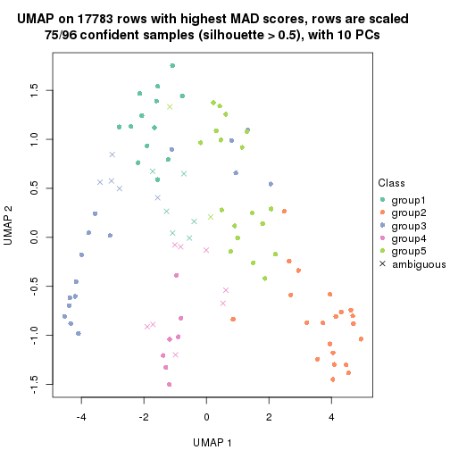
dimension_reduction(res, k = 6, method = "UMAP")
Following heatmap shows how subgroups are split when increasing k:
collect_classes(res)
Test correlation between subgroups and known annotations. If the known annotation is numeric, one-way ANOVA test is applied, and if the known annotation is discrete, chi-squared contingency table test is applied.
test_to_known_factors(res)
#> n specimen(p) disease.state(p) individual(p) tissue(p) k
#> MAD:skmeans 95 2.22e-06 0.586 0.642 3.49e-03 2
#> MAD:skmeans 78 1.21e-08 0.859 0.560 1.32e-03 3
#> MAD:skmeans 89 4.06e-17 0.551 0.607 5.71e-07 4
#> MAD:skmeans 75 1.40e-13 0.838 0.825 3.78e-07 5
#> MAD:skmeans 95 8.49e-17 0.196 0.226 6.32e-06 6
If matrix rows can be associated to genes, consider to use functional_enrichment(res,
...) to perform function enrichment for the signature genes. See this vignette for more detailed explanations.
The object with results only for a single top-value method and a single partition method can be extracted as:
res = res_list["MAD", "pam"]
# you can also extract it by
# res = res_list["MAD:pam"]
A summary of res and all the functions that can be applied to it:
res
#> A 'ConsensusPartition' object with k = 2, 3, 4, 5, 6.
#> On a matrix with 17783 rows and 96 columns.
#> Top rows (1000, 2000, 3000, 4000, 5000) are extracted by 'MAD' method.
#> Subgroups are detected by 'pam' method.
#> Performed in total 1250 partitions by row resampling.
#> Best k for subgroups seems to be 5.
#>
#> Following methods can be applied to this 'ConsensusPartition' object:
#> [1] "cola_report" "collect_classes" "collect_plots"
#> [4] "collect_stats" "colnames" "compare_signatures"
#> [7] "consensus_heatmap" "dimension_reduction" "functional_enrichment"
#> [10] "get_anno_col" "get_anno" "get_classes"
#> [13] "get_consensus" "get_matrix" "get_membership"
#> [16] "get_param" "get_signatures" "get_stats"
#> [19] "is_best_k" "is_stable_k" "membership_heatmap"
#> [22] "ncol" "nrow" "plot_ecdf"
#> [25] "rownames" "select_partition_number" "show"
#> [28] "suggest_best_k" "test_to_known_factors"
collect_plots() function collects all the plots made from res for all k (number of partitions)
into one single page to provide an easy and fast comparison between different k.
collect_plots(res)
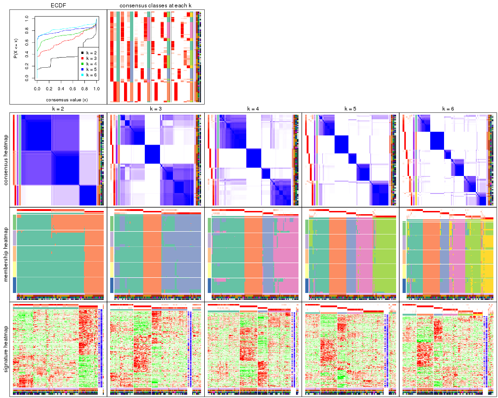
The plots are:
k and the heatmap of
predicted classes for each k.k.k.k.All the plots in panels can be made by individual functions and they are plotted later in this section.
select_partition_number() produces several plots showing different
statistics for choosing “optimized” k. There are following statistics:
k;k, the area increased is defined as \(A_k - A_{k-1}\).The detailed explanations of these statistics can be found in the cola vignette.
Generally speaking, lower PAC score, higher mean silhouette score or higher
concordance corresponds to better partition. Rand index and Jaccard index
measure how similar the current partition is compared to partition with k-1.
If they are too similar, we won't accept k is better than k-1.
select_partition_number(res)
The numeric values for all these statistics can be obtained by get_stats().
get_stats(res)
#> k 1-PAC mean_silhouette concordance area_increased Rand Jaccard
#> 2 2 0.535 0.875 0.906 0.3840 0.643 0.643
#> 3 3 0.646 0.771 0.893 0.6496 0.682 0.518
#> 4 4 0.829 0.865 0.930 0.1468 0.818 0.554
#> 5 5 0.932 0.879 0.947 0.0955 0.818 0.452
#> 6 6 0.856 0.826 0.903 0.0454 0.931 0.686
suggest_best_k() suggests the best \(k\) based on these statistics. The rules are as follows:
suggest_best_k(res)
#> [1] 5
Following shows the table of the partitions (You need to click the show/hide
code output link to see it). The membership matrix (columns with name p*)
is inferred by
clue::cl_consensus()
function with the SE method. Basically the value in the membership matrix
represents the probability to belong to a certain group. The finall class
label for an item is determined with the group with highest probability it
belongs to.
In get_classes() function, the entropy is calculated from the membership
matrix and the silhouette score is calculated from the consensus matrix.
cbind(get_classes(res, k = 2), get_membership(res, k = 2))
#> class entropy silhouette p1 p2
#> GSM771247 1 0.0000 0.863 1.000 0.000
#> GSM771246 1 0.0000 0.863 1.000 0.000
#> GSM771245 1 0.1414 0.864 0.980 0.020
#> GSM771169 1 0.0000 0.863 1.000 0.000
#> GSM771171 1 0.0000 0.863 1.000 0.000
#> GSM771175 1 0.7815 0.844 0.768 0.232
#> GSM771172 1 0.0000 0.863 1.000 0.000
#> GSM771174 1 0.7815 0.844 0.768 0.232
#> GSM771178 1 0.0000 0.863 1.000 0.000
#> GSM771176 1 0.0000 0.863 1.000 0.000
#> GSM771181 1 0.0000 0.863 1.000 0.000
#> GSM771179 1 0.0000 0.863 1.000 0.000
#> GSM771184 1 0.2778 0.864 0.952 0.048
#> GSM771182 1 0.7815 0.844 0.768 0.232
#> GSM771185 1 0.7815 0.844 0.768 0.232
#> GSM771186 1 0.7815 0.844 0.768 0.232
#> GSM771188 1 0.3733 0.863 0.928 0.072
#> GSM771193 1 0.0000 0.863 1.000 0.000
#> GSM771192 1 0.7815 0.844 0.768 0.232
#> GSM771189 1 0.8267 0.816 0.740 0.260
#> GSM771194 1 0.7815 0.844 0.768 0.232
#> GSM771191 1 0.7815 0.844 0.768 0.232
#> GSM771202 1 0.0000 0.863 1.000 0.000
#> GSM771200 1 0.0000 0.863 1.000 0.000
#> GSM771206 1 0.7815 0.844 0.768 0.232
#> GSM771208 1 0.7815 0.844 0.768 0.232
#> GSM771207 1 0.0000 0.863 1.000 0.000
#> GSM771209 1 0.0000 0.863 1.000 0.000
#> GSM771211 1 0.0000 0.863 1.000 0.000
#> GSM771212 1 0.7815 0.844 0.768 0.232
#> GSM771214 1 0.9129 0.724 0.672 0.328
#> GSM771213 1 0.8081 0.829 0.752 0.248
#> GSM771216 1 0.7815 0.844 0.768 0.232
#> GSM771217 1 0.7815 0.844 0.768 0.232
#> GSM771219 1 0.0000 0.863 1.000 0.000
#> GSM771218 1 0.6531 0.851 0.832 0.168
#> GSM771222 1 0.0672 0.864 0.992 0.008
#> GSM771220 1 0.0000 0.863 1.000 0.000
#> GSM771226 1 0.0000 0.863 1.000 0.000
#> GSM771223 1 0.7815 0.844 0.768 0.232
#> GSM771225 1 0.7815 0.844 0.768 0.232
#> GSM771232 1 0.7815 0.844 0.768 0.232
#> GSM771235 1 0.0000 0.863 1.000 0.000
#> GSM771234 1 0.0000 0.863 1.000 0.000
#> GSM771242 1 0.0000 0.863 1.000 0.000
#> GSM771239 1 0.7815 0.844 0.768 0.232
#> GSM771240 1 0.7815 0.844 0.768 0.232
#> GSM771241 1 0.0000 0.863 1.000 0.000
#> GSM771197 1 0.0000 0.863 1.000 0.000
#> GSM771195 1 0.7815 0.844 0.768 0.232
#> GSM771198 1 0.0000 0.863 1.000 0.000
#> GSM771199 1 0.0000 0.863 1.000 0.000
#> GSM771204 1 0.7815 0.844 0.768 0.232
#> GSM771205 1 0.0000 0.863 1.000 0.000
#> GSM771229 1 0.0000 0.863 1.000 0.000
#> GSM771227 1 0.6973 0.852 0.812 0.188
#> GSM771230 1 0.7815 0.844 0.768 0.232
#> GSM771231 1 0.7815 0.844 0.768 0.232
#> GSM771238 1 0.7815 0.844 0.768 0.232
#> GSM771236 1 0.2778 0.864 0.952 0.048
#> GSM771154 1 0.7815 0.844 0.768 0.232
#> GSM771152 1 0.7815 0.844 0.768 0.232
#> GSM771156 2 0.9460 0.325 0.364 0.636
#> GSM771157 1 0.7815 0.844 0.768 0.232
#> GSM771155 1 0.7815 0.844 0.768 0.232
#> GSM771160 1 0.0000 0.863 1.000 0.000
#> GSM771161 1 0.0000 0.863 1.000 0.000
#> GSM771159 1 0.7815 0.844 0.768 0.232
#> GSM771165 1 0.7815 0.844 0.768 0.232
#> GSM771166 1 0.0000 0.863 1.000 0.000
#> GSM771167 1 0.7815 0.844 0.768 0.232
#> GSM771168 1 0.0672 0.864 0.992 0.008
#> GSM771163 1 0.7528 0.847 0.784 0.216
#> GSM771244 2 0.0000 0.981 0.000 1.000
#> GSM771170 1 0.2778 0.864 0.952 0.048
#> GSM771173 2 0.0000 0.981 0.000 1.000
#> GSM771177 2 0.0000 0.981 0.000 1.000
#> GSM771180 2 0.0000 0.981 0.000 1.000
#> GSM771183 2 0.0000 0.981 0.000 1.000
#> GSM771187 2 0.0000 0.981 0.000 1.000
#> GSM771190 2 0.0000 0.981 0.000 1.000
#> GSM771201 2 0.0000 0.981 0.000 1.000
#> GSM771210 2 0.0000 0.981 0.000 1.000
#> GSM771215 2 0.0000 0.981 0.000 1.000
#> GSM771221 2 0.0000 0.981 0.000 1.000
#> GSM771224 1 0.2778 0.864 0.952 0.048
#> GSM771233 2 0.0000 0.981 0.000 1.000
#> GSM771243 2 0.0000 0.981 0.000 1.000
#> GSM771196 2 0.0000 0.981 0.000 1.000
#> GSM771203 2 0.0000 0.981 0.000 1.000
#> GSM771228 2 0.0000 0.981 0.000 1.000
#> GSM771237 2 0.0000 0.981 0.000 1.000
#> GSM771153 2 0.0000 0.981 0.000 1.000
#> GSM771158 2 0.0000 0.981 0.000 1.000
#> GSM771162 2 0.0000 0.981 0.000 1.000
#> GSM771164 2 0.0000 0.981 0.000 1.000
cbind(get_classes(res, k = 3), get_membership(res, k = 3))
#> class entropy silhouette p1 p2 p3
#> GSM771247 3 0.6154 0.2208 0.408 0.000 0.592
#> GSM771246 1 0.4931 0.6517 0.768 0.000 0.232
#> GSM771245 1 0.1163 0.8125 0.972 0.000 0.028
#> GSM771169 3 0.1753 0.8345 0.048 0.000 0.952
#> GSM771171 3 0.1753 0.8345 0.048 0.000 0.952
#> GSM771175 1 0.5835 0.3770 0.660 0.000 0.340
#> GSM771172 3 0.3116 0.7994 0.108 0.000 0.892
#> GSM771174 1 0.0000 0.8223 1.000 0.000 0.000
#> GSM771178 3 0.1753 0.8345 0.048 0.000 0.952
#> GSM771176 1 0.4931 0.6517 0.768 0.000 0.232
#> GSM771181 3 0.0000 0.8254 0.000 0.000 1.000
#> GSM771179 3 0.6260 0.0018 0.448 0.000 0.552
#> GSM771184 3 0.2066 0.8341 0.060 0.000 0.940
#> GSM771182 3 0.5397 0.6934 0.280 0.000 0.720
#> GSM771185 1 0.5968 0.3184 0.636 0.000 0.364
#> GSM771186 3 0.5859 0.5943 0.344 0.000 0.656
#> GSM771188 3 0.5291 0.7081 0.268 0.000 0.732
#> GSM771193 3 0.0000 0.8254 0.000 0.000 1.000
#> GSM771192 3 0.5397 0.6934 0.280 0.000 0.720
#> GSM771189 1 0.5968 0.3184 0.636 0.000 0.364
#> GSM771194 1 0.0000 0.8223 1.000 0.000 0.000
#> GSM771191 1 0.0000 0.8223 1.000 0.000 0.000
#> GSM771202 1 0.4931 0.6517 0.768 0.000 0.232
#> GSM771200 1 0.4931 0.6517 0.768 0.000 0.232
#> GSM771206 1 0.0000 0.8223 1.000 0.000 0.000
#> GSM771208 1 0.0000 0.8223 1.000 0.000 0.000
#> GSM771207 3 0.1860 0.8338 0.052 0.000 0.948
#> GSM771209 1 0.4931 0.6517 0.768 0.000 0.232
#> GSM771211 3 0.1753 0.8345 0.048 0.000 0.952
#> GSM771212 1 0.0000 0.8223 1.000 0.000 0.000
#> GSM771214 1 0.0892 0.8142 0.980 0.020 0.000
#> GSM771213 1 0.0000 0.8223 1.000 0.000 0.000
#> GSM771216 1 0.3551 0.7236 0.868 0.000 0.132
#> GSM771217 1 0.0000 0.8223 1.000 0.000 0.000
#> GSM771219 3 0.0000 0.8254 0.000 0.000 1.000
#> GSM771218 1 0.1529 0.8062 0.960 0.000 0.040
#> GSM771222 3 0.1860 0.8347 0.052 0.000 0.948
#> GSM771220 3 0.1753 0.8345 0.048 0.000 0.952
#> GSM771226 3 0.0000 0.8254 0.000 0.000 1.000
#> GSM771223 1 0.0000 0.8223 1.000 0.000 0.000
#> GSM771225 3 0.5397 0.6934 0.280 0.000 0.720
#> GSM771232 1 0.5968 0.3184 0.636 0.000 0.364
#> GSM771235 3 0.0000 0.8254 0.000 0.000 1.000
#> GSM771234 3 0.0000 0.8254 0.000 0.000 1.000
#> GSM771242 3 0.0000 0.8254 0.000 0.000 1.000
#> GSM771239 3 0.5397 0.6934 0.280 0.000 0.720
#> GSM771240 1 0.0000 0.8223 1.000 0.000 0.000
#> GSM771241 3 0.0000 0.8254 0.000 0.000 1.000
#> GSM771197 3 0.0000 0.8254 0.000 0.000 1.000
#> GSM771195 3 0.5397 0.6934 0.280 0.000 0.720
#> GSM771198 3 0.0000 0.8254 0.000 0.000 1.000
#> GSM771199 3 0.0000 0.8254 0.000 0.000 1.000
#> GSM771204 1 0.0000 0.8223 1.000 0.000 0.000
#> GSM771205 1 0.4931 0.6517 0.768 0.000 0.232
#> GSM771229 3 0.2711 0.8154 0.088 0.000 0.912
#> GSM771227 3 0.4842 0.7432 0.224 0.000 0.776
#> GSM771230 1 0.6274 -0.0209 0.544 0.000 0.456
#> GSM771231 3 0.5397 0.6934 0.280 0.000 0.720
#> GSM771238 1 0.0000 0.8223 1.000 0.000 0.000
#> GSM771236 3 0.2356 0.8312 0.072 0.000 0.928
#> GSM771154 1 0.0000 0.8223 1.000 0.000 0.000
#> GSM771152 1 0.5968 0.3184 0.636 0.000 0.364
#> GSM771156 3 0.5573 0.7548 0.160 0.044 0.796
#> GSM771157 1 0.0000 0.8223 1.000 0.000 0.000
#> GSM771155 1 0.3686 0.7149 0.860 0.000 0.140
#> GSM771160 3 0.0000 0.8254 0.000 0.000 1.000
#> GSM771161 3 0.6008 0.3210 0.372 0.000 0.628
#> GSM771159 3 0.5397 0.6934 0.280 0.000 0.720
#> GSM771165 3 0.6235 0.3739 0.436 0.000 0.564
#> GSM771166 3 0.1753 0.8345 0.048 0.000 0.952
#> GSM771167 3 0.5397 0.6934 0.280 0.000 0.720
#> GSM771168 3 0.1964 0.8347 0.056 0.000 0.944
#> GSM771163 3 0.5291 0.7052 0.268 0.000 0.732
#> GSM771244 2 0.0000 1.0000 0.000 1.000 0.000
#> GSM771170 3 0.1964 0.8347 0.056 0.000 0.944
#> GSM771173 2 0.0000 1.0000 0.000 1.000 0.000
#> GSM771177 2 0.0000 1.0000 0.000 1.000 0.000
#> GSM771180 2 0.0000 1.0000 0.000 1.000 0.000
#> GSM771183 2 0.0000 1.0000 0.000 1.000 0.000
#> GSM771187 2 0.0000 1.0000 0.000 1.000 0.000
#> GSM771190 2 0.0000 1.0000 0.000 1.000 0.000
#> GSM771201 2 0.0000 1.0000 0.000 1.000 0.000
#> GSM771210 1 0.2066 0.7800 0.940 0.060 0.000
#> GSM771215 2 0.0000 1.0000 0.000 1.000 0.000
#> GSM771221 2 0.0000 1.0000 0.000 1.000 0.000
#> GSM771224 3 0.2947 0.8313 0.060 0.020 0.920
#> GSM771233 2 0.0000 1.0000 0.000 1.000 0.000
#> GSM771243 2 0.0000 1.0000 0.000 1.000 0.000
#> GSM771196 2 0.0000 1.0000 0.000 1.000 0.000
#> GSM771203 2 0.0000 1.0000 0.000 1.000 0.000
#> GSM771228 2 0.0000 1.0000 0.000 1.000 0.000
#> GSM771237 2 0.0000 1.0000 0.000 1.000 0.000
#> GSM771153 2 0.0000 1.0000 0.000 1.000 0.000
#> GSM771158 2 0.0000 1.0000 0.000 1.000 0.000
#> GSM771162 2 0.0000 1.0000 0.000 1.000 0.000
#> GSM771164 2 0.0000 1.0000 0.000 1.000 0.000
cbind(get_classes(res, k = 4), get_membership(res, k = 4))
#> class entropy silhouette p1 p2 p3 p4
#> GSM771247 4 0.4839 0.702 0.184 0.000 0.052 0.764
#> GSM771246 4 0.1661 0.860 0.004 0.000 0.052 0.944
#> GSM771245 4 0.3335 0.794 0.016 0.000 0.128 0.856
#> GSM771169 1 0.5429 0.714 0.720 0.000 0.208 0.072
#> GSM771171 1 0.6058 0.593 0.632 0.000 0.296 0.072
#> GSM771175 1 0.4134 0.548 0.740 0.000 0.000 0.260
#> GSM771172 1 0.3392 0.847 0.872 0.000 0.056 0.072
#> GSM771174 4 0.4277 0.695 0.280 0.000 0.000 0.720
#> GSM771178 1 0.6058 0.593 0.632 0.000 0.296 0.072
#> GSM771176 4 0.2174 0.865 0.020 0.000 0.052 0.928
#> GSM771181 3 0.0000 0.952 0.000 0.000 1.000 0.000
#> GSM771179 4 0.6055 0.283 0.372 0.000 0.052 0.576
#> GSM771184 1 0.0469 0.894 0.988 0.000 0.000 0.012
#> GSM771182 1 0.0188 0.895 0.996 0.000 0.000 0.004
#> GSM771185 1 0.0188 0.895 0.996 0.000 0.000 0.004
#> GSM771186 1 0.0336 0.895 0.992 0.000 0.000 0.008
#> GSM771188 1 0.0592 0.893 0.984 0.000 0.000 0.016
#> GSM771193 3 0.1302 0.908 0.044 0.000 0.956 0.000
#> GSM771192 1 0.0188 0.895 0.996 0.000 0.000 0.004
#> GSM771189 1 0.0336 0.893 0.992 0.000 0.000 0.008
#> GSM771194 4 0.0921 0.882 0.028 0.000 0.000 0.972
#> GSM771191 4 0.0000 0.880 0.000 0.000 0.000 1.000
#> GSM771202 4 0.1661 0.860 0.004 0.000 0.052 0.944
#> GSM771200 4 0.1661 0.860 0.004 0.000 0.052 0.944
#> GSM771206 4 0.0000 0.880 0.000 0.000 0.000 1.000
#> GSM771208 4 0.0817 0.883 0.024 0.000 0.000 0.976
#> GSM771207 1 0.6120 0.587 0.628 0.000 0.296 0.076
#> GSM771209 4 0.0188 0.879 0.004 0.000 0.000 0.996
#> GSM771211 1 0.2844 0.860 0.900 0.000 0.052 0.048
#> GSM771212 4 0.0817 0.883 0.024 0.000 0.000 0.976
#> GSM771214 4 0.0817 0.883 0.024 0.000 0.000 0.976
#> GSM771213 4 0.1389 0.875 0.048 0.000 0.000 0.952
#> GSM771216 4 0.4898 0.460 0.416 0.000 0.000 0.584
#> GSM771217 4 0.1867 0.862 0.072 0.000 0.000 0.928
#> GSM771219 3 0.0000 0.952 0.000 0.000 1.000 0.000
#> GSM771218 4 0.0000 0.880 0.000 0.000 0.000 1.000
#> GSM771222 1 0.3312 0.849 0.876 0.000 0.052 0.072
#> GSM771220 1 0.5693 0.676 0.688 0.000 0.240 0.072
#> GSM771226 3 0.0000 0.952 0.000 0.000 1.000 0.000
#> GSM771223 4 0.0592 0.882 0.016 0.000 0.000 0.984
#> GSM771225 1 0.0000 0.895 1.000 0.000 0.000 0.000
#> GSM771232 1 0.0469 0.894 0.988 0.000 0.000 0.012
#> GSM771235 1 0.4277 0.684 0.720 0.000 0.280 0.000
#> GSM771234 3 0.0000 0.952 0.000 0.000 1.000 0.000
#> GSM771242 3 0.0000 0.952 0.000 0.000 1.000 0.000
#> GSM771239 1 0.0188 0.895 0.996 0.000 0.000 0.004
#> GSM771240 4 0.4277 0.695 0.280 0.000 0.000 0.720
#> GSM771241 3 0.0000 0.952 0.000 0.000 1.000 0.000
#> GSM771197 3 0.0000 0.952 0.000 0.000 1.000 0.000
#> GSM771195 1 0.0000 0.895 1.000 0.000 0.000 0.000
#> GSM771198 3 0.0000 0.952 0.000 0.000 1.000 0.000
#> GSM771199 3 0.0000 0.952 0.000 0.000 1.000 0.000
#> GSM771204 4 0.1792 0.865 0.068 0.000 0.000 0.932
#> GSM771205 4 0.1661 0.860 0.004 0.000 0.052 0.944
#> GSM771229 1 0.3312 0.849 0.876 0.000 0.052 0.072
#> GSM771227 1 0.0000 0.895 1.000 0.000 0.000 0.000
#> GSM771230 1 0.0188 0.895 0.996 0.000 0.000 0.004
#> GSM771231 1 0.0188 0.895 0.996 0.000 0.000 0.004
#> GSM771238 4 0.1867 0.862 0.072 0.000 0.000 0.928
#> GSM771236 1 0.1389 0.880 0.952 0.000 0.000 0.048
#> GSM771154 4 0.0000 0.880 0.000 0.000 0.000 1.000
#> GSM771152 1 0.0188 0.895 0.996 0.000 0.000 0.004
#> GSM771156 1 0.0188 0.895 0.996 0.000 0.000 0.004
#> GSM771157 4 0.0000 0.880 0.000 0.000 0.000 1.000
#> GSM771155 4 0.3764 0.747 0.216 0.000 0.000 0.784
#> GSM771160 3 0.0000 0.952 0.000 0.000 1.000 0.000
#> GSM771161 3 0.7052 0.218 0.128 0.000 0.500 0.372
#> GSM771159 1 0.0000 0.895 1.000 0.000 0.000 0.000
#> GSM771165 1 0.0188 0.895 0.996 0.000 0.000 0.004
#> GSM771166 1 0.4137 0.754 0.780 0.000 0.208 0.012
#> GSM771167 1 0.0188 0.895 0.996 0.000 0.000 0.004
#> GSM771168 1 0.3312 0.849 0.876 0.000 0.052 0.072
#> GSM771163 1 0.0000 0.895 1.000 0.000 0.000 0.000
#> GSM771244 2 0.0000 0.997 0.000 1.000 0.000 0.000
#> GSM771170 1 0.1716 0.875 0.936 0.000 0.000 0.064
#> GSM771173 2 0.0000 0.997 0.000 1.000 0.000 0.000
#> GSM771177 2 0.0000 0.997 0.000 1.000 0.000 0.000
#> GSM771180 2 0.1389 0.938 0.048 0.952 0.000 0.000
#> GSM771183 2 0.0000 0.997 0.000 1.000 0.000 0.000
#> GSM771187 2 0.0000 0.997 0.000 1.000 0.000 0.000
#> GSM771190 2 0.0000 0.997 0.000 1.000 0.000 0.000
#> GSM771201 2 0.0000 0.997 0.000 1.000 0.000 0.000
#> GSM771210 4 0.2300 0.859 0.048 0.028 0.000 0.924
#> GSM771215 2 0.0000 0.997 0.000 1.000 0.000 0.000
#> GSM771221 2 0.0000 0.997 0.000 1.000 0.000 0.000
#> GSM771224 1 0.3074 0.800 0.848 0.000 0.152 0.000
#> GSM771233 2 0.0000 0.997 0.000 1.000 0.000 0.000
#> GSM771243 2 0.0000 0.997 0.000 1.000 0.000 0.000
#> GSM771196 2 0.0000 0.997 0.000 1.000 0.000 0.000
#> GSM771203 2 0.0000 0.997 0.000 1.000 0.000 0.000
#> GSM771228 2 0.0000 0.997 0.000 1.000 0.000 0.000
#> GSM771237 2 0.0000 0.997 0.000 1.000 0.000 0.000
#> GSM771153 2 0.0000 0.997 0.000 1.000 0.000 0.000
#> GSM771158 2 0.0000 0.997 0.000 1.000 0.000 0.000
#> GSM771162 2 0.0000 0.997 0.000 1.000 0.000 0.000
#> GSM771164 2 0.0000 0.997 0.000 1.000 0.000 0.000
cbind(get_classes(res, k = 5), get_membership(res, k = 5))
#> class entropy silhouette p1 p2 p3 p4 p5
#> GSM771247 4 0.2036 0.90357 0.056 0.000 0.000 0.920 0.024
#> GSM771246 1 0.0510 0.84575 0.984 0.000 0.000 0.016 0.000
#> GSM771245 4 0.0609 0.94934 0.020 0.000 0.000 0.980 0.000
#> GSM771169 1 0.0000 0.84964 1.000 0.000 0.000 0.000 0.000
#> GSM771171 1 0.0510 0.84469 0.984 0.000 0.016 0.000 0.000
#> GSM771175 5 0.0000 0.92504 0.000 0.000 0.000 0.000 1.000
#> GSM771172 1 0.0000 0.84964 1.000 0.000 0.000 0.000 0.000
#> GSM771174 5 0.0000 0.92504 0.000 0.000 0.000 0.000 1.000
#> GSM771178 1 0.0510 0.84469 0.984 0.000 0.016 0.000 0.000
#> GSM771176 1 0.1908 0.80280 0.908 0.000 0.000 0.092 0.000
#> GSM771181 3 0.0000 0.99234 0.000 0.000 1.000 0.000 0.000
#> GSM771179 1 0.0000 0.84964 1.000 0.000 0.000 0.000 0.000
#> GSM771184 1 0.4088 0.48540 0.632 0.000 0.000 0.000 0.368
#> GSM771182 5 0.0510 0.92245 0.016 0.000 0.000 0.000 0.984
#> GSM771185 5 0.0000 0.92504 0.000 0.000 0.000 0.000 1.000
#> GSM771186 5 0.0510 0.92245 0.016 0.000 0.000 0.000 0.984
#> GSM771188 1 0.3774 0.57698 0.704 0.000 0.000 0.000 0.296
#> GSM771193 3 0.0162 0.98973 0.004 0.000 0.996 0.000 0.000
#> GSM771192 5 0.0510 0.92245 0.016 0.000 0.000 0.000 0.984
#> GSM771189 5 0.0000 0.92504 0.000 0.000 0.000 0.000 1.000
#> GSM771194 4 0.0000 0.96285 0.000 0.000 0.000 1.000 0.000
#> GSM771191 4 0.0000 0.96285 0.000 0.000 0.000 1.000 0.000
#> GSM771202 1 0.0510 0.84575 0.984 0.000 0.000 0.016 0.000
#> GSM771200 1 0.0510 0.84575 0.984 0.000 0.000 0.016 0.000
#> GSM771206 4 0.0000 0.96285 0.000 0.000 0.000 1.000 0.000
#> GSM771208 4 0.0000 0.96285 0.000 0.000 0.000 1.000 0.000
#> GSM771207 1 0.0510 0.84469 0.984 0.000 0.016 0.000 0.000
#> GSM771209 4 0.1792 0.89074 0.084 0.000 0.000 0.916 0.000
#> GSM771211 1 0.6432 0.37718 0.484 0.000 0.000 0.196 0.320
#> GSM771212 4 0.0000 0.96285 0.000 0.000 0.000 1.000 0.000
#> GSM771214 4 0.0000 0.96285 0.000 0.000 0.000 1.000 0.000
#> GSM771213 4 0.0000 0.96285 0.000 0.000 0.000 1.000 0.000
#> GSM771216 5 0.0000 0.92504 0.000 0.000 0.000 0.000 1.000
#> GSM771217 4 0.0000 0.96285 0.000 0.000 0.000 1.000 0.000
#> GSM771219 1 0.4126 0.35712 0.620 0.000 0.380 0.000 0.000
#> GSM771218 4 0.0000 0.96285 0.000 0.000 0.000 1.000 0.000
#> GSM771222 1 0.0162 0.84899 0.996 0.000 0.000 0.000 0.004
#> GSM771220 1 0.0000 0.84964 1.000 0.000 0.000 0.000 0.000
#> GSM771226 3 0.0000 0.99234 0.000 0.000 1.000 0.000 0.000
#> GSM771223 4 0.0000 0.96285 0.000 0.000 0.000 1.000 0.000
#> GSM771225 5 0.0000 0.92504 0.000 0.000 0.000 0.000 1.000
#> GSM771232 1 0.4138 0.47546 0.616 0.000 0.000 0.000 0.384
#> GSM771235 3 0.0510 0.97726 0.016 0.000 0.984 0.000 0.000
#> GSM771234 3 0.0000 0.99234 0.000 0.000 1.000 0.000 0.000
#> GSM771242 3 0.1197 0.94603 0.048 0.000 0.952 0.000 0.000
#> GSM771239 5 0.0000 0.92504 0.000 0.000 0.000 0.000 1.000
#> GSM771240 5 0.0000 0.92504 0.000 0.000 0.000 0.000 1.000
#> GSM771241 3 0.0000 0.99234 0.000 0.000 1.000 0.000 0.000
#> GSM771197 3 0.0000 0.99234 0.000 0.000 1.000 0.000 0.000
#> GSM771195 5 0.0510 0.92245 0.016 0.000 0.000 0.000 0.984
#> GSM771198 3 0.0000 0.99234 0.000 0.000 1.000 0.000 0.000
#> GSM771199 3 0.0000 0.99234 0.000 0.000 1.000 0.000 0.000
#> GSM771204 4 0.0000 0.96285 0.000 0.000 0.000 1.000 0.000
#> GSM771205 1 0.3039 0.69858 0.808 0.000 0.000 0.192 0.000
#> GSM771229 1 0.0000 0.84964 1.000 0.000 0.000 0.000 0.000
#> GSM771227 5 0.0510 0.92245 0.016 0.000 0.000 0.000 0.984
#> GSM771230 5 0.0000 0.92504 0.000 0.000 0.000 0.000 1.000
#> GSM771231 5 0.0000 0.92504 0.000 0.000 0.000 0.000 1.000
#> GSM771238 4 0.1792 0.88518 0.000 0.000 0.000 0.916 0.084
#> GSM771236 1 0.4088 0.48540 0.632 0.000 0.000 0.000 0.368
#> GSM771154 4 0.0000 0.96285 0.000 0.000 0.000 1.000 0.000
#> GSM771152 5 0.0162 0.92458 0.004 0.000 0.000 0.000 0.996
#> GSM771156 5 0.0510 0.92245 0.016 0.000 0.000 0.000 0.984
#> GSM771157 4 0.0000 0.96285 0.000 0.000 0.000 1.000 0.000
#> GSM771155 4 0.3942 0.61626 0.012 0.000 0.000 0.728 0.260
#> GSM771160 3 0.0000 0.99234 0.000 0.000 1.000 0.000 0.000
#> GSM771161 5 0.6217 0.00131 0.000 0.000 0.416 0.140 0.444
#> GSM771159 5 0.0510 0.92245 0.016 0.000 0.000 0.000 0.984
#> GSM771165 5 0.0000 0.92504 0.000 0.000 0.000 0.000 1.000
#> GSM771166 5 0.3143 0.69153 0.204 0.000 0.000 0.000 0.796
#> GSM771167 5 0.0000 0.92504 0.000 0.000 0.000 0.000 1.000
#> GSM771168 1 0.0000 0.84964 1.000 0.000 0.000 0.000 0.000
#> GSM771163 5 0.0510 0.92245 0.016 0.000 0.000 0.000 0.984
#> GSM771244 2 0.0000 1.00000 0.000 1.000 0.000 0.000 0.000
#> GSM771170 1 0.1341 0.82301 0.944 0.000 0.000 0.000 0.056
#> GSM771173 2 0.0000 1.00000 0.000 1.000 0.000 0.000 0.000
#> GSM771177 2 0.0000 1.00000 0.000 1.000 0.000 0.000 0.000
#> GSM771180 5 0.4242 0.24940 0.000 0.428 0.000 0.000 0.572
#> GSM771183 2 0.0000 1.00000 0.000 1.000 0.000 0.000 0.000
#> GSM771187 2 0.0000 1.00000 0.000 1.000 0.000 0.000 0.000
#> GSM771190 2 0.0000 1.00000 0.000 1.000 0.000 0.000 0.000
#> GSM771201 2 0.0000 1.00000 0.000 1.000 0.000 0.000 0.000
#> GSM771210 5 0.4225 0.38005 0.000 0.004 0.000 0.364 0.632
#> GSM771215 2 0.0000 1.00000 0.000 1.000 0.000 0.000 0.000
#> GSM771221 2 0.0000 1.00000 0.000 1.000 0.000 0.000 0.000
#> GSM771224 5 0.0510 0.92245 0.016 0.000 0.000 0.000 0.984
#> GSM771233 2 0.0000 1.00000 0.000 1.000 0.000 0.000 0.000
#> GSM771243 2 0.0000 1.00000 0.000 1.000 0.000 0.000 0.000
#> GSM771196 2 0.0000 1.00000 0.000 1.000 0.000 0.000 0.000
#> GSM771203 2 0.0000 1.00000 0.000 1.000 0.000 0.000 0.000
#> GSM771228 2 0.0000 1.00000 0.000 1.000 0.000 0.000 0.000
#> GSM771237 2 0.0000 1.00000 0.000 1.000 0.000 0.000 0.000
#> GSM771153 2 0.0000 1.00000 0.000 1.000 0.000 0.000 0.000
#> GSM771158 2 0.0000 1.00000 0.000 1.000 0.000 0.000 0.000
#> GSM771162 2 0.0000 1.00000 0.000 1.000 0.000 0.000 0.000
#> GSM771164 2 0.0000 1.00000 0.000 1.000 0.000 0.000 0.000
cbind(get_classes(res, k = 6), get_membership(res, k = 6))
#> class entropy silhouette p1 p2 p3 p4 p5 p6
#> GSM771247 4 0.4845 0.6399 0.160 0.000 0.000 0.688 0.144 0.008
#> GSM771246 1 0.0000 0.8656 1.000 0.000 0.000 0.000 0.000 0.000
#> GSM771245 4 0.4260 0.7267 0.024 0.000 0.000 0.720 0.228 0.028
#> GSM771169 1 0.0547 0.8618 0.980 0.000 0.000 0.000 0.020 0.000
#> GSM771171 1 0.0146 0.8653 0.996 0.000 0.000 0.000 0.004 0.000
#> GSM771175 6 0.0000 0.8205 0.000 0.000 0.000 0.000 0.000 1.000
#> GSM771172 1 0.1007 0.8567 0.956 0.000 0.000 0.000 0.044 0.000
#> GSM771174 6 0.0000 0.8205 0.000 0.000 0.000 0.000 0.000 1.000
#> GSM771178 1 0.0000 0.8656 1.000 0.000 0.000 0.000 0.000 0.000
#> GSM771176 1 0.4699 0.6286 0.668 0.000 0.000 0.104 0.228 0.000
#> GSM771181 3 0.0000 0.9532 0.000 0.000 1.000 0.000 0.000 0.000
#> GSM771179 1 0.1152 0.8565 0.952 0.000 0.000 0.004 0.044 0.000
#> GSM771184 5 0.3424 0.8601 0.024 0.000 0.000 0.000 0.772 0.204
#> GSM771182 5 0.3101 0.8625 0.000 0.000 0.000 0.000 0.756 0.244
#> GSM771185 6 0.0000 0.8205 0.000 0.000 0.000 0.000 0.000 1.000
#> GSM771186 5 0.3023 0.8699 0.000 0.000 0.000 0.000 0.768 0.232
#> GSM771188 5 0.0363 0.6689 0.000 0.000 0.000 0.000 0.988 0.012
#> GSM771193 3 0.3885 0.7573 0.044 0.000 0.736 0.000 0.220 0.000
#> GSM771192 5 0.3023 0.8699 0.000 0.000 0.000 0.000 0.768 0.232
#> GSM771189 6 0.0000 0.8205 0.000 0.000 0.000 0.000 0.000 1.000
#> GSM771194 4 0.2996 0.7594 0.000 0.000 0.000 0.772 0.228 0.000
#> GSM771191 4 0.0000 0.9062 0.000 0.000 0.000 1.000 0.000 0.000
#> GSM771202 1 0.0000 0.8656 1.000 0.000 0.000 0.000 0.000 0.000
#> GSM771200 1 0.1007 0.8493 0.956 0.000 0.000 0.044 0.000 0.000
#> GSM771206 4 0.0000 0.9062 0.000 0.000 0.000 1.000 0.000 0.000
#> GSM771208 4 0.0000 0.9062 0.000 0.000 0.000 1.000 0.000 0.000
#> GSM771207 1 0.0000 0.8656 1.000 0.000 0.000 0.000 0.000 0.000
#> GSM771209 4 0.1387 0.8628 0.068 0.000 0.000 0.932 0.000 0.000
#> GSM771211 5 0.4765 0.7684 0.152 0.000 0.000 0.012 0.704 0.132
#> GSM771212 4 0.0000 0.9062 0.000 0.000 0.000 1.000 0.000 0.000
#> GSM771214 4 0.0000 0.9062 0.000 0.000 0.000 1.000 0.000 0.000
#> GSM771213 4 0.0000 0.9062 0.000 0.000 0.000 1.000 0.000 0.000
#> GSM771216 6 0.0000 0.8205 0.000 0.000 0.000 0.000 0.000 1.000
#> GSM771217 4 0.0632 0.8933 0.000 0.000 0.000 0.976 0.000 0.024
#> GSM771219 1 0.3695 0.3340 0.624 0.000 0.376 0.000 0.000 0.000
#> GSM771218 4 0.0000 0.9062 0.000 0.000 0.000 1.000 0.000 0.000
#> GSM771222 5 0.3265 0.6315 0.248 0.000 0.000 0.000 0.748 0.004
#> GSM771220 1 0.0000 0.8656 1.000 0.000 0.000 0.000 0.000 0.000
#> GSM771226 3 0.0000 0.9532 0.000 0.000 1.000 0.000 0.000 0.000
#> GSM771223 4 0.0000 0.9062 0.000 0.000 0.000 1.000 0.000 0.000
#> GSM771225 5 0.3851 0.5529 0.000 0.000 0.000 0.000 0.540 0.460
#> GSM771232 1 0.3934 0.5880 0.708 0.000 0.000 0.000 0.032 0.260
#> GSM771235 5 0.3023 0.6556 0.000 0.000 0.232 0.000 0.768 0.000
#> GSM771234 3 0.0000 0.9532 0.000 0.000 1.000 0.000 0.000 0.000
#> GSM771242 3 0.2219 0.8421 0.136 0.000 0.864 0.000 0.000 0.000
#> GSM771239 5 0.3828 0.5985 0.000 0.000 0.000 0.000 0.560 0.440
#> GSM771240 6 0.2996 0.6506 0.000 0.000 0.000 0.000 0.228 0.772
#> GSM771241 3 0.1075 0.9259 0.048 0.000 0.952 0.000 0.000 0.000
#> GSM771197 3 0.0000 0.9532 0.000 0.000 1.000 0.000 0.000 0.000
#> GSM771195 5 0.2996 0.8712 0.000 0.000 0.000 0.000 0.772 0.228
#> GSM771198 3 0.0000 0.9532 0.000 0.000 1.000 0.000 0.000 0.000
#> GSM771199 3 0.0000 0.9532 0.000 0.000 1.000 0.000 0.000 0.000
#> GSM771204 4 0.0000 0.9062 0.000 0.000 0.000 1.000 0.000 0.000
#> GSM771205 1 0.2730 0.7166 0.808 0.000 0.000 0.192 0.000 0.000
#> GSM771229 1 0.0000 0.8656 1.000 0.000 0.000 0.000 0.000 0.000
#> GSM771227 5 0.2996 0.8712 0.000 0.000 0.000 0.000 0.772 0.228
#> GSM771230 6 0.0000 0.8205 0.000 0.000 0.000 0.000 0.000 1.000
#> GSM771231 6 0.0000 0.8205 0.000 0.000 0.000 0.000 0.000 1.000
#> GSM771238 4 0.5591 0.4786 0.000 0.000 0.000 0.548 0.228 0.224
#> GSM771236 1 0.5767 0.0601 0.496 0.000 0.000 0.000 0.300 0.204
#> GSM771154 4 0.0000 0.9062 0.000 0.000 0.000 1.000 0.000 0.000
#> GSM771152 6 0.3390 0.2326 0.000 0.000 0.000 0.000 0.296 0.704
#> GSM771156 5 0.2996 0.8712 0.000 0.000 0.000 0.000 0.772 0.228
#> GSM771157 4 0.0000 0.9062 0.000 0.000 0.000 1.000 0.000 0.000
#> GSM771155 4 0.4474 0.6026 0.000 0.000 0.000 0.704 0.108 0.188
#> GSM771160 3 0.0000 0.9532 0.000 0.000 1.000 0.000 0.000 0.000
#> GSM771161 6 0.8109 0.2175 0.072 0.000 0.176 0.120 0.228 0.404
#> GSM771159 5 0.2996 0.8712 0.000 0.000 0.000 0.000 0.772 0.228
#> GSM771165 6 0.0000 0.8205 0.000 0.000 0.000 0.000 0.000 1.000
#> GSM771166 5 0.4050 0.8118 0.096 0.000 0.000 0.000 0.752 0.152
#> GSM771167 6 0.0000 0.8205 0.000 0.000 0.000 0.000 0.000 1.000
#> GSM771168 1 0.1152 0.8559 0.952 0.000 0.000 0.000 0.044 0.004
#> GSM771163 5 0.2996 0.8712 0.000 0.000 0.000 0.000 0.772 0.228
#> GSM771244 2 0.0000 0.9998 0.000 1.000 0.000 0.000 0.000 0.000
#> GSM771170 1 0.3063 0.7765 0.840 0.000 0.000 0.000 0.092 0.068
#> GSM771173 2 0.0000 0.9998 0.000 1.000 0.000 0.000 0.000 0.000
#> GSM771177 2 0.0000 0.9998 0.000 1.000 0.000 0.000 0.000 0.000
#> GSM771180 6 0.3937 0.2458 0.000 0.424 0.000 0.000 0.004 0.572
#> GSM771183 2 0.0000 0.9998 0.000 1.000 0.000 0.000 0.000 0.000
#> GSM771187 2 0.0000 0.9998 0.000 1.000 0.000 0.000 0.000 0.000
#> GSM771190 2 0.0000 0.9998 0.000 1.000 0.000 0.000 0.000 0.000
#> GSM771201 2 0.0000 0.9998 0.000 1.000 0.000 0.000 0.000 0.000
#> GSM771210 6 0.2933 0.6354 0.000 0.004 0.000 0.200 0.000 0.796
#> GSM771215 2 0.0000 0.9998 0.000 1.000 0.000 0.000 0.000 0.000
#> GSM771221 2 0.0000 0.9998 0.000 1.000 0.000 0.000 0.000 0.000
#> GSM771224 5 0.3109 0.8704 0.000 0.000 0.004 0.000 0.772 0.224
#> GSM771233 2 0.0000 0.9998 0.000 1.000 0.000 0.000 0.000 0.000
#> GSM771243 2 0.0000 0.9998 0.000 1.000 0.000 0.000 0.000 0.000
#> GSM771196 2 0.0000 0.9998 0.000 1.000 0.000 0.000 0.000 0.000
#> GSM771203 2 0.0000 0.9998 0.000 1.000 0.000 0.000 0.000 0.000
#> GSM771228 2 0.0000 0.9998 0.000 1.000 0.000 0.000 0.000 0.000
#> GSM771237 2 0.0000 0.9998 0.000 1.000 0.000 0.000 0.000 0.000
#> GSM771153 2 0.0000 0.9998 0.000 1.000 0.000 0.000 0.000 0.000
#> GSM771158 2 0.0000 0.9998 0.000 1.000 0.000 0.000 0.000 0.000
#> GSM771162 2 0.0146 0.9958 0.000 0.996 0.000 0.000 0.004 0.000
#> GSM771164 2 0.0000 0.9998 0.000 1.000 0.000 0.000 0.000 0.000
Heatmaps for the consensus matrix. It visualizes the probability of two samples to be in a same group.
consensus_heatmap(res, k = 2)
consensus_heatmap(res, k = 3)
consensus_heatmap(res, k = 4)
consensus_heatmap(res, k = 5)
consensus_heatmap(res, k = 6)
Heatmaps for the membership of samples in all partitions to see how consistent they are:
membership_heatmap(res, k = 2)
membership_heatmap(res, k = 3)
membership_heatmap(res, k = 4)
membership_heatmap(res, k = 5)
membership_heatmap(res, k = 6)
As soon as we have had the classes for columns, we can look for signatures which are significantly different between classes which can be candidate marks for certain classes. Following are the heatmaps for signatures.
Signature heatmaps where rows are scaled:
get_signatures(res, k = 2)
#> Error: The width or height of the raster image is zero, maybe you forget to turn off the
#> previous graphic device or it was corrupted. Run `dev.off()` to close it.

get_signatures(res, k = 3)
#> Error: The width or height of the raster image is zero, maybe you forget to turn off the
#> previous graphic device or it was corrupted. Run `dev.off()` to close it.

get_signatures(res, k = 4)
#> Error: The width or height of the raster image is zero, maybe you forget to turn off the
#> previous graphic device or it was corrupted. Run `dev.off()` to close it.

get_signatures(res, k = 5)
#> Error: The width or height of the raster image is zero, maybe you forget to turn off the
#> previous graphic device or it was corrupted. Run `dev.off()` to close it.

get_signatures(res, k = 6)
#> Error: The width or height of the raster image is zero, maybe you forget to turn off the
#> previous graphic device or it was corrupted. Run `dev.off()` to close it.

Signature heatmaps where rows are not scaled:
get_signatures(res, k = 2, scale_rows = FALSE)
#> Error in mat[ceiling(1:nr/h_ratio), ceiling(1:nc/w_ratio), drop = FALSE]: subscript out of bounds
get_signatures(res, k = 3, scale_rows = FALSE)
get_signatures(res, k = 4, scale_rows = FALSE)
#> Error in mat[ceiling(1:nr/h_ratio), ceiling(1:nc/w_ratio), drop = FALSE]: subscript out of bounds
get_signatures(res, k = 5, scale_rows = FALSE)
get_signatures(res, k = 6, scale_rows = FALSE)
#> Error in mat[ceiling(1:nr/h_ratio), ceiling(1:nc/w_ratio), drop = FALSE]: subscript out of bounds
Compare the overlap of signatures from different k:
compare_signatures(res)
get_signature() returns a data frame invisibly. TO get the list of signatures, the function
call should be assigned to a variable explicitly. In following code, if plot argument is set
to FALSE, no heatmap is plotted while only the differential analysis is performed.
# code only for demonstration
tb = get_signature(res, k = ..., plot = FALSE)
An example of the output of tb is:
#> which_row fdr mean_1 mean_2 scaled_mean_1 scaled_mean_2 km
#> 1 38 0.042760348 8.373488 9.131774 -0.5533452 0.5164555 1
#> 2 40 0.018707592 7.106213 8.469186 -0.6173731 0.5762149 1
#> 3 55 0.019134737 10.221463 11.207825 -0.6159697 0.5749050 1
#> 4 59 0.006059896 5.921854 7.869574 -0.6899429 0.6439467 1
#> 5 60 0.018055526 8.928898 10.211722 -0.6204761 0.5791110 1
#> 6 98 0.009384629 15.714769 14.887706 0.6635654 -0.6193277 2
...
The columns in tb are:
which_row: row indices corresponding to the input matrix.fdr: FDR for the differential test. mean_x: The mean value in group x.scaled_mean_x: The mean value in group x after rows are scaled.km: Row groups if k-means clustering is applied to rows.UMAP plot which shows how samples are separated.
dimension_reduction(res, k = 2, method = "UMAP")
dimension_reduction(res, k = 3, method = "UMAP")
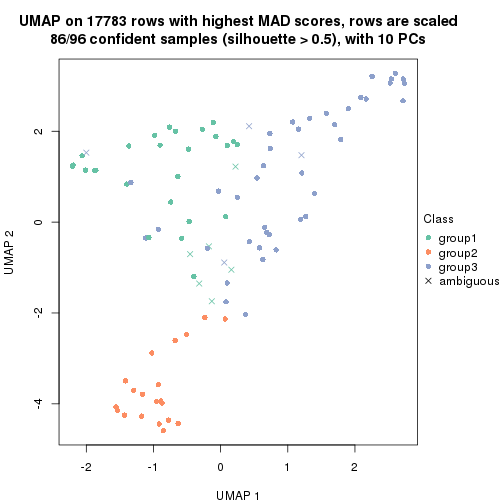
dimension_reduction(res, k = 4, method = "UMAP")
dimension_reduction(res, k = 5, method = "UMAP")

dimension_reduction(res, k = 6, method = "UMAP")

Following heatmap shows how subgroups are split when increasing k:
collect_classes(res)
Test correlation between subgroups and known annotations. If the known annotation is numeric, one-way ANOVA test is applied, and if the known annotation is discrete, chi-squared contingency table test is applied.
test_to_known_factors(res)
#> n specimen(p) disease.state(p) individual(p) tissue(p) k
#> MAD:pam 95 5.68e-19 0.8707 0.9999 3.09e-10 2
#> MAD:pam 86 3.14e-16 0.2894 0.5350 6.72e-07 3
#> MAD:pam 93 9.62e-17 0.3800 0.3129 7.44e-07 4
#> MAD:pam 88 5.74e-16 0.0724 0.0768 6.96e-06 5
#> MAD:pam 90 9.73e-15 0.2107 0.2140 4.86e-05 6
If matrix rows can be associated to genes, consider to use functional_enrichment(res,
...) to perform function enrichment for the signature genes. See this vignette for more detailed explanations.
The object with results only for a single top-value method and a single partition method can be extracted as:
res = res_list["MAD", "mclust"]
# you can also extract it by
# res = res_list["MAD:mclust"]
A summary of res and all the functions that can be applied to it:
res
#> A 'ConsensusPartition' object with k = 2, 3, 4, 5, 6.
#> On a matrix with 17783 rows and 96 columns.
#> Top rows (1000, 2000, 3000, 4000, 5000) are extracted by 'MAD' method.
#> Subgroups are detected by 'mclust' method.
#> Performed in total 1250 partitions by row resampling.
#> Best k for subgroups seems to be 3.
#>
#> Following methods can be applied to this 'ConsensusPartition' object:
#> [1] "cola_report" "collect_classes" "collect_plots"
#> [4] "collect_stats" "colnames" "compare_signatures"
#> [7] "consensus_heatmap" "dimension_reduction" "functional_enrichment"
#> [10] "get_anno_col" "get_anno" "get_classes"
#> [13] "get_consensus" "get_matrix" "get_membership"
#> [16] "get_param" "get_signatures" "get_stats"
#> [19] "is_best_k" "is_stable_k" "membership_heatmap"
#> [22] "ncol" "nrow" "plot_ecdf"
#> [25] "rownames" "select_partition_number" "show"
#> [28] "suggest_best_k" "test_to_known_factors"
collect_plots() function collects all the plots made from res for all k (number of partitions)
into one single page to provide an easy and fast comparison between different k.
collect_plots(res)
The plots are:
k and the heatmap of
predicted classes for each k.k.k.k.All the plots in panels can be made by individual functions and they are plotted later in this section.
select_partition_number() produces several plots showing different
statistics for choosing “optimized” k. There are following statistics:
k;k, the area increased is defined as \(A_k - A_{k-1}\).The detailed explanations of these statistics can be found in the cola vignette.
Generally speaking, lower PAC score, higher mean silhouette score or higher
concordance corresponds to better partition. Rand index and Jaccard index
measure how similar the current partition is compared to partition with k-1.
If they are too similar, we won't accept k is better than k-1.
select_partition_number(res)
The numeric values for all these statistics can be obtained by get_stats().
get_stats(res)
#> k 1-PAC mean_silhouette concordance area_increased Rand Jaccard
#> 2 2 0.366 0.828 0.887 0.3866 0.667 0.667
#> 3 3 0.751 0.929 0.949 0.4252 0.708 0.577
#> 4 4 0.674 0.786 0.894 0.2202 0.822 0.614
#> 5 5 0.603 0.785 0.829 0.0640 0.967 0.897
#> 6 6 0.669 0.744 0.806 0.0942 0.925 0.748
suggest_best_k() suggests the best \(k\) based on these statistics. The rules are as follows:
suggest_best_k(res)
#> [1] 3
Following shows the table of the partitions (You need to click the show/hide
code output link to see it). The membership matrix (columns with name p*)
is inferred by
clue::cl_consensus()
function with the SE method. Basically the value in the membership matrix
represents the probability to belong to a certain group. The finall class
label for an item is determined with the group with highest probability it
belongs to.
In get_classes() function, the entropy is calculated from the membership
matrix and the silhouette score is calculated from the consensus matrix.
cbind(get_classes(res, k = 2), get_membership(res, k = 2))
#> class entropy silhouette p1 p2
#> GSM771247 1 0.0000 0.858 1.000 0.000
#> GSM771246 1 0.4939 0.848 0.892 0.108
#> GSM771245 1 0.5519 0.838 0.872 0.128
#> GSM771169 1 0.4939 0.848 0.892 0.108
#> GSM771171 1 0.4939 0.848 0.892 0.108
#> GSM771175 1 0.4815 0.847 0.896 0.104
#> GSM771172 1 0.4939 0.848 0.892 0.108
#> GSM771174 1 0.4815 0.847 0.896 0.104
#> GSM771178 1 0.4939 0.848 0.892 0.108
#> GSM771176 1 0.4690 0.850 0.900 0.100
#> GSM771181 1 0.6801 0.801 0.820 0.180
#> GSM771179 1 0.4939 0.848 0.892 0.108
#> GSM771184 1 0.0000 0.858 1.000 0.000
#> GSM771182 1 0.5519 0.838 0.872 0.128
#> GSM771185 1 0.5408 0.840 0.876 0.124
#> GSM771186 1 0.5946 0.827 0.856 0.144
#> GSM771188 1 0.5178 0.843 0.884 0.116
#> GSM771193 1 0.0000 0.858 1.000 0.000
#> GSM771192 1 0.5408 0.840 0.876 0.124
#> GSM771189 1 0.9248 0.528 0.660 0.340
#> GSM771194 1 0.5629 0.835 0.868 0.132
#> GSM771191 1 0.0376 0.858 0.996 0.004
#> GSM771202 1 0.4939 0.848 0.892 0.108
#> GSM771200 1 0.4939 0.848 0.892 0.108
#> GSM771206 1 0.3879 0.858 0.924 0.076
#> GSM771208 1 0.3879 0.858 0.924 0.076
#> GSM771207 1 0.4939 0.848 0.892 0.108
#> GSM771209 1 0.4939 0.848 0.892 0.108
#> GSM771211 1 0.0000 0.858 1.000 0.000
#> GSM771212 1 0.3879 0.858 0.924 0.076
#> GSM771214 1 0.9635 0.514 0.612 0.388
#> GSM771213 1 0.9170 0.581 0.668 0.332
#> GSM771216 1 0.9323 0.512 0.652 0.348
#> GSM771217 1 0.5178 0.843 0.884 0.116
#> GSM771219 1 0.5059 0.846 0.888 0.112
#> GSM771218 1 0.3879 0.858 0.924 0.076
#> GSM771222 1 0.3879 0.858 0.924 0.076
#> GSM771220 1 0.4939 0.848 0.892 0.108
#> GSM771226 1 0.6801 0.801 0.820 0.180
#> GSM771223 1 0.5408 0.840 0.876 0.124
#> GSM771225 1 0.6247 0.817 0.844 0.156
#> GSM771232 1 0.2423 0.860 0.960 0.040
#> GSM771235 1 0.3584 0.845 0.932 0.068
#> GSM771234 1 0.6801 0.801 0.820 0.180
#> GSM771242 1 0.5059 0.846 0.888 0.112
#> GSM771239 1 0.5519 0.838 0.872 0.128
#> GSM771240 1 0.5842 0.830 0.860 0.140
#> GSM771241 1 0.5059 0.846 0.888 0.112
#> GSM771197 1 0.6801 0.801 0.820 0.180
#> GSM771195 1 0.5519 0.838 0.872 0.128
#> GSM771198 1 0.6801 0.801 0.820 0.180
#> GSM771199 1 0.6801 0.801 0.820 0.180
#> GSM771204 1 0.5519 0.838 0.872 0.128
#> GSM771205 1 0.4939 0.848 0.892 0.108
#> GSM771229 1 0.3879 0.858 0.924 0.076
#> GSM771227 1 0.4815 0.847 0.896 0.104
#> GSM771230 1 0.5294 0.842 0.880 0.120
#> GSM771231 1 0.5519 0.838 0.872 0.128
#> GSM771238 1 0.5519 0.838 0.872 0.128
#> GSM771236 1 0.0000 0.858 1.000 0.000
#> GSM771154 1 0.3879 0.858 0.924 0.076
#> GSM771152 1 0.6973 0.785 0.812 0.188
#> GSM771156 1 0.5629 0.831 0.868 0.132
#> GSM771157 1 0.3879 0.858 0.924 0.076
#> GSM771155 1 0.5178 0.843 0.884 0.116
#> GSM771160 1 0.6801 0.801 0.820 0.180
#> GSM771161 1 0.1184 0.859 0.984 0.016
#> GSM771159 1 0.6148 0.821 0.848 0.152
#> GSM771165 1 0.5408 0.840 0.876 0.124
#> GSM771166 1 0.0000 0.858 1.000 0.000
#> GSM771167 1 0.5519 0.838 0.872 0.128
#> GSM771168 1 0.3879 0.858 0.924 0.076
#> GSM771163 1 0.4562 0.849 0.904 0.096
#> GSM771244 2 0.0000 0.930 0.000 1.000
#> GSM771170 1 0.3879 0.858 0.924 0.076
#> GSM771173 2 0.5059 0.846 0.112 0.888
#> GSM771177 2 0.4431 0.863 0.092 0.908
#> GSM771180 2 0.9710 0.322 0.400 0.600
#> GSM771183 2 0.0000 0.930 0.000 1.000
#> GSM771187 2 0.2043 0.908 0.032 0.968
#> GSM771190 2 0.0000 0.930 0.000 1.000
#> GSM771201 2 0.5059 0.846 0.112 0.888
#> GSM771210 1 0.9323 0.512 0.652 0.348
#> GSM771215 2 0.0000 0.930 0.000 1.000
#> GSM771221 2 0.0000 0.930 0.000 1.000
#> GSM771224 1 0.4298 0.843 0.912 0.088
#> GSM771233 2 0.0000 0.930 0.000 1.000
#> GSM771243 2 0.0000 0.930 0.000 1.000
#> GSM771196 2 0.0000 0.930 0.000 1.000
#> GSM771203 2 0.0000 0.930 0.000 1.000
#> GSM771228 2 0.0000 0.930 0.000 1.000
#> GSM771237 2 0.0000 0.930 0.000 1.000
#> GSM771153 2 0.0000 0.930 0.000 1.000
#> GSM771158 2 0.0000 0.930 0.000 1.000
#> GSM771162 2 0.9710 0.322 0.400 0.600
#> GSM771164 2 0.0000 0.930 0.000 1.000
cbind(get_classes(res, k = 3), get_membership(res, k = 3))
#> class entropy silhouette p1 p2 p3
#> GSM771247 1 0.0592 0.969 0.988 0.000 0.012
#> GSM771246 3 0.4452 0.906 0.192 0.000 0.808
#> GSM771245 1 0.0000 0.972 1.000 0.000 0.000
#> GSM771169 3 0.4346 0.906 0.184 0.000 0.816
#> GSM771171 3 0.4291 0.905 0.180 0.000 0.820
#> GSM771175 1 0.0000 0.972 1.000 0.000 0.000
#> GSM771172 3 0.4452 0.906 0.192 0.000 0.808
#> GSM771174 1 0.0000 0.972 1.000 0.000 0.000
#> GSM771178 3 0.4452 0.906 0.192 0.000 0.808
#> GSM771176 1 0.0000 0.972 1.000 0.000 0.000
#> GSM771181 3 0.1289 0.805 0.032 0.000 0.968
#> GSM771179 3 0.4452 0.906 0.192 0.000 0.808
#> GSM771184 1 0.0424 0.970 0.992 0.000 0.008
#> GSM771182 1 0.0424 0.971 0.992 0.008 0.000
#> GSM771185 1 0.0000 0.972 1.000 0.000 0.000
#> GSM771186 1 0.0592 0.970 0.988 0.012 0.000
#> GSM771188 1 0.0000 0.972 1.000 0.000 0.000
#> GSM771193 1 0.0000 0.972 1.000 0.000 0.000
#> GSM771192 1 0.0237 0.970 0.996 0.000 0.004
#> GSM771189 1 0.0424 0.969 0.992 0.008 0.000
#> GSM771194 1 0.0000 0.972 1.000 0.000 0.000
#> GSM771191 1 0.0829 0.969 0.984 0.012 0.004
#> GSM771202 3 0.4452 0.906 0.192 0.000 0.808
#> GSM771200 3 0.4452 0.906 0.192 0.000 0.808
#> GSM771206 1 0.0592 0.970 0.988 0.012 0.000
#> GSM771208 1 0.0747 0.967 0.984 0.000 0.016
#> GSM771207 3 0.4291 0.905 0.180 0.000 0.820
#> GSM771209 3 0.4452 0.906 0.192 0.000 0.808
#> GSM771211 1 0.0592 0.969 0.988 0.000 0.012
#> GSM771212 1 0.0747 0.967 0.984 0.000 0.016
#> GSM771214 1 0.0892 0.966 0.980 0.020 0.000
#> GSM771213 1 0.0983 0.968 0.980 0.016 0.004
#> GSM771216 1 0.0747 0.968 0.984 0.016 0.000
#> GSM771217 1 0.0592 0.970 0.988 0.012 0.000
#> GSM771219 3 0.4235 0.904 0.176 0.000 0.824
#> GSM771218 1 0.0747 0.967 0.984 0.000 0.016
#> GSM771222 1 0.1031 0.961 0.976 0.000 0.024
#> GSM771220 3 0.4452 0.906 0.192 0.000 0.808
#> GSM771226 3 0.1289 0.805 0.032 0.000 0.968
#> GSM771223 1 0.0592 0.970 0.988 0.012 0.000
#> GSM771225 1 0.0592 0.970 0.988 0.012 0.000
#> GSM771232 1 0.0592 0.970 0.988 0.012 0.000
#> GSM771235 1 0.1031 0.957 0.976 0.000 0.024
#> GSM771234 3 0.1289 0.805 0.032 0.000 0.968
#> GSM771242 3 0.4452 0.900 0.192 0.000 0.808
#> GSM771239 1 0.0592 0.970 0.988 0.012 0.000
#> GSM771240 1 0.0000 0.972 1.000 0.000 0.000
#> GSM771241 3 0.4605 0.890 0.204 0.000 0.796
#> GSM771197 3 0.1289 0.805 0.032 0.000 0.968
#> GSM771195 1 0.0000 0.972 1.000 0.000 0.000
#> GSM771198 3 0.1289 0.805 0.032 0.000 0.968
#> GSM771199 3 0.1289 0.805 0.032 0.000 0.968
#> GSM771204 1 0.0592 0.970 0.988 0.012 0.000
#> GSM771205 3 0.4452 0.906 0.192 0.000 0.808
#> GSM771229 1 0.3267 0.859 0.884 0.000 0.116
#> GSM771227 1 0.0000 0.972 1.000 0.000 0.000
#> GSM771230 1 0.0000 0.972 1.000 0.000 0.000
#> GSM771231 1 0.0000 0.972 1.000 0.000 0.000
#> GSM771238 1 0.0000 0.972 1.000 0.000 0.000
#> GSM771236 1 0.0592 0.969 0.988 0.000 0.012
#> GSM771154 1 0.0829 0.969 0.984 0.012 0.004
#> GSM771152 1 0.0592 0.970 0.988 0.012 0.000
#> GSM771156 1 0.0237 0.970 0.996 0.000 0.004
#> GSM771157 1 0.5291 0.562 0.732 0.000 0.268
#> GSM771155 1 0.0592 0.970 0.988 0.012 0.000
#> GSM771160 3 0.1289 0.805 0.032 0.000 0.968
#> GSM771161 1 0.0000 0.972 1.000 0.000 0.000
#> GSM771159 1 0.0592 0.970 0.988 0.012 0.000
#> GSM771165 1 0.0000 0.972 1.000 0.000 0.000
#> GSM771166 1 0.0000 0.972 1.000 0.000 0.000
#> GSM771167 1 0.0000 0.972 1.000 0.000 0.000
#> GSM771168 1 0.4555 0.725 0.800 0.000 0.200
#> GSM771163 1 0.0000 0.972 1.000 0.000 0.000
#> GSM771244 2 0.0000 0.965 0.000 1.000 0.000
#> GSM771170 1 0.0747 0.967 0.984 0.000 0.016
#> GSM771173 2 0.1289 0.939 0.032 0.968 0.000
#> GSM771177 2 0.0424 0.960 0.008 0.992 0.000
#> GSM771180 1 0.4465 0.775 0.820 0.176 0.004
#> GSM771183 2 0.0000 0.965 0.000 1.000 0.000
#> GSM771187 2 0.0000 0.965 0.000 1.000 0.000
#> GSM771190 2 0.3941 0.749 0.156 0.844 0.000
#> GSM771201 2 0.1031 0.947 0.024 0.976 0.000
#> GSM771210 1 0.1031 0.963 0.976 0.024 0.000
#> GSM771215 2 0.0592 0.957 0.012 0.988 0.000
#> GSM771221 2 0.0000 0.965 0.000 1.000 0.000
#> GSM771224 1 0.0237 0.970 0.996 0.000 0.004
#> GSM771233 2 0.0000 0.965 0.000 1.000 0.000
#> GSM771243 2 0.0000 0.965 0.000 1.000 0.000
#> GSM771196 2 0.0000 0.965 0.000 1.000 0.000
#> GSM771203 2 0.0000 0.965 0.000 1.000 0.000
#> GSM771228 2 0.0000 0.965 0.000 1.000 0.000
#> GSM771237 2 0.3941 0.749 0.156 0.844 0.000
#> GSM771153 2 0.0000 0.965 0.000 1.000 0.000
#> GSM771158 2 0.0000 0.965 0.000 1.000 0.000
#> GSM771162 1 0.4978 0.708 0.780 0.216 0.004
#> GSM771164 2 0.0000 0.965 0.000 1.000 0.000
cbind(get_classes(res, k = 4), get_membership(res, k = 4))
#> class entropy silhouette p1 p2 p3 p4
#> GSM771247 4 0.4431 0.5539 0.304 0.000 0.000 0.696
#> GSM771246 1 0.0188 0.7764 0.996 0.000 0.000 0.004
#> GSM771245 4 0.1118 0.8711 0.036 0.000 0.000 0.964
#> GSM771169 1 0.3047 0.7205 0.872 0.000 0.116 0.012
#> GSM771171 1 0.3583 0.6697 0.816 0.000 0.180 0.004
#> GSM771175 4 0.0188 0.8676 0.004 0.000 0.000 0.996
#> GSM771172 1 0.0469 0.7788 0.988 0.000 0.000 0.012
#> GSM771174 4 0.0188 0.8676 0.004 0.000 0.000 0.996
#> GSM771178 1 0.1388 0.7701 0.960 0.000 0.028 0.012
#> GSM771176 4 0.1118 0.8711 0.036 0.000 0.000 0.964
#> GSM771181 3 0.0000 1.0000 0.000 0.000 1.000 0.000
#> GSM771179 1 0.0188 0.7764 0.996 0.000 0.000 0.004
#> GSM771184 4 0.3266 0.7761 0.168 0.000 0.000 0.832
#> GSM771182 4 0.0707 0.8713 0.020 0.000 0.000 0.980
#> GSM771185 4 0.0188 0.8676 0.004 0.000 0.000 0.996
#> GSM771186 4 0.3219 0.7733 0.164 0.000 0.000 0.836
#> GSM771188 4 0.1022 0.8715 0.032 0.000 0.000 0.968
#> GSM771193 4 0.1305 0.8704 0.036 0.000 0.004 0.960
#> GSM771192 4 0.1004 0.8706 0.024 0.000 0.004 0.972
#> GSM771189 4 0.1109 0.8721 0.028 0.004 0.000 0.968
#> GSM771194 4 0.0188 0.8676 0.004 0.000 0.000 0.996
#> GSM771191 1 0.4898 0.3330 0.584 0.000 0.000 0.416
#> GSM771202 1 0.0188 0.7764 0.996 0.000 0.000 0.004
#> GSM771200 1 0.0188 0.7764 0.996 0.000 0.000 0.004
#> GSM771206 1 0.4164 0.6686 0.736 0.000 0.000 0.264
#> GSM771208 1 0.4072 0.6787 0.748 0.000 0.000 0.252
#> GSM771207 1 0.3105 0.7030 0.856 0.000 0.140 0.004
#> GSM771209 1 0.0188 0.7764 0.996 0.000 0.000 0.004
#> GSM771211 4 0.4776 0.3933 0.376 0.000 0.000 0.624
#> GSM771212 1 0.4072 0.6787 0.748 0.000 0.000 0.252
#> GSM771214 1 0.4220 0.6808 0.748 0.004 0.000 0.248
#> GSM771213 1 0.4072 0.6787 0.748 0.000 0.000 0.252
#> GSM771216 4 0.6378 0.5015 0.264 0.108 0.000 0.628
#> GSM771217 4 0.1867 0.8472 0.072 0.000 0.000 0.928
#> GSM771219 1 0.4372 0.5697 0.728 0.000 0.268 0.004
#> GSM771218 1 0.4072 0.6834 0.748 0.000 0.000 0.252
#> GSM771222 1 0.5165 0.0800 0.512 0.000 0.004 0.484
#> GSM771220 1 0.0469 0.7788 0.988 0.000 0.000 0.012
#> GSM771226 3 0.0000 1.0000 0.000 0.000 1.000 0.000
#> GSM771223 4 0.1940 0.8436 0.076 0.000 0.000 0.924
#> GSM771225 4 0.3688 0.7238 0.208 0.000 0.000 0.792
#> GSM771232 4 0.4996 0.0408 0.484 0.000 0.000 0.516
#> GSM771235 4 0.3856 0.7800 0.032 0.000 0.136 0.832
#> GSM771234 3 0.0000 1.0000 0.000 0.000 1.000 0.000
#> GSM771242 1 0.4372 0.5697 0.728 0.000 0.268 0.004
#> GSM771239 4 0.1211 0.8695 0.040 0.000 0.000 0.960
#> GSM771240 4 0.0592 0.8706 0.016 0.000 0.000 0.984
#> GSM771241 1 0.5557 0.5216 0.652 0.000 0.308 0.040
#> GSM771197 3 0.0000 1.0000 0.000 0.000 1.000 0.000
#> GSM771195 4 0.0817 0.8708 0.024 0.000 0.000 0.976
#> GSM771198 3 0.0000 1.0000 0.000 0.000 1.000 0.000
#> GSM771199 3 0.0000 1.0000 0.000 0.000 1.000 0.000
#> GSM771204 4 0.0592 0.8693 0.016 0.000 0.000 0.984
#> GSM771205 1 0.0188 0.7764 0.996 0.000 0.000 0.004
#> GSM771229 1 0.0592 0.7793 0.984 0.000 0.000 0.016
#> GSM771227 4 0.0817 0.8708 0.024 0.000 0.000 0.976
#> GSM771230 4 0.0188 0.8676 0.004 0.000 0.000 0.996
#> GSM771231 4 0.0188 0.8676 0.004 0.000 0.000 0.996
#> GSM771238 4 0.0707 0.8714 0.020 0.000 0.000 0.980
#> GSM771236 4 0.4746 0.4058 0.368 0.000 0.000 0.632
#> GSM771154 1 0.4134 0.6740 0.740 0.000 0.000 0.260
#> GSM771152 4 0.2011 0.8496 0.080 0.000 0.000 0.920
#> GSM771156 4 0.3279 0.8155 0.032 0.000 0.096 0.872
#> GSM771157 1 0.3400 0.7400 0.820 0.000 0.000 0.180
#> GSM771155 4 0.0707 0.8700 0.020 0.000 0.000 0.980
#> GSM771160 3 0.0000 1.0000 0.000 0.000 1.000 0.000
#> GSM771161 4 0.1398 0.8703 0.040 0.000 0.004 0.956
#> GSM771159 4 0.3610 0.7348 0.200 0.000 0.000 0.800
#> GSM771165 4 0.0188 0.8676 0.004 0.000 0.000 0.996
#> GSM771166 4 0.1824 0.8647 0.060 0.000 0.004 0.936
#> GSM771167 4 0.0188 0.8676 0.004 0.000 0.000 0.996
#> GSM771168 1 0.0469 0.7788 0.988 0.000 0.000 0.012
#> GSM771163 4 0.0817 0.8708 0.024 0.000 0.000 0.976
#> GSM771244 2 0.0000 0.9501 0.000 1.000 0.000 0.000
#> GSM771170 4 0.4955 0.1768 0.444 0.000 0.000 0.556
#> GSM771173 2 0.3626 0.7290 0.004 0.812 0.000 0.184
#> GSM771177 2 0.1743 0.9083 0.004 0.940 0.000 0.056
#> GSM771180 4 0.5976 0.5702 0.024 0.244 0.044 0.688
#> GSM771183 2 0.0000 0.9501 0.000 1.000 0.000 0.000
#> GSM771187 2 0.1302 0.9221 0.000 0.956 0.000 0.044
#> GSM771190 2 0.1510 0.9206 0.016 0.956 0.000 0.028
#> GSM771201 2 0.3249 0.7958 0.008 0.852 0.000 0.140
#> GSM771210 4 0.3873 0.8006 0.096 0.060 0.000 0.844
#> GSM771215 2 0.1004 0.9343 0.004 0.972 0.000 0.024
#> GSM771221 2 0.0000 0.9501 0.000 1.000 0.000 0.000
#> GSM771224 4 0.3404 0.8091 0.032 0.000 0.104 0.864
#> GSM771233 2 0.0000 0.9501 0.000 1.000 0.000 0.000
#> GSM771243 2 0.0000 0.9501 0.000 1.000 0.000 0.000
#> GSM771196 2 0.0000 0.9501 0.000 1.000 0.000 0.000
#> GSM771203 2 0.0000 0.9501 0.000 1.000 0.000 0.000
#> GSM771228 2 0.0000 0.9501 0.000 1.000 0.000 0.000
#> GSM771237 2 0.1610 0.9164 0.016 0.952 0.000 0.032
#> GSM771153 2 0.0000 0.9501 0.000 1.000 0.000 0.000
#> GSM771158 2 0.0000 0.9501 0.000 1.000 0.000 0.000
#> GSM771162 4 0.6073 0.5628 0.020 0.240 0.056 0.684
#> GSM771164 2 0.0000 0.9501 0.000 1.000 0.000 0.000
cbind(get_classes(res, k = 5), get_membership(res, k = 5))
#> class entropy silhouette p1 p2 p3 p4 p5
#> GSM771247 5 0.310 0.77553 0.148 0.000 0.016 0.000 0.836
#> GSM771246 1 0.165 0.63237 0.940 0.000 0.040 0.000 0.020
#> GSM771245 5 0.260 0.84023 0.032 0.000 0.080 0.000 0.888
#> GSM771169 3 0.451 0.92161 0.384 0.000 0.604 0.012 0.000
#> GSM771171 3 0.484 0.92599 0.356 0.000 0.612 0.032 0.000
#> GSM771175 5 0.281 0.80598 0.000 0.000 0.168 0.000 0.832
#> GSM771172 1 0.262 0.56315 0.880 0.000 0.100 0.000 0.020
#> GSM771174 5 0.300 0.79503 0.000 0.000 0.188 0.000 0.812
#> GSM771178 3 0.445 0.91308 0.388 0.000 0.604 0.004 0.004
#> GSM771176 5 0.265 0.82287 0.084 0.000 0.032 0.000 0.884
#> GSM771181 4 0.000 1.00000 0.000 0.000 0.000 1.000 0.000
#> GSM771179 1 0.149 0.65445 0.948 0.000 0.020 0.000 0.032
#> GSM771184 5 0.316 0.81472 0.088 0.000 0.056 0.000 0.856
#> GSM771182 5 0.128 0.83399 0.004 0.000 0.044 0.000 0.952
#> GSM771185 5 0.307 0.79016 0.000 0.000 0.196 0.000 0.804
#> GSM771186 5 0.112 0.83419 0.004 0.000 0.036 0.000 0.960
#> GSM771188 5 0.238 0.83738 0.044 0.000 0.052 0.000 0.904
#> GSM771193 5 0.407 0.80779 0.076 0.000 0.136 0.000 0.788
#> GSM771192 5 0.289 0.81746 0.000 0.000 0.176 0.000 0.824
#> GSM771189 5 0.239 0.82438 0.000 0.004 0.116 0.000 0.880
#> GSM771194 5 0.377 0.81350 0.032 0.000 0.180 0.000 0.788
#> GSM771191 1 0.440 0.57542 0.656 0.000 0.016 0.000 0.328
#> GSM771202 1 0.122 0.63596 0.960 0.000 0.020 0.000 0.020
#> GSM771200 1 0.131 0.64422 0.956 0.000 0.020 0.000 0.024
#> GSM771206 1 0.391 0.71855 0.752 0.000 0.020 0.000 0.228
#> GSM771208 1 0.379 0.72662 0.768 0.000 0.020 0.000 0.212
#> GSM771207 3 0.466 0.92546 0.376 0.000 0.604 0.020 0.000
#> GSM771209 1 0.157 0.65900 0.944 0.000 0.020 0.000 0.036
#> GSM771211 5 0.357 0.76568 0.152 0.000 0.036 0.000 0.812
#> GSM771212 1 0.379 0.72662 0.768 0.000 0.020 0.000 0.212
#> GSM771214 1 0.445 0.71423 0.744 0.024 0.020 0.000 0.212
#> GSM771213 1 0.449 0.70587 0.732 0.020 0.020 0.000 0.228
#> GSM771216 5 0.371 0.82129 0.004 0.044 0.136 0.000 0.816
#> GSM771217 5 0.433 0.79338 0.140 0.000 0.092 0.000 0.768
#> GSM771219 3 0.495 0.92152 0.348 0.000 0.612 0.040 0.000
#> GSM771218 1 0.361 0.72241 0.764 0.000 0.008 0.000 0.228
#> GSM771222 1 0.592 0.17058 0.504 0.000 0.108 0.000 0.388
#> GSM771220 3 0.428 0.82922 0.456 0.000 0.544 0.000 0.000
#> GSM771226 4 0.000 1.00000 0.000 0.000 0.000 1.000 0.000
#> GSM771223 5 0.471 0.50384 0.324 0.000 0.032 0.000 0.644
#> GSM771225 5 0.242 0.82862 0.012 0.000 0.100 0.000 0.888
#> GSM771232 5 0.461 0.64001 0.232 0.000 0.056 0.000 0.712
#> GSM771235 5 0.479 0.73570 0.000 0.000 0.224 0.072 0.704
#> GSM771234 4 0.000 1.00000 0.000 0.000 0.000 1.000 0.000
#> GSM771242 3 0.514 0.91851 0.340 0.000 0.612 0.044 0.004
#> GSM771239 5 0.120 0.83376 0.004 0.000 0.040 0.000 0.956
#> GSM771240 5 0.256 0.80616 0.000 0.000 0.144 0.000 0.856
#> GSM771241 3 0.631 0.78074 0.264 0.000 0.600 0.044 0.092
#> GSM771197 4 0.000 1.00000 0.000 0.000 0.000 1.000 0.000
#> GSM771195 5 0.213 0.83116 0.000 0.000 0.108 0.000 0.892
#> GSM771198 4 0.000 1.00000 0.000 0.000 0.000 1.000 0.000
#> GSM771199 4 0.000 1.00000 0.000 0.000 0.000 1.000 0.000
#> GSM771204 5 0.360 0.79072 0.140 0.000 0.044 0.000 0.816
#> GSM771205 1 0.131 0.64422 0.956 0.000 0.020 0.000 0.024
#> GSM771229 1 0.308 0.60436 0.860 0.000 0.092 0.000 0.048
#> GSM771227 5 0.207 0.83193 0.000 0.000 0.104 0.000 0.896
#> GSM771230 5 0.304 0.79141 0.000 0.000 0.192 0.000 0.808
#> GSM771231 5 0.337 0.81000 0.000 0.000 0.232 0.000 0.768
#> GSM771238 5 0.269 0.81325 0.000 0.000 0.156 0.000 0.844
#> GSM771236 5 0.267 0.79996 0.120 0.000 0.012 0.000 0.868
#> GSM771154 1 0.391 0.71855 0.752 0.000 0.020 0.000 0.228
#> GSM771152 5 0.120 0.83376 0.004 0.000 0.040 0.000 0.956
#> GSM771156 5 0.418 0.78405 0.000 0.000 0.164 0.064 0.772
#> GSM771157 1 0.366 0.72742 0.776 0.000 0.016 0.000 0.208
#> GSM771155 5 0.306 0.79012 0.136 0.000 0.020 0.000 0.844
#> GSM771160 4 0.000 1.00000 0.000 0.000 0.000 1.000 0.000
#> GSM771161 5 0.293 0.82524 0.004 0.000 0.164 0.000 0.832
#> GSM771159 5 0.247 0.82903 0.012 0.000 0.104 0.000 0.884
#> GSM771165 5 0.304 0.79141 0.000 0.000 0.192 0.000 0.808
#> GSM771166 5 0.295 0.82304 0.012 0.000 0.144 0.000 0.844
#> GSM771167 5 0.337 0.81000 0.000 0.000 0.232 0.000 0.768
#> GSM771168 1 0.308 0.60436 0.860 0.000 0.092 0.000 0.048
#> GSM771163 5 0.207 0.83193 0.000 0.000 0.104 0.000 0.896
#> GSM771244 2 0.000 0.89287 0.000 1.000 0.000 0.000 0.000
#> GSM771170 5 0.298 0.81822 0.040 0.000 0.096 0.000 0.864
#> GSM771173 2 0.567 0.00513 0.020 0.516 0.040 0.000 0.424
#> GSM771177 2 0.180 0.86042 0.020 0.940 0.012 0.000 0.028
#> GSM771180 5 0.689 0.66226 0.020 0.116 0.180 0.064 0.620
#> GSM771183 2 0.000 0.89287 0.000 1.000 0.000 0.000 0.000
#> GSM771187 2 0.000 0.89287 0.000 1.000 0.000 0.000 0.000
#> GSM771190 2 0.292 0.80541 0.024 0.880 0.016 0.000 0.080
#> GSM771201 2 0.552 0.18660 0.020 0.564 0.036 0.000 0.380
#> GSM771210 5 0.351 0.80818 0.000 0.020 0.180 0.000 0.800
#> GSM771215 2 0.200 0.85654 0.024 0.932 0.016 0.000 0.028
#> GSM771221 2 0.000 0.89287 0.000 1.000 0.000 0.000 0.000
#> GSM771224 5 0.473 0.73405 0.000 0.000 0.232 0.064 0.704
#> GSM771233 2 0.000 0.89287 0.000 1.000 0.000 0.000 0.000
#> GSM771243 2 0.000 0.89287 0.000 1.000 0.000 0.000 0.000
#> GSM771196 2 0.000 0.89287 0.000 1.000 0.000 0.000 0.000
#> GSM771203 2 0.000 0.89287 0.000 1.000 0.000 0.000 0.000
#> GSM771228 2 0.000 0.89287 0.000 1.000 0.000 0.000 0.000
#> GSM771237 2 0.292 0.80541 0.024 0.880 0.016 0.000 0.080
#> GSM771153 2 0.000 0.89287 0.000 1.000 0.000 0.000 0.000
#> GSM771158 2 0.000 0.89287 0.000 1.000 0.000 0.000 0.000
#> GSM771162 5 0.704 0.64460 0.020 0.128 0.184 0.064 0.604
#> GSM771164 2 0.000 0.89287 0.000 1.000 0.000 0.000 0.000
cbind(get_classes(res, k = 6), get_membership(res, k = 6))
#> class entropy silhouette p1 p2 p3 p4 p5 p6
#> GSM771247 4 0.5039 0.632 0.000 0.000 0.000 0.640 0.176 0.184
#> GSM771246 1 0.4057 0.544 0.600 0.000 0.000 0.000 0.012 0.388
#> GSM771245 4 0.4281 0.667 0.000 0.000 0.000 0.732 0.132 0.136
#> GSM771169 6 0.0000 0.900 0.000 0.000 0.000 0.000 0.000 1.000
#> GSM771171 6 0.0260 0.898 0.000 0.000 0.000 0.000 0.008 0.992
#> GSM771175 4 0.0508 0.734 0.012 0.000 0.000 0.984 0.004 0.000
#> GSM771172 1 0.4179 0.423 0.516 0.000 0.000 0.000 0.012 0.472
#> GSM771174 4 0.0405 0.731 0.008 0.000 0.000 0.988 0.004 0.000
#> GSM771178 6 0.0146 0.897 0.004 0.000 0.000 0.000 0.000 0.996
#> GSM771176 4 0.4354 0.661 0.000 0.000 0.000 0.724 0.132 0.144
#> GSM771181 3 0.0000 0.996 0.000 0.000 1.000 0.000 0.000 0.000
#> GSM771179 1 0.4223 0.658 0.704 0.000 0.000 0.000 0.060 0.236
#> GSM771184 4 0.4613 0.669 0.000 0.000 0.000 0.688 0.196 0.116
#> GSM771182 4 0.2436 0.737 0.032 0.000 0.000 0.880 0.088 0.000
#> GSM771185 4 0.0622 0.730 0.008 0.000 0.000 0.980 0.012 0.000
#> GSM771186 4 0.3608 0.731 0.024 0.000 0.000 0.816 0.112 0.048
#> GSM771188 4 0.3958 0.693 0.000 0.000 0.000 0.764 0.128 0.108
#> GSM771193 5 0.5595 0.685 0.000 0.000 0.020 0.240 0.600 0.140
#> GSM771192 5 0.4972 0.646 0.000 0.000 0.000 0.272 0.620 0.108
#> GSM771189 4 0.2199 0.735 0.020 0.000 0.000 0.892 0.088 0.000
#> GSM771194 4 0.1970 0.713 0.008 0.000 0.000 0.900 0.092 0.000
#> GSM771191 1 0.3154 0.621 0.800 0.000 0.000 0.184 0.012 0.004
#> GSM771202 1 0.4339 0.644 0.684 0.000 0.000 0.000 0.060 0.256
#> GSM771200 1 0.4247 0.656 0.700 0.000 0.000 0.000 0.060 0.240
#> GSM771206 1 0.2356 0.719 0.884 0.000 0.000 0.096 0.016 0.004
#> GSM771208 1 0.2070 0.718 0.892 0.000 0.000 0.100 0.008 0.000
#> GSM771207 6 0.0000 0.900 0.000 0.000 0.000 0.000 0.000 1.000
#> GSM771209 1 0.3974 0.664 0.728 0.000 0.000 0.000 0.048 0.224
#> GSM771211 4 0.4858 0.648 0.000 0.000 0.000 0.664 0.180 0.156
#> GSM771212 1 0.2358 0.716 0.876 0.000 0.000 0.108 0.016 0.000
#> GSM771214 1 0.1958 0.717 0.896 0.000 0.000 0.100 0.004 0.000
#> GSM771213 1 0.1958 0.717 0.896 0.000 0.000 0.100 0.004 0.000
#> GSM771216 4 0.3977 0.675 0.140 0.004 0.000 0.780 0.008 0.068
#> GSM771217 4 0.3784 0.680 0.144 0.000 0.000 0.776 0.080 0.000
#> GSM771219 6 0.2121 0.862 0.000 0.000 0.096 0.000 0.012 0.892
#> GSM771218 1 0.4651 0.712 0.736 0.000 0.000 0.100 0.032 0.132
#> GSM771222 4 0.5401 0.429 0.076 0.000 0.000 0.556 0.020 0.348
#> GSM771220 6 0.1327 0.845 0.064 0.000 0.000 0.000 0.000 0.936
#> GSM771226 3 0.0000 0.996 0.000 0.000 1.000 0.000 0.000 0.000
#> GSM771223 4 0.4193 0.425 0.352 0.000 0.000 0.624 0.024 0.000
#> GSM771225 4 0.4191 0.708 0.008 0.000 0.000 0.752 0.084 0.156
#> GSM771232 4 0.5223 0.568 0.268 0.000 0.000 0.632 0.032 0.068
#> GSM771235 5 0.5800 0.672 0.000 0.000 0.156 0.088 0.640 0.116
#> GSM771234 3 0.0363 0.990 0.000 0.000 0.988 0.000 0.012 0.000
#> GSM771242 6 0.2070 0.862 0.000 0.000 0.092 0.000 0.012 0.896
#> GSM771239 4 0.2629 0.736 0.040 0.000 0.000 0.868 0.092 0.000
#> GSM771240 4 0.2165 0.711 0.008 0.000 0.000 0.884 0.108 0.000
#> GSM771241 6 0.4035 0.642 0.000 0.000 0.256 0.016 0.016 0.712
#> GSM771197 3 0.0000 0.996 0.000 0.000 1.000 0.000 0.000 0.000
#> GSM771195 4 0.5095 0.566 0.000 0.000 0.000 0.584 0.312 0.104
#> GSM771198 3 0.0363 0.990 0.000 0.000 0.988 0.000 0.012 0.000
#> GSM771199 3 0.0000 0.996 0.000 0.000 1.000 0.000 0.000 0.000
#> GSM771204 4 0.2553 0.679 0.144 0.000 0.000 0.848 0.008 0.000
#> GSM771205 1 0.4247 0.656 0.700 0.000 0.000 0.000 0.060 0.240
#> GSM771229 1 0.4381 0.453 0.524 0.000 0.000 0.004 0.016 0.456
#> GSM771227 4 0.5133 0.561 0.000 0.000 0.000 0.580 0.312 0.108
#> GSM771230 4 0.0717 0.730 0.008 0.000 0.000 0.976 0.016 0.000
#> GSM771231 4 0.3133 0.646 0.008 0.000 0.000 0.780 0.212 0.000
#> GSM771238 4 0.2006 0.719 0.004 0.000 0.000 0.892 0.104 0.000
#> GSM771236 4 0.4415 0.688 0.004 0.000 0.000 0.724 0.168 0.104
#> GSM771154 1 0.2468 0.721 0.880 0.000 0.000 0.096 0.016 0.008
#> GSM771152 4 0.2910 0.732 0.068 0.000 0.000 0.852 0.080 0.000
#> GSM771156 5 0.4394 0.746 0.000 0.000 0.020 0.120 0.752 0.108
#> GSM771157 1 0.2815 0.723 0.864 0.000 0.000 0.096 0.012 0.028
#> GSM771155 4 0.3907 0.674 0.152 0.000 0.000 0.764 0.084 0.000
#> GSM771160 3 0.0000 0.996 0.000 0.000 1.000 0.000 0.000 0.000
#> GSM771161 4 0.5335 0.430 0.000 0.000 0.000 0.568 0.292 0.140
#> GSM771159 4 0.4259 0.702 0.008 0.000 0.000 0.744 0.084 0.164
#> GSM771165 4 0.0717 0.730 0.008 0.000 0.000 0.976 0.016 0.000
#> GSM771166 5 0.5390 0.586 0.000 0.000 0.012 0.232 0.616 0.140
#> GSM771167 4 0.3161 0.644 0.008 0.000 0.000 0.776 0.216 0.000
#> GSM771168 1 0.4386 0.436 0.516 0.000 0.000 0.004 0.016 0.464
#> GSM771163 4 0.5133 0.561 0.000 0.000 0.000 0.580 0.312 0.108
#> GSM771244 2 0.0000 0.951 0.000 1.000 0.000 0.000 0.000 0.000
#> GSM771170 4 0.5335 0.602 0.036 0.000 0.000 0.644 0.088 0.232
#> GSM771173 2 0.3970 0.638 0.000 0.692 0.000 0.028 0.280 0.000
#> GSM771177 2 0.1610 0.913 0.000 0.916 0.000 0.000 0.084 0.000
#> GSM771180 5 0.4392 0.596 0.000 0.176 0.024 0.060 0.740 0.000
#> GSM771183 2 0.0000 0.951 0.000 1.000 0.000 0.000 0.000 0.000
#> GSM771187 2 0.0458 0.946 0.000 0.984 0.000 0.000 0.016 0.000
#> GSM771190 2 0.2758 0.882 0.056 0.880 0.000 0.032 0.032 0.000
#> GSM771201 2 0.2868 0.842 0.000 0.840 0.000 0.028 0.132 0.000
#> GSM771210 4 0.2595 0.731 0.044 0.000 0.000 0.872 0.084 0.000
#> GSM771215 2 0.2046 0.913 0.044 0.916 0.000 0.008 0.032 0.000
#> GSM771221 2 0.0000 0.951 0.000 1.000 0.000 0.000 0.000 0.000
#> GSM771224 5 0.4154 0.734 0.000 0.000 0.024 0.084 0.776 0.116
#> GSM771233 2 0.0000 0.951 0.000 1.000 0.000 0.000 0.000 0.000
#> GSM771243 2 0.0000 0.951 0.000 1.000 0.000 0.000 0.000 0.000
#> GSM771196 2 0.0000 0.951 0.000 1.000 0.000 0.000 0.000 0.000
#> GSM771203 2 0.0000 0.951 0.000 1.000 0.000 0.000 0.000 0.000
#> GSM771228 2 0.0000 0.951 0.000 1.000 0.000 0.000 0.000 0.000
#> GSM771237 2 0.2831 0.877 0.056 0.876 0.000 0.036 0.032 0.000
#> GSM771153 2 0.0000 0.951 0.000 1.000 0.000 0.000 0.000 0.000
#> GSM771158 2 0.0000 0.951 0.000 1.000 0.000 0.000 0.000 0.000
#> GSM771162 5 0.4392 0.596 0.000 0.176 0.024 0.060 0.740 0.000
#> GSM771164 2 0.0000 0.951 0.000 1.000 0.000 0.000 0.000 0.000
Heatmaps for the consensus matrix. It visualizes the probability of two samples to be in a same group.
consensus_heatmap(res, k = 2)
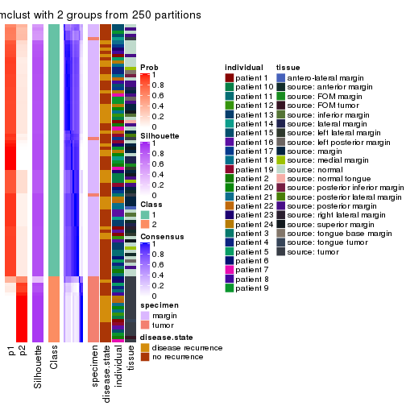
consensus_heatmap(res, k = 3)
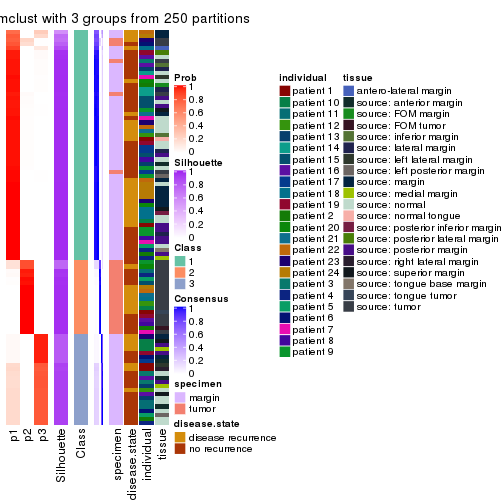
consensus_heatmap(res, k = 4)
consensus_heatmap(res, k = 5)
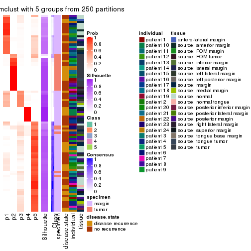
consensus_heatmap(res, k = 6)
Heatmaps for the membership of samples in all partitions to see how consistent they are:
membership_heatmap(res, k = 2)
membership_heatmap(res, k = 3)
membership_heatmap(res, k = 4)
membership_heatmap(res, k = 5)
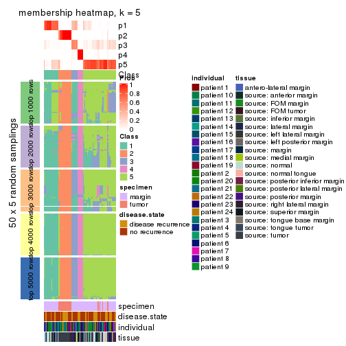
membership_heatmap(res, k = 6)
As soon as we have had the classes for columns, we can look for signatures which are significantly different between classes which can be candidate marks for certain classes. Following are the heatmaps for signatures.
Signature heatmaps where rows are scaled:
get_signatures(res, k = 2)
#> Error: The width or height of the raster image is zero, maybe you forget to turn off the
#> previous graphic device or it was corrupted. Run `dev.off()` to close it.

get_signatures(res, k = 3)
get_signatures(res, k = 4)
#> Error: The width or height of the raster image is zero, maybe you forget to turn off the
#> previous graphic device or it was corrupted. Run `dev.off()` to close it.

get_signatures(res, k = 5)
#> Error: The width or height of the raster image is zero, maybe you forget to turn off the
#> previous graphic device or it was corrupted. Run `dev.off()` to close it.

get_signatures(res, k = 6)
#> Error: The width or height of the raster image is zero, maybe you forget to turn off the
#> previous graphic device or it was corrupted. Run `dev.off()` to close it.

Signature heatmaps where rows are not scaled:
get_signatures(res, k = 2, scale_rows = FALSE)
#> Error in mat[ceiling(1:nr/h_ratio), ceiling(1:nc/w_ratio), drop = FALSE]: subscript out of bounds
get_signatures(res, k = 3, scale_rows = FALSE)
get_signatures(res, k = 4, scale_rows = FALSE)
get_signatures(res, k = 5, scale_rows = FALSE)
#> Error in mat[ceiling(1:nr/h_ratio), ceiling(1:nc/w_ratio), drop = FALSE]: subscript out of bounds
get_signatures(res, k = 6, scale_rows = FALSE)
#> Error in mat[ceiling(1:nr/h_ratio), ceiling(1:nc/w_ratio), drop = FALSE]: subscript out of bounds
Compare the overlap of signatures from different k:
compare_signatures(res)
get_signature() returns a data frame invisibly. TO get the list of signatures, the function
call should be assigned to a variable explicitly. In following code, if plot argument is set
to FALSE, no heatmap is plotted while only the differential analysis is performed.
# code only for demonstration
tb = get_signature(res, k = ..., plot = FALSE)
An example of the output of tb is:
#> which_row fdr mean_1 mean_2 scaled_mean_1 scaled_mean_2 km
#> 1 38 0.042760348 8.373488 9.131774 -0.5533452 0.5164555 1
#> 2 40 0.018707592 7.106213 8.469186 -0.6173731 0.5762149 1
#> 3 55 0.019134737 10.221463 11.207825 -0.6159697 0.5749050 1
#> 4 59 0.006059896 5.921854 7.869574 -0.6899429 0.6439467 1
#> 5 60 0.018055526 8.928898 10.211722 -0.6204761 0.5791110 1
#> 6 98 0.009384629 15.714769 14.887706 0.6635654 -0.6193277 2
...
The columns in tb are:
which_row: row indices corresponding to the input matrix.fdr: FDR for the differential test. mean_x: The mean value in group x.scaled_mean_x: The mean value in group x after rows are scaled.km: Row groups if k-means clustering is applied to rows.UMAP plot which shows how samples are separated.
dimension_reduction(res, k = 2, method = "UMAP")
dimension_reduction(res, k = 3, method = "UMAP")
dimension_reduction(res, k = 4, method = "UMAP")
dimension_reduction(res, k = 5, method = "UMAP")

dimension_reduction(res, k = 6, method = "UMAP")

Following heatmap shows how subgroups are split when increasing k:
collect_classes(res)
Test correlation between subgroups and known annotations. If the known annotation is numeric, one-way ANOVA test is applied, and if the known annotation is discrete, chi-squared contingency table test is applied.
test_to_known_factors(res)
#> n specimen(p) disease.state(p) individual(p) tissue(p) k
#> MAD:mclust 94 2.20e-17 0.824 0.999 4.65e-09 2
#> MAD:mclust 96 3.81e-16 0.676 0.780 2.56e-06 3
#> MAD:mclust 90 3.32e-15 0.415 0.267 3.59e-04 4
#> MAD:mclust 93 7.11e-14 0.474 0.126 4.10e-04 5
#> MAD:mclust 90 9.09e-14 0.478 0.191 1.25e-04 6
If matrix rows can be associated to genes, consider to use functional_enrichment(res,
...) to perform function enrichment for the signature genes. See this vignette for more detailed explanations.
The object with results only for a single top-value method and a single partition method can be extracted as:
res = res_list["MAD", "NMF"]
# you can also extract it by
# res = res_list["MAD:NMF"]
A summary of res and all the functions that can be applied to it:
res
#> A 'ConsensusPartition' object with k = 2, 3, 4, 5, 6.
#> On a matrix with 17783 rows and 96 columns.
#> Top rows (1000, 2000, 3000, 4000, 5000) are extracted by 'MAD' method.
#> Subgroups are detected by 'NMF' method.
#> Performed in total 1250 partitions by row resampling.
#> Best k for subgroups seems to be 5.
#>
#> Following methods can be applied to this 'ConsensusPartition' object:
#> [1] "cola_report" "collect_classes" "collect_plots"
#> [4] "collect_stats" "colnames" "compare_signatures"
#> [7] "consensus_heatmap" "dimension_reduction" "functional_enrichment"
#> [10] "get_anno_col" "get_anno" "get_classes"
#> [13] "get_consensus" "get_matrix" "get_membership"
#> [16] "get_param" "get_signatures" "get_stats"
#> [19] "is_best_k" "is_stable_k" "membership_heatmap"
#> [22] "ncol" "nrow" "plot_ecdf"
#> [25] "rownames" "select_partition_number" "show"
#> [28] "suggest_best_k" "test_to_known_factors"
collect_plots() function collects all the plots made from res for all k (number of partitions)
into one single page to provide an easy and fast comparison between different k.
collect_plots(res)
The plots are:
k and the heatmap of
predicted classes for each k.k.k.k.All the plots in panels can be made by individual functions and they are plotted later in this section.
select_partition_number() produces several plots showing different
statistics for choosing “optimized” k. There are following statistics:
k;k, the area increased is defined as \(A_k - A_{k-1}\).The detailed explanations of these statistics can be found in the cola vignette.
Generally speaking, lower PAC score, higher mean silhouette score or higher
concordance corresponds to better partition. Rand index and Jaccard index
measure how similar the current partition is compared to partition with k-1.
If they are too similar, we won't accept k is better than k-1.
select_partition_number(res)
The numeric values for all these statistics can be obtained by get_stats().
get_stats(res)
#> k 1-PAC mean_silhouette concordance area_increased Rand Jaccard
#> 2 2 0.738 0.867 0.945 0.4892 0.505 0.505
#> 3 3 0.872 0.878 0.952 0.3229 0.634 0.406
#> 4 4 0.800 0.823 0.920 0.1645 0.793 0.489
#> 5 5 0.906 0.879 0.946 0.0660 0.840 0.468
#> 6 6 0.785 0.645 0.820 0.0375 0.941 0.721
suggest_best_k() suggests the best \(k\) based on these statistics. The rules are as follows:
suggest_best_k(res)
#> [1] 5
Following shows the table of the partitions (You need to click the show/hide
code output link to see it). The membership matrix (columns with name p*)
is inferred by
clue::cl_consensus()
function with the SE method. Basically the value in the membership matrix
represents the probability to belong to a certain group. The finall class
label for an item is determined with the group with highest probability it
belongs to.
In get_classes() function, the entropy is calculated from the membership
matrix and the silhouette score is calculated from the consensus matrix.
cbind(get_classes(res, k = 2), get_membership(res, k = 2))
#> class entropy silhouette p1 p2
#> GSM771247 1 0.1184 0.926 0.984 0.016
#> GSM771246 1 0.0000 0.933 1.000 0.000
#> GSM771245 1 0.0000 0.933 1.000 0.000
#> GSM771169 1 0.0000 0.933 1.000 0.000
#> GSM771171 1 0.0000 0.933 1.000 0.000
#> GSM771175 2 0.0000 0.941 0.000 1.000
#> GSM771172 1 0.0000 0.933 1.000 0.000
#> GSM771174 2 0.0000 0.941 0.000 1.000
#> GSM771178 1 0.0000 0.933 1.000 0.000
#> GSM771176 1 0.0376 0.932 0.996 0.004
#> GSM771181 1 0.0000 0.933 1.000 0.000
#> GSM771179 1 0.8909 0.594 0.692 0.308
#> GSM771184 1 0.0376 0.932 0.996 0.004
#> GSM771182 2 0.0000 0.941 0.000 1.000
#> GSM771185 2 0.0000 0.941 0.000 1.000
#> GSM771186 2 0.0000 0.941 0.000 1.000
#> GSM771188 1 0.5842 0.830 0.860 0.140
#> GSM771193 1 0.0000 0.933 1.000 0.000
#> GSM771192 2 0.3733 0.882 0.072 0.928
#> GSM771189 2 0.0000 0.941 0.000 1.000
#> GSM771194 1 0.8207 0.684 0.744 0.256
#> GSM771191 2 0.0000 0.941 0.000 1.000
#> GSM771202 1 0.0938 0.928 0.988 0.012
#> GSM771200 1 0.5842 0.830 0.860 0.140
#> GSM771206 2 0.5629 0.813 0.132 0.868
#> GSM771208 2 0.0000 0.941 0.000 1.000
#> GSM771207 1 0.0000 0.933 1.000 0.000
#> GSM771209 2 0.9988 0.033 0.480 0.520
#> GSM771211 1 0.0000 0.933 1.000 0.000
#> GSM771212 2 0.0000 0.941 0.000 1.000
#> GSM771214 2 0.0000 0.941 0.000 1.000
#> GSM771213 2 0.0000 0.941 0.000 1.000
#> GSM771216 2 0.0000 0.941 0.000 1.000
#> GSM771217 2 0.0000 0.941 0.000 1.000
#> GSM771219 1 0.0000 0.933 1.000 0.000
#> GSM771218 1 0.8555 0.644 0.720 0.280
#> GSM771222 1 0.0000 0.933 1.000 0.000
#> GSM771220 1 0.0000 0.933 1.000 0.000
#> GSM771226 1 0.0000 0.933 1.000 0.000
#> GSM771223 2 0.9977 0.070 0.472 0.528
#> GSM771225 2 0.0000 0.941 0.000 1.000
#> GSM771232 2 0.0000 0.941 0.000 1.000
#> GSM771235 1 0.0000 0.933 1.000 0.000
#> GSM771234 1 0.0000 0.933 1.000 0.000
#> GSM771242 1 0.0000 0.933 1.000 0.000
#> GSM771239 2 0.0000 0.941 0.000 1.000
#> GSM771240 1 0.8386 0.665 0.732 0.268
#> GSM771241 1 0.0000 0.933 1.000 0.000
#> GSM771197 1 0.0000 0.933 1.000 0.000
#> GSM771195 2 0.0938 0.932 0.012 0.988
#> GSM771198 1 0.0000 0.933 1.000 0.000
#> GSM771199 1 0.0000 0.933 1.000 0.000
#> GSM771204 2 0.9909 0.171 0.444 0.556
#> GSM771205 1 0.6531 0.800 0.832 0.168
#> GSM771229 1 0.0672 0.930 0.992 0.008
#> GSM771227 2 0.9427 0.420 0.360 0.640
#> GSM771230 2 0.0000 0.941 0.000 1.000
#> GSM771231 2 0.6531 0.766 0.168 0.832
#> GSM771238 1 0.9358 0.493 0.648 0.352
#> GSM771236 1 0.7745 0.726 0.772 0.228
#> GSM771154 2 0.0000 0.941 0.000 1.000
#> GSM771152 2 0.0000 0.941 0.000 1.000
#> GSM771156 1 0.5946 0.817 0.856 0.144
#> GSM771157 2 0.0000 0.941 0.000 1.000
#> GSM771155 2 0.0000 0.941 0.000 1.000
#> GSM771160 1 0.0000 0.933 1.000 0.000
#> GSM771161 1 0.0000 0.933 1.000 0.000
#> GSM771159 2 0.0000 0.941 0.000 1.000
#> GSM771165 2 0.0000 0.941 0.000 1.000
#> GSM771166 1 0.0000 0.933 1.000 0.000
#> GSM771167 2 0.9087 0.501 0.324 0.676
#> GSM771168 1 0.0672 0.930 0.992 0.008
#> GSM771163 2 0.9460 0.407 0.364 0.636
#> GSM771244 2 0.0000 0.941 0.000 1.000
#> GSM771170 2 0.2778 0.901 0.048 0.952
#> GSM771173 2 0.0000 0.941 0.000 1.000
#> GSM771177 2 0.0000 0.941 0.000 1.000
#> GSM771180 2 0.0000 0.941 0.000 1.000
#> GSM771183 2 0.0000 0.941 0.000 1.000
#> GSM771187 2 0.0000 0.941 0.000 1.000
#> GSM771190 2 0.0000 0.941 0.000 1.000
#> GSM771201 2 0.0000 0.941 0.000 1.000
#> GSM771210 2 0.0000 0.941 0.000 1.000
#> GSM771215 2 0.0000 0.941 0.000 1.000
#> GSM771221 2 0.0000 0.941 0.000 1.000
#> GSM771224 1 0.3733 0.884 0.928 0.072
#> GSM771233 2 0.0000 0.941 0.000 1.000
#> GSM771243 2 0.0000 0.941 0.000 1.000
#> GSM771196 2 0.0000 0.941 0.000 1.000
#> GSM771203 2 0.0000 0.941 0.000 1.000
#> GSM771228 2 0.0000 0.941 0.000 1.000
#> GSM771237 2 0.0000 0.941 0.000 1.000
#> GSM771153 2 0.0000 0.941 0.000 1.000
#> GSM771158 2 0.0000 0.941 0.000 1.000
#> GSM771162 2 0.0000 0.941 0.000 1.000
#> GSM771164 2 0.0000 0.941 0.000 1.000
cbind(get_classes(res, k = 3), get_membership(res, k = 3))
#> class entropy silhouette p1 p2 p3
#> GSM771247 1 0.0000 0.9423 1.000 0.000 0.000
#> GSM771246 1 0.0000 0.9423 1.000 0.000 0.000
#> GSM771245 1 0.0000 0.9423 1.000 0.000 0.000
#> GSM771169 3 0.0237 0.9785 0.004 0.000 0.996
#> GSM771171 3 0.0000 0.9826 0.000 0.000 1.000
#> GSM771175 1 0.5497 0.5899 0.708 0.292 0.000
#> GSM771172 1 0.0000 0.9423 1.000 0.000 0.000
#> GSM771174 1 0.0000 0.9423 1.000 0.000 0.000
#> GSM771178 1 0.5098 0.6694 0.752 0.000 0.248
#> GSM771176 1 0.0000 0.9423 1.000 0.000 0.000
#> GSM771181 3 0.0000 0.9826 0.000 0.000 1.000
#> GSM771179 1 0.0000 0.9423 1.000 0.000 0.000
#> GSM771184 3 0.0000 0.9826 0.000 0.000 1.000
#> GSM771182 1 0.6126 0.3288 0.600 0.400 0.000
#> GSM771185 1 0.0000 0.9423 1.000 0.000 0.000
#> GSM771186 2 0.3340 0.8067 0.120 0.880 0.000
#> GSM771188 1 0.0000 0.9423 1.000 0.000 0.000
#> GSM771193 3 0.0000 0.9826 0.000 0.000 1.000
#> GSM771192 2 0.0747 0.9194 0.000 0.984 0.016
#> GSM771189 2 0.0237 0.9277 0.004 0.996 0.000
#> GSM771194 1 0.0000 0.9423 1.000 0.000 0.000
#> GSM771191 1 0.0000 0.9423 1.000 0.000 0.000
#> GSM771202 1 0.0000 0.9423 1.000 0.000 0.000
#> GSM771200 1 0.0000 0.9423 1.000 0.000 0.000
#> GSM771206 1 0.0000 0.9423 1.000 0.000 0.000
#> GSM771208 1 0.0000 0.9423 1.000 0.000 0.000
#> GSM771207 3 0.0000 0.9826 0.000 0.000 1.000
#> GSM771209 1 0.0000 0.9423 1.000 0.000 0.000
#> GSM771211 1 0.3340 0.8389 0.880 0.000 0.120
#> GSM771212 1 0.0000 0.9423 1.000 0.000 0.000
#> GSM771214 1 0.0000 0.9423 1.000 0.000 0.000
#> GSM771213 1 0.0000 0.9423 1.000 0.000 0.000
#> GSM771216 2 0.6308 -0.0194 0.492 0.508 0.000
#> GSM771217 1 0.0000 0.9423 1.000 0.000 0.000
#> GSM771219 3 0.0000 0.9826 0.000 0.000 1.000
#> GSM771218 1 0.0000 0.9423 1.000 0.000 0.000
#> GSM771222 1 0.5926 0.4635 0.644 0.000 0.356
#> GSM771220 1 0.6307 0.1060 0.512 0.000 0.488
#> GSM771226 3 0.0000 0.9826 0.000 0.000 1.000
#> GSM771223 1 0.0000 0.9423 1.000 0.000 0.000
#> GSM771225 2 0.0000 0.9307 0.000 1.000 0.000
#> GSM771232 1 0.0000 0.9423 1.000 0.000 0.000
#> GSM771235 3 0.0000 0.9826 0.000 0.000 1.000
#> GSM771234 3 0.0000 0.9826 0.000 0.000 1.000
#> GSM771242 3 0.0000 0.9826 0.000 0.000 1.000
#> GSM771239 1 0.1529 0.9142 0.960 0.040 0.000
#> GSM771240 1 0.0000 0.9423 1.000 0.000 0.000
#> GSM771241 3 0.0000 0.9826 0.000 0.000 1.000
#> GSM771197 3 0.0000 0.9826 0.000 0.000 1.000
#> GSM771195 2 0.0592 0.9224 0.000 0.988 0.012
#> GSM771198 3 0.0000 0.9826 0.000 0.000 1.000
#> GSM771199 3 0.0000 0.9826 0.000 0.000 1.000
#> GSM771204 1 0.0000 0.9423 1.000 0.000 0.000
#> GSM771205 1 0.0000 0.9423 1.000 0.000 0.000
#> GSM771229 1 0.0000 0.9423 1.000 0.000 0.000
#> GSM771227 2 0.6267 0.1950 0.000 0.548 0.452
#> GSM771230 1 0.1289 0.9204 0.968 0.032 0.000
#> GSM771231 1 0.1163 0.9232 0.972 0.028 0.000
#> GSM771238 1 0.0000 0.9423 1.000 0.000 0.000
#> GSM771236 1 0.0000 0.9423 1.000 0.000 0.000
#> GSM771154 1 0.0000 0.9423 1.000 0.000 0.000
#> GSM771152 1 0.6140 0.3339 0.596 0.404 0.000
#> GSM771156 3 0.4121 0.7887 0.000 0.168 0.832
#> GSM771157 1 0.0000 0.9423 1.000 0.000 0.000
#> GSM771155 1 0.0000 0.9423 1.000 0.000 0.000
#> GSM771160 3 0.0000 0.9826 0.000 0.000 1.000
#> GSM771161 3 0.0000 0.9826 0.000 0.000 1.000
#> GSM771159 2 0.0000 0.9307 0.000 1.000 0.000
#> GSM771165 1 0.0000 0.9423 1.000 0.000 0.000
#> GSM771166 3 0.0000 0.9826 0.000 0.000 1.000
#> GSM771167 1 0.1163 0.9232 0.972 0.028 0.000
#> GSM771168 1 0.0000 0.9423 1.000 0.000 0.000
#> GSM771163 2 0.6154 0.3228 0.000 0.592 0.408
#> GSM771244 2 0.0000 0.9307 0.000 1.000 0.000
#> GSM771170 2 0.7150 0.4265 0.036 0.616 0.348
#> GSM771173 2 0.0000 0.9307 0.000 1.000 0.000
#> GSM771177 2 0.0000 0.9307 0.000 1.000 0.000
#> GSM771180 2 0.0000 0.9307 0.000 1.000 0.000
#> GSM771183 2 0.0000 0.9307 0.000 1.000 0.000
#> GSM771187 2 0.0000 0.9307 0.000 1.000 0.000
#> GSM771190 2 0.0000 0.9307 0.000 1.000 0.000
#> GSM771201 2 0.0000 0.9307 0.000 1.000 0.000
#> GSM771210 2 0.0237 0.9277 0.004 0.996 0.000
#> GSM771215 2 0.0000 0.9307 0.000 1.000 0.000
#> GSM771221 2 0.0000 0.9307 0.000 1.000 0.000
#> GSM771224 3 0.3551 0.8406 0.000 0.132 0.868
#> GSM771233 2 0.0000 0.9307 0.000 1.000 0.000
#> GSM771243 2 0.0000 0.9307 0.000 1.000 0.000
#> GSM771196 2 0.0000 0.9307 0.000 1.000 0.000
#> GSM771203 2 0.0000 0.9307 0.000 1.000 0.000
#> GSM771228 2 0.0000 0.9307 0.000 1.000 0.000
#> GSM771237 2 0.0000 0.9307 0.000 1.000 0.000
#> GSM771153 2 0.0000 0.9307 0.000 1.000 0.000
#> GSM771158 2 0.0000 0.9307 0.000 1.000 0.000
#> GSM771162 2 0.0000 0.9307 0.000 1.000 0.000
#> GSM771164 2 0.0000 0.9307 0.000 1.000 0.000
cbind(get_classes(res, k = 4), get_membership(res, k = 4))
#> class entropy silhouette p1 p2 p3 p4
#> GSM771247 1 0.5326 0.39797 0.604 0.000 0.016 0.380
#> GSM771246 1 0.0000 0.92333 1.000 0.000 0.000 0.000
#> GSM771245 4 0.0921 0.88377 0.028 0.000 0.000 0.972
#> GSM771169 3 0.0592 0.87623 0.016 0.000 0.984 0.000
#> GSM771171 3 0.0000 0.88546 0.000 0.000 1.000 0.000
#> GSM771175 4 0.0000 0.89402 0.000 0.000 0.000 1.000
#> GSM771172 1 0.0000 0.92333 1.000 0.000 0.000 0.000
#> GSM771174 4 0.0000 0.89402 0.000 0.000 0.000 1.000
#> GSM771178 3 0.2530 0.79753 0.112 0.000 0.888 0.000
#> GSM771176 4 0.1716 0.86268 0.064 0.000 0.000 0.936
#> GSM771181 3 0.0000 0.88546 0.000 0.000 1.000 0.000
#> GSM771179 1 0.0000 0.92333 1.000 0.000 0.000 0.000
#> GSM771184 3 0.0336 0.88112 0.000 0.000 0.992 0.008
#> GSM771182 4 0.0000 0.89402 0.000 0.000 0.000 1.000
#> GSM771185 4 0.0000 0.89402 0.000 0.000 0.000 1.000
#> GSM771186 2 0.6941 0.48807 0.220 0.588 0.000 0.192
#> GSM771188 4 0.0000 0.89402 0.000 0.000 0.000 1.000
#> GSM771193 4 0.3024 0.77705 0.000 0.000 0.148 0.852
#> GSM771192 4 0.4605 0.46849 0.000 0.336 0.000 0.664
#> GSM771189 4 0.4866 0.30190 0.000 0.404 0.000 0.596
#> GSM771194 4 0.0592 0.88909 0.016 0.000 0.000 0.984
#> GSM771191 1 0.4804 0.40466 0.616 0.000 0.000 0.384
#> GSM771202 1 0.0000 0.92333 1.000 0.000 0.000 0.000
#> GSM771200 1 0.0000 0.92333 1.000 0.000 0.000 0.000
#> GSM771206 1 0.2081 0.86454 0.916 0.000 0.000 0.084
#> GSM771208 1 0.0000 0.92333 1.000 0.000 0.000 0.000
#> GSM771207 3 0.0000 0.88546 0.000 0.000 1.000 0.000
#> GSM771209 1 0.0000 0.92333 1.000 0.000 0.000 0.000
#> GSM771211 3 0.3400 0.72322 0.180 0.000 0.820 0.000
#> GSM771212 1 0.0000 0.92333 1.000 0.000 0.000 0.000
#> GSM771214 1 0.0000 0.92333 1.000 0.000 0.000 0.000
#> GSM771213 1 0.0000 0.92333 1.000 0.000 0.000 0.000
#> GSM771216 2 0.6327 0.52882 0.132 0.652 0.000 0.216
#> GSM771217 4 0.2408 0.82953 0.104 0.000 0.000 0.896
#> GSM771219 3 0.0000 0.88546 0.000 0.000 1.000 0.000
#> GSM771218 1 0.0000 0.92333 1.000 0.000 0.000 0.000
#> GSM771222 1 0.4454 0.53080 0.692 0.000 0.308 0.000
#> GSM771220 1 0.3444 0.74371 0.816 0.000 0.184 0.000
#> GSM771226 3 0.0000 0.88546 0.000 0.000 1.000 0.000
#> GSM771223 4 0.3074 0.77719 0.152 0.000 0.000 0.848
#> GSM771225 2 0.0672 0.93831 0.008 0.984 0.000 0.008
#> GSM771232 1 0.0000 0.92333 1.000 0.000 0.000 0.000
#> GSM771235 3 0.0000 0.88546 0.000 0.000 1.000 0.000
#> GSM771234 3 0.0000 0.88546 0.000 0.000 1.000 0.000
#> GSM771242 3 0.0000 0.88546 0.000 0.000 1.000 0.000
#> GSM771239 4 0.4605 0.74619 0.072 0.132 0.000 0.796
#> GSM771240 4 0.0000 0.89402 0.000 0.000 0.000 1.000
#> GSM771241 3 0.0000 0.88546 0.000 0.000 1.000 0.000
#> GSM771197 3 0.0000 0.88546 0.000 0.000 1.000 0.000
#> GSM771195 2 0.5953 0.55032 0.000 0.656 0.076 0.268
#> GSM771198 3 0.0000 0.88546 0.000 0.000 1.000 0.000
#> GSM771199 3 0.0000 0.88546 0.000 0.000 1.000 0.000
#> GSM771204 4 0.1940 0.85384 0.076 0.000 0.000 0.924
#> GSM771205 1 0.0000 0.92333 1.000 0.000 0.000 0.000
#> GSM771229 1 0.0336 0.91929 0.992 0.000 0.008 0.000
#> GSM771227 3 0.6992 0.50165 0.000 0.176 0.576 0.248
#> GSM771230 4 0.0000 0.89402 0.000 0.000 0.000 1.000
#> GSM771231 4 0.0000 0.89402 0.000 0.000 0.000 1.000
#> GSM771238 4 0.0000 0.89402 0.000 0.000 0.000 1.000
#> GSM771236 1 0.1118 0.90001 0.964 0.000 0.036 0.000
#> GSM771154 1 0.3074 0.79604 0.848 0.000 0.000 0.152
#> GSM771152 4 0.7398 0.00673 0.164 0.412 0.000 0.424
#> GSM771156 3 0.6206 0.29804 0.000 0.404 0.540 0.056
#> GSM771157 1 0.0000 0.92333 1.000 0.000 0.000 0.000
#> GSM771155 4 0.3024 0.78338 0.148 0.000 0.000 0.852
#> GSM771160 3 0.0000 0.88546 0.000 0.000 1.000 0.000
#> GSM771161 4 0.1389 0.86988 0.000 0.000 0.048 0.952
#> GSM771159 2 0.0672 0.93831 0.008 0.984 0.000 0.008
#> GSM771165 4 0.0000 0.89402 0.000 0.000 0.000 1.000
#> GSM771166 3 0.0000 0.88546 0.000 0.000 1.000 0.000
#> GSM771167 4 0.0000 0.89402 0.000 0.000 0.000 1.000
#> GSM771168 1 0.0336 0.91929 0.992 0.000 0.008 0.000
#> GSM771163 3 0.6967 0.50783 0.000 0.176 0.580 0.244
#> GSM771244 2 0.0000 0.94673 0.000 1.000 0.000 0.000
#> GSM771170 3 0.7646 0.10955 0.384 0.208 0.408 0.000
#> GSM771173 2 0.0000 0.94673 0.000 1.000 0.000 0.000
#> GSM771177 2 0.0000 0.94673 0.000 1.000 0.000 0.000
#> GSM771180 2 0.2216 0.87092 0.000 0.908 0.000 0.092
#> GSM771183 2 0.0000 0.94673 0.000 1.000 0.000 0.000
#> GSM771187 2 0.0000 0.94673 0.000 1.000 0.000 0.000
#> GSM771190 2 0.0000 0.94673 0.000 1.000 0.000 0.000
#> GSM771201 2 0.0000 0.94673 0.000 1.000 0.000 0.000
#> GSM771210 4 0.0336 0.89195 0.000 0.008 0.000 0.992
#> GSM771215 2 0.0000 0.94673 0.000 1.000 0.000 0.000
#> GSM771221 2 0.0000 0.94673 0.000 1.000 0.000 0.000
#> GSM771224 3 0.4585 0.50938 0.000 0.332 0.668 0.000
#> GSM771233 2 0.0000 0.94673 0.000 1.000 0.000 0.000
#> GSM771243 2 0.0000 0.94673 0.000 1.000 0.000 0.000
#> GSM771196 2 0.0000 0.94673 0.000 1.000 0.000 0.000
#> GSM771203 2 0.0000 0.94673 0.000 1.000 0.000 0.000
#> GSM771228 2 0.0000 0.94673 0.000 1.000 0.000 0.000
#> GSM771237 2 0.0000 0.94673 0.000 1.000 0.000 0.000
#> GSM771153 2 0.0000 0.94673 0.000 1.000 0.000 0.000
#> GSM771158 2 0.0000 0.94673 0.000 1.000 0.000 0.000
#> GSM771162 2 0.1211 0.91847 0.000 0.960 0.000 0.040
#> GSM771164 2 0.0000 0.94673 0.000 1.000 0.000 0.000
cbind(get_classes(res, k = 5), get_membership(res, k = 5))
#> class entropy silhouette p1 p2 p3 p4 p5
#> GSM771247 1 0.5512 0.535 0.620 0.000 0.104 0.276 0.000
#> GSM771246 1 0.0000 0.911 1.000 0.000 0.000 0.000 0.000
#> GSM771245 4 0.0000 0.963 0.000 0.000 0.000 1.000 0.000
#> GSM771169 3 0.0000 0.976 0.000 0.000 1.000 0.000 0.000
#> GSM771171 3 0.0000 0.976 0.000 0.000 1.000 0.000 0.000
#> GSM771175 5 0.0000 0.891 0.000 0.000 0.000 0.000 1.000
#> GSM771172 1 0.0000 0.911 1.000 0.000 0.000 0.000 0.000
#> GSM771174 5 0.4297 0.117 0.000 0.000 0.000 0.472 0.528
#> GSM771178 3 0.0000 0.976 0.000 0.000 1.000 0.000 0.000
#> GSM771176 4 0.0000 0.963 0.000 0.000 0.000 1.000 0.000
#> GSM771181 3 0.0000 0.976 0.000 0.000 1.000 0.000 0.000
#> GSM771179 1 0.0000 0.911 1.000 0.000 0.000 0.000 0.000
#> GSM771184 5 0.3999 0.516 0.000 0.000 0.344 0.000 0.656
#> GSM771182 5 0.0000 0.891 0.000 0.000 0.000 0.000 1.000
#> GSM771185 5 0.3983 0.488 0.000 0.000 0.000 0.340 0.660
#> GSM771186 5 0.0510 0.886 0.016 0.000 0.000 0.000 0.984
#> GSM771188 4 0.0000 0.963 0.000 0.000 0.000 1.000 0.000
#> GSM771193 4 0.1965 0.885 0.000 0.000 0.096 0.904 0.000
#> GSM771192 5 0.0000 0.891 0.000 0.000 0.000 0.000 1.000
#> GSM771189 5 0.0000 0.891 0.000 0.000 0.000 0.000 1.000
#> GSM771194 4 0.0000 0.963 0.000 0.000 0.000 1.000 0.000
#> GSM771191 4 0.0000 0.963 0.000 0.000 0.000 1.000 0.000
#> GSM771202 1 0.0000 0.911 1.000 0.000 0.000 0.000 0.000
#> GSM771200 1 0.0000 0.911 1.000 0.000 0.000 0.000 0.000
#> GSM771206 1 0.4060 0.469 0.640 0.000 0.000 0.360 0.000
#> GSM771208 1 0.0000 0.911 1.000 0.000 0.000 0.000 0.000
#> GSM771207 3 0.0000 0.976 0.000 0.000 1.000 0.000 0.000
#> GSM771209 1 0.0000 0.911 1.000 0.000 0.000 0.000 0.000
#> GSM771211 3 0.3983 0.424 0.340 0.000 0.660 0.000 0.000
#> GSM771212 1 0.0000 0.911 1.000 0.000 0.000 0.000 0.000
#> GSM771214 1 0.0000 0.911 1.000 0.000 0.000 0.000 0.000
#> GSM771213 1 0.0000 0.911 1.000 0.000 0.000 0.000 0.000
#> GSM771216 1 0.2439 0.827 0.876 0.000 0.000 0.004 0.120
#> GSM771217 4 0.0000 0.963 0.000 0.000 0.000 1.000 0.000
#> GSM771219 3 0.0000 0.976 0.000 0.000 1.000 0.000 0.000
#> GSM771218 1 0.0703 0.899 0.976 0.000 0.000 0.024 0.000
#> GSM771222 1 0.2377 0.817 0.872 0.000 0.128 0.000 0.000
#> GSM771220 1 0.4300 0.132 0.524 0.000 0.476 0.000 0.000
#> GSM771226 3 0.0000 0.976 0.000 0.000 1.000 0.000 0.000
#> GSM771223 4 0.0000 0.963 0.000 0.000 0.000 1.000 0.000
#> GSM771225 5 0.0290 0.889 0.008 0.000 0.000 0.000 0.992
#> GSM771232 1 0.0404 0.906 0.988 0.000 0.000 0.000 0.012
#> GSM771235 3 0.0000 0.976 0.000 0.000 1.000 0.000 0.000
#> GSM771234 3 0.0000 0.976 0.000 0.000 1.000 0.000 0.000
#> GSM771242 3 0.0000 0.976 0.000 0.000 1.000 0.000 0.000
#> GSM771239 5 0.0000 0.891 0.000 0.000 0.000 0.000 1.000
#> GSM771240 4 0.0000 0.963 0.000 0.000 0.000 1.000 0.000
#> GSM771241 3 0.0000 0.976 0.000 0.000 1.000 0.000 0.000
#> GSM771197 3 0.0000 0.976 0.000 0.000 1.000 0.000 0.000
#> GSM771195 5 0.0000 0.891 0.000 0.000 0.000 0.000 1.000
#> GSM771198 3 0.0000 0.976 0.000 0.000 1.000 0.000 0.000
#> GSM771199 3 0.0000 0.976 0.000 0.000 1.000 0.000 0.000
#> GSM771204 4 0.0000 0.963 0.000 0.000 0.000 1.000 0.000
#> GSM771205 1 0.0000 0.911 1.000 0.000 0.000 0.000 0.000
#> GSM771229 1 0.0000 0.911 1.000 0.000 0.000 0.000 0.000
#> GSM771227 5 0.0000 0.891 0.000 0.000 0.000 0.000 1.000
#> GSM771230 5 0.0510 0.885 0.000 0.000 0.000 0.016 0.984
#> GSM771231 4 0.1965 0.878 0.000 0.000 0.000 0.904 0.096
#> GSM771238 4 0.0000 0.963 0.000 0.000 0.000 1.000 0.000
#> GSM771236 1 0.0703 0.900 0.976 0.000 0.000 0.000 0.024
#> GSM771154 4 0.1851 0.884 0.088 0.000 0.000 0.912 0.000
#> GSM771152 5 0.0510 0.886 0.016 0.000 0.000 0.000 0.984
#> GSM771156 5 0.1965 0.837 0.000 0.000 0.096 0.000 0.904
#> GSM771157 1 0.0000 0.911 1.000 0.000 0.000 0.000 0.000
#> GSM771155 1 0.4028 0.729 0.776 0.000 0.000 0.176 0.048
#> GSM771160 3 0.0000 0.976 0.000 0.000 1.000 0.000 0.000
#> GSM771161 4 0.0000 0.963 0.000 0.000 0.000 1.000 0.000
#> GSM771159 5 0.0290 0.889 0.008 0.000 0.000 0.000 0.992
#> GSM771165 5 0.0510 0.885 0.000 0.000 0.000 0.016 0.984
#> GSM771166 3 0.0000 0.976 0.000 0.000 1.000 0.000 0.000
#> GSM771167 4 0.3242 0.709 0.000 0.000 0.000 0.784 0.216
#> GSM771168 1 0.0000 0.911 1.000 0.000 0.000 0.000 0.000
#> GSM771163 5 0.0000 0.891 0.000 0.000 0.000 0.000 1.000
#> GSM771244 2 0.0000 1.000 0.000 1.000 0.000 0.000 0.000
#> GSM771170 1 0.3838 0.608 0.716 0.004 0.280 0.000 0.000
#> GSM771173 5 0.3636 0.643 0.000 0.272 0.000 0.000 0.728
#> GSM771177 2 0.0000 1.000 0.000 1.000 0.000 0.000 0.000
#> GSM771180 5 0.0404 0.887 0.000 0.012 0.000 0.000 0.988
#> GSM771183 2 0.0000 1.000 0.000 1.000 0.000 0.000 0.000
#> GSM771187 2 0.0000 1.000 0.000 1.000 0.000 0.000 0.000
#> GSM771190 2 0.0000 1.000 0.000 1.000 0.000 0.000 0.000
#> GSM771201 5 0.4126 0.428 0.000 0.380 0.000 0.000 0.620
#> GSM771210 4 0.0404 0.955 0.000 0.012 0.000 0.988 0.000
#> GSM771215 2 0.0000 1.000 0.000 1.000 0.000 0.000 0.000
#> GSM771221 2 0.0000 1.000 0.000 1.000 0.000 0.000 0.000
#> GSM771224 5 0.3586 0.654 0.000 0.000 0.264 0.000 0.736
#> GSM771233 2 0.0000 1.000 0.000 1.000 0.000 0.000 0.000
#> GSM771243 2 0.0000 1.000 0.000 1.000 0.000 0.000 0.000
#> GSM771196 2 0.0000 1.000 0.000 1.000 0.000 0.000 0.000
#> GSM771203 2 0.0000 1.000 0.000 1.000 0.000 0.000 0.000
#> GSM771228 2 0.0000 1.000 0.000 1.000 0.000 0.000 0.000
#> GSM771237 2 0.0000 1.000 0.000 1.000 0.000 0.000 0.000
#> GSM771153 2 0.0000 1.000 0.000 1.000 0.000 0.000 0.000
#> GSM771158 2 0.0000 1.000 0.000 1.000 0.000 0.000 0.000
#> GSM771162 5 0.1478 0.860 0.000 0.064 0.000 0.000 0.936
#> GSM771164 2 0.0000 1.000 0.000 1.000 0.000 0.000 0.000
cbind(get_classes(res, k = 6), get_membership(res, k = 6))
#> class entropy silhouette p1 p2 p3 p4 p5 p6
#> GSM771247 1 0.5721 0.49995 0.532 0.000 0.080 0.036 0.000 0.352
#> GSM771246 1 0.1010 0.76413 0.960 0.000 0.004 0.000 0.000 0.036
#> GSM771245 4 0.0000 0.91234 0.000 0.000 0.000 1.000 0.000 0.000
#> GSM771169 3 0.4270 0.59750 0.264 0.000 0.684 0.000 0.000 0.052
#> GSM771171 3 0.3014 0.74840 0.132 0.000 0.832 0.000 0.000 0.036
#> GSM771175 5 0.0632 0.66306 0.000 0.000 0.000 0.000 0.976 0.024
#> GSM771172 1 0.1500 0.74689 0.936 0.000 0.012 0.000 0.000 0.052
#> GSM771174 5 0.3747 0.26802 0.000 0.000 0.000 0.396 0.604 0.000
#> GSM771178 3 0.3245 0.68152 0.228 0.000 0.764 0.000 0.000 0.008
#> GSM771176 4 0.0458 0.90499 0.016 0.000 0.000 0.984 0.000 0.000
#> GSM771181 3 0.0000 0.84025 0.000 0.000 1.000 0.000 0.000 0.000
#> GSM771179 1 0.0865 0.75505 0.964 0.000 0.000 0.000 0.000 0.036
#> GSM771184 6 0.7240 0.16968 0.104 0.000 0.212 0.000 0.324 0.360
#> GSM771182 6 0.3984 0.18878 0.016 0.000 0.000 0.000 0.336 0.648
#> GSM771185 5 0.6054 -0.06950 0.000 0.000 0.000 0.260 0.392 0.348
#> GSM771186 5 0.3739 0.51959 0.176 0.000 0.000 0.000 0.768 0.056
#> GSM771188 4 0.2151 0.83721 0.072 0.000 0.000 0.904 0.008 0.016
#> GSM771193 3 0.3578 0.44631 0.000 0.000 0.660 0.340 0.000 0.000
#> GSM771192 5 0.0000 0.66090 0.000 0.000 0.000 0.000 1.000 0.000
#> GSM771189 5 0.1267 0.65690 0.000 0.000 0.000 0.000 0.940 0.060
#> GSM771194 4 0.0000 0.91234 0.000 0.000 0.000 1.000 0.000 0.000
#> GSM771191 4 0.1007 0.89042 0.000 0.000 0.000 0.956 0.000 0.044
#> GSM771202 1 0.1141 0.76672 0.948 0.000 0.000 0.000 0.000 0.052
#> GSM771200 1 0.0632 0.75956 0.976 0.000 0.000 0.000 0.000 0.024
#> GSM771206 1 0.5721 0.48378 0.520 0.000 0.000 0.236 0.000 0.244
#> GSM771208 1 0.3221 0.70088 0.736 0.000 0.000 0.000 0.000 0.264
#> GSM771207 3 0.2170 0.78645 0.100 0.000 0.888 0.000 0.000 0.012
#> GSM771209 1 0.1610 0.76069 0.916 0.000 0.000 0.000 0.000 0.084
#> GSM771211 6 0.5128 -0.31088 0.412 0.000 0.084 0.000 0.000 0.504
#> GSM771212 1 0.3409 0.69769 0.700 0.000 0.000 0.000 0.000 0.300
#> GSM771214 1 0.3198 0.70378 0.740 0.000 0.000 0.000 0.000 0.260
#> GSM771213 1 0.3547 0.67229 0.668 0.000 0.000 0.000 0.000 0.332
#> GSM771216 1 0.5284 0.49628 0.508 0.000 0.000 0.000 0.104 0.388
#> GSM771217 4 0.4150 0.57149 0.028 0.000 0.000 0.652 0.000 0.320
#> GSM771219 3 0.0603 0.83383 0.016 0.000 0.980 0.000 0.000 0.004
#> GSM771218 1 0.3515 0.65738 0.676 0.000 0.000 0.000 0.000 0.324
#> GSM771222 1 0.4106 0.65126 0.736 0.000 0.188 0.000 0.000 0.076
#> GSM771220 3 0.4444 0.27319 0.436 0.000 0.536 0.000 0.000 0.028
#> GSM771226 3 0.0146 0.83925 0.000 0.000 0.996 0.000 0.000 0.004
#> GSM771223 4 0.0000 0.91234 0.000 0.000 0.000 1.000 0.000 0.000
#> GSM771225 5 0.5867 0.18633 0.196 0.000 0.000 0.000 0.420 0.384
#> GSM771232 1 0.2357 0.73467 0.872 0.000 0.000 0.000 0.012 0.116
#> GSM771235 3 0.3830 0.23353 0.000 0.000 0.620 0.000 0.004 0.376
#> GSM771234 3 0.0146 0.83886 0.000 0.000 0.996 0.000 0.000 0.004
#> GSM771242 3 0.0000 0.84025 0.000 0.000 1.000 0.000 0.000 0.000
#> GSM771239 5 0.4065 0.48409 0.056 0.000 0.000 0.000 0.724 0.220
#> GSM771240 4 0.0000 0.91234 0.000 0.000 0.000 1.000 0.000 0.000
#> GSM771241 3 0.0000 0.84025 0.000 0.000 1.000 0.000 0.000 0.000
#> GSM771197 3 0.0000 0.84025 0.000 0.000 1.000 0.000 0.000 0.000
#> GSM771195 5 0.3911 0.25721 0.008 0.000 0.000 0.000 0.624 0.368
#> GSM771198 3 0.0000 0.84025 0.000 0.000 1.000 0.000 0.000 0.000
#> GSM771199 3 0.0000 0.84025 0.000 0.000 1.000 0.000 0.000 0.000
#> GSM771204 4 0.1007 0.88842 0.000 0.000 0.000 0.956 0.000 0.044
#> GSM771205 1 0.0363 0.76591 0.988 0.000 0.000 0.000 0.000 0.012
#> GSM771229 1 0.1663 0.74989 0.912 0.000 0.000 0.000 0.000 0.088
#> GSM771227 6 0.4258 -0.00353 0.016 0.000 0.000 0.000 0.468 0.516
#> GSM771230 5 0.3230 0.52015 0.000 0.000 0.000 0.012 0.776 0.212
#> GSM771231 6 0.4587 0.08871 0.000 0.000 0.000 0.456 0.036 0.508
#> GSM771238 4 0.0000 0.91234 0.000 0.000 0.000 1.000 0.000 0.000
#> GSM771236 1 0.3785 0.65613 0.764 0.000 0.012 0.000 0.028 0.196
#> GSM771154 4 0.4774 0.56973 0.136 0.000 0.000 0.672 0.000 0.192
#> GSM771152 5 0.0291 0.66195 0.004 0.000 0.000 0.000 0.992 0.004
#> GSM771156 6 0.5100 0.26884 0.000 0.000 0.116 0.000 0.284 0.600
#> GSM771157 1 0.3563 0.67891 0.664 0.000 0.000 0.000 0.000 0.336
#> GSM771155 6 0.3890 -0.14886 0.400 0.000 0.000 0.000 0.004 0.596
#> GSM771160 3 0.0146 0.83925 0.000 0.000 0.996 0.000 0.000 0.004
#> GSM771161 4 0.0000 0.91234 0.000 0.000 0.000 1.000 0.000 0.000
#> GSM771159 5 0.5845 0.20614 0.192 0.000 0.000 0.000 0.432 0.376
#> GSM771165 5 0.3301 0.54159 0.000 0.000 0.000 0.024 0.788 0.188
#> GSM771166 6 0.3868 -0.04576 0.000 0.000 0.492 0.000 0.000 0.508
#> GSM771167 6 0.4903 0.25055 0.000 0.000 0.000 0.380 0.068 0.552
#> GSM771168 1 0.1075 0.75875 0.952 0.000 0.000 0.000 0.000 0.048
#> GSM771163 6 0.4331 0.00595 0.020 0.000 0.000 0.000 0.464 0.516
#> GSM771244 2 0.0000 0.97986 0.000 1.000 0.000 0.000 0.000 0.000
#> GSM771170 1 0.6548 -0.02411 0.428 0.000 0.344 0.000 0.040 0.188
#> GSM771173 5 0.1663 0.63185 0.000 0.088 0.000 0.000 0.912 0.000
#> GSM771177 2 0.0000 0.97986 0.000 1.000 0.000 0.000 0.000 0.000
#> GSM771180 5 0.0632 0.65678 0.000 0.000 0.000 0.000 0.976 0.024
#> GSM771183 2 0.0000 0.97986 0.000 1.000 0.000 0.000 0.000 0.000
#> GSM771187 2 0.0000 0.97986 0.000 1.000 0.000 0.000 0.000 0.000
#> GSM771190 2 0.3332 0.80026 0.048 0.808 0.000 0.000 0.000 0.144
#> GSM771201 5 0.2066 0.63745 0.000 0.072 0.000 0.000 0.904 0.024
#> GSM771210 4 0.0458 0.90349 0.000 0.016 0.000 0.984 0.000 0.000
#> GSM771215 2 0.0632 0.96360 0.000 0.976 0.000 0.000 0.000 0.024
#> GSM771221 2 0.0000 0.97986 0.000 1.000 0.000 0.000 0.000 0.000
#> GSM771224 5 0.3607 0.30519 0.000 0.000 0.348 0.000 0.652 0.000
#> GSM771233 2 0.0000 0.97986 0.000 1.000 0.000 0.000 0.000 0.000
#> GSM771243 2 0.0000 0.97986 0.000 1.000 0.000 0.000 0.000 0.000
#> GSM771196 2 0.0000 0.97986 0.000 1.000 0.000 0.000 0.000 0.000
#> GSM771203 2 0.0000 0.97986 0.000 1.000 0.000 0.000 0.000 0.000
#> GSM771228 2 0.0000 0.97986 0.000 1.000 0.000 0.000 0.000 0.000
#> GSM771237 2 0.2006 0.90182 0.016 0.904 0.000 0.000 0.000 0.080
#> GSM771153 2 0.0000 0.97986 0.000 1.000 0.000 0.000 0.000 0.000
#> GSM771158 2 0.0000 0.97986 0.000 1.000 0.000 0.000 0.000 0.000
#> GSM771162 5 0.1564 0.64718 0.000 0.024 0.000 0.000 0.936 0.040
#> GSM771164 2 0.0000 0.97986 0.000 1.000 0.000 0.000 0.000 0.000
Heatmaps for the consensus matrix. It visualizes the probability of two samples to be in a same group.
consensus_heatmap(res, k = 2)
consensus_heatmap(res, k = 3)
consensus_heatmap(res, k = 4)
consensus_heatmap(res, k = 5)
consensus_heatmap(res, k = 6)
Heatmaps for the membership of samples in all partitions to see how consistent they are:
membership_heatmap(res, k = 2)
membership_heatmap(res, k = 3)
membership_heatmap(res, k = 4)
membership_heatmap(res, k = 5)
membership_heatmap(res, k = 6)
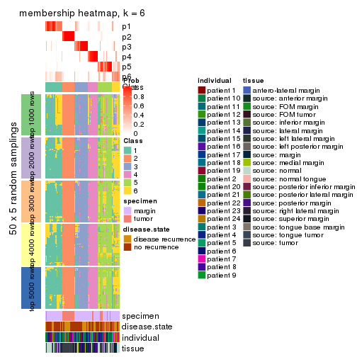
As soon as we have had the classes for columns, we can look for signatures which are significantly different between classes which can be candidate marks for certain classes. Following are the heatmaps for signatures.
Signature heatmaps where rows are scaled:
get_signatures(res, k = 2)
#> Error: The width or height of the raster image is zero, maybe you forget to turn off the
#> previous graphic device or it was corrupted. Run `dev.off()` to close it.

get_signatures(res, k = 3)
#> Error: The width or height of the raster image is zero, maybe you forget to turn off the
#> previous graphic device or it was corrupted. Run `dev.off()` to close it.

get_signatures(res, k = 4)
#> Error: The width or height of the raster image is zero, maybe you forget to turn off the
#> previous graphic device or it was corrupted. Run `dev.off()` to close it.

get_signatures(res, k = 5)
#> Error: The width or height of the raster image is zero, maybe you forget to turn off the
#> previous graphic device or it was corrupted. Run `dev.off()` to close it.

get_signatures(res, k = 6)
#> Error: The width or height of the raster image is zero, maybe you forget to turn off the
#> previous graphic device or it was corrupted. Run `dev.off()` to close it.

Signature heatmaps where rows are not scaled:
get_signatures(res, k = 2, scale_rows = FALSE)
get_signatures(res, k = 3, scale_rows = FALSE)
get_signatures(res, k = 4, scale_rows = FALSE)
get_signatures(res, k = 5, scale_rows = FALSE)
get_signatures(res, k = 6, scale_rows = FALSE)
Compare the overlap of signatures from different k:
compare_signatures(res)
get_signature() returns a data frame invisibly. TO get the list of signatures, the function
call should be assigned to a variable explicitly. In following code, if plot argument is set
to FALSE, no heatmap is plotted while only the differential analysis is performed.
# code only for demonstration
tb = get_signature(res, k = ..., plot = FALSE)
An example of the output of tb is:
#> which_row fdr mean_1 mean_2 scaled_mean_1 scaled_mean_2 km
#> 1 38 0.042760348 8.373488 9.131774 -0.5533452 0.5164555 1
#> 2 40 0.018707592 7.106213 8.469186 -0.6173731 0.5762149 1
#> 3 55 0.019134737 10.221463 11.207825 -0.6159697 0.5749050 1
#> 4 59 0.006059896 5.921854 7.869574 -0.6899429 0.6439467 1
#> 5 60 0.018055526 8.928898 10.211722 -0.6204761 0.5791110 1
#> 6 98 0.009384629 15.714769 14.887706 0.6635654 -0.6193277 2
...
The columns in tb are:
which_row: row indices corresponding to the input matrix.fdr: FDR for the differential test. mean_x: The mean value in group x.scaled_mean_x: The mean value in group x after rows are scaled.km: Row groups if k-means clustering is applied to rows.UMAP plot which shows how samples are separated.
dimension_reduction(res, k = 2, method = "UMAP")
dimension_reduction(res, k = 3, method = "UMAP")
dimension_reduction(res, k = 4, method = "UMAP")
dimension_reduction(res, k = 5, method = "UMAP")
dimension_reduction(res, k = 6, method = "UMAP")
Following heatmap shows how subgroups are split when increasing k:
collect_classes(res)
Test correlation between subgroups and known annotations. If the known annotation is numeric, one-way ANOVA test is applied, and if the known annotation is discrete, chi-squared contingency table test is applied.
test_to_known_factors(res)
#> n specimen(p) disease.state(p) individual(p) tissue(p) k
#> MAD:NMF 90 2.21e-05 0.789 0.766 3.51e-02 2
#> MAD:NMF 88 2.49e-13 0.814 0.769 4.54e-06 3
#> MAD:NMF 88 5.73e-13 0.618 0.867 1.92e-05 4
#> MAD:NMF 90 8.95e-13 0.568 0.722 4.07e-06 5
#> MAD:NMF 72 2.93e-11 0.756 0.780 2.40e-05 6
If matrix rows can be associated to genes, consider to use functional_enrichment(res,
...) to perform function enrichment for the signature genes. See this vignette for more detailed explanations.
The object with results only for a single top-value method and a single partition method can be extracted as:
res = res_list["ATC", "hclust"]
# you can also extract it by
# res = res_list["ATC:hclust"]
A summary of res and all the functions that can be applied to it:
res
#> A 'ConsensusPartition' object with k = 2, 3, 4, 5, 6.
#> On a matrix with 17783 rows and 96 columns.
#> Top rows (1000, 2000, 3000, 4000, 5000) are extracted by 'ATC' method.
#> Subgroups are detected by 'hclust' method.
#> Performed in total 1250 partitions by row resampling.
#> Best k for subgroups seems to be 3.
#>
#> Following methods can be applied to this 'ConsensusPartition' object:
#> [1] "cola_report" "collect_classes" "collect_plots"
#> [4] "collect_stats" "colnames" "compare_signatures"
#> [7] "consensus_heatmap" "dimension_reduction" "functional_enrichment"
#> [10] "get_anno_col" "get_anno" "get_classes"
#> [13] "get_consensus" "get_matrix" "get_membership"
#> [16] "get_param" "get_signatures" "get_stats"
#> [19] "is_best_k" "is_stable_k" "membership_heatmap"
#> [22] "ncol" "nrow" "plot_ecdf"
#> [25] "rownames" "select_partition_number" "show"
#> [28] "suggest_best_k" "test_to_known_factors"
collect_plots() function collects all the plots made from res for all k (number of partitions)
into one single page to provide an easy and fast comparison between different k.
collect_plots(res)

The plots are:
k and the heatmap of
predicted classes for each k.k.k.k.All the plots in panels can be made by individual functions and they are plotted later in this section.
select_partition_number() produces several plots showing different
statistics for choosing “optimized” k. There are following statistics:
k;k, the area increased is defined as \(A_k - A_{k-1}\).The detailed explanations of these statistics can be found in the cola vignette.
Generally speaking, lower PAC score, higher mean silhouette score or higher
concordance corresponds to better partition. Rand index and Jaccard index
measure how similar the current partition is compared to partition with k-1.
If they are too similar, we won't accept k is better than k-1.
select_partition_number(res)
The numeric values for all these statistics can be obtained by get_stats().
get_stats(res)
#> k 1-PAC mean_silhouette concordance area_increased Rand Jaccard
#> 2 2 0.404 0.841 0.859 0.3416 0.705 0.705
#> 3 3 0.705 0.895 0.939 0.6247 0.769 0.672
#> 4 4 0.646 0.723 0.851 0.2697 0.790 0.558
#> 5 5 0.681 0.702 0.796 0.0716 0.879 0.604
#> 6 6 0.684 0.707 0.789 0.0299 0.989 0.954
suggest_best_k() suggests the best \(k\) based on these statistics. The rules are as follows:
suggest_best_k(res)
#> [1] 3
Following shows the table of the partitions (You need to click the show/hide
code output link to see it). The membership matrix (columns with name p*)
is inferred by
clue::cl_consensus()
function with the SE method. Basically the value in the membership matrix
represents the probability to belong to a certain group. The finall class
label for an item is determined with the group with highest probability it
belongs to.
In get_classes() function, the entropy is calculated from the membership
matrix and the silhouette score is calculated from the consensus matrix.
cbind(get_classes(res, k = 2), get_membership(res, k = 2))
#> class entropy silhouette p1 p2
#> GSM771247 1 0.204 0.831 0.968 0.032
#> GSM771246 1 0.224 0.832 0.964 0.036
#> GSM771245 1 0.000 0.820 1.000 0.000
#> GSM771169 1 0.373 0.781 0.928 0.072
#> GSM771171 1 0.373 0.781 0.928 0.072
#> GSM771175 1 0.827 0.797 0.740 0.260
#> GSM771172 1 0.224 0.832 0.964 0.036
#> GSM771174 1 0.827 0.797 0.740 0.260
#> GSM771178 1 0.358 0.783 0.932 0.068
#> GSM771176 1 0.000 0.820 1.000 0.000
#> GSM771181 1 0.373 0.781 0.928 0.072
#> GSM771179 1 0.714 0.841 0.804 0.196
#> GSM771184 1 0.430 0.841 0.912 0.088
#> GSM771182 1 0.738 0.838 0.792 0.208
#> GSM771185 1 0.738 0.838 0.792 0.208
#> GSM771186 1 0.781 0.823 0.768 0.232
#> GSM771188 1 0.000 0.820 1.000 0.000
#> GSM771193 1 0.373 0.781 0.928 0.072
#> GSM771192 1 0.584 0.841 0.860 0.140
#> GSM771189 1 0.827 0.797 0.740 0.260
#> GSM771194 1 0.000 0.820 1.000 0.000
#> GSM771191 1 0.730 0.839 0.796 0.204
#> GSM771202 1 0.224 0.832 0.964 0.036
#> GSM771200 1 0.224 0.832 0.964 0.036
#> GSM771206 1 0.730 0.839 0.796 0.204
#> GSM771208 1 0.745 0.836 0.788 0.212
#> GSM771207 1 0.373 0.781 0.928 0.072
#> GSM771209 1 0.730 0.839 0.796 0.204
#> GSM771211 1 0.204 0.831 0.968 0.032
#> GSM771212 1 0.795 0.816 0.760 0.240
#> GSM771214 1 0.795 0.816 0.760 0.240
#> GSM771213 1 0.795 0.816 0.760 0.240
#> GSM771216 1 0.795 0.816 0.760 0.240
#> GSM771217 1 0.760 0.831 0.780 0.220
#> GSM771219 1 0.373 0.781 0.928 0.072
#> GSM771218 1 0.644 0.844 0.836 0.164
#> GSM771222 1 0.430 0.841 0.912 0.088
#> GSM771220 1 0.373 0.781 0.928 0.072
#> GSM771226 1 0.373 0.781 0.928 0.072
#> GSM771223 1 0.671 0.844 0.824 0.176
#> GSM771225 1 0.949 0.636 0.632 0.368
#> GSM771232 1 0.753 0.834 0.784 0.216
#> GSM771235 1 0.343 0.786 0.936 0.064
#> GSM771234 1 0.373 0.781 0.928 0.072
#> GSM771242 1 0.373 0.781 0.928 0.072
#> GSM771239 1 0.753 0.834 0.784 0.216
#> GSM771240 1 0.000 0.820 1.000 0.000
#> GSM771241 1 0.373 0.781 0.928 0.072
#> GSM771197 1 0.373 0.781 0.928 0.072
#> GSM771195 1 0.738 0.838 0.792 0.208
#> GSM771198 1 0.373 0.781 0.928 0.072
#> GSM771199 1 0.373 0.781 0.928 0.072
#> GSM771204 1 0.671 0.844 0.824 0.176
#> GSM771205 1 0.730 0.839 0.796 0.204
#> GSM771229 1 0.224 0.832 0.964 0.036
#> GSM771227 1 0.738 0.838 0.792 0.208
#> GSM771230 1 0.738 0.838 0.792 0.208
#> GSM771231 1 0.738 0.838 0.792 0.208
#> GSM771238 1 0.000 0.820 1.000 0.000
#> GSM771236 1 0.714 0.841 0.804 0.196
#> GSM771154 1 0.730 0.839 0.796 0.204
#> GSM771152 1 0.781 0.823 0.768 0.232
#> GSM771156 1 0.738 0.838 0.792 0.208
#> GSM771157 1 0.730 0.839 0.796 0.204
#> GSM771155 1 0.745 0.836 0.788 0.212
#> GSM771160 1 0.373 0.781 0.928 0.072
#> GSM771161 1 0.260 0.797 0.956 0.044
#> GSM771159 1 0.949 0.636 0.632 0.368
#> GSM771165 1 0.738 0.838 0.792 0.208
#> GSM771166 1 0.141 0.827 0.980 0.020
#> GSM771167 1 0.738 0.838 0.792 0.208
#> GSM771168 1 0.224 0.832 0.964 0.036
#> GSM771163 1 0.738 0.838 0.792 0.208
#> GSM771244 2 0.373 0.992 0.072 0.928
#> GSM771170 1 0.714 0.841 0.804 0.196
#> GSM771173 1 0.900 0.726 0.684 0.316
#> GSM771177 2 0.388 0.989 0.076 0.924
#> GSM771180 1 0.900 0.726 0.684 0.316
#> GSM771183 2 0.373 0.992 0.072 0.928
#> GSM771187 2 0.373 0.992 0.072 0.928
#> GSM771190 2 0.416 0.981 0.084 0.916
#> GSM771201 2 0.574 0.904 0.136 0.864
#> GSM771210 1 0.833 0.793 0.736 0.264
#> GSM771215 2 0.373 0.992 0.072 0.928
#> GSM771221 2 0.373 0.992 0.072 0.928
#> GSM771224 1 0.469 0.837 0.900 0.100
#> GSM771233 2 0.373 0.992 0.072 0.928
#> GSM771243 2 0.373 0.992 0.072 0.928
#> GSM771196 2 0.373 0.992 0.072 0.928
#> GSM771203 2 0.373 0.992 0.072 0.928
#> GSM771228 2 0.373 0.992 0.072 0.928
#> GSM771237 2 0.416 0.981 0.084 0.916
#> GSM771153 2 0.373 0.992 0.072 0.928
#> GSM771158 2 0.373 0.992 0.072 0.928
#> GSM771162 1 0.900 0.726 0.684 0.316
#> GSM771164 2 0.373 0.992 0.072 0.928
cbind(get_classes(res, k = 3), get_membership(res, k = 3))
#> class entropy silhouette p1 p2 p3
#> GSM771247 1 0.4178 0.833 0.828 0.000 0.172
#> GSM771246 1 0.4121 0.836 0.832 0.000 0.168
#> GSM771245 1 0.4702 0.797 0.788 0.000 0.212
#> GSM771169 3 0.0237 0.970 0.004 0.000 0.996
#> GSM771171 3 0.0000 0.974 0.000 0.000 1.000
#> GSM771175 1 0.1964 0.892 0.944 0.056 0.000
#> GSM771172 1 0.4121 0.836 0.832 0.000 0.168
#> GSM771174 1 0.1964 0.892 0.944 0.056 0.000
#> GSM771178 3 0.0747 0.956 0.016 0.000 0.984
#> GSM771176 1 0.4702 0.797 0.788 0.000 0.212
#> GSM771181 3 0.0000 0.974 0.000 0.000 1.000
#> GSM771179 1 0.0424 0.909 0.992 0.000 0.008
#> GSM771184 1 0.3340 0.867 0.880 0.000 0.120
#> GSM771182 1 0.0661 0.910 0.988 0.008 0.004
#> GSM771185 1 0.0661 0.910 0.988 0.008 0.004
#> GSM771186 1 0.1163 0.905 0.972 0.028 0.000
#> GSM771188 1 0.4702 0.797 0.788 0.000 0.212
#> GSM771193 3 0.0000 0.974 0.000 0.000 1.000
#> GSM771192 1 0.3670 0.880 0.888 0.020 0.092
#> GSM771189 1 0.1964 0.892 0.944 0.056 0.000
#> GSM771194 1 0.4702 0.797 0.788 0.000 0.212
#> GSM771191 1 0.0000 0.909 1.000 0.000 0.000
#> GSM771202 1 0.4121 0.836 0.832 0.000 0.168
#> GSM771200 1 0.4121 0.836 0.832 0.000 0.168
#> GSM771206 1 0.0000 0.909 1.000 0.000 0.000
#> GSM771208 1 0.0424 0.909 0.992 0.008 0.000
#> GSM771207 3 0.0000 0.974 0.000 0.000 1.000
#> GSM771209 1 0.0000 0.909 1.000 0.000 0.000
#> GSM771211 1 0.4178 0.833 0.828 0.000 0.172
#> GSM771212 1 0.1411 0.901 0.964 0.036 0.000
#> GSM771214 1 0.1411 0.901 0.964 0.036 0.000
#> GSM771213 1 0.1411 0.901 0.964 0.036 0.000
#> GSM771216 1 0.1411 0.901 0.964 0.036 0.000
#> GSM771217 1 0.0747 0.908 0.984 0.016 0.000
#> GSM771219 3 0.0000 0.974 0.000 0.000 1.000
#> GSM771218 1 0.1529 0.902 0.960 0.000 0.040
#> GSM771222 1 0.3340 0.867 0.880 0.000 0.120
#> GSM771220 3 0.0237 0.970 0.004 0.000 0.996
#> GSM771226 3 0.0000 0.974 0.000 0.000 1.000
#> GSM771223 1 0.1163 0.906 0.972 0.000 0.028
#> GSM771225 1 0.4178 0.791 0.828 0.172 0.000
#> GSM771232 1 0.0983 0.909 0.980 0.016 0.004
#> GSM771235 3 0.5138 0.592 0.252 0.000 0.748
#> GSM771234 3 0.0000 0.974 0.000 0.000 1.000
#> GSM771242 3 0.0000 0.974 0.000 0.000 1.000
#> GSM771239 1 0.0983 0.909 0.980 0.016 0.004
#> GSM771240 1 0.4702 0.797 0.788 0.000 0.212
#> GSM771241 3 0.0000 0.974 0.000 0.000 1.000
#> GSM771197 3 0.0000 0.974 0.000 0.000 1.000
#> GSM771195 1 0.0661 0.910 0.988 0.008 0.004
#> GSM771198 3 0.0000 0.974 0.000 0.000 1.000
#> GSM771199 3 0.0000 0.974 0.000 0.000 1.000
#> GSM771204 1 0.1163 0.906 0.972 0.000 0.028
#> GSM771205 1 0.0000 0.909 1.000 0.000 0.000
#> GSM771229 1 0.4121 0.836 0.832 0.000 0.168
#> GSM771227 1 0.0661 0.910 0.988 0.008 0.004
#> GSM771230 1 0.0661 0.910 0.988 0.008 0.004
#> GSM771231 1 0.0661 0.910 0.988 0.008 0.004
#> GSM771238 1 0.4702 0.797 0.788 0.000 0.212
#> GSM771236 1 0.0424 0.909 0.992 0.000 0.008
#> GSM771154 1 0.0000 0.909 1.000 0.000 0.000
#> GSM771152 1 0.1163 0.905 0.972 0.028 0.000
#> GSM771156 1 0.0661 0.910 0.988 0.008 0.004
#> GSM771157 1 0.0000 0.909 1.000 0.000 0.000
#> GSM771155 1 0.0424 0.909 0.992 0.008 0.000
#> GSM771160 3 0.0000 0.974 0.000 0.000 1.000
#> GSM771161 1 0.5178 0.743 0.744 0.000 0.256
#> GSM771159 1 0.4178 0.791 0.828 0.172 0.000
#> GSM771165 1 0.0661 0.910 0.988 0.008 0.004
#> GSM771166 1 0.4399 0.820 0.812 0.000 0.188
#> GSM771167 1 0.0661 0.910 0.988 0.008 0.004
#> GSM771168 1 0.4121 0.836 0.832 0.000 0.168
#> GSM771163 1 0.0661 0.910 0.988 0.008 0.004
#> GSM771244 2 0.0000 0.979 0.000 1.000 0.000
#> GSM771170 1 0.0424 0.909 0.992 0.000 0.008
#> GSM771173 1 0.3340 0.847 0.880 0.120 0.000
#> GSM771177 2 0.0424 0.974 0.008 0.992 0.000
#> GSM771180 1 0.3340 0.847 0.880 0.120 0.000
#> GSM771183 2 0.0000 0.979 0.000 1.000 0.000
#> GSM771187 2 0.0000 0.979 0.000 1.000 0.000
#> GSM771190 2 0.1643 0.934 0.044 0.956 0.000
#> GSM771201 2 0.3619 0.808 0.136 0.864 0.000
#> GSM771210 1 0.2066 0.890 0.940 0.060 0.000
#> GSM771215 2 0.0000 0.979 0.000 1.000 0.000
#> GSM771221 2 0.0000 0.979 0.000 1.000 0.000
#> GSM771224 1 0.6305 0.134 0.516 0.000 0.484
#> GSM771233 2 0.0000 0.979 0.000 1.000 0.000
#> GSM771243 2 0.0000 0.979 0.000 1.000 0.000
#> GSM771196 2 0.0000 0.979 0.000 1.000 0.000
#> GSM771203 2 0.0000 0.979 0.000 1.000 0.000
#> GSM771228 2 0.0000 0.979 0.000 1.000 0.000
#> GSM771237 2 0.1643 0.934 0.044 0.956 0.000
#> GSM771153 2 0.0000 0.979 0.000 1.000 0.000
#> GSM771158 2 0.0000 0.979 0.000 1.000 0.000
#> GSM771162 1 0.3340 0.847 0.880 0.120 0.000
#> GSM771164 2 0.0000 0.979 0.000 1.000 0.000
cbind(get_classes(res, k = 4), get_membership(res, k = 4))
#> class entropy silhouette p1 p2 p3 p4
#> GSM771247 4 0.2408 0.735 0.104 0.000 0.000 0.896
#> GSM771246 4 0.2760 0.741 0.128 0.000 0.000 0.872
#> GSM771245 4 0.0000 0.682 0.000 0.000 0.000 1.000
#> GSM771169 3 0.0592 0.960 0.000 0.000 0.984 0.016
#> GSM771171 3 0.0000 0.969 0.000 0.000 1.000 0.000
#> GSM771175 1 0.0188 0.685 0.996 0.000 0.000 0.004
#> GSM771172 4 0.3266 0.727 0.168 0.000 0.000 0.832
#> GSM771174 1 0.0188 0.685 0.996 0.000 0.000 0.004
#> GSM771178 3 0.2011 0.904 0.000 0.000 0.920 0.080
#> GSM771176 4 0.0000 0.682 0.000 0.000 0.000 1.000
#> GSM771181 3 0.0000 0.969 0.000 0.000 1.000 0.000
#> GSM771179 4 0.4679 0.599 0.352 0.000 0.000 0.648
#> GSM771184 4 0.3873 0.689 0.228 0.000 0.000 0.772
#> GSM771182 1 0.3569 0.696 0.804 0.000 0.000 0.196
#> GSM771185 1 0.3569 0.696 0.804 0.000 0.000 0.196
#> GSM771186 1 0.2760 0.705 0.872 0.000 0.000 0.128
#> GSM771188 4 0.0000 0.682 0.000 0.000 0.000 1.000
#> GSM771193 3 0.0000 0.969 0.000 0.000 1.000 0.000
#> GSM771192 1 0.4907 0.294 0.580 0.000 0.000 0.420
#> GSM771189 1 0.0188 0.685 0.996 0.000 0.000 0.004
#> GSM771194 4 0.0000 0.682 0.000 0.000 0.000 1.000
#> GSM771191 4 0.4713 0.584 0.360 0.000 0.000 0.640
#> GSM771202 4 0.2760 0.741 0.128 0.000 0.000 0.872
#> GSM771200 4 0.2760 0.741 0.128 0.000 0.000 0.872
#> GSM771206 4 0.4697 0.591 0.356 0.000 0.000 0.644
#> GSM771208 4 0.4941 0.436 0.436 0.000 0.000 0.564
#> GSM771207 3 0.0336 0.965 0.000 0.000 0.992 0.008
#> GSM771209 4 0.4605 0.617 0.336 0.000 0.000 0.664
#> GSM771211 4 0.2408 0.735 0.104 0.000 0.000 0.896
#> GSM771212 1 0.4679 0.287 0.648 0.000 0.000 0.352
#> GSM771214 1 0.4679 0.287 0.648 0.000 0.000 0.352
#> GSM771213 1 0.4679 0.287 0.648 0.000 0.000 0.352
#> GSM771216 1 0.4679 0.287 0.648 0.000 0.000 0.352
#> GSM771217 1 0.4898 0.145 0.584 0.000 0.000 0.416
#> GSM771219 3 0.0000 0.969 0.000 0.000 1.000 0.000
#> GSM771218 4 0.4304 0.670 0.284 0.000 0.000 0.716
#> GSM771222 4 0.3486 0.720 0.188 0.000 0.000 0.812
#> GSM771220 3 0.0592 0.960 0.000 0.000 0.984 0.016
#> GSM771226 3 0.0000 0.969 0.000 0.000 1.000 0.000
#> GSM771223 4 0.4164 0.682 0.264 0.000 0.000 0.736
#> GSM771225 1 0.2773 0.629 0.880 0.116 0.000 0.004
#> GSM771232 1 0.4898 0.212 0.584 0.000 0.000 0.416
#> GSM771235 3 0.4855 0.558 0.004 0.000 0.644 0.352
#> GSM771234 3 0.0000 0.969 0.000 0.000 1.000 0.000
#> GSM771242 3 0.0000 0.969 0.000 0.000 1.000 0.000
#> GSM771239 1 0.4898 0.212 0.584 0.000 0.000 0.416
#> GSM771240 4 0.0000 0.682 0.000 0.000 0.000 1.000
#> GSM771241 3 0.0000 0.969 0.000 0.000 1.000 0.000
#> GSM771197 3 0.0000 0.969 0.000 0.000 1.000 0.000
#> GSM771195 1 0.3873 0.687 0.772 0.000 0.000 0.228
#> GSM771198 3 0.0000 0.969 0.000 0.000 1.000 0.000
#> GSM771199 3 0.0000 0.969 0.000 0.000 1.000 0.000
#> GSM771204 4 0.4164 0.682 0.264 0.000 0.000 0.736
#> GSM771205 4 0.4605 0.617 0.336 0.000 0.000 0.664
#> GSM771229 4 0.2760 0.741 0.128 0.000 0.000 0.872
#> GSM771227 1 0.3873 0.687 0.772 0.000 0.000 0.228
#> GSM771230 1 0.3610 0.694 0.800 0.000 0.000 0.200
#> GSM771231 1 0.3873 0.687 0.772 0.000 0.000 0.228
#> GSM771238 4 0.0000 0.682 0.000 0.000 0.000 1.000
#> GSM771236 4 0.4933 0.355 0.432 0.000 0.000 0.568
#> GSM771154 4 0.4713 0.584 0.360 0.000 0.000 0.640
#> GSM771152 1 0.2760 0.705 0.872 0.000 0.000 0.128
#> GSM771156 1 0.3873 0.687 0.772 0.000 0.000 0.228
#> GSM771157 4 0.4713 0.584 0.360 0.000 0.000 0.640
#> GSM771155 4 0.4941 0.436 0.436 0.000 0.000 0.564
#> GSM771160 3 0.0000 0.969 0.000 0.000 1.000 0.000
#> GSM771161 4 0.1637 0.637 0.000 0.000 0.060 0.940
#> GSM771159 1 0.2773 0.629 0.880 0.116 0.000 0.004
#> GSM771165 1 0.3610 0.694 0.800 0.000 0.000 0.200
#> GSM771166 4 0.2760 0.705 0.128 0.000 0.000 0.872
#> GSM771167 1 0.3873 0.687 0.772 0.000 0.000 0.228
#> GSM771168 4 0.2760 0.741 0.128 0.000 0.000 0.872
#> GSM771163 1 0.3873 0.687 0.772 0.000 0.000 0.228
#> GSM771244 2 0.0000 0.982 0.000 1.000 0.000 0.000
#> GSM771170 4 0.4933 0.355 0.432 0.000 0.000 0.568
#> GSM771173 1 0.1716 0.655 0.936 0.064 0.000 0.000
#> GSM771177 2 0.0921 0.967 0.028 0.972 0.000 0.000
#> GSM771180 1 0.1716 0.655 0.936 0.064 0.000 0.000
#> GSM771183 2 0.0000 0.982 0.000 1.000 0.000 0.000
#> GSM771187 2 0.0000 0.982 0.000 1.000 0.000 0.000
#> GSM771190 2 0.1557 0.948 0.056 0.944 0.000 0.000
#> GSM771201 2 0.3024 0.850 0.148 0.852 0.000 0.000
#> GSM771210 1 0.2654 0.652 0.888 0.004 0.000 0.108
#> GSM771215 2 0.0000 0.982 0.000 1.000 0.000 0.000
#> GSM771221 2 0.0000 0.982 0.000 1.000 0.000 0.000
#> GSM771224 4 0.7013 0.160 0.128 0.000 0.356 0.516
#> GSM771233 2 0.0000 0.982 0.000 1.000 0.000 0.000
#> GSM771243 2 0.0000 0.982 0.000 1.000 0.000 0.000
#> GSM771196 2 0.0000 0.982 0.000 1.000 0.000 0.000
#> GSM771203 2 0.0000 0.982 0.000 1.000 0.000 0.000
#> GSM771228 2 0.0000 0.982 0.000 1.000 0.000 0.000
#> GSM771237 2 0.1557 0.948 0.056 0.944 0.000 0.000
#> GSM771153 2 0.0000 0.982 0.000 1.000 0.000 0.000
#> GSM771158 2 0.0000 0.982 0.000 1.000 0.000 0.000
#> GSM771162 1 0.1902 0.658 0.932 0.064 0.000 0.004
#> GSM771164 2 0.0000 0.982 0.000 1.000 0.000 0.000
cbind(get_classes(res, k = 5), get_membership(res, k = 5))
#> class entropy silhouette p1 p2 p3 p4 p5
#> GSM771247 1 0.3336 0.4429 0.772 0.000 0.000 0.228 0.000
#> GSM771246 1 0.3039 0.5158 0.808 0.000 0.000 0.192 0.000
#> GSM771245 4 0.3876 0.9181 0.316 0.000 0.000 0.684 0.000
#> GSM771169 3 0.0566 0.9180 0.004 0.000 0.984 0.012 0.000
#> GSM771171 3 0.0000 0.9270 0.000 0.000 1.000 0.000 0.000
#> GSM771175 5 0.6307 0.5545 0.244 0.000 0.000 0.224 0.532
#> GSM771172 1 0.4134 0.5044 0.760 0.000 0.000 0.196 0.044
#> GSM771174 5 0.6307 0.5545 0.244 0.000 0.000 0.224 0.532
#> GSM771178 3 0.1894 0.8559 0.008 0.000 0.920 0.072 0.000
#> GSM771176 4 0.4219 0.8065 0.416 0.000 0.000 0.584 0.000
#> GSM771181 3 0.0000 0.9270 0.000 0.000 1.000 0.000 0.000
#> GSM771179 1 0.1818 0.6670 0.932 0.000 0.000 0.024 0.044
#> GSM771184 1 0.4412 0.5204 0.756 0.000 0.000 0.164 0.080
#> GSM771182 5 0.4599 0.6917 0.356 0.000 0.000 0.020 0.624
#> GSM771185 5 0.4599 0.6917 0.356 0.000 0.000 0.020 0.624
#> GSM771186 5 0.4642 0.6926 0.308 0.000 0.000 0.032 0.660
#> GSM771188 4 0.4219 0.8065 0.416 0.000 0.000 0.584 0.000
#> GSM771193 3 0.0000 0.9270 0.000 0.000 1.000 0.000 0.000
#> GSM771192 5 0.6242 0.3138 0.408 0.000 0.000 0.144 0.448
#> GSM771189 5 0.6307 0.5545 0.244 0.000 0.000 0.224 0.532
#> GSM771194 4 0.3876 0.9181 0.316 0.000 0.000 0.684 0.000
#> GSM771191 1 0.1469 0.6765 0.948 0.000 0.000 0.036 0.016
#> GSM771202 1 0.3039 0.5158 0.808 0.000 0.000 0.192 0.000
#> GSM771200 1 0.3039 0.5158 0.808 0.000 0.000 0.192 0.000
#> GSM771206 1 0.1121 0.6766 0.956 0.000 0.000 0.044 0.000
#> GSM771208 1 0.3267 0.6335 0.844 0.000 0.000 0.044 0.112
#> GSM771207 3 0.0290 0.9227 0.000 0.000 0.992 0.008 0.000
#> GSM771209 1 0.0703 0.6789 0.976 0.000 0.000 0.024 0.000
#> GSM771211 1 0.3336 0.4429 0.772 0.000 0.000 0.228 0.000
#> GSM771212 1 0.4437 0.4462 0.664 0.000 0.000 0.316 0.020
#> GSM771214 1 0.4522 0.4436 0.660 0.000 0.000 0.316 0.024
#> GSM771213 1 0.4522 0.4436 0.660 0.000 0.000 0.316 0.024
#> GSM771216 1 0.4522 0.4436 0.660 0.000 0.000 0.316 0.024
#> GSM771217 1 0.3885 0.5160 0.724 0.000 0.000 0.268 0.008
#> GSM771219 3 0.0000 0.9270 0.000 0.000 1.000 0.000 0.000
#> GSM771218 1 0.1410 0.6706 0.940 0.000 0.000 0.060 0.000
#> GSM771222 1 0.3731 0.5567 0.800 0.000 0.000 0.160 0.040
#> GSM771220 3 0.0566 0.9180 0.004 0.000 0.984 0.012 0.000
#> GSM771226 3 0.0000 0.9270 0.000 0.000 1.000 0.000 0.000
#> GSM771223 1 0.1410 0.6627 0.940 0.000 0.000 0.060 0.000
#> GSM771225 5 0.1740 0.5487 0.012 0.056 0.000 0.000 0.932
#> GSM771232 1 0.5107 0.0615 0.596 0.000 0.000 0.048 0.356
#> GSM771235 3 0.5689 0.3920 0.160 0.000 0.644 0.192 0.004
#> GSM771234 3 0.0000 0.9270 0.000 0.000 1.000 0.000 0.000
#> GSM771242 3 0.0000 0.9270 0.000 0.000 1.000 0.000 0.000
#> GSM771239 1 0.5107 0.0615 0.596 0.000 0.000 0.048 0.356
#> GSM771240 4 0.3876 0.9181 0.316 0.000 0.000 0.684 0.000
#> GSM771241 3 0.0000 0.9270 0.000 0.000 1.000 0.000 0.000
#> GSM771197 3 0.0000 0.9270 0.000 0.000 1.000 0.000 0.000
#> GSM771195 5 0.4886 0.6832 0.372 0.000 0.000 0.032 0.596
#> GSM771198 3 0.0000 0.9270 0.000 0.000 1.000 0.000 0.000
#> GSM771199 3 0.0000 0.9270 0.000 0.000 1.000 0.000 0.000
#> GSM771204 1 0.1410 0.6627 0.940 0.000 0.000 0.060 0.000
#> GSM771205 1 0.0703 0.6789 0.976 0.000 0.000 0.024 0.000
#> GSM771229 1 0.3039 0.5158 0.808 0.000 0.000 0.192 0.000
#> GSM771227 5 0.4886 0.6832 0.372 0.000 0.000 0.032 0.596
#> GSM771230 5 0.4626 0.6892 0.364 0.000 0.000 0.020 0.616
#> GSM771231 5 0.4886 0.6832 0.372 0.000 0.000 0.032 0.596
#> GSM771238 4 0.3876 0.9181 0.316 0.000 0.000 0.684 0.000
#> GSM771236 1 0.3897 0.5255 0.768 0.000 0.000 0.028 0.204
#> GSM771154 1 0.1197 0.6757 0.952 0.000 0.000 0.048 0.000
#> GSM771152 5 0.4642 0.6926 0.308 0.000 0.000 0.032 0.660
#> GSM771156 5 0.4886 0.6832 0.372 0.000 0.000 0.032 0.596
#> GSM771157 1 0.1197 0.6757 0.952 0.000 0.000 0.048 0.000
#> GSM771155 1 0.3242 0.6326 0.844 0.000 0.000 0.040 0.116
#> GSM771160 3 0.0000 0.9270 0.000 0.000 1.000 0.000 0.000
#> GSM771161 4 0.4924 0.8349 0.272 0.000 0.060 0.668 0.000
#> GSM771159 5 0.1740 0.5487 0.012 0.056 0.000 0.000 0.932
#> GSM771165 5 0.4626 0.6892 0.364 0.000 0.000 0.020 0.616
#> GSM771166 1 0.4817 0.3144 0.680 0.000 0.000 0.264 0.056
#> GSM771167 5 0.4886 0.6832 0.372 0.000 0.000 0.032 0.596
#> GSM771168 1 0.3039 0.5158 0.808 0.000 0.000 0.192 0.000
#> GSM771163 5 0.4886 0.6832 0.372 0.000 0.000 0.032 0.596
#> GSM771244 2 0.0000 0.9748 0.000 1.000 0.000 0.000 0.000
#> GSM771170 1 0.3897 0.5255 0.768 0.000 0.000 0.028 0.204
#> GSM771173 5 0.0000 0.5794 0.000 0.000 0.000 0.000 1.000
#> GSM771177 2 0.1043 0.9526 0.000 0.960 0.000 0.000 0.040
#> GSM771180 5 0.0000 0.5794 0.000 0.000 0.000 0.000 1.000
#> GSM771183 2 0.0000 0.9748 0.000 1.000 0.000 0.000 0.000
#> GSM771187 2 0.0000 0.9748 0.000 1.000 0.000 0.000 0.000
#> GSM771190 2 0.2074 0.9099 0.000 0.896 0.000 0.000 0.104
#> GSM771201 2 0.3109 0.8201 0.000 0.800 0.000 0.000 0.200
#> GSM771210 5 0.6621 0.3785 0.348 0.000 0.000 0.224 0.428
#> GSM771215 2 0.0000 0.9748 0.000 1.000 0.000 0.000 0.000
#> GSM771221 2 0.0000 0.9748 0.000 1.000 0.000 0.000 0.000
#> GSM771224 3 0.7826 -0.4083 0.348 0.000 0.356 0.224 0.072
#> GSM771233 2 0.0000 0.9748 0.000 1.000 0.000 0.000 0.000
#> GSM771243 2 0.0000 0.9748 0.000 1.000 0.000 0.000 0.000
#> GSM771196 2 0.0000 0.9748 0.000 1.000 0.000 0.000 0.000
#> GSM771203 2 0.0000 0.9748 0.000 1.000 0.000 0.000 0.000
#> GSM771228 2 0.0000 0.9748 0.000 1.000 0.000 0.000 0.000
#> GSM771237 2 0.2074 0.9099 0.000 0.896 0.000 0.000 0.104
#> GSM771153 2 0.0000 0.9748 0.000 1.000 0.000 0.000 0.000
#> GSM771158 2 0.0000 0.9748 0.000 1.000 0.000 0.000 0.000
#> GSM771162 5 0.0162 0.5796 0.000 0.000 0.000 0.004 0.996
#> GSM771164 2 0.0000 0.9748 0.000 1.000 0.000 0.000 0.000
cbind(get_classes(res, k = 6), get_membership(res, k = 6))
#> class entropy silhouette p1 p2 p3 p4 p5 p6
#> GSM771247 1 0.2882 0.5900 0.812 0.000 0.000 0.180 0.000 NA
#> GSM771246 1 0.2553 0.6300 0.848 0.000 0.000 0.144 0.000 NA
#> GSM771245 4 0.2219 0.8660 0.136 0.000 0.000 0.864 0.000 NA
#> GSM771169 3 0.0748 0.9153 0.004 0.000 0.976 0.004 0.000 NA
#> GSM771171 3 0.0260 0.9209 0.000 0.000 0.992 0.000 0.000 NA
#> GSM771175 5 0.5600 0.5193 0.160 0.000 0.000 0.000 0.508 NA
#> GSM771172 1 0.3621 0.6264 0.796 0.000 0.000 0.148 0.048 NA
#> GSM771174 5 0.5600 0.5193 0.160 0.000 0.000 0.000 0.508 NA
#> GSM771178 3 0.2133 0.8587 0.020 0.000 0.912 0.052 0.000 NA
#> GSM771176 4 0.3861 0.6504 0.352 0.000 0.000 0.640 0.000 NA
#> GSM771181 3 0.1714 0.9148 0.000 0.000 0.908 0.000 0.000 NA
#> GSM771179 1 0.2074 0.6917 0.912 0.000 0.000 0.004 0.048 NA
#> GSM771184 1 0.4266 0.6220 0.776 0.000 0.000 0.088 0.096 NA
#> GSM771182 5 0.3892 0.6865 0.352 0.000 0.000 0.004 0.640 NA
#> GSM771185 5 0.3892 0.6865 0.352 0.000 0.000 0.004 0.640 NA
#> GSM771186 5 0.4247 0.6866 0.296 0.000 0.000 0.000 0.664 NA
#> GSM771188 4 0.3861 0.6504 0.352 0.000 0.000 0.640 0.000 NA
#> GSM771193 3 0.0260 0.9209 0.000 0.000 0.992 0.000 0.000 NA
#> GSM771192 5 0.6752 0.4920 0.308 0.000 0.000 0.160 0.456 NA
#> GSM771189 5 0.5600 0.5193 0.160 0.000 0.000 0.000 0.508 NA
#> GSM771194 4 0.2219 0.8660 0.136 0.000 0.000 0.864 0.000 NA
#> GSM771191 1 0.1951 0.7037 0.908 0.000 0.000 0.000 0.016 NA
#> GSM771202 1 0.2553 0.6300 0.848 0.000 0.000 0.144 0.000 NA
#> GSM771200 1 0.2553 0.6300 0.848 0.000 0.000 0.144 0.000 NA
#> GSM771206 1 0.1610 0.7047 0.916 0.000 0.000 0.000 0.000 NA
#> GSM771208 1 0.3685 0.6302 0.796 0.000 0.000 0.004 0.120 NA
#> GSM771207 3 0.0508 0.9186 0.000 0.000 0.984 0.004 0.000 NA
#> GSM771209 1 0.1327 0.7080 0.936 0.000 0.000 0.000 0.000 NA
#> GSM771211 1 0.2882 0.5900 0.812 0.000 0.000 0.180 0.000 NA
#> GSM771212 1 0.3817 0.4513 0.568 0.000 0.000 0.000 0.000 NA
#> GSM771214 1 0.3823 0.4492 0.564 0.000 0.000 0.000 0.000 NA
#> GSM771213 1 0.3823 0.4492 0.564 0.000 0.000 0.000 0.000 NA
#> GSM771216 1 0.3823 0.4492 0.564 0.000 0.000 0.000 0.000 NA
#> GSM771217 1 0.3607 0.5252 0.652 0.000 0.000 0.000 0.000 NA
#> GSM771219 3 0.0260 0.9209 0.000 0.000 0.992 0.000 0.000 NA
#> GSM771218 1 0.1151 0.7064 0.956 0.000 0.000 0.012 0.000 NA
#> GSM771222 1 0.3679 0.6470 0.820 0.000 0.000 0.088 0.052 NA
#> GSM771220 3 0.0748 0.9153 0.004 0.000 0.976 0.004 0.000 NA
#> GSM771226 3 0.1714 0.9148 0.000 0.000 0.908 0.000 0.000 NA
#> GSM771223 1 0.2664 0.6589 0.848 0.000 0.000 0.136 0.000 NA
#> GSM771225 5 0.1858 0.5253 0.004 0.000 0.000 0.000 0.904 NA
#> GSM771232 1 0.4743 0.0738 0.584 0.000 0.000 0.004 0.364 NA
#> GSM771235 3 0.6790 0.2947 0.052 0.000 0.484 0.212 0.008 NA
#> GSM771234 3 0.1714 0.9148 0.000 0.000 0.908 0.000 0.000 NA
#> GSM771242 3 0.0000 0.9220 0.000 0.000 1.000 0.000 0.000 NA
#> GSM771239 1 0.4743 0.0738 0.584 0.000 0.000 0.004 0.364 NA
#> GSM771240 4 0.2219 0.8660 0.136 0.000 0.000 0.864 0.000 NA
#> GSM771241 3 0.0000 0.9220 0.000 0.000 1.000 0.000 0.000 NA
#> GSM771197 3 0.1714 0.9148 0.000 0.000 0.908 0.000 0.000 NA
#> GSM771195 5 0.4315 0.6831 0.364 0.000 0.000 0.008 0.612 NA
#> GSM771198 3 0.1714 0.9148 0.000 0.000 0.908 0.000 0.000 NA
#> GSM771199 3 0.1714 0.9148 0.000 0.000 0.908 0.000 0.000 NA
#> GSM771204 1 0.2664 0.6589 0.848 0.000 0.000 0.136 0.000 NA
#> GSM771205 1 0.1327 0.7080 0.936 0.000 0.000 0.000 0.000 NA
#> GSM771229 1 0.2553 0.6300 0.848 0.000 0.000 0.144 0.000 NA
#> GSM771227 5 0.4315 0.6831 0.364 0.000 0.000 0.008 0.612 NA
#> GSM771230 5 0.4009 0.6839 0.356 0.000 0.000 0.004 0.632 NA
#> GSM771231 5 0.4315 0.6831 0.364 0.000 0.000 0.008 0.612 NA
#> GSM771238 4 0.3873 0.7992 0.124 0.000 0.000 0.772 0.000 NA
#> GSM771236 1 0.3052 0.5044 0.780 0.000 0.000 0.004 0.216 NA
#> GSM771154 1 0.1663 0.7038 0.912 0.000 0.000 0.000 0.000 NA
#> GSM771152 5 0.4247 0.6866 0.296 0.000 0.000 0.000 0.664 NA
#> GSM771156 5 0.4315 0.6831 0.364 0.000 0.000 0.008 0.612 NA
#> GSM771157 1 0.1663 0.7038 0.912 0.000 0.000 0.000 0.000 NA
#> GSM771155 1 0.3675 0.6281 0.796 0.000 0.000 0.004 0.124 NA
#> GSM771160 3 0.1714 0.9148 0.000 0.000 0.908 0.000 0.000 NA
#> GSM771161 4 0.3354 0.8349 0.128 0.000 0.060 0.812 0.000 NA
#> GSM771159 5 0.1858 0.5253 0.004 0.000 0.000 0.000 0.904 NA
#> GSM771165 5 0.4009 0.6839 0.356 0.000 0.000 0.004 0.632 NA
#> GSM771166 1 0.4871 0.5360 0.704 0.000 0.000 0.188 0.068 NA
#> GSM771167 5 0.4315 0.6831 0.364 0.000 0.000 0.008 0.612 NA
#> GSM771168 1 0.2553 0.6300 0.848 0.000 0.000 0.144 0.000 NA
#> GSM771163 5 0.4315 0.6831 0.364 0.000 0.000 0.008 0.612 NA
#> GSM771244 2 0.0000 0.9608 0.000 1.000 0.000 0.000 0.000 NA
#> GSM771170 1 0.3052 0.5044 0.780 0.000 0.000 0.004 0.216 NA
#> GSM771173 5 0.0632 0.5676 0.000 0.000 0.000 0.000 0.976 NA
#> GSM771177 2 0.1713 0.9209 0.000 0.928 0.000 0.000 0.028 NA
#> GSM771180 5 0.0632 0.5676 0.000 0.000 0.000 0.000 0.976 NA
#> GSM771183 2 0.0000 0.9608 0.000 1.000 0.000 0.000 0.000 NA
#> GSM771187 2 0.0000 0.9608 0.000 1.000 0.000 0.000 0.000 NA
#> GSM771190 2 0.3297 0.8455 0.000 0.820 0.000 0.000 0.068 NA
#> GSM771201 2 0.4328 0.7444 0.000 0.724 0.000 0.000 0.164 NA
#> GSM771210 5 0.6038 0.3336 0.256 0.000 0.000 0.000 0.404 NA
#> GSM771215 2 0.0000 0.9608 0.000 1.000 0.000 0.000 0.000 NA
#> GSM771221 2 0.0000 0.9608 0.000 1.000 0.000 0.000 0.000 NA
#> GSM771224 1 0.8674 -0.2254 0.252 0.000 0.196 0.224 0.084 NA
#> GSM771233 2 0.0000 0.9608 0.000 1.000 0.000 0.000 0.000 NA
#> GSM771243 2 0.0000 0.9608 0.000 1.000 0.000 0.000 0.000 NA
#> GSM771196 2 0.0000 0.9608 0.000 1.000 0.000 0.000 0.000 NA
#> GSM771203 2 0.0000 0.9608 0.000 1.000 0.000 0.000 0.000 NA
#> GSM771228 2 0.0000 0.9608 0.000 1.000 0.000 0.000 0.000 NA
#> GSM771237 2 0.3297 0.8455 0.000 0.820 0.000 0.000 0.068 NA
#> GSM771153 2 0.0000 0.9608 0.000 1.000 0.000 0.000 0.000 NA
#> GSM771158 2 0.0000 0.9608 0.000 1.000 0.000 0.000 0.000 NA
#> GSM771162 5 0.0547 0.5683 0.000 0.000 0.000 0.000 0.980 NA
#> GSM771164 2 0.0000 0.9608 0.000 1.000 0.000 0.000 0.000 NA
Heatmaps for the consensus matrix. It visualizes the probability of two samples to be in a same group.
consensus_heatmap(res, k = 2)
consensus_heatmap(res, k = 3)
consensus_heatmap(res, k = 4)
consensus_heatmap(res, k = 5)
consensus_heatmap(res, k = 6)
Heatmaps for the membership of samples in all partitions to see how consistent they are:
membership_heatmap(res, k = 2)
membership_heatmap(res, k = 3)
membership_heatmap(res, k = 4)
membership_heatmap(res, k = 5)
membership_heatmap(res, k = 6)
As soon as we have had the classes for columns, we can look for signatures which are significantly different between classes which can be candidate marks for certain classes. Following are the heatmaps for signatures.
Signature heatmaps where rows are scaled:
get_signatures(res, k = 2)
get_signatures(res, k = 3)
#> Error: The width or height of the raster image is zero, maybe you forget to turn off the
#> previous graphic device or it was corrupted. Run `dev.off()` to close it.

get_signatures(res, k = 4)
#> Error: The width or height of the raster image is zero, maybe you forget to turn off the
#> previous graphic device or it was corrupted. Run `dev.off()` to close it.

get_signatures(res, k = 5)
#> Error: The width or height of the raster image is zero, maybe you forget to turn off the
#> previous graphic device or it was corrupted. Run `dev.off()` to close it.

get_signatures(res, k = 6)
#> Error: The width or height of the raster image is zero, maybe you forget to turn off the
#> previous graphic device or it was corrupted. Run `dev.off()` to close it.

Signature heatmaps where rows are not scaled:
get_signatures(res, k = 2, scale_rows = FALSE)
get_signatures(res, k = 3, scale_rows = FALSE)
#> Error in mat[ceiling(1:nr/h_ratio), ceiling(1:nc/w_ratio), drop = FALSE]: subscript out of bounds
get_signatures(res, k = 4, scale_rows = FALSE)

get_signatures(res, k = 5, scale_rows = FALSE)
#> Error in mat[ceiling(1:nr/h_ratio), ceiling(1:nc/w_ratio), drop = FALSE]: subscript out of bounds
get_signatures(res, k = 6, scale_rows = FALSE)
#> Error in mat[ceiling(1:nr/h_ratio), ceiling(1:nc/w_ratio), drop = FALSE]: subscript out of bounds
Compare the overlap of signatures from different k:
compare_signatures(res)
get_signature() returns a data frame invisibly. TO get the list of signatures, the function
call should be assigned to a variable explicitly. In following code, if plot argument is set
to FALSE, no heatmap is plotted while only the differential analysis is performed.
# code only for demonstration
tb = get_signature(res, k = ..., plot = FALSE)
An example of the output of tb is:
#> which_row fdr mean_1 mean_2 scaled_mean_1 scaled_mean_2 km
#> 1 38 0.042760348 8.373488 9.131774 -0.5533452 0.5164555 1
#> 2 40 0.018707592 7.106213 8.469186 -0.6173731 0.5762149 1
#> 3 55 0.019134737 10.221463 11.207825 -0.6159697 0.5749050 1
#> 4 59 0.006059896 5.921854 7.869574 -0.6899429 0.6439467 1
#> 5 60 0.018055526 8.928898 10.211722 -0.6204761 0.5791110 1
#> 6 98 0.009384629 15.714769 14.887706 0.6635654 -0.6193277 2
...
The columns in tb are:
which_row: row indices corresponding to the input matrix.fdr: FDR for the differential test. mean_x: The mean value in group x.scaled_mean_x: The mean value in group x after rows are scaled.km: Row groups if k-means clustering is applied to rows.UMAP plot which shows how samples are separated.
dimension_reduction(res, k = 2, method = "UMAP")
dimension_reduction(res, k = 3, method = "UMAP")
dimension_reduction(res, k = 4, method = "UMAP")
dimension_reduction(res, k = 5, method = "UMAP")
dimension_reduction(res, k = 6, method = "UMAP")
Following heatmap shows how subgroups are split when increasing k:
collect_classes(res)
Test correlation between subgroups and known annotations. If the known annotation is numeric, one-way ANOVA test is applied, and if the known annotation is discrete, chi-squared contingency table test is applied.
test_to_known_factors(res)
#> n specimen(p) disease.state(p) individual(p) tissue(p) k
#> ATC:hclust 96 7.02e-15 0.673 0.996 3.36e-07 2
#> ATC:hclust 95 9.38e-16 0.771 0.781 3.93e-07 3
#> ATC:hclust 83 3.27e-14 0.599 0.637 1.27e-05 4
#> ATC:hclust 83 3.37e-13 0.715 0.689 8.78e-06 5
#> ATC:hclust 86 9.88e-14 0.693 0.722 6.95e-06 6
If matrix rows can be associated to genes, consider to use functional_enrichment(res,
...) to perform function enrichment for the signature genes. See this vignette for more detailed explanations.
The object with results only for a single top-value method and a single partition method can be extracted as:
res = res_list["ATC", "kmeans"]
# you can also extract it by
# res = res_list["ATC:kmeans"]
A summary of res and all the functions that can be applied to it:
res
#> A 'ConsensusPartition' object with k = 2, 3, 4, 5, 6.
#> On a matrix with 17783 rows and 96 columns.
#> Top rows (1000, 2000, 3000, 4000, 5000) are extracted by 'ATC' method.
#> Subgroups are detected by 'kmeans' method.
#> Performed in total 1250 partitions by row resampling.
#> Best k for subgroups seems to be 3.
#>
#> Following methods can be applied to this 'ConsensusPartition' object:
#> [1] "cola_report" "collect_classes" "collect_plots"
#> [4] "collect_stats" "colnames" "compare_signatures"
#> [7] "consensus_heatmap" "dimension_reduction" "functional_enrichment"
#> [10] "get_anno_col" "get_anno" "get_classes"
#> [13] "get_consensus" "get_matrix" "get_membership"
#> [16] "get_param" "get_signatures" "get_stats"
#> [19] "is_best_k" "is_stable_k" "membership_heatmap"
#> [22] "ncol" "nrow" "plot_ecdf"
#> [25] "rownames" "select_partition_number" "show"
#> [28] "suggest_best_k" "test_to_known_factors"
collect_plots() function collects all the plots made from res for all k (number of partitions)
into one single page to provide an easy and fast comparison between different k.
collect_plots(res)
The plots are:
k and the heatmap of
predicted classes for each k.k.k.k.All the plots in panels can be made by individual functions and they are plotted later in this section.
select_partition_number() produces several plots showing different
statistics for choosing “optimized” k. There are following statistics:
k;k, the area increased is defined as \(A_k - A_{k-1}\).The detailed explanations of these statistics can be found in the cola vignette.
Generally speaking, lower PAC score, higher mean silhouette score or higher
concordance corresponds to better partition. Rand index and Jaccard index
measure how similar the current partition is compared to partition with k-1.
If they are too similar, we won't accept k is better than k-1.
select_partition_number(res)
The numeric values for all these statistics can be obtained by get_stats().
get_stats(res)
#> k 1-PAC mean_silhouette concordance area_increased Rand Jaccard
#> 2 2 0.568 0.796 0.886 0.4383 0.582 0.582
#> 3 3 1.000 0.974 0.989 0.2513 0.654 0.499
#> 4 4 0.794 0.814 0.912 0.3126 0.773 0.521
#> 5 5 0.650 0.527 0.777 0.0796 0.916 0.718
#> 6 6 0.648 0.444 0.687 0.0488 0.891 0.606
suggest_best_k() suggests the best \(k\) based on these statistics. The rules are as follows:
suggest_best_k(res)
#> [1] 3
Following shows the table of the partitions (You need to click the show/hide
code output link to see it). The membership matrix (columns with name p*)
is inferred by
clue::cl_consensus()
function with the SE method. Basically the value in the membership matrix
represents the probability to belong to a certain group. The finall class
label for an item is determined with the group with highest probability it
belongs to.
In get_classes() function, the entropy is calculated from the membership
matrix and the silhouette score is calculated from the consensus matrix.
cbind(get_classes(res, k = 2), get_membership(res, k = 2))
#> class entropy silhouette p1 p2
#> GSM771247 1 0.163 0.826 0.976 0.024
#> GSM771246 1 0.163 0.826 0.976 0.024
#> GSM771245 1 0.163 0.826 0.976 0.024
#> GSM771169 1 0.000 0.820 1.000 0.000
#> GSM771171 1 0.000 0.820 1.000 0.000
#> GSM771175 2 0.949 0.164 0.368 0.632
#> GSM771172 1 0.163 0.826 0.976 0.024
#> GSM771174 1 0.966 0.592 0.608 0.392
#> GSM771178 1 0.000 0.820 1.000 0.000
#> GSM771176 1 0.163 0.826 0.976 0.024
#> GSM771181 1 0.000 0.820 1.000 0.000
#> GSM771179 1 0.936 0.641 0.648 0.352
#> GSM771184 1 0.163 0.826 0.976 0.024
#> GSM771182 1 0.966 0.592 0.608 0.392
#> GSM771185 1 0.958 0.610 0.620 0.380
#> GSM771186 1 0.961 0.605 0.616 0.384
#> GSM771188 1 0.163 0.826 0.976 0.024
#> GSM771193 1 0.000 0.820 1.000 0.000
#> GSM771192 1 0.311 0.815 0.944 0.056
#> GSM771189 2 0.671 0.713 0.176 0.824
#> GSM771194 1 0.163 0.826 0.976 0.024
#> GSM771191 1 0.961 0.605 0.616 0.384
#> GSM771202 1 0.163 0.826 0.976 0.024
#> GSM771200 1 0.163 0.826 0.976 0.024
#> GSM771206 1 0.925 0.650 0.660 0.340
#> GSM771208 1 0.966 0.592 0.608 0.392
#> GSM771207 1 0.000 0.820 1.000 0.000
#> GSM771209 1 0.936 0.641 0.648 0.352
#> GSM771211 1 0.163 0.826 0.976 0.024
#> GSM771212 1 0.961 0.605 0.616 0.384
#> GSM771214 2 0.518 0.819 0.116 0.884
#> GSM771213 2 0.000 0.966 0.000 1.000
#> GSM771216 2 0.000 0.966 0.000 1.000
#> GSM771217 1 0.966 0.592 0.608 0.392
#> GSM771219 1 0.000 0.820 1.000 0.000
#> GSM771218 1 0.163 0.826 0.976 0.024
#> GSM771222 1 0.163 0.826 0.976 0.024
#> GSM771220 1 0.000 0.820 1.000 0.000
#> GSM771226 1 0.000 0.820 1.000 0.000
#> GSM771223 1 0.163 0.826 0.976 0.024
#> GSM771225 2 0.141 0.947 0.020 0.980
#> GSM771232 1 0.961 0.605 0.616 0.384
#> GSM771235 1 0.000 0.820 1.000 0.000
#> GSM771234 1 0.000 0.820 1.000 0.000
#> GSM771242 1 0.000 0.820 1.000 0.000
#> GSM771239 1 0.966 0.592 0.608 0.392
#> GSM771240 1 0.163 0.826 0.976 0.024
#> GSM771241 1 0.000 0.820 1.000 0.000
#> GSM771197 1 0.000 0.820 1.000 0.000
#> GSM771195 1 0.943 0.634 0.640 0.360
#> GSM771198 1 0.000 0.820 1.000 0.000
#> GSM771199 1 0.000 0.820 1.000 0.000
#> GSM771204 1 0.163 0.826 0.976 0.024
#> GSM771205 1 0.163 0.826 0.976 0.024
#> GSM771229 1 0.163 0.826 0.976 0.024
#> GSM771227 1 0.943 0.634 0.640 0.360
#> GSM771230 1 0.966 0.592 0.608 0.392
#> GSM771231 1 0.943 0.634 0.640 0.360
#> GSM771238 1 0.163 0.826 0.976 0.024
#> GSM771236 1 0.163 0.826 0.976 0.024
#> GSM771154 1 0.943 0.634 0.640 0.360
#> GSM771152 1 0.966 0.592 0.608 0.392
#> GSM771156 1 0.943 0.634 0.640 0.360
#> GSM771157 1 0.946 0.630 0.636 0.364
#> GSM771155 1 0.958 0.610 0.620 0.380
#> GSM771160 1 0.000 0.820 1.000 0.000
#> GSM771161 1 0.000 0.820 1.000 0.000
#> GSM771159 2 0.141 0.947 0.020 0.980
#> GSM771165 1 0.961 0.605 0.616 0.384
#> GSM771166 1 0.000 0.820 1.000 0.000
#> GSM771167 1 0.943 0.634 0.640 0.360
#> GSM771168 1 0.163 0.826 0.976 0.024
#> GSM771163 1 0.943 0.634 0.640 0.360
#> GSM771244 2 0.000 0.966 0.000 1.000
#> GSM771170 1 0.943 0.634 0.640 0.360
#> GSM771173 2 0.000 0.966 0.000 1.000
#> GSM771177 2 0.000 0.966 0.000 1.000
#> GSM771180 2 0.000 0.966 0.000 1.000
#> GSM771183 2 0.000 0.966 0.000 1.000
#> GSM771187 2 0.000 0.966 0.000 1.000
#> GSM771190 2 0.000 0.966 0.000 1.000
#> GSM771201 2 0.000 0.966 0.000 1.000
#> GSM771210 2 0.000 0.966 0.000 1.000
#> GSM771215 2 0.000 0.966 0.000 1.000
#> GSM771221 2 0.000 0.966 0.000 1.000
#> GSM771224 1 0.163 0.826 0.976 0.024
#> GSM771233 2 0.000 0.966 0.000 1.000
#> GSM771243 2 0.000 0.966 0.000 1.000
#> GSM771196 2 0.000 0.966 0.000 1.000
#> GSM771203 2 0.000 0.966 0.000 1.000
#> GSM771228 2 0.000 0.966 0.000 1.000
#> GSM771237 2 0.000 0.966 0.000 1.000
#> GSM771153 2 0.000 0.966 0.000 1.000
#> GSM771158 2 0.000 0.966 0.000 1.000
#> GSM771162 2 0.000 0.966 0.000 1.000
#> GSM771164 2 0.000 0.966 0.000 1.000
cbind(get_classes(res, k = 3), get_membership(res, k = 3))
#> class entropy silhouette p1 p2 p3
#> GSM771247 1 0.0000 0.987 1.000 0.000 0.000
#> GSM771246 1 0.0000 0.987 1.000 0.000 0.000
#> GSM771245 1 0.0000 0.987 1.000 0.000 0.000
#> GSM771169 3 0.0000 0.974 0.000 0.000 1.000
#> GSM771171 3 0.0000 0.974 0.000 0.000 1.000
#> GSM771175 1 0.0000 0.987 1.000 0.000 0.000
#> GSM771172 1 0.0000 0.987 1.000 0.000 0.000
#> GSM771174 1 0.0000 0.987 1.000 0.000 0.000
#> GSM771178 3 0.3816 0.785 0.148 0.000 0.852
#> GSM771176 1 0.0000 0.987 1.000 0.000 0.000
#> GSM771181 3 0.0000 0.974 0.000 0.000 1.000
#> GSM771179 1 0.0000 0.987 1.000 0.000 0.000
#> GSM771184 1 0.0000 0.987 1.000 0.000 0.000
#> GSM771182 1 0.0000 0.987 1.000 0.000 0.000
#> GSM771185 1 0.0000 0.987 1.000 0.000 0.000
#> GSM771186 1 0.0000 0.987 1.000 0.000 0.000
#> GSM771188 1 0.0000 0.987 1.000 0.000 0.000
#> GSM771193 3 0.0000 0.974 0.000 0.000 1.000
#> GSM771192 1 0.0000 0.987 1.000 0.000 0.000
#> GSM771189 1 0.0000 0.987 1.000 0.000 0.000
#> GSM771194 1 0.0000 0.987 1.000 0.000 0.000
#> GSM771191 1 0.0000 0.987 1.000 0.000 0.000
#> GSM771202 1 0.0000 0.987 1.000 0.000 0.000
#> GSM771200 1 0.0000 0.987 1.000 0.000 0.000
#> GSM771206 1 0.0000 0.987 1.000 0.000 0.000
#> GSM771208 1 0.0000 0.987 1.000 0.000 0.000
#> GSM771207 3 0.0000 0.974 0.000 0.000 1.000
#> GSM771209 1 0.0000 0.987 1.000 0.000 0.000
#> GSM771211 1 0.0000 0.987 1.000 0.000 0.000
#> GSM771212 1 0.0000 0.987 1.000 0.000 0.000
#> GSM771214 1 0.0000 0.987 1.000 0.000 0.000
#> GSM771213 1 0.4452 0.769 0.808 0.192 0.000
#> GSM771216 1 0.5431 0.619 0.716 0.284 0.000
#> GSM771217 1 0.0000 0.987 1.000 0.000 0.000
#> GSM771219 3 0.0000 0.974 0.000 0.000 1.000
#> GSM771218 1 0.0000 0.987 1.000 0.000 0.000
#> GSM771222 1 0.0000 0.987 1.000 0.000 0.000
#> GSM771220 3 0.0000 0.974 0.000 0.000 1.000
#> GSM771226 3 0.0000 0.974 0.000 0.000 1.000
#> GSM771223 1 0.0000 0.987 1.000 0.000 0.000
#> GSM771225 1 0.0000 0.987 1.000 0.000 0.000
#> GSM771232 1 0.0000 0.987 1.000 0.000 0.000
#> GSM771235 3 0.0000 0.974 0.000 0.000 1.000
#> GSM771234 3 0.0000 0.974 0.000 0.000 1.000
#> GSM771242 3 0.0000 0.974 0.000 0.000 1.000
#> GSM771239 1 0.0000 0.987 1.000 0.000 0.000
#> GSM771240 1 0.0000 0.987 1.000 0.000 0.000
#> GSM771241 3 0.0000 0.974 0.000 0.000 1.000
#> GSM771197 3 0.0000 0.974 0.000 0.000 1.000
#> GSM771195 1 0.0000 0.987 1.000 0.000 0.000
#> GSM771198 3 0.0000 0.974 0.000 0.000 1.000
#> GSM771199 3 0.0000 0.974 0.000 0.000 1.000
#> GSM771204 1 0.0000 0.987 1.000 0.000 0.000
#> GSM771205 1 0.0000 0.987 1.000 0.000 0.000
#> GSM771229 1 0.0000 0.987 1.000 0.000 0.000
#> GSM771227 1 0.0000 0.987 1.000 0.000 0.000
#> GSM771230 1 0.0000 0.987 1.000 0.000 0.000
#> GSM771231 1 0.0000 0.987 1.000 0.000 0.000
#> GSM771238 1 0.0000 0.987 1.000 0.000 0.000
#> GSM771236 1 0.0000 0.987 1.000 0.000 0.000
#> GSM771154 1 0.0000 0.987 1.000 0.000 0.000
#> GSM771152 1 0.0000 0.987 1.000 0.000 0.000
#> GSM771156 1 0.0000 0.987 1.000 0.000 0.000
#> GSM771157 1 0.0000 0.987 1.000 0.000 0.000
#> GSM771155 1 0.0000 0.987 1.000 0.000 0.000
#> GSM771160 3 0.0000 0.974 0.000 0.000 1.000
#> GSM771161 3 0.3941 0.773 0.156 0.000 0.844
#> GSM771159 1 0.0000 0.987 1.000 0.000 0.000
#> GSM771165 1 0.0000 0.987 1.000 0.000 0.000
#> GSM771166 1 0.0000 0.987 1.000 0.000 0.000
#> GSM771167 1 0.0000 0.987 1.000 0.000 0.000
#> GSM771168 1 0.0000 0.987 1.000 0.000 0.000
#> GSM771163 1 0.0000 0.987 1.000 0.000 0.000
#> GSM771244 2 0.0000 1.000 0.000 1.000 0.000
#> GSM771170 1 0.0000 0.987 1.000 0.000 0.000
#> GSM771173 2 0.0000 1.000 0.000 1.000 0.000
#> GSM771177 2 0.0000 1.000 0.000 1.000 0.000
#> GSM771180 1 0.4654 0.746 0.792 0.208 0.000
#> GSM771183 2 0.0000 1.000 0.000 1.000 0.000
#> GSM771187 2 0.0000 1.000 0.000 1.000 0.000
#> GSM771190 2 0.0000 1.000 0.000 1.000 0.000
#> GSM771201 2 0.0000 1.000 0.000 1.000 0.000
#> GSM771210 1 0.1289 0.958 0.968 0.032 0.000
#> GSM771215 2 0.0000 1.000 0.000 1.000 0.000
#> GSM771221 2 0.0000 1.000 0.000 1.000 0.000
#> GSM771224 1 0.0000 0.987 1.000 0.000 0.000
#> GSM771233 2 0.0000 1.000 0.000 1.000 0.000
#> GSM771243 2 0.0000 1.000 0.000 1.000 0.000
#> GSM771196 2 0.0000 1.000 0.000 1.000 0.000
#> GSM771203 2 0.0000 1.000 0.000 1.000 0.000
#> GSM771228 2 0.0000 1.000 0.000 1.000 0.000
#> GSM771237 2 0.0000 1.000 0.000 1.000 0.000
#> GSM771153 2 0.0000 1.000 0.000 1.000 0.000
#> GSM771158 2 0.0000 1.000 0.000 1.000 0.000
#> GSM771162 1 0.0424 0.980 0.992 0.008 0.000
#> GSM771164 2 0.0000 1.000 0.000 1.000 0.000
cbind(get_classes(res, k = 4), get_membership(res, k = 4))
#> class entropy silhouette p1 p2 p3 p4
#> GSM771247 4 0.0000 0.8603 0.000 0.000 0.000 1.000
#> GSM771246 4 0.0000 0.8603 0.000 0.000 0.000 1.000
#> GSM771245 4 0.0000 0.8603 0.000 0.000 0.000 1.000
#> GSM771169 3 0.4643 0.5725 0.000 0.000 0.656 0.344
#> GSM771171 3 0.0817 0.9033 0.000 0.000 0.976 0.024
#> GSM771175 1 0.0188 0.8601 0.996 0.000 0.000 0.004
#> GSM771172 4 0.0188 0.8590 0.004 0.000 0.000 0.996
#> GSM771174 1 0.2281 0.8850 0.904 0.000 0.000 0.096
#> GSM771178 4 0.2011 0.7816 0.000 0.000 0.080 0.920
#> GSM771176 4 0.0000 0.8603 0.000 0.000 0.000 1.000
#> GSM771181 3 0.0000 0.9120 0.000 0.000 1.000 0.000
#> GSM771179 4 0.4304 0.5443 0.284 0.000 0.000 0.716
#> GSM771184 4 0.4222 0.5253 0.272 0.000 0.000 0.728
#> GSM771182 1 0.2216 0.8844 0.908 0.000 0.000 0.092
#> GSM771185 1 0.2281 0.8850 0.904 0.000 0.000 0.096
#> GSM771186 1 0.2216 0.8844 0.908 0.000 0.000 0.092
#> GSM771188 4 0.0188 0.8590 0.004 0.000 0.000 0.996
#> GSM771193 3 0.0817 0.9033 0.000 0.000 0.976 0.024
#> GSM771192 1 0.3907 0.7771 0.768 0.000 0.000 0.232
#> GSM771189 1 0.0188 0.8601 0.996 0.000 0.000 0.004
#> GSM771194 4 0.0000 0.8603 0.000 0.000 0.000 1.000
#> GSM771191 1 0.4713 0.4470 0.640 0.000 0.000 0.360
#> GSM771202 4 0.0000 0.8603 0.000 0.000 0.000 1.000
#> GSM771200 4 0.0000 0.8603 0.000 0.000 0.000 1.000
#> GSM771206 4 0.4406 0.5224 0.300 0.000 0.000 0.700
#> GSM771208 1 0.2469 0.8788 0.892 0.000 0.000 0.108
#> GSM771207 3 0.4643 0.5725 0.000 0.000 0.656 0.344
#> GSM771209 4 0.4406 0.5224 0.300 0.000 0.000 0.700
#> GSM771211 4 0.0000 0.8603 0.000 0.000 0.000 1.000
#> GSM771212 4 0.4999 0.0470 0.492 0.000 0.000 0.508
#> GSM771214 1 0.0592 0.8586 0.984 0.000 0.000 0.016
#> GSM771213 1 0.0188 0.8601 0.996 0.000 0.000 0.004
#> GSM771216 1 0.0188 0.8584 0.996 0.004 0.000 0.000
#> GSM771217 1 0.2281 0.8850 0.904 0.000 0.000 0.096
#> GSM771219 3 0.0000 0.9120 0.000 0.000 1.000 0.000
#> GSM771218 4 0.0469 0.8564 0.012 0.000 0.000 0.988
#> GSM771222 4 0.0188 0.8590 0.004 0.000 0.000 0.996
#> GSM771220 3 0.4643 0.5725 0.000 0.000 0.656 0.344
#> GSM771226 3 0.0000 0.9120 0.000 0.000 1.000 0.000
#> GSM771223 4 0.0336 0.8581 0.008 0.000 0.000 0.992
#> GSM771225 1 0.0000 0.8594 1.000 0.000 0.000 0.000
#> GSM771232 1 0.2281 0.8850 0.904 0.000 0.000 0.096
#> GSM771235 3 0.1867 0.8718 0.000 0.000 0.928 0.072
#> GSM771234 3 0.0000 0.9120 0.000 0.000 1.000 0.000
#> GSM771242 3 0.0000 0.9120 0.000 0.000 1.000 0.000
#> GSM771239 1 0.2281 0.8850 0.904 0.000 0.000 0.096
#> GSM771240 4 0.0000 0.8603 0.000 0.000 0.000 1.000
#> GSM771241 3 0.0000 0.9120 0.000 0.000 1.000 0.000
#> GSM771197 3 0.0000 0.9120 0.000 0.000 1.000 0.000
#> GSM771195 1 0.3266 0.8402 0.832 0.000 0.000 0.168
#> GSM771198 3 0.0000 0.9120 0.000 0.000 1.000 0.000
#> GSM771199 3 0.0000 0.9120 0.000 0.000 1.000 0.000
#> GSM771204 4 0.0469 0.8564 0.012 0.000 0.000 0.988
#> GSM771205 4 0.0000 0.8603 0.000 0.000 0.000 1.000
#> GSM771229 4 0.0188 0.8590 0.004 0.000 0.000 0.996
#> GSM771227 1 0.3873 0.7823 0.772 0.000 0.000 0.228
#> GSM771230 1 0.2281 0.8850 0.904 0.000 0.000 0.096
#> GSM771231 1 0.3907 0.7822 0.768 0.000 0.000 0.232
#> GSM771238 4 0.0000 0.8603 0.000 0.000 0.000 1.000
#> GSM771236 4 0.1302 0.8365 0.044 0.000 0.000 0.956
#> GSM771154 4 0.4981 0.1541 0.464 0.000 0.000 0.536
#> GSM771152 1 0.2281 0.8850 0.904 0.000 0.000 0.096
#> GSM771156 1 0.3074 0.8521 0.848 0.000 0.000 0.152
#> GSM771157 4 0.4981 0.1541 0.464 0.000 0.000 0.536
#> GSM771155 1 0.2281 0.8850 0.904 0.000 0.000 0.096
#> GSM771160 3 0.0000 0.9120 0.000 0.000 1.000 0.000
#> GSM771161 4 0.1474 0.8164 0.000 0.000 0.052 0.948
#> GSM771159 1 0.0000 0.8594 1.000 0.000 0.000 0.000
#> GSM771165 1 0.2281 0.8850 0.904 0.000 0.000 0.096
#> GSM771166 4 0.0188 0.8590 0.004 0.000 0.000 0.996
#> GSM771167 1 0.3907 0.7822 0.768 0.000 0.000 0.232
#> GSM771168 4 0.0188 0.8590 0.004 0.000 0.000 0.996
#> GSM771163 1 0.3873 0.7823 0.772 0.000 0.000 0.228
#> GSM771244 2 0.0000 0.9796 0.000 1.000 0.000 0.000
#> GSM771170 1 0.3907 0.7771 0.768 0.000 0.000 0.232
#> GSM771173 2 0.2868 0.8736 0.136 0.864 0.000 0.000
#> GSM771177 2 0.0707 0.9683 0.020 0.980 0.000 0.000
#> GSM771180 1 0.0188 0.8584 0.996 0.004 0.000 0.000
#> GSM771183 2 0.0000 0.9796 0.000 1.000 0.000 0.000
#> GSM771187 2 0.0000 0.9796 0.000 1.000 0.000 0.000
#> GSM771190 2 0.2216 0.9186 0.092 0.908 0.000 0.000
#> GSM771201 1 0.4933 0.0833 0.568 0.432 0.000 0.000
#> GSM771210 1 0.0188 0.8601 0.996 0.000 0.000 0.004
#> GSM771215 2 0.0000 0.9796 0.000 1.000 0.000 0.000
#> GSM771221 2 0.0000 0.9796 0.000 1.000 0.000 0.000
#> GSM771224 4 0.4948 0.0469 0.440 0.000 0.000 0.560
#> GSM771233 2 0.0000 0.9796 0.000 1.000 0.000 0.000
#> GSM771243 2 0.0000 0.9796 0.000 1.000 0.000 0.000
#> GSM771196 2 0.0000 0.9796 0.000 1.000 0.000 0.000
#> GSM771203 2 0.0000 0.9796 0.000 1.000 0.000 0.000
#> GSM771228 2 0.0000 0.9796 0.000 1.000 0.000 0.000
#> GSM771237 2 0.2216 0.9186 0.092 0.908 0.000 0.000
#> GSM771153 2 0.0000 0.9796 0.000 1.000 0.000 0.000
#> GSM771158 2 0.0000 0.9796 0.000 1.000 0.000 0.000
#> GSM771162 1 0.0000 0.8594 1.000 0.000 0.000 0.000
#> GSM771164 2 0.0000 0.9796 0.000 1.000 0.000 0.000
cbind(get_classes(res, k = 5), get_membership(res, k = 5))
#> class entropy silhouette p1 p2 p3 p4 p5
#> GSM771247 1 0.0992 0.77167 0.968 0.000 0.000 0.024 0.008
#> GSM771246 1 0.0992 0.77047 0.968 0.000 0.000 0.024 0.008
#> GSM771245 1 0.3203 0.75212 0.820 0.000 0.000 0.168 0.012
#> GSM771169 3 0.5925 0.39526 0.424 0.000 0.472 0.104 0.000
#> GSM771171 3 0.4073 0.78733 0.104 0.000 0.792 0.104 0.000
#> GSM771175 5 0.4030 -0.20701 0.000 0.000 0.000 0.352 0.648
#> GSM771172 1 0.2632 0.75118 0.888 0.000 0.000 0.072 0.040
#> GSM771174 5 0.2690 0.35205 0.000 0.000 0.000 0.156 0.844
#> GSM771178 1 0.2358 0.70066 0.888 0.000 0.008 0.104 0.000
#> GSM771176 1 0.2707 0.75555 0.860 0.000 0.000 0.132 0.008
#> GSM771181 3 0.0000 0.84132 0.000 0.000 1.000 0.000 0.000
#> GSM771179 5 0.6646 0.08708 0.356 0.000 0.000 0.228 0.416
#> GSM771184 1 0.5668 0.16710 0.504 0.000 0.000 0.080 0.416
#> GSM771182 5 0.0290 0.42543 0.000 0.000 0.000 0.008 0.992
#> GSM771185 5 0.2074 0.41134 0.000 0.000 0.000 0.104 0.896
#> GSM771186 5 0.1043 0.42293 0.000 0.000 0.000 0.040 0.960
#> GSM771188 1 0.2522 0.76266 0.880 0.000 0.000 0.108 0.012
#> GSM771193 3 0.4073 0.78701 0.104 0.000 0.792 0.104 0.000
#> GSM771192 5 0.3002 0.43813 0.116 0.000 0.000 0.028 0.856
#> GSM771189 5 0.4074 -0.23959 0.000 0.000 0.000 0.364 0.636
#> GSM771194 1 0.3612 0.75160 0.800 0.000 0.000 0.172 0.028
#> GSM771191 5 0.6284 0.13253 0.188 0.000 0.000 0.288 0.524
#> GSM771202 1 0.1281 0.77282 0.956 0.000 0.000 0.032 0.012
#> GSM771200 1 0.2209 0.77130 0.912 0.000 0.000 0.056 0.032
#> GSM771206 1 0.6804 -0.00643 0.372 0.000 0.000 0.304 0.324
#> GSM771208 5 0.5087 0.17871 0.064 0.000 0.000 0.292 0.644
#> GSM771207 3 0.5925 0.39526 0.424 0.000 0.472 0.104 0.000
#> GSM771209 1 0.6774 -0.00164 0.392 0.000 0.000 0.288 0.320
#> GSM771211 1 0.2153 0.77495 0.916 0.000 0.000 0.040 0.044
#> GSM771212 5 0.6695 0.08230 0.264 0.000 0.000 0.308 0.428
#> GSM771214 4 0.4824 0.32895 0.020 0.000 0.000 0.512 0.468
#> GSM771213 4 0.4528 0.40122 0.008 0.000 0.000 0.548 0.444
#> GSM771216 5 0.4305 -0.47177 0.000 0.000 0.000 0.488 0.512
#> GSM771217 5 0.4046 0.19759 0.008 0.000 0.000 0.296 0.696
#> GSM771219 3 0.2077 0.82486 0.008 0.000 0.908 0.084 0.000
#> GSM771218 1 0.5184 0.63810 0.688 0.000 0.000 0.176 0.136
#> GSM771222 1 0.3437 0.72609 0.832 0.000 0.000 0.048 0.120
#> GSM771220 3 0.5925 0.39526 0.424 0.000 0.472 0.104 0.000
#> GSM771226 3 0.0000 0.84132 0.000 0.000 1.000 0.000 0.000
#> GSM771223 1 0.5164 0.67912 0.660 0.000 0.000 0.256 0.084
#> GSM771225 5 0.3395 0.01838 0.000 0.000 0.000 0.236 0.764
#> GSM771232 5 0.2561 0.38301 0.000 0.000 0.000 0.144 0.856
#> GSM771235 3 0.5837 0.67241 0.216 0.000 0.644 0.124 0.016
#> GSM771234 3 0.0000 0.84132 0.000 0.000 1.000 0.000 0.000
#> GSM771242 3 0.0703 0.83987 0.000 0.000 0.976 0.024 0.000
#> GSM771239 5 0.2127 0.40533 0.000 0.000 0.000 0.108 0.892
#> GSM771240 1 0.3203 0.75212 0.820 0.000 0.000 0.168 0.012
#> GSM771241 3 0.0703 0.83987 0.000 0.000 0.976 0.024 0.000
#> GSM771197 3 0.0000 0.84132 0.000 0.000 1.000 0.000 0.000
#> GSM771195 5 0.2628 0.44878 0.088 0.000 0.000 0.028 0.884
#> GSM771198 3 0.0000 0.84132 0.000 0.000 1.000 0.000 0.000
#> GSM771199 3 0.0000 0.84132 0.000 0.000 1.000 0.000 0.000
#> GSM771204 1 0.5359 0.66658 0.644 0.000 0.000 0.256 0.100
#> GSM771205 1 0.4808 0.65905 0.724 0.000 0.000 0.168 0.108
#> GSM771229 1 0.1661 0.77113 0.940 0.000 0.000 0.024 0.036
#> GSM771227 5 0.2795 0.44727 0.100 0.000 0.000 0.028 0.872
#> GSM771230 5 0.2127 0.40533 0.000 0.000 0.000 0.108 0.892
#> GSM771231 5 0.3336 0.43835 0.096 0.000 0.000 0.060 0.844
#> GSM771238 1 0.3612 0.75160 0.800 0.000 0.000 0.172 0.028
#> GSM771236 1 0.5604 0.11370 0.468 0.000 0.000 0.072 0.460
#> GSM771154 5 0.6787 0.07764 0.332 0.000 0.000 0.288 0.380
#> GSM771152 5 0.2329 0.39217 0.000 0.000 0.000 0.124 0.876
#> GSM771156 5 0.2712 0.44663 0.088 0.000 0.000 0.032 0.880
#> GSM771157 5 0.6783 0.08043 0.328 0.000 0.000 0.288 0.384
#> GSM771155 5 0.3635 0.28990 0.004 0.000 0.000 0.248 0.748
#> GSM771160 3 0.0000 0.84132 0.000 0.000 1.000 0.000 0.000
#> GSM771161 1 0.3280 0.72624 0.808 0.000 0.004 0.184 0.004
#> GSM771159 5 0.3395 0.01838 0.000 0.000 0.000 0.236 0.764
#> GSM771165 5 0.2074 0.40803 0.000 0.000 0.000 0.104 0.896
#> GSM771166 1 0.2879 0.70851 0.868 0.000 0.000 0.100 0.032
#> GSM771167 5 0.3336 0.43835 0.096 0.000 0.000 0.060 0.844
#> GSM771168 1 0.1661 0.77113 0.940 0.000 0.000 0.024 0.036
#> GSM771163 5 0.2795 0.44727 0.100 0.000 0.000 0.028 0.872
#> GSM771244 2 0.0000 0.90749 0.000 1.000 0.000 0.000 0.000
#> GSM771170 5 0.3002 0.43840 0.116 0.000 0.000 0.028 0.856
#> GSM771173 2 0.5971 0.22248 0.000 0.492 0.000 0.396 0.112
#> GSM771177 2 0.2813 0.80013 0.000 0.832 0.000 0.168 0.000
#> GSM771180 5 0.4278 -0.38199 0.000 0.000 0.000 0.452 0.548
#> GSM771183 2 0.0000 0.90749 0.000 1.000 0.000 0.000 0.000
#> GSM771187 2 0.0000 0.90749 0.000 1.000 0.000 0.000 0.000
#> GSM771190 2 0.3857 0.64218 0.000 0.688 0.000 0.312 0.000
#> GSM771201 4 0.6758 0.23301 0.000 0.304 0.000 0.404 0.292
#> GSM771210 4 0.4307 0.31823 0.000 0.000 0.000 0.504 0.496
#> GSM771215 2 0.0000 0.90749 0.000 1.000 0.000 0.000 0.000
#> GSM771221 2 0.1121 0.90260 0.000 0.956 0.000 0.044 0.000
#> GSM771224 5 0.5790 0.07096 0.408 0.000 0.000 0.092 0.500
#> GSM771233 2 0.1121 0.90260 0.000 0.956 0.000 0.044 0.000
#> GSM771243 2 0.0000 0.90749 0.000 1.000 0.000 0.000 0.000
#> GSM771196 2 0.1121 0.90260 0.000 0.956 0.000 0.044 0.000
#> GSM771203 2 0.0000 0.90749 0.000 1.000 0.000 0.000 0.000
#> GSM771228 2 0.1121 0.90260 0.000 0.956 0.000 0.044 0.000
#> GSM771237 2 0.3561 0.70872 0.000 0.740 0.000 0.260 0.000
#> GSM771153 2 0.0000 0.90749 0.000 1.000 0.000 0.000 0.000
#> GSM771158 2 0.1121 0.90260 0.000 0.956 0.000 0.044 0.000
#> GSM771162 5 0.4299 -0.22907 0.004 0.000 0.000 0.388 0.608
#> GSM771164 2 0.1121 0.90260 0.000 0.956 0.000 0.044 0.000
cbind(get_classes(res, k = 6), get_membership(res, k = 6))
#> class entropy silhouette p1 p2 p3 p4 p5 p6
#> GSM771247 1 0.1644 0.3696 0.932 0.000 0.000 0.012 0.004 0.052
#> GSM771246 1 0.1053 0.3934 0.964 0.000 0.000 0.020 0.004 0.012
#> GSM771245 1 0.4325 -0.4272 0.524 0.000 0.000 0.020 0.000 0.456
#> GSM771169 1 0.6578 0.0136 0.476 0.000 0.312 0.068 0.000 0.144
#> GSM771171 3 0.6141 0.5725 0.204 0.000 0.584 0.068 0.000 0.144
#> GSM771175 5 0.4550 0.2164 0.000 0.000 0.000 0.420 0.544 0.036
#> GSM771172 1 0.2803 0.4166 0.876 0.000 0.000 0.028 0.032 0.064
#> GSM771174 5 0.3652 0.3403 0.000 0.000 0.000 0.324 0.672 0.004
#> GSM771178 1 0.4016 0.3702 0.768 0.000 0.004 0.068 0.004 0.156
#> GSM771176 1 0.3706 -0.2198 0.620 0.000 0.000 0.000 0.000 0.380
#> GSM771181 3 0.0000 0.8677 0.000 0.000 1.000 0.000 0.000 0.000
#> GSM771179 4 0.6068 0.2318 0.360 0.000 0.000 0.376 0.264 0.000
#> GSM771184 1 0.5397 0.0426 0.484 0.000 0.000 0.028 0.436 0.052
#> GSM771182 5 0.1411 0.5817 0.000 0.000 0.000 0.060 0.936 0.004
#> GSM771185 5 0.2823 0.5136 0.000 0.000 0.000 0.204 0.796 0.000
#> GSM771186 5 0.2278 0.5595 0.000 0.000 0.000 0.128 0.868 0.004
#> GSM771188 1 0.3898 -0.1210 0.652 0.000 0.000 0.000 0.012 0.336
#> GSM771193 3 0.6047 0.5944 0.184 0.000 0.600 0.068 0.000 0.148
#> GSM771192 5 0.2890 0.5779 0.128 0.000 0.000 0.004 0.844 0.024
#> GSM771189 5 0.4565 0.1964 0.000 0.000 0.000 0.432 0.532 0.036
#> GSM771194 1 0.4396 -0.4388 0.520 0.000 0.000 0.024 0.000 0.456
#> GSM771191 4 0.5685 0.5289 0.120 0.000 0.000 0.560 0.300 0.020
#> GSM771202 1 0.1218 0.3867 0.956 0.000 0.000 0.028 0.004 0.012
#> GSM771200 1 0.2265 0.3439 0.896 0.000 0.000 0.076 0.024 0.004
#> GSM771206 4 0.6267 0.4596 0.240 0.000 0.000 0.536 0.180 0.044
#> GSM771208 4 0.5057 0.4885 0.096 0.000 0.000 0.580 0.324 0.000
#> GSM771207 1 0.6578 0.0136 0.476 0.000 0.312 0.068 0.000 0.144
#> GSM771209 4 0.5879 0.4022 0.304 0.000 0.000 0.508 0.180 0.008
#> GSM771211 1 0.1908 0.3984 0.924 0.000 0.000 0.012 0.044 0.020
#> GSM771212 4 0.5928 0.5472 0.184 0.000 0.000 0.572 0.216 0.028
#> GSM771214 4 0.4207 0.4366 0.020 0.000 0.000 0.720 0.232 0.028
#> GSM771213 4 0.4467 0.4207 0.016 0.000 0.000 0.712 0.216 0.056
#> GSM771216 4 0.5562 0.0870 0.000 0.000 0.000 0.532 0.300 0.168
#> GSM771217 4 0.4047 0.3625 0.012 0.000 0.000 0.604 0.384 0.000
#> GSM771219 3 0.3571 0.7933 0.016 0.000 0.812 0.048 0.000 0.124
#> GSM771218 1 0.5970 -0.2686 0.536 0.000 0.000 0.320 0.096 0.048
#> GSM771222 1 0.3944 0.3066 0.744 0.000 0.000 0.016 0.216 0.024
#> GSM771220 1 0.6578 0.0136 0.476 0.000 0.312 0.068 0.000 0.144
#> GSM771226 3 0.0000 0.8677 0.000 0.000 1.000 0.000 0.000 0.000
#> GSM771223 6 0.6223 0.8988 0.372 0.000 0.000 0.164 0.024 0.440
#> GSM771225 5 0.4729 0.4289 0.000 0.000 0.000 0.248 0.656 0.096
#> GSM771232 5 0.3797 0.3342 0.016 0.000 0.000 0.292 0.692 0.000
#> GSM771235 3 0.7746 0.3348 0.268 0.000 0.428 0.068 0.076 0.160
#> GSM771234 3 0.0146 0.8676 0.000 0.000 0.996 0.004 0.000 0.000
#> GSM771242 3 0.1461 0.8558 0.000 0.000 0.940 0.016 0.000 0.044
#> GSM771239 5 0.2664 0.5254 0.000 0.000 0.000 0.184 0.816 0.000
#> GSM771240 1 0.4396 -0.4388 0.520 0.000 0.000 0.024 0.000 0.456
#> GSM771241 3 0.1461 0.8558 0.000 0.000 0.940 0.016 0.000 0.044
#> GSM771197 3 0.0146 0.8676 0.000 0.000 0.996 0.004 0.000 0.000
#> GSM771195 5 0.2747 0.5843 0.108 0.000 0.000 0.004 0.860 0.028
#> GSM771198 3 0.0146 0.8676 0.000 0.000 0.996 0.004 0.000 0.000
#> GSM771199 3 0.0000 0.8677 0.000 0.000 1.000 0.000 0.000 0.000
#> GSM771204 6 0.6615 0.8999 0.368 0.000 0.000 0.176 0.048 0.408
#> GSM771205 1 0.4700 -0.0812 0.636 0.000 0.000 0.304 0.052 0.008
#> GSM771229 1 0.1633 0.4044 0.932 0.000 0.000 0.024 0.044 0.000
#> GSM771227 5 0.2793 0.5827 0.112 0.000 0.000 0.004 0.856 0.028
#> GSM771230 5 0.2793 0.5150 0.000 0.000 0.000 0.200 0.800 0.000
#> GSM771231 5 0.3145 0.5790 0.060 0.000 0.000 0.028 0.856 0.056
#> GSM771238 1 0.4460 -0.4389 0.520 0.000 0.000 0.028 0.000 0.452
#> GSM771236 5 0.5081 0.2814 0.348 0.000 0.000 0.040 0.584 0.028
#> GSM771154 4 0.6146 0.4992 0.224 0.000 0.000 0.548 0.192 0.036
#> GSM771152 5 0.2941 0.4931 0.000 0.000 0.000 0.220 0.780 0.000
#> GSM771156 5 0.2728 0.5863 0.100 0.000 0.000 0.004 0.864 0.032
#> GSM771157 4 0.6110 0.5132 0.220 0.000 0.000 0.548 0.200 0.032
#> GSM771155 5 0.4101 0.0657 0.012 0.000 0.000 0.408 0.580 0.000
#> GSM771160 3 0.0000 0.8677 0.000 0.000 1.000 0.000 0.000 0.000
#> GSM771161 1 0.4083 -0.3463 0.532 0.000 0.000 0.008 0.000 0.460
#> GSM771159 5 0.4729 0.4289 0.000 0.000 0.000 0.248 0.656 0.096
#> GSM771165 5 0.2793 0.5150 0.000 0.000 0.000 0.200 0.800 0.000
#> GSM771166 1 0.4576 0.3802 0.752 0.000 0.000 0.048 0.092 0.108
#> GSM771167 5 0.3145 0.5790 0.060 0.000 0.000 0.028 0.856 0.056
#> GSM771168 1 0.1633 0.4044 0.932 0.000 0.000 0.024 0.044 0.000
#> GSM771163 5 0.2793 0.5827 0.112 0.000 0.000 0.004 0.856 0.028
#> GSM771244 2 0.0000 0.8523 0.000 1.000 0.000 0.000 0.000 0.000
#> GSM771170 5 0.3130 0.5584 0.144 0.000 0.000 0.004 0.824 0.028
#> GSM771173 2 0.7251 0.2620 0.000 0.372 0.000 0.288 0.100 0.240
#> GSM771177 2 0.4546 0.6700 0.000 0.692 0.000 0.104 0.000 0.204
#> GSM771180 5 0.6183 0.1503 0.000 0.008 0.000 0.336 0.424 0.232
#> GSM771183 2 0.0146 0.8520 0.000 0.996 0.000 0.000 0.000 0.004
#> GSM771187 2 0.0000 0.8523 0.000 1.000 0.000 0.000 0.000 0.000
#> GSM771190 2 0.5273 0.5947 0.000 0.604 0.000 0.184 0.000 0.212
#> GSM771201 4 0.7660 -0.0507 0.000 0.228 0.000 0.320 0.208 0.244
#> GSM771210 4 0.5844 -0.0303 0.000 0.000 0.000 0.456 0.344 0.200
#> GSM771215 2 0.0000 0.8523 0.000 1.000 0.000 0.000 0.000 0.000
#> GSM771221 2 0.2531 0.8340 0.000 0.856 0.000 0.012 0.000 0.132
#> GSM771224 5 0.5768 0.1885 0.356 0.000 0.000 0.048 0.528 0.068
#> GSM771233 2 0.2531 0.8340 0.000 0.856 0.000 0.012 0.000 0.132
#> GSM771243 2 0.0000 0.8523 0.000 1.000 0.000 0.000 0.000 0.000
#> GSM771196 2 0.2531 0.8340 0.000 0.856 0.000 0.012 0.000 0.132
#> GSM771203 2 0.0000 0.8523 0.000 1.000 0.000 0.000 0.000 0.000
#> GSM771228 2 0.2531 0.8340 0.000 0.856 0.000 0.012 0.000 0.132
#> GSM771237 2 0.5027 0.6275 0.000 0.640 0.000 0.160 0.000 0.200
#> GSM771153 2 0.0000 0.8523 0.000 1.000 0.000 0.000 0.000 0.000
#> GSM771158 2 0.2531 0.8340 0.000 0.856 0.000 0.012 0.000 0.132
#> GSM771162 5 0.5783 0.2400 0.000 0.000 0.000 0.280 0.500 0.220
#> GSM771164 2 0.2531 0.8340 0.000 0.856 0.000 0.012 0.000 0.132
Heatmaps for the consensus matrix. It visualizes the probability of two samples to be in a same group.
consensus_heatmap(res, k = 2)
consensus_heatmap(res, k = 3)
consensus_heatmap(res, k = 4)
consensus_heatmap(res, k = 5)
consensus_heatmap(res, k = 6)
Heatmaps for the membership of samples in all partitions to see how consistent they are:
membership_heatmap(res, k = 2)
membership_heatmap(res, k = 3)
membership_heatmap(res, k = 4)
membership_heatmap(res, k = 5)
membership_heatmap(res, k = 6)
As soon as we have had the classes for columns, we can look for signatures which are significantly different between classes which can be candidate marks for certain classes. Following are the heatmaps for signatures.
Signature heatmaps where rows are scaled:
get_signatures(res, k = 2)
#> Error: The width or height of the raster image is zero, maybe you forget to turn off the
#> previous graphic device or it was corrupted. Run `dev.off()` to close it.

get_signatures(res, k = 3)
get_signatures(res, k = 4)
#> Error: The width or height of the raster image is zero, maybe you forget to turn off the
#> previous graphic device or it was corrupted. Run `dev.off()` to close it.

get_signatures(res, k = 5)
#> Error: The width or height of the raster image is zero, maybe you forget to turn off the
#> previous graphic device or it was corrupted. Run `dev.off()` to close it.

get_signatures(res, k = 6)
#> Error: The width or height of the raster image is zero, maybe you forget to turn off the
#> previous graphic device or it was corrupted. Run `dev.off()` to close it.

Signature heatmaps where rows are not scaled:
get_signatures(res, k = 2, scale_rows = FALSE)
#> Error in mat[ceiling(1:nr/h_ratio), ceiling(1:nc/w_ratio), drop = FALSE]: subscript out of bounds
get_signatures(res, k = 3, scale_rows = FALSE)
get_signatures(res, k = 4, scale_rows = FALSE)

get_signatures(res, k = 5, scale_rows = FALSE)
get_signatures(res, k = 6, scale_rows = FALSE)
#> Error in mat[ceiling(1:nr/h_ratio), ceiling(1:nc/w_ratio), drop = FALSE]: subscript out of bounds

Compare the overlap of signatures from different k:
compare_signatures(res)
get_signature() returns a data frame invisibly. TO get the list of signatures, the function
call should be assigned to a variable explicitly. In following code, if plot argument is set
to FALSE, no heatmap is plotted while only the differential analysis is performed.
# code only for demonstration
tb = get_signature(res, k = ..., plot = FALSE)
An example of the output of tb is:
#> which_row fdr mean_1 mean_2 scaled_mean_1 scaled_mean_2 km
#> 1 38 0.042760348 8.373488 9.131774 -0.5533452 0.5164555 1
#> 2 40 0.018707592 7.106213 8.469186 -0.6173731 0.5762149 1
#> 3 55 0.019134737 10.221463 11.207825 -0.6159697 0.5749050 1
#> 4 59 0.006059896 5.921854 7.869574 -0.6899429 0.6439467 1
#> 5 60 0.018055526 8.928898 10.211722 -0.6204761 0.5791110 1
#> 6 98 0.009384629 15.714769 14.887706 0.6635654 -0.6193277 2
...
The columns in tb are:
which_row: row indices corresponding to the input matrix.fdr: FDR for the differential test. mean_x: The mean value in group x.scaled_mean_x: The mean value in group x after rows are scaled.km: Row groups if k-means clustering is applied to rows.UMAP plot which shows how samples are separated.
dimension_reduction(res, k = 2, method = "UMAP")
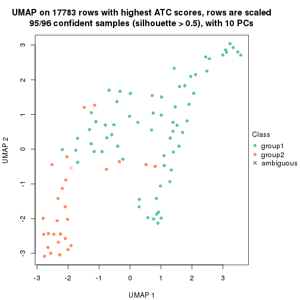
dimension_reduction(res, k = 3, method = "UMAP")
dimension_reduction(res, k = 4, method = "UMAP")
dimension_reduction(res, k = 5, method = "UMAP")
dimension_reduction(res, k = 6, method = "UMAP")
Following heatmap shows how subgroups are split when increasing k:
collect_classes(res)
Test correlation between subgroups and known annotations. If the known annotation is numeric, one-way ANOVA test is applied, and if the known annotation is discrete, chi-squared contingency table test is applied.
test_to_known_factors(res)
#> n specimen(p) disease.state(p) individual(p) tissue(p) k
#> ATC:kmeans 95 1.22e-13 0.889 0.973 1.99e-06 2
#> ATC:kmeans 96 4.14e-16 0.896 0.800 3.29e-07 3
#> ATC:kmeans 90 3.14e-15 0.793 0.656 6.72e-06 4
#> ATC:kmeans 51 8.42e-12 0.681 0.631 2.91e-05 5
#> ATC:kmeans 47 1.05e-08 0.863 0.436 1.28e-04 6
If matrix rows can be associated to genes, consider to use functional_enrichment(res,
...) to perform function enrichment for the signature genes. See this vignette for more detailed explanations.
The object with results only for a single top-value method and a single partition method can be extracted as:
res = res_list["ATC", "skmeans"]
# you can also extract it by
# res = res_list["ATC:skmeans"]
A summary of res and all the functions that can be applied to it:
res
#> A 'ConsensusPartition' object with k = 2, 3, 4, 5, 6.
#> On a matrix with 17783 rows and 96 columns.
#> Top rows (1000, 2000, 3000, 4000, 5000) are extracted by 'ATC' method.
#> Subgroups are detected by 'skmeans' method.
#> Performed in total 1250 partitions by row resampling.
#> Best k for subgroups seems to be 3.
#>
#> Following methods can be applied to this 'ConsensusPartition' object:
#> [1] "cola_report" "collect_classes" "collect_plots"
#> [4] "collect_stats" "colnames" "compare_signatures"
#> [7] "consensus_heatmap" "dimension_reduction" "functional_enrichment"
#> [10] "get_anno_col" "get_anno" "get_classes"
#> [13] "get_consensus" "get_matrix" "get_membership"
#> [16] "get_param" "get_signatures" "get_stats"
#> [19] "is_best_k" "is_stable_k" "membership_heatmap"
#> [22] "ncol" "nrow" "plot_ecdf"
#> [25] "rownames" "select_partition_number" "show"
#> [28] "suggest_best_k" "test_to_known_factors"
collect_plots() function collects all the plots made from res for all k (number of partitions)
into one single page to provide an easy and fast comparison between different k.
collect_plots(res)
The plots are:
k and the heatmap of
predicted classes for each k.k.k.k.All the plots in panels can be made by individual functions and they are plotted later in this section.
select_partition_number() produces several plots showing different
statistics for choosing “optimized” k. There are following statistics:
k;k, the area increased is defined as \(A_k - A_{k-1}\).The detailed explanations of these statistics can be found in the cola vignette.
Generally speaking, lower PAC score, higher mean silhouette score or higher
concordance corresponds to better partition. Rand index and Jaccard index
measure how similar the current partition is compared to partition with k-1.
If they are too similar, we won't accept k is better than k-1.
select_partition_number(res)
The numeric values for all these statistics can be obtained by get_stats().
get_stats(res)
#> k 1-PAC mean_silhouette concordance area_increased Rand Jaccard
#> 2 2 0.978 0.937 0.977 0.5045 0.496 0.496
#> 3 3 0.944 0.934 0.973 0.3241 0.733 0.511
#> 4 4 0.852 0.838 0.923 0.1149 0.825 0.534
#> 5 5 0.813 0.680 0.816 0.0592 0.948 0.797
#> 6 6 0.855 0.729 0.861 0.0369 0.930 0.700
suggest_best_k() suggests the best \(k\) based on these statistics. The rules are as follows:
suggest_best_k(res)
#> [1] 3
#> attr(,"optional")
#> [1] 2
There is also optional best \(k\) = 2 that is worth to check.
Following shows the table of the partitions (You need to click the show/hide
code output link to see it). The membership matrix (columns with name p*)
is inferred by
clue::cl_consensus()
function with the SE method. Basically the value in the membership matrix
represents the probability to belong to a certain group. The finall class
label for an item is determined with the group with highest probability it
belongs to.
In get_classes() function, the entropy is calculated from the membership
matrix and the silhouette score is calculated from the consensus matrix.
cbind(get_classes(res, k = 2), get_membership(res, k = 2))
#> class entropy silhouette p1 p2
#> GSM771247 1 0.0000 0.979 1.000 0.000
#> GSM771246 1 0.0000 0.979 1.000 0.000
#> GSM771245 1 0.0000 0.979 1.000 0.000
#> GSM771169 1 0.0000 0.979 1.000 0.000
#> GSM771171 1 0.0000 0.979 1.000 0.000
#> GSM771175 2 0.0000 0.971 0.000 1.000
#> GSM771172 1 0.0000 0.979 1.000 0.000
#> GSM771174 2 0.0000 0.971 0.000 1.000
#> GSM771178 1 0.0000 0.979 1.000 0.000
#> GSM771176 1 0.0000 0.979 1.000 0.000
#> GSM771181 1 0.0000 0.979 1.000 0.000
#> GSM771179 1 0.0000 0.979 1.000 0.000
#> GSM771184 1 0.0000 0.979 1.000 0.000
#> GSM771182 2 0.0000 0.971 0.000 1.000
#> GSM771185 2 0.0000 0.971 0.000 1.000
#> GSM771186 2 0.0000 0.971 0.000 1.000
#> GSM771188 1 0.0000 0.979 1.000 0.000
#> GSM771193 1 0.0000 0.979 1.000 0.000
#> GSM771192 1 0.0000 0.979 1.000 0.000
#> GSM771189 2 0.0000 0.971 0.000 1.000
#> GSM771194 1 0.0000 0.979 1.000 0.000
#> GSM771191 2 0.0376 0.967 0.004 0.996
#> GSM771202 1 0.0000 0.979 1.000 0.000
#> GSM771200 1 0.0000 0.979 1.000 0.000
#> GSM771206 1 0.0000 0.979 1.000 0.000
#> GSM771208 2 0.0000 0.971 0.000 1.000
#> GSM771207 1 0.0000 0.979 1.000 0.000
#> GSM771209 1 0.0000 0.979 1.000 0.000
#> GSM771211 1 0.0000 0.979 1.000 0.000
#> GSM771212 2 0.5408 0.843 0.124 0.876
#> GSM771214 2 0.0000 0.971 0.000 1.000
#> GSM771213 2 0.0000 0.971 0.000 1.000
#> GSM771216 2 0.0000 0.971 0.000 1.000
#> GSM771217 2 0.0000 0.971 0.000 1.000
#> GSM771219 1 0.0000 0.979 1.000 0.000
#> GSM771218 1 0.0000 0.979 1.000 0.000
#> GSM771222 1 0.0000 0.979 1.000 0.000
#> GSM771220 1 0.0000 0.979 1.000 0.000
#> GSM771226 1 0.0000 0.979 1.000 0.000
#> GSM771223 1 0.0000 0.979 1.000 0.000
#> GSM771225 2 0.0000 0.971 0.000 1.000
#> GSM771232 2 0.0000 0.971 0.000 1.000
#> GSM771235 1 0.0000 0.979 1.000 0.000
#> GSM771234 1 0.0000 0.979 1.000 0.000
#> GSM771242 1 0.0000 0.979 1.000 0.000
#> GSM771239 2 0.0000 0.971 0.000 1.000
#> GSM771240 1 0.0000 0.979 1.000 0.000
#> GSM771241 1 0.0000 0.979 1.000 0.000
#> GSM771197 1 0.0000 0.979 1.000 0.000
#> GSM771195 2 0.6887 0.761 0.184 0.816
#> GSM771198 1 0.0000 0.979 1.000 0.000
#> GSM771199 1 0.0000 0.979 1.000 0.000
#> GSM771204 1 0.0000 0.979 1.000 0.000
#> GSM771205 1 0.0000 0.979 1.000 0.000
#> GSM771229 1 0.0000 0.979 1.000 0.000
#> GSM771227 1 0.9922 0.176 0.552 0.448
#> GSM771230 2 0.0000 0.971 0.000 1.000
#> GSM771231 1 0.0000 0.979 1.000 0.000
#> GSM771238 1 0.0000 0.979 1.000 0.000
#> GSM771236 1 0.0000 0.979 1.000 0.000
#> GSM771154 2 0.9983 0.104 0.476 0.524
#> GSM771152 2 0.0000 0.971 0.000 1.000
#> GSM771156 2 0.2603 0.930 0.044 0.956
#> GSM771157 2 0.9866 0.247 0.432 0.568
#> GSM771155 2 0.0000 0.971 0.000 1.000
#> GSM771160 1 0.0000 0.979 1.000 0.000
#> GSM771161 1 0.0000 0.979 1.000 0.000
#> GSM771159 2 0.0000 0.971 0.000 1.000
#> GSM771165 2 0.0000 0.971 0.000 1.000
#> GSM771166 1 0.0000 0.979 1.000 0.000
#> GSM771167 1 0.0000 0.979 1.000 0.000
#> GSM771168 1 0.0000 0.979 1.000 0.000
#> GSM771163 1 0.9922 0.176 0.552 0.448
#> GSM771244 2 0.0000 0.971 0.000 1.000
#> GSM771170 1 0.3879 0.900 0.924 0.076
#> GSM771173 2 0.0000 0.971 0.000 1.000
#> GSM771177 2 0.0000 0.971 0.000 1.000
#> GSM771180 2 0.0000 0.971 0.000 1.000
#> GSM771183 2 0.0000 0.971 0.000 1.000
#> GSM771187 2 0.0000 0.971 0.000 1.000
#> GSM771190 2 0.0000 0.971 0.000 1.000
#> GSM771201 2 0.0000 0.971 0.000 1.000
#> GSM771210 2 0.0000 0.971 0.000 1.000
#> GSM771215 2 0.0000 0.971 0.000 1.000
#> GSM771221 2 0.0000 0.971 0.000 1.000
#> GSM771224 1 0.0000 0.979 1.000 0.000
#> GSM771233 2 0.0000 0.971 0.000 1.000
#> GSM771243 2 0.0000 0.971 0.000 1.000
#> GSM771196 2 0.0000 0.971 0.000 1.000
#> GSM771203 2 0.0000 0.971 0.000 1.000
#> GSM771228 2 0.0000 0.971 0.000 1.000
#> GSM771237 2 0.0000 0.971 0.000 1.000
#> GSM771153 2 0.0000 0.971 0.000 1.000
#> GSM771158 2 0.0000 0.971 0.000 1.000
#> GSM771162 2 0.0000 0.971 0.000 1.000
#> GSM771164 2 0.0000 0.971 0.000 1.000
cbind(get_classes(res, k = 3), get_membership(res, k = 3))
#> class entropy silhouette p1 p2 p3
#> GSM771247 3 0.0237 0.990 0.004 0.000 0.996
#> GSM771246 3 0.0237 0.990 0.004 0.000 0.996
#> GSM771245 3 0.0237 0.990 0.004 0.000 0.996
#> GSM771169 3 0.0000 0.992 0.000 0.000 1.000
#> GSM771171 3 0.0000 0.992 0.000 0.000 1.000
#> GSM771175 1 0.4654 0.726 0.792 0.208 0.000
#> GSM771172 3 0.0000 0.992 0.000 0.000 1.000
#> GSM771174 1 0.0000 0.943 1.000 0.000 0.000
#> GSM771178 3 0.0000 0.992 0.000 0.000 1.000
#> GSM771176 3 0.0237 0.990 0.004 0.000 0.996
#> GSM771181 3 0.0000 0.992 0.000 0.000 1.000
#> GSM771179 1 0.0000 0.943 1.000 0.000 0.000
#> GSM771184 3 0.0000 0.992 0.000 0.000 1.000
#> GSM771182 1 0.0237 0.940 0.996 0.004 0.000
#> GSM771185 1 0.0000 0.943 1.000 0.000 0.000
#> GSM771186 1 0.6126 0.350 0.600 0.400 0.000
#> GSM771188 3 0.0237 0.990 0.004 0.000 0.996
#> GSM771193 3 0.0000 0.992 0.000 0.000 1.000
#> GSM771192 3 0.0000 0.992 0.000 0.000 1.000
#> GSM771189 2 0.4931 0.669 0.232 0.768 0.000
#> GSM771194 3 0.0237 0.990 0.004 0.000 0.996
#> GSM771191 1 0.0000 0.943 1.000 0.000 0.000
#> GSM771202 3 0.0237 0.990 0.004 0.000 0.996
#> GSM771200 3 0.5016 0.665 0.240 0.000 0.760
#> GSM771206 1 0.0000 0.943 1.000 0.000 0.000
#> GSM771208 1 0.0000 0.943 1.000 0.000 0.000
#> GSM771207 3 0.0000 0.992 0.000 0.000 1.000
#> GSM771209 1 0.0000 0.943 1.000 0.000 0.000
#> GSM771211 3 0.0237 0.990 0.004 0.000 0.996
#> GSM771212 1 0.0000 0.943 1.000 0.000 0.000
#> GSM771214 2 0.0000 0.972 0.000 1.000 0.000
#> GSM771213 2 0.1031 0.949 0.024 0.976 0.000
#> GSM771216 2 0.0000 0.972 0.000 1.000 0.000
#> GSM771217 1 0.0592 0.935 0.988 0.012 0.000
#> GSM771219 3 0.0000 0.992 0.000 0.000 1.000
#> GSM771218 1 0.0000 0.943 1.000 0.000 0.000
#> GSM771222 3 0.0000 0.992 0.000 0.000 1.000
#> GSM771220 3 0.0000 0.992 0.000 0.000 1.000
#> GSM771226 3 0.0000 0.992 0.000 0.000 1.000
#> GSM771223 1 0.0000 0.943 1.000 0.000 0.000
#> GSM771225 2 0.0000 0.972 0.000 1.000 0.000
#> GSM771232 1 0.0000 0.943 1.000 0.000 0.000
#> GSM771235 3 0.0000 0.992 0.000 0.000 1.000
#> GSM771234 3 0.0000 0.992 0.000 0.000 1.000
#> GSM771242 3 0.0000 0.992 0.000 0.000 1.000
#> GSM771239 1 0.0237 0.940 0.996 0.004 0.000
#> GSM771240 3 0.0237 0.990 0.004 0.000 0.996
#> GSM771241 3 0.0000 0.992 0.000 0.000 1.000
#> GSM771197 3 0.0000 0.992 0.000 0.000 1.000
#> GSM771195 1 0.0237 0.940 0.996 0.004 0.000
#> GSM771198 3 0.0000 0.992 0.000 0.000 1.000
#> GSM771199 3 0.0000 0.992 0.000 0.000 1.000
#> GSM771204 1 0.0000 0.943 1.000 0.000 0.000
#> GSM771205 1 0.6126 0.355 0.600 0.000 0.400
#> GSM771229 3 0.0237 0.990 0.004 0.000 0.996
#> GSM771227 1 0.0237 0.940 0.996 0.000 0.004
#> GSM771230 1 0.0000 0.943 1.000 0.000 0.000
#> GSM771231 1 0.0000 0.943 1.000 0.000 0.000
#> GSM771238 3 0.0237 0.990 0.004 0.000 0.996
#> GSM771236 1 0.2959 0.855 0.900 0.000 0.100
#> GSM771154 1 0.0000 0.943 1.000 0.000 0.000
#> GSM771152 1 0.4605 0.731 0.796 0.204 0.000
#> GSM771156 2 0.6291 0.122 0.468 0.532 0.000
#> GSM771157 1 0.0000 0.943 1.000 0.000 0.000
#> GSM771155 1 0.0000 0.943 1.000 0.000 0.000
#> GSM771160 3 0.0000 0.992 0.000 0.000 1.000
#> GSM771161 3 0.0000 0.992 0.000 0.000 1.000
#> GSM771159 2 0.0000 0.972 0.000 1.000 0.000
#> GSM771165 1 0.0000 0.943 1.000 0.000 0.000
#> GSM771166 3 0.0000 0.992 0.000 0.000 1.000
#> GSM771167 1 0.0000 0.943 1.000 0.000 0.000
#> GSM771168 3 0.0237 0.990 0.004 0.000 0.996
#> GSM771163 1 0.0237 0.940 0.996 0.000 0.004
#> GSM771244 2 0.0000 0.972 0.000 1.000 0.000
#> GSM771170 1 0.5201 0.688 0.760 0.004 0.236
#> GSM771173 2 0.0000 0.972 0.000 1.000 0.000
#> GSM771177 2 0.0000 0.972 0.000 1.000 0.000
#> GSM771180 2 0.0000 0.972 0.000 1.000 0.000
#> GSM771183 2 0.0000 0.972 0.000 1.000 0.000
#> GSM771187 2 0.0000 0.972 0.000 1.000 0.000
#> GSM771190 2 0.0000 0.972 0.000 1.000 0.000
#> GSM771201 2 0.0000 0.972 0.000 1.000 0.000
#> GSM771210 2 0.0000 0.972 0.000 1.000 0.000
#> GSM771215 2 0.0000 0.972 0.000 1.000 0.000
#> GSM771221 2 0.0000 0.972 0.000 1.000 0.000
#> GSM771224 3 0.0000 0.992 0.000 0.000 1.000
#> GSM771233 2 0.0000 0.972 0.000 1.000 0.000
#> GSM771243 2 0.0000 0.972 0.000 1.000 0.000
#> GSM771196 2 0.0000 0.972 0.000 1.000 0.000
#> GSM771203 2 0.0000 0.972 0.000 1.000 0.000
#> GSM771228 2 0.0000 0.972 0.000 1.000 0.000
#> GSM771237 2 0.0000 0.972 0.000 1.000 0.000
#> GSM771153 2 0.0000 0.972 0.000 1.000 0.000
#> GSM771158 2 0.0000 0.972 0.000 1.000 0.000
#> GSM771162 2 0.0000 0.972 0.000 1.000 0.000
#> GSM771164 2 0.0000 0.972 0.000 1.000 0.000
cbind(get_classes(res, k = 4), get_membership(res, k = 4))
#> class entropy silhouette p1 p2 p3 p4
#> GSM771247 4 0.4585 0.636 0.000 0.000 0.332 0.668
#> GSM771246 4 0.4967 0.415 0.000 0.000 0.452 0.548
#> GSM771245 4 0.4776 0.571 0.000 0.000 0.376 0.624
#> GSM771169 3 0.0000 0.942 0.000 0.000 1.000 0.000
#> GSM771171 3 0.0000 0.942 0.000 0.000 1.000 0.000
#> GSM771175 1 0.4204 0.777 0.788 0.192 0.000 0.020
#> GSM771172 3 0.0817 0.917 0.000 0.000 0.976 0.024
#> GSM771174 1 0.2973 0.831 0.856 0.000 0.000 0.144
#> GSM771178 3 0.0000 0.942 0.000 0.000 1.000 0.000
#> GSM771176 4 0.4981 0.387 0.000 0.000 0.464 0.536
#> GSM771181 3 0.0000 0.942 0.000 0.000 1.000 0.000
#> GSM771179 4 0.0000 0.785 0.000 0.000 0.000 1.000
#> GSM771184 3 0.0000 0.942 0.000 0.000 1.000 0.000
#> GSM771182 1 0.0000 0.894 1.000 0.000 0.000 0.000
#> GSM771185 1 0.1118 0.893 0.964 0.000 0.000 0.036
#> GSM771186 1 0.3870 0.761 0.788 0.208 0.000 0.004
#> GSM771188 4 0.5000 0.295 0.000 0.000 0.496 0.504
#> GSM771193 3 0.0000 0.942 0.000 0.000 1.000 0.000
#> GSM771192 1 0.4564 0.484 0.672 0.000 0.328 0.000
#> GSM771189 1 0.4406 0.628 0.700 0.300 0.000 0.000
#> GSM771194 4 0.3610 0.736 0.000 0.000 0.200 0.800
#> GSM771191 4 0.0000 0.785 0.000 0.000 0.000 1.000
#> GSM771202 4 0.4477 0.659 0.000 0.000 0.312 0.688
#> GSM771200 4 0.3942 0.718 0.000 0.000 0.236 0.764
#> GSM771206 4 0.0000 0.785 0.000 0.000 0.000 1.000
#> GSM771208 4 0.1716 0.736 0.064 0.000 0.000 0.936
#> GSM771207 3 0.0000 0.942 0.000 0.000 1.000 0.000
#> GSM771209 4 0.0000 0.785 0.000 0.000 0.000 1.000
#> GSM771211 4 0.4585 0.636 0.000 0.000 0.332 0.668
#> GSM771212 4 0.0000 0.785 0.000 0.000 0.000 1.000
#> GSM771214 2 0.0592 0.984 0.000 0.984 0.000 0.016
#> GSM771213 2 0.0188 0.995 0.000 0.996 0.000 0.004
#> GSM771216 2 0.0000 0.999 0.000 1.000 0.000 0.000
#> GSM771217 1 0.5320 0.475 0.572 0.012 0.000 0.416
#> GSM771219 3 0.0000 0.942 0.000 0.000 1.000 0.000
#> GSM771218 4 0.0000 0.785 0.000 0.000 0.000 1.000
#> GSM771222 3 0.1302 0.894 0.000 0.000 0.956 0.044
#> GSM771220 3 0.0000 0.942 0.000 0.000 1.000 0.000
#> GSM771226 3 0.0000 0.942 0.000 0.000 1.000 0.000
#> GSM771223 4 0.0000 0.785 0.000 0.000 0.000 1.000
#> GSM771225 2 0.0188 0.996 0.004 0.996 0.000 0.000
#> GSM771232 1 0.1118 0.893 0.964 0.000 0.000 0.036
#> GSM771235 3 0.0000 0.942 0.000 0.000 1.000 0.000
#> GSM771234 3 0.0000 0.942 0.000 0.000 1.000 0.000
#> GSM771242 3 0.0000 0.942 0.000 0.000 1.000 0.000
#> GSM771239 1 0.1209 0.894 0.964 0.004 0.000 0.032
#> GSM771240 4 0.4304 0.685 0.000 0.000 0.284 0.716
#> GSM771241 3 0.0000 0.942 0.000 0.000 1.000 0.000
#> GSM771197 3 0.0000 0.942 0.000 0.000 1.000 0.000
#> GSM771195 1 0.0000 0.894 1.000 0.000 0.000 0.000
#> GSM771198 3 0.0000 0.942 0.000 0.000 1.000 0.000
#> GSM771199 3 0.0000 0.942 0.000 0.000 1.000 0.000
#> GSM771204 4 0.0000 0.785 0.000 0.000 0.000 1.000
#> GSM771205 4 0.0469 0.786 0.000 0.000 0.012 0.988
#> GSM771229 3 0.5000 -0.323 0.000 0.000 0.504 0.496
#> GSM771227 1 0.0000 0.894 1.000 0.000 0.000 0.000
#> GSM771230 1 0.1211 0.892 0.960 0.000 0.000 0.040
#> GSM771231 1 0.0188 0.894 0.996 0.000 0.000 0.004
#> GSM771238 4 0.4331 0.683 0.000 0.000 0.288 0.712
#> GSM771236 4 0.4643 0.505 0.344 0.000 0.000 0.656
#> GSM771154 4 0.0000 0.785 0.000 0.000 0.000 1.000
#> GSM771152 1 0.3881 0.798 0.812 0.172 0.000 0.016
#> GSM771156 1 0.0000 0.894 1.000 0.000 0.000 0.000
#> GSM771157 4 0.0000 0.785 0.000 0.000 0.000 1.000
#> GSM771155 1 0.1389 0.889 0.952 0.000 0.000 0.048
#> GSM771160 3 0.0000 0.942 0.000 0.000 1.000 0.000
#> GSM771161 3 0.0000 0.942 0.000 0.000 1.000 0.000
#> GSM771159 2 0.0188 0.996 0.004 0.996 0.000 0.000
#> GSM771165 1 0.1211 0.892 0.960 0.000 0.000 0.040
#> GSM771166 3 0.0000 0.942 0.000 0.000 1.000 0.000
#> GSM771167 1 0.0188 0.894 0.996 0.000 0.000 0.004
#> GSM771168 3 0.4998 -0.299 0.000 0.000 0.512 0.488
#> GSM771163 1 0.0000 0.894 1.000 0.000 0.000 0.000
#> GSM771244 2 0.0000 0.999 0.000 1.000 0.000 0.000
#> GSM771170 1 0.0804 0.888 0.980 0.000 0.012 0.008
#> GSM771173 2 0.0000 0.999 0.000 1.000 0.000 0.000
#> GSM771177 2 0.0000 0.999 0.000 1.000 0.000 0.000
#> GSM771180 2 0.0000 0.999 0.000 1.000 0.000 0.000
#> GSM771183 2 0.0000 0.999 0.000 1.000 0.000 0.000
#> GSM771187 2 0.0000 0.999 0.000 1.000 0.000 0.000
#> GSM771190 2 0.0000 0.999 0.000 1.000 0.000 0.000
#> GSM771201 2 0.0000 0.999 0.000 1.000 0.000 0.000
#> GSM771210 2 0.0000 0.999 0.000 1.000 0.000 0.000
#> GSM771215 2 0.0000 0.999 0.000 1.000 0.000 0.000
#> GSM771221 2 0.0000 0.999 0.000 1.000 0.000 0.000
#> GSM771224 3 0.0000 0.942 0.000 0.000 1.000 0.000
#> GSM771233 2 0.0000 0.999 0.000 1.000 0.000 0.000
#> GSM771243 2 0.0000 0.999 0.000 1.000 0.000 0.000
#> GSM771196 2 0.0000 0.999 0.000 1.000 0.000 0.000
#> GSM771203 2 0.0000 0.999 0.000 1.000 0.000 0.000
#> GSM771228 2 0.0000 0.999 0.000 1.000 0.000 0.000
#> GSM771237 2 0.0000 0.999 0.000 1.000 0.000 0.000
#> GSM771153 2 0.0000 0.999 0.000 1.000 0.000 0.000
#> GSM771158 2 0.0000 0.999 0.000 1.000 0.000 0.000
#> GSM771162 2 0.0000 0.999 0.000 1.000 0.000 0.000
#> GSM771164 2 0.0000 0.999 0.000 1.000 0.000 0.000
cbind(get_classes(res, k = 5), get_membership(res, k = 5))
#> class entropy silhouette p1 p2 p3 p4 p5
#> GSM771247 4 0.5139 0.57599 0.280 0.000 0.072 0.648 0.000
#> GSM771246 3 0.6816 -0.23101 0.340 0.000 0.352 0.308 0.000
#> GSM771245 4 0.2959 0.56412 0.036 0.000 0.100 0.864 0.000
#> GSM771169 3 0.0703 0.85911 0.024 0.000 0.976 0.000 0.000
#> GSM771171 3 0.0609 0.86055 0.020 0.000 0.980 0.000 0.000
#> GSM771175 5 0.0566 0.78455 0.000 0.012 0.000 0.004 0.984
#> GSM771172 3 0.4252 0.59072 0.280 0.000 0.700 0.020 0.000
#> GSM771174 5 0.0451 0.78459 0.008 0.000 0.000 0.004 0.988
#> GSM771178 3 0.2189 0.81008 0.084 0.000 0.904 0.012 0.000
#> GSM771176 4 0.5739 0.33417 0.124 0.000 0.280 0.596 0.000
#> GSM771181 3 0.0000 0.86646 0.000 0.000 1.000 0.000 0.000
#> GSM771179 1 0.5807 -0.59405 0.484 0.000 0.000 0.424 0.092
#> GSM771184 3 0.1270 0.84579 0.052 0.000 0.948 0.000 0.000
#> GSM771182 5 0.2127 0.63111 0.108 0.000 0.000 0.000 0.892
#> GSM771185 5 0.0451 0.78107 0.008 0.000 0.000 0.004 0.988
#> GSM771186 5 0.1124 0.75584 0.004 0.036 0.000 0.000 0.960
#> GSM771188 4 0.5848 0.29308 0.128 0.000 0.296 0.576 0.000
#> GSM771193 3 0.0000 0.86646 0.000 0.000 1.000 0.000 0.000
#> GSM771192 5 0.5395 0.05985 0.068 0.000 0.356 0.000 0.576
#> GSM771189 5 0.0880 0.77003 0.000 0.032 0.000 0.000 0.968
#> GSM771194 4 0.0955 0.59341 0.004 0.000 0.028 0.968 0.000
#> GSM771191 4 0.6319 0.35357 0.204 0.000 0.000 0.524 0.272
#> GSM771202 4 0.5672 0.57712 0.368 0.000 0.088 0.544 0.000
#> GSM771200 4 0.5229 0.58714 0.404 0.000 0.048 0.548 0.000
#> GSM771206 4 0.5316 0.56109 0.348 0.000 0.000 0.588 0.064
#> GSM771208 5 0.6392 0.05323 0.356 0.000 0.000 0.176 0.468
#> GSM771207 3 0.0703 0.85911 0.024 0.000 0.976 0.000 0.000
#> GSM771209 4 0.5803 0.53984 0.420 0.000 0.000 0.488 0.092
#> GSM771211 4 0.5737 0.56176 0.288 0.000 0.120 0.592 0.000
#> GSM771212 4 0.6761 0.38085 0.352 0.000 0.000 0.380 0.268
#> GSM771214 2 0.7506 0.20515 0.168 0.488 0.000 0.084 0.260
#> GSM771213 2 0.6562 0.50374 0.144 0.628 0.000 0.080 0.148
#> GSM771216 2 0.0963 0.92805 0.000 0.964 0.000 0.000 0.036
#> GSM771217 5 0.5201 0.46630 0.188 0.000 0.000 0.128 0.684
#> GSM771219 3 0.0000 0.86646 0.000 0.000 1.000 0.000 0.000
#> GSM771218 4 0.3876 0.60142 0.316 0.000 0.000 0.684 0.000
#> GSM771222 3 0.4404 0.56924 0.292 0.000 0.684 0.024 0.000
#> GSM771220 3 0.0703 0.85911 0.024 0.000 0.976 0.000 0.000
#> GSM771226 3 0.0000 0.86646 0.000 0.000 1.000 0.000 0.000
#> GSM771223 4 0.0162 0.58845 0.004 0.000 0.000 0.996 0.000
#> GSM771225 2 0.0865 0.93905 0.024 0.972 0.000 0.000 0.004
#> GSM771232 5 0.2424 0.68019 0.132 0.000 0.000 0.000 0.868
#> GSM771235 3 0.0000 0.86646 0.000 0.000 1.000 0.000 0.000
#> GSM771234 3 0.0000 0.86646 0.000 0.000 1.000 0.000 0.000
#> GSM771242 3 0.0000 0.86646 0.000 0.000 1.000 0.000 0.000
#> GSM771239 5 0.0000 0.78389 0.000 0.000 0.000 0.000 1.000
#> GSM771240 4 0.1997 0.59074 0.036 0.000 0.040 0.924 0.000
#> GSM771241 3 0.0000 0.86646 0.000 0.000 1.000 0.000 0.000
#> GSM771197 3 0.0000 0.86646 0.000 0.000 1.000 0.000 0.000
#> GSM771195 1 0.4302 0.48059 0.520 0.000 0.000 0.000 0.480
#> GSM771198 3 0.0000 0.86646 0.000 0.000 1.000 0.000 0.000
#> GSM771199 3 0.0000 0.86646 0.000 0.000 1.000 0.000 0.000
#> GSM771204 4 0.0290 0.58833 0.008 0.000 0.000 0.992 0.000
#> GSM771205 4 0.5051 0.56926 0.480 0.000 0.024 0.492 0.004
#> GSM771229 3 0.6632 -0.00278 0.344 0.000 0.428 0.228 0.000
#> GSM771227 1 0.4302 0.48059 0.520 0.000 0.000 0.000 0.480
#> GSM771230 5 0.0324 0.78345 0.004 0.000 0.000 0.004 0.992
#> GSM771231 1 0.6386 0.51706 0.492 0.000 0.000 0.188 0.320
#> GSM771238 4 0.1341 0.58864 0.000 0.000 0.056 0.944 0.000
#> GSM771236 1 0.3757 0.17907 0.772 0.000 0.000 0.208 0.020
#> GSM771154 4 0.6206 0.50822 0.344 0.000 0.000 0.504 0.152
#> GSM771152 5 0.0290 0.78502 0.000 0.008 0.000 0.000 0.992
#> GSM771156 1 0.4304 0.47396 0.516 0.000 0.000 0.000 0.484
#> GSM771157 4 0.6224 0.50559 0.352 0.000 0.000 0.496 0.152
#> GSM771155 5 0.1670 0.75272 0.052 0.000 0.000 0.012 0.936
#> GSM771160 3 0.0000 0.86646 0.000 0.000 1.000 0.000 0.000
#> GSM771161 3 0.4256 0.29506 0.000 0.000 0.564 0.436 0.000
#> GSM771159 2 0.0865 0.93905 0.024 0.972 0.000 0.000 0.004
#> GSM771165 5 0.0324 0.78345 0.004 0.000 0.000 0.004 0.992
#> GSM771166 3 0.0000 0.86646 0.000 0.000 1.000 0.000 0.000
#> GSM771167 1 0.6386 0.51706 0.492 0.000 0.000 0.188 0.320
#> GSM771168 3 0.6545 0.05818 0.344 0.000 0.448 0.208 0.000
#> GSM771163 1 0.4302 0.48059 0.520 0.000 0.000 0.000 0.480
#> GSM771244 2 0.0000 0.95980 0.000 1.000 0.000 0.000 0.000
#> GSM771170 1 0.3437 0.45948 0.808 0.000 0.004 0.012 0.176
#> GSM771173 2 0.0000 0.95980 0.000 1.000 0.000 0.000 0.000
#> GSM771177 2 0.0000 0.95980 0.000 1.000 0.000 0.000 0.000
#> GSM771180 2 0.0000 0.95980 0.000 1.000 0.000 0.000 0.000
#> GSM771183 2 0.0000 0.95980 0.000 1.000 0.000 0.000 0.000
#> GSM771187 2 0.0000 0.95980 0.000 1.000 0.000 0.000 0.000
#> GSM771190 2 0.0000 0.95980 0.000 1.000 0.000 0.000 0.000
#> GSM771201 2 0.0000 0.95980 0.000 1.000 0.000 0.000 0.000
#> GSM771210 2 0.0000 0.95980 0.000 1.000 0.000 0.000 0.000
#> GSM771215 2 0.0000 0.95980 0.000 1.000 0.000 0.000 0.000
#> GSM771221 2 0.0000 0.95980 0.000 1.000 0.000 0.000 0.000
#> GSM771224 3 0.0000 0.86646 0.000 0.000 1.000 0.000 0.000
#> GSM771233 2 0.0000 0.95980 0.000 1.000 0.000 0.000 0.000
#> GSM771243 2 0.0000 0.95980 0.000 1.000 0.000 0.000 0.000
#> GSM771196 2 0.0000 0.95980 0.000 1.000 0.000 0.000 0.000
#> GSM771203 2 0.0000 0.95980 0.000 1.000 0.000 0.000 0.000
#> GSM771228 2 0.0000 0.95980 0.000 1.000 0.000 0.000 0.000
#> GSM771237 2 0.0000 0.95980 0.000 1.000 0.000 0.000 0.000
#> GSM771153 2 0.0000 0.95980 0.000 1.000 0.000 0.000 0.000
#> GSM771158 2 0.0000 0.95980 0.000 1.000 0.000 0.000 0.000
#> GSM771162 2 0.0000 0.95980 0.000 1.000 0.000 0.000 0.000
#> GSM771164 2 0.0000 0.95980 0.000 1.000 0.000 0.000 0.000
cbind(get_classes(res, k = 6), get_membership(res, k = 6))
#> class entropy silhouette p1 p2 p3 p4 p5 p6
#> GSM771247 4 0.6065 0.2325 0.272 0.000 0.020 0.520 0.000 0.188
#> GSM771246 1 0.7050 0.3171 0.436 0.000 0.272 0.100 0.000 0.192
#> GSM771245 4 0.0146 0.8455 0.000 0.000 0.004 0.996 0.000 0.000
#> GSM771169 3 0.1141 0.8942 0.000 0.000 0.948 0.000 0.000 0.052
#> GSM771171 3 0.1141 0.8942 0.000 0.000 0.948 0.000 0.000 0.052
#> GSM771175 5 0.0000 0.7911 0.000 0.000 0.000 0.000 1.000 0.000
#> GSM771172 3 0.5748 0.1368 0.316 0.000 0.492 0.000 0.000 0.192
#> GSM771174 5 0.0000 0.7911 0.000 0.000 0.000 0.000 1.000 0.000
#> GSM771178 3 0.2531 0.8105 0.012 0.000 0.856 0.000 0.000 0.132
#> GSM771176 4 0.1341 0.8299 0.024 0.000 0.028 0.948 0.000 0.000
#> GSM771181 3 0.0000 0.9177 0.000 0.000 1.000 0.000 0.000 0.000
#> GSM771179 1 0.2402 0.5503 0.856 0.000 0.000 0.004 0.000 0.140
#> GSM771184 3 0.2730 0.7774 0.000 0.000 0.808 0.000 0.000 0.192
#> GSM771182 5 0.3101 0.4777 0.000 0.000 0.000 0.000 0.756 0.244
#> GSM771185 5 0.0713 0.7801 0.000 0.000 0.000 0.000 0.972 0.028
#> GSM771186 5 0.0363 0.7848 0.000 0.012 0.000 0.000 0.988 0.000
#> GSM771188 4 0.1492 0.8246 0.024 0.000 0.036 0.940 0.000 0.000
#> GSM771193 3 0.0000 0.9177 0.000 0.000 1.000 0.000 0.000 0.000
#> GSM771192 5 0.5799 -0.0138 0.000 0.000 0.340 0.000 0.468 0.192
#> GSM771189 5 0.0000 0.7911 0.000 0.000 0.000 0.000 1.000 0.000
#> GSM771194 4 0.0000 0.8437 0.000 0.000 0.000 1.000 0.000 0.000
#> GSM771191 1 0.4842 0.2627 0.600 0.000 0.000 0.076 0.324 0.000
#> GSM771202 1 0.6431 0.3700 0.564 0.000 0.112 0.132 0.000 0.192
#> GSM771200 1 0.5189 0.4476 0.676 0.000 0.040 0.092 0.000 0.192
#> GSM771206 1 0.4175 0.4912 0.740 0.000 0.000 0.104 0.156 0.000
#> GSM771208 1 0.3984 0.1536 0.596 0.000 0.000 0.008 0.396 0.000
#> GSM771207 3 0.1141 0.8942 0.000 0.000 0.948 0.000 0.000 0.052
#> GSM771209 1 0.0748 0.5683 0.976 0.000 0.000 0.004 0.004 0.016
#> GSM771211 4 0.6826 0.0605 0.312 0.000 0.068 0.432 0.000 0.188
#> GSM771212 1 0.3688 0.4230 0.724 0.000 0.000 0.020 0.256 0.000
#> GSM771214 5 0.6236 0.0583 0.320 0.308 0.000 0.004 0.368 0.000
#> GSM771213 2 0.6173 -0.1242 0.284 0.412 0.000 0.004 0.300 0.000
#> GSM771216 2 0.1957 0.8473 0.000 0.888 0.000 0.000 0.112 0.000
#> GSM771217 5 0.3653 0.4819 0.300 0.000 0.000 0.008 0.692 0.000
#> GSM771219 3 0.0000 0.9177 0.000 0.000 1.000 0.000 0.000 0.000
#> GSM771218 1 0.3248 0.5018 0.804 0.000 0.000 0.164 0.000 0.032
#> GSM771222 3 0.5927 0.0506 0.340 0.000 0.464 0.004 0.000 0.192
#> GSM771220 3 0.1141 0.8942 0.000 0.000 0.948 0.000 0.000 0.052
#> GSM771226 3 0.0000 0.9177 0.000 0.000 1.000 0.000 0.000 0.000
#> GSM771223 4 0.0260 0.8402 0.008 0.000 0.000 0.992 0.000 0.000
#> GSM771225 2 0.1327 0.9104 0.000 0.936 0.000 0.000 0.000 0.064
#> GSM771232 5 0.2527 0.6731 0.168 0.000 0.000 0.000 0.832 0.000
#> GSM771235 3 0.0000 0.9177 0.000 0.000 1.000 0.000 0.000 0.000
#> GSM771234 3 0.0000 0.9177 0.000 0.000 1.000 0.000 0.000 0.000
#> GSM771242 3 0.0000 0.9177 0.000 0.000 1.000 0.000 0.000 0.000
#> GSM771239 5 0.0000 0.7911 0.000 0.000 0.000 0.000 1.000 0.000
#> GSM771240 4 0.0146 0.8455 0.000 0.000 0.004 0.996 0.000 0.000
#> GSM771241 3 0.0000 0.9177 0.000 0.000 1.000 0.000 0.000 0.000
#> GSM771197 3 0.0000 0.9177 0.000 0.000 1.000 0.000 0.000 0.000
#> GSM771195 6 0.2730 0.8024 0.000 0.000 0.000 0.000 0.192 0.808
#> GSM771198 3 0.0000 0.9177 0.000 0.000 1.000 0.000 0.000 0.000
#> GSM771199 3 0.0000 0.9177 0.000 0.000 1.000 0.000 0.000 0.000
#> GSM771204 4 0.0363 0.8381 0.012 0.000 0.000 0.988 0.000 0.000
#> GSM771205 1 0.2431 0.5519 0.860 0.000 0.000 0.008 0.000 0.132
#> GSM771229 1 0.6751 0.2720 0.440 0.000 0.308 0.060 0.000 0.192
#> GSM771227 6 0.2730 0.8024 0.000 0.000 0.000 0.000 0.192 0.808
#> GSM771230 5 0.0713 0.7777 0.000 0.000 0.000 0.000 0.972 0.028
#> GSM771231 6 0.4666 0.7162 0.000 0.000 0.000 0.216 0.108 0.676
#> GSM771238 4 0.0146 0.8455 0.000 0.000 0.004 0.996 0.000 0.000
#> GSM771236 6 0.3481 0.5229 0.124 0.000 0.000 0.072 0.000 0.804
#> GSM771154 1 0.4025 0.4427 0.720 0.000 0.000 0.048 0.232 0.000
#> GSM771152 5 0.0000 0.7911 0.000 0.000 0.000 0.000 1.000 0.000
#> GSM771156 6 0.2730 0.8024 0.000 0.000 0.000 0.000 0.192 0.808
#> GSM771157 1 0.3858 0.4626 0.740 0.000 0.000 0.044 0.216 0.000
#> GSM771155 5 0.3790 0.5542 0.264 0.000 0.000 0.004 0.716 0.016
#> GSM771160 3 0.0000 0.9177 0.000 0.000 1.000 0.000 0.000 0.000
#> GSM771161 4 0.1387 0.8009 0.000 0.000 0.068 0.932 0.000 0.000
#> GSM771159 2 0.1327 0.9104 0.000 0.936 0.000 0.000 0.000 0.064
#> GSM771165 5 0.0713 0.7777 0.000 0.000 0.000 0.000 0.972 0.028
#> GSM771166 3 0.0000 0.9177 0.000 0.000 1.000 0.000 0.000 0.000
#> GSM771167 6 0.4666 0.7162 0.000 0.000 0.000 0.216 0.108 0.676
#> GSM771168 1 0.6751 0.2720 0.440 0.000 0.308 0.060 0.000 0.192
#> GSM771163 6 0.2730 0.8024 0.000 0.000 0.000 0.000 0.192 0.808
#> GSM771244 2 0.0000 0.9633 0.000 1.000 0.000 0.000 0.000 0.000
#> GSM771170 6 0.0937 0.6599 0.040 0.000 0.000 0.000 0.000 0.960
#> GSM771173 2 0.0000 0.9633 0.000 1.000 0.000 0.000 0.000 0.000
#> GSM771177 2 0.0000 0.9633 0.000 1.000 0.000 0.000 0.000 0.000
#> GSM771180 2 0.0000 0.9633 0.000 1.000 0.000 0.000 0.000 0.000
#> GSM771183 2 0.0000 0.9633 0.000 1.000 0.000 0.000 0.000 0.000
#> GSM771187 2 0.0000 0.9633 0.000 1.000 0.000 0.000 0.000 0.000
#> GSM771190 2 0.0000 0.9633 0.000 1.000 0.000 0.000 0.000 0.000
#> GSM771201 2 0.0000 0.9633 0.000 1.000 0.000 0.000 0.000 0.000
#> GSM771210 2 0.0000 0.9633 0.000 1.000 0.000 0.000 0.000 0.000
#> GSM771215 2 0.0000 0.9633 0.000 1.000 0.000 0.000 0.000 0.000
#> GSM771221 2 0.0000 0.9633 0.000 1.000 0.000 0.000 0.000 0.000
#> GSM771224 3 0.0000 0.9177 0.000 0.000 1.000 0.000 0.000 0.000
#> GSM771233 2 0.0000 0.9633 0.000 1.000 0.000 0.000 0.000 0.000
#> GSM771243 2 0.0000 0.9633 0.000 1.000 0.000 0.000 0.000 0.000
#> GSM771196 2 0.0000 0.9633 0.000 1.000 0.000 0.000 0.000 0.000
#> GSM771203 2 0.0000 0.9633 0.000 1.000 0.000 0.000 0.000 0.000
#> GSM771228 2 0.0000 0.9633 0.000 1.000 0.000 0.000 0.000 0.000
#> GSM771237 2 0.0000 0.9633 0.000 1.000 0.000 0.000 0.000 0.000
#> GSM771153 2 0.0000 0.9633 0.000 1.000 0.000 0.000 0.000 0.000
#> GSM771158 2 0.0000 0.9633 0.000 1.000 0.000 0.000 0.000 0.000
#> GSM771162 2 0.0000 0.9633 0.000 1.000 0.000 0.000 0.000 0.000
#> GSM771164 2 0.0000 0.9633 0.000 1.000 0.000 0.000 0.000 0.000
Heatmaps for the consensus matrix. It visualizes the probability of two samples to be in a same group.
consensus_heatmap(res, k = 2)
consensus_heatmap(res, k = 3)
consensus_heatmap(res, k = 4)
consensus_heatmap(res, k = 5)
consensus_heatmap(res, k = 6)
Heatmaps for the membership of samples in all partitions to see how consistent they are:
membership_heatmap(res, k = 2)
membership_heatmap(res, k = 3)
membership_heatmap(res, k = 4)

membership_heatmap(res, k = 5)
membership_heatmap(res, k = 6)

As soon as we have had the classes for columns, we can look for signatures which are significantly different between classes which can be candidate marks for certain classes. Following are the heatmaps for signatures.
Signature heatmaps where rows are scaled:
get_signatures(res, k = 2)
#> Error: The width or height of the raster image is zero, maybe you forget to turn off the
#> previous graphic device or it was corrupted. Run `dev.off()` to close it.

get_signatures(res, k = 3)
#> Error: The width or height of the raster image is zero, maybe you forget to turn off the
#> previous graphic device or it was corrupted. Run `dev.off()` to close it.

get_signatures(res, k = 4)
#> Error: The width or height of the raster image is zero, maybe you forget to turn off the
#> previous graphic device or it was corrupted. Run `dev.off()` to close it.

get_signatures(res, k = 5)
#> Error: The width or height of the raster image is zero, maybe you forget to turn off the
#> previous graphic device or it was corrupted. Run `dev.off()` to close it.

get_signatures(res, k = 6)
#> Error: The width or height of the raster image is zero, maybe you forget to turn off the
#> previous graphic device or it was corrupted. Run `dev.off()` to close it.

Signature heatmaps where rows are not scaled:
get_signatures(res, k = 2, scale_rows = FALSE)
#> Error in mat[ceiling(1:nr/h_ratio), ceiling(1:nc/w_ratio), drop = FALSE]: subscript out of bounds

get_signatures(res, k = 3, scale_rows = FALSE)
#> Error in mat[ceiling(1:nr/h_ratio), ceiling(1:nc/w_ratio), drop = FALSE]: subscript out of bounds

get_signatures(res, k = 4, scale_rows = FALSE)
get_signatures(res, k = 5, scale_rows = FALSE)
#> Error in mat[ceiling(1:nr/h_ratio), ceiling(1:nc/w_ratio), drop = FALSE]: subscript out of bounds

get_signatures(res, k = 6, scale_rows = FALSE)
#> Error in mat[ceiling(1:nr/h_ratio), ceiling(1:nc/w_ratio), drop = FALSE]: subscript out of bounds

Compare the overlap of signatures from different k:
compare_signatures(res)
get_signature() returns a data frame invisibly. TO get the list of signatures, the function
call should be assigned to a variable explicitly. In following code, if plot argument is set
to FALSE, no heatmap is plotted while only the differential analysis is performed.
# code only for demonstration
tb = get_signature(res, k = ..., plot = FALSE)
An example of the output of tb is:
#> which_row fdr mean_1 mean_2 scaled_mean_1 scaled_mean_2 km
#> 1 38 0.042760348 8.373488 9.131774 -0.5533452 0.5164555 1
#> 2 40 0.018707592 7.106213 8.469186 -0.6173731 0.5762149 1
#> 3 55 0.019134737 10.221463 11.207825 -0.6159697 0.5749050 1
#> 4 59 0.006059896 5.921854 7.869574 -0.6899429 0.6439467 1
#> 5 60 0.018055526 8.928898 10.211722 -0.6204761 0.5791110 1
#> 6 98 0.009384629 15.714769 14.887706 0.6635654 -0.6193277 2
...
The columns in tb are:
which_row: row indices corresponding to the input matrix.fdr: FDR for the differential test. mean_x: The mean value in group x.scaled_mean_x: The mean value in group x after rows are scaled.km: Row groups if k-means clustering is applied to rows.UMAP plot which shows how samples are separated.
dimension_reduction(res, k = 2, method = "UMAP")
dimension_reduction(res, k = 3, method = "UMAP")
dimension_reduction(res, k = 4, method = "UMAP")
dimension_reduction(res, k = 5, method = "UMAP")
dimension_reduction(res, k = 6, method = "UMAP")
Following heatmap shows how subgroups are split when increasing k:
collect_classes(res)
Test correlation between subgroups and known annotations. If the known annotation is numeric, one-way ANOVA test is applied, and if the known annotation is discrete, chi-squared contingency table test is applied.
test_to_known_factors(res)
#> n specimen(p) disease.state(p) individual(p) tissue(p) k
#> ATC:skmeans 92 4.67e-06 0.918 0.484 4.92e-03 2
#> ATC:skmeans 93 3.24e-13 0.414 0.890 1.86e-05 3
#> ATC:skmeans 89 1.58e-12 0.363 0.175 2.08e-05 4
#> ATC:skmeans 77 2.15e-11 0.453 0.652 1.25e-04 5
#> ATC:skmeans 76 1.36e-10 0.192 0.865 4.78e-04 6
If matrix rows can be associated to genes, consider to use functional_enrichment(res,
...) to perform function enrichment for the signature genes. See this vignette for more detailed explanations.
The object with results only for a single top-value method and a single partition method can be extracted as:
res = res_list["ATC", "pam"]
# you can also extract it by
# res = res_list["ATC:pam"]
A summary of res and all the functions that can be applied to it:
res
#> A 'ConsensusPartition' object with k = 2, 3, 4, 5, 6.
#> On a matrix with 17783 rows and 96 columns.
#> Top rows (1000, 2000, 3000, 4000, 5000) are extracted by 'ATC' method.
#> Subgroups are detected by 'pam' method.
#> Performed in total 1250 partitions by row resampling.
#> Best k for subgroups seems to be 6.
#>
#> Following methods can be applied to this 'ConsensusPartition' object:
#> [1] "cola_report" "collect_classes" "collect_plots"
#> [4] "collect_stats" "colnames" "compare_signatures"
#> [7] "consensus_heatmap" "dimension_reduction" "functional_enrichment"
#> [10] "get_anno_col" "get_anno" "get_classes"
#> [13] "get_consensus" "get_matrix" "get_membership"
#> [16] "get_param" "get_signatures" "get_stats"
#> [19] "is_best_k" "is_stable_k" "membership_heatmap"
#> [22] "ncol" "nrow" "plot_ecdf"
#> [25] "rownames" "select_partition_number" "show"
#> [28] "suggest_best_k" "test_to_known_factors"
collect_plots() function collects all the plots made from res for all k (number of partitions)
into one single page to provide an easy and fast comparison between different k.
collect_plots(res)
The plots are:
k and the heatmap of
predicted classes for each k.k.k.k.All the plots in panels can be made by individual functions and they are plotted later in this section.
select_partition_number() produces several plots showing different
statistics for choosing “optimized” k. There are following statistics:
k;k, the area increased is defined as \(A_k - A_{k-1}\).The detailed explanations of these statistics can be found in the cola vignette.
Generally speaking, lower PAC score, higher mean silhouette score or higher
concordance corresponds to better partition. Rand index and Jaccard index
measure how similar the current partition is compared to partition with k-1.
If they are too similar, we won't accept k is better than k-1.
select_partition_number(res)
The numeric values for all these statistics can be obtained by get_stats().
get_stats(res)
#> k 1-PAC mean_silhouette concordance area_increased Rand Jaccard
#> 2 2 0.477 0.803 0.839 0.3533 0.643 0.643
#> 3 3 0.853 0.872 0.952 0.4540 0.812 0.719
#> 4 4 0.859 0.835 0.937 0.3846 0.735 0.503
#> 5 5 0.927 0.883 0.955 0.1142 0.895 0.653
#> 6 6 0.954 0.896 0.958 0.0333 0.964 0.832
suggest_best_k() suggests the best \(k\) based on these statistics. The rules are as follows:
suggest_best_k(res)
#> [1] 6
#> attr(,"optional")
#> [1] 5
There is also optional best \(k\) = 5 that is worth to check.
Following shows the table of the partitions (You need to click the show/hide
code output link to see it). The membership matrix (columns with name p*)
is inferred by
clue::cl_consensus()
function with the SE method. Basically the value in the membership matrix
represents the probability to belong to a certain group. The finall class
label for an item is determined with the group with highest probability it
belongs to.
In get_classes() function, the entropy is calculated from the membership
matrix and the silhouette score is calculated from the consensus matrix.
cbind(get_classes(res, k = 2), get_membership(res, k = 2))
#> class entropy silhouette p1 p2
#> GSM771247 1 0.4562 0.750 0.904 0.096
#> GSM771246 1 0.3733 0.738 0.928 0.072
#> GSM771245 1 0.5178 0.760 0.884 0.116
#> GSM771169 1 0.0000 0.700 1.000 0.000
#> GSM771171 1 0.0000 0.700 1.000 0.000
#> GSM771175 1 0.9000 0.843 0.684 0.316
#> GSM771172 1 0.2236 0.719 0.964 0.036
#> GSM771174 1 0.9000 0.843 0.684 0.316
#> GSM771178 1 0.0000 0.700 1.000 0.000
#> GSM771176 1 0.4298 0.747 0.912 0.088
#> GSM771181 1 0.0000 0.700 1.000 0.000
#> GSM771179 1 0.9000 0.843 0.684 0.316
#> GSM771184 1 0.8661 0.836 0.712 0.288
#> GSM771182 1 0.9000 0.843 0.684 0.316
#> GSM771185 1 0.9000 0.843 0.684 0.316
#> GSM771186 1 0.9000 0.843 0.684 0.316
#> GSM771188 1 0.8386 0.829 0.732 0.268
#> GSM771193 1 0.0000 0.700 1.000 0.000
#> GSM771192 1 0.9000 0.843 0.684 0.316
#> GSM771189 1 0.9000 0.843 0.684 0.316
#> GSM771194 1 0.8909 0.841 0.692 0.308
#> GSM771191 1 0.9000 0.843 0.684 0.316
#> GSM771202 1 0.6148 0.776 0.848 0.152
#> GSM771200 1 0.8608 0.835 0.716 0.284
#> GSM771206 1 0.9000 0.843 0.684 0.316
#> GSM771208 1 0.9000 0.843 0.684 0.316
#> GSM771207 1 0.0000 0.700 1.000 0.000
#> GSM771209 1 0.9000 0.843 0.684 0.316
#> GSM771211 1 0.8555 0.834 0.720 0.280
#> GSM771212 1 0.9000 0.843 0.684 0.316
#> GSM771214 1 0.9000 0.843 0.684 0.316
#> GSM771213 1 0.9000 0.843 0.684 0.316
#> GSM771216 2 0.9732 -0.184 0.404 0.596
#> GSM771217 1 0.9000 0.843 0.684 0.316
#> GSM771219 1 0.0000 0.700 1.000 0.000
#> GSM771218 1 0.9000 0.843 0.684 0.316
#> GSM771222 1 0.9000 0.843 0.684 0.316
#> GSM771220 1 0.0000 0.700 1.000 0.000
#> GSM771226 1 0.0000 0.700 1.000 0.000
#> GSM771223 1 0.9000 0.843 0.684 0.316
#> GSM771225 1 0.9000 0.843 0.684 0.316
#> GSM771232 1 0.9000 0.843 0.684 0.316
#> GSM771235 1 0.0000 0.700 1.000 0.000
#> GSM771234 1 0.0000 0.700 1.000 0.000
#> GSM771242 1 0.0000 0.700 1.000 0.000
#> GSM771239 1 0.9000 0.843 0.684 0.316
#> GSM771240 1 0.8955 0.842 0.688 0.312
#> GSM771241 1 0.0000 0.700 1.000 0.000
#> GSM771197 1 0.0000 0.700 1.000 0.000
#> GSM771195 1 0.9000 0.843 0.684 0.316
#> GSM771198 1 0.0000 0.700 1.000 0.000
#> GSM771199 1 0.0000 0.700 1.000 0.000
#> GSM771204 1 0.9000 0.843 0.684 0.316
#> GSM771205 1 0.9000 0.843 0.684 0.316
#> GSM771229 1 0.8499 0.833 0.724 0.276
#> GSM771227 1 0.9000 0.843 0.684 0.316
#> GSM771230 1 0.9000 0.843 0.684 0.316
#> GSM771231 1 0.9000 0.843 0.684 0.316
#> GSM771238 1 0.8955 0.842 0.688 0.312
#> GSM771236 1 0.9000 0.843 0.684 0.316
#> GSM771154 1 0.9000 0.843 0.684 0.316
#> GSM771152 1 0.9000 0.843 0.684 0.316
#> GSM771156 1 0.9000 0.843 0.684 0.316
#> GSM771157 1 0.9000 0.843 0.684 0.316
#> GSM771155 1 0.9000 0.843 0.684 0.316
#> GSM771160 1 0.0000 0.700 1.000 0.000
#> GSM771161 1 0.0000 0.700 1.000 0.000
#> GSM771159 1 0.9000 0.843 0.684 0.316
#> GSM771165 1 0.9000 0.843 0.684 0.316
#> GSM771166 1 0.0000 0.700 1.000 0.000
#> GSM771167 1 0.9000 0.843 0.684 0.316
#> GSM771168 1 0.8499 0.833 0.724 0.276
#> GSM771163 1 0.9000 0.843 0.684 0.316
#> GSM771244 2 0.0000 0.939 0.000 1.000
#> GSM771170 1 0.9000 0.843 0.684 0.316
#> GSM771173 2 0.0000 0.939 0.000 1.000
#> GSM771177 2 0.0000 0.939 0.000 1.000
#> GSM771180 2 0.0000 0.939 0.000 1.000
#> GSM771183 2 0.0000 0.939 0.000 1.000
#> GSM771187 2 0.0000 0.939 0.000 1.000
#> GSM771190 2 0.0000 0.939 0.000 1.000
#> GSM771201 2 0.0000 0.939 0.000 1.000
#> GSM771210 2 0.9993 -0.464 0.484 0.516
#> GSM771215 2 0.0000 0.939 0.000 1.000
#> GSM771221 2 0.0000 0.939 0.000 1.000
#> GSM771224 1 0.8555 0.834 0.720 0.280
#> GSM771233 2 0.0000 0.939 0.000 1.000
#> GSM771243 2 0.0000 0.939 0.000 1.000
#> GSM771196 2 0.0000 0.939 0.000 1.000
#> GSM771203 2 0.0000 0.939 0.000 1.000
#> GSM771228 2 0.0000 0.939 0.000 1.000
#> GSM771237 2 0.0000 0.939 0.000 1.000
#> GSM771153 2 0.0000 0.939 0.000 1.000
#> GSM771158 2 0.0000 0.939 0.000 1.000
#> GSM771162 2 0.0376 0.934 0.004 0.996
#> GSM771164 2 0.0000 0.939 0.000 1.000
cbind(get_classes(res, k = 3), get_membership(res, k = 3))
#> class entropy silhouette p1 p2 p3
#> GSM771247 1 0.0424 0.934 0.992 0.000 0.008
#> GSM771246 1 0.0424 0.934 0.992 0.000 0.008
#> GSM771245 1 0.0000 0.940 1.000 0.000 0.000
#> GSM771169 1 0.5988 0.438 0.632 0.000 0.368
#> GSM771171 1 0.6260 0.227 0.552 0.000 0.448
#> GSM771175 1 0.0000 0.940 1.000 0.000 0.000
#> GSM771172 1 0.0747 0.928 0.984 0.000 0.016
#> GSM771174 1 0.0000 0.940 1.000 0.000 0.000
#> GSM771178 1 0.5988 0.438 0.632 0.000 0.368
#> GSM771176 1 0.0747 0.928 0.984 0.000 0.016
#> GSM771181 3 0.0000 0.935 0.000 0.000 1.000
#> GSM771179 1 0.0000 0.940 1.000 0.000 0.000
#> GSM771184 1 0.0000 0.940 1.000 0.000 0.000
#> GSM771182 1 0.0000 0.940 1.000 0.000 0.000
#> GSM771185 1 0.0000 0.940 1.000 0.000 0.000
#> GSM771186 1 0.0000 0.940 1.000 0.000 0.000
#> GSM771188 1 0.0000 0.940 1.000 0.000 0.000
#> GSM771193 3 0.6154 0.205 0.408 0.000 0.592
#> GSM771192 1 0.0000 0.940 1.000 0.000 0.000
#> GSM771189 1 0.0000 0.940 1.000 0.000 0.000
#> GSM771194 1 0.0000 0.940 1.000 0.000 0.000
#> GSM771191 1 0.0000 0.940 1.000 0.000 0.000
#> GSM771202 1 0.0237 0.937 0.996 0.000 0.004
#> GSM771200 1 0.0000 0.940 1.000 0.000 0.000
#> GSM771206 1 0.0000 0.940 1.000 0.000 0.000
#> GSM771208 1 0.0000 0.940 1.000 0.000 0.000
#> GSM771207 1 0.5988 0.438 0.632 0.000 0.368
#> GSM771209 1 0.0000 0.940 1.000 0.000 0.000
#> GSM771211 1 0.0000 0.940 1.000 0.000 0.000
#> GSM771212 1 0.0000 0.940 1.000 0.000 0.000
#> GSM771214 1 0.0000 0.940 1.000 0.000 0.000
#> GSM771213 1 0.0000 0.940 1.000 0.000 0.000
#> GSM771216 1 0.4887 0.669 0.772 0.228 0.000
#> GSM771217 1 0.0000 0.940 1.000 0.000 0.000
#> GSM771219 3 0.0000 0.935 0.000 0.000 1.000
#> GSM771218 1 0.0000 0.940 1.000 0.000 0.000
#> GSM771222 1 0.0000 0.940 1.000 0.000 0.000
#> GSM771220 1 0.5988 0.438 0.632 0.000 0.368
#> GSM771226 3 0.0000 0.935 0.000 0.000 1.000
#> GSM771223 1 0.0000 0.940 1.000 0.000 0.000
#> GSM771225 1 0.0000 0.940 1.000 0.000 0.000
#> GSM771232 1 0.0000 0.940 1.000 0.000 0.000
#> GSM771235 1 0.5988 0.438 0.632 0.000 0.368
#> GSM771234 3 0.0000 0.935 0.000 0.000 1.000
#> GSM771242 3 0.0000 0.935 0.000 0.000 1.000
#> GSM771239 1 0.0000 0.940 1.000 0.000 0.000
#> GSM771240 1 0.0000 0.940 1.000 0.000 0.000
#> GSM771241 3 0.0000 0.935 0.000 0.000 1.000
#> GSM771197 3 0.0000 0.935 0.000 0.000 1.000
#> GSM771195 1 0.0000 0.940 1.000 0.000 0.000
#> GSM771198 3 0.0000 0.935 0.000 0.000 1.000
#> GSM771199 3 0.0000 0.935 0.000 0.000 1.000
#> GSM771204 1 0.0000 0.940 1.000 0.000 0.000
#> GSM771205 1 0.0000 0.940 1.000 0.000 0.000
#> GSM771229 1 0.0000 0.940 1.000 0.000 0.000
#> GSM771227 1 0.0000 0.940 1.000 0.000 0.000
#> GSM771230 1 0.0000 0.940 1.000 0.000 0.000
#> GSM771231 1 0.0000 0.940 1.000 0.000 0.000
#> GSM771238 1 0.0000 0.940 1.000 0.000 0.000
#> GSM771236 1 0.0000 0.940 1.000 0.000 0.000
#> GSM771154 1 0.0000 0.940 1.000 0.000 0.000
#> GSM771152 1 0.0000 0.940 1.000 0.000 0.000
#> GSM771156 1 0.0000 0.940 1.000 0.000 0.000
#> GSM771157 1 0.0000 0.940 1.000 0.000 0.000
#> GSM771155 1 0.0000 0.940 1.000 0.000 0.000
#> GSM771160 3 0.0000 0.935 0.000 0.000 1.000
#> GSM771161 1 0.5988 0.438 0.632 0.000 0.368
#> GSM771159 1 0.0000 0.940 1.000 0.000 0.000
#> GSM771165 1 0.0000 0.940 1.000 0.000 0.000
#> GSM771166 1 0.5926 0.463 0.644 0.000 0.356
#> GSM771167 1 0.0000 0.940 1.000 0.000 0.000
#> GSM771168 1 0.0000 0.940 1.000 0.000 0.000
#> GSM771163 1 0.0000 0.940 1.000 0.000 0.000
#> GSM771244 2 0.0000 0.938 0.000 1.000 0.000
#> GSM771170 1 0.0000 0.940 1.000 0.000 0.000
#> GSM771173 2 0.0000 0.938 0.000 1.000 0.000
#> GSM771177 2 0.0000 0.938 0.000 1.000 0.000
#> GSM771180 2 0.5988 0.421 0.368 0.632 0.000
#> GSM771183 2 0.0000 0.938 0.000 1.000 0.000
#> GSM771187 2 0.0000 0.938 0.000 1.000 0.000
#> GSM771190 2 0.0000 0.938 0.000 1.000 0.000
#> GSM771201 2 0.0592 0.923 0.012 0.988 0.000
#> GSM771210 1 0.3816 0.781 0.852 0.148 0.000
#> GSM771215 2 0.0000 0.938 0.000 1.000 0.000
#> GSM771221 2 0.0000 0.938 0.000 1.000 0.000
#> GSM771224 1 0.0592 0.931 0.988 0.000 0.012
#> GSM771233 2 0.0000 0.938 0.000 1.000 0.000
#> GSM771243 2 0.0000 0.938 0.000 1.000 0.000
#> GSM771196 2 0.0000 0.938 0.000 1.000 0.000
#> GSM771203 2 0.0000 0.938 0.000 1.000 0.000
#> GSM771228 2 0.0000 0.938 0.000 1.000 0.000
#> GSM771237 2 0.0000 0.938 0.000 1.000 0.000
#> GSM771153 2 0.0000 0.938 0.000 1.000 0.000
#> GSM771158 2 0.0000 0.938 0.000 1.000 0.000
#> GSM771162 2 0.6008 0.415 0.372 0.628 0.000
#> GSM771164 2 0.0000 0.938 0.000 1.000 0.000
cbind(get_classes(res, k = 4), get_membership(res, k = 4))
#> class entropy silhouette p1 p2 p3 p4
#> GSM771247 1 0.0000 0.9393 1.000 0.000 0.000 0.000
#> GSM771246 1 0.0000 0.9393 1.000 0.000 0.000 0.000
#> GSM771245 1 0.0000 0.9393 1.000 0.000 0.000 0.000
#> GSM771169 1 0.0188 0.9373 0.996 0.000 0.004 0.000
#> GSM771171 1 0.4941 0.2248 0.564 0.000 0.436 0.000
#> GSM771175 4 0.0000 0.8601 0.000 0.000 0.000 1.000
#> GSM771172 1 0.0000 0.9393 1.000 0.000 0.000 0.000
#> GSM771174 4 0.0000 0.8601 0.000 0.000 0.000 1.000
#> GSM771178 1 0.0000 0.9393 1.000 0.000 0.000 0.000
#> GSM771176 1 0.0000 0.9393 1.000 0.000 0.000 0.000
#> GSM771181 3 0.0000 0.9467 0.000 0.000 1.000 0.000
#> GSM771179 1 0.0921 0.9209 0.972 0.000 0.000 0.028
#> GSM771184 1 0.0000 0.9393 1.000 0.000 0.000 0.000
#> GSM771182 4 0.0000 0.8601 0.000 0.000 0.000 1.000
#> GSM771185 4 0.0000 0.8601 0.000 0.000 0.000 1.000
#> GSM771186 4 0.0000 0.8601 0.000 0.000 0.000 1.000
#> GSM771188 1 0.0000 0.9393 1.000 0.000 0.000 0.000
#> GSM771193 3 0.4877 0.2097 0.408 0.000 0.592 0.000
#> GSM771192 4 0.4477 0.5309 0.312 0.000 0.000 0.688
#> GSM771189 4 0.0000 0.8601 0.000 0.000 0.000 1.000
#> GSM771194 4 0.5000 0.0975 0.496 0.000 0.000 0.504
#> GSM771191 4 0.3266 0.7335 0.168 0.000 0.000 0.832
#> GSM771202 1 0.0000 0.9393 1.000 0.000 0.000 0.000
#> GSM771200 1 0.0000 0.9393 1.000 0.000 0.000 0.000
#> GSM771206 4 0.4961 0.2405 0.448 0.000 0.000 0.552
#> GSM771208 4 0.4193 0.6119 0.268 0.000 0.000 0.732
#> GSM771207 1 0.1557 0.8980 0.944 0.000 0.056 0.000
#> GSM771209 1 0.1302 0.9073 0.956 0.000 0.000 0.044
#> GSM771211 1 0.0000 0.9393 1.000 0.000 0.000 0.000
#> GSM771212 4 0.4941 0.2753 0.436 0.000 0.000 0.564
#> GSM771214 4 0.4916 0.3069 0.424 0.000 0.000 0.576
#> GSM771213 4 0.0000 0.8601 0.000 0.000 0.000 1.000
#> GSM771216 4 0.0000 0.8601 0.000 0.000 0.000 1.000
#> GSM771217 4 0.0000 0.8601 0.000 0.000 0.000 1.000
#> GSM771219 3 0.0000 0.9467 0.000 0.000 1.000 0.000
#> GSM771218 1 0.0707 0.9269 0.980 0.000 0.000 0.020
#> GSM771222 1 0.0000 0.9393 1.000 0.000 0.000 0.000
#> GSM771220 1 0.0000 0.9393 1.000 0.000 0.000 0.000
#> GSM771226 3 0.0000 0.9467 0.000 0.000 1.000 0.000
#> GSM771223 1 0.4585 0.4350 0.668 0.000 0.000 0.332
#> GSM771225 4 0.0000 0.8601 0.000 0.000 0.000 1.000
#> GSM771232 4 0.4855 0.3644 0.400 0.000 0.000 0.600
#> GSM771235 1 0.1389 0.9052 0.952 0.000 0.048 0.000
#> GSM771234 3 0.0000 0.9467 0.000 0.000 1.000 0.000
#> GSM771242 3 0.0000 0.9467 0.000 0.000 1.000 0.000
#> GSM771239 4 0.0000 0.8601 0.000 0.000 0.000 1.000
#> GSM771240 1 0.0336 0.9338 0.992 0.000 0.000 0.008
#> GSM771241 3 0.0000 0.9467 0.000 0.000 1.000 0.000
#> GSM771197 3 0.0000 0.9467 0.000 0.000 1.000 0.000
#> GSM771195 4 0.0000 0.8601 0.000 0.000 0.000 1.000
#> GSM771198 3 0.0000 0.9467 0.000 0.000 1.000 0.000
#> GSM771199 3 0.0000 0.9467 0.000 0.000 1.000 0.000
#> GSM771204 4 0.0469 0.8533 0.012 0.000 0.000 0.988
#> GSM771205 1 0.0000 0.9393 1.000 0.000 0.000 0.000
#> GSM771229 1 0.0000 0.9393 1.000 0.000 0.000 0.000
#> GSM771227 4 0.0000 0.8601 0.000 0.000 0.000 1.000
#> GSM771230 4 0.0000 0.8601 0.000 0.000 0.000 1.000
#> GSM771231 4 0.0000 0.8601 0.000 0.000 0.000 1.000
#> GSM771238 4 0.3907 0.6560 0.232 0.000 0.000 0.768
#> GSM771236 1 0.1302 0.9073 0.956 0.000 0.000 0.044
#> GSM771154 4 0.4999 0.0912 0.492 0.000 0.000 0.508
#> GSM771152 4 0.0000 0.8601 0.000 0.000 0.000 1.000
#> GSM771156 4 0.0000 0.8601 0.000 0.000 0.000 1.000
#> GSM771157 1 0.4843 0.2685 0.604 0.000 0.000 0.396
#> GSM771155 4 0.0000 0.8601 0.000 0.000 0.000 1.000
#> GSM771160 3 0.0000 0.9467 0.000 0.000 1.000 0.000
#> GSM771161 1 0.0000 0.9393 1.000 0.000 0.000 0.000
#> GSM771159 4 0.0000 0.8601 0.000 0.000 0.000 1.000
#> GSM771165 4 0.0000 0.8601 0.000 0.000 0.000 1.000
#> GSM771166 1 0.0000 0.9393 1.000 0.000 0.000 0.000
#> GSM771167 4 0.0000 0.8601 0.000 0.000 0.000 1.000
#> GSM771168 1 0.0000 0.9393 1.000 0.000 0.000 0.000
#> GSM771163 4 0.0000 0.8601 0.000 0.000 0.000 1.000
#> GSM771244 2 0.0000 0.9994 0.000 1.000 0.000 0.000
#> GSM771170 1 0.2281 0.8525 0.904 0.000 0.000 0.096
#> GSM771173 2 0.0336 0.9897 0.000 0.992 0.000 0.008
#> GSM771177 2 0.0000 0.9994 0.000 1.000 0.000 0.000
#> GSM771180 4 0.0000 0.8601 0.000 0.000 0.000 1.000
#> GSM771183 2 0.0000 0.9994 0.000 1.000 0.000 0.000
#> GSM771187 2 0.0000 0.9994 0.000 1.000 0.000 0.000
#> GSM771190 2 0.0000 0.9994 0.000 1.000 0.000 0.000
#> GSM771201 4 0.4898 0.2812 0.000 0.416 0.000 0.584
#> GSM771210 4 0.0000 0.8601 0.000 0.000 0.000 1.000
#> GSM771215 2 0.0000 0.9994 0.000 1.000 0.000 0.000
#> GSM771221 2 0.0000 0.9994 0.000 1.000 0.000 0.000
#> GSM771224 1 0.0000 0.9393 1.000 0.000 0.000 0.000
#> GSM771233 2 0.0000 0.9994 0.000 1.000 0.000 0.000
#> GSM771243 2 0.0000 0.9994 0.000 1.000 0.000 0.000
#> GSM771196 2 0.0000 0.9994 0.000 1.000 0.000 0.000
#> GSM771203 2 0.0000 0.9994 0.000 1.000 0.000 0.000
#> GSM771228 2 0.0000 0.9994 0.000 1.000 0.000 0.000
#> GSM771237 2 0.0000 0.9994 0.000 1.000 0.000 0.000
#> GSM771153 2 0.0000 0.9994 0.000 1.000 0.000 0.000
#> GSM771158 2 0.0000 0.9994 0.000 1.000 0.000 0.000
#> GSM771162 4 0.0000 0.8601 0.000 0.000 0.000 1.000
#> GSM771164 2 0.0000 0.9994 0.000 1.000 0.000 0.000
cbind(get_classes(res, k = 5), get_membership(res, k = 5))
#> class entropy silhouette p1 p2 p3 p4 p5
#> GSM771247 4 0.2127 0.85702 0.108 0.000 0.000 0.892 0.000
#> GSM771246 1 0.0000 0.92783 1.000 0.000 0.000 0.000 0.000
#> GSM771245 1 0.4306 -0.00232 0.508 0.000 0.000 0.492 0.000
#> GSM771169 1 0.0162 0.92581 0.996 0.000 0.004 0.000 0.000
#> GSM771171 1 0.3876 0.50594 0.684 0.000 0.316 0.000 0.000
#> GSM771175 5 0.0000 0.91266 0.000 0.000 0.000 0.000 1.000
#> GSM771172 1 0.0000 0.92783 1.000 0.000 0.000 0.000 0.000
#> GSM771174 5 0.0000 0.91266 0.000 0.000 0.000 0.000 1.000
#> GSM771178 1 0.0000 0.92783 1.000 0.000 0.000 0.000 0.000
#> GSM771176 1 0.0000 0.92783 1.000 0.000 0.000 0.000 0.000
#> GSM771181 3 0.0000 0.94915 0.000 0.000 1.000 0.000 0.000
#> GSM771179 1 0.0290 0.92252 0.992 0.000 0.000 0.000 0.008
#> GSM771184 1 0.0000 0.92783 1.000 0.000 0.000 0.000 0.000
#> GSM771182 5 0.0000 0.91266 0.000 0.000 0.000 0.000 1.000
#> GSM771185 5 0.0000 0.91266 0.000 0.000 0.000 0.000 1.000
#> GSM771186 5 0.0162 0.90976 0.004 0.000 0.000 0.000 0.996
#> GSM771188 1 0.0000 0.92783 1.000 0.000 0.000 0.000 0.000
#> GSM771193 3 0.4256 0.15519 0.436 0.000 0.564 0.000 0.000
#> GSM771192 5 0.3452 0.65382 0.244 0.000 0.000 0.000 0.756
#> GSM771189 5 0.0000 0.91266 0.000 0.000 0.000 0.000 1.000
#> GSM771194 4 0.0000 0.97076 0.000 0.000 0.000 1.000 0.000
#> GSM771191 4 0.0000 0.97076 0.000 0.000 0.000 1.000 0.000
#> GSM771202 1 0.0000 0.92783 1.000 0.000 0.000 0.000 0.000
#> GSM771200 1 0.0000 0.92783 1.000 0.000 0.000 0.000 0.000
#> GSM771206 4 0.0000 0.97076 0.000 0.000 0.000 1.000 0.000
#> GSM771208 4 0.0000 0.97076 0.000 0.000 0.000 1.000 0.000
#> GSM771207 1 0.1341 0.88853 0.944 0.000 0.056 0.000 0.000
#> GSM771209 4 0.0000 0.97076 0.000 0.000 0.000 1.000 0.000
#> GSM771211 1 0.2471 0.82082 0.864 0.000 0.000 0.136 0.000
#> GSM771212 4 0.0000 0.97076 0.000 0.000 0.000 1.000 0.000
#> GSM771214 4 0.1121 0.92884 0.000 0.000 0.000 0.956 0.044
#> GSM771213 4 0.3109 0.74036 0.000 0.000 0.000 0.800 0.200
#> GSM771216 5 0.0000 0.91266 0.000 0.000 0.000 0.000 1.000
#> GSM771217 5 0.4235 0.25098 0.000 0.000 0.000 0.424 0.576
#> GSM771219 3 0.0000 0.94915 0.000 0.000 1.000 0.000 0.000
#> GSM771218 4 0.0000 0.97076 0.000 0.000 0.000 1.000 0.000
#> GSM771222 1 0.0000 0.92783 1.000 0.000 0.000 0.000 0.000
#> GSM771220 1 0.0000 0.92783 1.000 0.000 0.000 0.000 0.000
#> GSM771226 3 0.0000 0.94915 0.000 0.000 1.000 0.000 0.000
#> GSM771223 4 0.0000 0.97076 0.000 0.000 0.000 1.000 0.000
#> GSM771225 5 0.0000 0.91266 0.000 0.000 0.000 0.000 1.000
#> GSM771232 5 0.4150 0.33180 0.388 0.000 0.000 0.000 0.612
#> GSM771235 1 0.1197 0.89493 0.952 0.000 0.048 0.000 0.000
#> GSM771234 3 0.0000 0.94915 0.000 0.000 1.000 0.000 0.000
#> GSM771242 3 0.0000 0.94915 0.000 0.000 1.000 0.000 0.000
#> GSM771239 5 0.0000 0.91266 0.000 0.000 0.000 0.000 1.000
#> GSM771240 4 0.0290 0.96434 0.008 0.000 0.000 0.992 0.000
#> GSM771241 3 0.0000 0.94915 0.000 0.000 1.000 0.000 0.000
#> GSM771197 3 0.0000 0.94915 0.000 0.000 1.000 0.000 0.000
#> GSM771195 5 0.0000 0.91266 0.000 0.000 0.000 0.000 1.000
#> GSM771198 3 0.0000 0.94915 0.000 0.000 1.000 0.000 0.000
#> GSM771199 3 0.0000 0.94915 0.000 0.000 1.000 0.000 0.000
#> GSM771204 4 0.0000 0.97076 0.000 0.000 0.000 1.000 0.000
#> GSM771205 1 0.2377 0.82830 0.872 0.000 0.000 0.128 0.000
#> GSM771229 1 0.0000 0.92783 1.000 0.000 0.000 0.000 0.000
#> GSM771227 5 0.0000 0.91266 0.000 0.000 0.000 0.000 1.000
#> GSM771230 5 0.0000 0.91266 0.000 0.000 0.000 0.000 1.000
#> GSM771231 5 0.1121 0.88074 0.000 0.000 0.000 0.044 0.956
#> GSM771238 4 0.0000 0.97076 0.000 0.000 0.000 1.000 0.000
#> GSM771236 1 0.3661 0.65050 0.724 0.000 0.000 0.276 0.000
#> GSM771154 4 0.0000 0.97076 0.000 0.000 0.000 1.000 0.000
#> GSM771152 5 0.0000 0.91266 0.000 0.000 0.000 0.000 1.000
#> GSM771156 5 0.0000 0.91266 0.000 0.000 0.000 0.000 1.000
#> GSM771157 4 0.0000 0.97076 0.000 0.000 0.000 1.000 0.000
#> GSM771155 5 0.4291 0.14252 0.000 0.000 0.000 0.464 0.536
#> GSM771160 3 0.0000 0.94915 0.000 0.000 1.000 0.000 0.000
#> GSM771161 1 0.0000 0.92783 1.000 0.000 0.000 0.000 0.000
#> GSM771159 5 0.0000 0.91266 0.000 0.000 0.000 0.000 1.000
#> GSM771165 5 0.0000 0.91266 0.000 0.000 0.000 0.000 1.000
#> GSM771166 1 0.0000 0.92783 1.000 0.000 0.000 0.000 0.000
#> GSM771167 5 0.1121 0.88074 0.000 0.000 0.000 0.044 0.956
#> GSM771168 1 0.0000 0.92783 1.000 0.000 0.000 0.000 0.000
#> GSM771163 5 0.0000 0.91266 0.000 0.000 0.000 0.000 1.000
#> GSM771244 2 0.0000 0.99939 0.000 1.000 0.000 0.000 0.000
#> GSM771170 1 0.1410 0.87856 0.940 0.000 0.000 0.000 0.060
#> GSM771173 2 0.0290 0.99015 0.000 0.992 0.000 0.000 0.008
#> GSM771177 2 0.0000 0.99939 0.000 1.000 0.000 0.000 0.000
#> GSM771180 5 0.0000 0.91266 0.000 0.000 0.000 0.000 1.000
#> GSM771183 2 0.0000 0.99939 0.000 1.000 0.000 0.000 0.000
#> GSM771187 2 0.0000 0.99939 0.000 1.000 0.000 0.000 0.000
#> GSM771190 2 0.0000 0.99939 0.000 1.000 0.000 0.000 0.000
#> GSM771201 5 0.4182 0.33516 0.000 0.400 0.000 0.000 0.600
#> GSM771210 5 0.0000 0.91266 0.000 0.000 0.000 0.000 1.000
#> GSM771215 2 0.0000 0.99939 0.000 1.000 0.000 0.000 0.000
#> GSM771221 2 0.0000 0.99939 0.000 1.000 0.000 0.000 0.000
#> GSM771224 1 0.0000 0.92783 1.000 0.000 0.000 0.000 0.000
#> GSM771233 2 0.0000 0.99939 0.000 1.000 0.000 0.000 0.000
#> GSM771243 2 0.0000 0.99939 0.000 1.000 0.000 0.000 0.000
#> GSM771196 2 0.0000 0.99939 0.000 1.000 0.000 0.000 0.000
#> GSM771203 2 0.0000 0.99939 0.000 1.000 0.000 0.000 0.000
#> GSM771228 2 0.0000 0.99939 0.000 1.000 0.000 0.000 0.000
#> GSM771237 2 0.0000 0.99939 0.000 1.000 0.000 0.000 0.000
#> GSM771153 2 0.0000 0.99939 0.000 1.000 0.000 0.000 0.000
#> GSM771158 2 0.0000 0.99939 0.000 1.000 0.000 0.000 0.000
#> GSM771162 5 0.0000 0.91266 0.000 0.000 0.000 0.000 1.000
#> GSM771164 2 0.0000 0.99939 0.000 1.000 0.000 0.000 0.000
cbind(get_classes(res, k = 6), get_membership(res, k = 6))
#> class entropy silhouette p1 p2 p3 p4 p5 p6
#> GSM771247 4 0.2003 0.847 0.116 0.000 0.000 0.884 0.000 0.000
#> GSM771246 1 0.0000 0.936 1.000 0.000 0.000 0.000 0.000 0.000
#> GSM771245 1 0.3838 0.160 0.552 0.000 0.000 0.448 0.000 0.000
#> GSM771169 6 0.0458 0.951 0.016 0.000 0.000 0.000 0.000 0.984
#> GSM771171 6 0.0458 0.958 0.000 0.000 0.016 0.000 0.000 0.984
#> GSM771175 5 0.0000 0.904 0.000 0.000 0.000 0.000 1.000 0.000
#> GSM771172 1 0.0000 0.936 1.000 0.000 0.000 0.000 0.000 0.000
#> GSM771174 5 0.0000 0.904 0.000 0.000 0.000 0.000 1.000 0.000
#> GSM771178 6 0.0458 0.951 0.016 0.000 0.000 0.000 0.000 0.984
#> GSM771176 1 0.0000 0.936 1.000 0.000 0.000 0.000 0.000 0.000
#> GSM771181 3 0.0000 1.000 0.000 0.000 1.000 0.000 0.000 0.000
#> GSM771179 1 0.0000 0.936 1.000 0.000 0.000 0.000 0.000 0.000
#> GSM771184 1 0.0000 0.936 1.000 0.000 0.000 0.000 0.000 0.000
#> GSM771182 5 0.0000 0.904 0.000 0.000 0.000 0.000 1.000 0.000
#> GSM771185 5 0.0000 0.904 0.000 0.000 0.000 0.000 1.000 0.000
#> GSM771186 5 0.0146 0.902 0.004 0.000 0.000 0.000 0.996 0.000
#> GSM771188 1 0.0000 0.936 1.000 0.000 0.000 0.000 0.000 0.000
#> GSM771193 6 0.0458 0.958 0.000 0.000 0.016 0.000 0.000 0.984
#> GSM771192 5 0.3634 0.444 0.356 0.000 0.000 0.000 0.644 0.000
#> GSM771189 5 0.0000 0.904 0.000 0.000 0.000 0.000 1.000 0.000
#> GSM771194 4 0.0000 0.970 0.000 0.000 0.000 1.000 0.000 0.000
#> GSM771191 4 0.0000 0.970 0.000 0.000 0.000 1.000 0.000 0.000
#> GSM771202 1 0.0000 0.936 1.000 0.000 0.000 0.000 0.000 0.000
#> GSM771200 1 0.0000 0.936 1.000 0.000 0.000 0.000 0.000 0.000
#> GSM771206 4 0.0000 0.970 0.000 0.000 0.000 1.000 0.000 0.000
#> GSM771208 4 0.0000 0.970 0.000 0.000 0.000 1.000 0.000 0.000
#> GSM771207 6 0.0458 0.958 0.000 0.000 0.016 0.000 0.000 0.984
#> GSM771209 4 0.0000 0.970 0.000 0.000 0.000 1.000 0.000 0.000
#> GSM771211 1 0.0458 0.924 0.984 0.000 0.000 0.016 0.000 0.000
#> GSM771212 4 0.0000 0.970 0.000 0.000 0.000 1.000 0.000 0.000
#> GSM771214 4 0.1007 0.924 0.000 0.000 0.000 0.956 0.044 0.000
#> GSM771213 4 0.2793 0.722 0.000 0.000 0.000 0.800 0.200 0.000
#> GSM771216 5 0.0000 0.904 0.000 0.000 0.000 0.000 1.000 0.000
#> GSM771217 5 0.3804 0.248 0.000 0.000 0.000 0.424 0.576 0.000
#> GSM771219 6 0.0458 0.958 0.000 0.000 0.016 0.000 0.000 0.984
#> GSM771218 4 0.0000 0.970 0.000 0.000 0.000 1.000 0.000 0.000
#> GSM771222 1 0.0000 0.936 1.000 0.000 0.000 0.000 0.000 0.000
#> GSM771220 6 0.0458 0.951 0.016 0.000 0.000 0.000 0.000 0.984
#> GSM771226 3 0.0000 1.000 0.000 0.000 1.000 0.000 0.000 0.000
#> GSM771223 4 0.0000 0.970 0.000 0.000 0.000 1.000 0.000 0.000
#> GSM771225 5 0.0000 0.904 0.000 0.000 0.000 0.000 1.000 0.000
#> GSM771232 5 0.3727 0.351 0.388 0.000 0.000 0.000 0.612 0.000
#> GSM771235 6 0.0458 0.958 0.000 0.000 0.016 0.000 0.000 0.984
#> GSM771234 3 0.0000 1.000 0.000 0.000 1.000 0.000 0.000 0.000
#> GSM771242 6 0.2912 0.754 0.000 0.000 0.216 0.000 0.000 0.784
#> GSM771239 5 0.0000 0.904 0.000 0.000 0.000 0.000 1.000 0.000
#> GSM771240 4 0.0000 0.970 0.000 0.000 0.000 1.000 0.000 0.000
#> GSM771241 6 0.1863 0.891 0.000 0.000 0.104 0.000 0.000 0.896
#> GSM771197 3 0.0000 1.000 0.000 0.000 1.000 0.000 0.000 0.000
#> GSM771195 5 0.0000 0.904 0.000 0.000 0.000 0.000 1.000 0.000
#> GSM771198 3 0.0000 1.000 0.000 0.000 1.000 0.000 0.000 0.000
#> GSM771199 3 0.0000 1.000 0.000 0.000 1.000 0.000 0.000 0.000
#> GSM771204 4 0.0000 0.970 0.000 0.000 0.000 1.000 0.000 0.000
#> GSM771205 1 0.0000 0.936 1.000 0.000 0.000 0.000 0.000 0.000
#> GSM771229 1 0.0000 0.936 1.000 0.000 0.000 0.000 0.000 0.000
#> GSM771227 5 0.0000 0.904 0.000 0.000 0.000 0.000 1.000 0.000
#> GSM771230 5 0.0000 0.904 0.000 0.000 0.000 0.000 1.000 0.000
#> GSM771231 5 0.1007 0.871 0.000 0.000 0.000 0.044 0.956 0.000
#> GSM771238 4 0.0000 0.970 0.000 0.000 0.000 1.000 0.000 0.000
#> GSM771236 1 0.3101 0.684 0.756 0.000 0.000 0.244 0.000 0.000
#> GSM771154 4 0.0000 0.970 0.000 0.000 0.000 1.000 0.000 0.000
#> GSM771152 5 0.0000 0.904 0.000 0.000 0.000 0.000 1.000 0.000
#> GSM771156 5 0.0000 0.904 0.000 0.000 0.000 0.000 1.000 0.000
#> GSM771157 4 0.0000 0.970 0.000 0.000 0.000 1.000 0.000 0.000
#> GSM771155 5 0.3854 0.146 0.000 0.000 0.000 0.464 0.536 0.000
#> GSM771160 3 0.0000 1.000 0.000 0.000 1.000 0.000 0.000 0.000
#> GSM771161 1 0.2762 0.743 0.804 0.000 0.000 0.000 0.000 0.196
#> GSM771159 5 0.0000 0.904 0.000 0.000 0.000 0.000 1.000 0.000
#> GSM771165 5 0.0000 0.904 0.000 0.000 0.000 0.000 1.000 0.000
#> GSM771166 1 0.0000 0.936 1.000 0.000 0.000 0.000 0.000 0.000
#> GSM771167 5 0.1007 0.871 0.000 0.000 0.000 0.044 0.956 0.000
#> GSM771168 1 0.0000 0.936 1.000 0.000 0.000 0.000 0.000 0.000
#> GSM771163 5 0.0000 0.904 0.000 0.000 0.000 0.000 1.000 0.000
#> GSM771244 2 0.0000 0.995 0.000 1.000 0.000 0.000 0.000 0.000
#> GSM771170 1 0.1753 0.849 0.912 0.000 0.000 0.004 0.084 0.000
#> GSM771173 2 0.0520 0.985 0.000 0.984 0.000 0.000 0.008 0.008
#> GSM771177 2 0.0260 0.992 0.000 0.992 0.000 0.000 0.000 0.008
#> GSM771180 5 0.0260 0.900 0.000 0.000 0.000 0.000 0.992 0.008
#> GSM771183 2 0.0000 0.995 0.000 1.000 0.000 0.000 0.000 0.000
#> GSM771187 2 0.0000 0.995 0.000 1.000 0.000 0.000 0.000 0.000
#> GSM771190 2 0.0260 0.992 0.000 0.992 0.000 0.000 0.000 0.008
#> GSM771201 5 0.4010 0.303 0.000 0.408 0.000 0.000 0.584 0.008
#> GSM771210 5 0.0000 0.904 0.000 0.000 0.000 0.000 1.000 0.000
#> GSM771215 2 0.0260 0.993 0.000 0.992 0.000 0.000 0.000 0.008
#> GSM771221 2 0.0260 0.993 0.000 0.992 0.000 0.000 0.000 0.008
#> GSM771224 1 0.0000 0.936 1.000 0.000 0.000 0.000 0.000 0.000
#> GSM771233 2 0.0260 0.993 0.000 0.992 0.000 0.000 0.000 0.008
#> GSM771243 2 0.0000 0.995 0.000 1.000 0.000 0.000 0.000 0.000
#> GSM771196 2 0.0000 0.995 0.000 1.000 0.000 0.000 0.000 0.000
#> GSM771203 2 0.0260 0.992 0.000 0.992 0.000 0.000 0.000 0.008
#> GSM771228 2 0.0260 0.993 0.000 0.992 0.000 0.000 0.000 0.008
#> GSM771237 2 0.0260 0.992 0.000 0.992 0.000 0.000 0.000 0.008
#> GSM771153 2 0.0000 0.995 0.000 1.000 0.000 0.000 0.000 0.000
#> GSM771158 2 0.0260 0.993 0.000 0.992 0.000 0.000 0.000 0.008
#> GSM771162 5 0.0260 0.900 0.000 0.000 0.000 0.000 0.992 0.008
#> GSM771164 2 0.0260 0.993 0.000 0.992 0.000 0.000 0.000 0.008
Heatmaps for the consensus matrix. It visualizes the probability of two samples to be in a same group.
consensus_heatmap(res, k = 2)
consensus_heatmap(res, k = 3)
consensus_heatmap(res, k = 4)
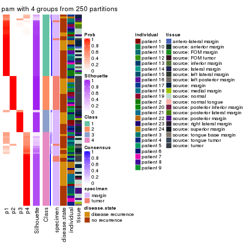
consensus_heatmap(res, k = 5)
consensus_heatmap(res, k = 6)
Heatmaps for the membership of samples in all partitions to see how consistent they are:
membership_heatmap(res, k = 2)
membership_heatmap(res, k = 3)

membership_heatmap(res, k = 4)
membership_heatmap(res, k = 5)
membership_heatmap(res, k = 6)

As soon as we have had the classes for columns, we can look for signatures which are significantly different between classes which can be candidate marks for certain classes. Following are the heatmaps for signatures.
Signature heatmaps where rows are scaled:
get_signatures(res, k = 2)
#> Error: The width or height of the raster image is zero, maybe you forget to turn off the
#> previous graphic device or it was corrupted. Run `dev.off()` to close it.

get_signatures(res, k = 3)
#> Error: The width or height of the raster image is zero, maybe you forget to turn off the
#> previous graphic device or it was corrupted. Run `dev.off()` to close it.

get_signatures(res, k = 4)
#> Error: The width or height of the raster image is zero, maybe you forget to turn off the
#> previous graphic device or it was corrupted. Run `dev.off()` to close it.

get_signatures(res, k = 5)
#> Error: The width or height of the raster image is zero, maybe you forget to turn off the
#> previous graphic device or it was corrupted. Run `dev.off()` to close it.

get_signatures(res, k = 6)
#> Error: The width or height of the raster image is zero, maybe you forget to turn off the
#> previous graphic device or it was corrupted. Run `dev.off()` to close it.

Signature heatmaps where rows are not scaled:
get_signatures(res, k = 2, scale_rows = FALSE)
#> Error in mat[ceiling(1:nr/h_ratio), ceiling(1:nc/w_ratio), drop = FALSE]: subscript out of bounds
get_signatures(res, k = 3, scale_rows = FALSE)
get_signatures(res, k = 4, scale_rows = FALSE)
get_signatures(res, k = 5, scale_rows = FALSE)
get_signatures(res, k = 6, scale_rows = FALSE)
#> Error in mat[ceiling(1:nr/h_ratio), ceiling(1:nc/w_ratio), drop = FALSE]: subscript out of bounds
Compare the overlap of signatures from different k:
compare_signatures(res)
get_signature() returns a data frame invisibly. TO get the list of signatures, the function
call should be assigned to a variable explicitly. In following code, if plot argument is set
to FALSE, no heatmap is plotted while only the differential analysis is performed.
# code only for demonstration
tb = get_signature(res, k = ..., plot = FALSE)
An example of the output of tb is:
#> which_row fdr mean_1 mean_2 scaled_mean_1 scaled_mean_2 km
#> 1 38 0.042760348 8.373488 9.131774 -0.5533452 0.5164555 1
#> 2 40 0.018707592 7.106213 8.469186 -0.6173731 0.5762149 1
#> 3 55 0.019134737 10.221463 11.207825 -0.6159697 0.5749050 1
#> 4 59 0.006059896 5.921854 7.869574 -0.6899429 0.6439467 1
#> 5 60 0.018055526 8.928898 10.211722 -0.6204761 0.5791110 1
#> 6 98 0.009384629 15.714769 14.887706 0.6635654 -0.6193277 2
...
The columns in tb are:
which_row: row indices corresponding to the input matrix.fdr: FDR for the differential test. mean_x: The mean value in group x.scaled_mean_x: The mean value in group x after rows are scaled.km: Row groups if k-means clustering is applied to rows.UMAP plot which shows how samples are separated.
dimension_reduction(res, k = 2, method = "UMAP")
dimension_reduction(res, k = 3, method = "UMAP")
dimension_reduction(res, k = 4, method = "UMAP")
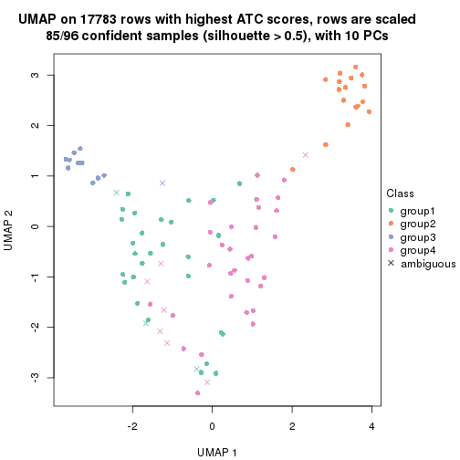
dimension_reduction(res, k = 5, method = "UMAP")
dimension_reduction(res, k = 6, method = "UMAP")
Following heatmap shows how subgroups are split when increasing k:
collect_classes(res)

Test correlation between subgroups and known annotations. If the known annotation is numeric, one-way ANOVA test is applied, and if the known annotation is discrete, chi-squared contingency table test is applied.
test_to_known_factors(res)
#> n specimen(p) disease.state(p) individual(p) tissue(p) k
#> ATC:pam 94 1.14e-18 0.831 1.000 5.08e-10 2
#> ATC:pam 85 7.25e-16 0.371 0.793 2.23e-07 3
#> ATC:pam 85 3.19e-13 0.133 0.692 4.03e-04 4
#> ATC:pam 90 1.62e-13 0.192 0.572 1.65e-04 5
#> ATC:pam 90 5.89e-13 0.351 0.423 2.65e-04 6
If matrix rows can be associated to genes, consider to use functional_enrichment(res,
...) to perform function enrichment for the signature genes. See this vignette for more detailed explanations.
The object with results only for a single top-value method and a single partition method can be extracted as:
res = res_list["ATC", "mclust"]
# you can also extract it by
# res = res_list["ATC:mclust"]
A summary of res and all the functions that can be applied to it:
res
#> A 'ConsensusPartition' object with k = 2, 3, 4, 5, 6.
#> On a matrix with 17783 rows and 96 columns.
#> Top rows (1000, 2000, 3000, 4000, 5000) are extracted by 'ATC' method.
#> Subgroups are detected by 'mclust' method.
#> Performed in total 1250 partitions by row resampling.
#> Best k for subgroups seems to be 4.
#>
#> Following methods can be applied to this 'ConsensusPartition' object:
#> [1] "cola_report" "collect_classes" "collect_plots"
#> [4] "collect_stats" "colnames" "compare_signatures"
#> [7] "consensus_heatmap" "dimension_reduction" "functional_enrichment"
#> [10] "get_anno_col" "get_anno" "get_classes"
#> [13] "get_consensus" "get_matrix" "get_membership"
#> [16] "get_param" "get_signatures" "get_stats"
#> [19] "is_best_k" "is_stable_k" "membership_heatmap"
#> [22] "ncol" "nrow" "plot_ecdf"
#> [25] "rownames" "select_partition_number" "show"
#> [28] "suggest_best_k" "test_to_known_factors"
collect_plots() function collects all the plots made from res for all k (number of partitions)
into one single page to provide an easy and fast comparison between different k.
collect_plots(res)
The plots are:
k and the heatmap of
predicted classes for each k.k.k.k.All the plots in panels can be made by individual functions and they are plotted later in this section.
select_partition_number() produces several plots showing different
statistics for choosing “optimized” k. There are following statistics:
k;k, the area increased is defined as \(A_k - A_{k-1}\).The detailed explanations of these statistics can be found in the cola vignette.
Generally speaking, lower PAC score, higher mean silhouette score or higher
concordance corresponds to better partition. Rand index and Jaccard index
measure how similar the current partition is compared to partition with k-1.
If they are too similar, we won't accept k is better than k-1.
select_partition_number(res)
The numeric values for all these statistics can be obtained by get_stats().
get_stats(res)
#> k 1-PAC mean_silhouette concordance area_increased Rand Jaccard
#> 2 2 0.253 0.541 0.787 0.4922 0.498 0.498
#> 3 3 0.389 0.703 0.819 0.2414 0.577 0.375
#> 4 4 0.591 0.733 0.842 0.1837 0.770 0.503
#> 5 5 0.628 0.571 0.757 0.0769 0.941 0.787
#> 6 6 0.625 0.531 0.726 0.0461 0.873 0.520
suggest_best_k() suggests the best \(k\) based on these statistics. The rules are as follows:
suggest_best_k(res)
#> [1] 4
Following shows the table of the partitions (You need to click the show/hide
code output link to see it). The membership matrix (columns with name p*)
is inferred by
clue::cl_consensus()
function with the SE method. Basically the value in the membership matrix
represents the probability to belong to a certain group. The finall class
label for an item is determined with the group with highest probability it
belongs to.
In get_classes() function, the entropy is calculated from the membership
matrix and the silhouette score is calculated from the consensus matrix.
cbind(get_classes(res, k = 2), get_membership(res, k = 2))
#> class entropy silhouette p1 p2
#> GSM771247 1 0.7674 0.7555 0.776 0.224
#> GSM771246 1 0.7674 0.7555 0.776 0.224
#> GSM771245 1 0.9993 0.4559 0.516 0.484
#> GSM771169 1 0.0672 0.7157 0.992 0.008
#> GSM771171 1 0.0000 0.7113 1.000 0.000
#> GSM771175 1 0.9491 0.6511 0.632 0.368
#> GSM771172 1 0.7674 0.7555 0.776 0.224
#> GSM771174 1 0.8909 0.7097 0.692 0.308
#> GSM771178 1 0.7674 0.7555 0.776 0.224
#> GSM771176 1 0.9286 0.6778 0.656 0.344
#> GSM771181 1 0.0000 0.7113 1.000 0.000
#> GSM771179 2 0.9635 0.1458 0.388 0.612
#> GSM771184 1 0.7674 0.7555 0.776 0.224
#> GSM771182 2 1.0000 -0.4292 0.496 0.504
#> GSM771185 1 0.9983 0.4743 0.524 0.476
#> GSM771186 2 0.6438 0.4883 0.164 0.836
#> GSM771188 1 0.9732 0.6027 0.596 0.404
#> GSM771193 1 0.1633 0.7215 0.976 0.024
#> GSM771192 1 0.8327 0.7397 0.736 0.264
#> GSM771189 2 0.3879 0.5986 0.076 0.924
#> GSM771194 2 0.9732 -0.1670 0.404 0.596
#> GSM771191 2 0.5294 0.5801 0.120 0.880
#> GSM771202 1 0.7674 0.7555 0.776 0.224
#> GSM771200 1 0.7674 0.7555 0.776 0.224
#> GSM771206 2 0.8327 0.4210 0.264 0.736
#> GSM771208 2 0.7528 0.4895 0.216 0.784
#> GSM771207 1 0.1843 0.7230 0.972 0.028
#> GSM771209 2 0.8813 0.3575 0.300 0.700
#> GSM771211 1 0.7674 0.7555 0.776 0.224
#> GSM771212 2 0.7528 0.4896 0.216 0.784
#> GSM771214 2 0.0672 0.6358 0.008 0.992
#> GSM771213 2 0.0672 0.6358 0.008 0.992
#> GSM771216 2 0.0672 0.6358 0.008 0.992
#> GSM771217 2 0.2236 0.6281 0.036 0.964
#> GSM771219 1 0.0000 0.7113 1.000 0.000
#> GSM771218 1 0.7674 0.7555 0.776 0.224
#> GSM771222 1 0.7674 0.7555 0.776 0.224
#> GSM771220 1 0.0000 0.7113 1.000 0.000
#> GSM771226 1 0.0000 0.7113 1.000 0.000
#> GSM771223 2 0.6148 0.5045 0.152 0.848
#> GSM771225 2 0.6712 0.6728 0.176 0.824
#> GSM771232 2 0.0672 0.6336 0.008 0.992
#> GSM771235 1 0.1633 0.7215 0.976 0.024
#> GSM771234 1 0.0000 0.7113 1.000 0.000
#> GSM771242 1 0.0000 0.7113 1.000 0.000
#> GSM771239 2 0.0376 0.6334 0.004 0.996
#> GSM771240 1 0.9993 0.4559 0.516 0.484
#> GSM771241 1 0.0000 0.7113 1.000 0.000
#> GSM771197 1 0.0000 0.7113 1.000 0.000
#> GSM771195 2 0.9896 -0.2721 0.440 0.560
#> GSM771198 1 0.0000 0.7113 1.000 0.000
#> GSM771199 1 0.0000 0.7113 1.000 0.000
#> GSM771204 2 0.9977 -0.3604 0.472 0.528
#> GSM771205 2 0.9754 0.0808 0.408 0.592
#> GSM771229 1 0.7674 0.7555 0.776 0.224
#> GSM771227 2 0.9922 -0.2948 0.448 0.552
#> GSM771230 1 0.9944 0.5159 0.544 0.456
#> GSM771231 2 0.9881 -0.2609 0.436 0.564
#> GSM771238 2 0.9998 -0.4051 0.492 0.508
#> GSM771236 1 0.9954 0.5083 0.540 0.460
#> GSM771154 2 0.8327 0.4214 0.264 0.736
#> GSM771152 2 0.0376 0.6334 0.004 0.996
#> GSM771156 2 0.9993 -0.2885 0.484 0.516
#> GSM771157 2 0.8144 0.4398 0.252 0.748
#> GSM771155 1 0.9933 0.5233 0.548 0.452
#> GSM771160 1 0.0000 0.7113 1.000 0.000
#> GSM771161 1 0.8207 0.7442 0.744 0.256
#> GSM771159 2 0.6887 0.6729 0.184 0.816
#> GSM771165 1 0.9977 0.4829 0.528 0.472
#> GSM771166 1 0.7376 0.7566 0.792 0.208
#> GSM771167 2 0.9815 -0.2145 0.420 0.580
#> GSM771168 1 0.7674 0.7555 0.776 0.224
#> GSM771163 2 0.9933 -0.3065 0.452 0.548
#> GSM771244 2 0.7674 0.6684 0.224 0.776
#> GSM771170 1 0.9661 0.6198 0.608 0.392
#> GSM771173 2 0.7219 0.6717 0.200 0.800
#> GSM771177 2 0.7299 0.6713 0.204 0.796
#> GSM771180 2 0.5178 0.6674 0.116 0.884
#> GSM771183 2 0.7674 0.6684 0.224 0.776
#> GSM771187 2 0.7674 0.6684 0.224 0.776
#> GSM771190 2 0.7674 0.6684 0.224 0.776
#> GSM771201 2 0.7219 0.6717 0.200 0.800
#> GSM771210 2 0.0672 0.6358 0.008 0.992
#> GSM771215 2 0.7674 0.6684 0.224 0.776
#> GSM771221 2 0.7674 0.6684 0.224 0.776
#> GSM771224 1 0.1633 0.7215 0.976 0.024
#> GSM771233 2 0.7674 0.6684 0.224 0.776
#> GSM771243 2 0.7674 0.6684 0.224 0.776
#> GSM771196 2 0.7674 0.6684 0.224 0.776
#> GSM771203 2 0.7674 0.6684 0.224 0.776
#> GSM771228 2 0.7674 0.6684 0.224 0.776
#> GSM771237 2 0.7674 0.6684 0.224 0.776
#> GSM771153 2 0.7674 0.6684 0.224 0.776
#> GSM771158 2 0.7674 0.6684 0.224 0.776
#> GSM771162 2 0.7674 0.6558 0.224 0.776
#> GSM771164 2 0.7674 0.6684 0.224 0.776
cbind(get_classes(res, k = 3), get_membership(res, k = 3))
#> class entropy silhouette p1 p2 p3
#> GSM771247 1 0.1964 0.72857 0.944 0.000 0.056
#> GSM771246 1 0.6168 0.46399 0.588 0.000 0.412
#> GSM771245 1 0.1163 0.73066 0.972 0.000 0.028
#> GSM771169 3 0.2066 0.88972 0.060 0.000 0.940
#> GSM771171 3 0.1529 0.90268 0.040 0.000 0.960
#> GSM771175 1 0.6317 0.71950 0.772 0.104 0.124
#> GSM771172 1 0.6180 0.45403 0.584 0.000 0.416
#> GSM771174 1 0.6380 0.70853 0.760 0.076 0.164
#> GSM771178 3 0.4399 0.67338 0.188 0.000 0.812
#> GSM771176 1 0.1289 0.73030 0.968 0.000 0.032
#> GSM771181 3 0.0237 0.92182 0.004 0.000 0.996
#> GSM771179 1 0.5465 0.55099 0.712 0.000 0.288
#> GSM771184 1 0.5138 0.68827 0.748 0.000 0.252
#> GSM771182 1 0.6151 0.70826 0.772 0.160 0.068
#> GSM771185 1 0.6332 0.71579 0.768 0.088 0.144
#> GSM771186 1 0.5970 0.73911 0.780 0.060 0.160
#> GSM771188 1 0.3752 0.73175 0.856 0.000 0.144
#> GSM771193 1 0.3551 0.71947 0.868 0.000 0.132
#> GSM771192 1 0.4931 0.70285 0.784 0.004 0.212
#> GSM771189 1 0.5178 0.63323 0.744 0.256 0.000
#> GSM771194 1 0.1751 0.73196 0.960 0.012 0.028
#> GSM771191 1 0.6106 0.67131 0.756 0.200 0.044
#> GSM771202 1 0.6045 0.48409 0.620 0.000 0.380
#> GSM771200 1 0.5621 0.52191 0.692 0.000 0.308
#> GSM771206 1 0.6424 0.64369 0.752 0.180 0.068
#> GSM771208 1 0.5858 0.59871 0.740 0.240 0.020
#> GSM771207 3 0.1964 0.89212 0.056 0.000 0.944
#> GSM771209 1 0.5692 0.56681 0.724 0.008 0.268
#> GSM771211 1 0.3340 0.73976 0.880 0.000 0.120
#> GSM771212 1 0.6935 0.61836 0.724 0.188 0.088
#> GSM771214 2 0.6516 0.14011 0.480 0.516 0.004
#> GSM771213 2 0.6483 0.22408 0.452 0.544 0.004
#> GSM771216 2 0.4605 0.65390 0.204 0.796 0.000
#> GSM771217 1 0.6228 0.49230 0.624 0.372 0.004
#> GSM771219 3 0.0237 0.92023 0.004 0.000 0.996
#> GSM771218 1 0.4897 0.66799 0.812 0.016 0.172
#> GSM771222 1 0.6168 0.51044 0.588 0.000 0.412
#> GSM771220 3 0.2261 0.88029 0.068 0.000 0.932
#> GSM771226 3 0.0237 0.92182 0.004 0.000 0.996
#> GSM771223 1 0.4075 0.72020 0.880 0.072 0.048
#> GSM771225 1 0.6520 0.07368 0.508 0.488 0.004
#> GSM771232 1 0.5402 0.71726 0.792 0.180 0.028
#> GSM771235 3 0.6215 -0.00117 0.428 0.000 0.572
#> GSM771234 3 0.0237 0.92182 0.004 0.000 0.996
#> GSM771242 3 0.0237 0.92023 0.004 0.000 0.996
#> GSM771239 1 0.5098 0.65816 0.752 0.248 0.000
#> GSM771240 1 0.1525 0.73140 0.964 0.004 0.032
#> GSM771241 3 0.0237 0.92023 0.004 0.000 0.996
#> GSM771197 3 0.0237 0.92182 0.004 0.000 0.996
#> GSM771195 1 0.4755 0.71454 0.808 0.008 0.184
#> GSM771198 3 0.0237 0.92182 0.004 0.000 0.996
#> GSM771199 3 0.0237 0.92182 0.004 0.000 0.996
#> GSM771204 1 0.3045 0.72764 0.916 0.064 0.020
#> GSM771205 1 0.5650 0.51236 0.688 0.000 0.312
#> GSM771229 1 0.5835 0.50189 0.660 0.000 0.340
#> GSM771227 1 0.4755 0.71454 0.808 0.008 0.184
#> GSM771230 1 0.6452 0.70999 0.760 0.088 0.152
#> GSM771231 1 0.6519 0.71998 0.760 0.132 0.108
#> GSM771238 1 0.3454 0.74243 0.888 0.008 0.104
#> GSM771236 1 0.4062 0.72155 0.836 0.000 0.164
#> GSM771154 1 0.6605 0.64543 0.752 0.152 0.096
#> GSM771152 1 0.5465 0.61797 0.712 0.288 0.000
#> GSM771156 1 0.5061 0.70586 0.784 0.008 0.208
#> GSM771157 1 0.7039 0.61825 0.728 0.128 0.144
#> GSM771155 1 0.6659 0.73702 0.752 0.132 0.116
#> GSM771160 3 0.0237 0.92182 0.004 0.000 0.996
#> GSM771161 1 0.5926 0.48582 0.644 0.000 0.356
#> GSM771159 1 0.6513 0.11203 0.520 0.476 0.004
#> GSM771165 1 0.6529 0.70947 0.756 0.092 0.152
#> GSM771166 1 0.5397 0.66064 0.720 0.000 0.280
#> GSM771167 1 0.6325 0.72683 0.772 0.116 0.112
#> GSM771168 1 0.5882 0.50054 0.652 0.000 0.348
#> GSM771163 1 0.4755 0.71454 0.808 0.008 0.184
#> GSM771244 2 0.0000 0.89592 0.000 1.000 0.000
#> GSM771170 1 0.4399 0.72065 0.812 0.000 0.188
#> GSM771173 2 0.1753 0.86637 0.048 0.952 0.000
#> GSM771177 2 0.0000 0.89592 0.000 1.000 0.000
#> GSM771180 2 0.5733 0.49676 0.324 0.676 0.000
#> GSM771183 2 0.0000 0.89592 0.000 1.000 0.000
#> GSM771187 2 0.0000 0.89592 0.000 1.000 0.000
#> GSM771190 2 0.0000 0.89592 0.000 1.000 0.000
#> GSM771201 2 0.1529 0.87074 0.040 0.960 0.000
#> GSM771210 2 0.5835 0.41135 0.340 0.660 0.000
#> GSM771215 2 0.0000 0.89592 0.000 1.000 0.000
#> GSM771221 2 0.0000 0.89592 0.000 1.000 0.000
#> GSM771224 1 0.6126 0.50921 0.600 0.000 0.400
#> GSM771233 2 0.0000 0.89592 0.000 1.000 0.000
#> GSM771243 2 0.0000 0.89592 0.000 1.000 0.000
#> GSM771196 2 0.0000 0.89592 0.000 1.000 0.000
#> GSM771203 2 0.0000 0.89592 0.000 1.000 0.000
#> GSM771228 2 0.0000 0.89592 0.000 1.000 0.000
#> GSM771237 2 0.0000 0.89592 0.000 1.000 0.000
#> GSM771153 2 0.0000 0.89592 0.000 1.000 0.000
#> GSM771158 2 0.0000 0.89592 0.000 1.000 0.000
#> GSM771162 1 0.7710 0.59447 0.660 0.240 0.100
#> GSM771164 2 0.0000 0.89592 0.000 1.000 0.000
cbind(get_classes(res, k = 4), get_membership(res, k = 4))
#> class entropy silhouette p1 p2 p3 p4
#> GSM771247 4 0.3945 0.715 0.216 0.000 0.004 0.780
#> GSM771246 4 0.5573 0.505 0.052 0.000 0.272 0.676
#> GSM771245 4 0.5050 0.558 0.408 0.000 0.004 0.588
#> GSM771169 3 0.4535 0.677 0.004 0.000 0.704 0.292
#> GSM771171 3 0.3908 0.745 0.004 0.000 0.784 0.212
#> GSM771175 1 0.3508 0.807 0.848 0.012 0.004 0.136
#> GSM771172 4 0.5632 0.619 0.092 0.000 0.196 0.712
#> GSM771174 1 0.1510 0.845 0.956 0.016 0.000 0.028
#> GSM771178 3 0.6028 0.453 0.052 0.000 0.584 0.364
#> GSM771176 4 0.5004 0.577 0.392 0.000 0.004 0.604
#> GSM771181 3 0.0000 0.852 0.000 0.000 1.000 0.000
#> GSM771179 4 0.4093 0.704 0.096 0.000 0.072 0.832
#> GSM771184 1 0.2759 0.808 0.904 0.000 0.044 0.052
#> GSM771182 1 0.0336 0.840 0.992 0.000 0.000 0.008
#> GSM771185 1 0.3032 0.806 0.868 0.008 0.000 0.124
#> GSM771186 1 0.3037 0.823 0.880 0.000 0.020 0.100
#> GSM771188 1 0.4428 0.449 0.720 0.000 0.004 0.276
#> GSM771193 4 0.6080 0.423 0.468 0.000 0.044 0.488
#> GSM771192 1 0.2021 0.827 0.936 0.000 0.040 0.024
#> GSM771189 1 0.3913 0.794 0.824 0.028 0.000 0.148
#> GSM771194 4 0.5016 0.570 0.396 0.000 0.004 0.600
#> GSM771191 4 0.4567 0.676 0.196 0.020 0.008 0.776
#> GSM771202 4 0.5343 0.554 0.052 0.000 0.240 0.708
#> GSM771200 4 0.5280 0.673 0.124 0.000 0.124 0.752
#> GSM771206 4 0.1697 0.687 0.016 0.028 0.004 0.952
#> GSM771208 4 0.1985 0.683 0.016 0.040 0.004 0.940
#> GSM771207 3 0.4456 0.689 0.004 0.000 0.716 0.280
#> GSM771209 4 0.2313 0.694 0.032 0.000 0.044 0.924
#> GSM771211 4 0.4713 0.611 0.360 0.000 0.000 0.640
#> GSM771212 4 0.1082 0.681 0.004 0.020 0.004 0.972
#> GSM771214 4 0.4933 0.446 0.016 0.296 0.000 0.688
#> GSM771213 4 0.5003 0.425 0.016 0.308 0.000 0.676
#> GSM771216 2 0.4149 0.769 0.036 0.812 0.000 0.152
#> GSM771217 4 0.3198 0.698 0.080 0.040 0.000 0.880
#> GSM771219 3 0.3688 0.750 0.000 0.000 0.792 0.208
#> GSM771218 4 0.3828 0.711 0.084 0.000 0.068 0.848
#> GSM771222 4 0.6621 0.656 0.244 0.000 0.140 0.616
#> GSM771220 3 0.4535 0.677 0.004 0.000 0.704 0.292
#> GSM771226 3 0.0000 0.852 0.000 0.000 1.000 0.000
#> GSM771223 4 0.4201 0.690 0.196 0.004 0.012 0.788
#> GSM771225 1 0.4261 0.770 0.820 0.112 0.000 0.068
#> GSM771232 1 0.4690 0.637 0.724 0.000 0.016 0.260
#> GSM771235 1 0.2844 0.804 0.900 0.000 0.048 0.052
#> GSM771234 3 0.0000 0.852 0.000 0.000 1.000 0.000
#> GSM771242 3 0.0707 0.850 0.000 0.000 0.980 0.020
#> GSM771239 1 0.2662 0.828 0.900 0.000 0.016 0.084
#> GSM771240 4 0.4991 0.587 0.388 0.000 0.004 0.608
#> GSM771241 3 0.0707 0.850 0.000 0.000 0.980 0.020
#> GSM771197 3 0.0000 0.852 0.000 0.000 1.000 0.000
#> GSM771195 1 0.0188 0.839 0.996 0.000 0.000 0.004
#> GSM771198 3 0.0000 0.852 0.000 0.000 1.000 0.000
#> GSM771199 3 0.0000 0.852 0.000 0.000 1.000 0.000
#> GSM771204 4 0.4343 0.652 0.264 0.004 0.000 0.732
#> GSM771205 4 0.3697 0.677 0.048 0.000 0.100 0.852
#> GSM771229 4 0.5354 0.575 0.056 0.000 0.232 0.712
#> GSM771227 1 0.0188 0.839 0.996 0.000 0.000 0.004
#> GSM771230 1 0.3105 0.806 0.868 0.012 0.000 0.120
#> GSM771231 1 0.1637 0.838 0.940 0.000 0.000 0.060
#> GSM771238 4 0.5285 0.450 0.468 0.000 0.008 0.524
#> GSM771236 1 0.2281 0.798 0.904 0.000 0.000 0.096
#> GSM771154 4 0.1610 0.686 0.016 0.032 0.000 0.952
#> GSM771152 1 0.3730 0.799 0.836 0.016 0.004 0.144
#> GSM771156 1 0.0188 0.839 0.996 0.000 0.000 0.004
#> GSM771157 4 0.1082 0.681 0.004 0.020 0.004 0.972
#> GSM771155 1 0.4248 0.746 0.768 0.012 0.000 0.220
#> GSM771160 3 0.0000 0.852 0.000 0.000 1.000 0.000
#> GSM771161 4 0.6659 0.432 0.448 0.000 0.084 0.468
#> GSM771159 1 0.4261 0.770 0.820 0.112 0.000 0.068
#> GSM771165 1 0.2675 0.820 0.892 0.008 0.000 0.100
#> GSM771166 1 0.5524 0.401 0.676 0.000 0.048 0.276
#> GSM771167 1 0.1118 0.842 0.964 0.000 0.000 0.036
#> GSM771168 4 0.5354 0.575 0.056 0.000 0.232 0.712
#> GSM771163 1 0.0188 0.839 0.996 0.000 0.000 0.004
#> GSM771244 2 0.0000 0.939 0.000 1.000 0.000 0.000
#> GSM771170 1 0.1174 0.837 0.968 0.000 0.012 0.020
#> GSM771173 2 0.6098 0.370 0.316 0.616 0.000 0.068
#> GSM771177 2 0.0000 0.939 0.000 1.000 0.000 0.000
#> GSM771180 1 0.6302 0.392 0.564 0.368 0.000 0.068
#> GSM771183 2 0.0000 0.939 0.000 1.000 0.000 0.000
#> GSM771187 2 0.0000 0.939 0.000 1.000 0.000 0.000
#> GSM771190 2 0.0000 0.939 0.000 1.000 0.000 0.000
#> GSM771201 2 0.6016 0.415 0.300 0.632 0.000 0.068
#> GSM771210 1 0.7564 0.167 0.420 0.388 0.000 0.192
#> GSM771215 2 0.0000 0.939 0.000 1.000 0.000 0.000
#> GSM771221 2 0.0000 0.939 0.000 1.000 0.000 0.000
#> GSM771224 1 0.2282 0.817 0.924 0.000 0.024 0.052
#> GSM771233 2 0.0000 0.939 0.000 1.000 0.000 0.000
#> GSM771243 2 0.0000 0.939 0.000 1.000 0.000 0.000
#> GSM771196 2 0.0000 0.939 0.000 1.000 0.000 0.000
#> GSM771203 2 0.0000 0.939 0.000 1.000 0.000 0.000
#> GSM771228 2 0.0000 0.939 0.000 1.000 0.000 0.000
#> GSM771237 2 0.0000 0.939 0.000 1.000 0.000 0.000
#> GSM771153 2 0.0000 0.939 0.000 1.000 0.000 0.000
#> GSM771158 2 0.0000 0.939 0.000 1.000 0.000 0.000
#> GSM771162 1 0.0336 0.841 0.992 0.008 0.000 0.000
#> GSM771164 2 0.0000 0.939 0.000 1.000 0.000 0.000
cbind(get_classes(res, k = 5), get_membership(res, k = 5))
#> class entropy silhouette p1 p2 p3 p4 p5
#> GSM771247 1 0.4045 0.64141 0.792 0.000 0.004 0.148 0.056
#> GSM771246 1 0.5366 0.57380 0.716 0.000 0.112 0.144 0.028
#> GSM771245 1 0.6004 0.32190 0.576 0.000 0.000 0.168 0.256
#> GSM771169 3 0.5862 0.57955 0.068 0.000 0.516 0.404 0.012
#> GSM771171 3 0.5094 0.66934 0.048 0.000 0.600 0.352 0.000
#> GSM771175 5 0.2766 0.55883 0.008 0.024 0.000 0.084 0.884
#> GSM771172 1 0.7427 0.00594 0.420 0.000 0.076 0.372 0.132
#> GSM771174 5 0.2400 0.56752 0.008 0.008 0.008 0.068 0.908
#> GSM771178 4 0.7560 -0.23613 0.212 0.000 0.344 0.392 0.052
#> GSM771176 1 0.5379 0.44758 0.648 0.000 0.000 0.108 0.244
#> GSM771181 3 0.0000 0.81666 0.000 0.000 1.000 0.000 0.000
#> GSM771179 1 0.3491 0.67087 0.844 0.000 0.020 0.108 0.028
#> GSM771184 5 0.4916 0.50799 0.032 0.000 0.012 0.288 0.668
#> GSM771182 5 0.3544 0.56774 0.004 0.000 0.008 0.200 0.788
#> GSM771185 5 0.2331 0.56924 0.020 0.000 0.000 0.080 0.900
#> GSM771186 5 0.4110 0.53131 0.028 0.000 0.012 0.184 0.776
#> GSM771188 5 0.5781 0.10933 0.308 0.000 0.000 0.116 0.576
#> GSM771193 5 0.8188 -0.11820 0.164 0.000 0.164 0.284 0.388
#> GSM771192 5 0.4281 0.56255 0.028 0.000 0.012 0.204 0.756
#> GSM771189 5 0.3433 0.53065 0.008 0.024 0.000 0.136 0.832
#> GSM771194 1 0.5535 0.43210 0.628 0.000 0.000 0.116 0.256
#> GSM771191 1 0.5594 0.59304 0.660 0.000 0.008 0.128 0.204
#> GSM771202 1 0.5152 0.59136 0.736 0.000 0.108 0.128 0.028
#> GSM771200 1 0.3424 0.66265 0.852 0.000 0.024 0.096 0.028
#> GSM771206 1 0.3195 0.68650 0.856 0.000 0.004 0.100 0.040
#> GSM771208 1 0.4260 0.66612 0.804 0.008 0.008 0.084 0.096
#> GSM771207 3 0.5764 0.58369 0.060 0.000 0.520 0.408 0.012
#> GSM771209 1 0.3117 0.68801 0.860 0.000 0.004 0.100 0.036
#> GSM771211 1 0.6686 -0.02645 0.428 0.000 0.000 0.316 0.256
#> GSM771212 1 0.2766 0.67162 0.884 0.008 0.000 0.084 0.024
#> GSM771214 1 0.4456 0.63049 0.800 0.052 0.000 0.080 0.068
#> GSM771213 1 0.4626 0.61528 0.788 0.092 0.000 0.064 0.056
#> GSM771216 2 0.5236 0.65687 0.148 0.736 0.004 0.032 0.080
#> GSM771217 1 0.5609 0.61538 0.684 0.012 0.004 0.136 0.164
#> GSM771219 3 0.3910 0.78076 0.032 0.000 0.772 0.196 0.000
#> GSM771218 1 0.1997 0.68612 0.924 0.000 0.000 0.040 0.036
#> GSM771222 4 0.7629 0.21562 0.296 0.000 0.048 0.384 0.272
#> GSM771220 3 0.5912 0.57314 0.072 0.000 0.512 0.404 0.012
#> GSM771226 3 0.0000 0.81666 0.000 0.000 1.000 0.000 0.000
#> GSM771223 1 0.3400 0.64338 0.828 0.000 0.000 0.036 0.136
#> GSM771225 4 0.6455 -0.14060 0.000 0.188 0.000 0.460 0.352
#> GSM771232 5 0.6253 -0.07192 0.352 0.000 0.000 0.156 0.492
#> GSM771235 5 0.6060 0.43767 0.020 0.000 0.084 0.332 0.564
#> GSM771234 3 0.0000 0.81666 0.000 0.000 1.000 0.000 0.000
#> GSM771242 3 0.3353 0.79122 0.008 0.000 0.796 0.196 0.000
#> GSM771239 5 0.3224 0.52684 0.016 0.000 0.000 0.160 0.824
#> GSM771240 1 0.5205 0.49173 0.672 0.000 0.000 0.104 0.224
#> GSM771241 3 0.3353 0.79122 0.008 0.000 0.796 0.196 0.000
#> GSM771197 3 0.0000 0.81666 0.000 0.000 1.000 0.000 0.000
#> GSM771195 5 0.3949 0.50507 0.000 0.000 0.000 0.332 0.668
#> GSM771198 3 0.0510 0.80751 0.000 0.000 0.984 0.000 0.016
#> GSM771199 3 0.0000 0.81666 0.000 0.000 1.000 0.000 0.000
#> GSM771204 1 0.4335 0.59145 0.760 0.000 0.000 0.072 0.168
#> GSM771205 1 0.2629 0.68243 0.896 0.000 0.008 0.064 0.032
#> GSM771229 1 0.6933 0.21189 0.496 0.000 0.064 0.344 0.096
#> GSM771227 5 0.3949 0.50507 0.000 0.000 0.000 0.332 0.668
#> GSM771230 5 0.1568 0.58147 0.020 0.000 0.000 0.036 0.944
#> GSM771231 5 0.2069 0.59161 0.012 0.000 0.000 0.076 0.912
#> GSM771238 4 0.6325 0.17587 0.156 0.000 0.000 0.424 0.420
#> GSM771236 5 0.4849 0.40098 0.136 0.000 0.000 0.140 0.724
#> GSM771154 1 0.3210 0.68376 0.860 0.008 0.000 0.092 0.040
#> GSM771152 5 0.3151 0.53464 0.020 0.000 0.000 0.144 0.836
#> GSM771156 5 0.4015 0.49920 0.000 0.000 0.000 0.348 0.652
#> GSM771157 1 0.3052 0.68234 0.868 0.008 0.000 0.092 0.032
#> GSM771155 5 0.4294 0.46720 0.072 0.000 0.004 0.148 0.776
#> GSM771160 3 0.0000 0.81666 0.000 0.000 1.000 0.000 0.000
#> GSM771161 4 0.7558 0.31929 0.248 0.000 0.048 0.412 0.292
#> GSM771159 4 0.6455 -0.14060 0.000 0.188 0.000 0.460 0.352
#> GSM771165 5 0.0912 0.58997 0.016 0.000 0.000 0.012 0.972
#> GSM771166 5 0.6596 0.30500 0.120 0.000 0.036 0.292 0.552
#> GSM771167 5 0.2130 0.59178 0.012 0.000 0.000 0.080 0.908
#> GSM771168 1 0.7014 0.16797 0.476 0.000 0.068 0.360 0.096
#> GSM771163 5 0.3949 0.50507 0.000 0.000 0.000 0.332 0.668
#> GSM771244 2 0.0000 0.92612 0.000 1.000 0.000 0.000 0.000
#> GSM771170 5 0.4464 0.52631 0.008 0.000 0.012 0.304 0.676
#> GSM771173 2 0.4219 0.67041 0.000 0.772 0.000 0.072 0.156
#> GSM771177 2 0.0000 0.92612 0.000 1.000 0.000 0.000 0.000
#> GSM771180 5 0.6756 -0.02589 0.000 0.364 0.000 0.264 0.372
#> GSM771183 2 0.0000 0.92612 0.000 1.000 0.000 0.000 0.000
#> GSM771187 2 0.0609 0.91436 0.000 0.980 0.000 0.020 0.000
#> GSM771190 2 0.0510 0.91621 0.000 0.984 0.000 0.016 0.000
#> GSM771201 2 0.3710 0.71598 0.000 0.808 0.000 0.048 0.144
#> GSM771210 2 0.6598 0.17587 0.024 0.524 0.004 0.112 0.336
#> GSM771215 2 0.0162 0.92406 0.000 0.996 0.000 0.004 0.000
#> GSM771221 2 0.0000 0.92612 0.000 1.000 0.000 0.000 0.000
#> GSM771224 5 0.5076 0.47626 0.008 0.000 0.028 0.372 0.592
#> GSM771233 2 0.0000 0.92612 0.000 1.000 0.000 0.000 0.000
#> GSM771243 2 0.0000 0.92612 0.000 1.000 0.000 0.000 0.000
#> GSM771196 2 0.0000 0.92612 0.000 1.000 0.000 0.000 0.000
#> GSM771203 2 0.0000 0.92612 0.000 1.000 0.000 0.000 0.000
#> GSM771228 2 0.0000 0.92612 0.000 1.000 0.000 0.000 0.000
#> GSM771237 2 0.0510 0.91621 0.000 0.984 0.000 0.016 0.000
#> GSM771153 2 0.0000 0.92612 0.000 1.000 0.000 0.000 0.000
#> GSM771158 2 0.0000 0.92612 0.000 1.000 0.000 0.000 0.000
#> GSM771162 5 0.4225 0.48375 0.000 0.004 0.000 0.364 0.632
#> GSM771164 2 0.0000 0.92612 0.000 1.000 0.000 0.000 0.000
cbind(get_classes(res, k = 6), get_membership(res, k = 6))
#> class entropy silhouette p1 p2 p3 p4 p5 p6
#> GSM771247 1 0.6661 0.0957 0.416 0.000 0.000 0.380 0.124 0.080
#> GSM771246 1 0.6030 0.0668 0.468 0.000 0.040 0.420 0.020 0.052
#> GSM771245 4 0.7450 0.0997 0.256 0.000 0.000 0.380 0.200 0.164
#> GSM771169 4 0.2454 0.4927 0.000 0.000 0.160 0.840 0.000 0.000
#> GSM771171 4 0.2883 0.4397 0.000 0.000 0.212 0.788 0.000 0.000
#> GSM771175 5 0.3010 0.6309 0.008 0.028 0.000 0.016 0.864 0.084
#> GSM771172 4 0.5462 0.3068 0.280 0.000 0.004 0.612 0.032 0.072
#> GSM771174 5 0.3247 0.6325 0.012 0.028 0.000 0.020 0.852 0.088
#> GSM771178 4 0.4047 0.4969 0.084 0.000 0.152 0.760 0.000 0.004
#> GSM771176 4 0.7443 0.0818 0.308 0.000 0.000 0.340 0.212 0.140
#> GSM771181 3 0.0000 0.9737 0.000 0.000 1.000 0.000 0.000 0.000
#> GSM771179 1 0.5170 0.4284 0.588 0.000 0.000 0.324 0.076 0.012
#> GSM771184 6 0.6392 0.3699 0.128 0.000 0.000 0.080 0.252 0.540
#> GSM771182 5 0.4217 -0.0794 0.000 0.004 0.000 0.008 0.524 0.464
#> GSM771185 5 0.2135 0.6189 0.000 0.000 0.000 0.000 0.872 0.128
#> GSM771186 5 0.4312 0.5317 0.032 0.000 0.000 0.072 0.764 0.132
#> GSM771188 6 0.7266 0.0750 0.176 0.000 0.000 0.128 0.324 0.372
#> GSM771193 6 0.7588 0.3479 0.036 0.000 0.112 0.324 0.128 0.400
#> GSM771192 6 0.4988 0.4943 0.016 0.000 0.000 0.064 0.292 0.628
#> GSM771189 5 0.2915 0.6269 0.016 0.036 0.000 0.020 0.880 0.048
#> GSM771194 1 0.7363 -0.0723 0.332 0.000 0.000 0.328 0.220 0.120
#> GSM771191 1 0.5584 0.5360 0.556 0.000 0.000 0.140 0.296 0.008
#> GSM771202 1 0.5992 0.1593 0.504 0.000 0.040 0.384 0.020 0.052
#> GSM771200 1 0.5080 0.3643 0.612 0.000 0.000 0.308 0.020 0.060
#> GSM771206 1 0.4047 0.6467 0.780 0.004 0.000 0.100 0.108 0.008
#> GSM771208 1 0.4485 0.6194 0.724 0.012 0.000 0.084 0.180 0.000
#> GSM771207 4 0.2454 0.4927 0.000 0.000 0.160 0.840 0.000 0.000
#> GSM771209 1 0.3703 0.6464 0.788 0.000 0.000 0.108 0.104 0.000
#> GSM771211 4 0.7179 0.1110 0.320 0.000 0.000 0.372 0.212 0.096
#> GSM771212 1 0.2355 0.6450 0.876 0.004 0.000 0.008 0.112 0.000
#> GSM771214 1 0.3114 0.6331 0.832 0.024 0.000 0.004 0.136 0.004
#> GSM771213 1 0.4545 0.5347 0.716 0.184 0.000 0.004 0.092 0.004
#> GSM771216 2 0.5670 0.4486 0.188 0.588 0.000 0.008 0.212 0.004
#> GSM771217 1 0.5700 0.5365 0.572 0.012 0.000 0.136 0.276 0.004
#> GSM771219 4 0.3390 0.3579 0.000 0.000 0.296 0.704 0.000 0.000
#> GSM771218 1 0.3764 0.6008 0.792 0.000 0.000 0.140 0.056 0.012
#> GSM771222 4 0.6623 0.2836 0.252 0.000 0.000 0.512 0.148 0.088
#> GSM771220 4 0.2454 0.4927 0.000 0.000 0.160 0.840 0.000 0.000
#> GSM771226 3 0.0000 0.9737 0.000 0.000 1.000 0.000 0.000 0.000
#> GSM771223 1 0.4331 0.5989 0.764 0.000 0.000 0.112 0.096 0.028
#> GSM771225 6 0.4441 0.2438 0.000 0.012 0.000 0.012 0.416 0.560
#> GSM771232 5 0.4237 0.5137 0.132 0.000 0.000 0.084 0.764 0.020
#> GSM771235 6 0.6786 0.4091 0.016 0.000 0.260 0.140 0.068 0.516
#> GSM771234 3 0.0865 0.9637 0.000 0.000 0.964 0.036 0.000 0.000
#> GSM771242 4 0.3390 0.3579 0.000 0.000 0.296 0.704 0.000 0.000
#> GSM771239 5 0.1575 0.6275 0.000 0.000 0.000 0.032 0.936 0.032
#> GSM771240 4 0.7407 0.0166 0.320 0.000 0.000 0.336 0.212 0.132
#> GSM771241 4 0.3390 0.3579 0.000 0.000 0.296 0.704 0.000 0.000
#> GSM771197 3 0.0865 0.9637 0.000 0.000 0.964 0.036 0.000 0.000
#> GSM771195 6 0.3136 0.5647 0.000 0.000 0.000 0.004 0.228 0.768
#> GSM771198 3 0.1938 0.9301 0.000 0.000 0.920 0.040 0.004 0.036
#> GSM771199 3 0.0000 0.9737 0.000 0.000 1.000 0.000 0.000 0.000
#> GSM771204 1 0.5983 0.4213 0.544 0.000 0.000 0.264 0.168 0.024
#> GSM771205 1 0.3424 0.5613 0.780 0.000 0.000 0.196 0.020 0.004
#> GSM771229 4 0.5438 0.2589 0.316 0.000 0.004 0.588 0.028 0.064
#> GSM771227 6 0.3136 0.5647 0.000 0.000 0.000 0.004 0.228 0.768
#> GSM771230 5 0.1910 0.6254 0.000 0.000 0.000 0.000 0.892 0.108
#> GSM771231 5 0.3862 0.1902 0.000 0.000 0.000 0.004 0.608 0.388
#> GSM771238 5 0.7788 -0.0500 0.192 0.000 0.004 0.280 0.284 0.240
#> GSM771236 5 0.6273 0.3239 0.128 0.000 0.000 0.136 0.592 0.144
#> GSM771154 1 0.3204 0.6465 0.820 0.004 0.000 0.032 0.144 0.000
#> GSM771152 5 0.1148 0.6276 0.004 0.000 0.000 0.020 0.960 0.016
#> GSM771156 6 0.3023 0.5693 0.000 0.000 0.000 0.004 0.212 0.784
#> GSM771157 1 0.2455 0.6453 0.872 0.004 0.000 0.012 0.112 0.000
#> GSM771155 5 0.3178 0.5708 0.088 0.000 0.000 0.044 0.848 0.020
#> GSM771160 3 0.0000 0.9737 0.000 0.000 1.000 0.000 0.000 0.000
#> GSM771161 4 0.6726 0.1647 0.072 0.000 0.020 0.544 0.132 0.232
#> GSM771159 6 0.4441 0.2438 0.000 0.012 0.000 0.012 0.416 0.560
#> GSM771165 5 0.2092 0.6176 0.000 0.000 0.000 0.000 0.876 0.124
#> GSM771166 6 0.6185 0.4180 0.096 0.000 0.000 0.108 0.212 0.584
#> GSM771167 5 0.3872 0.1788 0.000 0.000 0.000 0.004 0.604 0.392
#> GSM771168 4 0.5379 0.2859 0.300 0.000 0.004 0.604 0.028 0.064
#> GSM771163 6 0.3136 0.5647 0.000 0.000 0.000 0.004 0.228 0.768
#> GSM771244 2 0.0146 0.9139 0.000 0.996 0.000 0.004 0.000 0.000
#> GSM771170 5 0.6059 0.1078 0.072 0.000 0.000 0.076 0.532 0.320
#> GSM771173 2 0.5786 0.3307 0.000 0.524 0.000 0.004 0.200 0.272
#> GSM771177 2 0.1674 0.8890 0.000 0.924 0.000 0.004 0.004 0.068
#> GSM771180 6 0.5457 0.3678 0.000 0.140 0.000 0.008 0.264 0.588
#> GSM771183 2 0.0000 0.9142 0.000 1.000 0.000 0.000 0.000 0.000
#> GSM771187 2 0.0922 0.9076 0.000 0.968 0.000 0.004 0.004 0.024
#> GSM771190 2 0.1913 0.8879 0.004 0.920 0.000 0.004 0.012 0.060
#> GSM771201 2 0.5399 0.4806 0.000 0.600 0.000 0.004 0.220 0.176
#> GSM771210 5 0.5802 0.3366 0.060 0.244 0.000 0.008 0.616 0.072
#> GSM771215 2 0.0000 0.9142 0.000 1.000 0.000 0.000 0.000 0.000
#> GSM771221 2 0.0146 0.9140 0.000 0.996 0.000 0.000 0.000 0.004
#> GSM771224 6 0.4499 0.5540 0.028 0.000 0.028 0.060 0.108 0.776
#> GSM771233 2 0.0146 0.9140 0.000 0.996 0.000 0.000 0.000 0.004
#> GSM771243 2 0.0000 0.9142 0.000 1.000 0.000 0.000 0.000 0.000
#> GSM771196 2 0.0508 0.9116 0.000 0.984 0.000 0.004 0.000 0.012
#> GSM771203 2 0.0000 0.9142 0.000 1.000 0.000 0.000 0.000 0.000
#> GSM771228 2 0.0146 0.9140 0.000 0.996 0.000 0.000 0.000 0.004
#> GSM771237 2 0.1913 0.8879 0.004 0.920 0.000 0.004 0.012 0.060
#> GSM771153 2 0.0603 0.9106 0.000 0.980 0.000 0.004 0.000 0.016
#> GSM771158 2 0.0146 0.9140 0.000 0.996 0.000 0.000 0.000 0.004
#> GSM771162 6 0.2558 0.5701 0.000 0.000 0.000 0.004 0.156 0.840
#> GSM771164 2 0.0146 0.9140 0.000 0.996 0.000 0.000 0.000 0.004
Heatmaps for the consensus matrix. It visualizes the probability of two samples to be in a same group.
consensus_heatmap(res, k = 2)
consensus_heatmap(res, k = 3)
consensus_heatmap(res, k = 4)
consensus_heatmap(res, k = 5)
consensus_heatmap(res, k = 6)
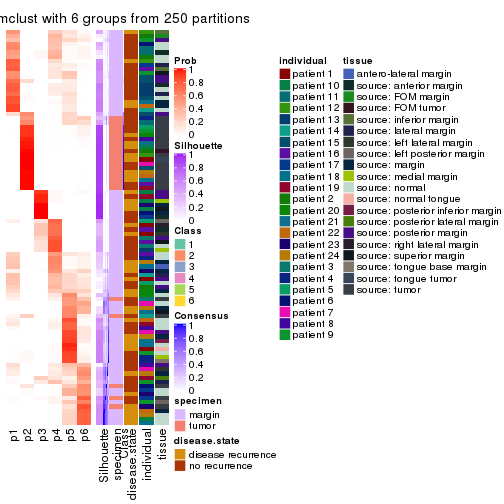
Heatmaps for the membership of samples in all partitions to see how consistent they are:
membership_heatmap(res, k = 2)
membership_heatmap(res, k = 3)
membership_heatmap(res, k = 4)
membership_heatmap(res, k = 5)

membership_heatmap(res, k = 6)
As soon as we have had the classes for columns, we can look for signatures which are significantly different between classes which can be candidate marks for certain classes. Following are the heatmaps for signatures.
Signature heatmaps where rows are scaled:
get_signatures(res, k = 2)
#> Error: The width or height of the raster image is zero, maybe you forget to turn off the
#> previous graphic device or it was corrupted. Run `dev.off()` to close it.

get_signatures(res, k = 3)
#> Error: The width or height of the raster image is zero, maybe you forget to turn off the
#> previous graphic device or it was corrupted. Run `dev.off()` to close it.

get_signatures(res, k = 4)
#> Error: The width or height of the raster image is zero, maybe you forget to turn off the
#> previous graphic device or it was corrupted. Run `dev.off()` to close it.

get_signatures(res, k = 5)
#> Error: The width or height of the raster image is zero, maybe you forget to turn off the
#> previous graphic device or it was corrupted. Run `dev.off()` to close it.

get_signatures(res, k = 6)
#> Error: The width or height of the raster image is zero, maybe you forget to turn off the
#> previous graphic device or it was corrupted. Run `dev.off()` to close it.

Signature heatmaps where rows are not scaled:
get_signatures(res, k = 2, scale_rows = FALSE)
get_signatures(res, k = 3, scale_rows = FALSE)
get_signatures(res, k = 4, scale_rows = FALSE)
get_signatures(res, k = 5, scale_rows = FALSE)
get_signatures(res, k = 6, scale_rows = FALSE)
#> Error in mat[ceiling(1:nr/h_ratio), ceiling(1:nc/w_ratio), drop = FALSE]: subscript out of bounds

Compare the overlap of signatures from different k:
compare_signatures(res)
get_signature() returns a data frame invisibly. TO get the list of signatures, the function
call should be assigned to a variable explicitly. In following code, if plot argument is set
to FALSE, no heatmap is plotted while only the differential analysis is performed.
# code only for demonstration
tb = get_signature(res, k = ..., plot = FALSE)
An example of the output of tb is:
#> which_row fdr mean_1 mean_2 scaled_mean_1 scaled_mean_2 km
#> 1 38 0.042760348 8.373488 9.131774 -0.5533452 0.5164555 1
#> 2 40 0.018707592 7.106213 8.469186 -0.6173731 0.5762149 1
#> 3 55 0.019134737 10.221463 11.207825 -0.6159697 0.5749050 1
#> 4 59 0.006059896 5.921854 7.869574 -0.6899429 0.6439467 1
#> 5 60 0.018055526 8.928898 10.211722 -0.6204761 0.5791110 1
#> 6 98 0.009384629 15.714769 14.887706 0.6635654 -0.6193277 2
...
The columns in tb are:
which_row: row indices corresponding to the input matrix.fdr: FDR for the differential test. mean_x: The mean value in group x.scaled_mean_x: The mean value in group x after rows are scaled.km: Row groups if k-means clustering is applied to rows.UMAP plot which shows how samples are separated.
dimension_reduction(res, k = 2, method = "UMAP")
dimension_reduction(res, k = 3, method = "UMAP")
dimension_reduction(res, k = 4, method = "UMAP")
dimension_reduction(res, k = 5, method = "UMAP")
dimension_reduction(res, k = 6, method = "UMAP")
Following heatmap shows how subgroups are split when increasing k:
collect_classes(res)

Test correlation between subgroups and known annotations. If the known annotation is numeric, one-way ANOVA test is applied, and if the known annotation is discrete, chi-squared contingency table test is applied.
test_to_known_factors(res)
#> n specimen(p) disease.state(p) individual(p) tissue(p) k
#> ATC:mclust 73 3.15e-07 0.922 0.802 3.75e-03 2
#> ATC:mclust 84 1.33e-14 0.960 0.634 1.20e-06 3
#> ATC:mclust 84 1.11e-13 0.297 0.325 1.01e-05 4
#> ATC:mclust 70 4.75e-13 0.300 0.149 2.18e-05 5
#> ATC:mclust 53 1.49e-09 0.163 0.570 3.74e-03 6
If matrix rows can be associated to genes, consider to use functional_enrichment(res,
...) to perform function enrichment for the signature genes. See this vignette for more detailed explanations.
The object with results only for a single top-value method and a single partition method can be extracted as:
res = res_list["ATC", "NMF"]
# you can also extract it by
# res = res_list["ATC:NMF"]
A summary of res and all the functions that can be applied to it:
res
#> A 'ConsensusPartition' object with k = 2, 3, 4, 5, 6.
#> On a matrix with 17783 rows and 96 columns.
#> Top rows (1000, 2000, 3000, 4000, 5000) are extracted by 'ATC' method.
#> Subgroups are detected by 'NMF' method.
#> Performed in total 1250 partitions by row resampling.
#> Best k for subgroups seems to be 3.
#>
#> Following methods can be applied to this 'ConsensusPartition' object:
#> [1] "cola_report" "collect_classes" "collect_plots"
#> [4] "collect_stats" "colnames" "compare_signatures"
#> [7] "consensus_heatmap" "dimension_reduction" "functional_enrichment"
#> [10] "get_anno_col" "get_anno" "get_classes"
#> [13] "get_consensus" "get_matrix" "get_membership"
#> [16] "get_param" "get_signatures" "get_stats"
#> [19] "is_best_k" "is_stable_k" "membership_heatmap"
#> [22] "ncol" "nrow" "plot_ecdf"
#> [25] "rownames" "select_partition_number" "show"
#> [28] "suggest_best_k" "test_to_known_factors"
collect_plots() function collects all the plots made from res for all k (number of partitions)
into one single page to provide an easy and fast comparison between different k.
collect_plots(res)
The plots are:
k and the heatmap of
predicted classes for each k.k.k.k.All the plots in panels can be made by individual functions and they are plotted later in this section.
select_partition_number() produces several plots showing different
statistics for choosing “optimized” k. There are following statistics:
k;k, the area increased is defined as \(A_k - A_{k-1}\).The detailed explanations of these statistics can be found in the cola vignette.
Generally speaking, lower PAC score, higher mean silhouette score or higher
concordance corresponds to better partition. Rand index and Jaccard index
measure how similar the current partition is compared to partition with k-1.
If they are too similar, we won't accept k is better than k-1.
select_partition_number(res)
The numeric values for all these statistics can be obtained by get_stats().
get_stats(res)
#> k 1-PAC mean_silhouette concordance area_increased Rand Jaccard
#> 2 2 0.977 0.946 0.979 0.5031 0.496 0.496
#> 3 3 0.967 0.939 0.977 0.2320 0.611 0.388
#> 4 4 0.806 0.858 0.922 0.2087 0.798 0.516
#> 5 5 0.887 0.874 0.932 0.0663 0.916 0.684
#> 6 6 0.752 0.664 0.815 0.0389 0.908 0.600
suggest_best_k() suggests the best \(k\) based on these statistics. The rules are as follows:
suggest_best_k(res)
#> [1] 3
#> attr(,"optional")
#> [1] 2
There is also optional best \(k\) = 2 that is worth to check.
Following shows the table of the partitions (You need to click the show/hide
code output link to see it). The membership matrix (columns with name p*)
is inferred by
clue::cl_consensus()
function with the SE method. Basically the value in the membership matrix
represents the probability to belong to a certain group. The finall class
label for an item is determined with the group with highest probability it
belongs to.
In get_classes() function, the entropy is calculated from the membership
matrix and the silhouette score is calculated from the consensus matrix.
cbind(get_classes(res, k = 2), get_membership(res, k = 2))
#> class entropy silhouette p1 p2
#> GSM771247 1 0.0000 0.986 1.000 0.000
#> GSM771246 1 0.0000 0.986 1.000 0.000
#> GSM771245 1 0.0000 0.986 1.000 0.000
#> GSM771169 1 0.0000 0.986 1.000 0.000
#> GSM771171 1 0.0000 0.986 1.000 0.000
#> GSM771175 2 0.0000 0.969 0.000 1.000
#> GSM771172 1 0.0000 0.986 1.000 0.000
#> GSM771174 2 0.0000 0.969 0.000 1.000
#> GSM771178 1 0.0000 0.986 1.000 0.000
#> GSM771176 1 0.0000 0.986 1.000 0.000
#> GSM771181 1 0.0000 0.986 1.000 0.000
#> GSM771179 1 0.0376 0.983 0.996 0.004
#> GSM771184 1 0.0000 0.986 1.000 0.000
#> GSM771182 2 0.0000 0.969 0.000 1.000
#> GSM771185 2 0.0000 0.969 0.000 1.000
#> GSM771186 2 0.0000 0.969 0.000 1.000
#> GSM771188 1 0.0000 0.986 1.000 0.000
#> GSM771193 1 0.0000 0.986 1.000 0.000
#> GSM771192 1 0.0000 0.986 1.000 0.000
#> GSM771189 2 0.0000 0.969 0.000 1.000
#> GSM771194 1 0.0000 0.986 1.000 0.000
#> GSM771191 2 0.0000 0.969 0.000 1.000
#> GSM771202 1 0.0000 0.986 1.000 0.000
#> GSM771200 1 0.0000 0.986 1.000 0.000
#> GSM771206 1 0.1414 0.970 0.980 0.020
#> GSM771208 2 0.0000 0.969 0.000 1.000
#> GSM771207 1 0.0000 0.986 1.000 0.000
#> GSM771209 1 0.1414 0.970 0.980 0.020
#> GSM771211 1 0.0000 0.986 1.000 0.000
#> GSM771212 2 0.0000 0.969 0.000 1.000
#> GSM771214 2 0.0000 0.969 0.000 1.000
#> GSM771213 2 0.0000 0.969 0.000 1.000
#> GSM771216 2 0.0000 0.969 0.000 1.000
#> GSM771217 2 0.0000 0.969 0.000 1.000
#> GSM771219 1 0.0000 0.986 1.000 0.000
#> GSM771218 1 0.0000 0.986 1.000 0.000
#> GSM771222 1 0.0000 0.986 1.000 0.000
#> GSM771220 1 0.0000 0.986 1.000 0.000
#> GSM771226 1 0.0000 0.986 1.000 0.000
#> GSM771223 1 0.0000 0.986 1.000 0.000
#> GSM771225 2 0.0000 0.969 0.000 1.000
#> GSM771232 2 0.0000 0.969 0.000 1.000
#> GSM771235 1 0.0000 0.986 1.000 0.000
#> GSM771234 1 0.0000 0.986 1.000 0.000
#> GSM771242 1 0.0000 0.986 1.000 0.000
#> GSM771239 2 0.0000 0.969 0.000 1.000
#> GSM771240 1 0.0000 0.986 1.000 0.000
#> GSM771241 1 0.0000 0.986 1.000 0.000
#> GSM771197 1 0.0000 0.986 1.000 0.000
#> GSM771195 2 0.9944 0.165 0.456 0.544
#> GSM771198 1 0.0000 0.986 1.000 0.000
#> GSM771199 1 0.0000 0.986 1.000 0.000
#> GSM771204 1 0.0000 0.986 1.000 0.000
#> GSM771205 1 0.0000 0.986 1.000 0.000
#> GSM771229 1 0.0000 0.986 1.000 0.000
#> GSM771227 1 0.6048 0.827 0.852 0.148
#> GSM771230 2 0.0000 0.969 0.000 1.000
#> GSM771231 1 0.4298 0.901 0.912 0.088
#> GSM771238 1 0.0000 0.986 1.000 0.000
#> GSM771236 1 0.0000 0.986 1.000 0.000
#> GSM771154 2 0.9954 0.153 0.460 0.540
#> GSM771152 2 0.0000 0.969 0.000 1.000
#> GSM771156 2 0.9427 0.437 0.360 0.640
#> GSM771157 2 0.4562 0.872 0.096 0.904
#> GSM771155 2 0.0376 0.965 0.004 0.996
#> GSM771160 1 0.0000 0.986 1.000 0.000
#> GSM771161 1 0.0000 0.986 1.000 0.000
#> GSM771159 2 0.0000 0.969 0.000 1.000
#> GSM771165 2 0.0000 0.969 0.000 1.000
#> GSM771166 1 0.0000 0.986 1.000 0.000
#> GSM771167 1 0.1633 0.966 0.976 0.024
#> GSM771168 1 0.0000 0.986 1.000 0.000
#> GSM771163 1 0.4815 0.883 0.896 0.104
#> GSM771244 2 0.0000 0.969 0.000 1.000
#> GSM771170 1 0.8327 0.640 0.736 0.264
#> GSM771173 2 0.0000 0.969 0.000 1.000
#> GSM771177 2 0.0000 0.969 0.000 1.000
#> GSM771180 2 0.0000 0.969 0.000 1.000
#> GSM771183 2 0.0000 0.969 0.000 1.000
#> GSM771187 2 0.0000 0.969 0.000 1.000
#> GSM771190 2 0.0000 0.969 0.000 1.000
#> GSM771201 2 0.0000 0.969 0.000 1.000
#> GSM771210 2 0.0000 0.969 0.000 1.000
#> GSM771215 2 0.0000 0.969 0.000 1.000
#> GSM771221 2 0.0000 0.969 0.000 1.000
#> GSM771224 1 0.0000 0.986 1.000 0.000
#> GSM771233 2 0.0000 0.969 0.000 1.000
#> GSM771243 2 0.0000 0.969 0.000 1.000
#> GSM771196 2 0.0000 0.969 0.000 1.000
#> GSM771203 2 0.0000 0.969 0.000 1.000
#> GSM771228 2 0.0000 0.969 0.000 1.000
#> GSM771237 2 0.0000 0.969 0.000 1.000
#> GSM771153 2 0.0000 0.969 0.000 1.000
#> GSM771158 2 0.0000 0.969 0.000 1.000
#> GSM771162 2 0.0000 0.969 0.000 1.000
#> GSM771164 2 0.0000 0.969 0.000 1.000
cbind(get_classes(res, k = 3), get_membership(res, k = 3))
#> class entropy silhouette p1 p2 p3
#> GSM771247 1 0.0000 0.9660 1.000 0.000 0.000
#> GSM771246 1 0.0000 0.9660 1.000 0.000 0.000
#> GSM771245 1 0.0000 0.9660 1.000 0.000 0.000
#> GSM771169 3 0.0000 0.9770 0.000 0.000 1.000
#> GSM771171 3 0.0000 0.9770 0.000 0.000 1.000
#> GSM771175 1 0.0000 0.9660 1.000 0.000 0.000
#> GSM771172 1 0.6215 0.2535 0.572 0.000 0.428
#> GSM771174 1 0.0000 0.9660 1.000 0.000 0.000
#> GSM771178 3 0.1163 0.9460 0.028 0.000 0.972
#> GSM771176 1 0.0000 0.9660 1.000 0.000 0.000
#> GSM771181 3 0.0000 0.9770 0.000 0.000 1.000
#> GSM771179 1 0.0000 0.9660 1.000 0.000 0.000
#> GSM771184 3 0.5810 0.4683 0.336 0.000 0.664
#> GSM771182 1 0.0000 0.9660 1.000 0.000 0.000
#> GSM771185 1 0.0000 0.9660 1.000 0.000 0.000
#> GSM771186 1 0.0424 0.9596 0.992 0.008 0.000
#> GSM771188 1 0.0000 0.9660 1.000 0.000 0.000
#> GSM771193 3 0.0000 0.9770 0.000 0.000 1.000
#> GSM771192 1 0.3038 0.8636 0.896 0.000 0.104
#> GSM771189 1 0.0237 0.9628 0.996 0.004 0.000
#> GSM771194 1 0.0000 0.9660 1.000 0.000 0.000
#> GSM771191 1 0.0000 0.9660 1.000 0.000 0.000
#> GSM771202 1 0.0000 0.9660 1.000 0.000 0.000
#> GSM771200 1 0.0000 0.9660 1.000 0.000 0.000
#> GSM771206 1 0.0000 0.9660 1.000 0.000 0.000
#> GSM771208 1 0.0000 0.9660 1.000 0.000 0.000
#> GSM771207 3 0.0000 0.9770 0.000 0.000 1.000
#> GSM771209 1 0.0000 0.9660 1.000 0.000 0.000
#> GSM771211 1 0.0000 0.9660 1.000 0.000 0.000
#> GSM771212 1 0.0000 0.9660 1.000 0.000 0.000
#> GSM771214 1 0.0000 0.9660 1.000 0.000 0.000
#> GSM771213 1 0.4605 0.7367 0.796 0.204 0.000
#> GSM771216 2 0.2066 0.9167 0.060 0.940 0.000
#> GSM771217 1 0.0000 0.9660 1.000 0.000 0.000
#> GSM771219 3 0.0000 0.9770 0.000 0.000 1.000
#> GSM771218 1 0.0000 0.9660 1.000 0.000 0.000
#> GSM771222 1 0.5968 0.4267 0.636 0.000 0.364
#> GSM771220 3 0.0000 0.9770 0.000 0.000 1.000
#> GSM771226 3 0.0000 0.9770 0.000 0.000 1.000
#> GSM771223 1 0.0000 0.9660 1.000 0.000 0.000
#> GSM771225 2 0.0000 0.9874 0.000 1.000 0.000
#> GSM771232 1 0.0000 0.9660 1.000 0.000 0.000
#> GSM771235 3 0.0000 0.9770 0.000 0.000 1.000
#> GSM771234 3 0.0000 0.9770 0.000 0.000 1.000
#> GSM771242 3 0.0000 0.9770 0.000 0.000 1.000
#> GSM771239 1 0.0000 0.9660 1.000 0.000 0.000
#> GSM771240 1 0.0000 0.9660 1.000 0.000 0.000
#> GSM771241 3 0.0000 0.9770 0.000 0.000 1.000
#> GSM771197 3 0.0000 0.9770 0.000 0.000 1.000
#> GSM771195 1 0.0000 0.9660 1.000 0.000 0.000
#> GSM771198 3 0.0000 0.9770 0.000 0.000 1.000
#> GSM771199 3 0.0000 0.9770 0.000 0.000 1.000
#> GSM771204 1 0.0000 0.9660 1.000 0.000 0.000
#> GSM771205 1 0.0000 0.9660 1.000 0.000 0.000
#> GSM771229 1 0.0424 0.9596 0.992 0.000 0.008
#> GSM771227 1 0.0000 0.9660 1.000 0.000 0.000
#> GSM771230 1 0.0000 0.9660 1.000 0.000 0.000
#> GSM771231 1 0.0000 0.9660 1.000 0.000 0.000
#> GSM771238 1 0.0000 0.9660 1.000 0.000 0.000
#> GSM771236 1 0.0000 0.9660 1.000 0.000 0.000
#> GSM771154 1 0.0000 0.9660 1.000 0.000 0.000
#> GSM771152 1 0.0000 0.9660 1.000 0.000 0.000
#> GSM771156 1 0.6299 0.0732 0.524 0.476 0.000
#> GSM771157 1 0.0000 0.9660 1.000 0.000 0.000
#> GSM771155 1 0.0000 0.9660 1.000 0.000 0.000
#> GSM771160 3 0.0000 0.9770 0.000 0.000 1.000
#> GSM771161 3 0.0000 0.9770 0.000 0.000 1.000
#> GSM771159 2 0.0000 0.9874 0.000 1.000 0.000
#> GSM771165 1 0.0000 0.9660 1.000 0.000 0.000
#> GSM771166 3 0.0000 0.9770 0.000 0.000 1.000
#> GSM771167 1 0.0000 0.9660 1.000 0.000 0.000
#> GSM771168 1 0.1289 0.9382 0.968 0.000 0.032
#> GSM771163 1 0.0000 0.9660 1.000 0.000 0.000
#> GSM771244 2 0.0000 0.9874 0.000 1.000 0.000
#> GSM771170 1 0.0000 0.9660 1.000 0.000 0.000
#> GSM771173 2 0.0000 0.9874 0.000 1.000 0.000
#> GSM771177 2 0.0000 0.9874 0.000 1.000 0.000
#> GSM771180 2 0.0000 0.9874 0.000 1.000 0.000
#> GSM771183 2 0.0000 0.9874 0.000 1.000 0.000
#> GSM771187 2 0.0000 0.9874 0.000 1.000 0.000
#> GSM771190 2 0.0000 0.9874 0.000 1.000 0.000
#> GSM771201 2 0.0000 0.9874 0.000 1.000 0.000
#> GSM771210 2 0.4062 0.7771 0.164 0.836 0.000
#> GSM771215 2 0.0000 0.9874 0.000 1.000 0.000
#> GSM771221 2 0.0000 0.9874 0.000 1.000 0.000
#> GSM771224 3 0.0000 0.9770 0.000 0.000 1.000
#> GSM771233 2 0.0000 0.9874 0.000 1.000 0.000
#> GSM771243 2 0.0000 0.9874 0.000 1.000 0.000
#> GSM771196 2 0.0000 0.9874 0.000 1.000 0.000
#> GSM771203 2 0.0000 0.9874 0.000 1.000 0.000
#> GSM771228 2 0.0000 0.9874 0.000 1.000 0.000
#> GSM771237 2 0.0000 0.9874 0.000 1.000 0.000
#> GSM771153 2 0.0000 0.9874 0.000 1.000 0.000
#> GSM771158 2 0.0000 0.9874 0.000 1.000 0.000
#> GSM771162 2 0.0000 0.9874 0.000 1.000 0.000
#> GSM771164 2 0.0000 0.9874 0.000 1.000 0.000
cbind(get_classes(res, k = 4), get_membership(res, k = 4))
#> class entropy silhouette p1 p2 p3 p4
#> GSM771247 4 0.1022 0.9030 0.032 0.000 0.000 0.968
#> GSM771246 4 0.1854 0.9082 0.048 0.000 0.012 0.940
#> GSM771245 4 0.3123 0.8437 0.156 0.000 0.000 0.844
#> GSM771169 3 0.0000 0.9361 0.000 0.000 1.000 0.000
#> GSM771171 3 0.0000 0.9361 0.000 0.000 1.000 0.000
#> GSM771175 1 0.3610 0.7606 0.800 0.000 0.000 0.200
#> GSM771172 3 0.5353 0.1874 0.012 0.000 0.556 0.432
#> GSM771174 1 0.4977 0.0765 0.540 0.000 0.000 0.460
#> GSM771178 3 0.1302 0.9002 0.000 0.000 0.956 0.044
#> GSM771176 4 0.3597 0.8419 0.148 0.000 0.016 0.836
#> GSM771181 3 0.0000 0.9361 0.000 0.000 1.000 0.000
#> GSM771179 4 0.1637 0.9082 0.060 0.000 0.000 0.940
#> GSM771184 1 0.3870 0.7177 0.788 0.000 0.208 0.004
#> GSM771182 1 0.0592 0.8701 0.984 0.000 0.000 0.016
#> GSM771185 1 0.2530 0.8236 0.888 0.000 0.000 0.112
#> GSM771186 1 0.2892 0.8547 0.896 0.036 0.000 0.068
#> GSM771188 4 0.7062 0.5049 0.260 0.000 0.176 0.564
#> GSM771193 3 0.0000 0.9361 0.000 0.000 1.000 0.000
#> GSM771192 1 0.2124 0.8506 0.924 0.000 0.068 0.008
#> GSM771189 1 0.4406 0.7708 0.780 0.028 0.000 0.192
#> GSM771194 4 0.3123 0.8437 0.156 0.000 0.000 0.844
#> GSM771191 4 0.1474 0.8912 0.052 0.000 0.000 0.948
#> GSM771202 4 0.1637 0.9082 0.060 0.000 0.000 0.940
#> GSM771200 4 0.1637 0.9082 0.060 0.000 0.000 0.940
#> GSM771206 4 0.0336 0.9063 0.008 0.000 0.000 0.992
#> GSM771208 4 0.1637 0.9082 0.060 0.000 0.000 0.940
#> GSM771207 3 0.0000 0.9361 0.000 0.000 1.000 0.000
#> GSM771209 4 0.1637 0.9082 0.060 0.000 0.000 0.940
#> GSM771211 4 0.2408 0.9030 0.104 0.000 0.000 0.896
#> GSM771212 4 0.1474 0.9097 0.052 0.000 0.000 0.948
#> GSM771214 4 0.0817 0.9091 0.024 0.000 0.000 0.976
#> GSM771213 4 0.3978 0.7474 0.012 0.192 0.000 0.796
#> GSM771216 2 0.1004 0.9504 0.004 0.972 0.000 0.024
#> GSM771217 4 0.1474 0.9111 0.052 0.000 0.000 0.948
#> GSM771219 3 0.0000 0.9361 0.000 0.000 1.000 0.000
#> GSM771218 4 0.0592 0.9033 0.016 0.000 0.000 0.984
#> GSM771222 3 0.6214 -0.0478 0.052 0.000 0.480 0.468
#> GSM771220 3 0.0000 0.9361 0.000 0.000 1.000 0.000
#> GSM771226 3 0.0000 0.9361 0.000 0.000 1.000 0.000
#> GSM771223 4 0.2281 0.8781 0.096 0.000 0.000 0.904
#> GSM771225 1 0.3649 0.7387 0.796 0.204 0.000 0.000
#> GSM771232 1 0.4843 0.3576 0.604 0.000 0.000 0.396
#> GSM771235 3 0.0000 0.9361 0.000 0.000 1.000 0.000
#> GSM771234 3 0.0000 0.9361 0.000 0.000 1.000 0.000
#> GSM771242 3 0.0000 0.9361 0.000 0.000 1.000 0.000
#> GSM771239 1 0.1389 0.8689 0.952 0.000 0.000 0.048
#> GSM771240 4 0.3123 0.8435 0.156 0.000 0.000 0.844
#> GSM771241 3 0.0000 0.9361 0.000 0.000 1.000 0.000
#> GSM771197 3 0.0000 0.9361 0.000 0.000 1.000 0.000
#> GSM771195 1 0.1151 0.8720 0.968 0.008 0.000 0.024
#> GSM771198 3 0.0000 0.9361 0.000 0.000 1.000 0.000
#> GSM771199 3 0.0000 0.9361 0.000 0.000 1.000 0.000
#> GSM771204 4 0.2647 0.8663 0.120 0.000 0.000 0.880
#> GSM771205 4 0.1637 0.9082 0.060 0.000 0.000 0.940
#> GSM771229 4 0.2222 0.9040 0.060 0.000 0.016 0.924
#> GSM771227 1 0.1022 0.8712 0.968 0.000 0.000 0.032
#> GSM771230 1 0.1022 0.8667 0.968 0.000 0.000 0.032
#> GSM771231 1 0.1716 0.8424 0.936 0.000 0.000 0.064
#> GSM771238 4 0.3172 0.8406 0.160 0.000 0.000 0.840
#> GSM771236 1 0.2081 0.8518 0.916 0.000 0.000 0.084
#> GSM771154 4 0.0188 0.9052 0.004 0.000 0.000 0.996
#> GSM771152 1 0.1474 0.8686 0.948 0.000 0.000 0.052
#> GSM771156 1 0.0927 0.8690 0.976 0.016 0.000 0.008
#> GSM771157 4 0.1389 0.9102 0.048 0.000 0.000 0.952
#> GSM771155 4 0.2760 0.8896 0.128 0.000 0.000 0.872
#> GSM771160 3 0.0000 0.9361 0.000 0.000 1.000 0.000
#> GSM771161 3 0.4055 0.7861 0.108 0.000 0.832 0.060
#> GSM771159 1 0.3610 0.7427 0.800 0.200 0.000 0.000
#> GSM771165 1 0.1022 0.8685 0.968 0.000 0.000 0.032
#> GSM771166 3 0.0336 0.9304 0.008 0.000 0.992 0.000
#> GSM771167 1 0.1716 0.8424 0.936 0.000 0.000 0.064
#> GSM771168 4 0.3168 0.8794 0.060 0.000 0.056 0.884
#> GSM771163 1 0.1022 0.8712 0.968 0.000 0.000 0.032
#> GSM771244 2 0.0000 0.9784 0.000 1.000 0.000 0.000
#> GSM771170 1 0.1474 0.8681 0.948 0.000 0.000 0.052
#> GSM771173 2 0.4522 0.4602 0.320 0.680 0.000 0.000
#> GSM771177 2 0.0000 0.9784 0.000 1.000 0.000 0.000
#> GSM771180 1 0.3688 0.7318 0.792 0.208 0.000 0.000
#> GSM771183 2 0.0000 0.9784 0.000 1.000 0.000 0.000
#> GSM771187 2 0.0000 0.9784 0.000 1.000 0.000 0.000
#> GSM771190 2 0.0000 0.9784 0.000 1.000 0.000 0.000
#> GSM771201 2 0.0000 0.9784 0.000 1.000 0.000 0.000
#> GSM771210 2 0.0657 0.9638 0.012 0.984 0.000 0.004
#> GSM771215 2 0.0000 0.9784 0.000 1.000 0.000 0.000
#> GSM771221 2 0.0000 0.9784 0.000 1.000 0.000 0.000
#> GSM771224 3 0.1022 0.9099 0.032 0.000 0.968 0.000
#> GSM771233 2 0.0000 0.9784 0.000 1.000 0.000 0.000
#> GSM771243 2 0.0000 0.9784 0.000 1.000 0.000 0.000
#> GSM771196 2 0.0000 0.9784 0.000 1.000 0.000 0.000
#> GSM771203 2 0.0000 0.9784 0.000 1.000 0.000 0.000
#> GSM771228 2 0.0000 0.9784 0.000 1.000 0.000 0.000
#> GSM771237 2 0.0000 0.9784 0.000 1.000 0.000 0.000
#> GSM771153 2 0.0000 0.9784 0.000 1.000 0.000 0.000
#> GSM771158 2 0.0000 0.9784 0.000 1.000 0.000 0.000
#> GSM771162 1 0.3764 0.7221 0.784 0.216 0.000 0.000
#> GSM771164 2 0.0000 0.9784 0.000 1.000 0.000 0.000
cbind(get_classes(res, k = 5), get_membership(res, k = 5))
#> class entropy silhouette p1 p2 p3 p4 p5
#> GSM771247 4 0.2891 0.777 0.176 0.000 0.000 0.824 0.000
#> GSM771246 1 0.0451 0.896 0.988 0.000 0.008 0.004 0.000
#> GSM771245 4 0.0324 0.961 0.004 0.000 0.000 0.992 0.004
#> GSM771169 3 0.0162 0.989 0.000 0.000 0.996 0.004 0.000
#> GSM771171 3 0.0000 0.990 0.000 0.000 1.000 0.000 0.000
#> GSM771175 5 0.4201 0.721 0.204 0.000 0.000 0.044 0.752
#> GSM771172 1 0.4375 0.296 0.576 0.000 0.420 0.000 0.004
#> GSM771174 5 0.5949 0.405 0.348 0.000 0.000 0.120 0.532
#> GSM771178 3 0.0162 0.987 0.004 0.000 0.996 0.000 0.000
#> GSM771176 4 0.0510 0.962 0.016 0.000 0.000 0.984 0.000
#> GSM771181 3 0.0000 0.990 0.000 0.000 1.000 0.000 0.000
#> GSM771179 1 0.0162 0.894 0.996 0.000 0.000 0.000 0.004
#> GSM771184 5 0.3120 0.814 0.048 0.000 0.084 0.004 0.864
#> GSM771182 5 0.0162 0.859 0.000 0.000 0.000 0.004 0.996
#> GSM771185 5 0.3612 0.710 0.008 0.000 0.000 0.228 0.764
#> GSM771186 5 0.2179 0.839 0.112 0.000 0.000 0.000 0.888
#> GSM771188 4 0.1908 0.930 0.024 0.000 0.024 0.936 0.016
#> GSM771193 3 0.0000 0.990 0.000 0.000 1.000 0.000 0.000
#> GSM771192 5 0.1026 0.863 0.024 0.000 0.004 0.004 0.968
#> GSM771189 5 0.5054 0.543 0.324 0.008 0.000 0.036 0.632
#> GSM771194 4 0.0324 0.961 0.004 0.000 0.000 0.992 0.004
#> GSM771191 4 0.0880 0.952 0.032 0.000 0.000 0.968 0.000
#> GSM771202 1 0.0000 0.896 1.000 0.000 0.000 0.000 0.000
#> GSM771200 1 0.0162 0.894 0.996 0.000 0.000 0.000 0.004
#> GSM771206 1 0.2377 0.851 0.872 0.000 0.000 0.128 0.000
#> GSM771208 1 0.0963 0.893 0.964 0.000 0.000 0.036 0.000
#> GSM771207 3 0.0162 0.989 0.000 0.000 0.996 0.004 0.000
#> GSM771209 1 0.0162 0.896 0.996 0.000 0.000 0.004 0.000
#> GSM771211 1 0.2280 0.859 0.880 0.000 0.000 0.120 0.000
#> GSM771212 1 0.1121 0.893 0.956 0.000 0.000 0.044 0.000
#> GSM771214 1 0.1872 0.887 0.928 0.020 0.000 0.052 0.000
#> GSM771213 1 0.2293 0.854 0.900 0.084 0.000 0.016 0.000
#> GSM771216 2 0.3796 0.551 0.300 0.700 0.000 0.000 0.000
#> GSM771217 1 0.1792 0.879 0.916 0.000 0.000 0.084 0.000
#> GSM771219 3 0.0000 0.990 0.000 0.000 1.000 0.000 0.000
#> GSM771218 1 0.3274 0.753 0.780 0.000 0.000 0.220 0.000
#> GSM771222 1 0.3756 0.663 0.744 0.000 0.248 0.000 0.008
#> GSM771220 3 0.0451 0.982 0.008 0.000 0.988 0.004 0.000
#> GSM771226 3 0.0000 0.990 0.000 0.000 1.000 0.000 0.000
#> GSM771223 4 0.0510 0.962 0.016 0.000 0.000 0.984 0.000
#> GSM771225 5 0.0880 0.861 0.032 0.000 0.000 0.000 0.968
#> GSM771232 1 0.3274 0.676 0.780 0.000 0.000 0.000 0.220
#> GSM771235 3 0.0162 0.989 0.000 0.000 0.996 0.004 0.000
#> GSM771234 3 0.0000 0.990 0.000 0.000 1.000 0.000 0.000
#> GSM771242 3 0.0000 0.990 0.000 0.000 1.000 0.000 0.000
#> GSM771239 5 0.1544 0.858 0.068 0.000 0.000 0.000 0.932
#> GSM771240 4 0.0324 0.961 0.004 0.000 0.000 0.992 0.004
#> GSM771241 3 0.0000 0.990 0.000 0.000 1.000 0.000 0.000
#> GSM771197 3 0.0000 0.990 0.000 0.000 1.000 0.000 0.000
#> GSM771195 5 0.0510 0.861 0.016 0.000 0.000 0.000 0.984
#> GSM771198 3 0.0000 0.990 0.000 0.000 1.000 0.000 0.000
#> GSM771199 3 0.0000 0.990 0.000 0.000 1.000 0.000 0.000
#> GSM771204 4 0.0609 0.960 0.020 0.000 0.000 0.980 0.000
#> GSM771205 1 0.0000 0.896 1.000 0.000 0.000 0.000 0.000
#> GSM771229 1 0.0566 0.893 0.984 0.000 0.012 0.000 0.004
#> GSM771227 5 0.0703 0.862 0.024 0.000 0.000 0.000 0.976
#> GSM771230 5 0.1310 0.859 0.020 0.000 0.000 0.024 0.956
#> GSM771231 5 0.4138 0.437 0.000 0.000 0.000 0.384 0.616
#> GSM771238 4 0.0162 0.960 0.000 0.000 0.004 0.996 0.000
#> GSM771236 5 0.1792 0.848 0.084 0.000 0.000 0.000 0.916
#> GSM771154 1 0.2424 0.847 0.868 0.000 0.000 0.132 0.000
#> GSM771152 5 0.1942 0.850 0.068 0.000 0.000 0.012 0.920
#> GSM771156 5 0.0290 0.858 0.000 0.000 0.000 0.008 0.992
#> GSM771157 1 0.1197 0.892 0.952 0.000 0.000 0.048 0.000
#> GSM771155 1 0.1836 0.889 0.932 0.000 0.000 0.036 0.032
#> GSM771160 3 0.0000 0.990 0.000 0.000 1.000 0.000 0.000
#> GSM771161 4 0.1197 0.925 0.000 0.000 0.048 0.952 0.000
#> GSM771159 5 0.1041 0.861 0.032 0.004 0.000 0.000 0.964
#> GSM771165 5 0.1399 0.858 0.020 0.000 0.000 0.028 0.952
#> GSM771166 3 0.0324 0.986 0.000 0.000 0.992 0.004 0.004
#> GSM771167 5 0.4287 0.249 0.000 0.000 0.000 0.460 0.540
#> GSM771168 1 0.1124 0.882 0.960 0.000 0.036 0.000 0.004
#> GSM771163 5 0.0703 0.862 0.024 0.000 0.000 0.000 0.976
#> GSM771244 2 0.0000 0.973 0.000 1.000 0.000 0.000 0.000
#> GSM771170 5 0.1341 0.858 0.056 0.000 0.000 0.000 0.944
#> GSM771173 5 0.4262 0.277 0.000 0.440 0.000 0.000 0.560
#> GSM771177 2 0.0000 0.973 0.000 1.000 0.000 0.000 0.000
#> GSM771180 5 0.0771 0.855 0.000 0.020 0.000 0.004 0.976
#> GSM771183 2 0.0000 0.973 0.000 1.000 0.000 0.000 0.000
#> GSM771187 2 0.0000 0.973 0.000 1.000 0.000 0.000 0.000
#> GSM771190 2 0.0000 0.973 0.000 1.000 0.000 0.000 0.000
#> GSM771201 2 0.0290 0.965 0.000 0.992 0.000 0.000 0.008
#> GSM771210 2 0.2280 0.853 0.000 0.880 0.000 0.120 0.000
#> GSM771215 2 0.0000 0.973 0.000 1.000 0.000 0.000 0.000
#> GSM771221 2 0.0000 0.973 0.000 1.000 0.000 0.000 0.000
#> GSM771224 3 0.2439 0.842 0.000 0.000 0.876 0.004 0.120
#> GSM771233 2 0.0000 0.973 0.000 1.000 0.000 0.000 0.000
#> GSM771243 2 0.0000 0.973 0.000 1.000 0.000 0.000 0.000
#> GSM771196 2 0.0000 0.973 0.000 1.000 0.000 0.000 0.000
#> GSM771203 2 0.0000 0.973 0.000 1.000 0.000 0.000 0.000
#> GSM771228 2 0.0000 0.973 0.000 1.000 0.000 0.000 0.000
#> GSM771237 2 0.0000 0.973 0.000 1.000 0.000 0.000 0.000
#> GSM771153 2 0.0000 0.973 0.000 1.000 0.000 0.000 0.000
#> GSM771158 2 0.0000 0.973 0.000 1.000 0.000 0.000 0.000
#> GSM771162 5 0.0451 0.858 0.000 0.008 0.000 0.004 0.988
#> GSM771164 2 0.0000 0.973 0.000 1.000 0.000 0.000 0.000
cbind(get_classes(res, k = 6), get_membership(res, k = 6))
#> class entropy silhouette p1 p2 p3 p4 p5 p6
#> GSM771247 4 0.5557 0.2666 0.340 0.000 0.000 0.532 0.008 0.120
#> GSM771246 1 0.4599 0.6008 0.648 0.000 0.056 0.004 0.000 0.292
#> GSM771245 4 0.0000 0.7891 0.000 0.000 0.000 1.000 0.000 0.000
#> GSM771169 3 0.3695 0.3715 0.376 0.000 0.624 0.000 0.000 0.000
#> GSM771171 3 0.3309 0.5774 0.280 0.000 0.720 0.000 0.000 0.000
#> GSM771175 5 0.4630 0.3088 0.028 0.000 0.000 0.008 0.560 0.404
#> GSM771172 1 0.4957 0.6078 0.648 0.000 0.204 0.000 0.000 0.148
#> GSM771174 6 0.6474 0.2241 0.028 0.000 0.000 0.232 0.296 0.444
#> GSM771178 1 0.4070 0.1628 0.568 0.000 0.424 0.004 0.000 0.004
#> GSM771176 4 0.3828 0.1130 0.440 0.000 0.000 0.560 0.000 0.000
#> GSM771181 3 0.0000 0.8792 0.000 0.000 1.000 0.000 0.000 0.000
#> GSM771179 1 0.3857 0.3180 0.532 0.000 0.000 0.000 0.000 0.468
#> GSM771184 1 0.5493 0.3305 0.576 0.000 0.136 0.000 0.280 0.008
#> GSM771182 5 0.2489 0.7820 0.128 0.000 0.000 0.000 0.860 0.012
#> GSM771185 5 0.5227 0.2674 0.008 0.000 0.000 0.408 0.512 0.072
#> GSM771186 5 0.4026 0.6897 0.160 0.000 0.000 0.000 0.752 0.088
#> GSM771188 1 0.4474 0.2714 0.608 0.000 0.020 0.360 0.012 0.000
#> GSM771193 3 0.0291 0.8762 0.004 0.000 0.992 0.004 0.000 0.000
#> GSM771192 5 0.1707 0.7777 0.056 0.000 0.004 0.000 0.928 0.012
#> GSM771189 6 0.4306 0.3598 0.032 0.000 0.000 0.004 0.308 0.656
#> GSM771194 4 0.0146 0.7886 0.004 0.000 0.000 0.996 0.000 0.000
#> GSM771191 4 0.3620 0.3345 0.000 0.000 0.000 0.648 0.000 0.352
#> GSM771202 1 0.3965 0.4856 0.616 0.000 0.004 0.004 0.000 0.376
#> GSM771200 1 0.3782 0.5188 0.636 0.000 0.000 0.004 0.000 0.360
#> GSM771206 6 0.5083 0.4644 0.116 0.000 0.000 0.280 0.000 0.604
#> GSM771208 6 0.1204 0.7047 0.056 0.000 0.000 0.000 0.000 0.944
#> GSM771207 3 0.3950 0.2136 0.432 0.000 0.564 0.004 0.000 0.000
#> GSM771209 6 0.3198 0.4735 0.260 0.000 0.000 0.000 0.000 0.740
#> GSM771211 1 0.6025 0.2432 0.472 0.000 0.000 0.200 0.008 0.320
#> GSM771212 6 0.1196 0.7143 0.040 0.000 0.000 0.008 0.000 0.952
#> GSM771214 6 0.0922 0.7140 0.024 0.004 0.000 0.004 0.000 0.968
#> GSM771213 6 0.0951 0.7107 0.008 0.020 0.000 0.000 0.004 0.968
#> GSM771216 6 0.3514 0.6002 0.028 0.144 0.000 0.000 0.020 0.808
#> GSM771217 6 0.1503 0.7134 0.032 0.000 0.000 0.008 0.016 0.944
#> GSM771219 3 0.0000 0.8792 0.000 0.000 1.000 0.000 0.000 0.000
#> GSM771218 4 0.5850 -0.0859 0.192 0.000 0.000 0.424 0.000 0.384
#> GSM771222 1 0.5246 0.6105 0.608 0.000 0.180 0.000 0.000 0.212
#> GSM771220 3 0.3409 0.5424 0.300 0.000 0.700 0.000 0.000 0.000
#> GSM771226 3 0.0000 0.8792 0.000 0.000 1.000 0.000 0.000 0.000
#> GSM771223 4 0.0000 0.7891 0.000 0.000 0.000 1.000 0.000 0.000
#> GSM771225 5 0.4599 0.7095 0.212 0.000 0.000 0.000 0.684 0.104
#> GSM771232 6 0.4810 0.4568 0.292 0.000 0.000 0.000 0.084 0.624
#> GSM771235 3 0.0935 0.8551 0.032 0.000 0.964 0.000 0.004 0.000
#> GSM771234 3 0.0000 0.8792 0.000 0.000 1.000 0.000 0.000 0.000
#> GSM771242 3 0.0000 0.8792 0.000 0.000 1.000 0.000 0.000 0.000
#> GSM771239 5 0.4518 0.6899 0.104 0.000 0.000 0.000 0.696 0.200
#> GSM771240 4 0.0000 0.7891 0.000 0.000 0.000 1.000 0.000 0.000
#> GSM771241 3 0.0000 0.8792 0.000 0.000 1.000 0.000 0.000 0.000
#> GSM771197 3 0.0000 0.8792 0.000 0.000 1.000 0.000 0.000 0.000
#> GSM771195 5 0.2219 0.7756 0.136 0.000 0.000 0.000 0.864 0.000
#> GSM771198 3 0.0000 0.8792 0.000 0.000 1.000 0.000 0.000 0.000
#> GSM771199 3 0.0000 0.8792 0.000 0.000 1.000 0.000 0.000 0.000
#> GSM771204 4 0.0146 0.7880 0.004 0.000 0.000 0.996 0.000 0.000
#> GSM771205 6 0.3930 -0.1046 0.420 0.000 0.000 0.004 0.000 0.576
#> GSM771229 1 0.4865 0.6157 0.632 0.000 0.080 0.004 0.000 0.284
#> GSM771227 5 0.2597 0.7625 0.176 0.000 0.000 0.000 0.824 0.000
#> GSM771230 5 0.1434 0.7849 0.020 0.000 0.000 0.008 0.948 0.024
#> GSM771231 5 0.4838 0.4236 0.064 0.000 0.000 0.372 0.564 0.000
#> GSM771238 4 0.0260 0.7877 0.008 0.000 0.000 0.992 0.000 0.000
#> GSM771236 1 0.3782 0.5127 0.752 0.000 0.000 0.016 0.216 0.016
#> GSM771154 6 0.2613 0.6733 0.012 0.000 0.000 0.140 0.000 0.848
#> GSM771152 5 0.3110 0.6733 0.012 0.000 0.000 0.000 0.792 0.196
#> GSM771156 5 0.1910 0.7837 0.108 0.000 0.000 0.000 0.892 0.000
#> GSM771157 6 0.0972 0.7136 0.028 0.000 0.000 0.008 0.000 0.964
#> GSM771155 6 0.3798 0.6150 0.216 0.000 0.000 0.004 0.032 0.748
#> GSM771160 3 0.0000 0.8792 0.000 0.000 1.000 0.000 0.000 0.000
#> GSM771161 4 0.0405 0.7857 0.008 0.000 0.004 0.988 0.000 0.000
#> GSM771159 5 0.4328 0.7276 0.212 0.000 0.000 0.000 0.708 0.080
#> GSM771165 5 0.1493 0.7778 0.004 0.000 0.000 0.004 0.936 0.056
#> GSM771166 3 0.2845 0.7433 0.172 0.000 0.820 0.000 0.004 0.004
#> GSM771167 5 0.4783 0.3208 0.052 0.000 0.000 0.428 0.520 0.000
#> GSM771168 1 0.4764 0.6207 0.640 0.000 0.088 0.000 0.000 0.272
#> GSM771163 5 0.2562 0.7633 0.172 0.000 0.000 0.000 0.828 0.000
#> GSM771244 2 0.0000 0.9406 0.000 1.000 0.000 0.000 0.000 0.000
#> GSM771170 1 0.3490 0.4549 0.724 0.000 0.000 0.000 0.268 0.008
#> GSM771173 2 0.3887 0.6501 0.020 0.724 0.000 0.000 0.248 0.008
#> GSM771177 2 0.0000 0.9406 0.000 1.000 0.000 0.000 0.000 0.000
#> GSM771180 5 0.2240 0.7679 0.032 0.056 0.000 0.000 0.904 0.008
#> GSM771183 2 0.0000 0.9406 0.000 1.000 0.000 0.000 0.000 0.000
#> GSM771187 2 0.0000 0.9406 0.000 1.000 0.000 0.000 0.000 0.000
#> GSM771190 2 0.3351 0.7785 0.040 0.800 0.000 0.000 0.000 0.160
#> GSM771201 2 0.4135 0.6338 0.012 0.712 0.000 0.000 0.248 0.028
#> GSM771210 2 0.3783 0.6582 0.008 0.728 0.000 0.252 0.004 0.008
#> GSM771215 2 0.0146 0.9384 0.000 0.996 0.000 0.000 0.000 0.004
#> GSM771221 2 0.0000 0.9406 0.000 1.000 0.000 0.000 0.000 0.000
#> GSM771224 3 0.1341 0.8491 0.024 0.000 0.948 0.000 0.028 0.000
#> GSM771233 2 0.0000 0.9406 0.000 1.000 0.000 0.000 0.000 0.000
#> GSM771243 2 0.0000 0.9406 0.000 1.000 0.000 0.000 0.000 0.000
#> GSM771196 2 0.0000 0.9406 0.000 1.000 0.000 0.000 0.000 0.000
#> GSM771203 2 0.0000 0.9406 0.000 1.000 0.000 0.000 0.000 0.000
#> GSM771228 2 0.0000 0.9406 0.000 1.000 0.000 0.000 0.000 0.000
#> GSM771237 2 0.0547 0.9289 0.000 0.980 0.000 0.000 0.000 0.020
#> GSM771153 2 0.0000 0.9406 0.000 1.000 0.000 0.000 0.000 0.000
#> GSM771158 2 0.0000 0.9406 0.000 1.000 0.000 0.000 0.000 0.000
#> GSM771162 5 0.1245 0.7841 0.032 0.016 0.000 0.000 0.952 0.000
#> GSM771164 2 0.0000 0.9406 0.000 1.000 0.000 0.000 0.000 0.000
Heatmaps for the consensus matrix. It visualizes the probability of two samples to be in a same group.
consensus_heatmap(res, k = 2)
consensus_heatmap(res, k = 3)
consensus_heatmap(res, k = 4)
consensus_heatmap(res, k = 5)

consensus_heatmap(res, k = 6)
Heatmaps for the membership of samples in all partitions to see how consistent they are:
membership_heatmap(res, k = 2)
membership_heatmap(res, k = 3)
membership_heatmap(res, k = 4)
membership_heatmap(res, k = 5)
membership_heatmap(res, k = 6)
As soon as we have had the classes for columns, we can look for signatures which are significantly different between classes which can be candidate marks for certain classes. Following are the heatmaps for signatures.
Signature heatmaps where rows are scaled:
get_signatures(res, k = 2)
#> Error: The width or height of the raster image is zero, maybe you forget to turn off the
#> previous graphic device or it was corrupted. Run `dev.off()` to close it.

get_signatures(res, k = 3)
#> Error: The width or height of the raster image is zero, maybe you forget to turn off the
#> previous graphic device or it was corrupted. Run `dev.off()` to close it.

get_signatures(res, k = 4)
#> Error: The width or height of the raster image is zero, maybe you forget to turn off the
#> previous graphic device or it was corrupted. Run `dev.off()` to close it.

get_signatures(res, k = 5)
#> Error: The width or height of the raster image is zero, maybe you forget to turn off the
#> previous graphic device or it was corrupted. Run `dev.off()` to close it.

get_signatures(res, k = 6)
#> Error: The width or height of the raster image is zero, maybe you forget to turn off the
#> previous graphic device or it was corrupted. Run `dev.off()` to close it.

Signature heatmaps where rows are not scaled:
get_signatures(res, k = 2, scale_rows = FALSE)
#> Error in mat[ceiling(1:nr/h_ratio), ceiling(1:nc/w_ratio), drop = FALSE]: subscript out of bounds
get_signatures(res, k = 3, scale_rows = FALSE)
#> Error in mat[ceiling(1:nr/h_ratio), ceiling(1:nc/w_ratio), drop = FALSE]: subscript out of bounds
get_signatures(res, k = 4, scale_rows = FALSE)
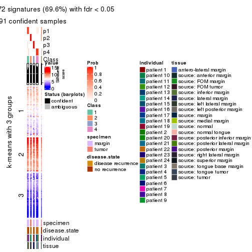
get_signatures(res, k = 5, scale_rows = FALSE)
get_signatures(res, k = 6, scale_rows = FALSE)
#> Error in mat[ceiling(1:nr/h_ratio), ceiling(1:nc/w_ratio), drop = FALSE]: subscript out of bounds

Compare the overlap of signatures from different k:
compare_signatures(res)
get_signature() returns a data frame invisibly. TO get the list of signatures, the function
call should be assigned to a variable explicitly. In following code, if plot argument is set
to FALSE, no heatmap is plotted while only the differential analysis is performed.
# code only for demonstration
tb = get_signature(res, k = ..., plot = FALSE)
An example of the output of tb is:
#> which_row fdr mean_1 mean_2 scaled_mean_1 scaled_mean_2 km
#> 1 38 0.042760348 8.373488 9.131774 -0.5533452 0.5164555 1
#> 2 40 0.018707592 7.106213 8.469186 -0.6173731 0.5762149 1
#> 3 55 0.019134737 10.221463 11.207825 -0.6159697 0.5749050 1
#> 4 59 0.006059896 5.921854 7.869574 -0.6899429 0.6439467 1
#> 5 60 0.018055526 8.928898 10.211722 -0.6204761 0.5791110 1
#> 6 98 0.009384629 15.714769 14.887706 0.6635654 -0.6193277 2
...
The columns in tb are:
which_row: row indices corresponding to the input matrix.fdr: FDR for the differential test. mean_x: The mean value in group x.scaled_mean_x: The mean value in group x after rows are scaled.km: Row groups if k-means clustering is applied to rows.UMAP plot which shows how samples are separated.
dimension_reduction(res, k = 2, method = "UMAP")
dimension_reduction(res, k = 3, method = "UMAP")
dimension_reduction(res, k = 4, method = "UMAP")
dimension_reduction(res, k = 5, method = "UMAP")
dimension_reduction(res, k = 6, method = "UMAP")
Following heatmap shows how subgroups are split when increasing k:
collect_classes(res)
Test correlation between subgroups and known annotations. If the known annotation is numeric, one-way ANOVA test is applied, and if the known annotation is discrete, chi-squared contingency table test is applied.
test_to_known_factors(res)
#> n specimen(p) disease.state(p) individual(p) tissue(p) k
#> ATC:NMF 93 1.98e-06 1.000 0.415 5.03e-03 2
#> ATC:NMF 92 1.98e-15 0.985 0.874 8.66e-07 3
#> ATC:NMF 91 2.49e-14 0.326 0.547 7.05e-06 4
#> ATC:NMF 91 1.16e-13 0.616 0.527 1.40e-05 5
#> ATC:NMF 73 1.05e-11 0.615 0.473 2.21e-05 6
If matrix rows can be associated to genes, consider to use functional_enrichment(res,
...) to perform function enrichment for the signature genes. See this vignette for more detailed explanations.
sessionInfo()
#> R version 3.6.0 (2019-04-26)
#> Platform: x86_64-pc-linux-gnu (64-bit)
#> Running under: CentOS Linux 7 (Core)
#>
#> Matrix products: default
#> BLAS: /usr/lib64/libblas.so.3.4.2
#> LAPACK: /usr/lib64/liblapack.so.3.4.2
#>
#> locale:
#> [1] LC_CTYPE=en_GB.UTF-8 LC_NUMERIC=C LC_TIME=en_GB.UTF-8
#> [4] LC_COLLATE=en_GB.UTF-8 LC_MONETARY=en_GB.UTF-8 LC_MESSAGES=en_GB.UTF-8
#> [7] LC_PAPER=en_GB.UTF-8 LC_NAME=C LC_ADDRESS=C
#> [10] LC_TELEPHONE=C LC_MEASUREMENT=en_GB.UTF-8 LC_IDENTIFICATION=C
#>
#> attached base packages:
#> [1] grid stats graphics grDevices utils datasets methods base
#>
#> other attached packages:
#> [1] genefilter_1.66.0 ComplexHeatmap_2.3.1 markdown_1.1 knitr_1.26
#> [5] GetoptLong_0.1.7 cola_1.3.2
#>
#> loaded via a namespace (and not attached):
#> [1] circlize_0.4.8 shape_1.4.4 xfun_0.11 slam_0.1-46
#> [5] lattice_0.20-38 splines_3.6.0 colorspace_1.4-1 vctrs_0.2.0
#> [9] stats4_3.6.0 blob_1.2.0 XML_3.98-1.20 survival_2.44-1.1
#> [13] rlang_0.4.2 pillar_1.4.2 DBI_1.0.0 BiocGenerics_0.30.0
#> [17] bit64_0.9-7 RColorBrewer_1.1-2 matrixStats_0.55.0 stringr_1.4.0
#> [21] GlobalOptions_0.1.1 evaluate_0.14 memoise_1.1.0 Biobase_2.44.0
#> [25] IRanges_2.18.3 parallel_3.6.0 AnnotationDbi_1.46.1 highr_0.8
#> [29] Rcpp_1.0.3 xtable_1.8-4 backports_1.1.5 S4Vectors_0.22.1
#> [33] annotate_1.62.0 skmeans_0.2-11 bit_1.1-14 microbenchmark_1.4-7
#> [37] brew_1.0-6 impute_1.58.0 rjson_0.2.20 png_0.1-7
#> [41] digest_0.6.23 stringi_1.4.3 polyclip_1.10-0 clue_0.3-57
#> [45] tools_3.6.0 bitops_1.0-6 magrittr_1.5 eulerr_6.0.0
#> [49] RCurl_1.95-4.12 RSQLite_2.1.4 tibble_2.1.3 cluster_2.1.0
#> [53] crayon_1.3.4 pkgconfig_2.0.3 zeallot_0.1.0 Matrix_1.2-17
#> [57] xml2_1.2.2 httr_1.4.1 R6_2.4.1 mclust_5.4.5
#> [61] compiler_3.6.0